ڈسکارڈ کی مکمل گائیڈ
طلبہ، کمیونٹی ممبرز، ماڈریٹرز اور سرور اونرز کے لیے ابتدا سے اعلیٰ درجے تک
زبان: اردو (نستعلیق) — انگریزی انٹرفیس لیبلز کے ساتھ مصنف: ایم۔ اسلم خان (M. Aslam Khan) آخری نظرثانی: 22 ستمبر 2026 حیثیت: کتاب کا فعال مسودہ
نوٹ: اس کتاب میں پلیٹ فارم کا نام Discord ہے۔ “Discard” کو عموماً ٹائپنگ کی غلطی سمجھا جاتا ہے۔ ڈسکارڈ کے مینو، بٹن اور فیچرز وقت کے ساتھ بدلتے رہتے ہیں؛ اس لیے ہر جگہ ممکنہ پلیٹ فارم، ڈیوائس، عمر، علاقے، رول، سبسکرپشن اور سرور سیٹنگ کے فرق کو واضح کیا گیا ہے۔
کتاب کا مقصد
یہ گائیڈ ایک طالبِ علم کو ڈسکارڈ محض انسٹال کر کے چیٹ کرنا نہیں، بلکہ اُسے یہ سکھانے کے لیے لکھی گئی ہے کہ وہ:
- اکاؤنٹ بنائے اور اُسے محفوظ رکھے،
- ڈیسک ٹاپ، ویب اور موبائل پر استعمال کرے،
- فرینڈز، DMs، گروپس، سرورز اور چینلز کو سمجھے،
- ٹیکسٹ، وائس، ویڈیو، اسکرین شیئر اور فائلوں کا محفوظ استعمال کرے،
- پرائیویسی، سیفٹی اور رپورٹنگ کنٹرولز کو نافذ کرے،
- اپنا اسٹڈی/کمیونٹی سرور منصوبہ بندی کے ساتھ بنا کر لانچ کرے،
- رولز، پرمیشنز، ماڈریشن، AutoMod اور بوٹس کنفیگر کرے،
- عام مسائل کی تشخیص اور اُن کا حل کرے،
- اور ذمہ دار ڈیجیٹل شہریت کے ساتھ ڈسکارڈ کا انتظام کرے۔
یہ کتاب کون پڑھ سکتا ہے؟
- بالکل نیا صارف: جسے ڈسکارڈ کا نام بھی نیا لگتا ہو۔
- طالبِ علم: جو آن لائن کلاس، اسٹڈی گروپ، پروجیکٹ ٹیم یا سوسائٹی کے لیے ڈسکارڈ استعمال کرنا چاہتا ہو۔
- کمیونٹی ممبر: جو موجودہ سرور میں بہتر طریقے سے شرکت کرنا چاہتا ہو۔
- ماڈریٹر: جو ممبرز، پیغامات، رپورٹس اور قواعد کا انتظام کرنا چاہتا ہو۔
- سرور اونر/ایڈمن: جو سرور کی ساخت، پرمیشنز، سیفٹی اور ترقی کو ذمہ دار طریقے سے بنانا چاہتا ہو۔
- والدین/استاد/مشیر: جو ڈسکارڈ کی صلاحیتوں، خطرات اور کنٹرولز کو سمجھنا چاہتا ہو۔
کتاب استعمال کرنے کا طریقہ
- ہر چیپٹر کے آخر میں Practice Task اور Checklist دی گئی ہے۔
- انگریزی UI لیبلز کو
backticksمیں لکھا گیا ہے، مثلاًUser Settings،Create a Server،Edit Channel۔ - جہاں کوئی آپشن صرف ڈیسک ٹاپ، موبائل، ویب، Nitro، سرور بوسٹ، عمر کی تصدیق، کمیونٹی ایکٹیویشن یا ایڈمن رول پر منحصر ہو، وہاں Condition باکس دیا گیا ہے۔
- اسکرین شاٹس ہر ڈیوائس/ورژن میں مختلف ہو سکتے ہیں؛ اس لیے بصری جگہ کے بجائے مینو/آپشن کے درست یا قریبی لیبلز پر توجہ دی گئی ہے۔
- کسی بھی سرور میں سیٹنگ بدلنے سے پہلے ایڈمن/اونر سے اجازت لیں۔
- کسی صارف کی نجی معلومات، پیغامات، تصاویر، ریکارڈنگز یا ڈیٹا کو واضح اجازت اور قابلِ اطلاق قانون/پالیسی کے بغیر جمع یا شیئر نہ کریں۔
فہرست
[[TOC]]
حصہ 0 — شروعات سے پہلے
ڈسکارڈ کیا ہے اور کیا نہیں؟
1.1 مختصر تعارف
ڈسکارڈ ایک مواصلاتی پلیٹ فارم ہے جہاں لوگ ٹیکسٹ پیغامات، وائس کالز، ویڈیو کالز، اسکرین شیئرنگ، کمیونٹیز، ایونٹس اور مختلف اقسام کے چینلز کے ذریعے جُڑتے ہیں۔ اِسے گیمنگ کمیونٹی کے لیے مقبول بنایا گیا تھا، لیکن اب طلبہ، کریئیٹرز، پیشہ ور گروپس، غیر منافع بخش ادارے، کلبز اور دوست بھی اِسے استعمال کرتے ہیں۔
ڈسکارڈ کو تین درجوں پر سمجھیں:
- ذاتی جگہ: دوست، DMs اور گروپ چیٹس۔
- کمیونٹی جگہ: سرورز، چینلز، رولز اور ایونٹس۔
- انتظامی جگہ: پرمیشنز، ماڈریشن، سیفٹی ٹولز، بوٹس اور اینالیٹکس۔
مقصد: اِس چیپٹر کا مقصد یہ ہے کہ آپ ڈسکارڈ کو ایک کثیر المقاصد مواصلاتی ٹول کے طور پر سمجھیں، اُسے محض گیمنگ چیٹ ایپ یا عوامی سوشل میڈیا فیڈ نہ سمجھیں۔ درست ذہنی ماڈل بنانے کے بعد آپ اکاؤنٹ، سرور، چینل، پرمیشن اور سیفٹی کنٹرولز کو بہتر طریقے سے استعمال کر سکتے ہیں۔
پیشگی ضروریات: اِس چیپٹر کے لیے کسی اکاؤنٹ، پیڈ سبسکرپشن یا تکنیکی معلومات کی ضرورت نہیں۔ اگر آپ کے پاس اسمارٹ فون، کمپیوٹر یا کوئی سپورٹڈ براؤزر ہے تو آپ مثالوں کو عملی طور پر دیکھ سکتے ہیں، ورنہ آپ تصورات کو نوٹس میں سمجھ کر بعد میں مشق کر سکتے ہیں۔
پلیٹ فارم کے فرق: ڈیسک ٹاپ، ویب اور موبائل
ڈیسک ٹاپ ایپ میں سرور ریل، چینل لسٹ، ممبرز لسٹ، میسج کمپوزر اور سیٹنگز عموماً ایک ساتھ یا کشادہ لے آؤٹ میں نظر آتی ہیں۔ اِس وجہ سے نئے صارفین کے لیے ڈھانچہ سمجھنا آسان ہوتا ہے۔ ویب ورژن بھی براؤزر میں یہی بنیادی حصے دکھاتا ہے، لیکن براؤزر پرمیشنز، کوکیز، ایکسٹینشنز اور ہارڈویئر ایکسیلیریشن وائس، کیمرہ اور اسکرین شیئرنگ کو متاثر کر سکتے ہیں۔ موبائل ایپ میں جگہ کم ہوتی ہے؛ سرور لسٹ، چینل لسٹ، ممبرز اور کمپوزر عموماً الگ پینلز یا بیک نیویگیشن کے ذریعے کھلتے ہیں۔ موبائل پر پش نوٹیفکیشنز، بیٹری، ڈیٹا کے استعمال اور OS لیول مائیک/کیمرہ پرمیشنز ڈیسک ٹاپ کے مقابلے میں زیادہ اہم ہوتی ہیں۔
نمبر وار UI ورک فلو
- آفیشل ڈسکارڈ ایپ، قابلِ اعتماد موبائل ایپ اسٹور یا سپورٹڈ ویب کلائنٹ کھولیں۔
- اگر اکاؤنٹ پہلے سے ہے تو
Log Inمنتخب کریں؛ نئے اکاؤنٹ کے لیےCreate an accountیاRegisterمنتخب کریں۔ - لاگ اِن کے بعد ڈیسک ٹاپ/ویب پر بائیں طرف سرور آئیکنز والی جگہ دیکھیں۔ اِسے عموماً Server Rail کہا جاتا ہے۔
- کسی سرور آئیکن کو منتخب کریں اور چینل لسٹ میں
#general،#announcementsیا کسی اور ٹیکسٹ چینل کو دیکھیں۔ - مرکزی حصے میں پیغامات، نیچے
Message #channel-nameوالا کمپوزر اور ضرورت پر ممبرز لسٹ کا مشاہدہ کریں۔ - وائس چینل پر کلک یا ٹیپ کر کے جوائن کریں، پھر
Mic،DeafenاورDisconnectجیسے کنٹرولز دیکھیں۔ - پروفائل یا گیئر آئیکن سے
User Settings/Settingsکھول کر اکاؤنٹ اور پرائیویسی آپشنز کا جائزہ لیں۔
مثالیں
- طالبِ علم: کلاس اعلانات کے لیے
#announcements، سوالات کے لیے#q-and-a، اور گروپ اسٹڈی کے لیےFocus Roomوائس چینل۔ - پروجیکٹ ٹیم: ہر پروجیکٹ کے لیے الگ ٹیکسٹ چینل، فائلوں کے لیے ریسورسز چینل، اور فوری گفتگو کے لیے وائس روم۔
- کمیونٹی: قواعد اور تعارف کے چینلز، ایونٹس کے لیے اعلان، اور ماڈریٹرز کے لیے نجی ایڈمن چینل۔
- دوست: ایک سے ایک DM، چھوٹا گروپ DM، وائس کال اور غیر رسمی میڈیا شیئرنگ۔
عام غلطیاں
- ڈسکارڈ کو عوامی فیڈ سمجھ کر ہر بات ہر سرور میں پوسٹ کرنا۔
- سرور کو چینل اور چینل کو سرور سمجھ لینا۔
- یہ فرض کرنا کہ فیچر نظر آ رہا ہے تو آپ کو اُسے استعمال کرنے کی اجازت بھی حاصل ہے۔
- سرور اونر کو پلیٹ فارم کے قواعد، قانون یا کمیونٹی گائیڈ لائنز سے آزاد سمجھنا۔
- ڈسکارڈ کو مستقل کلاؤڈ اسٹوریج یا سرکاری تعلیمی ریکارڈ سسٹم سمجھ لینا۔
- ہر DM کو مکمل نجی، خفیہ یا اینڈ ٹو اینڈ انکرپٹڈ سمجھ لینا۔
- عوامی سرور میں نامعلوم لنکس، فائلوں یا تصدیقی فلو پر فوراً کلک کرنا۔
سیفٹی نوٹس
ہر پیغام، تصویر، صوتی گفتگو اور شیئر کی گئی فائل کو ایسی چیز سمجھیں جسے وصول کنندہ اسکرین شاٹ، فارورڈ یا رپورٹ کر سکتا ہے۔ اپنا گھر کا پتہ، اسکول کا شیڈول، فون نمبر، شناختی دستاویز، پاس ورڈ، 2FA کوڈ یا مالی معلومات شیئر نہ کریں۔ کسی سرور کے قواعد اور Community Guidelines پڑھیں۔ اگر کوئی مواد خطرناک، نازیبا، اسکیم یا غیر قانونی لگے تو اُس میں ملوث ہونے کے بجائے بلاک/رپورٹ کریں اور قابلِ اعتماد ماڈریٹر یا متعلقہ حکام کو آگاہ کریں۔ کسی ریکارڈنگ، اسکرین شاٹ یا ذاتی ڈیٹا کو واضح مقصد، اجازت اور محفوظ اسٹوریج کے بغیر جمع نہ کریں۔
1.2 ڈسکارڈ کیا نہیں ہے؟
- یہ محض گیمنگ چیٹ ایپ نہیں ہے۔
- یہ عوامی سوشل میڈیا فیڈ نہیں ہے؛ ہر سرور کی رسائی پالیسی الگ ہوتی ہے۔
- یہ خودکار طور پر نجی کلاؤڈ اسٹوریج نہیں ہے۔
- یہ اسکول/LMS کا مکمل متبادل نہیں ہے۔
- ہر پیغام ہمیشہ کے لیے مستقل آرکائیو نہیں ہوتا؛ صارفین، ماڈریٹرز، رٹینشن پالیسیوں اور پلیٹ فارم کے قواعد کے مطابق مواد تبدیل یا حذف ہو سکتا ہے۔
- “سرور اونر” کا مطلب یہ نہیں کہ وہ ہر قانونی یا اخلاقی حد سے آزاد ہے۔
1.3 ڈسکارڈ کے عام استعمال
| استعمال | مثال |
|---|---|
| اسٹڈی گروپ | کلاس اعلانات، Q&A، وائس روم |
| پروجیکٹ ٹیم | ٹاسک چینلز، اسکرین شیئر، فائل گفتگو |
| کلب/کمیونٹی | ایونٹس، رولز، تعارف |
| کریئیٹر کمیونٹی | اپڈیٹس، شائقین کی گفتگو، لائیو سیشنز |
| سپورٹ کمیونٹی | FAQs، فورمز، ماڈریٹر مدد |
| دوست | DMs، گروپ کالز، گیمز، میڈیا |
1.4 اہم اصول
ڈسکارڈ میں ہر عمل دو چیزوں پر منحصر ہے:
- صلاحیت (Capability): کیا فیچر تکنیکی طور پر موجود ہے؟
- پرمیشن: کیا آپ کے اکاؤنٹ/رول کو وہ عمل کرنے کی اجازت ہے؟
فیچر نظر آئے اور پھر بھی کام نہ کرے تو پہلے اپنا رول، چینل پرمیشن اور سرور کا قاعدہ چیک کریں۔ مثال کے طور پر آپ کے پاس Send Messages کی تکنیکی صلاحیت ہو سکتی ہے، لیکن کسی اعلان چینل میں صرف ماڈریٹرز کو پیغام بھیجنے کی اجازت ہو۔ اِس کا مطلب یہ نہیں کہ ایپ خراب ہے؛ ہو سکتا ہے چینل پالیسی جان بوجھ کر محدود ہو۔
پریکٹس ٹاسک
اپنے لیے ڈسکارڈ کا ایک مقصد لکھیں: “میں ڈسکارڈ اِس لیے استعمال کروں گا/گی کیونکہ ______۔” اپنے مقصد کے ساتھ یہ بھی لکھیں کہ آپ کس قسم کے سرور، چینلز اور سیفٹی حدود کو ترجیح دیں گے۔ مثال کے طور پر: “میں اپنی اسٹڈی گروپ کے اعلانات، Q&A اور پروجیکٹ کوآرڈینیشن کے لیے ڈسکارڈ استعمال کروں گا/گی؛ ذاتی دستاویزات اور نجی فون نمبر کبھی شیئر نہیں کروں گا/گی۔”
چیپٹر چیک لسٹ
- ☐ ڈسکارڈ کی بنیادی تعریف سمجھ آ گئی۔
- ☐ ذاتی، کمیونٹی اور انتظامی درجوں کا فرق سمجھ آ گیا۔
- ☐ فیچر اور پرمیشن کا فرق یاد رہا۔
- ☐ ڈیسک ٹاپ، ویب اور موبائل کے بنیادی لے آؤٹ فرق سمجھ آ گئے۔
- ☐ ڈسکارڈ کو عوامی فیڈ یا مستقل اسٹوریج نہ سمجھنے کا فیصلہ کیا۔
- ☐ ذاتی معلومات اور نامعلوم لنکس کے لیے سیفٹی حدود لکھ لی ہیں۔
ڈسکارڈ کی بنیادی اصطلاحات
| اصطلاح | سادہ مطلب |
|---|---|
| اکاؤنٹ | آپ کی ڈسکارڈ لاگ اِن شناخت |
| یوزرنیم | آپ کا منفرد اکاؤنٹ نام |
| ڈسپلے نیم | کسی سرور میں نظر آنے والا نام |
| اوتار | پروفائل تصویر |
| DM | ڈائریکٹ میسج؛ نجی ایک سے ایک گفتگو |
| گروپ DM | چند ممبرز کے درمیان نجی گروپ گفتگو |
| سرور | کمیونٹی/ورک اسپیس جس میں چینلز اور ممبرز ہوتے ہیں |
| چینل | سرور کے اندر مخصوص موضوع کے لیے جگہ |
| کیٹیگری | چینلز کو منظم کرنے والا گروپ |
| رول | ممبرز کو پرمیشنز/رنگ/گروپ شناخت دینے کا لیبل |
| پرمیشن | کسی عمل کی تکنیکی اجازت |
| ماڈریٹر | کمیونٹی قواعد نافذ کرنے والا مجاز ممبر |
| ایڈمن/اونر | سرور سیٹنگز اور پرمیشنز کا انتظام کرنے والے صارفین |
| وائس چینل | لائیو آڈیو کے لیے چینل |
| اسٹیج چینل | اسپیکرز اور سامعین پر مبنی لائیو گفتگو |
| فورم چینل | پوسٹس/موضوعات کی منظم گفتگو |
| تھریڈ | کسی پیغام/موضوع کے اندر مرکوز گفتگو |
| بوٹ | خودکار اکاؤنٹ جو کمانڈز/سروسز فراہم کرتا ہے |
| ویب ہُک | بیرونی سروس سے چینل میں پیغام بھیجنے کا طریقہ |
| AutoMod | بلٹ اِن خودکار ماڈریشن ٹول |
| Nitro | اختیاری پیڈ سبسکرپشن/مراعات |
| بوسٹ | سرور کو اضافی کمیونٹی فیچرز دینے والی پیڈ سپورٹ |
مقصد: اِس چیپٹر کا مقصد ڈسکارڈ کی عام اصطلاحات کو ایسا بنانا ہے کہ آپ سیٹنگز، قواعد، ٹیوٹوریلز اور ماڈریشن گفتگو کو بااعتماد طریقے سے پڑھ سکیں۔ اصطلاحات صرف تعریفوں کا مجموعہ نہیں؛ یہ آپ کو یہ سمجھنے میں مدد دیتی ہیں کہ گفتگو کہاں ہو رہی ہے، کس کو رسائی ہے اور کون عمل لے سکتا ہے۔
پیشگی ضروریات: چیپٹر 1 کا بنیادی تصور کافی ہے۔ آپ کو اکاؤنٹ بنانا ضروری نہیں، لیکن اگر آپ کے پاس ڈیمو سرور یا پریکٹس چینل ہے تو اصطلاحات کو UI میں پہچاننا آسان ہوگا۔
پلیٹ فارم کے فرق: ڈیسک ٹاپ، ویب اور موبائل
ڈیسک ٹاپ اور ویب پر Server، Channel، Category، Members، Roles اور Permissions جیسے لیبلز عموماً سائڈبار، ڈراپ ڈاؤن اور سیٹنگز پینلز میں واضح طور پر نظر آتے ہیں۔ موبائل پر کچھ لیبلز کمپیکٹ آئیکنز یا نیسٹڈ مینوز میں ہوتے ہیں؛ مثال کے طور پر سرور سیٹنگز تک پہنچنے کے لیے سرور نام، گیئر آئیکن یا Settings آپشن ٹیپ کرنا پڑتا ہے۔ وائس، اسٹیج اور فورم چینلز کے آئیکنز پلیٹ فارم کے مطابق الگ نظر آ سکتے ہیں، لیکن اُن کا مقصد یکساں رہتا ہے۔ Nitro، بوسٹ اور سبسکرپشن سے متعلق لیبلز اکاؤنٹ پلان، علاقے اور کلائنٹ ورژن کے مطابق ظاہر یا چھپ سکتے ہیں۔
نمبر وار UI ورک فلو
- کسی سرور میں سرور آئیکن یا سرور نام کی شناخت کریں؛ یہ کمیونٹی/ورک اسپیس ہے۔
- سرور کے اندر
#channel-nameوالے ٹیکسٹ چینل، اسپیکر آئیکن والے وائس چینل، اسٹیج آئیکن والے اسٹیج چینل اور فورم طرز کے چینل کا موازنہ کریں۔ - بائیں یا درمیانی سائڈبار میں
Categoryکی سرخی کے نیچے گروپ بند چینلز دیکھیں۔ Membersلسٹ میں یوزرنیمز، اوتار، رولز اور آن لائن/آئیڈل/ڈو ناٹ ڈسٹرب انڈیکیٹرز کا مشاہدہ کریں۔- کسی ممبر کے نام پر کلک یا ٹیپ کر کے پروفائل کارڈ کھولیں؛ یوزرنیم، ڈسپلے نیم، اوتار اور دستیاب ایکشنز دیکھیں۔
- اپنے پروفائل یا سرور ممبر لسٹ میں رول رنگ/نام دیکھیں، لیکن رنگ کو سیکیورٹی ثبوت نہ سمجھیں۔
- کسی پیغام پر
Reply،Add Reaction،Edit MessageیاDelete Messageآپشنز چیک کریں؛ دستیاب آپشنز آپ کی پرمیشن اور پیغام کی ملکیت پر منحصر ہیں۔ User Settings/SettingsمیںRoles،Permissions،AutoModیا متعلقہ سیکشنز صرف اُس وقت ایڈٹ کریں جب آپ کے پاس ایڈمن اختیار ہو۔
مثالیں
- یوزرنیم اور ڈسپلے نیم: یوزرنیم آپ کی اکاؤنٹ شناخت ہے؛ ڈسپلے نیم کسی خاص سرور میں الگ ہو سکتا ہے۔
- سرور اور چینل: “ABC Study Server” سرور ہے؛ اُس کے اندر
#assignmentsایک چینل ہے۔ - رول اور پرمیشن: “Student” رول رکنیت دکھاتا ہے؛
Send Messagesپرمیشن بتاتی ہے کہ طالبِ علم چینل میں پیغام بھیج سکتا ہے یا نہیں۔ - تھریڈ اور DM: تھریڈ کسی چینل کے موضوع/پیغام کے اندر مرکوز گفتگو ہے؛ DM سرور سے باہر نجی گفتگو ہے۔
- بوٹ اور ویب ہُک: بوٹ خودکار کمانڈز چلاتا ہے؛ ویب ہُک بیرونی نظام سے کنٹرول شدہ پیغام بھیجتا ہے۔
عام غلطیاں
- یوزرنیم اور ڈسپلے نیم کو یکساں سمجھ لینا۔
- رول کو پرمیشن سمجھ لینا؛ رول محض لیبل/گروپنگ ہے جب تک اُسے پرمیشنز تفویض نہ ہوں۔
- ہر سرور کو عوامی سمجھ لینا؛ نجی دعوت نامے والے سرورز بھی ہوتے ہیں۔
- وائس چینل کو ٹیکسٹ چیٹ سمجھ کر پیغام لکھنے کی کوشش کرنا۔
- فورم چینل میں معمول کی مسلسل چیٹ کی توقع کرنا؛ فورم میں پوسٹس/موضوعات کا ڈھانچہ ہوتا ہے۔
- بوٹ کو صرف اِس وجہ سے قابلِ اعتماد سمجھ لینا کہ وہ سرور میں موجود ہے۔
- Nitro یا بوسٹ کو سیکیورٹی فیچر سمجھ لینا؛ یہ اختیاری مراعات ہیں، پرائیویسی کی ضمانت نہیں۔
- ماڈریٹر اور ایڈمن کو ایک ہی درجہ سمجھ لینا؛ درجہ بندی اور پرمیشنز سرور کے مطابق الگ ہو سکتی ہیں۔
سیفٹی نوٹس
کسی رول، رنگ یا بیج کو دیکھ کر کسی صارف پر اندھا اعتماد نہ کریں۔ جعل ساز ایڈمنز یا ماڈریٹرز جیسا نام/اوتار استعمال کر سکتے ہیں۔ بوٹ مدعو کرتے وقت اُس کی ڈویلپر شناخت، پرائیویسی پالیسی، مطلوبہ اسکوپس اور پرمیشنز چیک کریں۔ کسی نامعلوم سرور میں اپنی اصل شناخت، رابطہ تفصیلات یا دستاویزات شیئر نہ کریں۔ اگر کوئی بوٹ یا صارف آپ سے پاس ورڈ، 2FA کوڈ، ادائیگی یا ایگزیکیوٹیبل فائل مانگے تو فلو فوراً روک کر آفیشل رپورٹ اور قابلِ اعتماد ایڈمن کو آگاہ کریں۔
شرائط کا نوٹ
کچھ اصطلاحات اور فیچرز علاقے، اکاؤنٹ کی عمر، سرور کی قسم، سبسکرپشن، ڈیوائس اور ڈسکارڈ پالیسی کے مطابق دستیاب یا محدود ہو سکتے ہیں۔
پریکٹس ٹاسک
اپنے نوٹس میں تین اصطلاحات لکھیں جو آپ نے پہلے نہیں سنی تھیں اور اُنہیں اپنے الفاظ میں بیان کریں۔ ہر اصطلاح کے ساتھ ایک چھوٹی UI مثال بھی لکھیں، جیسے: “#q-and-a ٹیکسٹ چینل ہے،” “Teacher رول ماڈریشن میں مدد کرتا ہے،” یا “تھریڈ کسی سوال کے نیچے مرکوز جوابات کا سلسلہ ہے۔”
چیپٹر چیک لسٹ
- ☐ اکاؤنٹ، یوزرنیم اور ڈسپلے نیم کا فرق سمجھ آ گیا۔
- ☐ سرور، کیٹیگری اور چینل کا تعلق واضح ہے۔
- ☐ رول اور پرمیشن کا فرق یاد رہا۔
- ☐ DM، گروپ DM، تھریڈ اور فورم چینل میں فرق کیا جا سکتا ہے۔
- ☐ وائس، اسٹیج اور ٹیکسٹ چینلز کا بنیادی مقصد سمجھ آ گیا۔
- ☐ بوٹ، ویب ہُک اور AutoMod کو خودکار ٹولز کے طور پر پہچانا جا سکتا ہے۔
- ☐ رول رنگ یا بیج کو اعتماد کا ثبوت نہ سمجھنے کا فیصلہ کیا۔
سیکھنے کے نتائج اور روڈ میپ
اِس کتاب کو چار درجوں میں پڑھیں:
درجہ 1: صارف
- اکاؤنٹ محفوظ بنانا
- انٹرفیس میں نیویگیٹ کرنا
- پیغامات، کالز اور فائلوں کو محفوظ طریقے سے استعمال کرنا
درجہ 2: کمیونٹی شریک
- سرور کی آداب
- رولز اور پرمیشنز
- تھریڈز، فورمز، ایونٹس اور نوٹیفکیشنز
درجہ 3: ماڈریٹر
- قواعد، رپورٹس، شواہد
- ٹائم آؤٹ/کک/بین
- AutoMod اور آڈٹ لاگ
درجہ 4: اونر/ایڈمن
- ساخت، آن بورڈنگ، ڈسکوری
- پرمیشن میٹرکس
- بوٹس، انٹیگریشنز، ترقی اور واقعے کا ردِ عمل
مقصد: یہ چیپٹر آپ کو بتاتا ہے کہ ڈسکارڈ سیکھنا ایک خطی مہارت کا راستہ ہے۔ پہلے اپنے اکاؤنٹ اور مواصلات کو محفوظ بنائیں، پھر کمیونٹی ممبر کے طور پر ذمہ دارانہ شرکت سیکھیں، اُس کے بعد ماڈریشن اور آخر میں سرور ایڈمنسٹریشن۔ ہر درجہ پچھلے درجے کی مشق پر استوار ہوتا ہے۔
پیشگی ضروریات: چیپٹر 1 اور 2 کی اصطلاحات اور بنیادی تصورات۔ آپ کو ابھی ایڈمن ہونے کی ضرورت نہیں؛ صرف یہ طے کرنا ہے کہ آپ موجودہ مرحلے سے سیکھنا شروع کریں گے۔
پلیٹ فارم کے فرق: ڈیسک ٹاپ، ویب اور موبائل
سیکھنے کا روڈ میپ تینوں پلیٹ فارمز پر لاگو ہوتا ہے، لیکن مشق کا طریقہ الگ ہو سکتا ہے۔ ڈیسک ٹاپ/ویب پر سیٹنگز، پرمیشن میٹرکس، آڈٹ لاگز اور سرور ایڈمنسٹریشن کو تفصیل سے دیکھنا آسان ہوتا ہے۔ موبائل پر روزمرہ مواصلات، نوٹیفکیشنز، فوری جوابات، وائس کنٹرولز اور راہ چلتے سیفٹی اقدامات زیادہ عملی ہیں۔ ویب براؤزر پر آپ انسٹالیشن کے بغیر بنیادی باتیں سیکھ سکتے ہیں، لیکن جدید میڈیا اور پرمیشن ٹیسٹنگ ڈیسک ٹاپ ایپ پر بہتر ہو سکتی ہے۔ اپنا بنیادی سیکھنے کا ڈیوائس منتخب کریں، پھر ہفتے میں کم از کم ایک بار دوسرے پلیٹ فارم پر وہی عمل دہرائیں۔
نمبر وار UI ورک فلو
- اپنی موجودہ مہارت کو درجہ 1 سے درجہ 4 تک درجہ بندی کریں: ابتدائی، آرام دہ صارف، فعال شریک، ماڈریٹر یا ایڈمن۔
- ہر درجے کے لیے ایک سیکھنے کا نتیجہ منتخب کریں؛ مثال کے طور پر درجہ 1 کے لیے
User Settingsاور 2FA کا جائزہ۔ - سات دن کا منصوبہ بنائیں: دن 1 اصطلاحات، دن 2 اکاؤنٹ سیکیورٹی، دن 3 نیویگیشن، دن 4 پیغامات/جوابات، دن 5 وائس/فائلیں، دن 6 سرور آداب، دن 7 جائزہ۔
- ہر دن ایک چھوٹا قابلِ مشاہدہ کام مکمل کریں اور نتیجہ نوٹس میں لکھیں۔
- مشق صرف ایڈمن سے منظور شدہ سرور یا ٹیسٹ چینل میں کریں؛ فعال کمیونٹی میں تجرباتی پرمیشن تبدیلی نہ کریں۔
- ہفتے کے آخر میں اپنے نوٹس کا موازنہ کریں اور اگلا درجہ منتخب کریں۔
- ماڈریٹر یا ایڈمن درجے تک پہنچنے سے پہلے قواعد، شواہد، اپیل اور کم از کم اختیار کے اصولوں کا اعادہ کریں۔
مثالیں
- درجہ 1 منصوبہ: “میں اپنا اکاؤنٹ محفوظ کر کے ڈیسک ٹاپ اور موبائل پر چینل تبدیل کرنا سیکھوں گا۔”
- درجہ 2 منصوبہ: “میں چینل کا موضوع پڑھ کر درست جگہ سوال پوسٹ کروں گا/گی اور وسیع مینشنز سے بچوں گا/گی۔”
- درجہ 3 منصوبہ: “میں وارننگ، پیغام ہٹانے، ٹائم آؤٹ اور رپورٹ کے درمیان فرق سیکھوں گا۔”
- درجہ 4 منصوبہ: “میں رولز، پرمیشنز، آن بورڈنگ اور واقعے کے ردِ عمل کا دستاویزی منصوبہ بناؤں گا/گی۔”
عام غلطیاں
- سیکیورٹی سیکھنے سے پہلے جدید بوٹس یا ایڈمن سیٹنگز پر چھلانگ لگانا۔
- صرف ویڈیوز دیکھ کر پریکٹس ٹاسک مکمل کر لینا۔
- ہر فیچر کو ہر پلیٹ فارم پر یکساں متوقع سمجھنا۔
- فعال سرور میں ٹیسٹ کیے بغیر پرمیشن اوور رائیڈ تبدیل کرنا۔
- ماڈریشن کو ذاتی طاقت یا سزا سمجھنا۔
- روڈ میپ کو اِتنا وسیع بنانا کہ کوئی کام قابلِ پیمائش نہ رہے۔
- پیش رفت کا ریکارڈ نہ رکھنا اور غلطیوں سے نہ سیکھنا۔
سیفٹی نوٹس
سیکھنے کے دوران حقیقی طلبہ، کلائنٹس یا کمیونٹی ممبرز کے ڈیٹا کو ٹیسٹ ڈیٹا کے طور پر استعمال نہ کریں۔ کسی صارف کو ٹیسٹ سبجیکٹ بنانا، اُس کے پیغامات کاپی کرنا یا اجازت کے بغیر ریکارڈنگ لینا غیر اخلاقی ہو سکتا ہے۔ ایڈمن اقدامات صرف مجاز سرور میں کریں۔ اگر آپ ماڈریٹر ٹریننگ لے رہے ہیں تو شواہد تک رسائی صرف ضرورت کے مطابق دیں اور اپیل کے عمل کو باوقار رکھیں۔
پریکٹس ٹاسک
اپنا موجودہ درجہ منتخب کریں اور سات دن کا سیکھنے کا منصوبہ بنائیں۔ ہر دن کے لیے ایک عمل، ایک متوقع نتیجہ اور ایک سیفٹی حد لکھیں۔ مثال: “دن 2: User Settings میں ریکوری آپشنز چیک کروں گا/گی؛ نتیجہ: ریکوری ای میل تصدیق شدہ؛ حد: ریکوری کوڈ کسی اسکرین شاٹ یا چیٹ میں شیئر نہیں کروں گا/گی۔”
چیپٹر چیک لسٹ
- ☐ اپنا موجودہ سیکھنے کا درجہ منتخب کر لیا۔
- ☐ درجہ 1 سے درجہ 4 تک نتائج کا فرق سمجھ آ گیا۔
- ☐ سات دن کا قابلِ پیمائش سیکھنے کا منصوبہ بن گیا۔
- ☐ مشق اور فعال انتظام کے درمیان حد واضح ہے۔
- ☐ ہر درجے کے لیے سیکیورٹی اور پرائیویسی اصول نوٹ کر لیے۔
- ☐ پیش رفت کے جائزے کا معمول طے کر لیا۔
اکاؤنٹ، ڈیوائس اور انٹرنیٹ کی تیاری
4.1 ضروری چیزیں
- درست ای میل ایڈریس
- مضبوط پاس ورڈ
- سپورٹڈ براؤزر یا آفیشل ڈسکارڈ ایپ
- مستحکم انٹرنیٹ کنکشن
- موبائل نمبر جب تصدیق طلب ہو
- مائیک/کیمرہ پرمیشنز (اگر وائس/ویڈیو استعمال کرنا ہو)
- مستند دعوتی لنک
4.2 ڈیوائس کا موازنہ
| پلیٹ فارم | مضبوط پہلو | عام محدودتیں |
|---|---|---|
| ڈیسک ٹاپ ایپ | مکمل کنٹرولز، کی بورڈ شارٹ کٹس، اسکرین شیئر | OS پرمیشنز، اپڈیٹس |
| ویب ایپ | انسٹالیشن کے بغیر رسائی | براؤزر پابندیاں، کچھ فیچرز مختلف |
| اینڈرائیڈ/iOS | نقل پذیری، پش نوٹیفکیشنز | چھوٹا UI، بیٹری/ڈیٹا، موبائل پرمیشنز |
4.3 سیٹ اپ سے پہلے سیفٹی
کسی نامعلوم لنک سے ایپ ڈاؤن لوڈ نہ کریں۔ آفیشل ذریعہ یا ڈیوائس کے قابلِ اعتماد ایپ اسٹور کا استعمال کریں۔ لاگ اِن صفحے پر ڈومین اور براؤزر کا سیکیورٹی انڈیکیٹر چیک کریں۔
مقصد: اِس چیپٹر کا مقصد اکاؤنٹ بنانا، انسٹال کرنا یا لاگ اِن کرنا شروع کرنے سے پہلے ضروری چیزیں، ڈیوائس کی محدودتیں اور سیکیورٹی کی بنیاد تیار کرنا ہے۔ تیاری سے تصدیقی غلطیاں، پرمیشن مسائل اور فشنگ کا خطرہ کم ہوتے ہیں۔
پیشگی ضروریات: آپ کے پاس قابلِ اعتماد ڈیوائس، انٹرنیٹ رسائی، درست ای میل اور مضبوط پاس ورڈ ہونا چاہیے۔ وائس/ویڈیو مشق کے لیے کام کرنے والا مائیک/کیمرہ اور OS/براؤزر پرمیشن چاہیے۔ کسی نجی سرور میں شامل ہونے سے پہلے مستند دعوت نامہ بھی ضروری ہے۔
پلیٹ فارم کے فرق: ڈیسک ٹاپ، ویب اور موبائل
ڈیسک ٹاپ ایپ ونڈوز، میک او ایس یا سپورٹڈ ڈیسک ٹاپ ماحول پر مکمل انٹرفیس دیتی ہے اور اپڈیٹس، کی بورڈ شارٹ کٹس، فائل شیئرنگ اور اسکرین شیئرنگ کے لیے موزوں ہوتی ہے۔ ویب ایپ انسٹالیشن کے بغیر چلتی ہے، لیکن براؤزر کوکیز، پاپ اپس، مائیک/کیمرہ پرمیشن اور ایکسٹینشنز فیچر کے رویے کو تبدیل کر سکتے ہیں۔ موبائل ایپ اینڈرائیڈ/iOS پر پورٹیبل ہے اور پش نوٹیفکیشنز دیتی ہے، لیکن بیٹری، موبائل ڈیٹا، اسٹوریج اور ایپ پرمیشنز کا انتظام کرنا پڑتا ہے۔ موبائل پر فائل پکر، اسکرین شیئر اور نوٹیفکیشن کنٹرولز ڈیسک ٹاپ سے مختلف ہو سکتے ہیں۔
نمبر وار UI ورک فلو
- ڈیوائس پر آفیشل ڈسکارڈ ایپ یا قابلِ اعتماد ایپ اسٹور چیک کریں؛ نامعلوم ڈاؤن لوڈ لنک نہ کھولیں۔
- براؤزر استعمال کر رہے ہیں تو سپورٹڈ جدید براؤزر اپڈیٹ کریں اور سائٹ کا سیکیورٹی انڈیکیٹر تصدیق کریں۔
- ای میل اکاؤنٹ کھول کر ہجے چیک کریں؛ ریکوری رسائی کی تصدیق کریں۔
- پاس ورڈ منیجر یا محفوظ طریقے سے منفرد مضبوط پاس ورڈ بنائیں/ریکارڈ کریں۔
- انٹرنیٹ کنکشن ٹیسٹ کریں؛ وائس/ویڈیو کے لیے مستحکم بینڈوڈتھ اور کم رکاوٹ کو ترجیح دیں۔
- ڈیسک ٹاپ پر OS
Settingsمیں مائیک/کیمرہ پرمیشنز چیک کریں؛ موبائل پر ایپ پرمیشنز میں مطلوبہ رسائی کا جائزہ لیں۔ - دعوتی لنک موصول ہوا ہے تو بھیجنے والے، سرور نام، منزل اور میعاد کی تصدیق کریں، پھر
Joinکریں۔ - پہلی لاگ اِن کے بعد
User Settings/Settingsکھول کر اکاؤنٹ، پرائیویسی، نوٹیفکیشن اور سیکیورٹی سیکشنز کا جائزہ لیں۔
مثالیں
- طالبِ علم کا لیپ ٹاپ: آفیشل ڈیسک ٹاپ ایپ، یونیورسٹی ای میل، ہیڈ فونز اور مستحکم وائی فائی۔
- صرف موبائل صارف: قابلِ اعتماد ایپ اسٹور سے انسٹال، موبائل ڈیٹا/وائی فائی چیک، نوٹیفکیشنز اور مائیک پرمیشنز کا جائزہ۔
- مشترکہ کمپیوٹر: گیسٹ/پروفائل اکاؤنٹ، لاگ اِن کے بعد سیشن سائن آؤٹ، محفوظ پاس ورڈ اور براؤزر آٹو فل چیک۔
- وائس کلاس: براؤزر کے بجائے ڈیسک ٹاپ ایپ کو ترجیح دیں اگر اسکرین شیئرنگ یا آڈیو استحکام کا مسئلہ ہو۔
عام غلطیاں
- نامعلوم “Discord download” اشتہار یا تھرڈ پارٹی انسٹالر پر اعتماد کرنا۔
- ای میل ایڈریس میں ٹائپو کر دینا اور تصدیقی ای میل نہ ملنے پر بار بار نیا اکاؤنٹ بنانا۔
- کمزور یا دوبارہ استعمال شدہ پاس ورڈ استعمال کرنا۔
- براؤزر ایکسٹینشن کو مائیک، کیمرہ یا اسکرین رسائی دے دینا۔
- موبائل ایپ کو ڈیٹا سیور، بیٹری سیور یا پرمیشن پابندی کے باوجود ٹربل شوٹ نہ کرنا۔
- دعوتی لنک کا سرور نام تصدیق کیے بغیر
Joinدبا دینا۔ - مشترکہ ڈیوائس پر
Remember meیا محفوظ پاس ورڈ چھوڑ دینا۔
سیفٹی نوٹس
آفیشل ذریعہ، قابلِ اعتماد ایپ اسٹور اور تصدیق شدہ لاگ اِن صفحے کو معمول بنائیں۔ پاس ورڈ، تصدیقی کوڈ، ریکوری کوڈ اور ادائیگی کی معلومات کسی DM، اسکرین شاٹ، اسکرین شیئر یا نامعلوم فارم میں شیئر نہ کریں۔ عوامی وائی فائی پر حساس اقدامات کرتے وقت اضافی احتیاط رکھیں۔ اگر کوئی لنک آپ کو لاگ اِن کے باہر اسناد درج کرنے کو کہے تو رک جائیں اور آفیشل ایپ/براؤزر میں خود اکاؤنٹ چیک کریں۔ ڈیوائس کھو جانے یا شیئر کرنے کی صورت میں سائن آؤٹ، پاس ورڈ تبدیلی اور فعال سیشنز کے جائزے کا منصوبہ رکھیں۔
پریکٹس ٹاسک
اپنے ڈیوائس میں آفیشل ایپ کا ذریعہ اور بیک اپ لاگ اِن طریقہ نوٹ کریں۔ ایک مختصر تیاری شیٹ بنائیں جس میں ای میل ایڈریس، پاس ورڈ منیجر کی حالت، انٹرنیٹ کی قسم، مائیک/کیمرہ پرمیشن اور قابلِ اعتماد دعوتی ذریعہ لکھا ہو۔ اصلی پاس ورڈ یا کوڈ شیٹ میں لکھ کر عوامی جگہ محفوظ نہ کریں۔
چیپٹر چیک لسٹ
- ☐ آفیشل ایپ/براؤزر کا ذریعہ تصدیق کر لیا۔
- ☐ درست ای میل اور ریکوری رسائی چیک کر لی۔
- ☐ منفرد مضبوط پاس ورڈ کا منصوبہ بن گیا۔
- ☐ انٹرنیٹ اور ڈیوائس پرمیشنز کا جائزہ لے لیا۔
- ☐ وائس/ویڈیو کے لیے مائیک/کیمرہ کی دستیابی تصدیق کر لی۔
- ☐ دعوتی لنک کی تصدیق کا معمول یاد رہا۔
- ☐ مشترکہ ڈیوائس پر سائن آؤٹ اور سیشن سیفٹی کا منصوبہ سمجھ آ گیا۔
محفوظ سیکھنے کا ماحول
ڈسکارڈ سیکھنے کے لیے کم خطرے والا پریکٹس سرور بہتر ہوتا ہے۔ اگر آپ طالبِ علم ہیں تو استاد/ایڈمن سے پریکٹس چینل یا ٹیسٹ سرور لیں۔ عوامی سرور میں سیٹنگز کا تجربہ نہ کریں۔
محفوظ مشق کے قواعد
- اصلی ذاتی دستاویزات اپ لوڈ نہ کریں۔
- کسی اور کا مواد اجازت کے بغیر شیئر نہ کریں۔
- ٹیسٹ پیغامات کو واضح طور پر لیبل کریں۔
- ایڈمن ٹولز صرف مجاز سرور میں استعمال کریں۔
- بوٹ مدعو کرتے وقت کم سے کم ضروری پرمیشنز دیں۔
- ہر تجربے سے پہلے رول بیک منصوبہ بنائیں۔
مقصد: اِس چیپٹر کا مقصد سیکھنے کے لیے ایسا کنٹرول شدہ ماحول بنانا ہے جہاں غلطی سے کمیونٹی، پرائیویسی یا سرور سیکیورٹی کو نقصان نہ پہنچے۔ محفوظ پریکٹس جگہ آپ کو UI، پرمیشنز، پیغامات، رولز اور بوٹس کو ٹیسٹ کرنے کا موقع دیتی ہے۔
پیشگی ضروریات: استاد، ایڈمن یا سرور اونر سے تحریری/زبانی اجازت، ٹیسٹ سرور یا مخصوص پریکٹس چینل، اور رول بیک کا بنیادی منصوبہ۔ اگر آپ صرف صارف فیچرز سیکھ رہے ہیں تو ایڈمن اجازت کی ضرورت نہیں، لیکن عوامی سرور میں بھی قواعد اور اجازت ضروری ہیں۔
پلیٹ فارم کے فرق: ڈیسک ٹاپ، ویب اور موبائل
ڈیسک ٹاپ/ویب ٹیسٹ ماحول سیٹنگز اور پرمیشنز کو ساتھ ساتھ دیکھنے کے لیے بہتر ہیں۔ موبائل پر آپ ممبر کے تجربے، نوٹیفکیشنز، فوری ری ایکشنز اور چینل نیویگیشن کو ٹیسٹ کر سکتے ہیں۔ ویب پر براؤزر مخصوص رویہ ٹیسٹ ہوتا ہے؛ ڈیسک ٹاپ پر OS پرمیشنز اور اسکرین شیئرنگ ٹیسٹ ہوتی ہے۔ اگر ممکن ہو تو ایک ہی ٹیسٹ عمل تینوں پلیٹ فارمز پر موازنہ کریں، لیکن ہر جگہ یکساں ٹیسٹ ڈیٹا اور واضح لیبلز استعمال کریں۔
نمبر وار UI ورک فلو
- ایڈمن سے پریکٹس سرور، ٹیسٹ چینل یا عارضی رول کے لیے اجازت لیں۔
- چینل کے نام یا پن شدہ نوٹ میں
TEST/Practiceواضح طور پر لکھیں۔ - ٹیسٹ اکاؤنٹ یا قابلِ اعتماد شریک کے ساتھ متوقع رویہ بیان کریں۔
- پہلے ٹیکسٹ پیغام، ری ایکشن اور جواب ٹیسٹ کریں؛ پھر فائل، وائس اور اسکرین شیئر جیسے زیادہ خطرے والے فیچرز آزمائیں۔
- پرمیشن تجربے سے پہلے موجودہ سیٹنگز کا اسکرین شاٹ یا نوٹس لیں؛ اسکرین شاٹ میں حساس ڈیٹا نہ ہو۔
- تبدیلی کے بعد ٹیسٹ اکاؤنٹ سے نتیجہ تصدیق کریں۔
- تجربہ ختم ہونے پر پرمیشن، رول، چینل یا پیغام کو اصل حالت میں واپس لائیں۔
- بوٹ انسٹال کرنا ہو تو پہلے ڈویلپر، پرائیویسی پالیسی، اسکوپس اور کم سے کم پرمیشنز کا جائزہ لیں۔
مثالیں
- محفوظ ٹیسٹ:
#practice-textمیں “TEST: reaction workflow” لکھ کر جواب اور ایموجی ری ایکشن چیک کرنا۔ - پرمیشن ٹیسٹ: عارضی
Student Testرول دے کر دیکھنا کہ صارف پیغام بھیج سکتا ہے یا نہیں، پھر رول ہٹانا۔ - غیر محفوظ ٹیسٹ: اصلی کلاس لسٹ، شناختی دستاویزات یا نجی گفتگو کو عوامی ٹیسٹ چینل میں اپ لوڈ کرنا۔
- بوٹ ٹیسٹ: پہلے ٹیسٹ سرور میں یاد دہانی بوٹ انسٹال کرنا، صرف مطلوبہ چینل اور کمانڈ پرمیشنز دینا، پھر پروڈکشن سرور میں غور کرنا۔
عام غلطیاں
- عوامی سرور کو ذاتی لیبارٹری سمجھ لینا۔
- ایڈمن سیٹنگز کو بیک اپ یا رول بیک منصوبے کے بغیر تبدیل کرنا۔
- ٹیسٹ پیغام کو اصل اعلان سمجھ کر ممبرز کو آگاہ کرنا۔
- بوٹ کو مکمل
Administratorپرمیشن دے دینا۔ - اصلی ذاتی ڈیٹا کو “صرف ٹیسٹ ہے” کہہ کر اپ لوڈ کرنا۔
- ٹیسٹ کے بعد عارضی رولز، دعوتیں یا پرمیشنز نہ ہٹانا۔
- ماڈریٹر کے عمل کو فعال ممبرز پر ٹیسٹ کرنا۔
سیفٹی نوٹس
پریکٹس ماحول میں بھی اجازت، پرائیویسی اور ڈیٹا کی کمی لاگو ہوتی ہے۔ کسی شریک کی تصویر، آواز، پیغامات کی تاریخ یا ذاتی تفصیل کو واضح اجازت کے بغیر استعمال نہ کریں۔ ٹیسٹ فائلیں فرضی مواد پر مشتمل ہوں، ایگزیکیوٹیبل فائلوں سے بچیں اور لنکس قابلِ اعتماد ہوں۔ ایڈمن ٹولز صرف مجاز دائرے میں استعمال کریں۔ اگر کوئی تجربہ غلط ہو جائے تو گھبراہٹ میں بڑے پیمانے پر ڈیلیٹ یا بین نہ کریں؛ پہلے تبدیلیاں الگ کریں، شواہد محفوظ کریں اور ایڈمن/اونر کو آگاہ کریں۔
چیپٹر 5 چیک لسٹ
- ☐ پریکٹس جگہ کی شناخت ہو گئی۔
- ☐ ذاتی ڈیٹا کے اخراج کا قاعدہ سمجھ آ گیا۔
- ☐ ایڈمن اقدامات کے لیے اجازت کی تصدیق ہو گئی۔
- ☐ ٹیسٹ پیغامات اور فائلیں واضح طور پر لیبل شدہ ہیں۔
- ☐ رول بیک منصوبہ موجود ہے۔
- ☐ بوٹ پرمیشنز کم سے کم ضروری ہیں۔
- ☐ ٹیسٹ کے بعد صفائی کا ذمہ دار اور ڈیڈ لائن طے ہے۔
اکاؤنٹ بنانا
6.1 آفیشل راستہ
ڈسکارڈ اکاؤنٹ بنانے کے لیے آفیشل ڈسکارڈ ایپ، ویب کلائنٹ یا قابلِ اعتماد موبائل ایپ اسٹور کا راستہ استعمال کریں۔ اکاؤنٹ بنانے کے درست فیلڈز وقت کے ساتھ تبدیل ہو سکتے ہیں؛ عموماً ای میل/فون، یوزرنیم، تاریخِ پیدائش اور پاس ورڈ شامل ہوتے ہیں۔
6.2 مرحلہ وار عمومی فلو
- آفیشل ڈسکارڈ کھولیں۔
RegisterیاCreate an accountمنتخب کریں۔- اپنا درست ای میل یا فون درج کریں۔
- مضبوط پاس ورڈ سیٹ کریں۔
- تاریخِ پیدائش درست درج کریں۔
- یوزرنیم منتخب کریں۔
- تصدیقی کوڈ مکمل کریں۔
- ای میل/فون کی تصدیق مکمل کریں۔
User Settingsکھول کر سیکیورٹی سیٹنگز کا جائزہ لیں۔
6.3 مضبوط پاس ورڈ
مضبوط پاس ورڈ میں شامل ہونا چاہیے:
- لمبائی،
- منفرد الفاظ/حروف،
- دوسری سائٹس سے الگ ہونا،
- ذاتی طور پر عوامی معلوم معلومات نہ ہونا،
- پاس ورڈ منیجر کا استعمال۔
6.4 یوزرنیم اور شناخت
یوزرنیم عوامی سیاق و سباق میں نظر آ سکتا ہے۔ ایسا نام منتخب کریں جو:
- آپ کی اصل شناخت غیر ضروری طور پر ظاہر نہ کرے،
- اسکول/کام کے سیاق کے لیے مناسب ہو،
- مستقبل میں تبدیل کرنے کی ضرورت نہ پڑے۔
مقصد: اِس چیپٹر کا مقصد آفیشل، محفوظ اور درست اکاؤنٹ بنانے کا ورک فلو سمجھانا ہے۔ اکاؤنٹ بناتے وقت درست ای میل، مضبوط پاس ورڈ، درست تاریخِ پیدائش اور پرائیویسی کے لحاظ سے محفوظ یوزرنیم منتخب کرنا آئندہ لاگ اِن، ریکوری اور سیفٹی کے لیے بنیادی ہے۔
پیشگی ضروریات: درست ای میل ایڈریس یا سپورٹڈ فون نمبر، مضبوط منفرد پاس ورڈ، درست تاریخِ پیدائش، مستحکم انٹرنیٹ اور آفیشل ایپ/براؤزر۔ تصدیق کے لیے ای میل اِن باکس یا فون تک رسائی چاہیے۔
پلیٹ فارم کے فرق: ڈیسک ٹاپ، ویب اور موبائل
ڈیسک ٹاپ اور ویب پر اکاؤنٹ بنانے کا فارم عموماً کشادہ لے آؤٹ میں ہوتا ہے اور فیلڈز، شرائط اور تصدیقی مراحل واضح طور پر نظر آ سکتے ہیں۔ موبائل پر فارم چھوٹا ہوتا ہے، کی بورڈ انٹرفیس فیلڈ نیویگیشن کو متاثر کر سکتا ہے، اور ایپ اسٹور سے انسٹال شدہ آفیشل ایپ پر OS لیول سیکیورٹی فیچرز دستیاب ہوتے ہیں۔ ویب پر براؤزر آٹو فل، پاس ورڈ منیجر اور کوکیز کا رویہ متاثر کر سکتے ہیں۔ درست لیبلز Create an account، Register، Continue، Verify email یا اِن جیسے ہو سکتے ہیں۔
نمبر وار UI ورک فلو
- آفیشل ڈسکارڈ ایپ کھولیں یا سپورٹڈ براؤزر میں ڈسکارڈ ویب کلائنٹ لوڈ کریں۔
Create an account/Registerمنتخب کریں۔- درست ای میل ایڈریس یا فون نمبر درج کریں؛ ہجے دوبارہ چیک کریں۔
- مضبوط منفرد پاس ورڈ درج کریں؛ پاس ورڈ منیجر استعمال ہو تو بنائی گئی قدر محفوظ اسٹور میں رکھیں۔
- اپنی درست تاریخِ پیدائش منتخب کریں؛ عمر کی پابندیوں کو بائی پاس کرنے کے لیے غلط معلومات درج نہ کریں۔
- ایسا یوزرنیم منتخب کریں جو مناسب، یادگار اور پرائیویسی کے لحاظ سے محفوظ ہو۔
- تصدیقی مرحلہ مکمل کریں؛ ای میل/کوڈ صرف آفیشل اسکرین پر درج کریں۔
- اکاؤنٹ بنانے کے بعد
User Settings/Settingsکھولیں۔ My Account، سیکیورٹی، پرائیویسی اور نوٹیفکیشن سیکشنز کا جائزہ لیں۔- ای میل کی تصدیق زیرِ التوا ہو تو اِن باکس/اسپام چیک کریں اور آفیشل دوبارہ بھیجنے کا آپشن استعمال کریں۔
مثالیں
- پرائیویسی کے لحاظ سے محفوظ یوزرنیم: کلاس/پروجیکٹ کے لیے غیر جانبدار نام جو مکمل قانونی نام، فون نمبر یا پیدائشی سال ظاہر نہ کرے۔
- مضبوط پاس ورڈ کا طریقہ: پاس ورڈ منیجر میں محفوظ منفرد پاس فریز جو کسی دوسری سائٹ پر دوبارہ استعمال نہ ہوا ہو۔
- ریکوری سیٹ اپ: ذاتی ای میل اکاؤنٹ قابلِ رسائی ہو اور ریکوری کوڈ محفوظ جگہ پر ہو۔
- طالبِ علم اکاؤنٹ: استاد کے فراہم کردہ کلاس سرور میں شامل ہونے سے پہلے ڈسپلے نیم کی ہدایات چیک کریں۔
عام غلطیاں
- ای میل ایڈریس یا تاریخِ پیدائش میں ٹائپو کرنا۔
- کمزور، مختصر یا دوبارہ استعمال شدہ پاس ورڈ استعمال کرنا۔
- عوامی طور پر معلوم ذاتی معلومات کو یوزرنیم میں شامل کرنا۔
- تصدیقی کوڈ کسی نامعلوم “مددگار” کو بھیجنا۔
- تھرڈ پارٹی لاگ اِن صفحے یا جعلی ڈاؤن لوڈ سے اکاؤنٹ بنانا۔
- اکاؤنٹ بناتے ہی پرائیویسی اور سیکیورٹی سیٹنگز نظر انداز کرنا۔
- عمر جان بوجھ کر غلط درج کرنا۔
سیفٹی نوٹس
ڈسکارڈ اسٹاف یا قابلِ اعتماد ماڈریٹر آپ سے پاس ورڈ، 2FA کوڈ، ریکوری کوڈ یا ادائیگی کی تفصیل نہیں مانگتا۔ کسی لنک پر کلک کر کے لاگ اِن کرنے کے بجائے آفیشل ایپ یا دستی طور پر درج کردہ قابلِ اعتماد ایڈریس استعمال کریں۔ تاریخِ پیدائش درست رکھیں کیونکہ عمر سے متعلق سیفٹی کنٹرولز اکاؤنٹ اور مواد تک رسائی کو متاثر کر سکتے ہیں۔ اکاؤنٹ بنانے کے بعد ای میل ریکوری اور 2FA کو ترجیح دیں۔
پریکٹس ٹاسک
ایک ڈمی پروفائل منصوبہ بنائیں: یوزرنیم، ڈسپلے نیم، اوتار کا آئیڈیا اور بائیو۔ اِس کام میں اصلی فون/پتہ/دستاویز استعمال نہ کریں۔ اگر آپ اصل اکاؤنٹ بنا رہے ہیں تو ای میل کی تصدیق مکمل کر کے User Settings میں سیکیورٹی جائزے کا اسکرین شاٹ اپنے نجی نوٹس میں ریکارڈ کریں؛ اسکرین شاٹ میں پاس ورڈ یا کوڈ نظر نہ آئے۔
چیپٹر چیک لسٹ
- ☐ آفیشل اکاؤنٹ بنانے کا راستہ استعمال کیا۔
- ☐ ای میل/فون اور تاریخِ پیدائش درست درج کیے۔
- ☐ مضبوط منفرد پاس ورڈ بنایا۔
- ☐ پرائیویسی کے لحاظ سے محفوظ یوزرنیم منتخب کیا۔
- ☐ تصدیقی کوڈ محفوظ طریقے سے مکمل کیا۔
- ☐
User Settingsمیں سیکیورٹی اور پرائیویسی کا جائزہ لیا۔ - ☐ کسی کو پاس ورڈ، کوڈ یا ریکوری معلومات شیئر نہیں کیں۔
ای میل، فون اور عمر کی تصدیق
7.1 ای میل کی تصدیق
ای میل کی تصدیق اکاؤنٹ ریکوری اور سیکیورٹی کے لیے اہم ہوتی ہے۔ تصدیقی ای میل نہ ملے تو اسپام/جنک فولڈر چیک کریں، ایڈریس کے ہجے کی تصدیق کریں اور آفیشل دوبارہ بھیجنے کا آپشن استعمال کریں۔
7.2 فون کی تصدیق
ڈسکارڈ کچھ اقدامات یا مشکوک سرگرمی پر فون کی تصدیق طلب کر سکتا ہے۔ فون نمبر کو نجی معلومات سمجھیں۔ صرف آفیشل ڈسکارڈ فلو میں درج کریں۔
7.3 عمر سے متعلق پابندیاں
تاریخِ پیدائش کے مطابق کچھ فیچرز، مواد، DMs، سرورز یا علاقوں پر پابندیاں آ سکتی ہیں۔ عمر غلط درج کرنا سیفٹی کنٹرولز اور اکاؤنٹ ریکوری کو متاثر کر سکتا ہے۔
7.4 تصدیق ناکام ہونے پر
- آفیشل کلائنٹ استعمال کریں۔
- براؤزر/ایپ اپڈیٹ کریں۔
- VPN/پراکسی عارضی طور پر بند کر کے آفیشل فلو دوبارہ آزمائیں۔
- CAPTCHA خود مکمل کریں۔
- آفیشل سپورٹ چینل سے مدد لیں۔
- کسی “verification bypass” سروس پر اعتماد نہ کریں۔
مقصد: اِس چیپٹر کا مقصد تصدیق کو سیکیورٹی کی ایک تہہ کے طور پر سمجھنا ہے، نہ کہ محض پریشان کن مرحلہ۔ ای میل، فون اور عمر کی تصدیق اکاؤنٹ ریکوری، بدسلوکی کی روک تھام اور عمر کے مطابق تجربے میں مدد کرتی ہے۔
پیشگی ضروریات: اکاؤنٹ بنانے کے لیے درست ای میل یا فون، اِن باکس/SMS تک رسائی، درست تاریخِ پیدائش، آفیشل کلائنٹ اور مستحکم انٹرنیٹ۔ کچھ تصدیقی مراحل اکاؤنٹ کی سرگرمی، علاقے، سرور پالیسی یا خطرے کے اشاروں کی وجہ سے طلب ہو سکتے ہیں۔
پلیٹ فارم کے فرق: ڈیسک ٹاپ، ویب اور موبائل
ڈیسک ٹاپ اور ویب پر تصدیقی بینر، ای میل کوڈ فیلڈ اور CAPTCHA عموماً اسکرین پر واضح طور پر ظاہر ہوتے ہیں۔ موبائل پر کوڈ SMS/ای میل سے خودکار بھر سکتا ہے، لیکن ایپ سوئچنگ اور نوٹیفکیشن پرمیشنز کا رویہ متاثر کر سکتا ہے۔ براؤزر پر کوکیز، ایڈ بلاکرز، VPN، پراکسی اور ایکسٹینشنز تصدیق کو روک سکتے ہیں۔ موبائل نیٹ ورک پر SMS میں تاخیر ہو سکتی ہے؛ آفیشل دوبارہ بھیجنے کا آپشن اور انتظار کی مدت پر عمل کریں۔
نمبر وار UI ورک فلو
- اکاؤنٹ میں تصدیقی بینر، ای میل پرامپٹ یا
Verify Email/Verify Phoneآپشن دیکھیں۔ - ای میل کی تصدیق کے لیے اپنے ای میل اِن باکس میں ڈسکارڈ سے آیا ہوا پیغام کھولیں؛ اسپام/جنک بھی چیک کریں۔
- آفیشل تصدیقی بٹن یا کوڈ درج کریں؛ کوڈ کسی چیٹ یا اسکرین شاٹ میں شیئر نہ کریں۔
- فون کی تصدیق کے لیے آفیشل فیلڈ میں اپنا نمبر درج کریں اور موصول شدہ کوڈ دستی طور پر ٹائپ کریں۔
- عمر/تاریخِ پیدائش کے پرامپٹ پر درست معلومات درج کریں اور عمر سے متعلق نوٹس پڑھیں۔
- تصدیق ناکام ہو تو ایپ/براؤزر اپڈیٹ، نیٹ ورک تبدیلی، VPN/پراکسی بند کرنا اور آفیشل دوبارہ بھیجنے کا آپشن آزمائیں۔
- CAPTCHA یا اضافی چیک خود مکمل کریں؛ بائی پاس سروس یا نامعلوم مددگار استعمال نہ کریں۔
- تصدیق مکمل ہونے کے بعد
User Settings/Settingsمیں اکاؤنٹ کی حالت اور ریکوری آپشنز کا جائزہ لیں۔
مثالیں
- ای میل میں تاخیر: تصدیقی ای میل اسپام فولڈر میں ہے؛ صارف ایڈریس کے ہجے چیک کر کے آفیشل دوبارہ بھیجنے کا آپشن منتخب کرتا ہے۔
- فون پرامپٹ: نئے ڈیوائس یا غیر معمولی سرگرمی کے بعد فون کی تصدیق طلب ہوتی ہے؛ صارف صرف آفیشل ایپ میں کوڈ درج کرتا ہے۔
- عمر کی پابندی: کم عمر صارف کو کچھ سرورز، DMs یا مواد کے آپشنز محدود نظر آتے ہیں؛ صارف عمر بدل کر بائی پاس نہیں کرتا۔
- براؤزر کی ناکامی: تصدیقی صفحہ لوڈ نہیں ہوتا؛ صارف سپورٹڈ براؤزر اپڈیٹ کر کے کوکیز/ایکسٹینشنز چیک کرتا ہے۔
عام غلطیاں
- تصدیقی کوڈ کو دوست، ماڈریٹر یا “سپورٹ ایجنٹ” کو فارورڈ کرنا۔
- اسپام فولڈر چیک کیے بغیر ای میل کو ناکام قرار دینا۔
- بار بار تیز درخواستیں بھیج کر عارضی لاک آؤٹ پیدا کرنا۔
- VPN/پراکسی یا مشکوک براؤزر ایکسٹینشن کے ساتھ تصدیق دوبارہ آزمانا۔
- عمر جان بوجھ کر غلط درج کرنا۔
- جعلی “verification bypass” ویب سائٹس یا سروسز استعمال کرنا۔
- فون نمبر کو عوامی پروفائل یا سرور پیغام میں شیئر کرنا۔
سیفٹی نوٹس
تصدیقی کوڈ پاس ورڈ کی طرح حساس ہوتا ہے۔ کوئی بھی حقیقی اسٹاف ممبر آپ سے کوڈ نہیں مانگے گا۔ ای میل اور فون نمبر ذاتی ڈیٹا ہیں؛ اُنہیں صرف آفیشل اکاؤنٹ فلو میں استعمال کریں۔ اگر تصدیق بار بار ناکام ہو تو آفیشل سپورٹ راستہ استعمال کریں، نامعلوم ریموٹ ایکسیس ٹول انسٹال نہ کریں، اور اپنے ڈیوائس کی سیکیورٹی اسکین کریں۔ عمر سے متعلق پابندیوں کو بائی پاس کرنے کی کوشش سیفٹی کنٹرولز کو کمزور کر سکتی ہے۔
پریکٹس ٹاسک
اپنے اکاؤنٹ کی ریکوری ای میل اور فون تک رسائی کی تصدیق کریں؛ اصلی کوڈز کسی کے ساتھ شیئر نہ کریں۔ ایک نجی نوٹ میں یہ لکھیں کہ تصدیقی ای میل کہاں چیک کرنی ہے، فون تک رسائی کس کے پاس ہے، اور تصدیق ناکام ہونے پر آفیشل سپورٹ تک پہنچنے کا قابلِ اعتماد راستہ کیا ہے۔
چیپٹر چیک لسٹ
- ☐ ای میل ایڈریس قابلِ رسائی اور ہجے تصدیق شدہ ہیں۔
- ☐ ای میل کی تصدیق محفوظ طریقے سے مکمل ہوئی۔
- ☐ فون کی تصدیق صرف آفیشل فلو میں کی گئی۔
- ☐ تاریخِ پیدائش درست درج کی گئی۔
- ☐ تصدیقی کوڈ کسی کے ساتھ شیئر نہیں کیا۔
- ☐ VPN/پراکسی، براؤزر اور CAPTCHA ٹربل شوٹنگ سمجھ آ گئی۔
- ☐ بائی پاس سروسز سے بچنے کا فیصلہ کیا۔
پاس ورڈ، 2FA اور ریکوری کوڈز
8.1 2FA کیوں ضروری ہے؟
پاس ورڈ سامنے آنے کی صورت میں ٹو فیکٹر آتھنٹیکیشن ایک اضافی تہہ فراہم کرتا ہے۔ ایڈمن/ماڈریٹر اکاؤنٹس کے لیے یہ خاص طور پر اہم ہے۔
8.2 عمومی 2FA سیٹ اپ فلو
User Settingsکھولیں۔- سیکیورٹی/MFA سیکشن میں جائیں۔
- آتھنٹیکیٹر ایپ منتخب کریں۔
- QR کوڈ یا سیکرٹ کو قابلِ اعتماد آتھنٹیکیٹر ایپ میں شامل کریں۔
- ایک بار والا کوڈ درج کریں۔
- ریکوری کوڈز ڈاؤن لوڈ کریں یا محفوظ جگہ پر محفوظ کریں۔
- ٹیسٹ لاگ اِن/ریکوری عمل سمجھیں۔
8.3 ریکوری کوڈز
ریکوری کوڈز کو:
- اسکرین شاٹ کے ذریعے غیر محفوظ عوامی کلاؤڈ میں محفوظ نہ کریں،
- پاس ورڈ منیجر یا انکرپٹڈ محفوظ جگہ میں رکھیں،
- کسی دوست/ماڈریٹر کے ساتھ شیئر نہ کریں،
- بیک اپ کاپی آف لائن محفوظ رکھیں۔
8.4 MFA ہٹانا/تبدیل کرنا
اگر فون بدلتا ہے تو پہلے نیا آتھنٹیکیٹر سیٹ اپ اور ریکوری طریقہ تصدیق کریں۔ موجودہ کوڈز کو اُس وقت تک حذف نہ کریں جب تک نیا طریقہ ٹیسٹ نہ ہو جائے۔
مقصد: اِس چیپٹر کا مقصد پاس ورڈ کو منفرد رکھنا، 2FA فعال کرنا اور ریکوری کوڈز کو محفوظ طریقے سے اسٹور کرنا ہے۔ پاس ورڈ صرف ایک تہہ ہے؛ 2FA اور ریکوری منصوبہ بندی اکاؤنٹ کو گمشدہ ڈیوائس، فشنگ اور کریڈینشل اسٹفنگ سے بچاتے ہیں۔
پیشگی ضروریات: فعال ڈسکارڈ اکاؤنٹ، قابلِ اعتماد ای میل/فون رسائی، مضبوط منفرد پاس ورڈ، قابلِ اعتماد آتھنٹیکیٹر ایپ اور ریکوری کوڈز اسٹور کرنے کی محفوظ جگہ۔ ایڈمن/ماڈریٹر اکاؤنٹس کے لیے 2FA خاص طور پر اہم ہے۔
پلیٹ فارم کے فرق: ڈیسک ٹاپ، ویب اور موبائل
ڈیسک ٹاپ اور ویب پر User Settings کے اندر My Account، Password and Authentication، Two-Factor Authentication یا اِن جیسے سیکیورٹی سیکشنز عموماً دستیاب ہوتے ہیں۔ موبائل پر سیٹنگز کمپیکٹ نیویگیشن میں ہوتی ہیں اور آتھنٹیکیٹر ایپ سے کوڈ کاپی/سوئچ کرنا اضافی مرحلہ ہو سکتا ہے۔ QR کوڈ اسکین موبائل آتھنٹیکیٹر کے لیے آسان ہے، لیکن ڈیسک ٹاپ پر دستی طور پر سیکرٹ درج کرنے کا آپشن بھی ہو سکتا ہے۔ ریکوری کوڈز ڈاؤن لوڈ کرتے وقت ڈیوائس اسٹوریج اور اسکرین شاٹ پرائیویسی کا خیال رکھیں۔
نمبر وار UI ورک فلو
- قابلِ اعتماد ڈیوائس پر ڈسکارڈ کھول کر
User Settings/Settingsمنتخب کریں۔ My Accountیا سیکیورٹی سیکشن میںPassword and Authentication/Two-Factor Authenticationتلاش کریں۔- موجودہ پاس ورڈ تبدیل کرنا ہو تو مضبوط منفرد پاس ورڈ درج کریں اور محفوظ کریں۔
Set Up Two-Factor Authenticationیا مساوی آپشن منتخب کریں۔- قابلِ اعتماد آتھنٹیکیٹر ایپ میں QR کوڈ اسکین کریں یا سیکرٹ دستی طور پر شامل کریں۔
- آتھنٹیکیٹر کا موجودہ ایک بار والا کوڈ آفیشل ڈسکارڈ فیلڈ میں درج کریں۔
- ریکوری کوڈز بنائیں/ڈاؤن لوڈ کریں اور پاس ورڈ منیجر یا انکرپٹڈ محفوظ جگہ میں اسٹور کریں۔
- ایک کوڈ ٹیسٹ کر کے تصدیق کریں کہ ریکوری طریقہ کام کر رہا ہے۔
- نیا فون یا آتھنٹیکیٹر سیٹ اپ کرتے وقت پہلے نیا طریقہ تصدیق کریں، پھر پرانا طریقہ ہٹائیں۔
- مشکوک لاگ اِن ہو تو پاس ورڈ تبدیل کریں، سیشنز ختم کریں اور ریکوری کوڈز تبدیل/محفوظ کریں۔
مثالیں
- طالبِ علم اکاؤنٹ: منفرد پاس ورڈ کے ساتھ آتھنٹیکیٹر ایپ؛ ریکوری کوڈز پاس ورڈ منیجر میں انکرپٹڈ اندراج۔
- ماڈریٹر اکاؤنٹ: 2FA لازمی پالیسی، بیک اپ آتھنٹیکیٹر اور اونر سے منظور شدہ ریکوری عمل۔
- گمشدہ فون: صارف قابلِ اعتماد کمپیوٹر سے لاگ اِن کر کے سیشنز ختم کرتا ہے اور نیا آتھنٹیکیٹر سیٹ اپ کرتا ہے۔
- فشنگ کی کوشش: جعلی لاگ اِن صفحہ پاس ورڈ لے لیتا ہے، لیکن حملہ آور کے پاس موجودہ 2FA کوڈ نہیں ہوتا؛ صارف ای میل الرٹ پر پاس ورڈ ری سیٹ کرتا ہے۔
عام غلطیاں
- 2FA کوڈز کو اسکرین شاٹ، ای میل یا چیٹ میں اسٹور/شیئر کرنا۔
- ریکوری کوڈز کو عوامی ڈاؤن لوڈز فولڈر یا غیر مقفل فون گیلری میں رکھنا۔
- پاس ورڈ کو ای میل، نام، پیدائشی تاریخ یا دوسری سائٹ کے پاس ورڈ سے بنانا۔
- نیا آتھنٹیکیٹر سیٹ اپ کیے بغیر پرانا فون ہٹا دینا۔
- ہر سائٹ پر ایک ہی پاس ورڈ دوبارہ استعمال کرنا۔
- نامعلوم “2FA help” بوٹ یا سپورٹ صارف پر اعتماد کرنا۔
- ریکوری کوڈز کو صرف ایک جگہ رکھنا جہاں ڈیوائس گم ہونے پر رسائی ختم ہو جائے۔
سیفٹی نوٹس
ریکوری کوڈ کسی قابلِ اعتماد شخص کو بھی شیئر نہ کریں؛ یہ اکاؤنٹ تک رسائی کی متبادل کنجی ہے۔ آتھنٹیکیٹر ایپ کا بیک اپ اور ڈیوائس لاک اسکرین محفوظ رکھیں۔ کسی اسکرین شیئر، ریموٹ سپورٹ سیشن یا نامعلوم ایپ کو لاگ اِن/2FA اسکرین دکھانا خطرناک ہے۔ اگر اکاؤنٹ سامنے آنے کا شبہ ہو تو آفیشل ڈسکارڈ فلو، ای میل سیکیورٹی اور فعال سیشنز کا جائزہ لیں؛ تھرڈ پارٹی ریکوری ہیکر پر اعتماد نہ کریں۔
پریکٹس ٹاسک
اپنے ذاتی پاس ورڈ منیجر میں ڈسکارڈ کے لیے منفرد پاس ورڈ اور ریکوری کوڈ اسٹوریج منصوبہ بنائیں۔ منصوبے میں لکھیں کہ بنیادی کاپی کہاں ہوگی، انکرپٹڈ بیک اپ کہاں ہوگا، گمشدہ فون پر کون سا قابلِ اعتماد ریکوری راستہ استعمال ہوگا، اور 2FA کوڈ کبھی کس چینل میں شیئر نہیں ہوگا۔
چیپٹر چیک لسٹ
- ☐ منفرد مضبوط پاس ورڈ کی تصدیق کی۔
- ☐
User Settingsمیں سیکیورٹی سیکشن تلاش کیا۔ - ☐ 2FA سیٹ اپ کا محفوظ ورک فلو سمجھ آ گیا۔
- ☐ آتھنٹیکیٹر ایپ قابلِ اعتماد اور قابلِ رسائی ہے۔
- ☐ ریکوری کوڈز محفوظ جگہ میں اسٹور کیے۔
- ☐ گمشدہ ڈیوائس کی ریکوری کا منصوبہ بن گیا۔
- ☐ کسی کو پاس ورڈ، 2FA کوڈ یا ریکوری کوڈ شیئر نہیں کیا۔
پروفائل، اوتار، اسٹیٹس اور ڈسپلے سیٹنگز
9.1 پروفائل کے عناصر
- یوزرنیم
- ڈسپلے نیم
- اوتار
- بینر (دستیابی کی شرائط کے ساتھ)
- بائیو/تعارفی متن
- ضمیر (سپورٹڈ سیاق میں)
- منسلک اکاؤنٹس
- حسبِ ضرورت اسٹیٹس
- آن لائن/آئیڈل/ڈو ناٹ ڈسٹرب/ان ویزیبل اسٹیٹس
9.2 پیشہ ورانہ/طلبہ پروفائل
طالبِ علم یا کلاس سرور کے لیے:
- واضح ڈسپلے نیم،
- مناسب اوتار،
- مختصر بائیو،
- کوئی حساس ذاتی تفصیل نہیں،
- کلاس/پروجیکٹ سرورز میں یکساں نام۔
9.3 اسٹیٹس کے معانی
| اسٹیٹس | عام مطلب |
|---|---|
| آن لائن | دستیاب |
| آئیڈل | غیر فعال |
| ڈو ناٹ ڈسٹرب | نوٹیفکیشنز دبائے گئے |
| ان ویزیبل | آف لائن نظر آتا ہے لیکن سائن اِن ہے |
اسٹیٹس صرف دستیابی کا اشارہ ہے؛ کسی کو مجبور کرنے یا نگرانی کرنے کا ٹول نہیں۔
مقصد: اِس چیپٹر کا مقصد پروفائل کو پرائیویسی کے لحاظ سے محفوظ، قابلِ شناخت اور سیاق کے مطابق بنانا ہے۔ پروفائل محض سجاوٹ نہیں؛ یہ سرور ممبرز کو آپ کی شناخت، دستیابی اور مواصلاتی انداز کا پہلا تاثر دیتی ہے۔
پیشگی ضروریات: فعال اکاؤنٹ، مناسب اوتار/تصویری فائل، سرور/کمیونٹی نام رکھنے کی ہدایات اور پرائیویسی ترجیحات۔ کچھ پروفائل فیلڈز، بینر، ضمیر یا منسلک اکاؤنٹس اکاؤنٹ کی قسم، علاقے، پلیٹ فارم اور سرور سیاق کے مطابق دستیاب ہو سکتے ہیں۔
پلیٹ فارم کے فرق: ڈیسک ٹاپ، ویب اور موبائل
ڈیسک ٹاپ/ویب پر پروفائل کو User Settings، پروفائل کارڈ، گیئر آئیکن یا Edit User Profile سے منظم کیا جاتا ہے۔ ڈسپلے نیم کبھی عالمی پروفائل اور کبھی سرور مخصوص سیاق میں ایڈٹ ہو سکتا ہے۔ موبائل پر پروفائل عموماً اوتار/نام ٹیپ، Profile، Edit Profile یا سیٹنگز مینو سے کھلتا ہے؛ حسبِ ضرورت اسٹیٹس اور پریزنز کنٹرولز کمپیکٹ مینو میں ہوتے ہیں۔ منسلک اکاؤنٹس اور بینر کے آپشنز پلیٹ فارم/سبسکرپشن کے مطابق مختلف نظر آ سکتے ہیں۔
نمبر وار UI ورک فلو
- اپنا اوتار/نام ٹیپ یا پروفائل آئیکن منتخب کر کے پروفائل کارڈ کھولیں۔
User Settings/SettingsمیںProfiles،Edit User Profileیا مساوی سیکشن تلاش کریں۔- یوزرنیم/اکاؤنٹ نام اور سرور مخصوص ڈسپلے نیم کا فرق چیک کریں۔
- اوتار اپ لوڈ/تبدیل کریں؛ تصویر میں ذاتی دستاویزات، مقام یا نجی پس منظر نہ ہو۔
- بائیو/تعارفی متن مختصر اور سیاق کے مطابق لکھیں۔
- حسبِ ضرورت اسٹیٹس میں عارضی پیغام سیٹ کریں، مثلاً “Studying until 5 PM”؛ حساس مقام یا شیڈول ظاہر نہ کریں۔
- پریزنز مینو سے
Online،Idle،Do Not DisturbیاInvisibleمنتخب کریں۔ Connected Accountsکا جائزہ لیں اور صرف وہی اکاؤنٹس منسلک کریں جن کی ضرورت اور پرائیویسی شرائط واضح ہوں۔- سرور میں ڈسپلے نیم کی ہدایت ہو تو ایڈمن/استاد کی ہدایت کے مطابق نام سیٹ کریں۔
مثالیں
- طالبِ علم پروفائل: ڈسپلے نیم “Ayesha — Section B”، غیر جانبدار اوتار، بائیو “Computer Science student; use #q-and-a for course questions.”
- پروجیکٹ پروفائل: پروجیکٹ سرورز میں یکساں ڈسپلے نیم، اسٹیٹس “Focus time; replies after 4 PM.”
- پرائیویسی محفوظ پروفائل: بائیو/اوتار میں فون نمبر، گھر کا پتہ، روزانہ کا درست راستہ، اسکول گیٹ یا نجی ای میل نہیں۔
- عارضی اسٹیٹس: درست کلاس روم نمبر کے بجائے “In lecture”۔
عام غلطیاں
- بائیو میں مکمل پتہ، فون نمبر، ٹائم ٹیبل یا مالی تفصیل لکھ دینا۔
- اوتار میں شناختی کارڈ، ذاتی تفصیل والا اسکول بیج یا نجی تصویر استعمال کرنا۔
- یوزرنیم اور ڈسپلے نیم کو ہر جگہ غیر مستقل رکھنا۔
Invisibleکو بددیانتی یا نگرانی کا ٹول سمجھنا۔- حسبِ ضرورت اسٹیٹس میں درست مقام یا روزمرہ معمول شائع کرنا۔
- منسلک اکاؤنٹ کو پرائیویسی پالیسی کا جائزہ لیے بغیر منسلک کرنا۔
- سرور کی ہدایات کے خلاف نک نیم منتخب کرنا۔
سیفٹی نوٹس
پروفائل عوامی یا نیم عوامی سیاق میں کاپی، اسکرین شاٹ اور سرچ ہو سکتا ہے۔ ایسی معلومات شیئر نہ کریں جو اسٹاکنگ، جعل سازی یا سوشل انجینئرنگ میں مدد دے۔ منسلک اکاؤنٹس ڈیٹا شیئرنگ اور شناخت کے ربط پیدا کر سکتے ہیں؛ ہر ربط کو سوچ سمجھ کر منظور کریں۔ اسٹیٹس کو کسی کی دستیابی نافذ کرنے یا نگرانی کرنے کے لیے استعمال نہ کریں۔ کسی نابالغ، طالبِ علم یا کمزور ممبر کی ذاتی پروفائل معلومات کو بلا ضرورت اور اجازت جمع نہ کریں۔
پریکٹس ٹاسک
اپنے لیے ایک پرائیویسی محفوظ پروفائل ڈرافٹ کریں اور اصل اکاؤنٹ میں لاگو کرنے سے پہلے استاد/ایڈمن کی ہدایات چیک کریں۔ ڈرافٹ میں یوزرنیم/ڈسپلے نیم، اوتار کا تصور، ایک سطری بائیو، حسبِ ضرورت اسٹیٹس اور ترجیحی پریزنز لکھیں۔ ہر فیلڈ کے آگے یہ بھی نوٹ کریں کہ وہ فیلڈ کس سامعین کو نظر آئے گی۔
چیپٹر چیک لسٹ
- ☐ یوزرنیم اور ڈسپلے نیم کا فرق سمجھ آ گیا۔
- ☐ اوتار اور بائیو پرائیویسی محفوظ ہیں۔
- ☐ حسبِ ضرورت اسٹیٹس کا مناسب استعمال سمجھ آ گیا۔
- ☐ آن لائن، آئیڈل، ڈو ناٹ ڈسٹرب اور ان ویزیبل کا فرق یاد ہے۔
- ☐ منسلک اکاؤنٹس کا سوچ سمجھ کر جائزہ لیا۔
- ☐ سرور مخصوص نام رکھنے کی ہدایات چیک کر لیں۔
- ☐ پروفائل کو عوامی اسکرین شاٹ/سرچ کے امکان کے ساتھ ڈیزائن کیا۔
ڈیسک ٹاپ، ویب اور موبائل انسٹالیشن
10.1 ڈیسک ٹاپ
آفیشل ڈاؤن لوڈ صفحے یا قابلِ اعتماد ایپ اسٹور سے انسٹالر لیں۔ انسٹالیشن کے بعد ایپ کو اپڈیٹ ہونے دیں اور OS لیول مائیک/کیمرہ پرمیشنز چیک کریں۔
10.2 ویب
سپورٹڈ جدید براؤزر استعمال کریں۔ براؤزر پرمیشنز، کوکیز، ہارڈویئر ایکسیلیریشن اور ایکسٹینشنز آڈیو/اسکرین شیئر کو متاثر کر سکتے ہیں۔
10.3 موبائل
آفیشل اینڈرائیڈ/iOS ایپ انسٹال کریں۔ ایپ پرمیشنز میں مائیک، کیمرہ، نوٹیفکیشنز اور تصاویر/میڈیا کو سیاق کے مطابق اجازت دیں۔
10.4 اپڈیٹ کا نظم
- ایپ اپڈیٹ زیرِ التوا ہو تو پہلے اپڈیٹ کریں۔
- ڈیوائس OS اپڈیٹ کے بعد پرمیشنز دوبارہ چیک کریں۔
- پرانے غیر آفیشل کلائنٹس استعمال نہ کریں؛ سیکیورٹی اور اکاؤنٹ کی حفاظت کا خطرہ ہو سکتا ہے۔
مقصد: اِس چیپٹر کا مقصد آفیشل انسٹالیشن، براؤزر رسائی، موبائل سیٹ اپ اور اپڈیٹ کے نظم کو محفوظ طریقے سے مکمل کرنا ہے۔ درست انسٹالیشن ذریعہ اور پرمیشنز وائس، ویڈیو، اسکرین شیئر، نوٹیفکیشنز اور اکاؤنٹ سیکیورٹی کو براہِ راست متاثر کرتے ہیں۔
پیشگی ضروریات: سپورٹڈ آپریٹنگ سسٹم/براؤزر، جہاں ضروری ہو ایڈمنسٹریٹر یا ڈیوائس پرمیشن، قابلِ اعتماد ایپ ذریعہ، انٹرنیٹ کنکشن، اور ضرورت ہو تو مائیک/کیمرہ/نوٹیفکیشن رسائی۔ مشترکہ ڈیوائس پر اونر/ایڈمن سے انسٹالیشن کی اجازت لیں۔
پلیٹ فارم کے فرق: ڈیسک ٹاپ، ویب اور موبائل
| پلیٹ فارم | مضبوط پہلو | عام محدودتیں |
|---|---|---|
| ڈیسک ٹاپ ایپ | مکمل کنٹرولز، کی بورڈ شارٹ کٹس، اسکرین شیئر | OS پرمیشنز، اپڈیٹس |
| ویب ایپ | انسٹالیشن کے بغیر رسائی | براؤزر پابندیاں، کچھ فیچرز مختلف |
| اینڈرائیڈ/iOS | نقل پذیری، پش نوٹیفکیشنز | چھوٹا UI، بیٹری/ڈیٹا، موبائل پرمیشنز |
ڈیسک ٹاپ ایپ پر اپڈیٹس اور OS پرمیشنز مرکزی ہوتے ہیں۔ ویب پر براؤزر مخصوص پرمیشنز اور ایکسٹینشنز اہم ہیں۔ موبائل پر ایپ اسٹور انسٹالیشن، بیٹری آپٹیمائزیشن، سیلولر ڈیٹا، نوٹیفکیشنز اور تصویر/میڈیا رسائی کا انتظام کرنا پڑتا ہے۔ اسکرین شیئرنگ موبائل پر ڈیسک ٹاپ کے مقابلے میں مختلف مراحل اور OS پرامپٹس طلب کر سکتی ہے۔
نمبر وار UI ورک فلو
- ڈیسک ٹاپ کے لیے آفیشل ڈسکارڈ ذریعہ یا قابلِ اعتماد ایپ اسٹور کی تصدیق کریں؛ نامعلوم انسٹالر ڈاؤن لوڈ نہ کریں۔
- انسٹالر چلائیں، انسٹالیشن پرامپٹس پڑھیں اور ایپ کو اپڈیٹ ہونے دیں۔
- OS
Settingsمیں ڈسکارڈ کے مائیک، کیمرہ، نوٹیفکیشنز اور رسائی/اسکرین ریکارڈنگ پرمیشنز چیک کریں۔ - ویب کے لیے سپورٹڈ جدید براؤزر اپڈیٹ کریں، کوکیز اور سائٹ پرمیشنز کی اجازت دیں، اور غیر ضروری ایکسٹینشنز بند کریں۔
- موبائل کے لیے قابلِ اعتماد ایپ اسٹور میں ڈسکارڈ سرچ کر کے آفیشل پبلشر کی تصدیق کریں۔
- موبائل ایپ انسٹال کر کے نوٹیفکیشنز، مائیک، کیمرہ اور تصاویر/میڈیا پرمیشنز کو ضرورت کے مطابق اجازت دیں۔
- ایپ کھول کر لاگ اِن کریں اور اپڈیٹ پرامپٹ یا ری اسٹارٹ کی ضرورت مکمل کریں۔
- وائس/ویڈیو ٹیسٹ کے لیے
User Settings/Settingsمیں آڈیو/ویڈیو آپشنز چیک کریں۔ - انسٹالیشن کے بعد فعال سیشنز اور محفوظ لاگ اِن حالت کا جائزہ لیں، خصوصاً مشترکہ ڈیوائس پر۔
مثالیں
- ڈیسک ٹاپ طالبِ علم: آفیشل انسٹالر، ہیڈ فونز، مائیک پرمیشن، اسکرین شیئر ٹیسٹ۔
- لائبریری کمپیوٹر: ویب کلائنٹ، جہاں مناسب ہو نجی براؤزنگ، لاگ اِن کے بعد سائن آؤٹ اور محفوظ اسناد صاف کریں۔
- موبائل مسافر: ایپ اسٹور انسٹال، وائی فائی ترجیح، پش نوٹیفکیشنز محدود، بیٹری سیور کے اثرات چیک۔
- براؤزر مسئلہ: اسکرین شیئر کالی اسکرین؛ صارف ہارڈویئر ایکسیلیریشن، براؤزر پرمیشن اور OS اسکرین ریکارڈنگ رسائی چیک کرتا ہے۔
عام غلطیاں
- تھرڈ پارٹی ڈاؤن لوڈ سائٹ یا تبدیل شدہ کلائنٹ استعمال کرنا۔
- انسٹالر کے پرامپٹس پڑھے بغیر نیکسٹ کرتے جانا۔
- براؤزر ایکسٹینشن کو اسکرین/آڈیو رسائی دے دینا۔
- موبائل پر نوٹیفکیشنز کو مکمل اجازت دے کر توجہ کا انتشار پیدا کرنا۔
- OS اپڈیٹ کے بعد پرمیشنز دوبارہ چیک نہ کرنا۔
- ایپ اپڈیٹ کو بار بار ملتوی کرنا۔
- مشترکہ کمپیوٹر پر لاگ اِن سیشن چھوڑ دینا۔
سیفٹی نوٹس
آفیشل ذریعہ اور قابلِ اعتماد ایپ اسٹور کو لازمی سمجھیں۔ تبدیل شدہ کلائنٹس، چیٹ ٹولز اور نامعلوم پلگ اِنز اکاؤنٹ سامنے آنے، مالویئر اور پالیسی کی خلاف ورزی کا خطرہ پیدا کر سکتے ہیں۔ پرمیشنز کو “سب کچھ اجازت دیں” ذہنیت سے نہ دیں؛ مائیک/کیمرہ/اسکرین رسائی صرف ضرورت پر اجازت دیں۔ انسٹالیشن یا اپڈیٹ کے دوران لاگ اِن صفحہ، QR کوڈ یا تصدیقی پرامپٹ کسی نامعلوم شخص کے ساتھ شیئر نہ کریں۔
پریکٹس ٹاسک
اپنے بنیادی ڈیوائس پر ایپ ورژن، OS ورژن اور مطلوبہ پرمیشنز نوٹ کریں۔ ایک سادہ جدول بنائیں: پلیٹ فارم، انسٹال ذریعہ، ایپ ورژن، OS/براؤزر ورژن، مائیک پرمیشن، کیمرہ پرمیشن، نوٹیفکیشن ترجیح، اور اگلی اپڈیٹ چیک کی تاریخ۔ جدول میں اصلی پاس ورڈ یا ریکوری کوڈ شامل نہ کریں۔
چیپٹر چیک لسٹ
- ☐ آفیشل انسٹالیشن ذریعہ تصدیق کیا۔
- ☐ ڈیسک ٹاپ/ویب/موبائل میں سے بنیادی پلیٹ فارم منتخب کیا۔
- ☐ ایپ/براؤزر اور OS اپڈیٹ کی حالت چیک کی۔
- ☐ مائیک، کیمرہ، نوٹیفکیشن اور میڈیا پرمیشنز کا جائزہ لیا۔
- ☐ ویب براؤزر ایکسٹینشنز اور پرمیشنز کے اثرات سمجھ آ گئے۔
- ☐ مشترکہ ڈیوائس پر سائن آؤٹ کا معمول طے کیا۔
- ☐ غیر آفیشل کلائنٹس اور پلگ اِنز سے بچنے کا فیصلہ کیا۔
پہلی لاگ اِن اور انٹرفیس کا دورہ
11.1 ڈیسک ٹاپ انٹرفیس کے عام حصے
- سرور ریل: سرورز کے آئیکنز کی عمودی فہرست۔
- چینل سائڈبار: کیٹیگریز اور چینلز۔
- ممبرز لسٹ: آن لائن/رول کے مطابق ممبرز۔
- مرکزی گفتگو کا حصہ: پیغامات/مواد۔
- کمپوزر: پیغام لکھنے اور منسلک کرنے کی جگہ۔
- وائس/ویڈیو کنٹرولز: فعال کال کے کنٹرولز۔
- سرچ/اِن باکس/ایکٹیویٹی کنٹرولز: ڈسکوری اور نوٹیفکیشنز۔
- صارف کا حصہ: پروفائل، اسٹیٹس اور سیٹنگز۔
11.2 موبائل انٹرفیس
نیویگیشن ٹیبز اور پینلز ڈیوائس/ورژن کے مطابق تبدیل ہو سکتے ہیں۔ عموماً سرور/چینل لسٹ، گفتگو، ممبرز، کمپوزر اور پروفائل کنٹرولز الگ پینلز میں ہوتے ہیں۔
11.3 پہلی لاگ اِن چیک لسٹ
- ☐ درست اکاؤنٹ لاگ اِن ہے۔
- ☐ پروفائل کا جائزہ لیا۔
- ☐ 2FA/ریکوری منصوبے کا جائزہ لیا۔
- ☐ نوٹیفکیشن ترجیحات چیک کیں۔
- ☐ نامعلوم دعوت پر حساس عمل نہیں کیا۔
- ☐ آڈیو اِن پٹ/آؤٹ پٹ ٹیسٹ کیا۔
مقصد: اِس چیپٹر کا مقصد پہلی لاگ اِن کے بعد انٹرفیس میں بااعتماد طریقے سے نیویگیٹ کرنا ہے۔ آپ سرور، چینل، پیغام کے حصے، ممبرز، سیٹنگز اور مواصلاتی کنٹرولز کو پہچان کر غلطی سے غلط جگہ پیغام بھیجنے یا غلط اکاؤنٹ استعمال کرنے کا خطرہ کم کرتے ہیں۔
پیشگی ضروریات: چیپٹر 6-10 کا اکاؤنٹ، تصدیق، سیکیورٹی اور انسٹالیشن سیٹ اپ۔ کم از کم ایک قابلِ اعتماد سرور یا ایڈمن سے منظور شدہ پریکٹس چینل، اور ڈیسک ٹاپ/ویب/موبائل میں سے کوئی ایک فعال کلائنٹ۔
پلیٹ فارم کے فرق: ڈیسک ٹاپ، ویب اور موبائل
ڈیسک ٹاپ/ویب پر سرور ریل، چینل سائڈبار، مرکزی گفتگو، ممبرز لسٹ اور کمپوزر ایک ساتھ یا کشادہ لے آؤٹ میں ہوتے ہیں۔ ویب پر براؤزر ٹیبز اور پرمیشنز اضافی سیاق دیتے ہیں۔ موبائل پر ہوم/سرور/چینل پینلز بیک بٹن یا ٹیبز سے سوئچ ہوتے ہیں؛ ممبرز لسٹ اور سیٹنگز عموماً اوور فلو/مینو میں ہوتی ہیں۔ موبائل پر نوٹیفکیشن بینر اور فوری اقدامات ڈیسک ٹاپ سے مختلف ہو سکتے ہیں۔
نمبر وار UI ورک فلو
- آفیشل کلائنٹ/براؤزر میں درست اکاؤنٹ سے
Log Inکریں؛ اکاؤنٹ سوئچر پر ای میل/یوزرنیم کی تصدیق کریں۔ - ڈیسک ٹاپ/ویب پر سرور ریل کا پہلا آئیکن منتخب کریں؛ موبائل پر
Serversیا سرور لسٹ پینل کھولیں۔ - چینل سائڈبار میں کیٹیگری اور ٹیکسٹ/وائس چینلز کی شناخت کریں۔
- ٹیکسٹ چینل منتخب کر کے مرکزی گفتگو کا حصہ، کمپوزر اور پیغامات کی تاریخ کا مشاہدہ کریں۔
- ممبرز لسٹ ٹوگل/کھول کر آن لائن، آف لائن اور رول کے مطابق گروپ بند ممبرز دیکھیں۔
Search،Inboxیا نوٹیفکیشن آئیکن تلاش کریں اور اُن کا مقصد سمجھیں۔- پروفائل/صارف کے حصے سے
User Settings/Settingsکھولیں۔ - وائس چینل جوائن کر کے مائیک اِن پٹ/آؤٹ پٹ ٹیسٹ کریں؛ کنٹرولز کا مشاہدہ کر کے
Disconnectکریں۔ - موبائل پر چینل سے واپس سرور لسٹ اور پروفائل پینل میں نیویگیشن دہرائیں۔
مثالیں
- ڈیسک ٹاپ دورہ: سرور آئیکن →
#welcome→ پیغامات کی تاریخ → کمپوزر → ممبرز لسٹ →User Settings۔ - ویب دورہ: براؤزر ٹیب → سرور لسٹ → چینل → وائس ٹیسٹ → سیٹنگز۔
- موبائل دورہ:
Servers→ چینل → کمپوزر → واپس → پروفائل/سیٹنگز۔ - پہلی لاگ اِن سیفٹی: نامعلوم دعوت پر شامل ہونے سے پہلے سرور نام، قواعد اور بھیجنے والے کی تصدیق کرنا۔
عام غلطیاں
- غلط اکاؤنٹ میں لاگ اِن کر کے نجی/سرور مواد تک رسائی لینا۔
- سرور ریل اور چینل سائڈبار میں فرق نہ سمجھنا۔
- ممبرز لسٹ کو میسج کمپوزر سمجھ کر کلک کرنا۔
- وائس چینل جوائن کرتے ہی مائیک غیر خاموش چھوڑ دینا۔
- سرچ یا اِن باکس کو نوٹیفکیشن سیٹنگز سمجھ لینا۔
- موبائل پر بیک نیویگیشن سے چینل تبدیل ہونے کا نوٹس نہ لینا۔
- لاگ اِن کے بعد سیکیورٹی، ریکوری اور نوٹیفکیشن سیٹنگز چھوڑ دینا۔
سیفٹی نوٹس
پہلی لاگ اِن پر اکاؤنٹ شناخت، فعال سیشنز اور ریکوری منصوبے کی تصدیق کریں۔ نامعلوم دعوت، QR کوڈ، ایگزیکیوٹیبل فائل یا اسناد کے پرامپٹ پر حساس عمل نہ کریں۔ وائس/ویڈیو جوائن کرنے سے پہلے مائیک/کیمرہ اور پس منظر چیک کریں۔ مشترکہ ڈیوائس پر محفوظ پاس ورڈ، براؤزر آٹو فل اور فعال سیشنز کا جائزہ لیں۔ کسی ممبر کی دستیابی کو اسٹیٹس دیکھ کر مجبور یا مانیٹر نہ کریں۔
پریکٹس ٹاسک
کسی ٹیسٹ سرور یا ایڈمن سے منظور شدہ چینل میں Hello, this is my first Discord practice message. پوسٹ کریں۔ اِس سے پہلے درست سرور/چینل کی تصدیق کریں، پیغام بھیجیں، اپنا اوتار/نام چیک کریں، پھر پیغام کو ایڈٹ/ڈیلیٹ یا ری ایکشن کے آپشنز کا مشاہدہ کریں۔ ٹیسٹ کے بعد چینل سے محفوظ طریقے سے لیو/ڈس کنیکٹ کریں۔
چیپٹر چیک لسٹ
- ☐ درست اکاؤنٹ لاگ اِن ہے۔
- ☐ سرور ریل/لسٹ اور چینل سائڈبار کا فرق کیا۔
- ☐ مرکزی گفتگو، کمپوزر اور ممبرز لسٹ تلاش کیے۔
- ☐ سرچ، اِن باکس اور نوٹیفکیشن کنٹرولز کی شناخت کی۔
- ☐
User Settings/Settingsکھول کر سیکیورٹی جائزہ لیا۔ - ☐ وائس اِن پٹ/آؤٹ پٹ ٹیسٹ کیا۔
- ☐ موبائل/ڈیسک ٹاپ/ویب نیویگیشن کا بنیادی فلو مشق کیا۔
سرورز، چینلز اور ممبرز میں نیویگیٹ کرنا
12.1 سرور جوائن کرنا
دعوتی لنک کھولیں، لنک کی منزل اور سرور نام کی تصدیق کریں، پھر Join منتخب کریں۔ میعاد ختم، منسوخ، عمر کے لحاظ سے محدود یا پرمیشن محدود دعوت جوائن نہیں ہو سکتی۔
12.2 چینل کی اقسام
- ٹیکسٹ چینل: پیغامات/میڈیا
- وائس چینل: لائیو آڈیو
- اسٹیج چینل: اسپیکرز/سامعین
- فورم چینل: پوسٹس/موضوعات
- اعلان چینل: نشریاتی اپڈیٹس
12.3 چینل کا انتخاب
چینل کا نام/موضوع/قواعد پڑھ کر داخل ہوں۔ ہر چینل ہر موضوع کے لیے نہیں ہوتا۔ غلط چینل میں پیغام بھیجنے سے نوٹیفکیشن اسپام اور الجھن ہو سکتی ہے۔
12.4 ممبرز لسٹ
ممبرز لسٹ رولز اور آن لائن اسٹیٹس دکھا سکتی ہے۔ کسی ممبر کا اسٹیٹس دیکھ کر اُس کی دستیابی فرض نہ کریں۔
مقصد: اِس چیپٹر کا مقصد سرور جوائن کرنا، چینل کا انتخاب، چینل کی اقسام اور ممبرز نیویگیشن کو عملی بنانا ہے۔ درست جگہ شرکت کمیونٹی کی قابلِ فہمی، نوٹیفکیشن کے نظم اور سیفٹی کو بہتر بناتا ہے۔
پیشگی ضروریات: قابلِ اعتماد دعوتی لنک، تصدیق شدہ اکاؤنٹ، سرور کے قواعد/رسائی کی شرائط، اور متعلقہ چینل پرمیشنز۔ وائس/اسٹیج چینل میں شرکت سے پہلے مائیک/ہیڈ فون اور سرور آداب چیک کریں۔
پلیٹ فارم کے فرق: ڈیسک ٹاپ، ویب اور موبائل
ڈیسک ٹاپ/ویب پر سرور ریل سے سرور سوئچ کرنا، چینل سائڈبار میں موضوع/قواعد دیکھنا اور ممبرز لسٹ کو ٹوگل کرنا نسبتاً براہِ راست ہوتا ہے۔ موبائل پر سرور سوئچ، چینل لسٹ اور ممبرز لسٹ پینلز/بیک نیویگیشن سے ہوتے ہیں؛ اسکرین چھوٹی ہونے کی وجہ سے چینل کا موضوع اور قواعد کھول کر پڑھنا اہم ہے۔ فورم، اسٹیج اور اعلان کے آئیکنز پلیٹ فارم/ورژن کے مطابق بصری طور پر مختلف ہو سکتے ہیں۔
نمبر وار UI ورک فلو
- دعوتی لنک موصول ہونے پر بھیجنے والے اور منزل کی تصدیق کریں؛ لنک کو نامعلوم شارٹنر یا مشکوک پیش نظارے پر اعتماد نہ کریں۔
- لنک کھول کر سرور نام، تفصیل، قواعد اور مطلوبہ تصدیق پڑھیں۔
Joinمنتخب کریں؛ اگرExpired،Invalidیا تصدیقی پرامپٹ آئے تو آفیشل فلو کی پیروی کریں۔- سرور ریل/لسٹ میں سرور آئیکن/نام منتخب کریں۔
- چینل سائڈبار میں کیٹیگری، چینل نام، موضوع اور پرمیشن حالت چیک کریں۔
- ٹیکسٹ چینل منتخب کر کے حالیہ پیغامات اور پن/سیاق کی معلومات پڑھیں۔
- وائس چینل پر کلک/ٹیپ کر کے پیش نظارہ،
Join Voiceاور آڈیو کنٹرولز کا مشاہدہ کریں۔ - اسٹیج چینل میں سامعین/اسپیکر حالت اور
Raise Handجیسے دستیاب کنٹرولز چیک کریں۔ - فورم چینل میں موجودہ پوسٹس، ٹیگز اور پوسٹ بنانے کا آپشن دیکھیں۔
- ممبرز لسٹ کھول کر رولز اور اسٹیٹس دیکھیں، لیکن اسٹیٹس کو دستیابی کا ثبوت نہ سمجھیں۔
- موبائل پر بیک/پینل کنٹرولز سے سرور، چینل اور ممبرز ویوز کے درمیان سوئچ کی مشق کریں۔
مثالیں
- درست روٹنگ: اسائنمنٹ سوال
#q-and-aمیں، مکمل فائل#assignmentsمیں، غیر رسمی گفتگو#generalمیں۔ - وائس نیویگیشن: صارف
Focus Roomجوائن کرتا ہے، مائیک خاموش رکھتا ہے، ضرورت پر غیر خاموش کرتا ہے۔ - فورم نیویگیشن: صارف ڈپلیکیٹ پوسٹ بنانے کے بجائے موجودہ سوال سرچ کرتا ہے۔
- ممبر چیک: آن لائن سبز ڈاٹ دیکھ کر فوراً جواب کا مطالبہ نہیں کرتا؛ اسٹیٹس صرف اشارہ ہے۔
عام غلطیاں
- دعوتی لنک کی تصدیق کیے بغیر جوائن کرنا۔
- سرور کے قواعد اور چینل کا موضوع چھوڑ دینا۔
- اعلان چینل میں عام چیٹ کرنا۔
- فورم چینل میں معمول کی چیٹ کی توقع کرنا۔
- وائس چینل جوائن کرتے ہی پس منظر کا شور پھیلانا۔
- ممبرز لسٹ میں اسٹیٹس دیکھ کر دستیابی فرض کرنا۔
- موبائل پر غلط پینل میں پیغام ٹائپ کرنا۔
- پرمیشن کی غلطی کو ایپ کی ناکامی سمجھ کر بار بار دوبارہ کوشش کرنا۔
سیفٹی نوٹس
نامعلوم سرور میں ذاتی معلومات، دستاویزات، ادائیگی کی تفصیلات یا اسکول کا شیڈول شیئر نہ کریں۔ دعوت کے ساتھ آنے والے بوٹ، QR کوڈ، ایگزیکیوٹیبل فائل یا تصدیقی صفحے پر اعتماد نہ کریں۔ سرور کے قواعد پلیٹ فارم گائیڈ لائنز کے خلاف ہوں تو جوائن/تعامل کرنے سے پہلے خطرے کا جائزہ لیں۔ ممبرز لسٹ سے کسی صارف کو نشانہ بنا کر ناپسندیدہ DM، ہراسانی یا جعل سازی نہ کریں۔ عوامی سرور میں بھی اجازت اور پرائیویسی کی حدود برقرار رکھیں۔
پریکٹس ٹاسک
کسی پریکٹس سرور میں ایک ٹیکسٹ، وائس اور فورم چینل کی شناخت کریں اور اُن کے موضوعات نوٹ کریں۔ ہر چینل کے لیے ایک مناسب عمل اور ایک غیر مناسب عمل لکھیں۔ مثال: #q-and-a کورس کے سوال کے لیے مناسب، غیر متعلقہ میم کے لیے غیر مناسب؛ Focus Room خاموش مطالعے کے لیے مناسب، تیز موسیقی کے لیے غیر مناسب۔
چیپٹر چیک لسٹ
- ☐ قابلِ اعتماد دعوت کی تصدیق کر کے سرور جوائن کیا۔
- ☐ سرور ریل/لسٹ اور چینل سائڈبار میں نیویگیٹ کیا۔
- ☐ ٹیکسٹ، وائس، اسٹیج، فورم اور اعلان چینلز میں فرق کیا۔
- ☐ چینل کا موضوع/قواعد پڑھ کر شرکت کا راستہ منتخب کیا۔
- ☐ ممبرز لسٹ اور اسٹیٹس انڈیکیٹرز کی درست تشریح کی۔
- ☐ ڈیسک ٹاپ/ویب/موبائل نیویگیشن کی مشق کی۔
- ☐ پرمیشن کی غلطیوں اور محدود چینلز کا محفوظ ردِ عمل سمجھ آ گیا۔
پہلا پیغام، ری ایکشن اور جواب
13.1 پیغام بھیجنا
- درست ٹیکسٹ چینل منتخب کریں۔
- کمپوزر میں پیغام لکھیں۔
- سیاق چیک کریں۔
- سینڈ بٹن دبائیں یا Enter پریس کریں۔
13.2 جواب
کسی مخصوص پیغام کا Reply استعمال کریں تاکہ گفتگو کا سیاق واضح رہے۔
13.3 ری ایکشن
پیغام پر ایموجی ری ایکشن شامل کر کے مختصر تصدیق دے سکتے ہیں۔ ری ایکشن کا مطلب سرور کی ثقافت کے مطابق ہو سکتا ہے؛ قواعد چیک کریں۔
13.4 ایڈٹ/ڈیلیٹ
اپنے پیغام کو ایڈٹ/ڈیلیٹ کرنے کے آپشنز دستیاب ہو سکتے ہیں۔ ایڈٹ کی تاریخ یا ڈیلیشن کا رویہ پلیٹ فارم پالیسی کے مطابق ہو سکتا ہے۔ حساس مواد بھیجنے سے پہلے جائزہ لیں۔
مقصد: اِس چیپٹر کا مقصد پہلا پیغام، جواب، ری ایکشن، ایڈٹ اور ڈیلیٹ کو واضح سیاق اور محفوظ آداب کے ساتھ انجام دینا ہے۔ مواصلات صرف بھیجنا نہیں؛ درست سامعین، لہجہ، سیاق اور فالو اپ بھی شامل ہیں۔
پیشگی ضروریات: ایڈمن سے منظور شدہ سرور یا پریکٹس چینل، View Channel اور Send Messages پرمیشنز، واضح پیغام کا مواد، اور سرور کے قواعد۔ جواب/ری ایکشن/ایڈٹ/ڈیلیٹ کے آپشنز پیغام کی ملکیت، رول اور چینل پرمیشنز پر منحصر ہیں۔
پلیٹ فارم کے فرق: ڈیسک ٹاپ، ویب اور موبائل
ڈیسک ٹاپ/ویب پر نیچے کمپوزر، Send بٹن، پیغام ہوور/ٹیپ آپشنز، Reply، Add Reaction، Edit Message اور Delete Message عموماً قابلِ رسائی ہوتے ہیں۔ موبائل پر کمپوزر کی بورڈ کے ساتھ نیچے ہوتا ہے اور پیغام کے آپشنز عموماً لانگ پریس، ٹیپ اینڈ ہولڈ یا اوور فلو مینو میں ہوتے ہیں۔ ایموجی پکر، ری ایکشن کا انتخاب اور ایڈٹ کی تصدیق موبائل پر اضافی ٹیپس طلب کر سکتی ہے۔ Enter/Return کا رویہ، ٹیکسٹ فارمیٹنگ اور اٹیچمنٹ پکر پلیٹ فارم کے مطابق مختلف ہو سکتے ہیں۔
نمبر وار UI ورک فلو
- درست سرور اور ٹیکسٹ چینل منتخب کریں؛ چینل کا موضوع اور حالیہ پیغامات پڑھیں۔
- کمپوزر میں پیغام ٹائپ کریں؛ وصول کنندہ، مقصد، لہجہ اور ذاتی ڈیٹا کے خطرے کا جائزہ لیں۔
- ڈیسک ٹاپ/ویب پر
Sendمنتخب کریں یا Enter/Return پریس کریں؛ موبائل پر سینڈ ایرو/آئیکن ٹیپ کریں۔ - کسی مخصوص پیغام پر ہوور/لانگ پریس کر کے
Replyمنتخب کریں۔ - جوابی کمپوزر میں مختصر سیاق شامل کریں اور بھیجیں۔
- پیغام پر ایموجی پکر یا
Add Reactionکھول کر مناسب ری ایکشن منتخب کریں۔ - اپنے پیغام کے آپشنز سے
Edit Messageمنتخب کریں، تصحیح کریں اور محفوظ کریں۔ - ضرورت پر
Delete Messageمنتخب کریں؛ ڈیلیشن مستقل ہو سکتی ہے اور ماڈریشن ریکارڈ میں ظاہر ہو سکتی ہے۔ - جواب/ری ایکشن کے بعد چینل میں ڈپلیکیٹ پیغامات نہ بھیجیں؛ ضرورت ہو تو موجودہ تھریڈ/جواب جاری رکھیں۔
مثالیں
- واضح پہلا پیغام: “Question: Assignment 2 کی جمع کرانے کی آخری تاریخ 25 ستمبر 11:59 PM PKT ہے؟ میں نے
#assignmentsمیں تاریخ دیکھی ہے۔” - جواب: اصل ڈیڈ لائن کے اعلان پر
Replyکر کے “شکریہ، توسیع صرف Section B کے لیے ہے یا سب کے لیے؟” - ری ایکشن کا رواج: ✅ کا مطلب “مکمل/موصول”، 👀 کا مطلب “جائزہ لے رہے ہیں”، اور ❗ کا مطلب “فوری توجہ درکار” سرور پالیسی کے مطابق۔
- ایڈٹ: ٹائپو درست کرتے وقت اصل مطلب تبدیل نہ کریں؛ اہم ڈیڈ لائن تبدیل ہو تو نیا واضح پیغام پوسٹ کریں۔
عام غلطیاں
- غلط چینل میں پیغام بھیجنا۔
- سیاق کے بغیر صرف “؟” یا “hello” بار بار پوسٹ کرنا۔
- مخصوص شخص کو مینشن کرنا جبکہ عوامی سوال کسی رول/چینل میں بہتر ہو۔
- جواب کے بجائے نیا غیر متعلقہ پیغام بھیجنا۔
- ایموجی کو طنز یا حساس موضوع میں مبہم طریقے سے استعمال کرنا۔
- پیغام بھیجنے سے پہلے اٹیچمنٹ، لنک اور ذاتی معلومات چیک نہ کرنا۔
- ڈیلیٹ کو فوری پرائیویسی کی ضمانت سمجھ لینا؛ وصول کنندہ نے اسکرین شاٹ/فارورڈ کیا ہو سکتا ہے۔
- ایڈٹ کی تاریخ، ماڈریشن لاگز یا سرور پالیسی کو نظر انداز کرنا۔
سیفٹی نوٹس
پیغام بھیجنے سے پہلے وصول کنندہ، چینل، لنک، اٹیچمنٹ اور لہجے کا جائزہ لیں۔ پاس ورڈ، 2FA کوڈ، فون نمبر، پتہ، شناختی دستاویز، نجی کلاس ریکارڈ یا کسی اور کا ذاتی مواد شیئر نہ کریں۔ نامعلوم لنک پر ہوور/پیش نظارے کے باوجود کلک نہ کریں؛ منزل اور بھیجنے والے کی تصدیق کریں۔ ری ایکشن اور جواب بھی مواصلات ہیں؛ کسی کو ہراساں کرنے، دباؤ یا عوامی طور پر شرمندہ کرنے کے لیے استعمال نہ کریں۔ حساس معاملہ ماڈریٹر/استاد کے آفیشل نجی راستے پر لے جائیں، لیکن DM کو مکمل خفیہ نہ سمجھیں۔
پریکٹس ٹاسک
ایک پیغام لکھیں، اُس پر جواب دیں، ایک ری ایکشن شامل کریں اور ایڈمن سے منظور شدہ ٹیسٹ پیغام کو ڈیلیٹ کر کے رویہ مشاہدہ کریں۔ پریکٹس پیغام میں اپنا نام، مقصد اور متوقع جواب واضح لکھیں۔ ڈیلیٹ کے بعد چینل ریفریش کر کے دیکھیں کہ پیغام ہٹ گیا ہے یا ماڈریشن نوٹ/پابندی ظاہر ہوتی ہے؛ ٹیسٹ ڈیٹا اور لاگز عوامی جگہ شیئر نہ کریں۔
چیپٹر چیک لسٹ
- ☐ درست ٹیکسٹ چینل منتخب کیا۔
- ☐ پیغام بھیجنے سے پہلے سیاق اور پرائیویسی کا جائزہ لیا۔
- ☐
Replyکا استعمال کر کے گفتگو کا سیاق برقرار رکھا۔ - ☐ مناسب ری ایکشن شامل/ہٹا کر سرور کے رواج کا مشاہدہ کیا۔
- ☐ اپنے پیغام کو ایڈٹ/ڈیلیٹ کرنے کا محفوظ ورک فلو مشق کیا۔
- ☐ لنکس، اٹیچمنٹس اور ذاتی معلومات کو بھیجنے سے پہلے چیک کیا۔
- ☐ ڈیلیشن کو پرائیویسی کی ضمانت نہ سمجھنے کا فیصلہ کیا۔
حصہ 2 — مواصلات
فرینڈز شامل کرنا، ہٹانا اور منظم کرنا
مقصد: اِس چیپٹر کا مقصد آپ کو یہ سکھانا ہے کہ ڈسکارڈ پر فرینڈز لسٹ کو ایک قابلِ اعتماد، قابلِ انتظام اور پرائیویسی کے لحاظ سے محتاط کنٹیکٹ بُک کی طرح استعمال کریں۔ فرینڈ محض یوزرنیم نہیں ہوتا؛ وہ آپ کی براہِ راست مواصلات، کالز، میسج ریکوئسٹس اور بعض اوقات سرور تعاملات تک رسائی کا دروازہ ہو سکتا ہے۔ اس لیے فرینڈ شامل کرنا، ریکوئسٹ کی تصدیق کرنا، کنٹیکٹ کو منظم کرنا، اور ضرورت پر ہٹانا یا بلاک کرنا ایک سوچے سمجھے سیفٹی ورک فلو کا حصہ ہونا چاہیے۔
پیشگی ضروریات: آپ کے پاس فعال ڈسکارڈ اکاؤنٹ، مستحکم انٹرنیٹ، اور اپنے موجودہ یوزرنیم یا پروفائل تک رسائی ہونی چاہیے۔ فرینڈ شامل کرنے کے لیے دوسرے صارف کا درست یوزرنیم یا قابلِ اعتماد پروفائل لنک ضروری ہے۔ کچھ اقدامات اکاؤنٹ کی عمر، پرائیویسی سیٹنگز، سرور قواعد، ڈیوائس کی قسم، اور ڈسکارڈ کے موجودہ UI/ورژن پر منحصر ہو سکتے ہیں۔ کسی حقیقی شخص کو شامل کرنے سے پہلے اُس سے مناسب طریقے سے تصدیق کر لینا بہتر ہے۔
پلیٹ فارم کے فرق: ڈیسک ٹاپ، ویب اور موبائل
ڈیسک ٹاپ ایپ اور ویب کلائنٹ میں Friends یا People سیکشن عموماً بائیں نیویگیشن میں واضح طور پر نظر آتا ہے۔ وہاں آپ Add Friend، آنے والی ریکوئسٹس، بلاک شدہ صارفین اور پروفائل ایکشنز کو نسبتاً کشادہ لے آؤٹ میں منظم کر سکتے ہیں۔ ویب کلائنٹ میں براؤزر پرمیشنز اور کوکیز کے علاوہ کی بورڈ نیویگیشن بھی آسان ہوتی ہے، لیکن لیبلز وقت کے ساتھ بدل سکتے ہیں۔
موبائل ایپ میں Friends تک پہنچنے کے لیے باٹم نیویگیشن، پروفائل کارڈ، یا کمپیکٹ مینو استعمال ہو سکتا ہے۔ چھوٹی اسکرین ہونے کی وجہ سے پروفائل ایکشنز عموماً ...، More، یا لانگ پریس مینو کے اندر ہوتے ہیں۔ موبائل پر آنے والی ریکوئسٹ کا نوٹیفکیشن آ سکتا ہے، لیکن ریکوئسٹ کی مکمل تفصیلات اور سیفٹی چیکس ایپ کے موجودہ ورژن کے مطابق مختلف لے آؤٹ میں نظر آ سکتے ہیں۔ ہر پلیٹ فارم پر بٹن کا درست نام، آئیکن، یا جگہ کی تصدیق کریں؛ مقصد اور سیفٹی اصول یکساں رہتے ہیں۔
نمبر وار UI ورک فلو
- ڈسکارڈ کھولیں اور بائیں جانب یا موبائل نیویگیشن میں
Friends/Peopleمنتخب کریں۔ Add Friendمنتخب کریں۔ فرینڈ کا درست یوزرنیم درج کریں؛ ہجے، نمبرز اور رموزِ اوقاف دوبارہ چیک کریں۔- اگر یوزرنیم کسی قابلِ اعتماد ہم جماعت، استاد یا ٹیم ممبر نے دیا ہے تو پیغام یا کلاس ریکارڈ سے شناخت کی تصدیق کریں۔ صرف ملتے جلتے ڈسپلے نیم دیکھ کر ریکوئسٹ نہ بھیجیں۔
- ریکوئسٹ بھیجنے کے بعد حالت کو زیرِ التوا سمجھیں۔ دوسری طرف سے قبول کرنے تک اُنہیں پیغامات، کالز یا پروفائل تفصیلات تک مکمل رسائی کا فرض نہ کریں۔
- آنے والی ریکوئسٹس دیکھیں۔ ہر ریکوئسٹ پر پروفائل، مشترکہ قابلِ اعتماد سرور اور ریکوئسٹ کے سیاق کو چیک کریں۔ اگر مقصد واضح نہ ہو تو قبول کرنے کے بجائے مسترد کریں یا قابلِ اعتماد ذریعے سے تصدیق کریں۔
- قبول شدہ فرینڈ کا پروفائل کھولیں۔ ضرورت کے مطابق
Message، وائس/ویڈیو کال، پروفائل تفصیلات یا پرائیویسی ایکشنز دستیاب ہو سکتے ہیں۔ - کسی کنٹیکٹ کو لسٹ سے نکالنا ہو تو پروفائل یا فرینڈ اندراج سے
Remove Friendمنتخب کریں۔ ہٹانے سے عموماً تعلق ختم ہوتا ہے، لیکن بلاک کرنے کے برابر پرائیویسی اثر ضروری نہیں ہوتا۔ - ہراسانی، جعل سازی یا ناپسندیدہ رابطے کی صورت میں
Blockیا قابلِ اطلاق رپورٹ ایکشن استعمال کریں۔ بلاک کا درست اثر، پیغام کی نظر آوری اور سرور تعاملات کلائنٹ/ورژن اور پالیسی کے مطابق مختلف ہو سکتے ہیں؛ ایکشن کے تصدیقی متن کو پڑھ کر آگے بڑھیں۔ User Settings/Settingsکے پرائیویسی سیکشنز میں فرینڈ ریکوئسٹس، سرور ممبر پیغامات اور پروفائل کی نظر آوری کو اپنی سہولت کے مطابق جائزہ لیں۔
مثالیں
- ہم جماعت کوآرڈینیشن: طالبِ علم اپنے سیکشن کے کلاس ریپریزنٹیٹو سے درست یوزرنیم کلاس پورٹل کے ذریعے لیتا ہے، ریکوئسٹ بھیجتا ہے، اور صرف اسائنمنٹ ڈیڈ لائن اور گروپ ٹاسک کے لیے DM استعمال کرتا ہے۔
- پروجیکٹ ٹیم: پروجیکٹ لیڈ ہر ممبر کو پہلے ٹیم میٹنگ میں متعارف کراتا ہے، پھر فرینڈ ریکوئسٹ بھیجتا ہے۔ آفیشل فائلیں اور فیصلے سرور چینل میں رکھے جاتے ہیں؛ DM صرف فوری کوآرڈینیشن کے لیے ہوتی ہے۔
- نامعلوم ریکوئسٹ: ایسی ریکوئسٹ جس میں بھیجنے والے کا نام مشہور طالبِ علم جیسا ہے لیکن کوئی مشترکہ سیاق نہیں، قبول نہیں کی جاتی۔ پہلے استاد یا معروف گروپ ایڈمن سے تصدیق لی جاتی ہے۔
- پرانے کنٹیکٹ کی صفائی: صارف نے کورس ختم ہونے پر اُن ہم جماعتوں کو ہٹا دیا جن سے آئندہ رابطہ ضروری نہیں، لیکن سرور کی رکنیت اور عوامی پوسٹس کو الگ فیصلے کے طور پر جائزہ لیا۔
عام غلطیاں
- ڈسپلے نیم کو درست یوزرنیم سمجھ کر غلط شخص کو ریکوئسٹ بھیج دینا۔
- ہر آنے والی ریکوئسٹ کو دوستانہ سمجھ کر فوراً قبول کر لینا۔
- فرینڈ شامل کرتے ہی ذاتی دستاویزات، مقام، فون نمبر یا مالی تفصیلات شیئر کر دینا۔
Remove FriendاورBlockکو ایک ہی عمل سمجھ لینا۔- کسی مشترکہ ڈیوائس پر فرینڈ لسٹ، پیغامات یا پروفائل سیٹنگز کھلی چھوڑ دینا۔
- سرور کے ممبر کو بغیر سیاق یا اجازت کے بار بار DM کرنا۔
- فرینڈ لسٹ کو عوامی ڈائریکٹری سمجھ کر نامعلوم لوگوں کو بڑے پیمانے پر ایڈ کرنا۔
سیفٹی/پرائیویسی نوٹس
فرینڈ ریکوئسٹ رسائی کا فیصلہ ہے، سماجی مروّت نہیں۔ پہلے شناخت، مقصد اور متوقع مواصلاتی حد واضح کریں۔ کوئی بھی شخص پاس ورڈ، تصدیقی کوڈ، ادائیگی کی تفصیل، شناختی دستاویز یا نجی تصویر مانگے تو فلو روک دیں۔ فرینڈ بننے کے بعد بھی ہر پیغام قانونی طور پر خفیہ یا اینڈ ٹو اینڈ انکرپٹڈ نہیں ہوتا؛ وصول کنندہ اسکرین شاٹ، فارورڈ، رپورٹ، یا ڈیوائس کمپرومائز کے ذریعے مواد تک پہنچ سکتا ہے۔ مشترکہ کمپیوٹر، لائبریری ڈیوائس یا فیملی ڈیوائس پر اپنا پروفائل اور فرینڈ لسٹ نجی رکھیں، اور کام ختم ہونے پر سائن آؤٹ کریں۔
پریکٹس ٹاسک
اپنے لیے ایک مختصر فرینڈ ریکوئسٹ پالیسی لکھیں۔ اُس میں تین قابلِ اعتماد ذرائع، دو تصدیقی سوالات، اور وہ تین چیزیں لکھیں جو آپ کبھی بھی نئے فرینڈ کو نہیں بھیجیں گے۔ پھر اپنی پرائیویسی سیٹنگز چیک کریں اور نوٹ کریں کہ سرور ممبرز یا غیر فرینڈز آپ کو DM کب کر سکتے ہیں۔
چیپٹر چیک لسٹ
- ☐ درست یوزرنیم اور ڈسپلے نیم کا فرق سمجھ آ گیا۔
- ☐ فرینڈ ریکوئسٹ بھیجنے اور وصول کرنے کا محفوظ ورک فلو مشق ہو گیا۔
- ☐ نامعلوم ریکوئسٹ کی تصدیق یا مسترد کرنے کا قاعدہ واضح ہے۔
- ☐
Remove FriendاورBlockکا فرق سمجھ آ گیا۔ - ☐ ڈیسک ٹاپ، ویب اور موبائل پر فرینڈ/پروفائل ایکشنز تلاش کرنے کا طریقہ آ گیا۔
- ☐ فرینڈ لسٹ اور DMs کے لیے ذاتی پرائیویسی حدود لکھ لی ہیں۔
ڈائریکٹ میسجز اور میسج ریکوئسٹس
مقصد: اِس چیپٹر کا مقصد ڈائریکٹ میسجز (DMs) کو واضح، باوقار اور محفوظ ایک سے ایک مواصلاتی چینل کے طور پر استعمال کرنا سکھانا ہے۔ DM اُس وقت کارآمد ہو سکتی ہے جب بات نجی، فوری یا ذاتی کوآرڈینیشن کی ہو، لیکن “نجی” کا مطلب یہ نہیں کہ پیغام ہمیشہ خفیہ، انکرپٹڈ یا ڈیلیٹ ہونے کے بعد ناقابلِ رسائی رہے گا۔ آپ کو میسج ریکوئسٹس، حدود، بلاکنگ، رپورٹنگ، اور آفیشل مواصلات کے لیے سرور چینلز کے درمیان توازن سمجھنا ہوگا۔
پیشگی ضروریات: فعال ڈسکارڈ اکاؤنٹ، فرینڈ یا سرور رکنیت، اور بنیادی نیویگیشن درکار ہے۔ DM بھیجنے کی اجازت بھیجنے والے اور وصول کنندہ کی پرائیویسی سیٹنگز، سرور کنفیگریشن، عمر سے متعلق پابندیوں اور اکاؤنٹ کی حالت پر منحصر ہو سکتی ہے۔ میسج ریکوئسٹس اُس وقت آ سکتی ہیں جب کوئی صارف آپ کا فرینڈ یا سرور ممبر نہ ہو اور سیٹنگز اُسے محدود رابطے کی اجازت دیتی ہوں۔
پلیٹ فارم کے فرق: ڈیسک ٹاپ، ویب اور موبائل
ڈیسک ٹاپ اور ویب پر DMs عموماً بائیں سائڈبار میں براہِ راست گفتگو کی فہرست کی صورت میں دکھائی دیتی ہیں۔ کسی فرینڈ یا سرور ممبر کے پروفائل سے Message منتخب کرنا آسان ہوتا ہے، اور میسج ریکوئسٹ کو Inbox، Message Requests یا متعلقہ سیکشن میں دیکھا جا سکتا ہے۔ ڈیسک ٹاپ پر لمبے پیغامات لکھنا، لنکس چیک کرنا اور اٹیچمنٹس کا جائزہ لینا نسبتاً آرام دہ ہوتا ہے۔
موبائل پر Messages یا براہِ راست گفتگو کا آئیکن کمپیکٹ نیویگیشن میں ہوتا ہے۔ نئی ریکوئسٹ کا پش نوٹیفکیشن آ سکتا ہے، لیکن ریکوئسٹ کھولنے سے پہلے بھیجنے والے کا پروفائل اور سیاق دیکھنا ضروری ہے۔ موبائل کی بورڈ، آٹو کریکٹ اور چھوٹے پیش نظارے کی وجہ سے لنک یا اٹیچمنٹ کی منزل غلطی سے کھل سکتی ہے؛ اس لیے پیش نظارے اور تصدیقی اسکرینوں کو غور سے پڑھیں۔
نمبر وار UI ورک فلو
Friends/Peopleلسٹ یا کسی قابلِ اعتماد پروفائل سے گفتگو منتخب کریں۔- موجودہ چیٹ میں
Message #nameیا میسج کمپوزر کھول کر اپنا پیغام لکھیں۔ - پہلے پیغام میں اپنا نام، مشترکہ سیاق، مقصد اور متوقع جواب لکھیں۔ مثال کے طور پر: “السلام علیکم، میں سیکشن B کا علی ہوں۔ اسائنمنٹ 3 کی گروپ تقسیم کے بارے میں دو منٹ میں تصدیق چاہیے۔”
- پیغام بھیجنے سے پہلے وصول کنندہ، اٹیچمنٹ، لنک اور لہجے کو دوبارہ چیک کریں۔ ڈسکارڈ میں پیغام ایڈٹ کی سہولت ہو سکتی ہے، لیکن وصول کنندہ اسکرین شاٹ یا نوٹیفکیشن پہلے ہی دیکھ سکتا ہے۔
- کسی سرور ممبر سے پیغام آئے اور وہ فرینڈ نہ ہو تو پہلے ریکوئسٹ کو معمول کی چیٹ میں ضم نہ کریں۔ بھیجنے والے کا پروفائل، مشترکہ سرور اور نیت چیک کریں؛ پھر
Accept،Ignore،Decline،Blockیا دستیاب رپورٹ آپشن منتخب کریں۔ - گفتگو میں اٹیچمنٹ یا لنک ملے تو اُسے فوراً چلائیں یا ڈاؤن لوڈ نہ کریں۔ فائل کی قسم، بھیجنے والے، منزل اور سیکیورٹی انتباہ چیک کریں۔
- اگر بات آفیشل کلاس ریکارڈ، اسائنمنٹ جمع کرانے یا عوامی اعلان کی ہے تو اُسے مناسب سرور چینل یا استاد سے منظور شدہ راستے پر منتقل کریں۔
- ناپسندیدہ رابطے پر گفتگو کے آپشنز سے
Blockکریں۔ ہراسانی، اسکیم، جعل سازی یا غیر محفوظ مواد کی صورت میں ڈسکارڈ کے رپورٹنگ فلو اور قابلِ اعتماد ماڈریٹر کو آگاہ کریں۔ User Settings/Settingsکے پرائیویسی کنٹرولز میں سرور ممبر DMs، فرینڈ ریکوئسٹس اور ڈیٹا/نظر آوری کے آپشنز کا جائزہ لیں۔
مثالیں
- استاد سے کوآرڈینیشن: طالبِ علم استاد کو DM میں صرف ملاقات کا وقت کنفرم کرتا ہے؛ اسائنمنٹ فائل آفیشل
#assignmentsچینل میں اپ لوڈ کرتا ہے۔ - گروپ ممبر: گروپ لیڈ نامعلوم نمبر یا ذاتی ای میل مانگنے کے بجائے سرور کے پروجیکٹ چینل میں ٹاسک تفویض کرتا ہے۔
- میسج ریکوئسٹ: مشترکہ سرور کا ممبر پیغام بھیجتا ہے، لیکن مقصد واضح نہیں۔ وصول کنندہ پہلے سرور کا سیاق چیک کرتا ہے اور پھر جواب کا فیصلہ کرتا ہے۔
- فوری حد: کوئی صارف بار بار “ابھی جواب دو” لکھ کر دباؤ ڈالتا ہے۔ وصول کنندہ واضح حد مقرر کرتا ہے اور ضرورت پر بلاک/رپورٹ کرتا ہے۔
عام غلطیاں
- DM کو آفیشل اعلان یا مستقل تعلیمی ریکارڈ سمجھ لینا۔
- میسج ریکوئسٹ کو فرینڈ ریکوئسٹ سمجھ کر بغیر سیاق قبول کر لینا۔
- لنک کے پیش نظارے، اٹیچمنٹ یا ایگزیکیوٹیبل فائل کو صرف جانی پہچانی دکھنے والی یوزرنیم کی وجہ سے قابلِ اعتماد سمجھ لینا۔
- حساس بات کو سرور کے عوامی چینل کے بجائے DM میں زیرِ بحث لانا، یا اِس کے برعکس ہر نجی بات عوامی چینل میں ڈال دینا۔
- جواب نہ آنے پر اسپام، احساسِ جرم یا بار بار پنگ بھیجنا۔
- کسی کی اجازت کے بغیر گفتگو کا اسکرین شاٹ، ریکارڈنگ یا ذاتی تفصیل شیئر کرنا۔
- بلاک/رپورٹ کو ذاتی بدلہ سمجھنا؛ یہ سیفٹی ٹولز ہیں۔
سیفٹی/پرائیویسی نوٹس
DM میں بھیجی گئی ہر چیز کو کاپی، اسکرین شاٹ، فارورڈ یا رپورٹ کیا جا سکتا ہے۔ پاس ورڈ، 2FA کوڈ، ریکوری کوڈ، شناختی دستاویز، گھر کا درست پتہ، کلاس ٹائم ٹیبل، مالی معلومات اور نجی تصاویر شیئر نہ کریں۔ کوئی صارف اسٹاف، استاد، ماڈریٹر یا فرینڈ ہونے کا دعویٰ کرے تو بھی اسناد یا تصدیقی کوڈ کی مانگ قبول نہ کریں۔ آفیشل سپورٹ اور ماڈریٹرز عموماً آپ کا پاس ورڈ نہیں مانگتے۔ اگر کوئی گفتگو دھمکی آمیز، استحصالی، اسکیمی یا غیر قانونی لگے تو بحث کرنے کے بجائے شواہد کو صرف ضرورت کے مطابق محفوظ کریں، رابطہ روکیں، اور قابلِ اعتماد بالغ/ایڈمن یا آفیشل رپورٹنگ راستہ استعمال کریں۔
پریکٹس ٹاسک
ایک پیشہ ورانہ DM تعارف ڈرافٹ کریں جس میں آپ کا نام، مشترکہ سیاق، مقصد، مخصوص درخواست اور متوقع جواب کا وقت شامل ہو۔ ڈرافٹ میں ایک سطری حد بھی شامل کریں، جیسے: “آفیشل فائل میں سرور کے اسائنمنٹ چینل میں اپ لوڈ کروں گا/گی۔”
چیپٹر چیک لسٹ
- ☐ DM کی نجی نوعیت اور اُس کی محدودتیں سمجھ آ گئیں۔
- ☐ فرینڈ DM اور میسج ریکوئسٹ کے درمیان فرق واضح ہے۔
- ☐ میسج ریکوئسٹ قبول، نظر انداز، بلاک یا رپورٹ کرنے کی محفوظ ترتیب یاد ہے۔
- ☐ آفیشل ریکارڈز اور DM کوآرڈینیشن کا مناسب چینل طے ہے۔
- ☐ اٹیچمنٹس اور لنکس کی تصدیق کا معمول مشق ہو گیا۔
- ☐ اپنی DM پرائیویسی سیٹنگز اور ذاتی حدود کا جائزہ لے لیا۔
گروپ DMs اور نجی گفتگو
مقصد: اِس چیپٹر کا مقصد چھوٹے قابلِ اعتماد گروپس کے لیے گروپ DMs کا درست استعمال اور اُن کی محدودتیں سمجھنا ہے۔ گروپ DM فوری منصوبہ بندی، پروجیکٹ کوآرڈینیشن اور قابلِ اعتماد دوستوں کی کال کے لیے کارآمد ہو سکتی ہے، لیکن آفیشل اعلانات، کلاس ریکارڈز، رکنیت کی تبدیلیاں اور طویل مدتی ذمہ داری کے لیے سرور چینلز بہتر ہوتے ہیں۔ آپ کو فیصلہ کرنا ہوگا کہ بات نجی گروپ میں رکھنی ہے یا سرور کی منظم کمیونٹی میں۔
پیشگی ضروریات: فعال ڈسکارڈ اکاؤنٹ، کم از کم ایک موجودہ گفتگو یا قابلِ اعتماد کنٹیکٹس، اور گروپ بنانے کی موجودہ کلائنٹ/پلان محدودتوں کا خیال۔ گروپ DMs میں ممبرز، کالز، نام رکھنا اور میڈیا فیچرز پلیٹ فارم پالیسی، اکاؤنٹ کی حالت اور کلائنٹ ورژن کے مطابق تبدیل ہو سکتے ہیں۔ آفیشل کلاس یا ادارے کے لیے ایڈمن/استاد سے چینل پالیسی کی تصدیق کریں۔
پلیٹ فارم کے فرق: ڈیسک ٹاپ، ویب اور موبائل
ڈیسک ٹاپ اور ویب پر موجودہ DM کھول کر ممبرز شامل کرنا، گروپ کا نام سیٹ کرنا اور کال کنٹرولز کا انتظام کرنا نسبتاً نمایاں ہوتا ہے۔ کشادہ لے آؤٹ میں گفتگو کی تاریخ اور شرکا ساتھ ساتھ یا قابلِ رسائی پینلز میں نظر آ سکتے ہیں۔ ویب پر براؤزر پرمیشنز اور ہارڈویئر رسائی وائس/ویڈیو کے معیار کو متاثر کر سکتی ہیں۔
موبائل پر گروپ DM بنانا، ممبر شامل/ہٹانا اور کال جوائن کرنا کمپیکٹ مینوز یا پروفائل ایکشنز کے ذریعے ہوتا ہے۔ چھوٹی اسکرین پر شرکا کی فہرست، کال کنٹرولز اور میسج کمپوزر کو تبدیل کرنا پڑتا ہے۔ موبائل پر نوٹیفکیشن گروپنگ اور بیٹری کا استعمال بھی اہم ہوتا ہے، اس لیے گروپ کا مقصد اور نوٹیفکیشن کی سطح پہلے سیٹ کریں۔
نمبر وار UI ورک فلو
- ایک قابلِ اعتماد موجودہ DM کھولیں اور گفتگو ہیڈر یا
Add Members/ مساوی ایکشن منتخب کریں۔ - صرف اُن لوگوں کو شامل کریں جن کا گروپ کے مقصد سے براہِ راست تعلق ہو۔ ہر ممبر کا درست پروفائل تصدیق کریں؛ ملتے جلتے نام والے صارف کو شامل نہ کریں۔
- گروپ کا واضح نام سیٹ کریں، جیسے “Assignment 2 Group” یا “Project Alpha Planning”۔ نام سے مقصد اور وقت کی حد واضح ہونی چاہیے۔
- گروپ کی تفصیل یا پن/پہلے پیغام میں مقصد، متوقع جواب کا وقت اور آفیشل سرور چینل کا حوالہ لکھیں۔
- پہلے پیغام میں سب شرکا کو سیاق سمجھائیں: کون شامل ہے، کون سا کام زیرِ بحث آئے گا، اور کون سا فیصلہ سرور چینل میں ریکارڈ ہوگا۔
- فائل، لنک یا فیصلہ شیئر کرنے سے پہلے چیک کریں کہ ہر ممبر کو وہ معلومات وصول کرنا مجاز ہے۔ حساس کلاس ڈیٹا کو گروپ DM میں کاپی نہ کریں۔
- وائس/ویڈیو کال شروع کرنے سے پہلے شرکا سے دستیابی اور اجازت کی تصدیق کریں۔ کال ریکارڈنگ یا ٹرانسکرپٹ لینے سے پہلے قابلِ اطلاق پالیسی اور سب کی واضح اجازت لیں۔
- ممبر ہٹانا ہو تو پہلے مقصد اور اثرات پر غور کریں۔ اگر وہ آفیشل پروجیکٹ کا ممبر ہے تو پہلے سرور چینل یا استاد/ایڈمن کا راستہ استعمال کریں۔
- جب گفتگو طویل مدتی، عوامی یا کثیر ٹیم ہو جائے تو گروپ DM کو عارضی کوآرڈینیشن تک محدود رکھیں اور حتمی فیصلے متعلقہ سرور چینل میں پوسٹ کریں۔
- گروپ چھوڑنے یا ڈیلیٹ/بند کرنے سے پہلے ضروری فیصلے، فائلیں اور ذمہ داریاں منظور شدہ سرور مقام پر منتقل کریں۔
مثالیں
- چھوٹا پروجیکٹ گروپ: چار طلبہ گروپ DM میں روزانہ چیک اِن کرتے ہیں، لیکن حتمی کوڈ، ربرک اور جمع کرانے کی تصدیق سرور کے
#project-alphaچینل میں رکھتے ہیں۔ - عارضی ایونٹ پلاننگ: رضاکار گروپ DM میں وقت کوآرڈینیٹ کرتے ہیں؛ حاضری، قواعد اور آفیشل اپڈیٹس سرور کے ایونٹ چینل میں شائع ہوتے ہیں۔
- قابلِ اعتماد دوستوں کی کال: دوست ویک اینڈ پر غیر رسمی وائس کال کے لیے گروپ DM استعمال کرتے ہیں اور کسی تیسرے شخص کو بغیر پوچھے شامل نہیں کرتے۔
- آفیشل کلاس گروپ: استاد نے اعلان صرف سرور چینل میں کرنا ہے؛ طلبہ گروپ DM کو صرف اختیاری ہم جماعت سپورٹ کے لیے استعمال کرتے ہیں۔
عام غلطیاں
- گروپ DM کو آفیشل کلاس سرور کا متبادل سمجھ لینا۔
- ہر نئے شخص کو “گروپ کارآمد ہوگا” کہہ کر شامل کر دینا۔
- گروپ کا نام مبہم رکھنا، جیسے “New Group”، جس سے بعد میں سیاق میں الجھن ہو۔
- کسی ممبر کی اجازت کے بغیر اُسے کال، میڈیا یا ذاتی گفتگو میں شامل کرنا۔
- اہم فیصلہ صرف گروپ DM میں چھوڑ دینا اور بعد میں ممبرز کو یاد دلانا۔
- گروپ سے نکلنے والے ممبر کی فائلیں یا پیغامات سرور تک منتقل کیے بغیر گفتگو بند کر دینا۔
- گروپ DM کی پرائیویسی کو مطلق سمجھ کر حساس ڈیٹا شیئر کرنا۔
سیفٹی/پرائیویسی نوٹس
گروپ DM میں ہر ممبر مواد دیکھ، کاپی، اسکرین شاٹ، فارورڈ یا رپورٹ کر سکتا ہے۔ اس لیے “صرف گروپ ہے” کہہ کر ڈیٹا کی کمی کو نظر انداز نہ کریں۔ ہر ممبر کو شامل کرنے سے پہلے مقصد، سامعین اور متوقع رازداری واضح کریں۔ کسی نابالغ، طالبِ علم یا کمزور شخص کی ذاتی معلومات گروپ میں شیئر نہ کریں جب تک جائز ضرورت، سرپرست/ادارے کی پالیسی اور اجازت واضح نہ ہو۔ ریکارڈنگ، اسکرین کیپچر، ٹرانسکرپشن اور کال نوٹس کے لیے سب شرکا کی اجازت اور قابلِ اطلاق قانون/پالیسی کی پیروی کریں۔
پریکٹس ٹاسک
اپنے موجودہ پروجیکٹ کے لیے دو کالم والا فیصلہ جدول بنائیں: “گروپ DM میں ہو سکتا ہے” اور “سرور چینل میں ہونا چاہیے”۔ ہر کالم میں کم از کم چار مثالیں لکھیں اور گروپ کا عارضی مقصد، ممبرز اور اختتامی تاریخ متعین کریں۔
چیپٹر چیک لسٹ
- ☐ گروپ DM اور سرور چینل کے مناسب استعمال کے فرق کیے جا سکتے ہیں۔
- ☐ ممبر شامل کرنے سے پہلے مقصد اور اجازت چیک کرنے کا ورک فلو آ گیا۔
- ☐ گروپ نام، پہلا پیغام اور آفیشل ریکارڈ کا مقام سیٹ کرنے کا طریقہ سمجھ آ گیا۔
- ☐ وائس/ویڈیو کال اور ریکارڈنگ کے لیے اجازت کی ضرورت واضح ہے۔
- ☐ اہم فیصلے منظور شدہ سرور چینل میں منتقل کرنے کا منصوبہ ہے۔
- ☐ گروپ DM کی پرائیویسی کو مطلق نہ سمجھنے کا فیصلہ کیا۔
ٹیکسٹ فارمیٹنگ، مینشنز، جوابات اور تھریڈز
مقصد: اِس چیپٹر کا مقصد ڈسکارڈ ٹیکسٹ کو قابلِ مطالعہ، قابلِ تلاش اور سیاق سے بھرپور بنانا ہے۔ اچھی فارمیٹنگ سے اسائنمنٹ کی ہدایات، ڈیڈ لائنز، سوالات اور جوابات جلد سمجھ آ جاتے ہیں۔ مینشنز اور جوابات سے درست لوگوں تک نوٹیفکیشن پہنچتی ہے، جبکہ تھریڈز کسی موضوع کو مرکزی چینل کی چیٹ سے الگ منظم رکھتے ہیں۔ مقصد سجاوٹ نہیں، واضح مواصلات اور نوٹیفکیشن کا نظم ہے۔
پیشگی ضروریات: ٹیکسٹ چینل یا تھریڈ تک رسائی، Send Messages پرمیشن، اور ڈسکارڈ کمپوزر سے بنیادی واقفیت ضروری ہے۔ فارمیٹنگ سنٹیکس، ہیڈنگ سپورٹ، تھریڈ بنانا، مینشن پرمیشنز اور پیغام کی حدود کلائنٹ، سرور، رول اور ڈسکارڈ اپڈیٹ کے مطابق مختلف ہو سکتے ہیں۔ @everyone، @here اور رول مینشنز کے لیے اضافی پرمیشن یا سرور پالیسی درکار ہو سکتی ہے۔
پلیٹ فارم کے فرق: ڈیسک ٹاپ، ویب اور موبائل
ڈیسک ٹاپ اور ویب پر میسج کمپوزر، فارمیٹنگ ہیلپ، ہوور ایکشنز، جواب کے کنٹرولز اور تھریڈ مینوز نسبتاً آسانی سے مل جاتے ہیں۔ کی بورڈ سے پیراگراف، فہرست، کوڈ اور لنکس لکھنا تیز تر ہوتا ہے۔ موبائل پر فارمیٹنگ ٹول بار، لانگ پریس مینو، جواب کا آئیکن اور تھریڈ ایکشن کمپیکٹ لے آؤٹ میں ہوتے ہیں۔ چھوٹے کی بورڈ کی وجہ سے سنٹیکس کی غلطیاں اور حادثاتی مینشنز کا امکان زیادہ ہوتا ہے، اس لیے بھیجنے سے پہلے پیش نظارہ ضرور دیکھیں۔
نمبر وار UI ورک فلو
- درست ٹیکسٹ چینل یا تھریڈ کھولیں اور چینل کا موضوع، قواعد اور پن شدہ رہنمائی پڑھیں۔
- پہلے پیغام کا مقصد طے کریں: اعلان، سوال، جواب، فیصلہ یا ریسورس۔ ایک پیغام میں ایک واضح موضوع رکھیں۔
- مختصر پیراگراف استعمال کریں۔ اہم سرخی یا عمل کو بولڈ فارمیٹ سے نمایاں کریں؛ مثال کے طور پر
**Deadline:** Jumma 5 PM۔ درست فارمیٹنگ سنٹیکس کلائنٹ/ہیلپ پینل کے مطابق تصدیق کریں۔ - عام فارمیٹنگ پیٹرنز آزمائیں: بولڈ، اٹالک، انڈر لائن، اسٹرائیک تھرو، اِن لائن کوڈ، کوڈ بلاک، فہرست، اقتباس اور اسپوئلر۔ ہر پیٹرن کو پہلے پریکٹس چینل میں ٹیسٹ کریں۔
- لنک کو خام URL کے بجائے تفصیلی لیبل کے ساتھ شیئر کریں، جیسے
[Course rubric](trusted-link)۔ لنک کی منزل ہوور یا پیش نظارے سے تصدیق کریں۔ - کسی مخصوص شخص سے مخاطب ہونا ہو تو
@usernameمینشن استعمال کریں۔ کسی رول سے مخاطب ہونا ہو تو صرف متعلقہ@roleمینشن کریں۔@everyoneیا@hereصرف مجاز فوری اعلانات کے لیے استعمال کریں۔ - کسی پیغام کا جواب اُسی سیاق میں دینا ہو تو ہوور/لانگ پریس کر کے
Replyمنتخب کریں۔ جواب میں اصل پیغام کا حوالہ اور اپنا جواب واضح لکھیں۔ - موضوع کو مرکزی چینل سے الگ رکھنا ہو تو پیغام یا چینل کے دستیاب مینو سے
Create Thread/Open Threadمنتخب کریں۔ تھریڈ کا نام مخصوص رکھیں، جیسے “Assignment 2 Question 3”۔ - تھریڈ میں پہلی پوسٹ کے ذریعے مقصد، ڈیڈ لائن اور متوقع جواب لکھیں۔ ضروری ریسورس پن کریں اور بحث ختم ہونے پر جواب کو ری ایکشن یا خلاصے سے نشان زد کریں۔
- پیغام بھیجنے سے پہلے وصول کنندہ، مینشن، لنک، فارمیٹنگ اور اٹیچمنٹ کا پیش نظارہ چیک کریں۔
مثالیں
- قابلِ مطالعہ اعلان:
**Lecture 4:** ریکارڈنگ کل 10 AM تک اپ لوڈ ہوگی۔ سوالات#q-and-aمیں لیکچر کے عنوان کے ساتھ پوسٹ کریں۔ - اچھا جواب: کسی اسائنمنٹ سوال کے نیچے
Replyاستعمال کر کے مخصوص مرحلے، ماخذ اور ڈیڈ لائن کا جواب دینا۔ - تھریڈ کا استعمال:
#q-and-aمیں ہر پروجیکٹ مسئلے کے لیے الگ تھریڈ بنانا، تاکہ حل تلاش کرنا اور فالو کرنا آسان ہو۔ - مینشن کا نظم: صرف
@Project Leadsکو پروجیکٹ جائزے کے لیے مینشن کرنا؛ پورے سرور کو@everyoneسے جگانا نہیں جب بات فوری نہ ہو۔
عام غلطیاں
- ہر جملے کو بولڈ، ایموجی یا سرخی بنا دینا، جس سے اہم مواد گم ہو جاتا ہے۔
- فارمیٹنگ سنٹیکس غلطی سے لفظی متن کے طور پر پوسٹ کر دینا۔
@everyoneیا وسیع رول مینشن کو معمول کی اپڈیٹ کے لیے استعمال کرنا۔- جواب کے بجائے غیر متعلقہ نیا پیغام بھیجنا، جس سے سیاق ٹوٹ جاتا ہے۔
- تھریڈ کا نام مبہم رکھنا، جیسے “Help”، اور پہلی پوسٹ میں مقصد نہ لکھنا۔
- لنک کو بغیر سیاق یا منزل چیک کیے شیئر کرنا۔
- موبائل پر حادثاتی مینشن یا غلط چینل میں پیغام بھیج دینا۔
سیفٹی/پرائیویسی نوٹس
فارمیٹنگ کسی پیغام کو نجی نہیں بناتی۔ لنک، اٹیچمنٹ، اسکرین شاٹ اور مینشن کے ذریعے اضافی صارفین تک معلومات پہنچ سکتی ہیں۔ کسی طالبِ علم کا یوزرنیم، ای میل، گریڈ، معذوری، صحت کی تفصیل یا ذاتی مسئلہ عوامی چینل میں مینشن نہ کریں۔ حساس معاملہ آفیشل نجی راستے پر لے جائیں، لیکن یہ یاد رکھیں کہ DM بھی مستقل رازداری کی ضمانت نہیں۔ تھریڈ آرکائیو یا ڈیلیٹ کرنے سے پہلے متعلقہ پالیسی اور ریکارڈ کی ضرورت چیک کریں۔
پریکٹس ٹاسک
ایک اسائنمنٹ اعلان لکھیں جس میں مختصر سرخی، ڈیڈ لائن، مطلوبہ عمل، قابلِ اعتماد لنک، ایک مخصوص رول مینشن اور ایک جواب کی ہدایت شامل ہو۔ پھر اُسی اعلان کے لیے ایک واضح تھریڈ عنوان اور پہلی پوسٹ کا خلاصہ ڈرافٹ کریں۔
چیپٹر چیک لسٹ
- ☐ پیراگراف، فہرستیں، کوڈ، لنکس اور زور کو قابلِ مطالعہ طریقے سے استعمال کرنا آ گیا۔
- ☐ یوزر، رول،
@everyoneاور@hereمینشنز کا فرق واضح ہے۔ - ☐ جواب کو سیاق بچانے والے ٹول کے طور پر استعمال کرنے کی مشق ہو گئی۔
- ☐ تھریڈ بنانے، نام رکھنے، بیان کرنے اور خلاصہ کرنے کا ورک فلو آ گیا۔
- ☐ موبائل اور ڈیسک ٹاپ پر فارمیٹنگ پیش نظارہ چیک کرنے کی عادت بن گئی۔
- ☐ وسیع مینشنز اور حساس معلومات کے لیے سیفٹی حد واضح ہے۔
ایموجی، GIFs، اسٹیکرز اور ری ایکشنز
مقصد: اِس چیپٹر کا مقصد ایموجی، ری ایکشنز، GIFs اور اسٹیکرز کو کنٹرول شدہ مواصلاتی ٹولز کے طور پر استعمال کرنا ہے۔ یہ چھوٹے اشارے تصدیق، جذبات، فوری اہمیت یا تکمیل بتانے کے لیے کارآمد ہو سکتے ہیں، لیکن نامناسب وقت، غیر واضح مطلب یا ضرورت سے زیادہ اینیمیٹڈ میڈیا الجھن اور توجہ کا انتشار پیدا کر سکتی ہے۔ اسٹڈی سرور میں ری ایکشنز کو سادہ اتفاق کے نظام میں تبدیل کیا جا سکتا ہے۔
پیشگی ضروریات: ٹیکسٹ چینل یا پیغام تک رسائی، ری ایکشن شامل کرنے کی اجازت، اور دستیاب ایموجی/GIF/اسٹیکر لائبریری ضروری ہے۔ کسٹم سرور ایموجی، اینیمیٹڈ ایموجی، اسٹیکر رسائی، GIF پکر اور Nitro/سبسکرپشن مراعات سرور بوسٹ لیول، پلان، علاقے، عمر اور کلائنٹ ورژن پر منحصر ہو سکتے ہیں۔ درست پکر لیبلز اور حدود کی تصدیق کریں۔
پلیٹ فارم کے فرق: ڈیسک ٹاپ، ویب اور موبائل
ڈیسک ٹاپ اور ویب پر پیغام کے نیچے ہوور کرنے سے ری ایکشن بار، ایموجی پکر، GIF پکر اور اسٹیکر آپشنز نظر آ سکتے ہیں۔ کی بورڈ سرچ اور بڑے پیش نظارے کے ساتھ انتخاب آسان ہوتا ہے۔ ویب پر براؤزر کی کارکردگی اینیمیٹڈ مواد کو متاثر کر سکتی ہے۔
موبائل پر ری ایکشن کے لیے پیغام کو ٹیپ یا لانگ پریس کرنا پڑتا ہے۔ ایموجی، GIF اور اسٹیکر پکرز باٹم شیٹ یا ٹیبڈ مینو میں کھل سکتے ہیں۔ چھوٹی اسکرین پر اینیمیٹڈ پیش نظارے اور ٹیپ ٹارگٹ کی وجہ سے حادثاتی ری ایکشن لگ سکتا ہے؛ انتخاب کی تصدیق سے پہلے آئیکن اور لیبل چیک کریں۔
نمبر وار UI ورک فلو
- کوئی پیغام کھولیں اور ہوور/لانگ پریس کر کے دستیاب ری ایکشن کنٹرولز دیکھیں۔
- معیاری ایموجی منتخب کریں یا ایموجی پکر میں کلیدی لفظ سرچ کریں۔ پہلے پریکٹس پیغام پر ٹیسٹ کریں کہ ری ایکشن شامل اور ہٹانا کیسے ہوتا ہے۔
- کسی جواب یا کام پر متفقہ ری ایکشن معیار مقرر کریں، جیسے تکمیل کے لیے چیک مارک، جائزے کی ضرورت کے لیے آنکھیں، اور فوری اہمیت کے لیے انتباہی نشان۔ معیار کا مطلب سرور قواعد یا پن شدہ نوٹ میں لکھیں۔
- ری ایکشن ہٹانی ہو تو ری ایکشن کاؤنٹ/بار پر ٹیپ یا ہوور کر کے اپنی ری ایکشن ڈیلیٹ کریں۔ کسی اور کی ری ایکشن ہٹانا عموماً پرمیشن پر منحصر ہوتا ہے۔
- GIF پکر میں کلیدی لفظ سرچ کریں اور پیش نظارہ دیکھیں۔ رسمی اعلان، حساس بحث یا تعلیمی ہدایت میں GIF صرف اُس وقت استعمال کریں جب سرور کی ثقافت اور مقصد اُسے سپورٹ کرے۔
- اسٹیکر منتخب کرنے سے پہلے اُس کا بصری مطلب، سائز اور موزونیت چیک کریں۔ کسٹم اسٹیکرز اور ایموجی صرف مجاز سرور اثاثے ہونے چاہئیں۔
- ری ایکشن کو تصدیقی نظام کے طور پر استعمال کریں: استاد کے سوال پر “موصول”، طالبِ علم کے جواب پر “جائزہ شدہ”، اور مکمل کام پر “ہو گیا”۔ ہر علامت کا مطلب واضح رکھیں۔
- اگر ری ایکشن سے کسی صارف کو ہراسانی، نشانہ بنانے یا عوامی شرمندگی کا تاثر مل سکتا ہو تو ری ایکشن کے بجائے باوقار تحریری جواب استعمال کریں۔
مثالیں
- اسٹڈی سرور معیار:
✅کا مطلب جواب تصدیق شدہ ہے،👀کا مطلب استاد جائزہ لے گا، اور⚠️کا مطلب فوری وضاحت درکار ہے۔ - غیر رسمی گروپ: دوست محفوظ میم یا ری ایکشن سے موڈ شیئر کرتے ہیں، لیکن سنجیدہ ذاتی انکشاف پر مذاق والا GIF نہیں بھیجتے۔
- ایونٹ پلاننگ: رضاکار ایونٹ پوسٹ پر ری ایکشن دے کر حاضری کنفرم کرتے ہیں؛ منتظم پن شدہ پیغام میں ہر ری ایکشن کا مطلب لکھتا ہے۔
- رسائی کا پہلو: صرف رنگ پر مبنی اسٹیٹس کے بجائے متن لیبل بھی استعمال کرنا، تاکہ ایموجی دیکھنے یا سمجھنے میں دشواری ہو تو سیاق واضح رہے۔
عام غلطیاں
- ہر پیغام پر متعدد ری ایکشنز بھیج کر نوٹیفکیشن کا شور پیدا کرنا۔
- ایموجی کا مطلب سامعین کے لیے غیر واضح ہونا۔
- حساس خبر، شکایت یا تعلیمی انتباہ پر نامناسب میم/GIF استعمال کرنا۔
- کسٹم ایموجی یا اسٹیکر کو کاپی رائٹ، کمیونٹی قاعدہ یا سرور پرمیشن چیک کیے بغیر اپ لوڈ کرنا۔
- ری ایکشن کو ووٹ یا اجازت کا قانونی ثبوت سمجھ لینا۔
- کسی صارف کو نشانہ بنا کر بار بار مذاق والے ری ایکشنز بھیجنا۔
- اینیمیٹڈ میڈیا کو سست ڈیوائس، کم بینڈوڈتھ یا رسائی کی ضروریات والے ممبرز پر زبردستی مسلط کرنا۔
سیفٹی/پرائیویسی نوٹس
ایموجی اور ری ایکشنز بھی مواصلاتی ریکارڈ کا حصہ ہیں اور رپورٹ، اسکرین شاٹ یا ماڈریشن جائزے میں آ سکتے ہیں۔ کسی شخص کی شناخت، جسم، مذہب، معذوری، قومیت یا ذاتی صورتحال پر مبنی مذاق والا ری ایکشن نہ کریں۔ کسٹم اثاثے اپ لوڈ کرتے وقت ذاتی ڈیٹا، پوشیدہ میٹا ڈیٹا یا کاپی رائٹ شدہ مواد شامل نہ کریں۔ ری ایکشن پر مبنی پولز کو حساس فیصلوں کے لیے واحد ثبوت نہ بنائیں؛ ضروری ہو تو تحریری تصدیق یا آفیشل فارم استعمال کریں۔
پریکٹس ٹاسک
اپنے اسٹڈی سرور کے لیے تین معیاری ری ایکشنز متعین کریں: سوال موصول، جواب جائزہ شدہ، اور کام مکمل۔ ہر ری ایکشن کا مطلب، مناسب چینل اور غلط استعمال کی مثال لکھیں۔ پھر پریکٹس پیغام پر ری ایکشن شامل/ہٹا کر ورک فلو کی تصدیق کریں۔
چیپٹر چیک لسٹ
- ☐ ری ایکشن شامل/ہٹانے کا ڈیسک ٹاپ اور موبائل ورک فلو آ گیا۔
- ☐ ایموجی، GIF، اسٹیکر اور کسٹم سرور اثاثے کا فرق واضح ہے۔
- ☐ رسمی اور غیر رسمی سیاق کے لیے مناسب میڈیا کا انتخاب سمجھ آ گیا۔
- ☐ ری ایکشن معیار کا مطلب اور غلط استعمال کی حد متعین ہو گئی۔
- ☐ رسائی، کاپی رائٹ اور ہراسانی کے پہلو نوٹ ہو گئے۔
- ☐ ری ایکشن کو تصدیق کے لیے استعمال کرنا، قانونی اجازت کا متبادل نہ سمجھنا، واضح ہے۔
فائلیں، تصاویر، لنکس اور میڈیا شیئرنگ
مقصد: اِس چیپٹر کا مقصد فائلوں، تصاویر، لنکس اور میڈیا کو محفوظ، قابلِ سراغ اور سامعین کے مطابق طریقے سے شیئر کرنا ہے۔ ڈسکارڈ فائل شیئرنگ آسان ہو سکتی ہے، لیکن فائل میں مالویئر، میٹا ڈیٹا، کاپی رائٹ، پرائیویسی، سائز کی حدود اور غلط چینل میں پوسٹنگ کا خطرہ ہوتا ہے۔ اچھا ورک فلو اپ لوڈ سے پہلے فائل کا معائنہ کرتا ہے، اپ لوڈ کے دوران سامعین کی تصدیق کرتا ہے، اور اپ لوڈ کے بعد رسائی اور رٹینشن کا جائزہ لیتا ہے۔
پیشگی ضروریات: متعلقہ ٹیکسٹ چینل میں Send Messages اور اٹیچمنٹ پرمیشن، مناسب فائل، قابلِ اعتماد ڈیوائس اور انٹرنیٹ کنکشن ضروری ہے۔ فائل کا سائز، قسم، اپ لوڈ کی حد، پیش نظارے کا رویہ، رٹینشن اور Nitro/بوسٹ مراعات اکاؤنٹ پلان، سرور سیٹنگز، علاقے اور کلائنٹ ورژن پر منحصر ہیں۔ کسی کورس یا ادارے کا منظور شدہ اسٹوریج سسٹم ہو تو اُس پالیسی کو ترجیح دیں۔
پلیٹ فارم کے فرق: ڈیسک ٹاپ، ویب اور موبائل
ڈیسک ٹاپ ایپ میں فائل کو کمپوزر کے Attach File بٹن یا ڈریگ اینڈ ڈراپ سے شامل کیا جا سکتا ہے۔ بڑی فائلیں، متعدد فائلیں اور فولڈر کا انتخاب ڈیسک ٹاپ پر نسبتاً آسان ہوتے ہیں۔ ویب کلائنٹ میں براؤزر اپ لوڈ پرمیشنز، عارضی اسٹوریج اور براؤزر سیکیورٹی انتباہات متاثر کر سکتے ہیں۔
موبائل پر پیپر کلپ، پلس، کیمرہ یا اٹیچمنٹ آئیکن سے فائل پکر، گیلری یا کیمرہ کا آپشن کھلتا ہے۔ موبائل اپ لوڈ موبائل ڈیٹا، بیٹری، اورئینٹیشن اور تصویر کے میٹا ڈیٹا پر منحصر ہوتی ہے۔ تصویر منتخب کرتے وقت اصل معیار، مقام کا میٹا ڈیٹا اور گیلری پرمیشنز کا جائزہ لیں۔
نمبر وار UI ورک فلو
- فائل کا مقصد اور مجاز سامعین طے کریں۔ عوامی چینل، نجی چینل، DM اور سرور فائل اسٹوریج کے درمیان درست منزل منتخب کریں۔
- فائل کا واضح، غیر حساس نام رکھیں، جیسے
Section-B_Assignment-2_Draft_v1.pdf۔ ذاتی نام، رول نمبر، فون نمبر یا نجی شناخت فائل نام میں نہ لکھیں جب تک باضابطہ طور پر درکار نہ ہو۔ - فائل کو قابلِ اعتماد اینٹی وائرس/سیکیورٹی ٹول سے اسکین کریں۔ نامعلوم ایگزیکیوٹیبل، اسکرپٹ، میکرو والی دستاویز، آرکائیو یا غیر متوقع اٹیچمنٹ کو شیئر/ڈاؤن لوڈ نہ کریں۔
- تصویر یا دستاویز سے غیر ضروری ذاتی ڈیٹا، تبصرے، پوشیدہ میٹا ڈیٹا، اسکرین شاٹ کے پس منظر اور پرانے ورژن ہٹائیں۔
- چینل کا موضوع، قواعد اور پن شدہ رہنمائی پڑھیں۔ فائل کے سائز/قسم کی حد اور سرور پالیسی چیک کریں؛ حد مختلف ہو تو آفیشل اسٹوریج یا منظور شدہ کمپریشن راستہ استعمال کریں۔
- کمپوزر میں
Attach File، پیپر کلپ، پلس یا ڈریگ اینڈ ڈراپ ایکشن منتخب کریں۔ ڈیسک ٹاپ پر فائل پکر سے درست فائل چنیں؛ موبائل پر گیلری/فائل مینیجر سے مطلوبہ آئٹم منتخب کریں۔ - اٹیچمنٹ کے ساتھ مختصر سیاق لکھیں: کیا ہے، کس کے لیے ہے، ورژن/تاریخ، مطلوبہ عمل اور ڈیڈ لائن۔ لنک ہو تو تفصیلی لیبل اور قابلِ اعتماد منزل شامل کریں۔
- بھیجنے سے پہلے پیش نظارہ چیک کریں: درست چینل، درست فائل، درست سامعین، نظر آنے والا فائل نام، اور حادثاتی نجی مواد۔
- اپ لوڈ کے بعد پیغام کھول کر فائل کا پیش نظارہ، ڈاؤن لوڈ کا آپشن اور رسائی کا رویہ چیک کریں۔ ضرورت ہو تو مجاز صارفین کو جواب/مینشن کریں۔
- غلط فائل یا غلط سامعین میں اپ لوڈ ہو جائے تو گھبراہٹ میں بڑے پیمانے پر ڈیلیٹ نہ کریں؛ پہلے رسائی روکیں، ایڈمن کو آگاہ کریں، اور قابلِ اطلاق ڈیلیشن/رپورٹنگ ورک فلو کی پیروی کریں۔
مثالیں
- اسائنمنٹ جمع کرانا:
Section-A_Assignment-3_Final.pdfکو#assignmentsمیں اپ لوڈ کرنا، کیپشن میں اسٹوڈنٹ ID صرف آفیشل مطلوبہ فارمیٹ میں لکھنا، اور ذاتی دستاویزات اٹیچ نہ کرنا۔ - لیکچر ریسورس: استاد عوامی کورس نوٹس کا PDF شیئر کرتا ہے، لیکن طلبہ کی حاضری شیٹ یا گریڈ شدہ تبصرے وہاں اپ لوڈ نہیں کرتا۔
- پروجیکٹ تصویر: اسکرین شاٹ میں پس منظر کے نوٹیفکیشنز اور فائل پاتھ دھندلا کر پروجیکٹ چینل میں شیئر کرنا۔
- لنک شیئرنگ: مختصر نامعلوم لنک کے بجائے قابلِ اعتماد ڈومین اور تفصیلی عنوان کے ساتھ لنک پوسٹ کرنا۔
عام غلطیاں
- فائل کا نام
final-final-new.pdfرکھنا اور ورژن میں الجھن پیدا کرنا۔ - نامعلوم اٹیچمنٹ کو صرف فرینڈ یا سرور ممبر ہونے کی وجہ سے کھولنا۔
- ذاتی ڈیٹا، مقام کا میٹا ڈیٹا یا نجی اسکرین شاٹس کو تصویر اپ لوڈ میں شامل کرنا۔
- فائل کو غلط چینل، غلط رول سامعین یا عوامی سرور میں شیئر کرنا۔
- سائز کی حد نظر انداز کر کے کمپریسڈ یا کنورٹ شدہ فائل میں معیار اور پرائیویسی سے سمجھوتہ کرنا۔
- لنک کے پیش نظارے کو منزل کا ثبوت سمجھ لینا؛ پیش نظارہ جعلی یا گمراہ کن ہو سکتا ہے۔
- اپ لوڈ کے بعد فائل کو مستقل کلاؤڈ اسٹوریج سمجھ کر بیک اپ پالیسی نظر انداز کرنا۔
سیفٹی/پرائیویسی نوٹس
ہر فائل میں مالویئر، ٹریکنگ لنک، میٹا ڈیٹا، کاپی رائٹ کا مسئلہ یا ذاتی ڈیٹا ہو سکتا ہے۔ ایگزیکیوٹیبل فائلیں، میکروز، اسکرپٹس، آرکائیوز اور پاس ورڈ سے محفوظ اٹیچمنٹس کو قابلِ اعتماد ذریعے اور واضح ضرورت کے بغیر استعمال نہ کریں۔ کسی گفتگو، وائس روم، اسکرین یا دستاویز کو ریکارڈ/شیئر کرنے سے پہلے قابلِ اطلاق قانون، کورس پالیسی، سرور قواعد اور شرکا کی اجازت چیک کریں۔ حساس تعلیمی ریکارڈز، شناختی دستاویزات، صحت کی معلومات، مالی تفصیلات اور نجی تصاویر کو ڈسکارڈ پر اُس وقت تک اپ لوڈ نہ کریں جب تک منظور شدہ مقصد، کم سے کم سامعین، رٹینشن کی مدت اور محفوظ متبادل واضح نہ ہو۔
پریکٹس ٹاسک
ایک نمونہ اسائنمنٹ فائل کے لیے محفوظ فائل نام، ایک سطری کیپشن، اپ لوڈ کی منزل، سامعین، ورژن اور اپ لوڈ سے پہلے کی چیک لسٹ بنائیں۔ چیک لسٹ میں اسکین، میٹا ڈیٹا کا جائزہ، لنک کی تصدیق، سائز/قسم چیک اور بھیجنے سے پہلے پیش نظارہ شامل ہوں۔
چیپٹر چیک لسٹ
- ☐ فائل اپ لوڈ سے پہلے مقصد، سامعین اور منزل کی تصدیق کرنا آ گیا۔
- ☐ محفوظ فائل نام اور ورژن کا طریقہ مشق ہو گیا۔
- ☐ مالویئر، میٹا ڈیٹا، کاپی رائٹ اور ذاتی ڈیٹا کے خطرات سمجھ آ گئے۔
- ☐ ڈیسک ٹاپ، ویب اور موبائل اٹیچمنٹ ورک فلوز کا موازنہ ہو گیا۔
- ☐ لنک کی منزل اور فائل کے پیش نظارے کی تصدیق کا معمول واضح ہے۔
- ☐ غلط اپ لوڈ یا مشکوک اٹیچمنٹ کے لیے محفوظ ردِ عمل کا منصوبہ لکھ لیا۔
وائس چینلز: جوائن، خاموش، ڈیفن اور پش ٹو ٹاک
مقصد: اِس چیپٹر کا مقصد وائس چینل کو قابلِ اعتماد، باوقار اور پرائیویسی سے آگاہ لائیو مواصلاتی جگہ کے طور پر استعمال کرنا ہے۔ وائس چینل کلاس بحث، گروپ اسٹڈی، آفس آورز اور پروجیکٹ کوآرڈینیشن کے لیے کارآمد ہے، لیکن مائیک، پس منظر کی آواز، ڈیوائس پرمیشنز اور شرکا کی توقعات کو کنٹرول کرنا ضروری ہے۔ آپ کو جوائن، ٹیسٹ، بولنے، سننے، خاموش، ڈیفن، پش ٹو ٹاک اور لیو کا محفوظ ورک فلو آنا چاہیے۔
پیشگی ضروریات: وائس چینل تک View Channel اور Connect پرمیشنز، کام کرنے والا مائیک/ہیڈ فون، مستحکم انٹرنیٹ اور ڈیوائس/براؤزر آڈیو رسائی ضروری ہے۔ وائس ایکٹیویٹی سنسیٹیوٹی، پش ٹو ٹاک کی بائنڈنگ، نوائز سپریشن، ایکو کینسلیشن، علاقہ، عمر، سرور سیٹنگز اور کلائنٹ ورژن فیچرز کو متاثر کر سکتے ہیں۔ مشترکہ ڈیوائس یا عوامی جگہ میں وائس استعمال سے پہلے پرائیویسی چیک کریں۔
پلیٹ فارم کے فرق: ڈیسک ٹاپ، ویب اور موبائل
ڈیسک ٹاپ ایپ میں وائس کنٹرولز عموماً نیچے بائیں یا کال پینل میں واضح طور پر نظر آتے ہیں۔ Mic، Deafen، سیٹنگز، اِن پٹ/آؤٹ پٹ ڈیوائس اور پش ٹو ٹاک کی بائنڈنگ کا انتظام نسبتاً تفصیلی ہوتا ہے۔ ڈیسک ٹاپ پر ہیڈ فون اور مخصوص مائیک بہتر معیار دے سکتے ہیں۔
ویب کلائنٹ میں براؤزر مائیک پرمیشن، سائٹ پرمیشن، ہارڈویئر ایکسیلیریشن، ایکسٹینشنز اور فائر وال وائس کے رویے کو متاثر کر سکتے ہیں۔ براؤزر ٹیب پس منظر میں جانے یا سسٹم سلیپ ہونے پر کنکشن متاثر ہو سکتا ہے۔ موبائل پر وائس چینل جوائن، اسپیکر/ہیڈ سیٹ روٹنگ، خاموش، ڈس کنیکٹ اور ڈیٹا/بیٹری کنٹرولز کمپیکٹ ہوتے ہیں؛ موبائل نیٹ ورک کی عدم استحکام اور OS پرمیشنز کا خیال رکھیں۔
نمبر وار UI ورک فلو
- سرور میں مطلوبہ وائس چینل منتخب کریں۔ چینل کا موضوع اور متوقع مقصد پڑھیں؛ نجی میٹنگ یا آفس آورز چینل میں بغیر دعوت جوائن نہ کریں۔
- جوائن پرامپٹ یا پرمیشن پرامپٹ پر مائیک کی رسائی کی اجازت دیں۔ پہلے سسٹم/براؤزر سیٹنگز میں درست اِن پٹ اور آؤٹ پٹ ڈیوائس منتخب کریں۔
- وائس سیٹنگز میں اِن پٹ ڈیوائس، آؤٹ پٹ ڈیوائس، اِن پٹ والیوم، آؤٹ پٹ والیوم، نوائز سپریشن، ایکو کینسلیشن اور آٹومیٹک گین کنٹرول دستیاب ہوں تو جائزہ لیں۔
- مائیک ٹیسٹ کریں: مختصر جملہ بولیں اور اِن پٹ میٹر یا قابلِ اعتماد شریک سے تصدیق لیں۔ ہیڈ فون لگائیں تاکہ ایکو اور پس منظر کی فیڈ بیک کم ہو۔
- چینل جوائن کریں اور مختصر تعارف دیں: نام، رول اور آج کا مقصد۔ پہلے چند سیکنڈ مائیک خاموش رکھیں، پھر ضرورت پر غیر خاموش کریں۔
- پس منظر کا شور ہو تو
Muteاستعمال کریں۔ خاموش کا مطلب ہے کہ آپ کی آواز دوسروں کو سنائی نہیں دیتی؛ اسٹیٹس آئیکن اور حقیقی آڈیو کو وقفے وقفے سے تصدیق کریں۔ Deafenاستعمال کریں جب آپ کو دوسروں کی آڈیو عارضی طور پر روکنا ہو؛ اکثر یہ مائیک کو بھی خاموش کر دیتا ہے، لیکن درست رویہ کلائنٹ/ورژن کے مطابق تصدیق کریں۔- مشترکہ کمپیوٹر، لائبریری، کیفے یا شور والے گھر میں
Push-to-Talkفعال کریں اور آرام دہ کی بائنڈنگ سیٹ کریں۔ کلید دبائے بغیر مائیک کھلے نہ، اور کلید چھوڑنے کے بعد آڈیو بند ہو۔ - وائس ایکٹیویٹی استعمال کرتے وقت سنسیٹیوٹی ایڈجسٹ کریں تاکہ کی بورڈ، پنکھے یا پس منظر کی گفتگو خودکار طور پر منتقل نہ ہو۔ ٹیسٹ کال میں دونوں موڈز کا موازنہ کریں۔
- بحث ختم ہو تو مختصر تصدیق دیں، مائیک خاموش کریں، اور
Disconnectمنتخب کریں۔ صرف پینل بند کر کے یہ فرض نہ کریں کہ کنکشن ختم ہو گیا۔
مثالیں
- اسٹڈی روم: طلبہ
Focus Roomمیں ہیڈ فون کے ساتھ جوائن کرتے ہیں، مائیک خاموش رکھتے ہیں، اور سوال کے وقت پش ٹو ٹاک استعمال کرتے ہیں۔ - آفس آورز: استاد کے چینل میں طلبہ قطار یا ماڈریٹر کی ہدایت کی پیروی کرتے ہیں؛ نجی گریڈ کی گفتگو عوامی وائس روم میں نہیں کرتے۔
- پروجیکٹ کال: ٹیم پہلے ایجنڈا شیئر کرتی ہے، اسکرین شیئر الگ ورک فلو سے کرے گی، اور کال کے بعد فیصلے ٹیکسٹ چینل میں ریکارڈ کرتی ہے۔
- موبائل صارف: طالبِ علم وائی فائی پر جوائن کرتا ہے، بیک گراؤنڈ ایپ ریفریش اور بیٹری سیور چیک کرتا ہے، اور نیٹ ورک ڈراپ ہونے پر ٹیکسٹ چینل سے اپڈیٹ دیتا ہے۔
عام غلطیاں
- جوائن کرتے ہی مائیک غیر خاموش چھوڑ دینا اور نجی پس منظر کی گفتگو نشر کرنا۔
- اسپیکر استعمال کر کے ایکو پیدا کرنا؛ ہیڈ فون کی سفارش نظر انداز کرنا۔
- پش ٹو ٹاک کی بائنڈنگ کو سسٹم شارٹ کٹ یا گیم کلید سے متصادم ہونے دینا۔
- وائس ایکٹیویٹی سنسیٹیوٹی اِتنی زیادہ رکھنا کہ کی بورڈ یا کمرے کا شور منتقل ہو۔
- چینل کا موضوع، ماڈریٹر کی ہدایت یا میٹنگ کا مقصد پڑھے بغیر جوائن کرنا۔
- وائس کال کو مستقل ریکارڈ سمجھنا یا بغیر اجازت ریکارڈنگ کرنا۔
- ڈس کنیکٹ بٹن کی تصدیق کیے بغیر ایپ بند کر دینا۔
سیفٹی/پرائیویسی نوٹس
وائس گفتگو میں آپ کا نام، آواز، پس منظر کی آوازیں، مقام کے اشارے اور دوسروں کی بات شامل ہو سکتی ہے۔ عوامی یا مشترکہ جگہ میں ذاتی معلومات، پاس ورڈز، پتے، گریڈز، صحت کی تفصیلات اور خفیہ پروجیکٹ ڈیٹا زیرِ بحث نہ لائیں۔ ریکارڈنگ، ٹرانسکرپشن، اسکرین شاٹ یا وائس کلپ شیئر کرنے سے پہلے قابلِ اطلاق قانون، سرور قواعد، کورس پالیسی اور سب شرکا کی واضح اجازت لیں۔ کسی نامعلوم وائس روم میں ذاتی تصدیق، ادائیگی، ڈاؤن لوڈ یا ریموٹ ایکسیس کی ہدایت پر عمل نہ کریں۔ ماڈریٹر کو ہراسانی یا غیر محفوظ رویے کی رپورٹ تحریری شواہد کے ساتھ آفیشل راستے سے دینی چاہیے۔
پریکٹس ٹاسک
اپنے ڈیوائس میں وائس سیٹنگز کھول کر اِن پٹ/آؤٹ پٹ ڈیوائس، مائیک ٹیسٹ، نوائز سپریشن اور خاموش/ڈس کنیکٹ کنٹرولز چیک کریں۔ ایک قابلِ اعتماد پریکٹس چینل میں 30 سیکنڈ کی ٹیسٹ کال کریں: پہلے خاموش تعارف، پھر پش ٹو ٹاک یا وائس ایکٹیویٹی ٹیسٹ، اور آخر میں واضح ڈس کنیکٹ۔ ٹیسٹ کے بعد کیا سنائی دیا اور کون سی سیٹنگ تبدیل کرنی ہے نوٹ کریں۔
چیپٹر چیک لسٹ
- ☐ وائس چینل جوائن، آڈیو ٹیسٹ اور ڈس کنیکٹ کا ورک فلو مشق ہو گیا۔
- ☐ خاموش، ڈیفن، وائس ایکٹیویٹی اور پش ٹو ٹاک کا فرق واضح ہے۔
- ☐ ڈیسک ٹاپ، ویب اور موبائل آڈیو پرمیشن کے فرق سمجھ آ گئے۔
- ☐ ہیڈ فون، پس منظر کے شور اور ایکو کنٹرول کی عملی عادت بن گئی۔
- ☐ وائس گفتگو کی پرائیویسی اور ریکارڈنگ اجازت کی ضروریات نوٹ ہو گئیں۔
- ☐ مشترکہ/عوامی ماحول کے لیے محفوظ وائس استعمال کی حد طے ہو گئی۔
ویڈیو کالز اور کیمرہ کنٹرولز
مقصد: اِس چیپٹر کا مقصد ویڈیو کال کو ایک کنٹرول شدہ مواصلاتی سیشن کے طور پر استعمال کرنا ہے۔ آپ کیمرہ آن/آف، ڈیوائس کا انتخاب، روشنی، فریمنگ، آڈیو توازن اور لیو ورک فلو کو بااعتماد طریقے سے منظم کریں گے۔ ویڈیو کا مقصد ہر وقت کیمرہ دکھانا نہیں؛ مقصد ضرورت کے مطابق واضح، باوقار اور پرائیویسی کے لحاظ سے محفوظ مواصلات ہے۔
پیشگی ضروریات: فعال ڈسکارڈ اکاؤنٹ، وائس/ویڈیو چینل یا DM/گروپ DM کال تک رسائی، کام کرنے والا کیمرہ اور مائیک، مستحکم انٹرنیٹ، اور ڈیوائس/OS کی کیمرہ-مائیک پرمیشنز چاہیے۔ کورس، ادارے یا سرور کی ریکارڈنگ پالیسی پہلے سے واضح ہونی چاہیے۔ کیمرہ نہ چلانے کا آپشن بھی دستیاب ہونا چاہیے جب پالیسی اُسے اجازت دیتی ہو۔
پلیٹ فارم کے فرق: ڈیسک ٹاپ، ویب اور موبائل
ڈیسک ٹاپ ایپ میں کیمرہ پیش نظارہ، ڈیوائس کا انتخاب، Voice & Video سیٹنگز اور کال کنٹرولز عموماً زیادہ نمایاں ہوتے ہیں؛ بڑی اسکرین پر پس منظر اور فریمنگ چیک کرنا آسان ہوتا ہے۔ ویب کلائنٹ بھی کیمرہ اور مائیک کے لیے براؤزر پرمیشن مانگتا ہے؛ کوکیز، ایکسٹینشنز، ہارڈویئر ایکسیلیریشن اور براؤزر پالیسی تصویر کے معیار یا شیئرنگ کو متاثر کر سکتی ہیں۔ موبائل پر کیمرہ سوئچ، اورئینٹیشن، بیٹری، موبائل ڈیٹا اور OS پرمیشنز اہم ہوتے ہیں؛ کنٹرولز کمپیکٹ ہوتے ہیں اور کال کے دوران حادثاتی ٹچ کا خیال رکھنا پڑتا ہے۔
نمبر وار UI ورک فلو
- ڈسکارڈ میں وہ وائس/ویڈیو چینل، DM یا گروپ DM کھولیں جہاں کال کرنی ہے۔
- کال جوائن کرنے سے پہلے پس منظر، کرسی کی پوزیشن، روشنی، کیمرہ اینگل اور آس پاس کی آواز چیک کریں۔
Videoیا کیمرہ آئیکن منتخب کریں۔ پہلے پیش نظارہ دیکھیں کہ درست کیمرہ فعال ہے اور چہرہ یا ضروری مواد فریم میں ہے۔- غلط ڈیوائس دکھائی دے تو
User Settings/SettingsسےVoice & Videoیا مساوی کیمرہ سیٹنگز میں جا کر درست کیمرہ منتخب کریں۔ - مائیک اور کیمرہ کو الگ الگ کنٹرول کریں: ضرورت پر
MuteاورStop Videoاستعمال کریں؛ صرف کیمرہ بند ہونے سے مائیک خاموش نہیں ہوتا۔ - پس منظر میں نجی دستاویزات، فیملی تصاویر، مقام کے اشارے یا حساس نوٹیفکیشنز نظر نہ آئیں۔ ممکن ہو تو نوٹیفکیشنز چھپائیں یا ڈو ناٹ ڈسٹرب موڈ استعمال کریں۔
- کال کے دوران آڈیو لیول، ایکو اور پس منظر کا شور مشاہدہ کریں؛ ہیڈ فون اور نوائز سپریشن سے وضاحت بہتر ہو سکتی ہے۔
- سیشن ختم ہونے پر
Disconnectیا کال لیو کنٹرول منتخب کریں اور تصدیق کریں کہ ویڈیو فیڈ بند ہو گئی ہے۔
مثالیں
- آن لائن کلاس: طالبِ علم کیمرہ آن کر کے استاد اور بورڈ کو واضح دکھاتا ہے، لیکن گھر کا پتہ یا نجی دیوار کی سجاوٹ فریم میں نہیں آتی۔
- پروجیکٹ جائزہ: پیش کنندہ اپنا کیمرہ آن رکھتا ہے اور اسکرین شیئر کے بجائے صرف ضروری ونڈو دکھاتا ہے۔
- کم بینڈوڈتھ صورتحال: ویڈیو بند کر کے وائس جاری رکھی جاتی ہے؛ شریک چیٹ میں مختصر اپڈیٹ دیتا ہے۔
- موبائل چیک اِن: صارف پچھلے کیمرہ کے بجائے سامنے والا کیمرہ منتخب کر کے اپنی شناخت اور گرد و نواح کی تصدیق کرتا ہے۔
عام غلطیاں
- کیمرہ آن کرنے سے پہلے پس منظر اور نوٹیفکیشنز چیک نہ کرنا۔
- کیمرہ اور مائیک کو ایک ہی کنٹرول سمجھ لینا۔
- غلط کیمرہ، بلوٹوتھ ڈیوائس یا ورچوئل کیمرہ منتخب کر لینا۔
- کم روشنی میں کیمرہ زیادہ قریب رکھنا یا اسکرین کے انعکاس کو قبول کر لینا۔
- ہر شریک سے کیمرہ آن کرانا بطور ڈیفالٹ قاعدہ بنانا۔
- کال ریکارڈ کرنے سے پہلے اجازت اور پالیسی واضح نہ کرنا۔
- ویڈیو چھوڑنے کے بجائے صرف ایپ کو منیمائز کر دینا۔
سیفٹی اور پرائیویسی نوٹس
ویڈیو فریم میں آپ کا کمرہ، دستاویزات، ٹائم ٹیبل، فیملی ممبرز اور مقام کے اشارے آ سکتے ہیں۔ کیمرہ آن کرنے سے پہلے کم سے کم ضروری منظر کا فیصلہ کریں۔ کسی کی تصویر، آواز یا ریکارڈنگ کو اُس کی اجازت، قابلِ اطلاق پالیسی اور محفوظ اسٹوریج کے بغیر کیپچر، ڈاؤن لوڈ یا فارورڈ نہ کریں۔ کیمرہ بند رکھنا رسائی، بینڈوڈتھ، حفاظت یا ذاتی حد کا جائز انتخاب ہو سکتا ہے۔ اگر کوئی شریک ریکارڈنگ، اسکرین شاٹ یا براڈکاسٹ کی اجازت کے بغیر ایسا کرے تو سیشن روک کر قابلِ اعتماد ماڈریٹر/ایڈمن اور پلیٹ فارم رپورٹنگ راستہ استعمال کریں۔
پریکٹس ٹاسک
ایک نجی ٹیسٹ کال یا منظور شدہ پریکٹس چینل میں کیمرہ آن کریں، پیش نظارہ چیک کریں، غلط ڈیوائس منتخب کر کے واپس درست ڈیوائس پر لائیں، پھر Mute، Stop Video اور Disconnect کنٹرولز ٹیسٹ کریں۔ ٹیسٹ کے بعد نوٹس لکھیں کہ پس منظر، روشنی، آڈیو اور پرائیویسی میں کیا درست تھا۔
کیمرہ چیک لسٹ
- ☐ درست کیمرہ منتخب کیا۔
- ☐ پس منظر نجی ہے۔
- ☐ نوٹیفکیشنز چھپے ہوئے ہیں۔
- ☐ روشنی مناسب ہے۔
- ☐ بینڈوڈتھ کافی ہے۔
- ☐ اجازت/ریکارڈنگ پالیسی واضح ہے۔
چیپٹر چیک لسٹ
- ☐ ویڈیو کال کا مقصد اور سامعین واضح ہیں۔
- ☐ ڈیسک ٹاپ، ویب اور موبائل کیمرہ کنٹرولز کا بنیادی فرق سمجھ آ گیا۔
- ☐ کیمرہ، مائیک، پیش نظارہ اور ڈیوائس کے انتخاب کا ورک فلو ٹیسٹ ہو گیا۔
- ☐ پس منظر، روشنی، فریمنگ اور نوٹیفکیشنز کی پرائیویسی چیک ہو گئی۔
- ☐ کیمرہ آف، خاموش اور ڈس کنیکٹ کا محفوظ ورک فلو یاد ہے۔
- ☐ ریکارڈنگ اور اسکرین شاٹ کے لیے اجازت/پرائیویسی کی حد لکھ لی گئی۔
اسکرین شیئرنگ اور گو لائیو
مقصد: اِس چیپٹر کا مقصد اسکرین شیئرنگ اور گو لائیو کو کنٹرول شدہ پریزنٹیشن ٹولز کے طور پر استعمال کرنا ہے۔ آپ صرف ضروری مواد دکھائیں گے، سامعین اور ریکارڈنگ پالیسی کی تصدیق کریں گے، اور شیئر ختم ہونے پر فیڈ کو قابلِ اعتماد طریقے سے بند کریں گے۔
پیشگی ضروریات: وائس/ویڈیو چینل یا سپورٹڈ کال میں رسائی، شیئر کرنے کے لیے مناسب ونڈو/ایپلیکیشن، OS/براؤزر اسکرین ریکارڈنگ پرمیشن، اور مستحکم انٹرنیٹ چاہیے۔ ایڈمن/اونر سے اجازت، سامعین کی اجازت اور سرور/کورس کی ریکارڈنگ پالیسی ضروری ہے۔ DRM سے محفوظ میڈیا، خفیہ فائلیں اور ذاتی اکاؤنٹس شیئر کرنے سے پہلے اُن کی حساسیت کا جائزہ لیں۔
پلیٹ فارم کے فرق: ڈیسک ٹاپ، ویب اور موبائل
ڈیسک ٹاپ ایپ میں Share Your Screen، ایپلیکیشن/ونڈو کا انتخاب اور آڈیو کے آپشنز عموماً سب سے مکمل ہوتے ہیں۔ ویب کلائنٹ براؤزر لیول اسکرین پرمیشن اور ایکسٹینشنز پر منحصر ہوتا ہے؛ کچھ ایپس، محفوظ مواد یا اعلیٰ معیار کی کیپچر بلاک ہو سکتی ہیں۔ موبائل پر اسکرین شیئر کا آپشن ڈیوائس OS اور ایپ ورژن پر منحصر ہوتا ہے، کنٹرولز چھوٹے ہوتے ہیں، اور آنے والے نوٹیفکیشنز، کالز یا سسٹم اوورلیز حادثاتی طور پر شیئر ہو سکتے ہیں۔ گو لائیو/گیم اسٹریم لیبلز اور دستیابی پلیٹ فارم، گیم/ایپ، رول اور سبسکرپشن کے مطابق بدل سکتی ہیں۔
22.1 محفوظ اسکرین شیئر ورک فلو
- شیئر سیشن کا مقصد، سامعین، دورانیہ اور ریکارڈنگ کا قاعدہ مختصراً کنفرم کریں۔
- غیر ضروری ٹیبز، پاس ورڈ منیجر، ذاتی چیٹس، ڈاؤن لوڈز، فائل ایکسپلورر اور نوٹیفکیشن کے پیش نظارے بند یا چھپائیں۔
- مکمل ڈیسک ٹاپ کے بجائے مخصوص قابلِ اعتماد ونڈو/ایپلیکیشن منتخب کریں؛ مکمل اسکرین شیئر صرف اُس وقت کریں جب ہر نظر آنے والی چیز عوامی ہو۔
- شیئر کے پیش نظارے میں ٹائٹل بار، ٹاسک بار، براؤزر ٹیبز، فائل نام اور پس منظر کی ونڈوز چیک کریں۔
- ضرورت ہو تو ایپلیکیشن آڈیو، مائیک یا شیئر معیار منتخب کریں؛ آڈیو شیئر کرتے وقت موسیقی، نجی کال اور سسٹم آوازوں کا خیال رکھیں۔
Go Live،Shareیا مساوی اِسٹارٹ کنٹرول دبائیں اور پہلے 5–10 سیکنڈ سامعین سے تصدیق کریں کہ صرف مطلوبہ مواد نظر آ رہا ہے۔- پیشکش کے دوران ہر ٹیب/ونڈو کی تبدیلی سے پہلے شیئر محفوظ طریقے سے روکیں یا تبدیل کریں؛ حساس مواد پر فوراً شیئرنگ روک دیں۔
- کام ختم ہونے پر
Stop Sharingمنتخب کریں اور پیش نظارہ/انڈیکیٹر چیک کریں کہ فیڈ درست طریقے سے بند ہو گئی ہے۔
22.2 عام پابندیاں
اسکرین شیئر OS لیول اسکرین ریکارڈنگ پرمیشن، براؤزر سیکیورٹی، فائر وال، ہارڈویئر ایکسیلیریشن، گرافکس ڈرائیور، نیٹ ورک معیار، DRM سے محفوظ مواد اور چینل/رول پرمیشنز سے متاثر ہو سکتا ہے۔ ویب کلائنٹ میں براؤزر ٹیب یا محفوظ ویڈیو کی کالی اسکرین عام پابندی ہو سکتی ہے۔ موبائل پر OS نوٹیفکیشن اوورلیز اور ایپ سوئچنگ پرائیویسی کا خطرہ پیدا کر سکتی ہیں۔ فیچر نظر نہ آئے تو پہلے کلائنٹ ورژن، ڈیوائس پرمیشن، سرور پالیسی اور رول رسائی چیک کریں؛ کوئی نامعلوم “screen-share fixer” یا ایگزیکیوٹیبل ڈاؤن لوڈ نہ کریں۔
مثالیں
- کلاس پریزنٹیشن: استاد صرف سلائیڈز کی ونڈو شیئر کرتا ہے؛ طلبہ کی لسٹ اور گریڈ فائل بند رہتی ہے۔
- تکنیکی مدد: مددگار ایک ڈمی سیٹنگز ونڈو شیئر کرتا ہے، پاس ورڈز اور اکاؤنٹ ٹوکنز چھپاتا ہے۔
- گو لائیو: کریئیٹر منظور شدہ گیم/ایپ اسٹریم کرتا ہے اور چیٹ میں سامعین کو ریکارڈنگ پالیسی یاد دلاتا ہے۔
- موبائل ڈیمو: صارف صرف منظور شدہ ایپ دکھاتا ہے، نوٹیفکیشنز چھپاتا ہے اور کال کے دوران شیئر روک دیتا ہے۔
عام غلطیاں
- مکمل ڈیسک ٹاپ شیئر کرنا جب صرف ایک ونڈو درکار ہو۔
- پاس ورڈ، ای میل، نجی DM، براؤزر ہسٹری یا ذاتی فائل نظر آنے دینا۔
- شیئر شروع کرنے کے بعد پیش نظارہ چیک نہ کرنا۔
- سامعین یا ریکارڈنگ کی اجازت کی تصدیق کیے بغیر اسٹریم شروع کرنا۔
- DRM ویڈیو، ادائیگی کے صفحے یا خفیہ ڈیش بورڈ شیئر کرنے کی کوشش کرنا۔
- شیئر روکنے کی بصری تصدیق نہ لینا۔
- نامعلوم اسکرین شیئرنگ یوٹیلیٹی انسٹال کرنا۔
سیفٹی اور پرائیویسی نوٹس
اسکرین شیئر کسی دوسرے شخص کو آپ کے لائیو ڈیوائس کا منظر دینے جیسا ہوتا ہے۔ ہر نظر آنے والے متن، نوٹیفکیشن اور فائل کو شیئر شدہ سمجھیں۔ ذاتی اکاؤنٹس سے سائن آؤٹ، پاس ورڈ منیجر لاک، نوٹیفکیشنز چھپائیں اور حساس ونڈوز بند کریں۔ کسی شریک کی اسکرین، آواز، چیٹ یا ریکارڈنگ کو اجازت اور جائز مقصد کے بغیر محفوظ نہ کریں۔ اگر غلطی سے حساس مواد شیئر ہو جائے تو فوراً Stop Sharing، واقعے کی متعلقہ ایڈمن کو رپورٹ، اور ضرورت پر پاس ورڈز/سیشن تبدیل کریں۔
پریکٹس ٹاسک
ایک ڈمی دستاویز یا خالی پریزنٹیشن ونڈو منظور شدہ ٹیسٹ سامعین کے ساتھ شیئر کریں۔ شروع سے پہلے پرائیویسی اسکین، شروع کے بعد پیش نظارے کی تصدیق، اور آخر میں Stop Sharing کی تصدیق ریکارڈ کریں۔ ٹیسٹ کے بعد کوئی ذاتی مواد شیئر ہوا تھا یا نہیں، چیک لسٹ میں نوٹ کریں۔
چیپٹر چیک لسٹ
- ☐ شیئر کا مقصد، سامعین اور ریکارڈنگ کا قاعدہ واضح ہے۔
- ☐ ڈیسک ٹاپ، ویب اور موبائل کی پابندیاں سمجھ آ گئیں۔
- ☐ مخصوص ونڈو/ایپلیکیشن شیئر کرنے کا ورک فلو ٹیسٹ ہو گیا۔
- ☐ نوٹیفکیشنز، پاس ورڈز اور ذاتی فائلیں چھپانے کا معمول یاد ہے۔
- ☐ گو لائیو اور عام اسکرین شیئر کا مقصد فرق کیا جا سکتا ہے۔
- ☐
Stop Sharingکے بعد تصدیق چیک کرنے کا فیصلہ کیا۔
اسٹیج چینلز، ایونٹس اور ایکٹیویٹیز
مقصد: اِس چیپٹر کا مقصد اسٹیج چینلز، شیڈول شدہ ایونٹس اور ایکٹیویٹیز کے درمیان فرق سمجھنا ہے۔ آپ سامعین، اسپیکر، ماڈریٹر اور منتظم کی ذمہ داریوں میں تمیز کریں گے اور ایک قابلِ رسائی، محفوظ اجتماع کا مختصر منصوبہ بنا سکیں گے۔
پیشگی ضروریات: ایسا سرور جہاں اسٹیج چینل، ایونٹس یا ایکٹیویٹیز دستیاب ہوں؛ متعلقہ رول/پرمیشن؛ ایونٹ کا مقصد، ٹائم زون، اسپیکرز اور ماڈریشن کا منصوبہ؛ اور شرکا کے لیے ضابطہ/ریکارڈنگ قواعد چاہیے۔ ایکٹیویٹی لانچ کرنے سے پہلے عمر، علاقہ، سرور پالیسی اور پلیٹ فارم کی دستیابی چیک کریں۔
پلیٹ فارم کے فرق: ڈیسک ٹاپ، ویب اور موبائل
ڈیسک ٹاپ اور ویب پر اسٹیج لے آؤٹ، اسپیکر کنٹرولز، سامعین کی فہرست، ایونٹ کی تفصیلات اور ماڈریشن کے آپشنز عموماً زیادہ آسانی سے دیکھے جا سکتے ہیں۔ موبائل پر سامعین/اسپیکر کی حالت، بات کرنے کی درخواست اور ایونٹ ریمائنڈر کمپیکٹ مینوز میں ہوتے ہیں؛ حادثاتی اسپیکر ایکٹیویشن سے بچنے کے لیے کنٹرولز احتیاط سے ٹیپ کریں۔ ایکٹیویٹیز/ایپس ہر کلائنٹ، سرور، اکاؤنٹ کی عمر، علاقے اور پرمیشن پر دستیاب نہیں ہوتیں؛ دستیاب نہ ہونے والے آپشن کو خرابی یا پابندی سمجھنا غلط ہے۔
نمبر وار UI ورک فلو
- سرور چینل لسٹ میں اسٹیج آئیکن یا ایونٹ سے متعلق اندراج تلاش کریں؛ اسٹیج کو کھلی وائس بحث اور ایونٹ کو شیڈول اجتماع سمجھیں۔
- اسٹیج جوائن کرتے وقت اپنی رول حالت چیک کریں: سامعین کا ممبر عموماً سنتا ہے، اسپیکر/ماڈریٹر بولتا اور منظم کرتا ہے۔
- سامعین سے بولنا ہو تو دستیاب
Request to Speakیا مساوی کنٹرول استعمال کریں؛ ماڈریٹر کی منظوری کا انتظار کریں۔ - ماڈریٹر/اسپیکر ہوں تو سامعین کی درخواست کا جائزہ لیں، اسپیکر کو مدعو/قبول کریں، مائیک کی حالت چیک کریں اور ضرورت پر شریک کو اسٹیج سے ہٹا دیں۔
- ایونٹ بناتے وقت مجاز صارف
Events/Create Eventیا مساوی فلو سے عنوان، تفصیل، تاریخ/وقت، ٹائم زون، پرائیویسی اور اسٹیج/وائس منزل سیٹ کریں۔ - ایونٹ کی تفصیلات میں رسائی کی ضروریات، زبان، متوقع دورانیہ، ریکارڈنگ کا فیصلہ اور رابطہ/ماڈریٹر کی معلومات شامل کریں۔
- ریمائنڈر یا اعلان صرف منظور شدہ سامعین کو بھیجیں؛ ایونٹ کے دوران ماڈریٹر حاضری، سوالات، خلل اور ہنگامی اخراج کے منصوبے کا انتظام کرے۔
- ایکٹیویٹی لانچ کرنی ہو تو اسٹیج/وائس سیاق میں دستیاب ایکٹیویٹی لانچر منتخب کریں، ایکٹیویٹی قواعد اور ڈیٹا شیئرنگ کے پرامپٹ پڑھ کر اجازت کا فیصلہ کریں۔
- سیشن کے بعد اسپیکرز کا شکریہ ادا کریں، نوٹس/ریسورسز اور فالو اپ چینل فراہم کریں؛ ریکارڈنگ یا ٹرانسکرپٹ صرف اعلان کردہ مقصد کے مطابق رکھیں۔
مثالیں
- طلبہ کی گفتگو: اسٹیج پر ایک اسپیکر، دو ماڈریٹرز اور سامعین ہوتے ہیں؛ سوالات ماڈریٹر کے ذریعے منظم ہوتے ہیں۔
- شیڈول ورکشاپ: ایونٹ لسٹنگ میں ٹائم زون، مواد، رسائی کا نوٹ اور ریکارڈنگ پالیسی واضح ہوتی ہے۔
- کمیونٹی گیم ایکٹیویٹی: منظور شدہ ایکٹیویٹی صرف رضامند شرکا کے لیے لانچ ہوتی ہے؛ ذاتی ڈیٹا یا وائس ریکارڈنگ بطور ڈیفالٹ جمع نہیں ہوتی۔
- موبائل سامعین: صارف اسٹیج جوائن کرتا ہے، بات کرنے کی درخواست بھیجتا ہے اور ماڈریٹر کی منظوری کے بغیر مائیک آن نہیں کرتا۔
عام غلطیاں
- اسٹیج کو عام کھلے وائس روم کی طرح سمجھ کر ہر صارف کو اسپیکر بنا دینا۔
- ایونٹ کا ٹائم زون، دورانیہ یا سامعین کی پرائیویسی چھوڑ دینا۔
- ریکارڈنگ/اعلان کی اجازت کے بغیر سیشن کیپچر کرنا۔
- ایکٹیویٹی کو ہر سرور/اکاؤنٹ پر دستیاب سمجھنا۔
- اسپیکر کو بغیر مائیک/پس منظر چیک کے اسٹیج پر لانا۔
- سامعین کے سوالات کو غیر منظم کھلے مائیک میں تبدیل کر دینا۔
- ایونٹ کے بعد ریسورسز، رپورٹ کا راستہ یا فالو اپ فراہم نہ کرنا۔
سیفٹی اور پرائیویسی نوٹس
اسٹیج پر اسپیکر کی آڈیو، نام، اوتار اور بعض اوقات ویڈیو/ایکٹیویٹی ڈیٹا نظر آ سکتا ہے۔ ہر شریک کو سامعین یا اسپیکر رول کا مطلب پہلے بتائیں۔ نابالغوں، طلبہ اور کمزور ممبرز کی آواز، تصویر، حاضری یا چیٹ غیر ضروری طور پر جمع نہ کریں۔ ریکارڈنگ، ٹرانسکرپشن، ایکٹیویٹی ڈیٹا اور اسکرین شاٹس کے لیے واضح مقصد، اجازت، رٹینشن کی مدت اور محدود رسائی ہونی چاہیے۔ خلل، ہراسانی یا غیر محفوظ درخواست پر ماڈریٹر کو خاموش/ہٹانے/رپورٹ کرنے کا دستاویزی راستہ استعمال کرنا چاہیے۔
پریکٹس ٹاسک
منظور شدہ پریکٹس سرور میں مختصر اسٹیج سیشن کا منصوبہ بنائیں: مقصد، سامعین، ٹائم زون، اسپیکر، ماڈریٹر، بات کرنے کی درخواست کا قاعدہ اور ریکارڈنگ کا فیصلہ لکھیں۔ ایک ڈمی ایونٹ لسٹنگ بنائیں یا موجودہ ایونٹ کی تفصیلات کا جائزہ لیں، پھر چیک لسٹ کے مطابق رسائی اور پرائیویسی کے خلا نوٹ کریں۔
ایونٹ پلاننگ چیک لسٹ
- ☐ مقصد اور سامعین
- ☐ تاریخ/وقت/ٹائم زون
- ☐ اسپیکرز/ماڈریٹرز
- ☐ چینل/اسٹیج سیٹ اپ
- ☐ رسائی کی ضروریات
- ☐ ریکارڈنگ/پرائیویسی کا فیصلہ
- ☐ ریمائنڈر اور فالو اپ
چیپٹر چیک لسٹ
- ☐ اسٹیج، ایونٹ اور ایکٹیویٹی کا فرق واضح ہے۔
- ☐ سامعین، اسپیکر اور ماڈریٹر کے رولز سمجھ آ گئے۔
- ☐ ڈیسک ٹاپ/ویب/موبائل کنٹرول کے فرق نوٹ ہو گئے۔
- ☐ ایونٹ کی تفصیلات، ٹائم زون اور رسائی کا ورک فلو ٹیسٹ ہو گیا۔
- ☐ بات کرنے کی درخواست اور ماڈریشن کا ورک فلو یاد ہے۔
- ☐ ریکارڈنگ، اجازت اور ڈیٹا کی کمی کی حد لکھ لی گئی۔
سرچ، پنز، اِن باکس اور پیغامات کی تاریخ
مقصد: اِس چیپٹر کا مقصد پرانے پیغامات، اہم اعلانات، مینشنز اور غیر پڑھے اپڈیٹس کو مؤثر طریقے سے حاصل کرنا ہے۔ سرچ اور پنز پیداواری ٹولز ہیں، لیکن اِنہیں نجی نگرانی، مستقل آرکائیو یا بغیر اجازت ڈیٹا جمع کرنے کا متبادل نہ سمجھیں۔
پیشگی ضروریات: متعلقہ سرور/چینل/DM تک رسائی، پیغامات کی تاریخ کی نظر آوری، سرچ یا اِن باکس فیچر کی دستیابی، اور پن/مینشن پرمیشنز ہونی چاہئیں۔ سرچ کے نتائج پرمیشنز، کلائنٹ کے رویے، انڈیکسنگ، ڈیلیٹ/ایڈٹ شدہ مواد اور سرور سیٹنگز کے مطابق محدود ہو سکتے ہیں۔
پلیٹ فارم کے فرق: ڈیسک ٹاپ، ویب اور موبائل
ڈیسک ٹاپ اور ویب پر سرچ بار، نتیجہ فلٹرز، پن پینل اور اِن باکس نیویگیشن کشادہ لے آؤٹ میں آسانی سے موازنہ کیے جا سکتے ہیں۔ موبائل پر سرچ آئیکن، چینل ہیڈر، اِن باکس اور غیر پڑھے نیویگیشن کمپیکٹ ہوتے ہیں؛ فلٹرز چھپے مینوز میں ہو سکتے ہیں۔ ویب براؤزر کی ہسٹری اور کوکیز سیشن کے رویے کو متاثر کر سکتی ہیں، جبکہ موبائل نوٹیفکیشنز اور غیر پڑھی حالت ڈیوائس/ایپ سیٹنگز پر منحصر ہیں۔
24.1 سرچ
- وہ سرور، چینل یا DM کھولیں جہاں معلومات تلاش کرنی ہیں۔
- سرچ فیلڈ منتخب کریں اور درست فقرہ، یوزرنیم، کلیدی لفظ، لنک یا تاریخ سے متعلق اصطلاح درج کریں۔
- دستیاب ہو تو سرچ کا دائرہ سرور/چینل/DM اور فلٹرز جیسے بھیجنے والا، تاریخ، مینشن یا لنک منتخب کریں؛ لیبلز کلائنٹ کے مطابق مختلف ہو سکتی ہیں۔
- نتائج کو سیاق کے ساتھ کھولیں، اصل چینل پر جائیں اور پیغام کی تاریخ/بھیجنے والے کی تصدیق کریں۔
- حساس نتیجہ صرف مجاز مقصد کے لیے استعمال کریں؛ کاپی، اسکرین شاٹ یا فارورڈ کرنے سے پہلے ضرورت اور اجازت چیک کریں۔
24.2 پنز
- چینل میں اہم پیغام تلاش کریں اور پیغام کے ایکشنز کھولیں۔
Pin Messageیا مساوی منتخب کریں؛ پن کی حد یا پرمیشن کا پرامپٹ آ سکتا ہے۔- پن پینل/ہیڈر سے پن شدہ پیغام کی تصدیق کریں اور اُسے فوری حوالے کے طور پر استعمال کریں۔
- پن پرانا، ڈپلیکیٹ یا حساس ہو تو مجاز صارف
Unpin Messageمنتخب کرے۔ - پن کو مستقل ریکارڈ نہ سمجھیں؛ پیغام ایڈٹ/ڈیلیٹ، پرمیشنز اور رٹینشن پالیسی اُسے تبدیل کر سکتی ہیں۔
24.3 اِن باکس/غیر پڑھے
- اِن باکس، مینشنز یا غیر پڑھے انڈیکیٹر کھولیں۔
- مینشنز، جوابات، تھریڈ اپڈیٹس اور سرور نوٹیفکیشنز کو ترجیح کے مطابق جائزہ لیں۔
- ہر نوٹیفکیشن کا فوراً جواب ضروری نہیں؛ پہلے سیاق، بھیجنے والا اور مطلوبہ عمل چیک کریں۔
- چینل کو جان بوجھ کر خاموش کریں یا نوٹیفکیشن کی سطح ایڈجسٹ کریں جب مسلسل الرٹس پیداواری یا سکون کو متاثر کریں۔
- اہم اپڈیٹ کو پن، ٹاسک نوٹ یا منظور شدہ فالو اپ چینل میں ریکارڈ کریں؛ نجی پیغامات کی تاریخ کو غیر ضروری ایکسپورٹ نہ کریں۔
مثالیں
- اسائنمنٹ ڈیڈ لائن: درست فقرہ سرچ کر کے اصل اعلان اور پن شدہ یاد دہانی کی تصدیق کرنا۔
- پروجیکٹ فیصلہ: بھیجنے والا/تاریخ فلٹر سے پرانا فیصلہ تلاش کرنا اور موجودہ منصوبے میں لنک کرنا۔
- مینشن کی صفائی: اِن باکس سے اپنے نام کا مینشن دیکھنا، لیکن غیر متعلقہ نجی گفتگو فارورڈ نہ کرنا۔
- ریسورس چینل: قواعد اور لنکس پن کر کے نئے ممبرز کو مستحکم حوالہ دینا۔
عام غلطیاں
- سرچ کے نتیجے کو بغیر سیاق یا تاریخ کی تصدیق کے حتمی جواب سمجھ لینا۔
- ہر پیغام پن کر کے پینل کو بے کار بنا دینا۔
- پن کو مستقل بیک اپ یا آفیشل ریکارڈ سمجھنا۔
- اِن باکس کے ہر الرٹ کا فوری جواب متوقع سمجھنا۔
- نجی DMs یا محدود چینلز میں سرچ/ایکسپورٹ کرنا۔
- کسی صارف کی سرگرمی کی نگرانی کے لیے سرچ ہسٹری جمع کرنا۔
- ایڈٹ/ڈیلیٹ شدہ پیغام کا پرانا اسکرین شاٹ بغیر تصدیق شیئر کرنا۔
سیفٹی اور پرائیویسی نوٹس
سرچ اور پیغامات کی تاریخ میں ذاتی گفتگو، رابطہ تفصیلات، تصاویر، لنکس اور حساس سیاق ہو سکتا ہے۔ صرف اپنے مجاز دائرے میں سرچ کریں؛ کسی اور کے اکاؤنٹ، ڈیوائس یا نجی گفتگو تک رسائی حاصل کرنے کی کوشش نہ کریں۔ نتائج کو کم سے کم ضروری طریقے سے استعمال، شیئر اور محفوظ رکھیں۔ پنز اور اِن باکس نوٹیفکیشنز بھی عوامی ثبوت نہیں؛ اُنہیں اسکرین شاٹ کرنے، ایکسپورٹ کرنے یا کسی تھرڈ پارٹی ٹول میں ڈالنے سے پہلے پالیسی، اجازت اور سیکیورٹی کا جائزہ لیں۔
پریکٹس ٹاسک
منظور شدہ پریکٹس سرور میں ایک ڈمی اہم پیغام لکھ کر اُسے سرچ کریں، پن کریں، پن پینل سے حاصل کریں، اور اِن باکس/مینشن نوٹیفکیشن چیک کریں۔ پھر پیغام کو اَن پن یا ٹیسٹ صفائی کریں اور نوٹس لکھیں کہ کون سا نتیجہ قابلِ اعتماد تھا اور کون سا سیاق غائب تھا۔
چیپٹر چیک لسٹ
- ☐ سرچ کا دائرہ اور بنیادی فلٹرز کا ورک فلو سمجھ آ گیا۔
- ☐ سرچ کے نتیجے کو سیاق/تاریخ/بھیجنے والے کے ساتھ تصدیق کرنا یاد ہے۔
- ☐ پن کرنے، حاصل کرنے اور اَن پن کرنے کا ورک فلو ٹیسٹ ہو گیا۔
- ☐ اِن باکس، غیر پڑھے اور مینشنز کو ترجیح کے ساتھ دیکھنے کا معمول بن گیا۔
- ☐ سرچ، پنز اور تاریخ کو مستقل/نجی آرکائیو نہ سمجھنے کا فیصلہ کیا۔
- ☐ پیغام ڈیٹا کو کم سے کم ضروری رسائی/شیئرنگ/رٹینشن کے اصول پر رکھنے کا منصوبہ ہے۔
حصہ 3 — سرورز
سرور جوائن کرنا اور انوائٹ لنکس
مقصد: اِس چیپٹر کا مقصد یہ ہے کہ انوائٹ لنک کو آنکھ بند کر کے قبول کرنے کے بجائے سرور کی شناخت، مقصد، قواعد، تصدیق اور پرائیویسی رسک کا جائزہ لیا جائے۔ جوائن کرنا رسائی کا فیصلہ ہے؛ اُس کے بعد بھی آپ اپنی پروفائل، DMs، پرمیشنز اور شرکت کی حدود کو کنٹرول کر سکتے ہیں۔
پیشگی ضروریات: درست ڈسکارڈ اکاؤنٹ، قابلِ اعتماد انوائٹ لنک، اکاؤنٹ/عمر/علاقے کی اہلیت، انٹرنیٹ رسائی اور ضرورت پر ای میل/فون تصدیق درکار ہے۔ نجی سرور کے لیے مستند دعوت اور سرور قواعد تک رسائی ضروری ہے۔ ایڈمن/اونر کی طرف سے کوئی ادائیگی، تصدیقی کوڈ یا ڈیوائس کنٹرول کی مانگ جوائن کے لیے درکار نہیں ہونی چاہیے۔
پلیٹ فارم کے فرق: ڈیسک ٹاپ، ویب اور موبائل
ڈیسک ٹاپ اور ویب پر انوائٹ پیش نظارہ، سرور کا نام، ممبرز کی تعداد، تفصیل اور قواعد عموماً جوائن اسکرین پر واضح نظر آتے ہیں۔ موبائل پر انوائٹ ڈیپ لنک ایپ میں کھلتا ہے اور پیش نظارہ/نیویگیشن کمپیکٹ ہوتی ہے؛ لنک کی منزل اور سرور کی شناخت احتیاط سے تصدیق کریں۔ انوائٹ کی میعاد، زیادہ سے زیادہ استعمال، منسوخ شدہ حالت، تصدیق کی سطح اور کمیونٹی اسکریننگ سرور سیٹنگز اور اکاؤنٹ سگنلز پر منحصر ہوتی ہیں۔
نمبر وار UI ورک فلو
- انوائٹ بھیجنے والے ماخذ، پیغام کے سیاق اور URL کی منزل کی تصدیق کریں؛ نامعلوم مختصر شدہ یا مشکوک لنک کو براہِ راست نہ کھولیں۔
- لنک کو آفیشل ڈسکارڈ ایپ یا قابلِ اعتماد ویب کلائنٹ میں کھولیں اور پیش نظارے میں سرور کا نام، مقصد اور تخلیق کار/سیاق چیک کریں۔
Joinسے پہلے قواعد، ویلکم پیغام، عمر کی حد، تصدیق کی ضرورت اور مطلوبہ پرمیشنز/رولز پڑھیں۔- فیصلہ کریں کہ سرور کا مقصد آپ کی ضرورت سے میل کھاتا ہے یا نہیں؛ غیر واضح، جارحانہ یا مالی/کریپٹو مطالبے پر جوائن روک دیں۔
- مطلوبہ تصدیق صرف آفیشل ڈسکارڈ فلو میں مکمل کریں؛ پاس ورڈ، 2FA کوڈ، شناختی دستاویز، ادائیگی یا ایگزیکیوٹیبل فائل کی مانگ کو مشکوک سمجھیں۔
- جوائن کے بعد رولز، چینل رسائی اور DM رویے کا مشاہدہ کریں؛ غیر ضروری ذاتی پروفائل معلومات نہ بھریں۔
User Settings/Settingsسے سرور مخصوص یا ڈائریکٹ میسج پرائیویسی کنٹرولز کا جائزہ لیں؛ ضرورت پر نامعلوم ممبرز سے DMs محدود کریں۔- قواعد کی خلاف ورزی، اسکام، جعل سازی یا غیر محفوظ تصدیق نظر آئے تو پیغام/لنک رپورٹ کریں، صارف کو بلاک کریں اور قابلِ اعتماد ماڈریٹر/ایڈمن کو آگاہ کریں۔
- سرور چھوڑنا ہو تو سرور سیٹنگز یا سیاق مینو سے
Leave Serverمنتخب کریں؛ چھوڑنے کے بعد بھی شیئر کردہ ذاتی ڈیٹا کی رٹینشن پالیسی یاد رکھیں۔
مثالیں
- کلاس سرور: استاد نے آفیشل چینل سے انوائٹ بھیجا؛ طالبِ علم سرور کا نام، کورس کا مقصد اور قواعد کی تصدیق کر کے جوائن کرتا ہے۔
- عوامی اسٹڈی کمیونٹی: ممبر پہلے قواعد اور ماڈریشن رابطے پڑھتا ہے، پھر غیر جانبدار ڈسپلے نیم اور محدود DMs استعمال کرتا ہے۔
- مشکوک انوائٹ: لنک پاس ورڈ یا “تصدیقی کوڈ” مانگتا ہے؛ صارف فلو روک کر آفیشل رپورٹ کا راستہ چنتا ہے۔
- میعاد ختم انوائٹ: پیش نظارہ لوڈ نہیں ہوتا؛ صارف تخلیق کار سے نیا آفیشل انوائٹ مانگتا ہے، بائی پاس سروس استعمال نہیں کرتا۔
عام غلطیاں
- انوائٹ کے سرور کا نام اور منزل تصدیق کیے بغیر
Joinدبا دینا۔ - قواعد، عمر کی حد یا تصدیق کی شرط کو اسکپ/بائی پاس کرنا۔
- پاس ورڈ، 2FA کوڈ، شناخت، ادائیگی، کریپٹو والٹ سیڈ یا ایگزیکیوٹیبل فائل شیئر کرنا۔
- ہر سرور کو قابلِ اعتماد سمجھ لینا کیونکہ انوائٹ کسی دوست نے فارورڈ کیا۔
- جوائن کے بعد اصل فون، پتہ، ٹائم ٹیبل یا دستاویزات عوامی چینلز میں ڈالنا۔
- نامعلوم بوٹ کو وسیع پرمیشنز دینا۔
- سرور چھوڑنے کے بعد یہ سمجھنا کہ اپ لوڈ کردہ ڈیٹا خودکار طور پر ڈیلیٹ ہو گیا۔
سیفٹی اور پرائیویسی نوٹس
انوائٹ لنک صرف داخلے کا نقطہ ہے، اعتماد کا سرٹیفکیٹ نہیں۔ سرور کے قواعد پلیٹ فارم قواعد اور قانونی حدود سے بالاتر نہیں ہوتے۔ نامعلوم ممبرز سے DMs، لنکس، فائلیں اور وائس دعوتوں کو کم اعتماد سمجھیں۔ اپنا ڈسپلے نیم، اوتار، بائیو اور منسلک اکاؤنٹس کم سے کم ضروری رکھیں۔ تصدیق کے نام پر اسناد یا ریموٹ ایکسیس ٹول کی مانگ ہو تو آفیشل ڈسکارڈ سپورٹ/رپورٹنگ راستہ استعمال کریں اور کسی تھرڈ پارٹی “ہیلپر” کو ڈیوائس ایکسیس نہ دیں۔
پریکٹس ٹاسک
کسی قابلِ اعتماد یا منظور شدہ پریکٹس انوائٹ کا پیش نظارہ کھولیں۔ سرور کا نام، مقصد، قواعد، تصدیق، پرائیویسی کنٹرولز اور لیو راستے کو چیک لسٹ کے مطابق نوٹ کریں۔ حقیقی جوائن صرف مجاز پریکٹس سرور میں کریں؛ ٹیسٹ میں کوئی ذاتی دستاویز، پاس ورڈ، کوڈ یا ادائیگی کی معلومات استعمال نہ کریں۔
انوائٹ سیفٹی چیک لسٹ
- ☐ URL/منزل قابلِ اعتماد ہے۔
- ☐ سرور کا مقصد واضح ہے۔
- ☐ قواعد پڑھنے کے قابل ہیں۔
- ☐ تصدیق معقول ہے۔
- ☐ ادائیگی/کریپٹو/اسناد کی مانگ نہیں۔
- ☐ نامعلوم بوٹ کی پرمیشنز مشکوک نہیں۔
چیپٹر چیک لسٹ
- ☐ انوائٹ کے ماخذ اور سرور کی شناخت کی تصدیق کا ورک فلو یاد ہے۔
- ☐ قواعد، عمر کی حد اور تصدیق کی شرائط پڑھنے کا معمول بن گیا۔
- ☐ ڈیسک ٹاپ/ویب/موبائل پیش نظارے کے فرق سمجھ آ گئے۔
- ☐ مشکوک اسناد، ادائیگی، بوٹ اور ریموٹ ایکسیس کی مانگیں پہچان سکتا/سکتی ہوں۔
- ☐ جوائن کے بعد DM اور پروفائل پرائیویسی کنٹرولز کا جائزہ لیا۔
- ☐ لیو/رپورٹ/بلاک کے آپشنز اور ڈیٹا رٹینشن کی حد نوٹ کر لی۔
سرور ڈسکوری اور عوامی کمیونٹیز
مقصد: اِس چیپٹر کا مقصد عوامی سرور کی دریافت کو ایک سوچے سمجھے تحقیق اور سیفٹی فیصلے میں بدلنا ہے۔ آپ عوامی لسٹنگ، کمیونٹی اہلیت، عمر/علاقے کی پابندیاں، ماڈریشن کی گنجائش اور شرکا کی پرائیویسی کا جائزہ لیں گے۔ عوامی ہونا محفوظ، اعلیٰ معیار یا قابلِ اعتماد ہونے کی ضمانت نہیں۔
پیشگی ضروریات: فعال اکاؤنٹ، اہل عمر/علاقہ، ڈسکوری/سرچ فیچر کی دستیابی، واضح ذاتی مقصد، اور سرور جوائن/چھوڑنے کے کنٹرول درکار ہیں۔ عوامی کمیونٹی چلانے کے لیے تحریری قواعد، رول درجہ بندی، تربیت یافتہ ماڈریٹرز، رپورٹنگ ورک فلو، AutoMod/ریڈ کنٹرولز اور رٹینشن/پرائیویسی منصوبہ ضروری ہے۔
پلیٹ فارم کے فرق: ڈیسک ٹاپ، ویب اور موبائل
ڈیسک ٹاپ اور ویب پر Discovery/Explore، کیٹیگریز، سرچ، سرور پیش نظارہ اور کمیونٹی تفصیلات عموماً کشادہ لے آؤٹ میں موازنہ کی جا سکتی ہیں۔ موبائل پر ڈسکوری کارڈز، فلٹرز اور جوائن فلو کمپیکٹ ہوتے ہیں؛ تفصیل اور قواعد کو اسکرول کر کے پڑھنا ضروری ہے۔ ڈسکوری لسٹنگ، عوامی کمیونٹی کا درجہ، عمر کی حدود، سرچ کی نظر آوری اور ایکٹیویٹیز ہر اکاؤنٹ، علاقے، سرور اہلیت اور موجودہ پلیٹ فارم پالیسی پر منحصر ہیں؛ آپشن کا نہ دکھنا سرور کے معیار کا ثبوت نہیں۔
نمبر وار UI ورک فلو
- ڈسکارڈ میں دستیاب
Discovery،Exploreیا سرچ راستہ کھولیں؛ فیچر دستیاب نہ ہو تو آفیشل سرور انوائٹ/کیٹیگری کا راستہ استعمال کریں۔ - اپنا جائز مقصد اور پسندیدہ کیٹیگری چنیں؛ بے مقصد براؤزنگ میں بھی ذاتی تفصیلات ظاہر نہ کریں۔
- سرور کارڈ/پیش نظارے میں نام، تفصیل، ممبرز کی تعداد، زبان، قواعد، عمر/علاقے کا نوٹس اور ایکٹیویٹی کی قسم کا جائزہ لیں۔
- سرور جوائن کرنے سے پہلے قواعد، ماڈریشن رابطے، تصدیق، پرائیویسی توقعات اور مواد کی پالیسی پڑھیں۔
- جوائن کے بعد پہلے ویلکم/قواعد چینل اور کم رسک عوامی چینل کا مشاہدہ کریں؛ فوراً ذاتی تعارف، DMs یا فائلیں شیئر نہ کریں۔
- اپنی پروفائل اور سرور مخصوص پرائیویسی سیٹنگز کا جائزہ لیں؛ نامعلوم ممبرز سے DMs، ڈیٹا اکٹھا کرنے اور تصدیق کی مانگوں کو حدود کے ساتھ ہینڈل کریں۔
- کسی عوامی سرور کو چلانا ہو تو واضح مقصد، تحریری قواعد، رول درجہ بندی، ماڈریٹر کوریج، AutoMod/ریڈ کنٹرولز، رپورٹ/ایسکلیشن راستہ، پرائیویسی نوٹس اور رٹینشن توقعات دستاویز کریں۔
- ہر عوامی ایونٹ/مواد کی شروعات سے پہلے ماڈریشن روٹا، ہنگامی ردِ عمل، اپیل راستہ اور ڈیٹا کی کمی کا فیصلہ ٹیسٹ کریں۔
- غیر محفوظ مواد، اسکام، ہراسانی یا مشکوک بوٹ نظر آئے تو متعلقہ پیغام/صارف رپورٹ کریں، بلاک کریں، چھوڑیں اور قابلِ اعتماد اتھارٹی کو آگاہ کریں۔
مثالیں
- اسٹڈی کمیونٹی: صارف ڈسکوری سے کورس سے متعلق سرور ڈھونڈتا ہے، قواعد اور ماڈریٹر رابطے کی تصدیق کرتا ہے، پھر غیر جانبدار پروفائل کے ساتھ شرکت کرتا ہے۔
- عوامی کریئیٹر سرور: اونر اعلانات، ریسورسز، Q&A اور رپورٹنگ چینلز الگ رکھتا ہے؛ ماڈریٹرز کو کم سے کم اختیار والے رول دیتا ہے۔
- علاقائی کمیونٹی: عمر/علاقے کا نوٹس اور زبان کی پالیسی واضح ہوتی ہے؛ صارف اپنا درست مقام شیئر نہیں کرتا۔
- ڈسکوری دستیاب نہیں: صارف آفیشل کمیونٹی صفحے یا قابلِ اعتماد انوائٹ سے سرور کی تصدیق کرتا ہے، کسی بائی پاس سروس پر اعتماد نہیں کرتا۔
عام غلطیاں
- عوامی لسٹنگ یا بڑی ممبر تعداد کو خودکار طور پر محفوظ سمجھ لینا۔
- سرور کی تفصیل پڑھے بغیر جوائن کرنا۔
- قواعد، رپورٹنگ راستہ اور ماڈریٹر کی شناخت چیک نہ کرنا۔
- عوامی سرور میں اصل نام، اسکول، پتہ، ٹائم ٹیبل یا دستاویزات شیئر کرنا۔
- ہر DM، بوٹ انوائٹ اور تصدیق کی درخواست کو جائز سمجھ لینا۔
- عوامی سرور لانچ کرتے وقت ماڈریشن کی گنجائش اور ریڈ پلان چھوڑ دینا۔
- AutoMod کو مکمل انسانی ماڈریشن کا متبادل سمجھنا۔
- عوامی مواد کو مستقل، نجی یا خودکار طور پر ڈیلیٹ شدہ سمجھنا۔
سیفٹی اور پرائیویسی نوٹس
عوامی کمیونٹی میں پیغامات، یوزرنیمز، اوتار، ری ایکشنز، وائس شرکت اور ایونٹ حاضری کو نظر آنے والا، کاپی ہو سکنے والا اور رپورٹ ہو سکنے والا سمجھیں۔ اپنا مقام، شیڈول، رابطے کی تفصیلات، مالی معلومات اور شناختی دستاویزات شیئر نہ کریں۔ سرور اونر/ماڈریٹر کے پاس بھی پلیٹ فارم قواعد، پرائیویسی قانون، رضامندی اور اخلاقی حدود ہوتی ہیں۔ ڈیٹا اکٹھا کرنے، ریکارڈنگ، اینالیٹکس اور تھرڈ پارٹی بوٹس کے لیے واضح مقصد، کم سے کم ضروری پرمیشنز، افشا، ایکسیس کنٹرول اور ڈیلیشن/رٹینشن پالیسی ہونی چاہیے۔ عوامی سرور جوائن یا چھوڑنا آپ کی سیفٹی حد کو تبدیل نہیں کرتا؛ مشکوک سرگرمی پر بلاک/رپورٹ اور قابلِ اعتماد سپورٹ راستہ استعمال کریں۔
پریکٹس ٹاسک
Discovery/Explore دستیاب ہو تو ایک متعلقہ عوامی سرور کارڈ منتخب کر کے مقصد، قواعد، تصدیق، پرائیویسی اور ماڈریشن معلومات کا مختصر جائزہ لکھیں؛ جوائن صرف منظوم پریکٹس سیاق میں کریں۔ اگر ڈسکوری دستیاب نہ ہو تو کسی قابلِ اعتماد عوامی کمیونٹی مثال کے لیے تیاری چیک لسٹ بنائیں اور اونر/ماڈریٹر کی ذمہ داریاں نوٹ کریں۔
عوامی سرور کم از کم تیاری
- ☐ واضح مقصد۔
- ☐ تحریری قواعد۔
- ☐ رول درجہ بندی۔
- ☐ ماڈریٹر کوریج۔
- ☐ AutoMod/ریڈ کنٹرولز۔
- ☐ رپورٹ/ایسکلیشن راستہ۔
- ☐ پرائیویسی نوٹس۔
- ☐ مواد کی رٹینشن توقعات۔
چیپٹر چیک لسٹ
- ☐ عوامی ڈسکوری اور قابلِ اعتماد انوائٹ کا فرق سمجھ آ گیا۔
- ☐ سرور پیش نظارہ، قواعد، اہلیت اور ماڈریشن معلومات کے جائزے کا ورک فلو یاد ہے۔
- ☐ ڈیسک ٹاپ/ویب/موبائل ڈسکوری کے فرق نوٹ ہو گئے۔
- ☐ عوامی سرور میں ذاتی ڈیٹا اور نامعلوم DMs کی حدود لکھ لی ہیں۔
- ☐ عوامی کمیونٹی کے اونر کے لیے ماڈریشن، AutoMod، رپورٹنگ اور پرائیویسی تیاری سمجھ آ گئی۔
- ☐ رپورٹ، بلاک، لیو اور ڈیٹا رٹینشن کی حدود یاد ہیں۔
کیٹیگریز، ٹیکسٹ، وائس، فورم اور اعلان چینلز
مقصد: اِس چیپٹر کا مقصد سرور کو صرف چینلز کا مجموعہ نہ رہنے دینا بلکہ اُسے ایسا قابلِ مطالعہ اور قابلِ استعمال ڈھانچہ دینا ہے کہ ممبر فوراً سمجھ جائے کہ معلومات کہاں ملیں گی، سوال کہاں پوچھا جائے گا، فائلیں کہاں رکھنی ہیں اور لائیو بحث کہاں ہوگی۔ کیٹیگریز نیویگیشن، پرمیشنز اور روزمرہ ورک فلو کو آسان بناتی ہیں؛ چینل کی اقسام ہر مواصلات کی الگ ضرورت پوری کرتی ہیں۔
پیشگی ضروریات: چیپٹر 2 کی بنیادی اصطلاحات، ایک پریکٹس سرور یا ایڈمن سے منظور شدہ ٹیسٹ سرور، اور کیٹیگریز/چینلز بنانے یا ایڈٹ کرنے کی اجازت درکار ہے۔ اگر آپ ممبر ہیں تو پہلے اونر/ایڈمن سے ڈھانچے کی تبدیلی کی اجازت لیں۔ چینل کی اقسام، لیبلز اور تخلیق کے آپشنز اکاؤنٹ، سرور کی قسم، علاقے اور کلائنٹ ورژن کے مطابق دستیاب یا محدود ہو سکتے ہیں۔
پلیٹ فارم کے فرق: ڈیسک ٹاپ، ویب اور موبائل
ڈیسک ٹاپ ایپ اور ویب کلائنٹ میں سرور کی کیٹیگری لسٹ، چینل لسٹ اور سیٹنگز پینل عموماً کشادہ لے آؤٹ میں ایک ساتھ نظر آتے ہیں، اس لیے ڈریگ اینڈ ڈراپ ترتیب اور پرمیشن جائزہ آسان ہوتا ہے۔ ویب کلائنٹ براؤزر پرمیشنز، ایکسٹینشنز اور اسکرین سائز سے متاثر ہو سکتا ہے۔ موبائل ایپ میں جگہ محدود ہوتی ہے؛ کیٹیگریز کولیسپ/ایکسپینڈ ہوتی ہیں، سرور سیٹنگز نیسٹڈ مینو میں ہوتی ہیں اور چینل بنانے/ایڈٹ کرنے کا آپشن سرور کے نام، پلس آئیکن یا لانگ پریس مینو کے ذریعے مل سکتا ہے۔ موبائل پر چینل کو ٹیپ کر کے جوائن کرنا آسان ہے، لیکن تفصیلی پرمیشن میٹرکس ڈیسک ٹاپ/ویب پر زیادہ آرام سے جائزہ لی جاتی ہے۔
27.1 کیٹیگری ڈیزائن
کیٹیگریز سرور کی انفارمیشن آرکیٹیکچر ہوتی ہیں۔ اِن کا مقصد متعلقہ چینلز کو ایک بصری گروپ میں رکھنا، ممبر کے سفر کو قابلِ پیش گوئی بنانا اور ضرورت کے مطابق رسائی کو منظم کرنا ہے۔ کیٹیگری خود پیغام کی چیٹ کی جگہ نہیں ہوتی؛ یہ چینلز کو گروپ کرنے والا کنٹینر ہے۔ اس لیے کیٹیگری کا نام ایسا ہو کہ ممبر اُسے دیکھ کر اندر موجود چینلز کا اندازہ لگا سکے۔
تجویز کردہ کیٹیگریز اِس ترتیب سے سوچی جا سکتی ہیں:
- ویلکم/یہاں سے شروع کریں: نئے ممبر کے لیے قواعد، تعارف، اہم لنکس اور پہلا عمل۔
- اعلانات: آفیشل اپڈیٹس، ڈیڈ لائنز، ایونٹس اور ایسی معلومات جہاں جوابات محدود ہوں۔
- جنرل: معمول کی کمیونٹی گفتگو اور غیر رسمی کوآرڈینیشن۔
- اسٹڈی/کلاسز: لیکچرز، نوٹس، اسائنمنٹس اور کلاس مخصوص بحث۔
- پروجیکٹس: ہر پروجیکٹ یا ٹیم کے لیے مخصوص چینلز۔
- ہیلپ/Q&A: سوالات، جوابات اور حل شدہ مسائل کا مرکزی علاقہ۔
- وائس رومز: اسٹڈی، گروپ ڈسکشن، آفس آورز اور غیر رسمی وائس رومز۔
- ریسورسز: لنکس، فائلیں، ریکارڈنگز اور حوالہ جاتی مواد، جب پالیسی اور رضامندی واضح ہو۔
- ماڈریشن/ایڈمن: صرف مجاز اسٹاف کے لیے نجی منصوبہ بندی، رپورٹس اور آپریشنل نوٹس۔
کیٹیگریز کو ممبر کی ضرورت کے حساب سے ترتیب دیں۔ پہلے وہ چینلز رکھیں جو نئے ممبر کو چاہیے، پھر روزمرہ سرگرمی، پھر خصوصی ریسورسز اور آخر میں نجی انتظام۔ بہت سی چھوٹی کیٹیگریز بنانا نیویگیشن کو بھرا بھرا بنا سکتا ہے؛ اگر دو کیٹیگریز کا مقصد ایک جیسا ہو تو اُنہیں یکجا کریں۔ ہر کیٹیگری کے لیے ایک مختصر اندرونی نوٹ لکھیں کہ اُس کا سامعین کون ہے اور اُس میں کس قسم کا چینل آئے گا۔
کیٹیگریز پرمیشنز کو منظم کر سکتی ہیں، لیکن کیٹیگری کو خودکار سیکیورٹی حد نہ سمجھیں۔ چینل لیول اوور رائیڈز، رول درجہ بندی اور سرور وائڈ پرمیشنز کے نتیجے کو ٹیسٹ اکاؤنٹ سے تصدیق کریں۔ کسی کیٹیگری کے نیچے نیا چینل بناتے وقت موجودہ سنک رویہ چیک کریں؛ اگر چینل کو الگ رسائی چاہیے تو سنک یا اوور رائیڈ کو سوچے سمجھے طریقے سے سیٹ کریں اور بعد میں آڈٹ کریں۔
27.2 چینل کی نام گزاری
چینل کا نام پہلی ہدایت ہوتا ہے۔ نام مختصر، وضاحتی اور مستقل ہو: class-general، assignment-help، project-alpha، lecture-notes جیسے نام فوراً مقصد بتاتے ہیں۔ ایک اسٹائل گائیڈ طے کریں—مثلاً چھوٹے حروف، ہائفن سے الگ نام، واحد یا جمع کا مستقل استعمال—اور اُسے سرور کے آن بورڈنگ نوٹ میں ریکارڈ کریں۔
نام میں موضوع سے متعلق الفاظ رکھیں۔ صرف help رکھنے کے بجائے assignment-help یا tech-help زیادہ واضح ہے۔ ڈپلیکیٹ یا تقریباً ایک جیسے نام، جیسے general، general-chat اور general2، الجھن پیدا کرتے ہیں۔ اگر سرور متعدد ٹائم زونز یا علاقوں کو سروس دیتا ہے تو study-pk، study-uk یا announcements-urgent جیسا کنٹرول شدہ پریفکس کارآمد ہو سکتا ہے، لیکن ہر چھوٹے سامعین کے لیے الگ چینل نہ بنائیں جب تک سرگرمی اور ماڈریشن کی گنجائش موجود ہو۔
ٹیکسٹ چینلز عموماً # پریفکس کے ساتھ لسٹ میں نظر آتے ہیں، وائس چینلز الگ آئیکن سے پہچانے جاتے ہیں، اور فورم/اعلان چینلز کلائنٹ کے مطابق الگ بصری اشارہ رکھ سکتے ہیں۔ نام سے چینل کی قسم تبدیل نہیں ہوتی؛ وہ قسم چنیں جو گفتگو کی شکل کے مطابق ہو۔
27.3 چینل کا مقصد
ہر چینل کے لیے ایک سطری مقصد لکھیں: “اِس چینل میں کیا آئے گا، کون شرکت کرے گا، اور کون سا عمل متوقع ہے؟” مقصد کو چینل ٹاپک، پن شدہ پوسٹ، ویلکم پیغام یا آن بورڈنگ گائیڈ میں نظر آنے والا رکھیں۔ مقصد اِتنا واضح ہو کہ ممبر نیا پیغام بھیجنے سے پہلے فیصلہ کر سکے کہ یہی صحیح جگہ ہے یا نہیں۔
مثلاً #assignments کا مقصد ہو سکتا ہے: “اسائنمنٹ ہدایات، ڈیڈ لائنز اور جمع کرانے کے سوالات؛ ذاتی فائلیں صرف منظور شدہ نجی راستے پر۔” focus-room کا مقصد ہو سکتا ہے: “خاموش اسٹڈی کے لیے وائس روم؛ مائیک آف رکھیں اور داخلے/خروج پر زیادہ گفتگو نہ کریں۔” #q-and-a کا مقصد ہو سکتا ہے: “کورس کے سوالات ایک موضوع کے ساتھ پوسٹ کریں؛ حل شدہ جوابات کو ری ایکشن یا پن سے نشان زد کریں۔”
مقصد کو صرف بناتے وقت نہ لکھ کر بھول جائیں۔ اسے چینل ٹاپک کی اپڈیٹ، پن شدہ رہنمائی اور وقتاً فوقتاً جائزے کا حصہ بنائیں۔ جب چینل کا مقصد بدل جائے تو نام، ٹاپک اور پرمیشنز کو ساتھ اپڈیٹ کریں؛ پرانا چینل چھوڑ کر نیا مشابہ چینل بنانا ڈپلیکیشن اور گم شدہ تاریخ کا باعث بنتا ہے۔
نمبر وار UI ورک فلو
- سرور ڈھانچے کا جائزہ لیں۔ ڈیسک ٹاپ/ویب پر سرور کے نام کے ڈراپ ڈاؤن یا گیئر سے
Edit Server/Server Settingsکھولیں؛ موبائل پر سرور کا نام، مینو یاSettingsٹیپ کریں۔ پہلے موجودہ کیٹیگریز اور چینلز کا مقصد نوٹ کریں۔ - کیٹیگری بنائیں۔ سرور سیٹنگز یا چینل لسٹ کے تخلیق آپشن سے
Create Categoryمنتخب کریں، مختصر نام دیں اور محفوظ کریں۔ موبائل پر آپشن کا درست لیبل کلائنٹ کے مطابق مختلف ہو سکتا ہے۔ - چینل کی قسم چنیں۔ ٹیکسٹ بحث کے لیے ٹیکسٹ چینل، لائیو آڈیو کے لیے وائس چینل، موضوع پر مبنی پوسٹس کے لیے فورم چینل اور آفیشل اپڈیٹس کے لیے اعلان چینل منتخب کریں۔ دستیابی پرمیشنز اور سرور کنفیگریشن پر منحصر ہوگی۔
- چینل کو کیٹیگری میں رکھیں۔ نئے چینل کو متعلقہ کیٹیگری کے نیچے رکھیں۔ ڈیسک ٹاپ/ویب پر ڈریگ اینڈ ڈراپ سے ترتیب ایڈجسٹ کی جا سکتی ہے؛ موبائل پر ایڈٹ/موو آپشن استعمال کریں۔
- ٹاپک اور مقصد سیٹ کریں۔ ٹیکسٹ چینل میں
Edit Channelیا چینل سیٹنگز سے ٹاپک/تفصیل شامل کریں۔ اعلان اور فورم چینلز میں دستیاب تفصیل، گائیڈ لائنز یا ڈیفالٹ پوسٹ سیٹنگز کا جائزہ لیں۔ - پرمیشنز چیک کریں۔ کیٹیگری اور چینل پرمیشنز کو رول کے لحاظ سے دیکھیں۔ اعلان چینل میں طلبہ کو پڑھنے کی رسائی اور محدود جواب کی رسائی ہو سکتی ہے؛ ایڈمن چینل صرف قابلِ اعتماد اسٹاف کے لیے نظر آئے۔
- ٹیسٹ اکاؤنٹ سے تصدیق کریں۔ ایک عام ممبر یا عارضی ٹیسٹ رول کے ساتھ کیٹیگریز، چینل کی نظر آوری، پیغام بھیجنا، وائس جوائن اور فورم پوسٹ بنانا ٹیسٹ کریں۔
- ڈھانچے کو دستاویز اور جائزہ لیں۔ چینل میپ، مقصد اور اونر کو آن بورڈنگ گائیڈ میں لکھیں۔ ہر سمسٹر/پروجیکٹ سائیکل کے بعد غیر فعال چینلز کو آرکائیو، ری نیم یا ہٹانے کا فیصلہ لیں۔
مثالیں
- اسٹڈی سرور:
START HEREمیںrules،announcements،introductions؛STUDYمیںclass-general،lecture-notes،assignments،q-and-a؛VOICEمیںfocus-room،group-study،office-hours۔ - پروجیکٹ ٹیم:
PROJECTSکے نیچےproject-alphaٹیکسٹ چینل اورalpha-voiceوائس روم؛ حساس معاہدے یا گریڈز عوامی پروجیکٹ چینل میں نہ رکھیں۔ - اعلانات:
#announcementsآفیشل اپڈیٹس کے لیے، جوابات بند یا ماڈریٹرز تک محدود؛ فوری اپڈیٹس کے لیے کنٹرول شدہ رول مینشن۔ - فورم کا استعمال: ہر اسائنمنٹ یا بار بار آنے والے مسئلے کے لیے الگ فورم پوسٹ، تاکہ جوابات، اٹیچمنٹس اور حل ایک جگہ رہیں۔
عام غلطیاں
- ہر موضوع کے لیے فوراً نیا چینل بنا دینا اور سرور کو ناقابلِ انتظام بنا دینا۔
- کیٹیگری کو پرمیشن حد سمجھ کر چینل لیول رسائی ٹیسٹ نہ کرنا۔
general،miscاورchatجیسے غیر واضح نام استعمال کرنا۔- اعلان چینل میں ہر چھوٹی بات پوسٹ کرنا، جس سے اہم اپڈیٹس دب جاتی ہیں۔
- وائس روم کو ٹیکسٹ ہیلپ ڈیسک سمجھ کر وہاں لمبی تحریری ہدایات کی توقع کرنا۔
- فورم چینل میں مسلسل غیر رسمی چیٹ یا وائس ڈسکشن کی توقع کرنا۔
- چینل کے مقصد کو صرف ایڈمن کے نوٹس میں رکھنا اور ممبرز کو نظر آنے والی رہنمائی نہ دینا۔
- پرانے چینلز کو تاریخ، پن شدہ معلومات اور رسائی کے اثرات کا جائزہ لیے بغیر ڈیلیٹ کر دینا۔
سیفٹی نوٹس
سرور کا ڈھانچہ بھی پرائیویسی فیصلہ ہے۔ عوامی یا وسیع رسائی والی کیٹیگری میں گریڈز، صحت کی معلومات، شناختی دستاویزات، نجی رابطے کی تفصیلات، تادیبی ریکارڈ یا خفیہ پروجیکٹ مواد شیئر نہ کریں۔ حساس چینلز کا نام ایسا ہو کہ غیر مجاز ممبرز کو غیر ضروری معلومات ظاہر نہ ہوں، اور رسائی صرف ضروری رولز تک محدود ہو۔ وائس رومز، فورم پوسٹس اور اعلان کی تاریخ بھی ممبرز اسکرین شاٹ، فارورڈ یا ریکارڈ کر سکتے ہیں؛ اس لیے ریکارڈنگ، ٹرانسکرپشن اور دوبارہ شیئرنگ کے لیے مقصد، پالیسی اور رضامندی واضح کریں۔ چینل بنانا/ایڈٹ کرنا صرف مجاز سرور میں کریں اور تبدیلیوں کا رول بیک منصوبہ رکھیں۔
پریکٹس ٹاسک
اپنے اسٹڈی سرور کے لیے 8 چینل کا آرکیٹیکچر ڈرافٹ کریں۔ ہر چینل کے ساتھ کیٹیگری، قسم، مختصر نام، ایک سطری مقصد، متوقع سامعین اور مطلوبہ پرمیشن لکھیں۔ کم از کم ایک ٹیکسٹ چینل، ایک وائس چینل اور ایک اعلان/فورم طرز کا چینل شامل کریں۔ پھر ایک عام اسٹوڈنٹ رول کے نقطۂ نظر سے فلو ٹریس کریں: ویلکم، قواعد، اعلان، سوال، جواب اور ریسورس تک پہنچنے میں کتنے مراحل لگتے ہیں؟
چیپٹر چیک لسٹ
- ☐ کیٹیگریز کو ممبر کے سفر کے مطابق ترتیب دیا۔
- ☐ ٹیکسٹ، وائس، فورم اور اعلان چینلز کے مقصد کا فرق کیا۔
- ☐ چینل کی نام گزاری کا انداز مختصر اور مستقل رکھا۔
- ☐ ہر چینل کے لیے نظر آنے والا ایک سطری مقصد متعین کیا۔
- ☐ کیٹیگری اور چینل پرمیشنز کو الگ الگ ٹیسٹ کیا۔
- ☐ ڈیسک ٹاپ/ویب اور موبائل نیویگیشن کے فرق نوٹ کیے۔
- ☐ حساس معلومات کے لیے محدود چینلز کا منصوبہ بنایا۔
چینل ٹاپکس، پرمیشنز اور اوور رائیڈز
چینل ٹاپک مختصر سیاق، قواعد اور لنکس دے سکتا ہے۔ چینل لیول پرمیشن اوور رائیڈز سرور رول پرمیشنز کو بہتر بناتے ہیں۔ ٹاپک ممبر کو صحیح جگہ پیغام بھیجنے میں مدد دیتا ہے؛ پرمیشنز طے کرتی ہیں کہ کون چینل دیکھ سکتا ہے، پڑھ سکتا ہے، جواب دے سکتا ہے یا وائس میں جوائن کر سکتا ہے۔
مقصد: اِس چیپٹر کا مقصد چینل کو خود وضاحتی بنانا اور پرمیشن تبدیلیوں کو سوچے سمجھے، قابلِ ٹیسٹ اور کم سے کم اختیار کے طریقے سے لاگو کرنا ہے۔ ٹاپک اور پرمیشنز دونوں مل کر الجھن، حادثاتی شیئرنگ، اسپام اور غیر ضروری رسائی کو کم کرتے ہیں۔
پیشگی ضروریات: رولز، چینل اقسام اور سرور پرمیشنز کی بنیادی سمجھ، ایڈمن سے منظور شدہ پریکٹس سرور، اور چینل سیٹنگز ایڈٹ کرنے کی اجازت درکار ہے۔ پرمیشن لیبلز، اوور رائیڈ کنٹرولز اور وائس/فورم آپشنز کلائنٹ، سرور کی قسم اور رول درجہ بندی کے مطابق بدل سکتے ہیں۔
پلیٹ فارم کے فرق: ڈیسک ٹاپ، ویب اور موبائل
ڈیسک ٹاپ اور ویب پر چینل سیٹنگز، پرمیشن اوور رائیڈز، ٹاپک فیلڈ اور رول/ممبر لسٹ عموماً کھلے پینلز میں دستیاب ہوتے ہیں، اس لیے موازنہ اور ٹیسٹنگ آسان ہوتی ہے۔ ویب پر براؤزر زوم، کوکیز اور ایکسٹینشنز لے آؤٹ یا رویہ متاثر کر سکتے ہیں۔ موبائل پر چینل کے نام کے ساتھ مینو، ایڈٹ آئیکن یا لانگ پریس سے Edit Channel تک پہنچا جاتا ہے؛ پرمیشنز نیسٹڈ اسکرینز میں ہوتی ہیں اور مکمل میٹرکس چھوٹی ڈسپلے پر زیادہ اسکرولنگ مانگتی ہے۔ موبائل سے فوری ٹاپک اپڈیٹ ممکن ہو، لیکن حساس پرمیشن تبدیلیاں ڈیسک ٹاپ/ویب پر جائزہ لے کر کنفرم کرنا بہتر ہے۔
محفوظ پرمیشن اصول
کم سے کم اختیار: صارف کو صرف اُتنی رسائی دیں جتنی اُس کے رول/کام کے لیے ضروری ہے۔ ڈیفالٹ میں وسیع رسائی نہ دیں اور پھر استثنات شامل نہ کریں؛ پہلے سامعین اور مطلوبہ اعمال متعین کریں، پھر کم سے کم پرمیشنز سیٹ کریں۔ ہر اوور رائیڈ کی وجہ، اونر اور جائزے کی تاریخ نوٹ کریں۔ پرمیشن کا مطلب تکنیکی صلاحیت ہے، اخلاقی یا پالیسی اجازت نہیں؛ ممبر کو رسائی ملنے پر ہر چیز شیئر کرنا مناسب نہیں ہوتا۔
اوور رائیڈ چیک لسٹ
ہر چینل کے لیے اِن کنٹرولز کا سامعین اور مقصد کے مطابق جائزہ لیں:
- View channel: کون چینل دیکھ سکتا ہے؛ چھپے چینل میں بھی انوائٹ یا ڈائریکٹ لنک سے رسائی کا رویہ ٹیسٹ کریں۔
- Send messages: کون جواب/پوسٹ کر سکتا ہے؛ اعلانات میں صرف پڑھنے یا صرف ماڈریٹر بھیجنے کی سہولت کارآمد ہو سکتی ہے۔
- Read message history: کیا نئے ممبرز پچھلی بحثیں پڑھ سکتے ہیں؛ حساس تاریخ کو وسیع رسائی نہ دیں۔
- Add reactions: ری ایکشنز ورک فلو کے لیے ضروری ہیں یا اسپام/مبہم تصدیق کا رسک ہے۔
- Attach files: فائل کے سائز، قسم، رازداری اور مالویئر رسک کے مطابق محدود کریں۔
- Mention roles/everyone: وسیع نوٹیفکیشنز صرف مجاز رولز تک محدود کریں۔
- Connect/speak in voice: وائس روم کا سامعین، اسپیکر پالیسی اور شور کنٹرول طے کریں۔
- Manage messages/threads: صرف قابلِ اعتماد ماڈریٹرز کو دیں؛ غلط ڈیلیشن یا تھریڈ کنٹرول کمیونٹی کے اعتماد کو نقصان دیتا ہے۔
- Moderate members: ٹائم آؤٹ، کِک، بین یا متعلقہ اعمال صرف تربیت یافتہ اور مجاز اسٹاف کے لیے ہوں۔
درست پرمیشن لیبلز کلائنٹ/ورژن کے مطابق ہو سکتے ہیں؛ لیبل کا مطلب اور نتیجے کا رویہ ٹیسٹ اکاؤنٹ سے تصدیق کریں۔
نمبر وار UI ورک فلو
- چینل کا سامعین متعین کریں۔ لکھیں کہ چینل طلبہ، اساتذہ، پروجیکٹ ٹیم، ماڈریٹرز یا تمام ممبرز کے لیے ہے اور متوقع اعمال کیا ہیں۔
- چینل سیٹنگز کھولیں۔ ڈیسک ٹاپ/ویب پر چینل کے نام کے ساتھ ایڈٹ/گیئر آئیکن منتخب کریں؛ موبائل پر چینل مینو سے
Edit Channelیا مساوی آپشن ٹیپ کریں۔ - ٹاپک شامل کریں۔ مختصر سیاق، پوسٹنگ کا قاعدہ، اہم لنک اور متوقع جواب کا وقت لکھیں۔ ٹاپک میں پاس ورڈ، نجی فون نمبر یا حساس ذاتی ڈیٹا نہ ڈالیں۔
- بنیادی پرمیشنز کا جائزہ لیں۔
@everyoneاور ڈیفالٹ ممبر رول کی رسائی دیکھیں۔ ضرورت سے زیادہAllowسیٹنگز واپس غیر جانبدار یا مناسب حالت پر لائیں۔ - رول اوور رائیڈ شامل کریں۔ متعلقہ رول منتخب کر کے View، Send، Read History، Attach Files، Mentions اور وائس پرمیشنز سیٹ کریں۔ ہر اوور رائیڈ کے لیے وجہ نوٹ کریں۔
- ممبر مخصوص استثنا سے بچیں۔ صرف غیر معمولی صورتوں میں انفرادی ممبر اوور رائیڈ دیں؛ عموماً رول یا عارضی گروپ بہتر ہوتا ہے تاکہ صفائی آسان ہو۔
- کیٹیگری سنک چیک کریں۔ اگر چینل کیٹیگری پرمیشنز وراثت میں لے رہا ہے تو تصدیق کریں کہ وراثتی رسائی دانستہ ہے۔ الگ اوور رائیڈ لگانے سے پہلے اثر سمجھیں۔
- ٹیسٹ اکاؤنٹ سے تصدیق کریں۔ عام ممبر، محدود ممبر اور ماڈریٹر رولز سے چینل کی نظر آوری، تاریخ، پوسٹنگ، ری ایکشنز، اٹیچمنٹس، مینشنز اور وائس جوائن ٹیسٹ کریں۔
- تبدیلی کا ریکارڈ اور رول بیک لکھیں۔ کس پرمیشن کو کیوں بدلا، کس نے منظور کیا، اور اصل سیٹنگ واپس کیسے لائی جائے گی—یہ نوٹ نجی ایڈمن لاگ میں رکھیں۔
مثالیں
- اعلانات:
@everyoneکو View اور Read History کی اجازت؛ Send Messages صرف ٹیچر/ایڈمن؛ فائل اٹیچمنٹ اور وسیع مینشنز محدود۔ ٹاپک: “صرف آفیشل اپڈیٹس؛ سوالات#q-and-aمیں۔” - Q&A: اسٹوڈنٹ رول کو View، Send، Read History اور Add Reactions؛ فائل اٹیچمنٹ صرف ضرورت پر؛
@everyoneمینشن ممنوع۔ ٹاپک میں واضح سوال کا فارمیٹ لکھیں۔ - نجی پروجیکٹ: پروجیکٹ لیڈ اور تفویض شدہ ممبرز کو رسائی؛ باقی سرور کو چھپا ہوا؛ خفیہ فائلوں کے لیے الگ منظور شدہ راستہ۔
- فوکس وائس: ممبرز Connect کر سکتے ہیں، لیکن مائیک/اسپیک محدود یا آداب کے مطابق؛ ایڈمن کو Manage Voice اور ممبر کنٹرول دستیاب۔
- ماڈریشن چینل: صرف ماڈریٹر/ایڈمن رولز کو View اور Send؛ اسٹوڈنٹ رول چھپا ہوا؛ شواہد اور ایکشن نوٹس کو کم سے کم ضروری سامعین تک رکھیں۔
عام غلطیاں
@everyoneکو ہر چینل میں Send Messages، Attach Files یا Mention پرمیشن دے دینا۔- پرمیشن کو رنگ، رول کے نام یا چینل کیٹیگری دیکھ کر فرض کر لینا۔
- اوور رائیڈ کی وجہ ریکارڈ نہ کرنا اور مہینوں بعد رسائی کے بڑھاؤ کو سمجھ نہ پانا۔
- کیٹیگری سنک بدلتے وقت تمام چینلز کی رسائی حادثاتی طور پر بدل دینا۔
- انفرادی ممبر اوور رائیڈ کو مستقل استثنا بنا دینا۔
- اعلان چینل میں جوابات کھلے چھوڑ دینا اور پھر اسپام پر ردِ عمل دینا۔
- وائس پرمیشنز کو ٹیکسٹ پرمیشنز سمجھ کر Connect/Speak ٹیسٹ نہ کرنا۔
- حساس چینل کے ٹاپک یا پن شدہ پوسٹ میں رازداری کی تفصیل لکھ دینا۔
- ٹیسٹ اکاؤنٹ کے بغیر پرمیشن “محفوظ” کر کے حقیقی ممبرز پر اعتماد کرنا۔
سیفٹی نوٹس
پرمیشنز کو شناخت کی تصدیق کا متبادل نہ سمجھیں۔ رول تفویض ہونے کا مطلب صارف کا مقصد یا رویہ خودکار طور پر قابلِ اعتماد ہونا نہیں۔ حساس چینلز میں کم سے کم سامعین، تاریخ تک رسائی اور فائل شیئرنگ محدود کریں۔ کسی ممبر کے پیغامات، اٹیچمنٹس، وائس شرکت یا پروفائل ڈیٹا کو ماڈریشن تربیت، اینالیٹکس یا اسکرین شاٹس کے لیے ضرورت سے زیادہ جمع نہ کریں۔ پرمیشن تبدیلیوں سے پہلے ایڈمن/اونر کی اجازت، رول بیک منصوبہ اور ٹیسٹ کا نتیجہ ریکارڈ کریں۔ اگر غلط رسائی مل جائے تو گھبراہٹ میں بڑے پیمانے پر ڈیلیٹ یا بڑے پیمانے پر بین نہ کریں؛ پہلے اوور رائیڈ الگ کریں، متاثرہ صارفین/ایڈمن کو آگاہ کریں اور آڈٹ ٹریل محفوظ رکھیں۔
پریکٹس ٹاسک
ایک چینل کے لیے سامعین، مقصد اور تین پرمیشن سطحیں متعین کریں: عام ممبر، قابلِ اعتماد ہیلپر اور ماڈریٹر۔ ٹاپک لکھیں، بنیادی پرمیشنز سیٹ کریں، پھر کم از کم دو رول اوور رائیڈز شامل کریں۔ ٹیسٹ اکاؤنٹ یا قابلِ اعتماد شریک سے تصدیق کریں کہ اجازت یافتہ اعمال بالکل متوقع ہیں۔ ہر اوور رائیڈ کے ساتھ وجہ اور رول بیک مرحلہ نوٹ کریں۔
چیپٹر چیک لسٹ
- ☐ چینل ٹاپک نے مقصد، قاعدہ اور متوقع عمل واضح کیا۔
- ☐ کم سے کم اختیار کا اصول لاگو کیا۔
- ☐ View، Send، History، Reactions، Files، Mentions اور وائس پرمیشنز کا جائزہ لیا۔
- ☐ کیٹیگری وراثت اور چینل اوور رائیڈ کا فرق سمجھ آ گیا۔
- ☐ ٹیسٹ اکاؤنٹ سے پرمیشن کا نتیجہ تصدیق کیا۔
- ☐ حساس ڈیٹا اور وسیع مینشنز کے لیے پابندیوں کا منصوبہ بنایا۔
- ☐ ہر تبدیلی کی وجہ اور رول بیک نوٹ موجود ہے۔
سرور رولز اور پرمیشن درجہ بندی
مقصد: اِس چیپٹر کا مقصد رولز کو صرف سجاوٹی لیبل نہ سمجھ کر ذمہ داری، رسائی اور جوابدہی کا کنٹرول شدہ نظام بنانا ہے۔ اچھا رول ڈیزائن ممبر کو صحیح چینل اور ٹولز دیتا ہے، انتظامیہ کو قابلِ انتظام رکھتا ہے اور حادثاتی حد سے تجاوز کو روکتا ہے۔
پیشگی ضروریات: چیپٹر 2 کی رول/پرمیشن اصطلاحات، سرور رولز ایڈٹ کرنے کی اجازت، اور ایک ٹیسٹ سرور یا محفوظ پریکٹس ماحول درکار ہے۔ رول کی ترتیب، پرمیشنز اور انتظامی اعمال سرور کنفیگریشن، درجہ بندی اور پلیٹ فارم قواعد پر منحصر ہیں۔
پلیٹ فارم کے فرق: ڈیسک ٹاپ، ویب اور موبائل
ڈیسک ٹاپ/ویب پر Server Settings کے اندر Roles لسٹ، رول ایڈیٹر، پرمیشن کالم اور ڈریگ ترتیب عموماً واضح طور پر دستیاب ہوتی ہیں۔ ویب کلائنٹ میں براؤزر زوم اور ریسپانسیو لے آؤٹ کنٹرولز کو کمپیکٹ کر سکتے ہیں۔ موبائل پر سرور نام/مینو سے سیٹنگز کھول کر رولز تک پہنچا جاتا ہے؛ پرمیشن ٹوگلز، رول کی ترتیب اور ممبر تفویض کے لیے زیادہ نیویگیشن اور اسکرولنگ درکار ہوتی ہے۔ موبائل پر فوری رول تفویض آسان ہو سکتی ہے، لیکن درجہ بندی اور حساس پرمیشنز کا جائزہ ڈیسک ٹاپ/ویب پر زیادہ محفوظ ہے۔
29.1 رول ڈیزائن
رول دو کام کرتا ہے: ممبر کی ذمہ داری/شناخت کو بصری طور پر منظم کرنا اور اُس ذمہ داری کے لیے ضروری پرمیشنز دینا۔ تجویز کردہ ابتدائی رولز:
- اونر: سرور کی ملکیت، حتمی جوابدہی اور ملکیت کی منتقلی۔
- ایڈمن: تکنیکی کنفیگریشن، رولز، پرمیشنز، چینلز اور سرور آپریشنز۔
- ماڈریٹر: قواعد کا نفاذ، پیغام/ممبر اعمال، رپورٹس اور واقعے کی پیروی۔
- ٹیچر/مینٹر: تعلیمی رہنمائی، اعلانات، آفس آورز اور منظور شدہ ماڈریشن معاونت۔
- ممبر/اسٹوڈنٹ: معمول کی شرکت، اسٹڈی چینلز اور مدد کی درخواستیں۔
- پروجیکٹ لیڈ: تفویض شدہ پروجیکٹ کوآرڈینیشن، پروجیکٹ چینلز اور محدود فائل/تھریڈ انتظام۔
- میوٹ/محدود: پالیسی کے مطابق عارضی پابندی؛ مقصد، دورانیہ، جائزہ اور اپیل راستہ واضح ہو۔
- بوٹ: خودکار سروسز کے لیے الگ رول؛ کم سے کم ضروری پرمیشنز اور قابلِ اعتماد ڈویلپر کی تصدیق۔
ہر رول کے لیے مقصد، اجازت یافتہ اعمال، ممنوع اعمال، تفویض کرنے والا اور جائزے کی تعدد لکھیں۔ ایک شخص کے لیے دو رول ضروری ہو سکتے ہیں، مثلاً Student کے ساتھ Project Lead؛ لیکن ہر انفرادی ترجیح کے لیے نیا رول نہ بنائیں۔ رولز کو فعال گروپوں میں سوچیں اور غیر ضروری تعداد سے بچیں۔
29.2 درجہ بندی
اعلیٰ رول عموماً نچلے رولز پر کنٹرول رکھتا ہے، لیکن درست رویہ پرمیشن درجہ بندی، رول کی ترتیب، ملکیت اور پلیٹ فارم قواعد پر منحصر ہے۔ رول لسٹ میں ترتیب اِس لیے اہم ہے کہ انتظامی اعمال اور اوور رائیڈ کے فیصلے میں فرق پڑ سکتا ہے۔ اونر/ایڈمن کے اعمال کو محدود قابلِ اعتماد صارفین تک رکھیں؛ ہر ایڈمن کو بلاخیر Administrator دینے کے بجائے مطلوبہ پرمیشنز الگ الگ تفویض کریں۔
رول درجہ بندی کو نیچے سے اوپر ڈیزائن کریں: پہلے عام ممبر کا کم سے کم بیس لائن، پھر خصوصی معاون، پھر ماڈریشن، پھر انتظامیہ۔ ہر سطح کے لیے ٹیسٹ کریں کہ وہ اپنے نیچے کے رول کو مینیج کر سکتی ہے یا نہیں، اور کیا اُسے اپنے برابر یا اوپر کے رول پر غیر مطلوبہ کنٹرول مل رہا ہے۔ عارضی اعلیٰ رول کی میعاد، اونر اور ہٹانے کا ورک فلو پہلے سے متعین کریں۔
29.3 رول کے رنگ
رنگ شناخت، نظر آوری اور فوری پہچان کے لیے ہے؛ سیکیورٹی کنٹرول نہیں۔ حساس رول کا رنگ دیکھ کر اعتماد فرض نہ کریں۔ کوئی صارف ایڈمن جیسا رنگ، نام یا اوتار استعمال کر سکتا ہے، اور کسی جائز ماڈریٹر کا رنگ کلائنٹ/تھیم کی وجہ سے مختلف نظر آ سکتا ہے۔ رول کا رنگ چنتے وقت کنٹراسٹ، رسائی اور سرور کی بصری مستقل مزاجی کا خیال رکھیں؛ رنگ کو پرمیشن کا ثبوت یا تصدیقی بیج نہ بنائیں۔
نمبر وار UI ورک فلو
- ذمہ داری میپ بنائیں۔ سرور کے کام لکھیں: ویلکم، تدریس، ماڈریشن، پروجیکٹ کوآرڈینیشن، بوٹ آپریشن اور ملکیت۔ ہر کام کے لیے ضروری اعمال کی نشان دہی کریں۔
- رولز لسٹ کا جائزہ لیں۔ ڈیسک ٹاپ/ویب پر
Server Settings>Rolesکھولیں؛ موبائل پر سرور مینو سےSettingsاورRolesتک جائیں۔ موجودہ رولز، ترتیب، رنگ اور ممبرز نوٹ کریں۔ - بیس لائن رول سیٹ کریں۔
Member/Studentکو صرف معمول کی شرکت کے لیے ضروری پرمیشنز دیں۔ وسیع انتظامی پرمیشنز کو ڈیفالٹ سے ہٹا کر رکھیں۔ - خصوصی رولز بنائیں۔ ٹیچر/مینٹر، پروجیکٹ لیڈ، ماڈریٹر اور بوٹ رولز کو اُن کے کام کے مطابق پرمیشنز دیں۔ ہر رول کا مقصد اور اونر دستاویز کریں۔
- درجہ بندی ترتیب دیں۔ رولز کو فعال ترتیب میں رکھیں اور اونر/ایڈمن کی پوزیشنز کنفرم کریں۔ رول کی ترتیب بدلنے سے پہلے ٹیسٹ اکاؤنٹ پر اثر چیک کریں۔
- ممبرز تفویض کریں۔ صرف تصدیق شدہ ضرورت پر رول دیں۔ عارضی رول کے لیے تفویض کرنے والا، شروع کا وقت، میعاد اور ہٹانے کا اونر نوٹ کریں۔
- بوٹ رول الگ کریں۔ بوٹ کے لیے الگ رول اور کم سے کم اسکوپس/پرمیشنز استعمال کریں؛ بلاخیر Administrator پرمیشن صرف دستاویزی ضرورت اور قابلِ اعتماد تصدیق کے بعد غور کریں۔
- چینل اوور رائیڈز سے جوڑیں۔ رول کو متعلقہ چینلز میں allow/deny/neutral سیٹنگز کے ذریعے میپ کریں، پھر عام، محدود اور ماڈریٹر اکاؤنٹس سے ٹیسٹ کریں۔
- وقتاً فوقتاً آڈٹ کریں۔ ماہانہ یا سمسٹر کے اختتام پر غیر استعمال شدہ رولز، پرانے ممبرز، ضرورت سے زیادہ پرمیشنز، غیر معمولی رنگ/نام اور عارضی رسائی کا جائزہ لیں۔
مثالیں
- چھوٹا کلاس سرور: اونر، ایڈمن، ماڈریٹر، ٹیچر، اسٹوڈنٹ اور بوٹ رولز کافی ہو سکتے ہیں؛ پروجیکٹ لیڈ صرف فعال گروپ پروجیکٹس کے لیے۔
- ریسرچ/پروجیکٹ ٹیم:
Project Leadکو پروجیکٹ چینل مینیج اور فائلیں منظم کرنے کی محدود رسائی؛ خفیہ ڈیٹا کے لیے الگ محدود رول۔ - ماڈریٹر ورک فلو: ماڈریٹر پیغام ہٹا سکتا ہے، ٹائم آؤٹ اور رپورٹ جائزہ لے سکتا ہے، لیکن سرور ڈیلیٹ یا رول درجہ بندی تبدیل نہیں کر سکتا۔
- بوٹ رول: ریمائنڈر بوٹ کو صرف مطلوبہ ٹیکسٹ چینل میں پیغام بھیجنے/پڑھنے کی رسائی؛ ادائیگی، نجی DMs یا Administrator رسائی غیر ضروری ہے۔
عام غلطیاں
- ہر قابلِ اعتماد دوست کو ایڈمن رول دے دینا کیونکہ وہ مددگار ہے۔
- رول کے رنگ یا ڈسپلے نیم کو اصل پرمیشن کا ثبوت سمجھ لینا۔
Administratorپرمیشن کو سہولت کے طور پر ہر بوٹ اور ماڈریٹر کو دینا۔- رول درجہ بندی ٹیسٹ کیے بغیر ترتیب بدل دینا۔
- عارضی پروجیکٹ رول کو پروجیکٹ ختم ہونے کے بعد ہٹانا نہیں۔
- ایک ہی رول میں تدریس، ماڈریشن اور بلنگ جیسی غیر متعلقہ ذمہ داریاں جمع کر دینا۔
- محدود/میوٹ رول کو پالیسی، دورانیے اور جائزے کے بغیر سزائی یا غیر معینہ بنانا۔
- بوٹ ڈویلپر، پرائیویسی پالیسی، اسکوپس اور ڈیٹا رسائی کی تصدیق کیے بغیر انوائٹ کرنا۔
سیفٹی نوٹس
رولز رسائی کی چابیاں ہیں۔ حساس پرمیشنز صرف تصدیق شدہ، تربیت یافتہ اور جوابدہ صارفین کو دیں۔ ایڈمن/ماڈریٹر اکاؤنٹس پر مضبوط منفرد پاس ورڈ، 2FA، ریکوری منصوبہ بندی اور ڈیوائس سیکیورٹی ضروری ہے۔ کسی ممبر کے رول، پیغامات، وائس سرگرمی یا نجی معلومات کو غیر ضروری لاگ یا اسکرین شاٹ نہ کریں۔ بوٹ انوائٹ اور رول تفویض سے پہلے ڈویلپر کی شناخت، مطلوبہ پرمیشنز، ڈیٹا کا استعمال، رٹینشن اور ہٹانے کا عمل جائزہ لیں۔ رول تبدیلی کا آڈٹ نوٹ، منظوری اور رول بیک منصوبہ رکھیں؛ حادثاتی اعلیٰ رول مل جائے تو سیشن اور ٹوکن/سیکیورٹی رسک کا بھی جائزہ لیں۔
پریکٹس ٹاسک
اپنے سرور کے لیے رول میٹرکس بنائیں جس میں ہر رول کا مقصد، اجازت یافتہ اعمال، ممنوع اعمال، چینل رسائی، تفویض کرنے والا، جائزے کی تعدد اور رول بیک اونر لکھا ہو۔ کم از کم اونر، ایڈمن، ماڈریٹر، ٹیچر/مینٹر، ممبر/اسٹوڈنٹ اور بوٹ قطاریں شامل کریں۔ پھر ایک ٹیسٹ ممبر پر رولز لاگو کر کے درجہ بندی اور چینل رسائی کی تصدیق کریں۔
چیپٹر چیک لسٹ
- ☐ رولز کو ذمہ داریوں کے حساب سے ڈیزائن کیا، صرف سجاوٹ کے طور پر نہیں۔
- ☐ بیس لائن، خصوصی، ماڈریشن، ایڈمن اور بوٹ رولز کا فرق کیا۔
- ☐ رول درجہ بندی اور ترتیب کا ٹیسٹ کیا۔
- ☐ کم سے کم اختیار والی پرمیشنز لاگو کیں۔
- ☐ عارضی رولز کی میعاد اور صفائی کا اونر متعین کیا۔
- ☐ رول کے رنگ کو سیکیورٹی ثبوت نہ سمجھنے کا فیصلہ کیا۔
- ☐ بوٹ پرمیشنز اور ایڈمن اکاؤنٹ سیکیورٹی کا جائزہ لیا۔
نوٹیفکیشنز، میوٹ اور اَن ریڈ کنٹرولز
سرور یا چینل کو میوٹ کرنا ممبرشپ چھوڑنے کے برابر نہیں۔ میوٹ صرف نوٹیفکیشنز کو کنٹرول کرتا ہے؛ ممبر سرور یا چینل کا ممبر رہ سکتا ہے، تاریخ پڑھ سکتا ہے اور سیٹنگز کے مطابق دستی طور پر چیک کر سکتا ہے۔ نوٹیفکیشن حکمت عملی کا مقصد اہم معلومات نہ چھوڑنا اور ساتھ ہی پڑھائی، نیند اور ذہنی صلاحیت کو بچانا ہے۔
مقصد: اِس چیپٹر کا مقصد گلوبل، سرور اور چینل نوٹیفکیشن کی سطحوں کو سمجھ کر دانستہ معمول بنانا ہے۔ صحیح سیٹنگز فوری اعلانات تک پہنچنے دیتی ہیں اور مسلسل مداخلت، نوٹیفکیشن تھکاوٹ اور منتشر پڑھائی کو کم کرتی ہیں۔
پیشگی ضروریات: فعال ڈسکارڈ اکاؤنٹ، کم از کم ایک سرور ممبرشپ، اور نوٹیفکیشن/میوٹ کنٹرولز تک رسائی درکار ہے۔ سرور اونر/ایڈمن کی پالیسیاں، رول مینشنز، موبائل OS نوٹیفکیشن پرمیشنز اور کلائنٹ ورژن دستیاب آپشنز کو متاثر کر سکتے ہیں۔
پلیٹ فارم کے فرق: ڈیسک ٹاپ، ویب اور موبائل
ڈیسک ٹاپ اور ویب پر سرور/چینل سیاق مینو، Notification Settings، میوٹ کا دورانیہ اور اَن ریڈ آپشنز عموماً آسانی سے دستیاب ہوتے ہیں؛ براؤزر/ڈیسک ٹاپ الرٹس OS لیول نوٹیفکیشن سیٹنگز سے بھی متاثر ہوتے ہیں۔ موبائل پر پش نوٹیفکیشنز، لاک اسکرین کی نظر آوری، بینر اسٹائل، بیٹری آپٹیمائزیشن اور ایپ لیول نوٹیفکیشن پرمیشن زیادہ اہم ہوتی ہے۔ موبائل پر چینل/سرور میوٹ کرنا فوری ہوتا ہے، لیکن گلوبل ڈیفالٹس اور سرور مخصوص استثنات کا موازنہ ڈیسک ٹاپ/ویب پر بہتر ہے۔ اَن ریڈ کاؤنٹس، بیجز اور نوٹیفکیشن کی آوازیں ڈیوائس سیٹنگز کے مطابق مختلف ہو سکتی ہیں۔
نوٹیفکیشن حکمت عملی
ہر چینل کو یکساں اہمیت نہ سمجھیں:
- اعلانات: مینشنز/آل یا سرور پالیسی کے مطابق اہم اپڈیٹس؛ وسیع مینشن صرف حقیقی آفیشل اپڈیٹس کے لیے۔
- جنرل چیٹ: صرف مینشنز؛ معمول کی گفتگو کو ہر صارف کے ڈیوائس پر پش نہ کریں۔
- اسٹڈی Q&A: متعلقہ کلیدی الفاظ، رول مینشنز یا دستی طور پر شیڈول چیک اِنز؛ ہر جواب پر الرٹ ضروری نہیں۔
- وائس رومز: عموماً کوئی نہیں؛ جوائن/لیو یا ایکٹیویٹی الرٹس کو خلل نہ بننے دیں۔
- فوری چینل: مخصوص رول مینشن یا منظور شدہ ہنگامی راستہ؛ اِس چینل کا مقصد اور استعمال کے قواعد واضح ہوں۔
فوکس اوقات کے لیے Do Not Disturb، موبائل پش پابندیاں یا شیڈول خاموش وقت استعمال کریں۔ میوٹ کو سزا یا معلومات چھپانے کا ٹول نہ سمجھیں؛ میوٹ کا مطلب صرف الرٹ دبانا ہے۔ اہم چینل کو میوٹ کرتے وقت دستی جائزے کا معمول ضرور رکھیں۔
نمبر وار UI ورک فلو
- نوٹیفکیشن کی سطحیں پہچانیں۔ گلوبل ڈیفالٹس، سرور لیول سیٹنگز اور چینل لیول سیٹنگز کا فرق نوٹ کریں؛ سرور پالیسی اور رول مینشنز کو الگ الگ دیکھیں۔
- گلوبل ڈیفالٹس کا جائزہ لیں۔
User Settings/Settingsمیں Notifications سیکشن کھولیں اور ڈائریکٹ میسجز، سرور مینشنز، آوازیں، بیجز اور موبائل پش آپشنز اپنی ضرورت کے مطابق سیٹ کریں۔ - سرور لیول حکمت عملی سیٹ کریں۔ سرور کے نام/سیاق مینو سے
Mute Server، نوٹیفکیشن لیول یاNotification Settingsمنتخب کریں۔ اعلانات اور فوری چینلز کے لیے استثنا منصوبہ بنائیں۔ - چینل لیول سیٹنگز سیٹ کریں۔ چینل مینو سے
Mute Channelیا نوٹیفکیشن آپشنز کھولیں؛ دورانیہ، صرف مینشنز یا تمام پیغامات کا رویہ کلائنٹ کے مطابق منتخب کریں۔ - موبائل پش کا جائزہ لیں۔ موبائل OS کے
Settingsمیں ڈسکارڈ نوٹیفکیشنز، لاک اسکرین پیش نظارہ، آواز اور بیٹری آپٹیمائزیشن چیک کریں۔ حساس پیغام کے پیش نظارے کو چھپانے پر غور کریں۔ - فوکس معمول بنائیں۔ پڑھائی/نیند کے وقت
Do Not Disturbیا مساوی سیٹنگ فعال کریں، فوری رابطے کا راستہ الگ رکھیں اور اختتام کا وقت متعین کریں۔ - اَن ریڈ جائزے کا شیڈول سیٹ کریں۔ دن میں ایک یا دو مقررہ اوقات میں Inbox/mentions/unread چینلز چیک کریں؛ ہر اَن ریڈ کا فوری جواب دینا لازمی نہ سمجھیں۔
- ٹیسٹ کریں۔ قابلِ اعتماد ٹیسٹ اکاؤنٹ یا دوست سے عام پیغام، رول مینشن اور وسیع مینشن بھجوا کر دیکھیں کہ کس ڈیوائس پر الرٹ آیا اور کس پر نہیں۔
- ہفتہ وار آڈٹ کریں۔ غیر استعمال شدہ الرٹس، ضرورت سے زیادہ میوٹ کیے گئے اہم چینلز، غیر متوقع مینشنز اور موبائل بیٹری/نوٹیفکیشن رویے کا جائزہ لے کر ایڈجسٹمنٹ ریکارڈ کریں۔
مثالیں
- اسٹوڈنٹ بیس لائن: اعلانات آل/مینشنز، Q&A صرف مینشنز، جنرل چیٹ میوٹ، وائس رومز بغیر نوٹیفکیشن، موبائل پش صرف فوری رول کے لیے۔
- پروجیکٹ ٹیم: پروجیکٹ چینل میں صرف مینشنز؛ ڈیڈ لائن اعلان کے لیے رول مینشن؛ وائس روم خاموش۔
- امتحان کا ہفتہ: پڑھائی کے اوقات میں
Do Not Disturb، ہنگامی ٹیچر/ایڈمن رابطہ راستہ الگ، دن کے اختتام پر اَن ریڈ جائزہ۔ - مشترکہ ڈیوائس: لاک اسکرین پیغام پیش نظارہ بند، نوٹیفکیشنز محدود، سائن آؤٹ/سیشن پالیسی واضح۔
عام غلطیاں
- ہر چینل کو تمام پیغامات والی نوٹیفکیشنز پر چھوڑ دینا اور پڑھائی کا وقت برباد کر دینا۔
- اہم اعلان چینل کو میوٹ کر کے دستی جائزے کا معمول نہ رکھنا۔
- میوٹ کو سرور چھوڑنا یا صارف بلاک کرنا سمجھ لینا۔
@everyoneیا وسیع رول مینشن کو معمول کی باتوں کے لیے استعمال کرنا۔- موبائل پر حساس نوٹیفکیشن پیش نظارہ عوامی لاک اسکرین پر ظاہر ہونا۔
- صرف آواز بند کر کے بیج، بینر اور پش نوٹیفکیشنز کو نظر انداز کرنا۔
- فوکس موڈ سیٹ کر کے فوری آفیشل راستہ بھول جانا۔
- نوٹیفکیشن سیٹنگز کو ایک بار سیٹ کر کے کبھی آڈٹ نہ کرنا۔
سیفٹی نوٹس
نوٹیفکیشنز میں پیغام کا متن، بھیجنے والے کا نام، سرور کا نام یا اٹیچمنٹ پیش نظارہ شامل ہو سکتا ہے؛ مشترکہ، عوامی یا غیر مقفل ڈیوائس پر پرائیویسی لیک ہو سکتی ہے۔ حساس چینلز کے موبائل پیش نظارے چھپائیں اور ڈیوائس کی لاک اسکرین محفوظ رکھیں۔ میوٹ یا Do Not Disturb ہنگامی خدمات، قابلِ اعتماد بالغ، ٹیچر/ایڈمن یا آفیشل واقعے کے راستے کا متبادل نہیں۔ کسی ممبر کو نوٹیفکیشنز کے ذریعے دباؤ میں جواب دینے پر مجبور نہ کریں۔ نوٹیفکیشن لاگز، اسکرین شاٹس یا فارورڈ شدہ الرٹس میں ذاتی ڈیٹا کم سے کم رکھیں۔
پریکٹس ٹاسک
اپنے بنیادی سرور کے لیے نوٹیفکیشن پالیسی سیٹ کریں اور ایک “فوکس اوقات” کا معمول بنائیں۔ ہر چینل کیٹیگری کے لیے الرٹ لیول، موبائل پش کا فیصلہ، دستی جائزے کا وقت اور فوری استثنا راستہ لکھیں۔ پھر ایک ٹیسٹ مینشن بھیج کر ڈیسک ٹاپ/ویب اور موبائل پر نتیجے کا موازنہ کریں۔
چیپٹر چیک لسٹ
- ☐ گلوبل، سرور اور چینل نوٹیفکیشن کی سطحوں کا فرق کیا۔
- ☐ اعلانات، جنرل، Q&A، وائس اور فوری چینلز کے لیے الگ حکمت عملی بنائی۔
- ☐ میوٹ اور لیو/بلاک کے درمیان فرق سمجھ آ گیا۔
- ☐ موبائل لاک اسکرین پیش نظارہ اور پش پرمیشنز کا جائزہ لیا۔
- ☐ فوکس اوقات اور دستی اَن ریڈ جائزے کا معمول متعین کیا۔
- ☐ وسیع مینشنز کو کنٹرول میں رکھا۔
- ☐ سیٹنگز کو ٹیسٹ اور ہفتہ وار آڈٹ کرنے کا منصوبہ بنایا۔
سرور چھوڑنا، چھپانا اور اکاؤنٹ کی صفائی
سرور چھوڑنے سے رسائی اور نوٹیفکیشنز ختم ہو سکتے ہیں؛ ملکیت کی منتقلی یا ایڈمن کی ذمہ داریاں پہلے نمٹائیں۔ چھپا ہوا/میوٹ سرور کلائنٹ میں کم نظر آ سکتا ہے لیکن اکاؤنٹ تعلق/سیٹنگز کے سیاق پر منحصر ہوتا ہے۔ چھوڑنا ڈھانچے کا فیصلہ ہے، چھپانا/میوٹ زیادہ تر نظر آوری اور نوٹیفکیشن کا فیصلہ ہے؛ اِن دونوں کو الجھائیں نہیں۔
مقصد: اِس چیپٹر کا مقصد سرور سے محفوظ اور ذمہ دار طریقے سے اخراج یا صفائی کرنا ہے، تاکہ ادھوری ذمہ داریاں، ذاتی ڈیٹا، فعال سیشنز، مجاز ایپس اور ایڈمن رسائی کا غیر متوقع رسک نہ رہے۔ اخراج سے پہلے اثرات، ریکارڈ، ملکیت اور پرائیویسی کا سوچے سمجھے جائزہ لیا جاتا ہے۔
پیشگی ضروریات: فعال اکاؤنٹ، جس سرور سے اخراج یا صفائی کرنی ہو اُس تک رسائی، اور ایڈمن/اونر کی ذمہ داریوں کا واضح پتہ چاہیے۔ اگر آپ اونر/ایڈمن ہیں تو ملکیت کی منتقلی، انوائٹس، رولز اور آڈٹ کا منصوبہ پہلے سے بنائیں۔ چھوڑنے کے بعد دوبارہ داخلہ صرف درست انوائٹ اور سرور پالیسی پر منحصر ہو سکتا ہے۔
پلیٹ فارم کے فرق: ڈیسک ٹاپ، ویب اور موبائل
ڈیسک ٹاپ/ویب پر سرور آئیکن/نام کے ڈراپ ڈاؤن یا Server Settings سے Leave Server آپشن عموماً ملتا ہے؛ اونر/ایڈمن سیٹنگز اور منتقلی کنٹرولز کشادہ لے آؤٹ میں زیادہ نظر آتے ہیں۔ موبائل پر سرور آئیکن کو لانگ پریس یا سرور کے نام/مینو سے سیٹنگز کھول کر لیو آپشن تک پہنچا جاتا ہے؛ تصدیقی اسکرینیں چھوٹی ہوتی ہیں اور حادثاتی ٹیپ کا رسک زیادہ ہو سکتا ہے۔ چھپانے/میوٹ کے کنٹرولز موبائل پر فوری رسائی دیتے ہیں، لیکن چھوڑنے سے پہلے ملکیت، ذاتی ڈیٹا اور مجاز ایپس کا جائزہ ڈیسک ٹاپ/ویب پر بہتر ہوتا ہے۔ UI لیبلز اور تصدیقی الفاظ ورژن کے مطابق بدل سکتی ہیں۔
صفائی چیک لسٹ
- ☐ اہم ذاتی ڈیٹا جہاں ممکن ہو ہٹا دیا۔
- ☐ فعال سیشنز کا جائزہ لیا۔
- ☐ مجاز ایپس کا جائزہ لیا۔
- ☐ ایڈمن ہو تو پرانے انوائٹس/رولز چیک کیے۔
- ☐ ضرورت ہو تو سرور کی ملکیت منتقل کی۔
اِس چیک لسٹ کو صرف چیک باکس کی مشق نہ سمجھیں۔ اپنے پیغامات، اٹیچمنٹس، پروفائل تفصیلات اور شیئر کردہ فائلوں کا جائزہ لیں؛ ڈیلیشن ہمیشہ ہر کاپی، فارورڈ، بیک اپ یا وصول کنندہ کے ڈیوائس سے مواد نہیں ہٹاتی۔ ایڈمن ہوں تو فعال انوائٹس، عارضی رولز، بوٹس، ویب ہکس اور اعلیٰ پرمیشنز چیک کریں۔ اونر ہوں تو ملکیت کی منتقلی، بیک اپ ایڈمن کوریج اور واقعے کے رابطے کی تصدیق کریں۔
نمبر وار UI ورک فلو
- اخراج کی قسم طے کریں۔ فیصلہ کریں کہ سرور چھوڑنا ہے، صرف چھپانا ہے، میوٹ کرنا ہے یا نوٹیفکیشن سیٹنگز ایڈجسٹ کرنی ہیں۔ چھوڑنا تقریباً مستقل رسائی کی تبدیلی ہو سکتا ہے؛ چھپانا/میوٹ کلائنٹ کے تجربے کو بدلتا ہے۔
- ذمہ داریاں حوالے کریں۔ اگر اونر/ایڈمن ہیں تو ملکیت کی منتقلی، فعال ماڈریشن، زیرِ التوا اعلانات، کھلے واقعات اور بیک اپ رابطے قابلِ اعتماد جانشین کے ساتھ دستاویز کریں۔
- ذاتی ڈیٹا کا جائزہ لیں۔ اپنے پیغامات، اپ لوڈ کردہ فائلیں، پروفائل پر نظر آنے والی تفصیلات اور نجی DMs کا ضروری حصہ چیک کریں۔ صرف اپنا مواد ڈیلیٹ/تبدیل کریں؛ دوسروں کا مواد بغیر اختیار نہ ہٹائیں۔
- سیکیورٹی سیٹنگز کا جائزہ لیں۔
User Settings/Settingsمیں فعال سیشنز/ڈیوائسز اور مجاز ایپس/کنکشنز چیک کریں۔ نامعلوم سیشن ختم کریں اور غیر مانوس ایپ منسوخ کریں۔ - ایڈمن صفائی کریں۔ پرانے انوائٹس، میعاد ختم عارضی رولز، غیر استعمال شدہ بوٹس، ویب ہکس اور ضرورت سے زیادہ پرمیشنز کا جائزہ لیں۔ ہر تبدیلی کی وجہ اور رول بیک نوٹ رکھیں۔
- حتمی مواصلات کریں۔ ضرورت ہو تو سرور کے مناسب چینل میں مختصر رخصتی/حوالگی پیغام دیں؛ حساس وجوہات عوامی چینل میں شیئر نہ کریں۔
- لیو کنفرم کریں۔ سرور مینو سے
Leave Serverمنتخب کریں، وارننگ پڑھیں اور تصدیق دیں۔ موبائل پر حادثاتی تصدیق سے بچنے کے لیے اسکرین اور سرور کا نام دوبارہ چیک کریں۔ - اخراج کے بعد تصدیق کریں۔ سرور ریل/لسٹ سے ہٹاؤ، نوٹیفکیشنز کا رکنا اور اکاؤنٹ سیٹنگز میں باقی تعلق چیک کریں۔ دوبارہ جوائن کرنا ہو تو قابلِ اعتماد انوائٹ/ماخذ کی تصدیق کریں۔
مثالیں
- کورس کا اختتام: طالبِ علم اپنی اپ لوڈ کردہ ڈمی فائلیں اور ذاتی تفصیلات کا جائزہ لیتا ہے، ٹیچر/ایڈمن کو زیرِ التوا سوال حوالے کرتا ہے، پھر سرور چھوڑتا ہے۔
- اونر کی منتقلی: اونر نئے قابلِ اعتماد اونر کو منتقل کرتا ہے، دوسرا ایڈمن تصدیق کرتا ہے، فعال انوائٹس کا آڈٹ کرتا ہے، پھر رخصتی نوٹ چھوڑتا ہے۔
- عارضی کمیونٹی: ممبر سرور کو چھپاتا/میوٹ کرتا ہے کیونکہ وقفہ چاہیے، لیکن ممبرشپ اور آفیشل اپڈیٹس تک رسائی برقرار رکھنا ہے۔
- سیکیورٹی صفائی: صارف نامعلوم مجاز ایپ منسوخ کرتا ہے، فعال سیشنز ختم کرتا ہے، پاس ورڈ/2FA کا جائزہ لیتا ہے اور پھر غیر متعلقہ سرور سے اخراج کرتا ہے۔
عام غلطیاں
- اونر/ایڈمن کی ذمہ داریاں چھوڑ کر فوراً چلے جانا۔
- چھپانے یا میوٹ کو لیو سمجھ لینا، یا لیو کو بلاک/رپورٹ سمجھ لینا۔
- چھوڑنے سے پہلے ذاتی فائلیں، رابطے کی تفصیلات یا حساس پیغامات کا جائزہ نہ لینا۔
- دوسروں کے پیغامات/فائلیں بغیر اجازت بڑے پیمانے پر ڈیلیٹ کرنا۔
- پرانے انوائٹ لنکس، عارضی رولز، بوٹس یا ویب ہکس فعال چھوڑ دینا۔
- موبائل تصدیق پر سرور کا نام چیک کیے بغیر ٹیپ کر دینا۔
- چھوڑنے کے بعد بھی نوٹیفکیشن، سیشن یا مجاز ایپ کے رسک کو نظر انداز کرنا۔
- حساس رخصتی کی وجہ عوامی چینل میں تفصیل سے شیئر کرنا۔
سیفٹی نوٹس
سرور چھوڑنا آپ کے مواد کی ہر کاپی ختم نہیں کرتا؛ وصول کنندگان، ماڈریٹرز، بیک اپس، رپورٹس اور پلیٹ فارم کے عمل کے پاس کاپیاں رہ سکتی ہیں۔ اس لیے شیئر کرنے سے پہلے ڈیٹا کی کمی ہی اصل کنٹرول ہے۔ نجی معلومات ہٹاتے وقت قابلِ اطلاق پالیسی، کورس ریکارڈ کی ضروریات اور قانونی ذمہ داریوں کا خیال رکھیں۔ ایڈمن صفائی میں آڈٹ ٹریل محفوظ رکھیں اور گھبراہٹ میں رولز/انوائٹس بڑے پیمانے پر ڈیلیٹ نہ کریں۔ اکاؤنٹ سیکیورٹی کا مسئلہ ہو تو پہلے پاس ورڈ، 2FA، سیشنز اور مجاز ایپس محفوظ کریں؛ سرور سے اخراج کو کمپرومائز کے ردِ عمل کا متبادل نہ بنائیں۔
پریکٹس ٹاسک
ایک فرضی سرور اخراج منصوبہ بنائیں جس میں اخراج کی قسم، ذمہ داریوں کی حوالگی، ذاتی ڈیٹا کا جائزہ، فعال سیشن کا جائزہ، مجاز ایپ کا جائزہ، ایڈمن انوائٹ/رول صفائی اور حتمی تصدیق کے مراحل ہوں۔ اگر آپ حقیقی غیر حساس سرور استعمال کر رہے ہیں تو پہلے چھپانے/میوٹ اور لیو کے فرق کو ٹیسٹ اکاؤنٹ یا ایڈمن رہنمائی سے تصدیق کریں؛ حقیقی سرور سے بلا ضرورت نہ چھوڑیں۔
چیپٹر چیک لسٹ
- ☐ لیو، چھپانے اور میوٹ کے فرق سمجھ آ گئے۔
- ☐ اونر/ایڈمن حوالگی کو اخراج سے پہلے نمٹایا۔
- ☐ اپنے ذاتی ڈیٹا اور اپ لوڈ کردہ مواد کا جائزہ لیا۔
- ☐ فعال سیشنز اور مجاز ایپس کا آڈٹ کیا۔
- ☐ پرانے انوائٹس، رولز، بوٹس اور ویب ہکس چیک کیے۔
- ☐ موبائل/ڈیسک ٹاپ تصدیق اور اخراج کے بعد کا نتیجہ تصدیق کیا۔
- ☐ صفائی کی وجہ، اونر اور رول بیک/ریکارڈ منصوبہ نوٹ کیا۔
اسٹوڈنٹ اسٹڈی سرور بلیو پرنٹ
مقصد: اِس چیپٹر کا مقصد ایک عملی، قابلِ توسیع اور پرائیویسی سے آگاہ اسٹڈی سرور کا بلیو پرنٹ دینا ہے جو اعلانات، سیکھائی، اسائنمنٹس، سوالات، پروجیکٹس، وائس سپورٹ اور فیڈ بیک کو منظم ورک فلو میں جوڑے۔ ڈھانچے کو کورس کے حجم، اساتذہ کی دستیابی، طلبہ کی ضروریات اور ماڈریشن کی گنجائش کے مطابق ایڈجسٹ کیا جا سکتا ہے۔
پیشگی ضروریات: چیپٹر 27-31 کے چینل آرکیٹیکچر، پرمیشنز، رولز، نوٹیفکیشنز اور صفائی کے تصورات، ایک ایڈمن سے منظور شدہ سرور، اور کورس/کمیونٹی کا بنیادی مقصد اور سامعین کی تعریف درکار ہے۔ ہر چینل/رول کو لانچ سے پہلے ٹیسٹ اکاؤنٹ سے تصدیق کریں۔
پلیٹ فارم کے فرق: ڈیسک ٹاپ، ویب اور موبائل
ڈیسک ٹاپ/ویب پر بلیو پرنٹ کی کیٹیگریز، چینل لسٹ، پن شدہ رہنمائی، فورم پوسٹس، پرمیشنز اور رول سیٹنگز کا ساتھ ساتھ جائزہ لینا آسان ہوتا ہے؛ ٹیچر/ایڈمن کے لیے منصوبہ بندی اور آڈٹ یہیں بہتر ہے۔ موبائل پر طلبہ کے لیے اعلانات پڑھنا، Q&A کا جواب دینا، وائس روم جوائن کرنا، ری ایکشن دینا اور نوٹیفکیشنز مینیج کرنا سہولت بخش ہے، لیکن چھوٹی اسکرین پر لمبی چینل لسٹس اور تفصیلی سیٹنگز الجھن پیدا کر سکتی ہیں۔ لانچ سے پہلے موبائل پر ویلکم سے سوال تک اور جواب تک کا مکمل اسٹوڈنٹ سفر ٹیسٹ کریں۔
تجویز کردہ ڈھانچہ
START HERE
rules
announcements
introductions
STUDY
class-general
lecture-notes
assignments
q-and-a
PROJECTS
project-alpha
project-beta
VOICE
focus-room
group-study
office-hours
RESOURCES
links
files
SUPPORT
help-desk
feedbackSTART HERE نئے ممبر کو اورینٹیشن دیتا ہے: قواعد رویہ اور حدود بتاتے ہیں، اعلانات آفیشل اپڈیٹس کے لیے ہوتے ہیں، تعارف قابلِ اعتماد تعلیمی/کمیونٹی سیاق بناتے ہیں۔ STUDY بنیادی سیکھنے کا ورک فلو ہے؛ کلاس ڈسکشن، نوٹس، اسائنمنٹس اور سوالات کو الگ رکھیں۔ PROJECTS ٹیم ورک کو الگ کرتا ہے۔ VOICE لائیو تعاون کے لیے ہے، لیکن وائس روم کا آداب اور ریکارڈنگ پالیسی نظر آنی چاہیے۔ RESOURCES حوالہ جاتی مواد کے لیے ہے؛ لنکس اور فائلوں کی ملکیت، پرمیشن اور رٹینشن واضح رکھیں۔ SUPPORT مدد کی درخواستوں اور فیڈ بیک کو آفیشل، قابلِ سراغ راستہ دیتا ہے۔
طالبِ علم کا ورک فلو
- اعلان پڑھیں۔
#announcementsکو مقررہ وقت پر چیک کریں؛ ڈیڈ لائن، مطلوبہ عمل، سامعین اور آفیشل لنک نوٹ کریں۔ اعلان فارورڈ کرتے وقت سیاق اور اجازت برقرار رکھیں۔ - متعلقہ چینل منتخب کریں۔ عام بات
class-general، نوٹسlecture-notes، اسائنمنٹ کا مسئلہassignments، تصوراتی سوالq-and-a، پروجیکٹ کوآرڈینیشن پروجیکٹ چینل، اور نجی/حساس معاملہhelp-deskیا آفیشل نجی راستے پر لے جائیں۔ - سوال واضح عنوان/ٹاپک کے ساتھ پوسٹ کریں۔ کورس/یونٹ، درست مسئلہ، جو کوشش کی، متوقع نتیجہ اور ڈیڈ لائن لکھیں۔ ایک پیغام میں ایک مرکوز موضوع رکھیں؛ غیر متعلقہ سوال الگ پوسٹ/تھریڈ میں ڈالیں۔
- جواب/تھریڈ میں بحث جاری رکھیں۔ موجودہ جواب کے نیچے جواب دیں تاکہ سیاق برقرار رہے۔ ٹیچر/ہیلپر کی وضاحت، ماخذ لنک اور حتمی حل کو تھریڈ میں رکھیں؛ ضمنی گفتگو کو جنرل چیٹ میں نہ پھیلائیں۔
- مکمل جواب کو ری ایکشن/پن سے نشان زد کریں۔ سرور کے متفقہ ری ایکشن یا پن ورک فلو کے مطابق حل شدہ جواب کو نشان زد کریں۔ پن/ری ایکشن کو مستقل ثبوت یا گریڈ کی ضمانت نہ سمجھیں؛ اہم تعلیمی ریکارڈ منظور شدہ نظام میں بھی برقرار رکھیں۔
- حساس معاملہ نجی آفیشل راستے پر لے جائیں۔ گریڈ کا تنازعہ، صحت/ذاتی معاملہ، ہراسانی، شناختی ڈیٹا یا خفیہ پروجیکٹ مسئلہ عوامی چینل میں تفصیل سے شیئر نہ کریں۔ قابلِ اعتماد ٹیچر، ماڈریٹر، ہیلپ ڈیسک یا ادارے کے منظور شدہ راستے کا استعمال کریں۔
نمبر وار UI ورک فلو
- بلیو پرنٹ کو کورس کے مقصد سے میپ کریں۔ سامعین، مضامین، پروجیکٹ کی تعداد، وائس کی ضروریات، سپورٹ راستہ اور پرائیویسی حدود لکھیں؛ ہر کیٹیگری کے لیے اونر تفویض کریں۔
- سرور بنائیں یا موجودہ سرور منتخب کریں۔
Create a Serverیا قابلِ اعتماد موجودہ سرور استعمال کریں؛ ٹیمپلیٹ کو آنکھ بند کر کے شائع نہ کریں۔ سرور کا نام، مقصد اور سامعین کنفرم کریں۔ - کیٹیگریز اور چینلز بنائیں۔ تجویز کردہ ڈھانچے کو کورس کے حجم کے مطابق لاگو کریں۔ پہلے بنیادی چینلز بنائیں، پھر ضرورت پر پروجیکٹ/علاقائی چینلز شامل کریں؛ ہر چینل کا ٹاپک اور مقصد سیٹ کریں۔
- رولز اور پرمیشنز کنفیگر کریں۔ اونر، ایڈمن، ماڈریٹر، ٹیچر/مینٹر، ممبر/اسٹوڈنٹ، پروجیکٹ لیڈ اور بوٹ رولز کو کم سے کم اختیار کے ساتھ میپ کریں۔ اعلان، سپورٹ اور ریسورس چینلز کی رسائی ٹیسٹ کریں۔
- آن بورڈنگ شائع کریں۔
rules،announcementsاورintroductionsمیں مقصد، متوقع رویہ، چینل گائیڈ، نوٹیفکیشن پالیسی، مدد کا راستہ اور پرائیویسی نوٹ لکھیں۔ - اسٹوڈنٹ سفر ٹیسٹ کریں۔ ٹیسٹ اکاؤنٹ سے جوائن، قواعد پڑھنا، تعارف پوسٹ، اعلان چیک، سوال پوسٹ، جواب/تھریڈ، ریسورس رسائی اور وائس جوائن کی تصدیق کریں۔
- لانچ اور جائزہ لیں۔ پہلے محدود قابلِ اعتماد گروپ کے ساتھ سافٹ لانچ کریں؛ الجھن، ڈپلیکیٹ چینلز، پرمیشن کی غلطیاں اور نوٹیفکیشن کی بھرمار نوٹ کر کے ڈھانچہ ایڈجسٹ کریں۔
مثالیں
- اکیلا کلاس: START HERE، STUDY، VOICE اور SUPPORT کیٹیگریز کافی ہیں؛ لیکچر نوٹس اور اسائنمنٹس کو صرف ٹیچر پوسٹ یا کنٹرول شدہ ایڈٹ رسائی کے ساتھ رکھا جا سکتا ہے۔
- کثیر پروجیکٹ کورس: PROJECTS کے نیچے ہر ٹیم کا ٹیکسٹ چینل اور وائس روم؛ پروجیکٹ لیڈ کو اپنے پروجیکٹ تک محدود انتظامی رسائی۔
- بڑا بیچ: Q&A کو فورم طرز موضوعات یا یونٹ وائز چینلز میں تقسیم کریں، لیکن ماڈریشن کی گنجائش اور سرچ ایبلٹی کا منصوبہ رکھیں۔
- آفس آورز:
office-hoursوائس چینل میں جوائن کرنے کی ترتیب، مائیک آداب، کیمرہ کا انتخاب اور ریکارڈنگ کی رضامندی پن ہو۔ - ریسورس لائبریری:
linksمیں تصدیق شدہ ماخذ اورfilesمیں واضح نام والا، پرمیشن سے منظور شدہ مواد؛ طلبہ کا ذاتی کام عوامی ریسورس چینل میں اپ لوڈ نہ کریں۔
عام غلطیاں
- بلیو پرنٹ کو کاپی پیسٹ کر کے کورس کی اصل سرگرمی اور سامعین کے بغیر شائع کر دینا۔
- ہر اسائنمنٹ کے لیے نیا چینل بنا کر نیویگیشن اور پرمیشنز کو پیچیدہ بنا دینا۔
- اعلانات، جنرل چیٹ اور Q&A کو ملا کر اہم اپڈیٹس گم کر دینا۔
- وائس رومز میں ریکارڈنگ، کیمرہ اور مائیک کی توقعات واضح نہ کرنا۔
- حساس گریڈز، صحت کے مسائل یا ذاتی تفصیلات عوامی سپورٹ چینل میں زیرِ بحث لانا۔
- رولز اور چینل پرمیشنز لانچ سے پہلے ٹیسٹ اکاؤنٹ سے تصدیق نہ کرنا۔
- فورم/تھریڈ ورک فلو سمجھائے بغیر ہر جواب کو الگ چینل میں ڈالنا۔
- ریسورسز میں غیر تصدیق شدہ لنکس، ایگزیکیوٹیبل فائلیں یا ذاتی ڈیٹا شیئر کرنا۔
- لانچ کے بعد فیڈ بیک چینل کو نظر انداز کرنا اور ڈھانچے پر کبھی نظرثانی نہ کرنا۔
سیفٹی نوٹس
اسٹڈی سرور تعلیمی تعاون کے لیے ہے، خفیہ ریکارڈ نظام کا خودکار متبادل نہیں۔ گریڈز، حاضری، شناختی دستاویزات، معذوری/صحت کی تفصیلات، مالی معلومات اور تادیبی معاملات کو صرف منظور شدہ محفوظ اور مجاز راستے پر ہینڈل کریں۔ لیکچر ریکارڈنگز، اسکرین شاٹس، وائس ٹرانسکرپٹس اور شیئر کردہ نوٹس کے لیے انسٹرکٹر پالیسی، شرکا کی رضامندی، کاپی رائٹ اور رٹینشن قواعد چیک کریں۔ نامعلوم لنکس، فائلیں اور بوٹس کو قابلِ اعتماد ماخذ کی تصدیق کے بغیر انوائٹ نہ کریں۔ عوامی چینلز میں اصل فون نمبر، گھر کے پتے، درست ٹائم ٹیبل اور نجی پروجیکٹ راز شیئر نہ کریں۔ ہر ماڈریشن یا ڈیٹا کے فیصلے کی وجہ، سامعین اور فالو اپ راستہ ریکارڈ رکھیں۔
پریکٹس ٹاسک
تجویز کردہ بلیو پرنٹ کو اپنے کورس کے لیے حسبِ ضرورت بنائیں: کیٹیگریز، چینلز، رولز، پرمیشنز، نوٹیفکیشن لیول اور آن بورڈنگ پیغامات کا مختصر میپ بنائیں۔ کم از کم ایک عام اسٹوڈنٹ ٹیسٹ سفر لکھیں اور ایک حساس مسئلے کا راستہ متعین کریں۔ پھر ٹیسٹ اکاؤنٹ سے ویلکم سے لے کر حل شدہ Q&A تک کا ورک فلو چلائیں اور غائب مرحلہ بلیو پرنٹ میں اپڈیٹ کریں۔
چیپٹر چیک لسٹ
- ☐ اسٹڈی سرور کا مقصد، سامعین اور حدود متعین کیے۔
- ☐ START HERE، STUDY، PROJECTS، VOICE، RESOURCES اور SUPPORT کا کردار سمجھ آ گیا۔
- ☐ ہر چینل کا مقصد، ٹاپک اور متوقع ورک فلو لکھا۔
- ☐ رولز اور کم سے کم اختیار والی پرمیشنز ٹیسٹ کیں۔
- ☐ اسٹوڈنٹ اعلان سے جواب تک کا سفر تصدیق کیا۔
- ☐ وائس، فائلوں، لنکس اور ریکارڈنگز کے سیفٹی قواعد سیٹ کیے۔
- ☐ حساس مسائل کے لیے نجی آفیشل راستہ متعین کیا۔
- ☐ لانچ کے بعد فیڈ بیک اور وقتاً فوقتاً ڈھانچے کے جائزے کا منصوبہ بنایا۔
حصہ 4 — سیٹنگز، پرائیویسی اور سیکیورٹی
ظاہری شکل، زبان، رسائی اور متن کا سائز
مقصد
اِس چیپٹر کا مقصد ڈسکارڈ کو آپ کی آنکھوں، زبان، ڈیوائس اور استعمال کی عادت کے مطابق پڑھنے کے قابل بنانا ہے۔ ظاہری شکل کی سیٹنگز کا تعلق تھیم، چیٹ ڈینسٹی، میڈیا رویے، زبان اور رسائی کی ترجیحات سے ہوتا ہے۔ یہ سیٹنگز آپ کے اکاؤنٹ کی سیکیورٹی یا سرور پرمیشنز کو تبدیل نہیں کرتیں، لیکن یہ طے کرتی ہیں کہ آپ انٹرفیس کو کتنی آسانی سے سمجھ اور استعمال کر سکتے ہیں۔ کسی طالبِ علم کے لیے قابلِ مطالعہ متن، واضح کنٹراسٹ اور کنٹرول شدہ موشن صرف سہولت نہیں بلکہ توجہ اور محفوظ نیویگیشن کا حصہ ہو سکتی ہے۔
زبان کی سیٹنگ انٹرفیس کے لیبلز، بٹنوں اور ہیلپ ٹیکسٹ کو بدل سکتی ہے؛ یہ دوسروں کے پیغامات کو خودکار طور پر ترجمہ نہیں کرتی۔ متن کا سائز اور زوم کا اثر ڈیوائس، براؤزر اور کلائنٹ کے مطابق الگ ہو سکتا ہے۔ رسائی کے آپشنز بھی ہر ورژن میں ایک جیسے نظر نہیں آتے، اس لیے درست لیبل کے بجائے آپشن کے مقصد کو پہچاننا ضروری ہے۔
پیشگی ضروریات
آپ کے پاس ڈسکارڈ اکاؤنٹ اور کوئی معاون ڈیسک ٹاپ ایپ، ویب کلائنٹ یا موبائل ایپ ہونا چاہیے۔ کسی سرور کی ایڈمن پرمیشن کی ضرورت نہیں، سوائے اِس کے کہ آپ سرور لیول رسائی یا ڈسپلے پالیسی پر کام کر رہے ہوں۔ اگر آپ مشترکہ، اسکول، دفتر یا عوامی ڈیوائس استعمال کر رہے ہیں تو سیٹنگز بدلنے سے پہلے ڈیوائس کے مالک یا ایڈمنسٹریٹر سے اجازت لیں۔ اپنی رسائی کی ضرورت، پسندیدہ زبان اور متن کے سائز کا اندازہ پہلے سے نوٹ کر لینا بہتر ہے۔
ڈیسک ٹاپ، ویب اور موبائل کے فرق
ڈیسک ٹاپ ایپ میں User Settings عموماً کشادہ پینل میں کھلتا ہے اور Appearance، Accessibility، Language یا اِن کے قریبی سیکشنز الگ الگ نظر آ سکتے ہیں۔ ڈیسک ٹاپ پر کی بورڈ نیویگیشن، اسکرین ریڈر اور OS لیول ڈسپلے سیٹنگز کا ڈسکارڈ کی سیٹنگز کے ساتھ موازنہ کرنا آسان ہوتا ہے۔
ویب کلائنٹ میں بھی اکاؤنٹ سیٹنگز مل سکتی ہیں، مگر براؤزر زوم، ایکسٹینشنز، ڈارک موڈ ترجیح اور اسکرین سائز ڈسکارڈ کے اپنے کنٹرولز کے ساتھ اوورلیپ کر سکتی ہیں۔ براؤزر کو زوم کرنے سے لے آؤٹ ٹوٹ سکتا ہے یا بٹن چھپ سکتے ہیں؛ اس لیے پہلے ڈسکارڈ کا متن/ڈسپلے آپشن چیک کریں اور پھر براؤزر زوم کو ضرورت کے مطابق استعمال کریں۔
موبائل ایپ میں سیٹنگز کمپیکٹ ہوتی ہیں اور Appearance یا رسائی کے کنٹرولز نیسٹڈ مینوز میں ہو سکتے ہیں۔ موبائل پر OS کے Display Size، Text Size، Reduce Motion، کیپشنز اور اسکرین ریڈر سیٹنگز بھی اثر انداز ہوتی ہیں۔ چھوٹی اسکرین پر زیادہ متن یا میڈیا آٹو پلے ڈیٹا اور بیٹری دونوں استعمال کر سکتا ہے، اس لیے موبائل سیٹنگز کو ڈیسک ٹاپ سے الگ عملی توازن کی ضرورت ہوتی ہے۔
نمبر وار UI ورک فلو
- ڈسکارڈ میں اپنا پروفائل آئیکن، اوتار یا
User Settings/Settingsمنتخب کریں۔ Appearanceیا اُس کے قریبی ڈسپلے سیکشن میں تھیم، چیٹ ڈینسٹی اور میڈیا آپشنز دیکھیں۔- اپنی روشنی اور آنکھوں کی آسانی کے مطابق لائٹ، ڈارک یا سسٹم کی پیروی کرنے والا تھیم منتخب کریں۔ تھیم بدلنے کے بعد ایک ٹیکسٹ چینل اور سیٹنگز پینل دونوں چیک کریں۔
- چیٹ ڈینسٹی یا پیغام ڈسپلے آپشن کو قابلِ مطالعہ سطح پر رکھیں۔ بہت کمپیکٹ لے آؤٹ پیغامات کو جلد اسکین کر سکتا ہے، لیکن اقتباسات، ری ایکشنز اور رسائی کے سیاق کو مشکل بنا سکتا ہے۔
- GIF، ویڈیو، ایمبیڈز اور تصاویر کے آٹو پلے یا پیش نظارہ آپشنز کو اپنے ڈیٹا، توجہ اور ڈیوائس کی حدود کے مطابق سیٹ کریں۔
Languageسیکشن میں وہ زبان منتخب کریں جس کے UI لیبلز آپ سمجھ سکتے ہیں۔ تبدیلی کے بعدSaveیا خودکار لاگو ہونے کا انتظار کریں اور اہم بٹنوں کو دوبارہ پہچانیں۔Accessibilityسیکشن میں دستیاب آپشنز جیسے کم موشن، اسکرین ریڈر سپورٹ، کیپشنز یا متن کی قرات کے کنٹرولز کا جائزہ لیں۔ ہر آپشن کو ایک وقت میں بدل کر نتیجہ ٹیسٹ کریں۔- متن چھوٹا لگے تو پہلے ڈسکارڈ کا ٹیکسٹ اسکیلنگ آپشن دیکھیں؛ پھر OS یا براؤزر زوم کو کنٹرول شدہ طریقے سے استعمال کریں۔ موبائل پر OS ٹیکسٹ/ڈسپلے سائز کا بھی موازنہ کریں۔
- ایک نمونہ پیغام، ری ایکشن، جواب، مینو اور وائس چینل کھول کر تصدیق کریں کہ کنٹراسٹ، فوکس انڈیکیٹر، متن کی لپیٹ اور کنٹرولز آپ کے لیے قابلِ استعمال ہیں۔
- سیٹنگز کو نوٹس میں ریکارڈ کریں تاکہ مستقبل کی اپڈیٹ یا ڈیوائس تبدیلی کے بعد اپنی پسندیدہ ترتیب دوبارہ بنا سکیں۔
مثالیں
- کم نظر والا طالبِ علم: ڈارک تھیم، قابلِ مطالعہ فونٹ اسکیلنگ، کم موشن اور براؤزر زوم کا متوازن امتزاج استعمال کرتا ہے۔ وہ صرف براؤزر زوم پر انحصار نہیں کرتا کیونکہ اِس سے چینل لسٹ یا ماڈل ڈائیلاگ کا لے آؤٹ خراب ہو سکتا ہے۔
- کثیر لسانی صارف: انٹرفیس کو اردو/انگریزی مکس میں سمجھنے کے بجائے وہ زبان منتخب کرتا ہے جس میں سیکیورٹی وارننگز اور رپورٹ بٹن واضح ہوں۔ وہ پیغامات کے ترجمے کے لیے قابلِ اعتماد، پرائیویسی محفوظ ٹول استعمال کرتا ہے اور نجی مواد تھرڈ پارٹی سروس میں پیسٹ نہیں کرتا۔
- موبائل سیکھنے والا: موبائل ڈیٹا بچانے کے لیے میڈیا آٹو پلے بند کرتا ہے، لیکن اہم کلاس اعلانات کے لیے تصویر پیش نظارہ یا نوٹیفکیشن پالیسی اپنی ضرورت کے مطابق رکھتا ہے۔
- مشترکہ کمپیوٹر صارف: تھیم اور زبان بدلتا ہے مگر محفوظ لاگ اِن، پاس ورڈ منیجر اور ذاتی پروفائل سیٹنگز عوامی ڈیوائس پر مستقل نہیں چھوڑتا۔
عام غلطیاں
- براؤزر زوم کو ڈسکارڈ کی ٹیکسٹ سائز سیٹنگ سمجھ لینا۔
- تھیم کو سیکیورٹی سیٹنگ سمجھ لینا؛ ڈارک موڈ اکاؤنٹ کو محفوظ نہیں بناتا۔
- زبان تبدیل کر دینا اور پھر بغیر سمجھے
Delete،Remove،LeaveیاRevokeجیسے ناقابلِ واپسی بٹن دبا دینا۔ - ہر میڈیا آپشن کو آن رکھنا، جس سے ڈیٹا، بیٹری اور توجہ اوورلوڈ ہو۔
- رسائی کے آپشن کو صرف معذور صارفین کے لیے سمجھنا؛ عارضی چوٹ، کم بینڈوڈتھ، چھوٹی اسکرین اور توجہ بھی جائز استعمال ہیں۔
- کسی مشترکہ ڈیوائس پر اپنی پسندیدہ سیٹنگز کو ذاتی ڈیٹا کے ساتھ محفوظ کر دینا۔
- یہ فرض کرنا کہ ہر ڈسکارڈ کلائنٹ میں یکساں زبان، فونٹ سائز یا رسائی کا آپشن موجود ہوگا۔
سیفٹی اور پرائیویسی نوٹس
ظاہری شکل کی سیٹنگز عوامی یا نجی مواد کی نظر آوری کو بنیادی طور پر تبدیل نہیں کرتیں۔ پھر بھی لاک اسکرین نوٹیفکیشن، اسکرین ریڈر آؤٹ پٹ، کیپشنز، ٹرانسکرپشن اور اسکرین شاٹس پرائیویسی کو متاثر کر سکتے ہیں۔ مشترکہ ڈیوائس پر رسائی ٹولز یا ترجمہ سروسز فعال کرنے سے پہلے یہ سوچیں کہ عارضی متن، کلپ بورڈ یا اسکرین کا مواد کہاں پراسیس اور اسٹور ہو سکتا ہے۔ کسی لائیو سیشن میں کیپشنز یا ریکارڈنگ شروع کرنے سے پہلے قابلِ اطلاق سرور پالیسی، شرکا کی رضامندی اور اداراتی قواعد چیک کریں۔ زبان کی سیٹنگ صرف وہی چنیں جس میں آپ سیفٹی وارننگز اور رپورٹ ورک فلو کو درست طور پر سمجھ سکیں۔
پریکٹس ٹاسک
اپنے بنیادی ڈیوائس پر ڈسکارڈ کا ایک قرات ٹیسٹ بنائیں۔ ایک عام ٹیکسٹ چینل، ایک لمبا پیغام، ایک ری ایکشن قطار، ایک سیٹنگز مینو اور ایک وائس چینل کھولیں۔ تھیم، ٹیکسٹ اسکیلنگ، ڈینسٹی اور میڈیا رویے میں سے ہر ایک کو الگ الگ ٹیسٹ کریں اور نوٹس لکھیں کہ کس امتزاج میں آپ کو سب سے کم دباؤ ہوتا ہے۔ اگر آپ مشترکہ ڈیوائس استعمال کرتے ہیں تو سیشن ختم کرنے اور ذاتی سیٹنگز کو محفوظ طریقے سے ری سیٹ کرنے کا منصوبہ بھی لکھیں۔
چیپٹر چیک لسٹ
- ☐ ظاہری شکل کی سیٹنگز کو سیکیورٹی سیٹنگز سے الگ سمجھ آ گیا۔
- ☐ تھیم، ڈینسٹی، میڈیا اور متن کی قرات کو الگ الگ ٹیسٹ کیا۔
- ☐ پسندیدہ UI زبان اور اُس کے سیفٹی لیبلز کی تصدیق کی۔
- ☐ ڈیسک ٹاپ، ویب اور موبائل میں فونٹ/زوم کے فرق سمجھ آئے۔
- ☐ رسائی کے آپشنز اپنی ضرورت کے مطابق آزمائے۔
- ☐ مشترکہ ڈیوائس اور ترجمہ/کیپشن کے پرائیویسی رسک نوٹ کیے۔
نوٹیفکیشن حکمت عملی
مقصد
اِس چیپٹر کا مقصد نوٹیفکیشنز کو آپ کے کام، پڑھائی، نیند اور سیفٹی کے مطابق مینیج کرنا ہے۔ ڈسکارڈ نوٹیفکیشنز تین سطحوں پر آ سکتی ہیں: اکاؤنٹ یا گلوبل ڈیفالٹس، انفرادی سرور سیٹنگز، اور انفرادی چینل سیٹنگز۔ اچھی حکمت عملی کا مطلب ہر نوٹیفکیشن بند کر دینا نہیں؛ اُس کا مطلب ہے کہ اہم اعلانات، براہِ راست مینشنز اور سیفٹی سے متعلق پیغامات تک پہنچ ہو، جبکہ بار بار کی چیٹ آپ کی توجہ بار بار نہ کاٹے۔
نوٹیفکیشنز صرف سہولت کا مسئلہ نہیں ہیں۔ لاک اسکرین پر پیغام پیش نظارہ، عوامی کمپیوٹر پر آواز، یا موبائل پر نظر آنے والا نوٹیفکیشن نجی معلومات لیک کر سکتے ہیں۔ اس لیے نوٹیفکیشن منصوبے میں فوری اہمیت، سامعین، ڈیوائس اور پرائیویسی تینوں شامل ہونے چاہئیں۔
پیشگی ضروریات
آپ کے پاس فعال ڈسکارڈ اکاؤنٹ اور کم از کم ایک سرور یا چینل ہونا چاہیے جہاں آپ نوٹیفکیشنز ٹیسٹ کر سکیں۔ موبائل پر پش نوٹیفکیشنز کے لیے OS لیول پرمیشن اور مستحکم انٹرنیٹ ضروری ہو سکتا ہے۔ سرور اونر، ماڈریٹر یا چینل پالیسی کچھ مینشنز یا نوٹیفکیشنز کو محدود کر سکتی ہے؛ صارف اپنی سیٹنگز سے سرور وائڈ پرمیشنز تبدیل نہیں کر سکتا۔
ڈیسک ٹاپ، ویب اور موبائل کے فرق
ڈیسک ٹاپ ایپ اور ویب کلائنٹ میں User Settings کے Notifications سیکشن کے ذریعے گلوبل ترجیحات مل سکتی ہیں۔ ڈیسک ٹاپ پر آواز، ڈیسک ٹاپ پش، ای میل یا مینشن سے متعلق آپشنز کلائنٹ ورژن اور اکاؤنٹ پالیسی کے مطابق ظاہر ہو سکتے ہیں۔ ویب پر براؤزر نوٹیفکیشنز کو الگ سے اجازت دینا پڑتا ہے اور براؤزر کا بیک گراؤنڈ رویہ پش کی ترسیل کو متاثر کر سکتا ہے۔
موبائل ایپ میں ڈسکارڈ کی نوٹیفکیشن سیٹنگز کے علاوہ اینڈرائیڈ یا iOS کی ایپ نوٹیفکیشن پرمیشن بھی ضروری ہوتی ہے۔ موبائل پر لاک اسکرین پیش نظارہ، آواز، وائبریشن، بیج اور فوکس/ڈو ناٹ ڈسٹرب موڈز OS لیول پر کنٹرول ہوتے ہیں۔ سرور یا چینل کو موبائل پر میوٹ کرنا ڈیسک ٹاپ پر بھی ظاہر ہو سکتا ہے، لیکن درست سنک اور لیبلز کلائنٹ کے مطابق چیک کرنے چاہئیں۔
نمبر وار UI ورک فلو
User Settings/Settingsکھولیں اورNotificationsسیکشن تلاش کریں۔- گلوبل نوٹیفکیشن ڈیفالٹس دیکھیں: ڈیسک ٹاپ پش، آواز، ای میل، پیغام کے پیش نظارے اور مینشن کا رویہ جو آپ کے کلائنٹ میں دستیاب ہوں۔
- صرف وہ نوٹیفکیشن اقسام آن رکھیں جو آپ واقعی پڑھیں گے؛ ہر پیغام کے وسیع الرٹ کو ڈیفالٹ پر نہ چھوڑیں۔
- کسی سرور کے نام یا ڈراپ ڈاؤن پر کلک/ٹیپ کر کے
Notification Settingsکھولیں۔ - سرور کے لیے
All Messages،Only @mentionsیا میوٹ آپشن میں سے اپنی ضرورت کے مطابق انتخاب کریں۔ لیبلز اور انتخاب ورژن کے حساب سے مختلف ہو سکتے ہیں۔ - اہم ٹیکسٹ چینل پر جائیں اور چینل سیاق مینو سے
Mute Channelیا چینل نوٹیفکیشن اوور رائیڈ چیک کریں۔ اعلان چینل اور عام چیٹ چینل کو ایک جیسا نہ سمجھیں۔ - اگر
Keyword Notificationsیا مشابہ آپشن دستیاب ہو تو صرف وہ کلیدی الفاظ شامل کریں جو آپ کے رول یا پروجیکٹ سے متعلق ہوں۔ اپنا نام، کلاس کوڈ یا پروجیکٹ آئیڈینٹیفائر ضرورت سے زیادہ استعمال نہ کریں۔ - موبائل پر OS
Settingsمیں ڈسکارڈ کی نوٹیفکیشن پرمیشن، لاک اسکرین پیش نظارہ اور آواز/وائبریشن کا جائزہ لیں۔ حساس اکاؤنٹس پر پیش نظارہ چھپانا بہتر ہو سکتا ہے۔ - پڑھائی، نیند یا مرکوز کام کے دوران
Do Not Disturbاسٹیٹس منتخب کریں۔ یہ اسٹیٹس نوٹیفکیشنز کو دبا سکتا ہے، لیکن اِسے ہنگامی رابطے یا سرور ماڈریشن نظام کا متبادل نہ سمجھیں۔ - ایک قابلِ اعتماد دوست یا ٹیسٹ چینل سے عام پیغام، مینشن اور سرور اعلان بھجوا کر تصدیق کریں کہ متوقع ڈیوائس پر متوقع الرٹ آ رہا ہے۔
- ہر ہفتے نوٹیفکیشن سیٹنگز کا مختصر آڈٹ کریں اور ایسے سرورز/چینلز کو میوٹ یا ایڈجسٹ کریں جو اب متعلقہ نہیں رہے۔
مثالیں
- امتحان کے ہفتے کا طالبِ علم: صرف
#announcements، ٹیچر رول مینشنز اور ڈائریکٹ میسجز کے لیے موبائل الرٹس رکھتا ہے؛ جنرل چیٹ میوٹ کر کے مرکوز پڑھائی کرتا ہے۔ - پروجیکٹ ماڈریٹر: اہم واقعہ چینل کے لیے ڈیسک ٹاپ آواز آن رکھتا ہے، لیکن غیر رسمی وائس لاؤنج کے نوٹیفکیشنز بند کرتا ہے۔ وہ رول مینشنز صرف حقیقی ہنگامی صورتوں کے لیے استعمال کرتا ہے۔
- مشترکہ ڈیوائس صارف: لاک اسکرین پیغام پیش نظارہ چھپاتا ہے اور عوامی کمپیوٹر پر نوٹیفکیشن آواز بند رکھتا ہے تاکہ نجی گفتگو نظر یا سنائی نہ دے۔
- صرف موبائل صارف: ڈیٹا بچانے کے لیے بھرپور پیش نظارے بند رکھتا ہے، مگر فوری کلاس الرٹ کے لیے بیج اور آواز آن رکھتا ہے۔
عام غلطیاں
- ہر سرور کو
All Messagesپر چھوڑ دینا اور پھر نوٹیفکیشن تھکاوٹ کا شکار ہو جانا۔ - موبائل OS پرمیشن آن ہونے کے باوجود ڈسکارڈ یا چینل لیول میوٹ چیک نہ کرنا۔
Do Not Disturbکو مستقل سیفٹی شیلڈ سمجھ لینا۔- ہر چھوٹے کلیدی لفظ کو نوٹیفکیشن کیو ورڈ بنا دینا، جس سے ہر پیغام الرٹ بن جاتا ہے۔
- اعلان چینل کو عام چیٹ کی طرح میوٹ کر دینا۔
- عوامی یا مشترکہ ڈیوائس پر پیغام پیش نظارہ، آواز اور بیج کو غیر ضروری طور پر ظاہر کرنا۔
- نوٹیفکیشن سیٹنگز کو سرور پرمیشنز سمجھ لینا؛ میوٹ کرنا پیغام بھیجنے یا دیکھنے کی پرمیشن نہیں بدلتا۔
- ہفتہ وار آڈٹ کے بغیر پرانے سرورز اور پروجیکٹس کے الرٹس کو ہمیشہ آن رکھنا۔
سیفٹی اور پرائیویسی نوٹس
نوٹیفکیشن پیش نظارے میں پیغام کا متن، بھیجنے والا، سرور کا نام یا تصویر کا اسنیپٹ آ سکتا ہے۔ گھر، اسکول، دفتر یا عوامی سواری میں لاک اسکرین پیش نظارہ پرائیویسی کے حساب سے سیٹ کریں۔ کسی اور کی سرگرمی کی مسلسل نگرانی کے لیے نوٹیفکیشنز، مینشنز یا ریڈ رسیدوں کا استعمال نہ کریں۔ رول مینشنز اور @everyone صرف واضح مقصد، متعلقہ سامعین اور سرور قواعد کے تحت استعمال کریں۔ اگر نوٹیفکیشن میں حساس لنک یا اٹیچمنٹ نظر آئے تو اُسے فوراً کھولنے کے بجائے قابلِ اعتماد سیاق اور بھیجنے والے کی تصدیق کریں۔
پریکٹس ٹاسک
اپنے تین اہم سرورز اور دو چینلز کا نوٹیفکیشن میٹرکس بنائیں: گلوبل ڈیفالٹ، سرور لیول، چینل لیول، موبائل پیش نظارہ اور متوقع فوری اہمیت۔ پھر ایک عام پیغام اور ایک مینشن ٹیسٹ کر کے دیکھیں کہ الرٹس متوقع ڈیوائس پر آ رہے ہیں یا نہیں۔ میٹرکس میں ہر سیٹنگ کے ساتھ یہ بھی لکھیں کہ اُسے کب تبدیل یا میوٹ کیا جائے گا۔
چیپٹر چیک لسٹ
- ☐ گلوبل، سرور اور چینل نوٹیفکیشن کی سطحوں کا فرق کیا۔
- ☐ اہم اعلانات اور عام چیٹ کے لیے الگ حکمت عملی بنائی۔
- ☐ موبائل OS اور ڈسکارڈ نوٹیفکیشن پرمیشنز کا جائزہ لیا۔
- ☐ پیغام پیش نظارہ اور مشترکہ ڈیوائس کے پرائیویسی رسک سمجھ آ گئے۔
- ☐ کیو ورڈز، رول مینشنز اور
Do Not Disturbکا کنٹرول شدہ استعمال سمجھ آ گیا۔ - ☐ ٹیسٹ الرٹ اور ہفتہ وار آڈٹ منصوبہ مکمل کیا۔
پرائیویسی سیٹنگز اور DM کنٹرولز
مقصد
اِس چیپٹر کا مقصد اپنی ذاتی جگہ کی حدود متعین کرنا ہے۔ ڈسکارڈ میں سرور ممبر ہونا، فرینڈ ہونا اور نجی گفتگو کے لیے رضامندی ہونا تین الگ تصورات ہیں۔ پرائیویسی سیٹنگز آپ کو اِس بات پر کچھ کنٹرول دے سکتی ہیں کہ سرور ممبرز آپ کو ڈائریکٹ میسج یا ڈائریکٹ کال بھیج سکیں، فرینڈ ریکوئسٹس کس طرح آ سکیں، اور پروفائل یا منسلک معلومات کس کو نظر آئیں۔ یہ سیٹنگز ہر سرور کے قواعد یا کسی صارف کے رویے کی مکمل جگہ نہیں لیتیں؛ یہ ذاتی اکاؤنٹ لیول کی حدود ہیں۔
پرائیویسی کو صرف “DM بند” تک محدود نہ سمجھیں۔ پروفائل میں اسکول، ٹائم ٹیبل، مقام، فون نمبر، منسلک اکاؤنٹس اور ایکٹیویٹی معلومات بھی سیاق کے حساب سے حساس ہو سکتی ہیں۔ ہر سیٹنگ کو اپنی سیفٹی، کمیونٹی شرکت اور عملی ضرورت کے درمیان متوازن کرنا ہوتا ہے۔
پیشگی ضروریات
فعال ڈسکارڈ اکاؤنٹ، User Settings تک رسائی اور اپنی پرائیویسی ترجیحات درکار ہیں۔ کسی نجی سرور یا اسکول سرور میں جوائن ہونے سے پہلے اُس سرور کے قواعد پڑھیں۔ ایڈمن رول کی ضرورت نہیں، لیکن سرور لیول پرائیویسی یا آن بورڈنگ فیچرز صرف مجاز ایڈمنسٹریٹرز کنفیگر کر سکتے ہیں۔ عمر، علاقہ، اکاؤنٹ کی حالت اور کلائنٹ ورژن کچھ آپشنز کو محدود کر سکتے ہیں۔
ڈیسک ٹاپ، ویب اور موبائل کے فرق
ڈیسک ٹاپ اور ویب پر User Settings کے اندر Privacy & Safety، Friend Requests، Profile اور Connections جیسے سیکشنز الگ پینلز میں مل سکتے ہیں۔ ڈیسک ٹاپ پر ٹوگلز اور وضاحتی متن کو تفصیل سے پڑھنا آسان ہوتا ہے۔ ویب پر براؤزر اسٹوریج، ایکسٹینشنز اور اکاؤنٹ سیشن سیکیورٹی کا خیال رکھنا ضروری ہے۔
موبائل پر سیٹنگز مینوز چھوٹے اور نیسٹڈ ہوتے ہیں؛ Privacy & Safety تک پہنچنے کے لیے پروفائل آئیکن، سیٹنگز گیئر اور اکاؤنٹ سیکشنز سے گزرنا پڑتا ہے۔ موبائل پر DM، کال اور فرینڈ ریکوئسٹ کے اعمال عموماً پروفائل کارڈ یا چیٹ ہیڈر سے بھی دستیاب ہوتے ہیں۔ درست لیبلز اور آپشن کی ترتیب ایپ ورژن، OS اور اکاؤنٹ اہلیت کے مطابق بدل سکتے ہیں۔
نمبر وار UI ورک فلو
User Settings/Settingsکھولیں اورPrivacy & Safetyتلاش کریں۔- سرور ممبرز سے ڈائریکٹ میسجز کی سیٹنگ پڑھیں۔ اگر آپشن دستیاب ہو تو اپنی حد کے مطابق allow یا restrict کریں؛ یاد رکھیں کہ کچھ سرور یا صارفین اِسے اوور رائیڈ یا محدود کر سکتے ہیں۔
- ڈائریکٹ کالز یا وائس/ویڈیو کال پرمیشنز سے متعلق سرور ممبر آپشن چیک کریں۔ کال موصول ہونا رابطے کی اجازت کا خودکار ثبوت نہیں۔
- فرینڈ ریکوئسٹ کے ماخذ یا درخواست کی پابندیوں کو دیکھیں۔
Everyone، باہمی سیاق یا محدود انتخاب میں سے جو آپ کے اکاؤنٹ میں دستیاب ہو، اُسے اپنی سہولت کے مطابق چنیں۔ - پروفائل کارڈ کھول کر دیکھیں کہ یوزرنیم، اوتار، بائیو، بینر، منسلک اکاؤنٹس اور ایکٹیویٹی معلومات کس سیاق میں نظر آ سکتی ہیں۔
Connectionsیا منسلک اکاؤنٹ سیکشن میں جائیں اور صرف وہ اکاؤنٹس منسلک کریں جن کی ضرورت، ڈیٹا شیئرنگ اور پرائیویسی شرائط آپ سمجھتے ہوں۔- اگر کسی سرور میں DMs غیر متوقع طور پر دستیاب نہ ہوں تو سرور قواعد، ممبر پرمیشنز اور اپنی پرائیویسی سیٹنگ تینوں چیک کریں؛ صرف ایک سیٹنگ کو موردِ الزام نہ ٹھہرائیں۔
- کسی نامعلوم یا غیر آرام دہ تعامل پر
Block،Reportیا قابلِ اعتماد ماڈریٹر کے راستے کو پرائیویسی سیٹنگ کا متبادل سمجھتے ہوئے استعمال کریں۔ - سیٹنگز بدلنے کے بعد قابلِ اعتماد ٹیسٹ اکاؤنٹ یا موجودہ محفوظ رابطے سے تصدیق کریں کہ متوقع DM/کال کی حد بن گئی ہے۔
- مہینے میں ایک بار پرائیویسی سیٹنگز، منسلک اکاؤنٹس اور پروفائل کی نظر آوری کا آڈٹ کریں۔
مثالیں
- اسٹوڈنٹ بیس لائن: سرور ممبر DMs محدود، فرینڈ ریکوئسٹس صرف جانے پہچانے یا باہمی سیاق سے، پروفائل میں غیر جانبدار ڈسپلے نیم اور بغیر فون/پتہ۔ کلاس کوآرڈینیشن کے لیے عوامی چینل ترجیح ہے۔
- اسٹڈی گروپ منتظم: پروجیکٹ ممبرز کو عوامی
#helpچینل میں جواب دینے کا مشورہ دیتا ہے؛ ذاتی فون نمبر DM میں مانگنے کے بجائے آفیشل کلاس رابطہ راستہ استعمال کرتا ہے۔ - کریئیٹر اکاؤنٹ: عوامی پروفائل میں پیشہ ورانہ بائیو اور منظور شدہ کنکشن رکھتا ہے، لیکن ذاتی اکاؤنٹ، مقام اور نجی ایکٹیویٹی چھپا کر رکھتا ہے۔
- نابالغ یا اسکول اکاؤنٹ: سرپرست/استاد کی پالیسی کے مطابق سخت DM اور فرینڈ ریکوئسٹ حدود استعمال کرتا ہے اور نامعلوم ممبرز سے نجی گفتگو سے بچتا ہے۔
عام غلطیاں
- سرور ممبرشپ کو ذاتی دوستی یا DM کی رضامندی سمجھ لینا۔
- یہ سمجھنا کہ DM ٹوگل بلاک کا کام کرتا ہے؛ پابندی اور بلاک الگ اعمال ہیں۔
- پروفائل میں پورا نام، اسکول ٹائم ٹیبل، درست مقام یا فون نمبر شیئر کرنا۔
- منسلک اکاؤنٹ کو صرف سجاوٹ سمجھ کر ڈیٹا شیئرنگ کے اثرات نظر انداز کرنا۔
- فرینڈ ریکوئسٹ قبول کرنے کے بعد ہر نجی درخواست کا جواب دینا ضروری سمجھنا۔
- سرور ایڈمن کو اپنی ذاتی DM پرائیویسی کا ضامن سمجھ لینا۔
- عمر، علاقے یا اکاؤنٹ کی پابندیوں کو بائی پاس کرنے کے لیے غلط معلومات یا تھرڈ پارٹی ٹول استعمال کرنا۔
- پرائیویسی سیٹنگ بدل کر فوراً یہ فرض کرنا کہ موجودہ گفتگو یا کیش شدہ نوٹیفکیشنز ڈیلیٹ ہو گئے ہیں۔
سیفٹی اور پرائیویسی نوٹس
ڈائریکٹ میسج کا نجی ہونا اِس بات کی ضمانت نہیں کہ مواد فارورڈ، اسکرین شاٹ، رپورٹ یا ماڈریٹر کے جائزے کے لیے استعمال نہیں ہو سکتا۔ حساس تعلیمی، طبی، مالی، شناختی یا سیفٹی معلومات DM میں بھی ضرورت سے زیادہ شیئر نہ کریں۔ کسی نامعلوم صارف کی کال قبول کرنے، گروپ DM میں شامل ہونے یا فائل وصول کرنے سے پہلے مقصد اور رضامندی واضح کریں۔ اگر آپ نابالغ ہیں یا نابالغ کے ساتھ کام کر رہے ہیں تو سرپرست، استاد اور اداراتی پالیسی کو ترجیح دیں۔ پرائیویسی سیٹنگز کا باقاعدہ جائزہ لیں کیونکہ پلیٹ فارم اپڈیٹس اور سرور تبدیلیاں اُن کے رویے کو متاثر کر سکتی ہیں۔
پریکٹس ٹاسک
اپنے اکاؤنٹ کے لیے ایک پرائیویسی بیس لائن لکھیں: سرور ممبر DMs، ڈائریکٹ کالز، فرینڈ ریکوئسٹس، پروفائل فیلڈز، منسلک اکاؤنٹس اور عوامی چینل کی ترجیح۔ پھر Privacy & Safety میں دستیاب سیٹنگز کو اِس بیس لائن سے موازنہ کریں اور ہر فرق کی وجہ نوٹ کریں۔ کسی قابلِ اعتماد رابطے کے ساتھ ایک محفوظ ٹیسٹ DM/کال ورک فلو کی تصدیق کریں۔
چیپٹر چیک لسٹ
- ☐ سرور ممبرشپ اور ذاتی رضامندی کا فرق سمجھ آ گیا۔
- ☐ DM، ڈائریکٹ کال اور فرینڈ ریکوئسٹ کنٹرولز کا جائزہ لیا۔
- ☐ پروفائل اور منسلک اکاؤنٹ کی نظر آوری چیک کی۔
- ☐ نامعلوم تعاملات کے لیے بلاک/رپورٹ/ماڈریٹر راستے یاد ہیں۔
- ☐ موبائل اور ڈیسک ٹاپ پرائیویسی مینوز کا فرق سمجھ آ گیا۔
- ☐ پرائیویسی بیس لائن اور وقتاً فوقتاً آڈٹ کا منصوبہ لکھ لیا۔
فرینڈ ریکوئسٹس، کالز اور سرور ممبر تعاملات
مقصد
اِس چیپٹر کا مقصد ڈسکارڈ پر سماجی تعامل کو باوقار، رضامندی پر مبنی اور سیاق سے آگاہ بنانا ہے۔ کسی سرور میں ایک ساتھ ہونا، ایک چینل میں بات کرنا یا ایک پروفائل دیکھ پانا اِس بات کی اجازت نہیں دیتا کہ آپ ہر شخص کو فرینڈ ریکوئسٹ بھیجیں، کال کریں، گروپ DM میں شامل کریں یا ذاتی معلومات مانگیں۔ عوامی سرور میں بھی حدود ہوتی ہیں اور نجی تعامل کے لیے واضح مقصد ضروری ہوتا ہے۔
فرینڈ ریکوئسٹ اور کال فیچرز تکنیکی رسائی فراہم کرتے ہیں، لیکن سماجی اجازت الگ چیز ہے۔ اچھی مشق یہ ہے کہ پہلے عوامی چینل میں متعلقہ بات کریں، وصول کنندہ کی سہولت اور سرور کے معمولات کا مشاہدہ کریں، اور پھر نجی قدم کے لیے واضح وجہ اور رضامندی حاصل کریں۔
پیشگی ضروریات
فعال اکاؤنٹ، بنیادی پروفائل نیویگیشن اور سرور/کمیونٹی قواعد درکار ہیں۔ کسی کال، گروپ DM یا ذاتی تعارف سے پہلے وصول کنندہ کی رضامندی، عمر کے مطابق حدود اور قابلِ اطلاق اداراتی پالیسی کا خیال رکھنا ضروری ہے۔ ماڈریٹر/ایڈمن کے اعمال صرف مجاز سرور میں ہی کیے جائیں۔
ڈیسک ٹاپ، ویب اور موبائل کے فرق
ڈیسک ٹاپ اور ویب پر پروفائل کارڈ، پیغام سیاق مینو، فرینڈ ریکوئسٹ بٹن، کال آئیکن اور بلاک/رپورٹ کے اعمال عموماً کشادہ لے آؤٹ میں دستیاب ہوتے ہیں۔ ماؤس ہوور اور رائٹ کلک سے آپشنز واضح طور پر نظر آ سکتے ہیں۔ ویب پر براؤزر پرمیشنز اور سیشن سیکیورٹی کا خیال رکھنا ضروری ہے۔
موبائل پر پروفائل ٹیپ، لانگ پریس، چیٹ ہیڈر اور کمپیکٹ ایکشن مینو سے فرینڈ ریکوئسٹ، کال، بلاک یا رپورٹ آپشنز تک پہنچا جاتا ہے۔ چھوٹی اسکرین پر حادثاتی ٹیپ کا رسک زیادہ ہوتا ہے، اس لیے ناقابلِ واپسی یا نجی عمل سے پہلے تصدیقی ڈائیلاگ پڑھیں۔ موبائل کال کنٹرولز، کیمرہ/مائیک پرمیشنز اور OS پرائیویسی انڈیکیٹرز ڈیسک ٹاپ سے الگ نظر آتے ہیں۔
نمبر وار UI ورک فلو
- پہلے تعامل کا مقصد لکھیں: تعلیمی سوال، پروجیکٹ کوآرڈینیشن، ماڈریشن مسئلہ یا ذاتی دوستی۔
- وصول کنندہ کا پروفائل، مشترکہ سرور کا سیاق اور دستیاب سرور قواعد چیک کریں؛ پروفائل کو اعتماد کا ثبوت نہ سمجھیں۔
- اگر مقصد عوامی ہے تو متعلقہ چینل میں باوقار طریقے سے بات کریں اور نجی طرف نہ چھلانگ لگائیں۔
- فرینڈ ریکوئسٹ بھیجنے سے پہلے سوچیں کہ کیا وصول کنندہ نے اپنا ہینڈل عوامی کیا ہے، کیا باہمی سیاق ہے، اور کیا درخواست کے لیے واضح وجہ ہے۔
- فرینڈ ریکوئسٹ بھیجنے/قبول/مسترد کرنے کے بعد پہلا پیغام مختصر اور سیاق سے آگاہ رکھیں؛ دباؤ، بار بار پیغامات یا ذاتی سوالات سے بچیں۔
- وائس/ویڈیو کال شروع کرنے سے پہلے وصول کنندہ سے واضح رضامندی لیں۔ کال موصول ہونا خودکار رضامندی نہیں؛ اگر وہ دستیاب نہ ہو تو متبادل ٹیکسٹ چینل چنیں۔
- گروپ DM میں کسی کو شامل کرنے سے پہلے موجودہ ممبرز اور نئے ممبر دونوں کی سہولت اور مقصد کی تصدیق کریں۔
- کسی فائل، لنک، مقام یا ذاتی تفصیل کو شیئر کرنے سے پہلے ضرورت، سامعین اور رضامندی چیک کریں۔
- اگر تعامل غیر آرام دہ ہو تو گفتگو کو بحث میں بدلنے کے بجائے
Block،Reportیا ماڈریٹر کا راستہ چنیں۔ - کسی ماڈریشن مسئلے کو عوامی ہجوم نہ بنائیں؛ متعلقہ شواہد اور آفیشل چینل استعمال کریں۔
مثالیں
- کلاس Q&A: طالبِ علم پہلے
#q-and-aمیں سوال پوسٹ کرتا ہے۔ جب جواب مل جائے تو شکرگزار جواب دیتا ہے؛ نامعلوم ہم جماعت کو بلاوجہ فرینڈ ریکوئسٹ نہیں بھیجتا۔ - پروجیکٹ ٹیم: ٹیم لیڈ عوامی پروجیکٹ چینل میں کام زیرِ بحث لاتا ہے اور صرف ضرورت رکھنے والے ممبرز کو منصوبہ بند وائس کال میں مدعو کرتا ہے۔
- کمیونٹی میں نیا ممبر: نیا ممبر تعارف چینل میں مختصر تعارف دیتا ہے؛ کسی ماڈریٹر کو نجی پیغام بھیجنے سے پہلے سرور کے مدد کے راستے کو چیک کرتا ہے۔
- غیر آرام دہ DM: صارف واضح حد مقرر کرتا ہے، سیفٹی تشویش ہو تو گفتگو محفوظ کرتا ہے، اور بلاک/رپورٹ یا قابلِ اعتماد ماڈریٹر کو آگاہ کرتا ہے۔
عام غلطیاں
- باہمی سرور کو باہمی اعتماد سمجھ لینا۔
- فرینڈ ریکوئسٹ کو گفتگو کا متبادل سمجھنا۔
- بغیر رضامندی وائس/ویڈیو کال شروع کرنا یا بار بار کال کرنا۔
- گروپ DM میں لوگوں کو شامل کرنا جب اُنہوں نے شرکت کی رضامندی نہ دی ہو۔
- پروفائل، رول کا رنگ یا ماڈریٹر جیسا نام دیکھ کر ذاتی معلومات شیئر کرنا۔
- عوامی اختلاف کو DM میں دباؤ یا ہراسانی میں بدل دینا۔
- کال یا اسکرین شیئر کے دوران نجی نوٹیفکیشنز، فائلیں یا پس منظر کی تفصیلات ظاہر کرنا۔
- بلاک/رپورٹ کو بدلہ لینے یا عوامی بدنامی کا ٹول بنانا۔
سیفٹی اور پرائیویسی نوٹس
نجی تعامل میں بھی پیغامات، کالز، تصاویر اور اسکرین شیئرز اسکرین شاٹ، فارورڈ یا رپورٹ کیے جا سکتے ہیں۔ کسی کی عمر، مقام، اسکول، دفتر، صحت، مالی صورتحال یا خاندانی تفصیلات تجسس کی بنیاد پر نہ پوچھیں۔ نابالغوں، طلبہ اور کمزور ممبرز کے ساتھ زیادہ احتیاط، عوامی/زیرِ نگرانی چینلز اور اداراتی حدود کی پیروی کریں۔ اسکرین شیئر سے پہلے نوٹیفکیشنز، ٹیبز، فائلیں اور پس منظر میں موجود ذاتی معلومات چھپائیں۔ رضامندی کو ایک بار کی مستقل اجازت نہ سمجھیں؛ ہر نئے مقصد یا سامعین کے لیے دوبارہ سوچیں۔
پریکٹس ٹاسک
تین تعامل منظرنامے لکھیں: عوامی تعلیمی سوال، جانے پہچانے پروجیکٹ کی کال، اور نامعلوم ممبر کی فرینڈ ریکوئسٹ۔ ہر منظرنامے کے لیے مقصد، رضامندی کا نقطہ، محفوظ ترین چینل، پرائیویسی حد اور اخراج منصوبہ متعین کریں۔ پھر اپنے پروفائل کارڈ میں دستیاب فرینڈ/کال/بلاک/رپورٹ کے اعمال کو صرف مشاہدہ کریں؛ کسی حقیقی صارف پر تجرباتی عمل نہ کریں۔
چیپٹر چیک لسٹ
- ☐ عوامی تعامل اور نجی تعامل کا فرق سمجھ آ گیا۔
- ☐ فرینڈ ریکوئسٹ کے لیے سیاق اور رضامندی کا معمول بن گیا۔
- ☐ وائس/ویڈیو کال اور گروپ DM رضامندی کے اصول یاد ہیں۔
- ☐ پروفائل اور رول کو اعتماد کا ثبوت نہ سمجھنے کا فیصلہ کیا۔
- ☐ غیر آرام دہ تعامل کے بلاک/رپورٹ/ماڈریٹر راستے نوٹ کیے۔
- ☐ اسکرین شیئر اور ذاتی ڈیٹا پرائیویسی کی حدود لکھیں۔
ڈیٹا، منسلک اکاؤنٹس اور مجاز ایپس
مقصد
اِس چیپٹر کا مقصد یہ سمجھنا ہے کہ ڈسکارڈ اکاؤنٹ، پروفائل اور سرورز تھرڈ پارٹی سروسز اور ایپس کے ساتھ کس حد تک ڈیٹا شیئر کر سکتے ہیں۔ منسلک اکاؤنٹس پروفائل پر کسی بیرونی سروس کا لنک یا ایکٹیویٹی دکھا سکتے ہیں۔ مجاز ایپس اور بوٹس سرور یا اکاؤنٹ کے لیے مخصوص اسکوپس، پرمیشنز اور ڈیٹا رسائی کی درخواست کر سکتے ہیں۔ سہولت اور آٹومیشن کارآمد ہو سکتے ہیں، لیکن ہر کنکشن یا ایپ کو کم از کم ضروری رسائی سے زیادہ اجازت دینا سیکیورٹی اور پرائیویسی رسک پیدا کرتا ہے۔
ڈیٹا رسائی کو صرف “ایپ انسٹال ہے” یا “بوٹ سرور میں ہے” سے نہ ناپیں۔ یہ دیکھیں کہ ایپ کس اکاؤنٹ/سرور/چینل/پیغام/صارف ڈیٹا تک پہنچ سکتا ہے، کس مقصد کے لیے پہنچ سکتا ہے، اور اُسے کب منسوخ کیا جا سکتا ہے۔
پیشگی ضروریات
فعال ڈسکارڈ اکاؤنٹ اور سیٹنگز تک رسائی درکار ہے۔ ذاتی کنکشنز کا جائزہ لینے کے لیے ایڈمن پرمیشن کی ضرورت نہیں۔ سرور بوٹ، انٹیگریشن یا OAuth ایپ انسٹال/ہٹانے کے لیے Manage Server، Administrator یا مساوی مجاز پرمیشن درکار ہے۔ ایپ کے ڈویلپر کی شناخت، پرائیویسی پالیسی، مطلوبہ اسکوپس اور سرور کی ضرورت کو سمجھنا ضروری ہے۔
ڈیسک ٹاپ، ویب اور موبائل کے فرق
ڈیسک ٹاپ اور ویب پر Connections، Authorized Apps، Integrations اور سرور سیٹنگز کے سیکشنز عموماً تفصیل کے ساتھ نظر آتے ہیں۔ ڈیسک ٹاپ پر پرمیشن ٹیکسٹ، اسکوپس اور منسوخی بٹنوں کا موازنہ کرنا آسان ہوتا ہے۔ ویب پر تھرڈ پارٹی ری ڈائریکٹ اور براؤزر سیشن سیکیورٹی کا خیال رکھنا ضروری ہے۔
موبائل پر ذاتی کنکشنز اور مجاز ایپس کے آپشنز دستیاب ہو سکتے ہیں، لیکن سرور انٹیگریشنز، بوٹ پرمیشنز اور تفصیلی OAuth جائزہ عموماً ڈیسک ٹاپ/ویب پر زیادہ عملی ہوتے ہیں۔ موبائل ایپ اسٹور، OS پرمیشنز اور ڈسکارڈ پرمیشنز الگ تہیں ہیں؛ ایک کو دوسرے کا متبادل نہ سمجھیں۔
نمبر وار UI ورک فلو
User Settings/Settingsکھولیں اورConnectionsسیکشن تلاش کریں۔- ہر منسلک اکاؤنٹ کا نام، پروفائل پر نظر آنے والا اثر اور ڈیٹا شیئرنگ کا مقصد چیک کریں۔ جو کنکشن ضروری نہیں اُسے منقطع کریں۔
Authorized Apps،Appsیا مساوی سیکشن میں جائیں اور اکاؤنٹ لیول مجاز ایپلیکیشنز کی لسٹ دیکھیں۔- ہر ایپ کے لیے ڈویلپر، آخری اجازت کی تاریخ، مطلوبہ اسکوپس، سرور رسائی اور ڈیٹا کے استعمال کا جائزہ لیں؛ درست تفصیلات ایپ اور کلائنٹ پر منحصر ہیں۔
- نامعلوم، غیر استعمال شدہ یا مشکوک ایپ کو
Deauthorize،Revokeیا مساوی عمل سے ہٹائیں۔ عمل سے پہلے اُس ایپ پر منحصر ورک فلوز چیک کریں۔ - سرور ایڈمن ہونے کی صورت میں سرور سیٹنگز کے
Integrations،Appsیا بوٹ مینجمنٹ سیکشن میں جائیں۔ - نیا بوٹ یا ایپ انوائٹ کرنے سے پہلے آفیشل ڈویلپر ماخذ، پرائیویسی پالیسی، مطلوبہ اسکوپس، پرمیشنز اور کم سے کم ضروری رسائی کی تصدیق کریں۔
- بوٹ کو صرف مطلوبہ چینلز اور کمانڈز تک محدود کریں؛ بلاخیر
Administratorپرمیشن اُس وقت تک نہ دیں جب تک ضرورت، اعتماد اور رسک کا جائزہ مکمل نہ ہو۔ - کسی ایپ کے ڈیٹا ایکسپورٹ، لاگنگ، اینالیٹکس یا منسلک اکاؤنٹ فیچر کو فعال کرنے سے پہلے سامعین، رضامندی اور رٹینشن منصوبہ لکھیں۔
- ہر ماہ یا سہ ماہی میں کنکشنز، مجاز ایپس اور سرور انٹیگریشنز کا آڈٹ کریں اور غیر استعمال شدہ رسائی منسوخ کریں۔
مثالیں
- اسٹوڈنٹ پروڈکٹیویٹی ایپ: کیلنڈر بوٹ صرف اعلان چینل میں یاد دہانی بھیجتا ہے؛ اُسے ممبر DMs اور
Administratorرسائی نہیں دی جاتی۔ - کریئیٹر پروفائل: منظور شدہ میوزک یا اسٹریمنگ کنکشن عوامی پروفائل پر ظاہر ہوتا ہے، لیکن ذاتی اکاؤنٹ کی اسناد ڈسکارڈ میں درج نہیں کی جاتیں۔
- پروجیکٹ سرور: اسائنمنٹ بوٹ صرف
#resourcesاور#homeworkچینلز ریڈ/سینڈ کر سکتا ہے؛ نجی رپورٹس چینل اُس کے لیے چھپا ہوا ہے۔ - پرانا انٹیگریشن: ایک غیر استعمال شدہ ایونٹ ایپ چھ ماہ سے غیر فعال ہے؛ ایڈمن اُسے منسوخ کرتا ہے اور منحصر انوائٹ لنکس اپڈیٹ کرتا ہے۔
عام غلطیاں
- بوٹ کو صرف اِس لیے قابلِ اعتماد سمجھ لینا کہ وہ مشہور یا تصدیق شدہ نظر آتا ہے۔
Administratorپرمیشن کو “سب کچھ کام کرے گا” شارٹ کٹ سمجھنا۔- OAuth انوائٹ لنک کو ڈومین، اسکوپس اور سرور چیک کیے بغیر قبول کرنا۔
- منسلک اکاؤنٹ کو مستقل سمجھ کر کبھی آڈٹ نہ کرنا۔
- ایپ کے ڈیٹا اکٹھا کرنے کو صرف پروفائل سجاوٹ سمجھنا۔
- سرور انٹیگریشن کے لیے ذاتی لاگ اِن اسناد یا 2FA کوڈ شیئر کرنا۔
- ایپ منسوخ کرنے کے بعد یہ فرض کرنا کہ اُس نے پہلے جمع کیا ہوا ڈیٹا خودکار طور پر ڈیلیٹ کر دیا ہے؛ ڈویلپر پالیسی الگ سے چیک کرنی پڑتی ہے۔
- موبائل ایپ پرمیشنز اور ڈسکارڈ ایپ پرمیشنز کو یکساں سمجھ لینا۔
سیفٹی اور پرائیویسی نوٹس
تھرڈ پارٹی ایپ کی رسائی اکاؤنٹ کمپرومائز، ناپسندیدہ پیغامات، ڈیٹا لیکیج یا سرور میں خلل کا ذریعہ بن سکتی ہے۔ کم سے کم ضروری پرمیشنز کا اصول اپنائیں: ایپ کو صرف اُتنی رسائی دیں جتنی اُس کے اعلان کردہ مقصد کے لیے ضروری ہے۔ کسی نامعلوم ایپ کو نجی چینلز، ممبر لسٹس، پیغام کی تاریخ، اسکرین شیئر، ادائیگی یا ایڈمنسٹریٹر رسائی نہ دیں۔ ایپ کی پرائیویسی پالیسی، ڈیٹا رٹینشن، ڈیلیشن عمل اور ڈویلپر رابطہ دستیاب ہو تو جائزہ لیں۔ کسی ایپ کو ہٹاتے وقت منحصر آٹومیشنز، انوائٹس اور ورک فلوز کا رول بیک منصوبہ رکھیں۔
پریکٹس ٹاسک
اپنے اکاؤنٹ کے کنکشنز اور مجاز ایپس کی انوینٹری بنائیں: ایپ/سروس کا نام، مقصد، نظر آنے والا ڈیٹا، مطلوبہ رسائی، آخری استعمال اور رکھیں/منسوخ کریں کا فیصلہ۔ اگر آپ مجاز ایڈمن ہیں تو ایک ٹیسٹ سرور میں بوٹ انوائٹ ورک فلو کا مشاہدہ کریں اور کم سے کم ضروری پرمیشنز کا میٹرکس لکھیں؛ لائیو پروڈکشن سرور پر بغیر منظوری تجربہ نہ کریں۔
چیپٹر چیک لسٹ
- ☐ منسلک اکاؤنٹس اور مجاز ایپس کا فرق سمجھ آ گیا۔
- ☐ اکاؤنٹ لیول اور سرور لیول رسائی کی تہوں میں تمیز کی۔
- ☐ اسکوپس، پرمیشنز اور ڈیٹا استعمال کے جائزے کا معمول سیکھا۔
- ☐ کم سے کم ضروری رسائی کا اصول لاگو کیا۔
- ☐ نامعلوم/غیر استعمال شدہ ایپس منسوخ کرنے کا محفوظ ورک فلو سمجھ آ گیا۔
- ☐ وقتاً فوقتاً انٹیگریشن آڈٹ کا منصوبہ لکھ لیا۔
سیشنز، ڈیوائسز اور فعال لاگ اِن مینجمنٹ
مقصد
اِس چیپٹر کا مقصد اکاؤنٹ کے فعال سیشنز اور ڈیوائسز کی نگرانی کر کے غیر مجاز رسائی کا جلد پتہ لگانا اور ردِ عمل دینا ہے۔ ہر لاگ اِن، ڈیوائس تبدیلی، پاس ورڈ ری سیٹ یا مشکوک سرگرمی کے بعد سیشن کا جائزہ لینا اکاؤنٹ سیکیورٹی کا اہم حصہ ہے۔ فعال سیشن کا مطلب صرف “ڈسکارڈ کھلا ہے” نہیں ہوتا؛ اِس میں براؤزر، ڈیسک ٹاپ ایپ، موبائل ایپ یا دوسرا قابلِ اعتماد/غیر قابلِ اعتماد ڈیوائس شامل ہو سکتا ہے۔
سیشن مینجمنٹ کو صرف لاگ آؤٹ بٹن تک محدود نہ رکھیں۔ اگر کوئی نامعلوم سیشن ملے تو پاس ورڈ، ای میل اکاؤنٹ، 2FA، ریکوری کوڈز اور مجاز ایپس کا بھی جائزہ لینا پڑتا ہے۔ ایک سیشن ختم کرنا کمپرومائز کی تمام وجوہات ختم نہیں کرتا۔
پیشگی ضروریات
قابلِ اعتماد ڈیوائس، مستحکم نیٹ ورک، موجودہ پاس ورڈ یا ریکوری رسائی، اور ترجیحاً فعال 2FA درکار ہے۔ مشترکہ ڈیوائس پر سیشن کا جائزہ لیتے وقت دوسروں کی پرائیویسی اور ڈیوائس پالیسی کا خیال رکھنا ضروری ہے۔ ایڈمن/ماڈریٹر اکاؤنٹس کے لیے سیشن حفظان صحت اور ریکوری منصوبہ بندی خاص طور پر اہم ہوتی ہے۔
ڈیسک ٹاپ، ویب اور موبائل کے فرق
ڈیسک ٹاپ اور ویب پر User Settings کے Password and Authentication، Sessions، Devices یا مشابہ سیکیورٹی سیکشن میں فعال سیشنز کی لسٹ مل سکتی ہے۔ لیبلز، نظر آنے والی تفصیلات اور لاگ آؤٹ کنٹرولز کلائنٹ ورژن کے مطابق بدل سکتے ہیں۔ ڈیسک ٹاپ ایپ میں موجودہ سیشن اور براؤزر سیشن الگ ظاہر ہو سکتے ہیں۔
موبائل پر فعال سیشنز یا ڈیوائسز کا جائزہ دستیاب ہو سکتا ہے، لیکن چھوٹی اسکرین اور کمپیکٹ مینو کی وجہ سے تفصیلات پڑھنا مشکل ہو سکتا ہے۔ موبائل OS کے محفوظ پاس ورڈز، بایومیٹرک اَن لاک اور ایپ لیول سیشن کو ڈسکارڈ سیشن سے الگ سمجھیں۔ ویب براؤزر کے پرائیویٹ ونڈو، کوکیز اور ایکسٹینشنز بھی لاگ اِن رویے کو متاثر کر سکتے ہیں۔
نمبر وار UI ورک فلو
- قابلِ اعتماد ڈیوائس اور قابلِ اعتماد نیٹ ورک پر ڈسکارڈ کھولیں؛ عوامی کمپیوٹر پر سیشن آڈٹ یا پاس ورڈ تبدیلی نہ کریں۔
User Settings/Settingsکھول کر سیکیورٹی، تصدیق یا سیشنز کا سیکشن تلاش کریں۔- فعال سیشنز/ڈیوائسز کی لسٹ دیکھیں اور موجودہ ڈیوائس، جانے پہچانے ڈیوائسز، تخمینی آخری سرگرمی اور غیر مانوس اندراجات کا موازنہ کریں۔ درست نظر آنے والے فیلڈز کلائنٹ پر منحصر ہیں۔
- کسی جانے پہچانے پرانے ڈیوائس کو ختم کرنا ہو تو انفرادی لاگ آؤٹ آپشن استعمال کریں۔
- کوئی غیر مانوس سیشن ہو تو پہلے پاس ورڈ تبدیل کریں، پھر دستیاب
Log Out of All Other Sessionsیا مساوی آپشن استعمال کریں۔ - 2FA کی حالت، ریکوری کوڈز اور قابلِ اعتماد تصدیقی طریقہ چیک کریں۔ اگر 2FA غیر متوقع پرامپٹ دے رہا ہو تو کوڈ شیئر یا منظور نہ کریں۔
- ای میل اکاؤنٹ کا پاس ورڈ، ریکوری آپشنز اور حالیہ سیکیورٹی الرٹس کا جائزہ لیں کیونکہ کمپرومائزڈ ای میل سے ڈسکارڈ ری سیٹ ہو سکتا ہے۔
Authorized Appsاور منسلک اکاؤنٹس کا جائزہ لیں اور مشکوک رسائی منسوخ کریں۔- ڈیوائس پر اینٹی وائرس/OS سیکیورٹی، براؤزر ایکسٹینشنز اور محفوظ پاس ورڈز چیک کریں؛ نامعلوم سافٹ ویئر یا ریموٹ ایکسیس ٹول ہٹانے کے لیے قابلِ اعتماد ماہر مدد لیں۔
- کچھ دن تک لاگ اِن الرٹس، بھیجے گئے پیغامات، فرینڈ ریکوئسٹس، سرور تبدیلیاں اور بلنگ ایکٹیویٹی کی نگرانی کریں۔
- اگر اکاؤنٹ کا کنٹرول واپس نہ آ رہا ہو تو آفیشل ڈسکارڈ سپورٹ/رپورٹ راستہ استعمال کریں اور تھرڈ پارٹی ریکوری سروس پر اعتماد نہ کریں۔
مثالیں
- گم شدہ فون: صارف قابلِ اعتماد لیپ ٹاپ سے پاس ورڈ تبدیل کرتا ہے، موبائل سیشن ختم کرتا ہے، اوتھنٹیکیٹر منتقل کرتا ہے اور ریکوری کوڈز محفوظ مقام میں تصدیق کرتا ہے۔
- مشترکہ خاندانی کمپیوٹر: صارف سیشن ختم کر کے براؤزر کے محفوظ پاس ورڈ پرامپٹ کا جائزہ لیتا ہے، لیکن دوسرے خاندانی ممبر کے سیشنز بغیر اجازت ختم نہیں کرتا۔
- غیر متوقع لاگ اِن مقام: صارف پہلے VPN/سفر کے سیاق کو چیک کرتا ہے؛ پھر بھی شک ہو تو پاس ورڈ اور سیشنز محفوظ کرتا ہے۔
- ماڈریٹر اکاؤنٹ: اونر پالیسی کے مطابق 2FA، ریکوری رابطہ اور بیک اپ ایڈمن رابطہ دستاویز ہوتے ہیں۔
عام غلطیاں
- صرف غیر مانوس سیشن لاگ آؤٹ کرنا اور پاس ورڈ/ای میل کمپرومائز کو نظر انداز کرنا۔
- عوامی کمپیوٹر پر “مجھے یاد رکھیں” یا محفوظ پاس ورڈ قبول کرنا۔
- موجودہ قابلِ اعتماد سیشن لاگ آؤٹ کر کے اکاؤنٹ رسائی کھو دینا اور ریکوری طریقہ تیار نہ رکھنا۔
- 2FA پرامپٹ کو صارف کی درخواست سمجھ کر منظور کر دینا۔
- VPN، سفر یا اداراتی نیٹ ورک دیکھ کر فوراً کمپرومائز قرار دے دینا؛ پہلے سیاق کی تصدیق کرنا۔
- ریکوری کوڈز کو ای میل، چیٹ یا اسکرین شاٹ میں شیئر کرنا۔
- سیشن لسٹ کو مکمل سیکیورٹی آڈٹ سمجھ لینا؛ مجاز ایپس اور ای میل بھی چیک کرنا۔
- کمپرومائز کے بعد صرف یوزرنیم/اوتار تبدیل کرنا اور اصل رسائی کی تہیں محفوظ نہ کرنا۔
سیفٹی اور پرائیویسی نوٹس
سیشن کی تفصیلات خود حساس ہو سکتی ہیں؛ اُنہیں عوامی چینل، اسکرین شاٹ یا غیر قابلِ اعتماد سپورٹ صارف کے ساتھ شیئر نہ کریں۔ کسی دوسرے صارف کے ڈیوائس/سیشن کو بغیر اجازت ختم یا معائنہ نہ کریں۔ 2FA کوڈ، ریکوری کوڈ اور پاس ورڈ کو اسکرین شیئر، ریموٹ سپورٹ سیشن یا DM میں نظر آنے نہ دیں۔ اگر اکاؤنٹ ایڈمن یا ماڈریٹر ہے تو کمپرومائز کے اثر کو محدود کرنے کے لیے اونر اور قابلِ اعتماد شریک ایڈمن کو آفیشل راستے سے آگاہ کریں۔
پریکٹس ٹاسک
اپنے جانے پہچانے ڈیوائسز کی نجی انوینٹری بنائیں: ڈیوائس کی قسم، آخری قابلِ اعتماد استعمال، ریکوری طریقہ اور گم ہونے پر عمل۔ اپنے اکاؤنٹ کے سیشنز سیکشن کو کھول کر جانے پہچانے اندراجات کا موازنہ کریں، لیکن حقیقی لاگ آؤٹ عمل صرف اُس وقت کریں جب آپ یقینی ہوں۔ گم شدہ ڈیوائس کے ردِ عمل کی چیک لسٹ بھی لکھیں۔
چیپٹر چیک لسٹ
- ☐ فعال سیشنز اور جانے پچانے ڈیوائسز کا فرق سمجھ آ گیا۔
- ☐ سیشن جائزہ، انفرادی لاگ آؤٹ اور دیگر تمام لاگ آؤٹ کا ورک فلو سیکھا۔
- ☐ پاس ورڈ، ای میل، 2FA اور ریکوری کوڈ کی تہیں جوڑیں۔
- ☐ مشترکہ/عوامی ڈیوائس کے رسک نوٹ کیے۔
- ☐ غیر متوقع 2FA پرامپٹ اور مشکوک لاگ اِن کے ردِ عمل کا منصوبہ لکھا۔
- ☐ گم شدہ ڈیوائس کی چیک لسٹ نجی نوٹس میں محفوظ کی۔
فشنگ، جعل سازی اور اسکام سے بچاؤ
مقصد
اِس چیپٹر کا مقصد مشکوک پیغامات، لنکس، پروفائلز اور ادائیگی کے فلو کو پہچان کر اکاؤنٹ، ڈیوائس اور کمیونٹی کو نقصان سے بچانا ہے۔ فشنگ کا مقصد آپ سے پاس ورڈ، 2FA کوڈ، ادائیگی کی تفصیل، ایگزیکیوٹیبل فائل، QR اسکین یا غیر مجاز ایپ پرمیشن حاصل کرنا ہوتا ہے۔ جعل سازی میں کوئی اسٹاف، ماڈریٹر، دوست، برانڈ یا سپورٹ ایجنٹ بن کر اعتماد کا ناجائز فائدہ اٹھاتا ہے۔ اسکام اکثر فوری اہمیت، مفت انعام، خوف یا رازداری کا استعمال کرتا ہے۔
ڈسکارڈ پر کوئی بھی پیغام تکنیکی طور پر قابلِ اعتماد لگ سکتا ہے۔ تصدیق کا بنیادی اصول یہ ہے کہ لنک یا درخواست کو اُس کے دعویٰ کردہ ماخذ پر اعتماد نہ کریں؛ آفیشل ایپ/براؤزر میں خود سے نیویگیٹ کریں اور عمل سے پہلے رک کر ماخذ کی تصدیق کریں۔
پیشگی ضروریات
بنیادی اکاؤنٹ نیویگیشن، پیغام رپورٹنگ، پاس ورڈ/2FA کی آگاہی اور قابلِ اعتماد سپورٹ راستہ درکار ہے۔ ایڈمن/ماڈریٹر ہونے پر اسکام کے ردِ عمل میں کمیونٹی وارننگ اور شواہد کے تحفظ کی اضافی ذمہ داری ہوتی ہے۔ کسی مشکوک فلو کو ٹیسٹ کرنے کے لیے حقیقی اسناد، ادائیگی کا طریقہ یا ذاتی ڈیوائس استعمال نہ کریں۔
ڈیسک ٹاپ، ویب اور موبائل کے فرق
ڈیسک ٹاپ پر لنک پر ہوور کر کے منزل کا URL دیکھنا، اٹیچمنٹ کی تفصیلات چیک کرنا اور براؤزر ٹیب کا ڈومین تصدیق کرنا نسبتاً آسان ہوتا ہے۔ ویب کلائنٹ میں ملتے جلتے ڈومین، نقصان دہ ری ڈائریکٹ اور براؤزر ایکسٹینشن کے رسک کو خاص طور پر غور سے چیک کرنا چاہیے۔
موبائل پر لنکس چھوٹے پیش نظاروں میں نظر آتے ہیں اور لانگ پریس/کاپی لنک کا ورک فلو ڈیوائس پر منحصر ہوتا ہے۔ QR کوڈز، ایپ اسٹور ری ڈائریکٹس، SMS لنکس اور اسکرین شیئر کی درخواستیں موبائل پر زیادہ دھوکے باز ہو سکتی ہیں۔ موبائل OS کے سیکیورٹی انتباہات، ایپ انسٹالیشن کے ماخذ اور پرمیشن پرامپٹس کو ڈسکارڈ پیغام سے الگ تصدیق کریں۔
نمبر وار UI ورک فلو
- مشکوک پیغام، لنک، اٹیچمنٹ، QR کوڈ یا کال کی درخواست پر فوراً کلک/ڈاؤن لوڈ/اسکین نہ کریں۔
- بھیجنے والے کا پروفائل، مشترکہ سرور، رول، اکاؤنٹ کی عمر/سیاق اور پیغام کی تاریخ چیک کریں؛ رول اور اوتار کو ثبوت نہ سمجھیں۔
- لنک کو قابلِ اعتماد ماخذ کے دعویٰ کردہ آفیشل ایپ/براؤزر میں دستی طور پر تصدیق کریں۔ ملتی جلتی ہجے، اضافی حروف، غیر معمولی ڈومین اور مختصر شدہ URL پر خاص توجہ دیں۔
- ڈیسک ٹاپ پر لنک پر ہوور کر کے منزل دیکھیں؛ موبائل پر دستیاب کاپی/کھولیں براؤزر میں آپشن استعمال کریں، لیکن نامعلوم منزل نہ کھولیں۔
- اٹیچمنٹ کی فائل کی قسم، سائز اور ماخذ چیک کریں۔
.exe، اسکرپٹس، آرکائیوز، نامعلوم دستاویزات اور QR تصاویر کو غیر قابلِ اعتماد ماخذ سے نہ چلائیں/کھولیں۔ - اگر پیغام “اسٹاف”، “تصدیق”، “مفت Nitro”، “کریپٹو ایئر ڈراپ”، “اکاؤنٹ بند” یا فوری ادائیگی کا دعویٰ کرے تو آفیشل سپورٹ/بلنگ راستہ خود سے چیک کریں۔
- پیغام/صارف/سرور کو متعلقہ ڈسکارڈ رپورٹنگ آپشن سے رپورٹ کریں اور دستیاب سیاق منتخب کریں۔
- اسکرین شاٹ، پیغام لنک، ٹائم اسٹیمپ، بھیجنے والے کی شناخت اور ترتیب کو کم سے کم ضروری طریقے سے محفوظ کریں؛ شواہد کو عوامی ہجوم کے لیے شیئر نہ کریں۔
- اگر لنک کلک، فائل ڈاؤن لوڈ، QR اسکین، اسناد کا اندراج یا اسکرین شیئر ہو چکا ہو تو قابلِ اعتماد ڈیوائس پر پاس ورڈ تبدیلی، سیشنز ختم، 2FA/ریکوری جائزہ، مجاز ایپس منسوخی اور ای میل سیکیورٹی چیک کریں۔
- قابلِ اعتماد دوستوں، سرور ماڈریٹرز اور آفیشل سپورٹ کو کمپرومائز کی وارننگ دیں تاکہ اسکام دوسروں تک نہ پھیلے۔
مثالیں
- جعلی اسٹاف DM: صارف پاس ورڈ یا 2FA کوڈ مانگنے والے پیغام کا جواب نہیں دیتا؛ آفیشل ایپ میں اکاؤنٹ کی حالت چیک کرتا ہے اور پیغام رپورٹ کرتا ہے۔
- مفت Nitro کا لالچ: صارف نامعلوم لنک کے بجائے آفیشل بلنگ صفحہ دستی طور پر کھولتا ہے؛ گفٹ کلیم کا انتظار نہیں کرتا۔
- جعلی ماڈریٹر: ملتے جلتے نام/اوتار والا اکاؤنٹ قواعد کے نفاذ کا دعویٰ کرتا ہے؛ صارف سرور کی تصدیق شدہ ماڈریٹر لسٹ اور آفیشل اعلان چینل سے تصدیق کرتا ہے۔
- QR لاگ اِن اسکام: صارف نامعلوم QR کوڈ اسکین نہیں کرتا کیونکہ QR لاگ اِن کسی دوسرے ڈیوائس کو اُس کے سیشن تک پہنچا سکتا ہے۔
عام غلطیاں
- لنک کے پیش نظارے یا بھیجنے والے کے تصدیق شدہ لگنے والے بیج پر اعتماد کر لینا۔
- “بس ایک کوڈ بھیج دو” یا “اسکرین شیئر پر لاگ اِن مکمل کرو” جیسی درخواست کو سپورٹ عمل سمجھ لینا۔
- نامعلوم ایگزیکیوٹیبل، آرکائیو، دستاویزی میکرو یا براؤزر ایکسٹینشن انسٹال کرنا۔
- مشکوک پیغام ڈیلیٹ کر دینا اور شواہد/رپورٹ کا موقع کھو دینا۔
- اسکام کا جواب بحث یا وارننگ تھریڈ میں عوامی بدنامی کے طور پر دینا۔
- کمپرومائز کے بعد صرف ڈسکارڈ پاس ورڈ تبدیل کرنا اور ای میل/2FA/سیشنز کو نظر انداز کرنا۔
- تھرڈ پارٹی “اکاؤنٹ ریکوری ہیکر” یا ریموٹ سپورٹ ٹول پر اعتماد کرنا۔
- ہر غیر مانوس لاگ اِن کو اسکام سمجھ کر گھبراہٹ میں بڑے پیمانے پر لاگ آؤٹ یا بڑے پیمانے پر رپورٹ کرنا؛ پہلے سیاق کی تصدیق کرنا۔
سیفٹی اور پرائیویسی نوٹس
کوئی جائز ڈسکارڈ اسٹاف، ماڈریٹر یا قابلِ اعتماد سپورٹ عمل آپ سے پاس ورڈ، 2FA کوڈ، ریکوری کوڈ یا ادائیگی کی تفصیل DM میں نہیں مانگتا۔ اسکرین شیئر کے دوران لاگ اِن صفحہ، نوٹیفکیشنز، فائلیں اور کلپ بورڈ چھپائیں۔ کسی مشکوک لنک کو ٹیسٹ کرنے کے لیے ذاتی اکاؤنٹ، حقیقی ادائیگی کا طریقہ یا بنیادی ڈیوائس استعمال نہ کریں۔ نابالغوں اور کمزور صارفین کو اسکام کی تعلیم اور قابلِ اعتماد بالغ کا راستہ فراہم کریں۔ شواہد محفوظ کرتے وقت دوسروں کی نجی معلومات کم سے کم رکھیں۔
پریکٹس ٹاسک
دو نمونہ اسکام پیغامات کے لیے ریڈ فلیگ ٹیبل بنائیں: دعویٰ کردہ بھیجنے والا، فوری اہمیت، مطلوبہ عمل، مشکوک اشارہ، محفوظ تصدیقی راستہ اور رپورٹ عمل۔ اپنے بنیادی ڈیوائس پر آفیشل ڈسکارڈ بلنگ/سپورٹ نیویگیشن دستی طور پر تلاش کریں، لیکن کسی مشکوک لنک کو نہ کھولیں۔
چیپٹر چیک لسٹ
- ☐ فشنگ، جعل سازی اور اسکام کے عام ریڈ فلیگز پہچانے۔
- ☐ لنک، اٹیچمنٹ، QR اور اسکرین شیئر کے رسک کی تصدیق کی۔
- ☐ آفیشل راستہ خود سے چیک کرنے کا ورک فلو سیکھا۔
- ☐ رپورٹ اور کم سے کم شواہد کے تحفظ کے مراحل نوٹ کیے۔
- ☐ کلک کمپرومائز ہونے کے ردِ عمل کا منصوبہ لکھا۔
- ☐ تھرڈ پارٹی ریکوری اور اسناد شیئر کرنے سے بچنے کا فیصلہ کیا۔
Nitro، ادائیگیاں، گفٹس اور بلنگ سیفٹی
مقصد
اِس چیپٹر کا مقصد Nitro، سرور بوسٹ، گفٹس اور بلنگ فیچرز کو اختیاری تجارتی مصنوعات کے طور پر سمجھنا ہے۔ یہ فیچرز مواصلات کو بہتر بنا سکتے ہیں، لیکن سیکیورٹی، پرائیویسی یا کمیونٹی کے معیار کی ضمانت نہیں دیتے۔ خریداری، گفٹ یا سبسکرپشن سے پہلے آفیشل بلنگ فلو، قیمت، کرنسی، تجدید، ریفنڈ، علاقہ، عمر اور ادائیگی کے طریقے کی تصدیق کرنا ضروری ہے۔
ادائیگی والے فیچر کا مطلب یہ نہیں کہ آپ کو اضافی ماڈریشن اختیارات، ذاتی ڈیٹا رسائی یا سرور کنٹرول ملتا ہے۔ سبسکرپشن کے فوائد، حدود اور دستیابی پلان، ملک/علاقہ، پلیٹ فارم، اکاؤنٹ اہلیت اور موجودہ ڈسکارڈ پالیسی پر منحصر ہوتی ہیں۔
پیشگی ضروریات
فعال اکاؤنٹ، آفیشل بلنگ رسائی، ادائیگی کا طریقہ یا گفٹ کوڈ، اور خریداری کے لیے قابلِ اطلاق عمر/سرپرست کی منظوری درکار ہے۔ سرور بوسٹ مینیج کرنے کے لیے متعلقہ سرور کی ملکیت/ایڈمن اختیار اور سبسکرپشن اہلیت درکار ہو سکتی ہے۔ مشترکہ ڈیوائس یا مشترکہ ادائیگی کا طریقہ استعمال کرتے وقت مالک کی واضح اجازت ضروری ہے۔
ڈیسک ٹاپ، ویب اور موبائل کے فرق
ڈیسک ٹاپ ایپ اور ویب کلائنٹ میں Nitro پلان، سبسکرپشن کی حالت، بلنگ ہسٹری، ادائیگی کا طریقہ، منسوخی اور سرور بوسٹ کنٹرولز عموماً تفصیل کے ساتھ نظر آتے ہیں۔ ویب پر محفوظ بلنگ صفحہ، براؤزر ایکسٹینشنز اور محفوظ ادائیگی ڈیٹا کا خیال رکھنا ضروری ہے۔
موبائل پر خریداری کا فلو ڈیوائس کے ایپ اسٹور بلنگ، پلیٹ فارم مخصوص سبسکرپشن مینجمنٹ یا ڈسکارڈ بلنگ صفحہ پر منحصر ہو سکتا ہے۔ گفٹ کی دستیابی، کوڈ ریڈیمپشن، ٹیکس، کرنسی اور منسوخی کے آپشنز علاقے اور پلیٹ فارم کے مطابق مختلف ہو سکتے ہیں۔ درست لیبلز اور فوائد موجودہ کلائنٹ میں تصدیق کریں۔
نمبر وار UI ورک فلو
- Nitro، بلنگ یا سرور بوسٹ تک صرف آفیشل ڈسکارڈ ایپ/ویب کلائنٹ یا قابلِ اعتماد پلیٹ فارم اسٹور کے ذریعے پہنچیں۔
- پلان/پروڈکٹ کی موجودہ تفصیل، شامل فوائد، حدود، قیمت، کرنسی، ٹیکس اور تجدید کی شرائط پڑھیں۔
- مفت ٹرائل یا پروموشنل پیشکش ہو تو شروع ہونے کی تاریخ، تبدیلی کی قیمت، تجدید کی تاریخ اور منسوخی کی آخری تاریخ نوٹ کریں۔
- ادائیگی کا طریقہ منتخب کرنے سے پہلے ڈیوائس، کارڈ/اکاؤنٹ کی ملکیت اور سرپرست کی منظوری کنفرم کریں۔
- خریداری کی تصدیق پر کل رقم، کرنسی، بلنگ سائیکل اور پروڈکٹ کا نام دوبارہ چیک کریں؛ پھر تصدیق کریں۔
Billingیا سبسکرپشن مینجمنٹ سیکشن میں خریداری کی رسید، تجدید کی حالت اور ادائیگی کے طریقے کا جائزہ لیں۔- منسوخی یا تبدیلی کی ضرورت ہو تو موجودہ شرائط کے مطابق آفیشل مینجمنٹ فلو استعمال کریں؛ منسوخی کا اثر فوری ہو یا مدت کے اختتام پر، یہ کنفرم کریں۔
- گفٹ موصول ہو تو بھیجنے والا، کوڈ کا ماخذ، میعاد، علاقہ/اکاؤنٹ اہلیت اور ریڈیمپشن صفحہ کی تصدیق کریں۔ نامعلوم گفٹ لنک یا ادائیگی کی درخواست قبول نہ کریں۔
- سرور بوسٹ سے پہلے اونر/ایڈمن سے مقصد، بجٹ، دورانیہ اور منسوخی کی ذمہ داری پر اتفاق کریں۔
- بلنگ کا مسئلہ ہو تو آفیشل سپورٹ/بلنگ راستہ استعمال کریں؛ کارڈ کی تفصیلات، رسید یا ذاتی معلومات کسی DM/بوٹ میں شیئر نہ کریں۔
مثالیں
- اسٹوڈنٹ سبسکرپشن: طالبِ علم سرپرست سے منظوری لیتا ہے، ماہانہ لاگت اور تجدید کی تاریخ نوٹ کرتا ہے، اور امتحان کے دور میں غیر ضروری سبسکرپشن سے بچتا ہے۔
- سرور بوسٹ: کمیونٹی اونر بوسٹ کو فیچر اپ گریڈ کے طور پر استعمال کرتا ہے، لیکن ماڈریشن یا پرائیویسی پالیسی کو ادائیگی والے فیچر پر منحصر نہیں کرتا۔
- گفٹ کوڈ: صارف نامعلوم DM گفٹ لنک کے بجائے آفیشل ریڈیمپشن فلو چیک کرتا ہے اور کوڈ عوامی چینل میں پیسٹ نہیں کرتا۔
- مشترکہ خاندانی ادائیگی: خاندانی ممبر خریداری سے پہلے کارڈ مالک سے تحریری/زبانی منظوری لیتا ہے اور رسید محفوظ نجی مقام میں رکھتا ہے۔
عام غلطیاں
- تھرڈ پارٹی سستے Nitro بیچنے والے، گفٹ مارکیٹ پلیس یا “تصدیق” والے ادائیگی صفحے پر اعتماد کرنا۔
- کارڈ کی تفصیلات، CVV، OTP، بلنگ کوڈ یا رسید کسی DM، بوٹ یا اسکرین شیئر میں شیئر کرنا۔
- مفت ٹرائل کو مستقل مفت سمجھنا اور تجدید کی تاریخ نظر انداز کرنا۔
- کرنسی، ٹیکس، علاقے یا پلیٹ فارم کے فرق کو خریداری کے بعد حیرت سمجھنا۔
- Nitro کو سیکیورٹی فیچر یا ماڈریٹر اختیار سمجھنا۔
- سرور بوسٹ کو سرور کی ملکیت یا ڈیٹا بیک اپ سمجھنا۔
- گفٹ کوڈ عوامی چینل میں شیئر کرنا یا نامعلوم بھیجنے والے سے کوڈ قبول کرنا۔
- ریفنڈ پالیسی کو عالمگیر فرض کرنا؛ قابلِ اطلاق شرائط اور پلیٹ فارم قواعد چیک نہ کرنا۔
سیفٹی اور پرائیویسی نوٹس
ادائیگی کی معلومات انتہائی حساس ہوتی ہیں۔ آفیشل بلنگ صفحے کے علاوہ کارڈ کی تفصیلات درج نہ کریں اور کسی نامعلوم شخص کو خریداری کروانے یا کوڈ ریڈیم کرانے نہ کہیں۔ نابالغوں کے لیے قابلِ اطلاق عمر، سرپرست کی رضامندی اور مقامی صارف قواعد کی پیروی کریں۔ رسیدوں اور بلنگ ای میلز میں جزوی کارڈ/اکاؤنٹ معلومات ہو سکتی ہیں؛ اُنہیں عوامی چینل یا مشترکہ کلاؤڈ میں شیئر نہ کریں۔ سبسکرپشن منسوخ کرنے کا مطلب یہ نہیں کہ پہلے جمع ہوا ڈیٹا خودکار طور پر ڈیلیٹ ہو جاتا ہے؛ پرائیویسی پالیسی الگ سے جائزہ لیں۔
پریکٹس ٹاسک
اپنے علاقے/پلیٹ فارم کے لیے آفیشل Nitro/بلنگ نیویگیشن تلاش کریں اور ایک غیر خریداری موازنہ شیٹ بنائیں: پلان، قیمت/کرنسی، تجدید، منسوخی کا راستہ، فوائد اور حدود۔ حقیقی خریداری صرف اُس وقت کریں جب اونر/سرپرست کی منظوری، بجٹ اور موجودہ شرائط واضح ہوں۔
چیپٹر چیک لسٹ
- ☐ Nitro، بلنگ اور سرور بوسٹ کو اختیاری مصنوعات سمجھ آ گیا۔
- ☐ آفیشل بلنگ راستہ اور تھرڈ پارٹی اسکام کا فرق کیا۔
- ☐ قیمت، کرنسی، تجدید، منسوخی اور ریفنڈ کی احتیاطی باتیں نوٹ کیں۔
- ☐ گفٹ لنکس، کوڈز اور ادائیگی کی درخواستوں کے رسک سمجھ آئے۔
- ☐ مشترکہ ادائیگی اور نابالغ/سرپرست منظوری کے اصول لکھے۔
- ☐ سبسکرپشن آڈٹ اور منسوخی کا منصوبہ بنایا۔
اکاؤنٹ کمپرومائز اور ریکوری ورک فلو
مقصد
اِس چیپٹر کا مقصد کمپرومائز کے شک یا تصدیق شدہ غیر مجاز رسائی پر پرسکون، مرتب اور مؤثر ردِ عمل دینا ہے۔ کمپرومائز کا مطلب صرف پاس ورڈ لیک نہیں؛ حملہ آور سیشنز، ای میل، 2FA، مجاز ایپس، فرینڈ ریکوئسٹس، سرورز، پیغامات، ادائیگیاں یا ساکھ کو متاثر کر سکتا ہے۔ اس لیے ریکوری ورک فلو میں اکاؤنٹ رسائی واپس لینا، داخلے کا نقطہ بند کرنا، نقصان کا اندازہ لگانا اور کمیونٹی کو وارننگ دینا شامل ہوتا ہے۔
گھبراہٹ میں ہر پیغام ڈیلیٹ کرنا، ہر دوست کو موردِ الزام ٹھہرانا یا تھرڈ پارٹی “ریکوری ہیکر” کو رسائی دینا صورتحال کو مزید خراب کر سکتا ہے۔ قابلِ اعتماد ڈیوائس، آفیشل ڈسکارڈ راستوں اور کم سے کم شواہد کے ساتھ مرحلہ وار کام کریں۔
پیشگی ضروریات
قابلِ اعتماد ڈیوائس/نیٹ ورک، اکاؤنٹ ای میل/فون رسائی، سابقہ یوزرنیمز/اکاؤنٹ تفصیلات، ریکوری کوڈز اور ترجیحاً 2FA درکار ہے۔ اگر اکاؤنٹ ریکور نہ ہو رہا ہو تو آفیشل سپورٹ کیس کے لیے دستیاب اکاؤنٹ معلومات تیار رکھیں۔ ایڈمن/ماڈریٹر اکاؤنٹ کمپرومائز میں اونر یا قابلِ اعتماد شریک ایڈمن کو آفیشل چینل سے آگاہ کرنا ضروری ہے۔
ڈیسک ٹاپ، ویب اور موبائل کے فرق
ڈیسک ٹاپ اور ویب پر پاس ورڈ ری سیٹ، سیشنز، 2FA، مجاز ایپس اور سپورٹ فارمز کو تفصیل سے مینیج کرنا آسان ہوتا ہے۔ ویب پر فشنگ ڈومین اور براؤزر ایکسٹینشن کا رسک زیادہ ہو سکتا ہے؛ آفیشل URL دستی طور پر درج کریں۔ موبائل پر پاس ورڈ ری سیٹ ای میل/SMS، اوتھنٹیکیٹر ایپ اور نوٹیفکیشن الرٹس کو مربوط کرنا ہوتا ہے، لیکن ریکوری فارم اور سیشن کی تفصیلات کبھی کبھی ڈیسک ٹاپ پر زیادہ قابلِ استعمال ہوتی ہیں۔
نمبر وار UI ورک فلو
- مشکوک سرگرمی پر فوراً اسناد، 2FA کوڈز یا ریکوری کوڈز شیئر کرنا بند کریں اور نامعلوم ریموٹ سپورٹ سیشن منقطع کریں۔
- قابلِ اعتماد ڈیوائس اور قابلِ اعتماد نیٹ ورک پر آفیشل ڈسکارڈ ایپ یا دستی تصدیق شدہ آفیشل ویب کلائنٹ کھولیں۔
- اگر لاگ اِن دستیاب ہو تو پاس ورڈ کو مضبوط منفرد پاس ورڈ سے تبدیل کریں؛ اگر نہ ہو تو آفیشل
Forgot your password?/ ری سیٹ فلو استعمال کریں۔ - ای میل اکاؤنٹ کا پاس ورڈ، ریکوری طریقے، فارورڈنگ قواعد اور حالیہ الرٹس چیک کریں؛ کمپرومائزڈ ای میل کو پہلے محفوظ کریں۔
- ڈسکارڈ کے فعال سیشنز/ڈیوائسز کا جائزہ لے کر نامعلوم سیشنز ختم کریں؛ قابلِ اعتماد موجودہ سیشن لاگ آؤٹ کرنے سے پہلے ریکوری رسائی کی تصدیق کریں۔
- 2FA کا طریقہ، ریکوری کوڈز اور قابلِ اعتماد تصدیقی سیٹنگز چیک کریں۔ نامعلوم 2FA طریقہ ہٹائیں یا تبدیل کریں اور کوڈز گھمائیں/محفوظ کریں۔
Authorized Apps، کنکشنز اور سرور انٹیگریشنز کا جائزہ لے کر مشکوک رسائی منسوخ کریں۔- ڈیوائس پر میلویئر اسکین، براؤزر ایکسٹینشن جائزہ، محفوظ پاس ورڈ آڈٹ اور OS/براؤزر اپڈیٹس انجام دیں۔
- کمپرومائز کے دوران بھیجے گئے مشکوک پیغامات، فرینڈ ریکوئسٹس، سرور تبدیلیاں یا ادائیگی کی کوششیں شناخت کریں اور کم سے کم شواہد محفوظ کریں۔
- قابلِ اعتماد دوستوں، سرور اونرز/ماڈریٹرز اور متعلقہ کمیونٹیز کو مختصر کمپرومائز وارننگ دیں؛ اسکام لنک دوبارہ کلک کروانے کے بجائے آفیشل سیفٹی ہدایت شیئر کریں۔
- مشکوک پیغامات، جعل سازی اور بدسلوکی کو ڈسکارڈ پر رپورٹ کریں۔
- آفیشل ڈسکارڈ سپورٹ کیس کھولیں اور اکاؤنٹ تفصیلات، ٹائم لائن اور مطلوبہ معلومات محفوظ طریقے سے فراہم کریں؛ تھرڈ پارٹی ریکوری سروس استعمال نہ کریں۔
- ریکوری کے بعد کچھ ہفتوں تک لاگ اِن، پیغامات، رولز، بلنگ اور سرور تبدیلیوں کی نگرانی کریں۔
مثالیں
- اسناد کی فشنگ: صارف جعلی لاگ اِن کے بعد پاس ورڈ ری سیٹ کرتا ہے، ای میل محفوظ کرتا ہے، سیشنز ختم کرتا ہے اور دوستوں کو وارننگ دیتا ہے۔
- گم شدہ اوتھنٹیکیٹر فون: قابلِ اعتماد کمپیوٹر سے ریکوری کوڈ استعمال کر کے اکاؤنٹ رسائی واپس لیتا ہے، نیا اوتھنٹیکیٹر سیٹ اپ کرتا ہے اور پرانے کوڈز غیر مؤثر کرتا ہے۔
- کمپرومائزڈ ماڈریٹر: اونر مشکوک رول تبدیلیوں اور پیغامات کا آڈٹ کرتا ہے، اکاؤنٹ الگ کرتا ہے، قابلِ اعتماد شریک ایڈمن کو آگاہ کرتا ہے اور آفیشل رپورٹ کی پیروی کرتا ہے۔
- رسائی نہیں: صارف آفیشل سپورٹ فارم میں اکاؤنٹ بنانے کی تفصیلات، ای میل/فون رسائی اور سابقہ یوزرنیمز فراہم کرتا ہے؛ “فوری ہیکر ریکوری” کی پیشکش نظر انداز کرتا ہے۔
عام غلطیاں
- کمپرومائز کے بعد صرف پاس ورڈ تبدیل کرنا اور ای میل/سیشنز/ایپس کو نظر انداز کرنا۔
- ریکوری کوڈ یا 2FA کوڈ کسی “سپورٹ ایجنٹ” کو دینا۔
- تھرڈ پارٹی اکاؤنٹ ریکوری ہیکر، کریکڈ ٹول یا ریموٹ ایکسیس سافٹ ویئر انسٹال کرنا۔
- شواہد کو عوامی سرور میں وائرل کرنا یا اصل پیغامات بغیر ریکارڈ ڈیلیٹ کرنا۔
- ہر مشکوک پیغام ڈیلیٹ کر کے حملہ آور کو ٹریس کرنے کا موقع کھو دینا۔
- ریکوری کے فوراً بعد پرانے قابلِ اعتماد سیشنز اور منسلک اکاؤنٹس دوبارہ فعال کر دینا۔
- کمپرومائزڈ اکاؤنٹ سے بھیجے گئے اسکام کو شرم یا خوف کی وجہ سے ماڈریٹرز کو نہ بتانا۔
- آفیشل سپورٹ کیس میں پاس ورڈ، مکمل ریکوری کوڈ یا غیر ضروری ذاتی دستاویزات شیئر کرنا۔
سیفٹی اور پرائیویسی نوٹس
ریکوری معلومات کو محفوظ ریکارڈ میں رکھیں، لیکن سادہ متن والے عوامی نوٹ، چیٹ، ای میل اٹیچمنٹ یا اسکرین شاٹ میں اسٹور نہ کریں۔ اکاؤنٹ بنانے کی تاریخ، سابقہ یوزرنیمز، بلنگ رسیدیں اور ریکوری طریقے صرف ضرورت کے مطابق اور آفیشل سپورٹ راستے پر استعمال کریں۔ کسی دوسرے اکاؤنٹ کو ریکور کرنے کی کوشش اُس وقت تک نہ کریں جب تک آپ مجاز نہ ہوں۔ فوری خطرہ، بھتہ خوری، استحصال یا قابلِ اعتماد دھمکی میں مقامی ہنگامی خدمات، قابلِ اعتماد بالغ، ادارے کی سیکیورٹی ٹیم یا مناسب اتھارٹی کو شامل کریں۔
پریکٹس ٹاسک
اپنے لیے ایک نجی ریکوری شیٹ بنائیں جس میں آفیشل ری سیٹ راستہ، قابلِ اعتماد ای میل/فون رسائی، 2FA طریقہ، ریکوری کوڈ کے اسٹور کی جگہ، جانے پہچانے ڈیوائسز، اونر/ماڈریٹر رابطہ اور سپورٹ کیس کی معلومات ہوں۔ حقیقی راز شیٹ میں نہ لکھیں؛ صرف محفوظ حوالہ اور عمل کے مراحل رکھیں۔
چیپٹر چیک لسٹ
- ☐ کمپرومائز کے ردِ عمل کا مرتب ورک فلو یاد ہے۔
- ☐ پاس ورڈ، ای میل، سیشنز، 2FA اور ایپس کو جڑی ہوئی تہیں سمجھ آ گیا۔
- ☐ آفیشل ری سیٹ/سپورٹ راستہ اور تھرڈ پارٹی ریکوری کے رسک میں فرق کیا۔
- ☐ کم سے کم شواہد اور کمیونٹی وارننگ کا منصوبہ لکھا۔
- ☐ قابلِ اعتماد ڈیوائس والی ریکوری شیٹ بنائی۔
- ☐ ریکوری کے بعد نگرانی کی مدت متعین کی۔
# حصہ 5 — سیفٹی، رپورٹنگ اور ذمہ دار استعمال
کمیونٹی گائیڈ لائنز اور ٹرمز آف سروس
مقصد
اِس چیپٹر کا مقصد ڈسکارڈ کے پلیٹ فارم رولز، سرور رولز، مقامی قوانین اور اداراتی پالیسیوں کے درمیان فرق کو سمجھنا ہے۔ Community Guidelines اور Terms of Service پوری پلیٹ فارم پر لاگو ہونے والی توقعات اور اکاؤنٹ کے استعمال کو کنٹرول کرتے ہیں۔ ہر سرور اپنی کمیونٹی کے لیے اضافی رولز بنا سکتا ہے، لیکن کوئی بھی سرور رول پلیٹ فارم پالیسی، قابلِ اطلاق قانون یا سیفٹی کی ذمہ داریوں کو ختم نہیں کر سکتا۔
رولز کو صرف سزا کی فہرست نہ سمجھیں۔ یہ صارفین کو متوقع رویے، مواد کی حدود، پرائیویسی کے اصول، ماڈریشن کے عمل اور اپیل کا راستہ بتاتی ہیں۔ ذمہ دار صارف وہ ہے جو موجودہ سرکاری پالیسی چیک کرتا ہے، سیاق و سباق کو سمجھتا ہے، غلطی سے بچتا ہے اور اپنی تشویش کو محترمانہ راستے سے اٹھاتا ہے۔
پیشگی ضروریات
ایک ایکٹو اکاؤنٹ اور سرکاری پالیسی کے لنکس تک رسائی چاہیے۔ سرور رولز، عمر/دہداری، اسکول/دفتر کی پالیسی اور مقامی قانون کو متعلقہ سیاق میں لاگو کرنا پڑتا ہے۔ ماڈریٹر یا ایڈمن ہونے کی صورت میں رولز کو مستقل طور پر نافذ کرنے، ثبوت رکھنے اور اپیل کا عمل دینے کی اضافی ذمہ داری ہوتی ہے۔
ڈیسک ٹاپ، ویب اور موبائل کے فرق
ڈیسک ٹاپ اور ویب پر سرکاری پالیسی کے لنکس، سرور رولز چینل، ویلکم اسکرین اور رپورٹ کے فلو کو تفصیل سے پڑھنا آسان ہوتا ہے۔ ویب پر زبان، خطے اور براؤزر سیشن کے مطابق پالیسی کی پیشکش تبدیل ہو سکتی ہے۔ موبائل پر رولز چینل، رپورٹ مینو اور سیٹنگز کمپیکٹ ہوتے ہیں؛ لمبی پالیسی کے متن کا جائزہ کسی قابلِ اعتماد بڑی اسکرین پر لینا بہتر ہو سکتا ہے۔
نمبر وار UI ورک فلو
- ڈسکارڈ کے سرکاری
Help/Community Guidelines/Termsلنکس کو قابلِ اعتماد ایپ یا براؤزر سے تلاش کریں؛ نامعلوم فارورڈ شدہ پالیسی اسکرین شاٹ پر انحصار نہ کریں۔ - متعلقہ پالیسی کے سیکشن پڑھیں: سیفٹی، ہراسانی، پرائیویسی، دانشورانہ ملکیت، سپیم، scams، اکاؤنٹ کی سالمیت اور رپورٹنگ۔
- اپنے سرور کے
Rules،Welcomeیا پن کردہ پالیسی چینل کو سرکاری پلیٹ فارم پالیسی کے خلاف موازنہ کریں۔ - اپنی عمر، خطے، ادارے اور مقامی قانون کے مطابق اضافی پابندیوں کا نوٹ لیں۔
- کسی بھی مواد یا رویے سے پہلے مقصد، سامعین، رضامندی، کاپی رائٹ اور نقصان کا فوری جائزہ لیں۔
- رول میں ابہام ہو تو ماڈریٹر یا ایڈمن سے سرکاری چینل میں وضاحت طلب کریں؛ عوامی بحث یا رول کی قانونی گھم پھر سے بچیں۔
- ماڈریشن ایکشن پر محترمانہ اپیل کا راستہ استعمال کریں اور ثبوت، سیاق اور مانگی گئی تسکین واضح طور پر پیش کریں۔
- پالیسی کی خلاف ورزی کا قابلِ اعتماد شبہ ہو تو متعلقہ پیغام/صارف/سرور رپورٹ کریں اور سرور ماڈریٹر کو سرکاری راستے سے مطلع کریں۔
- سرور مالک یا ایڈمن ہونے کی صورت میں رولز کو مخصوص، قابلِ مشاہدہ، نافذ کرنے کے قابل اور قابلِ رسائی زبان میں لکھیں۔
- وقتاً فوقتاً سرکاری پالیسی اور سرور رولز کا جائزہ لیں؛ پرانے اسکرین شاٹس یا کاپی شدہ رولز کو موجودہ اتھارٹی نہ سمجھیں۔
مثالیں
- پڑھائی کا سرور: سرور رول کہتی ہے کہ لیکچر نوٹس صرف داخلہ طلبہ کے پرائیویٹ چینل میں شیئر ہوں گے؛ صارف پبلک لنک فارورڈ نہیں کرتا۔
- گیمنگ کمیونٹی: میمز کی اجازت ہے لیکن ٹارگٹڈ ہراسانی، ہیٹ سپیچ اور دوسروں کی ذاتی معلومات منع ہیں۔
- اسکول گروپ: ادارے کی پالیسی ریکارڈنگ اور AI ٹرانسکرپشن کے لیے اضافی رضامندی چاہتی ہے؛ ڈسکارڈ کی تکنیکی دستیابی کو اجازت نہیں سمجھا جاتا۔
- ماڈریٹر اپیل: ممبر پیغام کا سیاق، ٹائم اسٹیمپ اور رول کا حوالہ دے کر محترمانہ اپیل کرتا ہے؛ ماڈریٹر ثبوت کا جائزہ لے کر تحریری فیصلہ دیتا ہے۔
عام غلطیاں
- سرور رولز کو پلیٹ فارم رولز سے زیادہ بااختیار سمجھنا۔
- یہ سمجھنا کہ "پرائیویٹ سرور ہے" اس لیے ہراسانی، پائریسی، scams یا نقصان دہ مواد کی اجازت ہے۔
- پالیسی کا پرانا اسکرین شاٹ یا کسی دوسرے سرور کا کاپی شدہ رول موجودہ سرکاری پالیسی سمجھنا۔
- رول کے ابہام کو عوامی جھگڑے یا ماڈریٹر کی زیادتی کا موقع بنانا۔
- اپیل کو دھمکی، سپیم یا پائل آن میں تبدیل کرنا۔
- مقامی قانون، اسکول پالیسی یا عمری پابندیوں کو نظر انداز کرنا۔
- مواد کو صرف اس لیے محفوظ سمجھنا کہ وہ میم، پیروڈی یا "صرف مذاق" ہے۔
- ماڈریٹر کو لامحدود طاقت سمجھنا؛ ماڈریشن بھی پالیسی، ثبوت اور جوابدہی کی پابند ہوتی ہے۔
سیفٹی اور پرائیویسی نوٹس
پالیسی کا جائزہ لیتے وقت حساس رپورٹس، نابالغوں کی معلومات، صحت کی تفصیلات، شناختی دستاویزات یا نجی پیغامات کو پبلک چینل میں پیسٹ نہ کریں۔ اپیل اور ماڈریشن کے ریکارڈز کو کم سے کم ضروری رسائی اور محفوظ اسٹوریج میں رکھیں۔ کسی نقصان دہ مواد کو صرف "تحقیق" یا "آگاہی" کے نام پر ڈاؤن لوڈ، فارورڈ یا دوبارہ پیدا نہ کریں۔ فوری خطرے یا غیر قانونی استحصال کی صورت میں پلیٹ فارڈ رپورٹ کے ساتھ مناسب مقامی اتھارٹی یا قابلِ اعتماد بالغ کا راستہ اختیار کریں۔
پریکٹس ٹاسک
اپنے بنیادی سرور کے رولز اور سرکاری ڈسکارڈ پالیسی لنکس کی ایک مختصر موازنہ میٹرکس بنائیں: موضوع، سرور رول، پلیٹ فارم کی توقع، عمر/خطے کی وضاحت، نفاذ کا راستہ اور اپیل کا راستہ۔ کسی مبہم رول کے لیے محترمانہ وضاحت طلب کرنے والا مسودہ تیار کریں۔
چیپٹر چیک لسٹ
- ☐ پلیٹ فارم پالیسی، سرور رولز اور مقامی/اداراتی پالیسی کا فرق سمجھ آ گیا۔
- ☐ موجودہ سرکاری پالیسی چیک کرنے کا قابلِ اعتماد راستہ تلاش کیا۔
- ☐ رولز کو مخصوص، نافذ کرنے کے قابل اور پرائیویسی کے لحاظ سے محفوظ طریقے سے پڑھنا سیکھا۔
- ☐ اپیل اور رپورٹ کے درمیان فرق سمجھ آ گیا۔
- ☐ عمر، خطے اور ادارے کی وضاحتیں نوٹ کیں۔
- ☐ پالیسی ریویو میٹرکس اور وضاحت کا مسودہ مکمل کیا۔
بلاک، رپورٹ، ثبوت محفوظ کرنا اور فالو اپ
مقصد
اِس چیپٹر کا مقصد ناپسندیدہ یا نقصان دہ تعامل پر محفوظ، متناسب اور قابلِ عمل جواب دینا ہے۔ Block مستقبل میں ناپسندیدہ تعامل کو محدود کرنے کا ذاتی آلہ ہے۔ Report پلیٹ فارم یا سرور پالیسی کی خلاف ورزی کو ڈسکارڈ یا مجاز ماڈریٹرز تک پہنچانے کا سرکاری راستہ ہے۔ ثبوت محفوظ کرنے کا مقصد سیاق، ٹائم اسٹیمپ اور ترتیب کو محفوظ طریقے سے ریکارڈ کرنا ہے، نہ کہ مواد کو عوامی طور پر پھیلانا۔
ہر ناخوشگوار پیغام پالیسی کی خلاف ورزی نہیں ہوتا اور ہر پالیسی خلاف ورزی کا حل عوامی مقابلہ نہیں ہوتا۔ پہلے فوری سیفٹی، پھر کم سے کم ثبوت، پھر بلاک/رپورٹ/ماڈریٹر کا راستہ منتخب کریں۔
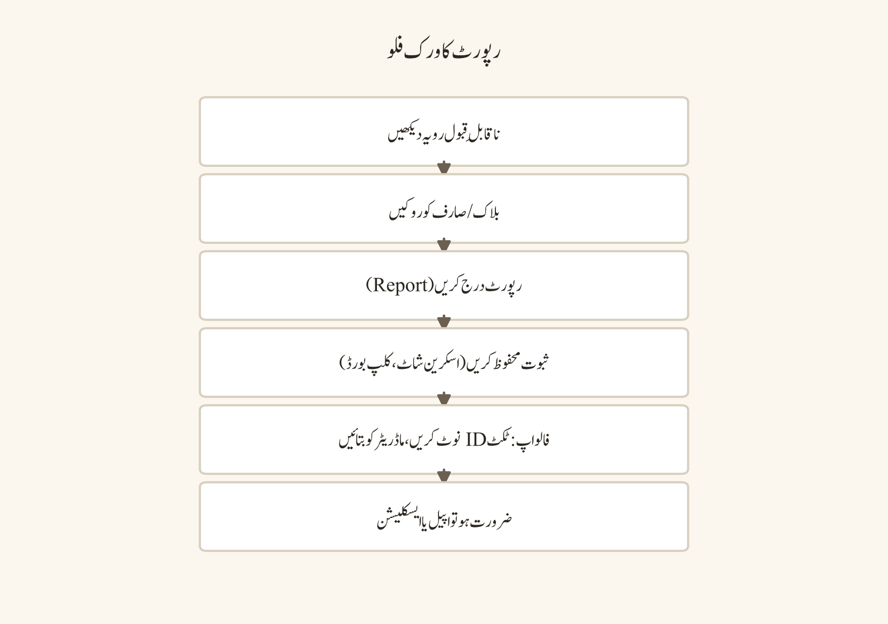
پیشگی ضروریات
ایکٹو اکاؤنٹ، پیغام/صارف/سرور کا سیاق اور متعلقہ سیفٹی راستہ چاہیے۔ رپورٹ کے آپشنز پیغام کی قسم، کلائنٹ، خطے اور پالیسی کے مطابق دستیاب ہو سکتے ہیں۔ فوری خطرے، قابلِ اعتماد دھمکی، استحصال یا خودکو نقصان پہنچانے کے اشارے میں ڈسکارڈ رپورٹ کے ساتھ مقامی ایمرجنسی/مناسب اتھارٹی اور قابلِ اعتماد بالغ/ادارے کا راستہ بھی ضروری ہو سکتا ہے۔
ڈیسک ٹاپ، ویب اور موبائل کے فرق
ڈیسک ٹاپ اور ویب پر پیغام کا کانٹیکسٹ مینو، پروفائل مینو اور رپورٹ فارم میں سیاق منتخب کرنے کے آپشنز تفصیل کے ساتھ مل سکتے ہیں۔ رائٹ کلک، ہوور اور کی بورڈ نیویگیشن ثبوت کے جائزے کو آسان بناتے ہیں۔ ویب پر URL، ٹائم اسٹیمپ اور براؤزر سیشن کو احتیاط سے سنبھالیں۔
موبائل پر پیغام کو لانگ پریس یا پروفائل/کارڈ مینو سے بلاک/رپورٹ کے عمل دستیاب ہو سکتے ہیں۔ چھوٹی اسکرین پر غلط پیغام منتخب کرنے کا خطرہ ہوتا ہے؛ رپورٹ سے پہلے منتخب کردہ مواد اور وجہ دوبارہ چیک کریں۔ موبائل اسکرین شاٹ میں نوٹیفکیشنز، بیٹری، کانٹیکٹس یا بیک گراؤنڈ کا ذاتی ڈیٹا آ سکتا ہے۔
نمبر وار UI ورک فلو
- فوری سیفٹی کا جائزہ لیں: گفتگو چھوڑیں، کال منقطع کریں، ڈیوائس محفوظ کریں اور خطرے کی صورت میں قابلِ اعتماد شخص/ماڈریٹر سے رابطہ کریں۔
- پیغام کے کانٹیکسٹ مینو یا صارف پروفائل سے
Blockآپشن تلاش کریں اور تصدیق پڑھیں۔ بلاک کی بالکل کیا حد موجودہ کلائنٹ/پالیسی کے مطابق تصدیق کریں۔ - خلاف ورزی کی رپورٹ کے لیے پیغام/صارف/سرور پر
Reportمنتخب کریں؛ متعلقہ پیغام اور سیاق شامل کریں۔ - رپورٹ کی وجہ/کیٹگری میں سب سے درست آپشن چنیں اور آپشنل وضاحت کو حقیقت پسندانہ، مختصر اور غیر ہتک آمیز رکھیں۔
- اسکرین شاٹ، پیغام لنک، ٹائم اسٹیمپ/ٹائم زون، سرور/چینل/صارف کی شناخت اور واقعات کی ترتیب کو کم سے کم ضروری طریقے سے محفوظ کریں۔
- ثبوت کو اینکرپٹڈ/نجی لوکیشن میں رکھیں؛ پبلک سرور، گروپ چیٹ یا سوشل میڈیا پر شیئر نہ کریں۔
- سرور ماڈریٹر/ایڈمن کو سرکاری نجی چینل یا قابلِ اعتماد راستے سے مطلع کریں؛ عوامی پائل آن یا انتقامی ٹیگنگ سے بچیں۔
- رپورٹ جمع کروانے کے بعد دستیاب تصدیق/حوالہ نوٹ کریں۔ ہر رپورٹ کا فوری نتیجہ یا عوامی اپڈیٹ ملنا یقینی نہیں ہوتا۔
- فالو اپ میں اپنی پرائیویسی سیٹنگز، فرینڈ ریکیسٹس، DM کنٹرولز اور ڈیوائس سیکیورٹی کا جائزہ لیں۔
- فوری خطرے، بلیک میلنگ، استحصال، قابلِ اعتماد تشدد یا خودکو نقصان پہنچانے کے خطرے میں مقامی ایمرجنسی سروسز/مناسب اتھارٹی اور قابلِ اعتماد بالغ/ادارے کا راستہ استعمال کریں۔
مثالیں
- بار بار ناپسندیدہ DM: صارف واضح حد مقرر کرتا ہے، پیغامات محفوظ رکھتا ہے، بلاک/رپورٹ کرتا ہے اور ماڈریٹر کو سرکاری چینل میں مطلع کرتا ہے۔
- Scam پیغام: صارف لنک کلک نہیں کرتا، پیغام/رپورٹ کا سیاق منتخب کرتا ہے اور سرور ممبران کو عمومی تنبیہ دیتا ہے بغیر متاثرہ شخص کی ذاتی تفصیلات ظاہر کیے۔
- ہراسانی کی مہم: صارف پبلک جوابات میں بحث نہیں کرتا؛ ثبوت کی ترتیب، شامل چینلز اور ماڈریٹر کا رابطہ محفوظ رکھتا ہے۔
- جھوٹے الزام کی تشویش: صارف جذباتی جواب کے بجائے ٹائم اسٹیمپس اور اصل پیغامات اکٹھا کر کے محترمانہ اپیل کرتا ہے۔
عام غلطیاں
- بلاک کو رپورٹ کا متبادل سمجھنا یا رپورٹ کو بلاک کا متبادل سمجھنا۔
- ثبوت کو ایڈٹ، کراپ یا سیاق سے نکال کر گمراہ کن بنانا۔
- اصل نقصان دہ مواد کو پبلک سرور میں دوبارہ پوسٹ کرنا۔
- نابالغوں کا فحش یا استحصالی مواد کو ڈاؤن لوڈ، فارورڈ یا بحث کرنا۔
- ہر اختلاف کو رپورٹ کرنا اور جھوٹی رپورٹ کے سسٹم کا ناجائز استعمال کرنا۔
- رپورٹ کا نتیجہ نہ ملنے پر ہراسانی یا انتقام لینا۔
- اسکرین شاٹ میں اپنا پاس ورڈ، نوٹیفکیشنز، فون نمبر یا دوسروں کی نجی تفصیلات ظاہر کرنا۔
- فوری خطرے میں صرف ڈسکارڈ رپورٹ کا انتظار کرنا اور مقامی ایمرجنسی راستہ نظر انداز کرنا۔
سیفٹی اور پرائیویسی نوٹس
ثبوت کو "جتنا زیادہ اتنے بہتر" سمجھ کر غیر ضروری ذاتی ڈیٹا اکٹھا نہ کریں۔ صرف وہ مواد، شناخت کنندگان اور ٹائم اسٹیمپس رکھیں جو سیفٹی، رپورٹ یا اپیل کے لیے ضروری ہیں۔ ثبوت کی اسٹوریج کو اینکرپٹڈ/پاس ورڈ سے محفوظ بنائیں اور رسائی محدود رکھیں۔ کسی متاثرہ شخص یا نابالغ کی شناخت کو ان کی رضامندی اور قابلِ اطلاق قانون/پالیسی کے بغیر شیئر نہ کریں۔ بلاک/رپورٹ کے بعد بھی حملہ آور کسی دوسرے اکاؤنٹ سے رابطہ کر سکتا ہے؛ پرائیویسی کنٹرولز اور قابلِ اعتماد سپورٹ پلان ایکٹو رکھیں۔
پریکٹس ٹاسک
ایک فرضی ہراسانی/scam صورتِ حال کے لیے ثبوت کی چیک لسٹ بنائیں: کیا محفوظ کرنا ہے، کیا کراپ/ریڈیکٹ کرنا ہے، کہاں اسٹور کرنا ہے، کس کو رسائی ہوگی، رپورٹ کی کیٹگری کیا ہوگی اور فالو اپ کا راستہ کیا ہوگا۔ اِس ٹاسک میں حقیقی متاثرہ شخص کا ڈیٹا استعمال نہ کریں۔
چیپٹر چیک لسٹ
- ☐ بلاک، رپورٹ اور ثبوت محفوظ کرنے کے کرداروں میں فرق کیا۔
- ☐ پیغام/صارف/سرور رپورٹ کا ورک فلو دیکھا۔
- ☐ کم سے کم، حقیقت پسندانہ اور محفوظ ثبوت کے اصول سیکھے۔
- ☐ عوامی دوبارہ شیئرنگ اور انتقام سے بچنے کا پلان لکھا۔
- ☐ ماڈریٹر، قابلِ اعتماد بالغ اور ایمرجنسی فالو اپ راستے نوٹ کیے۔
- ☐ رپورٹ کی تصدیق/نتیجے کی حدود سمجھ آئے۔
ہراسانی، ہیٹ، جنسی سیفٹی اور خودکو نقصان پہنچانے کے اشارے
مقصد
اِس چیپٹر کا مقصد سنگین آن لائن نقصانات کو پہچاننا، انہیں بڑھانا اور زندہ بچ جانے والوں/ کمزور ممبران کو محفوظ طریقے سے سپورٹ دینا ہے۔ ہراسانی بار بار یا ٹارگٹڈ رویہ ہو سکتی ہے۔ ہیٹ رویہ افراد/گروپوں کو شناخت کی بنیاد پر ٹارگٹ کر سکتا ہے۔ جنسی سیفٹی میں دباؤ، استحصال، ناپسندیدہ جنسی مواد اور نابالغوں کا فحش مواد شامل ہو سکتا ہے۔ خودکو نقصان پہنچانے کے اشاروں میں براہ راست دھمکی، الوداع کی زبان، پلان، ذرائع یا شدت سے پریشانی کی علامات ہو سکتی ہیں۔
آپ سے توقع نہیں کہ آپ کاؤنسلر، پولیس افسر یا تفتیش کار بنیں۔ آپ کا کردار سیفٹی کو ترجیح دینا، تعامل کو کم کرنا، ثبوت کو کم سے کم رکھنا، سرکاری رپورٹ/ماڈریٹر راستہ استعمال کرنا اور فوری خطرے میں قابلِ قابلیت/مقامی مدد کو شامل کرنا ہے۔
پیشگی ضروریات
بنیادی بلاک/رپورٹ ورک فلو، قابلِ اعتماد ماڈریٹر/استاد/سرپرست کا رابطہ اور ایمرجنسی راستہ چاہیے۔ حساس مواد کو دیکھنے/محفوظ کرنے/شیئر کرنے سے پہلے عمر، قانون، پالیسی اور ذاتی صحت کا خیال رکھنا ضروری ہے۔ نابالغوں کے فحش مواد کو ڈاؤن لوڈ، فارورڈ یا دوبارہ پیدا نہ کریں؛ مناسب رپورٹنگ راستہ استعمال کریں۔
ڈیسک ٹاپ، ویب اور موبائل کے فرق
ڈیسک ٹاپ/ویب پر پیغام ہسٹری، کانٹیکسٹ مینو، رپورٹ کیٹگری اور ثبوت کے لنکس کو مستقل طریقے سے جائزہ لیا جا سکتا ہے۔ وائس/لائیو ویڈیو میں نقصان دہ مواد عارضی ہو سکتا ہے؛ ممکن ہو تو صرف کم سے کم حقیقت پسندانہ نوٹس، ٹائم اسٹیمپ اور قابلِ اعتماد گواہ/ماڈریٹر راستہ استعمال کریں، پالیسی/رضامندی کے بغیر ریکارڈنگ نہ بنائیں۔
موبائل پر بلاک/رپورٹ کویک ایکشنز دستیاب ہو سکتی ہیں، لیکن جذباتی مواد کو چھوٹی اسکرین پر بار بار دیکھنا پریشانی بڑھا سکتا ہے۔ ڈیوائس سے مواد ہائیڈ/کلوز کرنا، قابلِ اعتماد شخص کو شامل کرنا اور اسکرین نوٹیفکیشنز کا تحفظ فراہم کرنا اہم ہے۔
نمبر وار UI ورک فلو
- ہراسانی، ہیٹ، جنسی استحصال یا خودکو نقصان پہنچانے کے اشارے پر پہلے اپنی سیفٹی اور فوری خطرے کا جائزہ لیں۔
- بڑھتی ہوئی گفتگو میں جواب، بحث یا عوامی پائل آن نہ کریں؛ تعامل روکیں یا چھوڑیں۔
- متعلقہ پیغام/سیاق کو کم سے کم ضروری طریقے سے محفوظ کریں؛ نقصان دہ میڈیا کو ڈاؤن لوڈ/فارورڈ نہ کریں۔
BlockاورReportآپشنز استعمال کریں؛ درست کیٹگری اور حقیقت پسند سیاق منتخب کریں۔- سرور ماڈریٹر، استاد، سرپرست، ادارے کے سیفٹی رابطے یا قابلِ اعتماد بالغ کو سرکاری/نجی راستے سے مطلع کریں۔
- ہیٹ یا ٹارگٹڈ زیادتی میں متاثرہ شخص کو عوامی طور پر ظاہر نہ کریں؛ سپورٹ کو رضامندی پر مبنی اور وقار برقرار رکھیں۔
- جنسی استحصال یا نابالغ سے متعلق مواد میں مواد کو شیئر/بحث/ڈاؤن لوڈ نہ کریں؛ پلیٹ فارم رپورٹ اور مناسب اتھارٹی/قابلِ اعتماد بالغ کا راستہ اختیار کریں۔
- خودکو نقصان پہنچانے کے اشارے پر سپورٹیو، غیر فیصلہ کن مختصر جواب دیں، شخص کو تنہا بحث یا جرم کے احساس میں نہ الجھائیں، اور فوری خطرے میں مقامی ایمرجنسی مدد/پلیٹ فارم رپورٹ استعمال کریں۔
- اپنی پرائیویسی، DM، فرینڈ ریکیسٹ اور نوٹیفکیشن سیٹنگز کا جائزہ لیں تاکہ آئندہ رابطہ محدود ہو۔
- فالو اپ میں رپورٹ/حوالہ، ماڈریٹر ایکشن اور متاثرہ شخص کی رضامندی/آرام کا احترام کرتے ہوئے محفوظ نوٹس اپڈیٹ کریں۔
مثالیں
- ٹارگٹڈ ہراسانی: ممبر بار بار توہین اور ٹیگ کرتا ہے؛ متاثرہ شخص تعامل نہیں کرتا، ثبوت کی ترتیب محفوظ رکھتا ہے، بلاک/رپورٹ اور ماڈریٹر راستہ استعمال کرتا ہے۔
- ہیٹ سپیچ: صارف کس نفرت انگیز نعرے کو کوش/ری پوسٹ کر کے نہیں بڑھاتا؛ متعلقہ پیغام رپورٹ کرتا ہے اور متاثرہ ممبران کی شناخت عوامی نوٹ میں ظاہر نہیں کرتا۔
- جنسی دباؤ: وصول کنندہ واضح حد مقرر کرتا ہے، گفتگو چھوڑتا ہے، کم سے کم ثبوت رکھتا ہے اور قابلِ اعتماد سیفٹی اتھارٹی کو مطلع کرتا ہے۔
- خودکو نقصان پہنچانے کا اشارہ: دوست "I am going to hurt myself tonight" لکھتا ہے؛ جواب دینے والا سپورٹیو زبان استعمال کرتا ہے، مقامی ایمرجنسی/قابلِ اعتماد بالغ کا راستہ چالو کرتا ہے اور ڈسکارڈ رپورٹ کرتا ہے۔
عام غلطیاں
- ہراسانی کو "صرف ٹرولنگ" سمجھ کر تعامل یا انتقام لینا۔
- ہیٹ مواد کو بے نقاب کرنے کے نام پر ری پوسٹ/کوش کرنا۔
- نابالغ سے متعلق فحش مواد کو ثبوت کے نام پر ڈاؤن لوڈ یا فارورڈ کرنا۔
- خودکو نقصان پہنچانے کی دھمکی کو بحث، مشورے کے تھریڈ یا رازداری کے وعدے میں تبدیل کرنا۔
- متاثرہ شخص سے بار بار تفصیلات پوچھ کر انہیں دوبارہ صدمے میں ڈالنا۔
- پبلک سرور میں ملزم اور متاثرہ دونوں کی ذاتی معلومات شائع کرنا۔
- ماڈریٹر ایکشن کو حتمی قانونی/طبی نتیجہ سمجھنا۔
- اپنی ذہنی صحت کو نظر انداز کر کے نقصان دہ مواد بار بار دیکھنا۔
سیفٹی اور پرائیویسی نوٹس
سنگین نقصان میں پلیٹ فارم رپورٹ ضروری تو ہو سکتی ہے لیکن کافی نہیں ہوتی۔ قابلِ اعتماد فوری خطرے، استحصال، اسٹاکنگ، بلیک میلنگ یا خودکو نقصان پہنچانے کے خطرے میں مقامی ایمرجنسی سروسز، قابلِ اعتماد بالغ، ادارے کے سیفٹ گارڈنگ لیڈ یا مناسب اتھارٹی کو شامل کریں۔ نابالغوں کی سیفٹی اور پرائیویسی کو سب سے زیادہ ترجیح دیں۔ زندہ بچ جانے والوں پر زور نہ ڈالیں کہ وہ عوامی بیان دیں، ملزم سے براہ راست بات کریں یا ثبوت شیئر کریں۔ سپورٹیو جواب میں ان کا اختیار، رضامندی اور رازداری کی حدیں واضح رکھیں۔
پریکٹس ٹاسک
چار صورتوں — ہراسانی، ہیٹ، جنسی سیفٹی، خودکو نقصان پہنچانے کا اشارہ — کے لیے ایک ری اسپانس کارڈ بنائیں: کیا نہیں کرنا، فوری سیفٹی ایکشن، کم سے کم ثبوت، رپورٹ کا راستہ، قابلِ اعتماد رابطہ اور فالو اپ۔ کارڈ کو اپنے نجی نوٹس میں رکھیں اور حقیقی کیس میں پرسکون حوالے کے طور پر استعمال کریں۔
چیپٹر چیک لسٹ
- ☐ ہراسانی، ہیٹ، جنسی سیفٹی اور خودکو نقصان پہنچانے کے اشارے پہچانے۔
- ☐ تعامل نہ کرنا، بلاک/رپورٹ، کم سے کم محفوظ کرنا کا ورک فلو یاد ہے۔
- ☐ نابالغ سے متعلق فحش مواد کو ڈاؤن لوڈ/فارورڈ نہ کرنے کا فیصلہ کیا۔
- ☐ سپورٹیو اور غیر فیصلہ کن خودکو نقصان پہنچانے کے جواب کے اصول سیکھے۔
- ☐ مقامی ایمرجنسی/قابلِ اعتماد بالغ/ادارے کے راستے نوٹ کیے۔
- ☐ متاثرہ شخص کی پرائیویسی اور ذاتی صحت کی حدیں لکھیں۔
نابالغ، فیملی سینٹر اور بالغوں کی ذمہ داری
مقصد
اِس چیپٹر کا مقصد عمر کے مطابق ڈسکارڈ کا استعمال، Family Center جیسے سرپرستی کے آلے اور بالغوں کی ذمہ داریوں کو قدقدرندانہ طریقے سے سمجھنا ہے۔ عمر اور دہداری کے مطابق پیرنٹل ٹولز، پرائیویسی سیٹنگز، پابندیاں اور اکاؤنٹ فیچرز دستیاب یا محدود ہو سکتے ہیں۔ Family Center کی دستیابی، اہلیت، سیٹ اپ اور دکھائی دینے والی معلومات موجودہ ڈسکارڈ پالیسی اور خطے پر منحصر ہیں؛ اِس چیپٹر میں کوئی عالم گارنٹی نہیں دی جاتی۔
بالغوں کو نابالغوں کے ساتھ مواصلات میں اضافی حدود، شفافیت، رضامندی، مناسب چینلز اور اداراتی سیفٹ گارڈنگ پالیسی پر عمل کرنا چاہیے۔ نابالغ کو صرف "چھوٹا صارف" نہ سمجھیں؛ ان کی پرائیویسی، اختیار، سیفٹی اور قابلِ اعتماد سرپرست/استاد کا نیٹ ورک اہم ہے۔
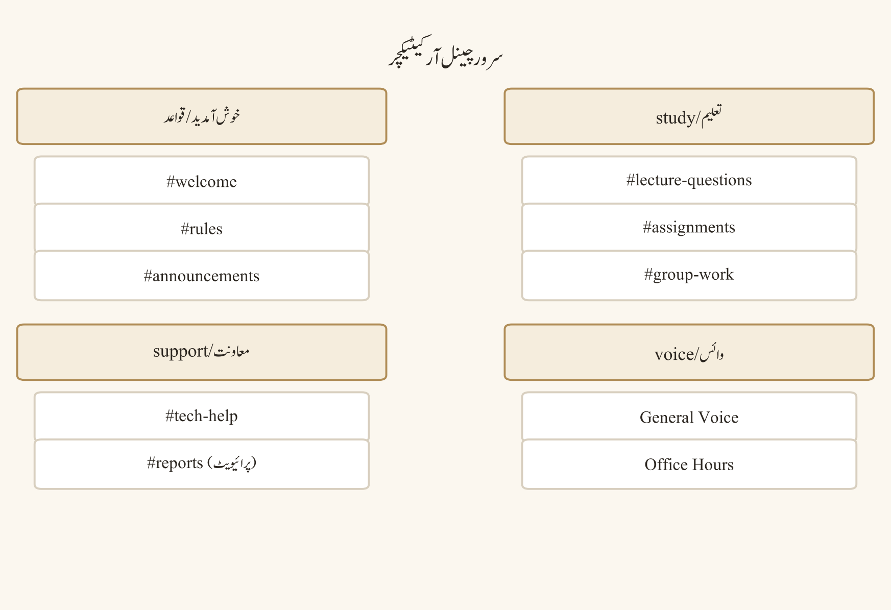
پیشگی ضروریات
درست عمر/تاریخِ پیدائش، قابلِ اطلاق دہداری، سرپرست/استاد کی پالیسی اور موجودہ سرکاری Family Center/پیرنٹل ٹول کی معلومات چاہیے۔ بالغ شرکاء کو سرور رول، پیشہ ورانہ تعلق اور ادارے کا ضابطہ اخلاق واضح ہونا چاہیے۔ کسی بھی عمری پابندی یا سرپرستی کنٹرول کو بائی پاس کرنے کی کوشش نہ کریں۔
ڈیسک ٹاپ، ویب اور موبائل کے فرق
ڈیسک ٹاپ/ویب پر اکاؤنٹ پرائیویسی، سیفٹی اور سرپرستی سے متعلق سیٹنگز کا تفصیلی جائزہ لیا جا سکتا ہے۔ موبائل پر سرپرست/ٹین سیٹ اپ، نوٹیفکیشنز اور کویک سیفٹی ایکشنز پلیٹ فارم/ورژن کے مطابق مختلف ہو سکتے ہیں۔ Family Center یا اسی جیسے فیچر کا سیٹ اپ، دعوت، قبولیت اور دکھائی دینے والا ڈیٹا موجودہ کلائنٹ اور اہلیت پر منحصر ہے؛ عیٰی اقدامات سرکاری اِن پروڈکٹ رہنمائی سے تصدیق کریں۔
نمبر وار UI ورک فلو
- اکاؤنٹ کی درست عمر اور قابلِ اطلاق دہداری کی تصدیق کریں؛ عمر سے متعلق پابندیوں کو بائی پاس نہ کریں۔
- سرکاری ڈسکارڈ سیٹنگز/مدد میں Family Center یا سرپرستی/پیرنٹل ٹولز کی موجودہ دستیابی چیک کریں۔
- اگر فیچر دستیاب اور اہل ہو تو سرپرست/ٹین سیٹ اپ کی ہدایات دونوں فریقوں کی رضامندی اور سمجھ بوجھ کے ساتھ فالو کریں۔
- سرپرستی کے آلے سے کیا دکھائی دیتا ہے اور کیا نہیں، اسے موجودہ سرکاری وضاحت کے مطابق سمجھیں؛ ہر پیغام/مواد کی نگرانی کا مفروضہ نہ قائم کریں۔
- نابالغ کے لیے DM، فرینڈ ریکیسٹس، سرور ڈسکوری، پروفائل کی نظر آوری اور کنیکٹڈ اکاؤنٹس کی پرائیویسی بیس لائن مقرر کریں۔
- بالغ شرکاء ایک طرفہ نجی تعامل کی ضرورت پر سوال اٹھائیں؛ پبلک، مانیٹرڈ یا ادارے کی منظور شدہ چینل کو ترجیح دیں۔
- کسی نابالغ کے ساتھ وائس/ویڈیو، فائل شیئرنگ، ریکارڈنگ یا ذاتی معلومات کے تبادلے سے پہلے سرپرست/ادارے کی پالیسی اور رضامندی چیک کریں۔
- گرومنگ، رازداری، ہیرا پھیری، عمر کا دھوکہ، جنسی مواد یا غیر محفوظ ملاقات کی درخواست کو قابلِ اعتماد سرپرست/استاد/سیفٹی اتھارٹی اور پلیٹ فارم رپورٹ راستے سے ایسکلیٹ کریں۔
- بالغ اپنی شناخت، رول اور مقصد واضح رکھے؛ ماڈریٹر/استاد کی نقاب سازی یا غیر سرکاری نجی اتھارٹی کا دعویٰ نہ کرے۔
- وقتاً فوقتاً سیٹنگز، کانٹیکٹس، سرور ممبرشپ اور مواصلات کی حدود کا مشترکہ جائزہ لیں۔
مثالیں
- اسکول پڑھائی کا سرور: استاد پبلک کلاس چینل میں اعلانات کرتا ہے؛ نجی تعلیمی سپورٹ صرف منظور شدہ شیڈول اور مانیٹرڈ راستے پر ہوتی ہے۔
- ٹین گیمر: سرپرستی کا آلہ دستیاب ہونے پر سیٹ اپ کا جائزہ لیتا ہے، لیکن صرف آلے پر انحصار کیے بغیر پرائیویسی سیٹنگز اور قابلِ اعتماد رپورٹنگ راستہ استعمال کرتا ہے۔
- بالغ رضاکار: نابالغ سے ذاتی فون نمبر مانگنے کے بجائے سرکاری سرور چینل اور سرپرست کی منظور شدہ کانٹیکٹ پالیسی پر عمل کرتا ہے۔
- عمر میں ابہام: بالغ نجی گفتگو جاری نہیں رکھتا؛ پبلک/ماڈریٹڈ راستہ یا قابلِ اعتماد نگران سے وضاحت لیتا ہے۔
عام غلطیاں
- عمری تصدیق کو غلط تاریخِ پیدائش یا تھرڈ پارٹی بائی پاس سے کرنا۔
- Family Center کو مکمل پیغام نگرانی یا ضمانت یافتہ تحفظ سمجھنا۔
- بالغ–نابالغ ایک طرفہ DM کو معمول کی دوستی کا حصہ سمجھ کر حدود نظر انداز کرنا۔
- نابالغ کی عمر، اسکول، مقام یا خاندانی تفصیلات پبلک پروفائل/وائس میں ظاہر کرنا۔
- سرپرست/استاد کے رول کی نقاب سازی یا غیر سرکاری نجی اتھارٹی کا دعویٰ کرنا۔
- نابالغ کی شکایت کو "ڈرامہ" سمجھ کر نظر انداز کرنا۔
- ریکارڈنگ، اسکرین شیئر یا فائل ٹرانسفر کو رضامندی/پالیسی کے بغیر کرنا۔
- گرومنگ کی علامات کو نجی راز رکھنے کی درخواست قبول کرنا۔
سیفٹی اور پرائیویسی نوٹس
بالغوں کو نابالغوں کے ساتھ ہر تعامل میں شفافیت، ضرورت، متناسبات اور جوابدہی لاگو کرنی چاہیے۔ کسی نابالغ کو رازدار گفتگو، تحفہ، خاص رول یا جذباتی انحصار میں شامل نہ کریں۔ سرپرستی کے آلے کی حدود واضح رکھیں اور براہ راست مواصلات، تعلیم اور قابلِ اعتماد رپورٹنگ راستوں کی جگہ نہ لیں۔ جنسی مواد، استحصال، دھمکیوں یا گرومنگ کی تشویشات میں مواد کو ڈاؤن لوڈ/فارورڈ نہ کریں؛ مناسب اتھارٹی اور پلیٹ فارم رپورٹنگ استعمال کریں۔
پریکٹس ٹاسک
اگر آپ بالغ ہیں تو نابالغوں پر مشتمل سرور کے لیے تعامل کی پالیسی کا مسودہ تیار کریں: اجازت دہندہ چینلز، ایک طرفہ حالات، سرپرست/ادارے کا رابطہ، ریکارڈنگ/فائل رولز اور ایسکلیشن راستہ۔ اگر آپ نابالغ ہیں تو اپنے قابلِ اعتماد بالغ کے ساتھ پرائیویسی بیس لائن اور غیر محفوظ درخواست کا جواب پلان جائزہ لیں۔
چیپٹر چیک لسٹ
- ☐ عمر، دہداری اور Family Center کی دستیابی کی وضاحتیں سمجھ آئے۔
- ☐ سرپرستی کے آلے کو مکمل نگرانی کی گارنٹی نہ سمجھنے کا فیصلہ کیا۔
- ☐ بالغ–نابالغ پبلک/مانیٹرڈ چینل کی حدیں لکھیں۔
- ☐ نابالغوں کی پرائیویسی، رضامندی اور سیفٹ گارڈنگ کے اصولوں کا جائزہ لیا۔
- ☐ گرومنگ/جنسی/استحصال ایسکلیشن راستہ نوٹ کیا۔
- ☐ عمر بائی پاس اور نقاب سازی سے بچنے کا پلان لکھا۔
کاپی رائٹ، ریکارڈنگ، رضامندی اور پرائیویسی آداب
مقصد
اِس چیپٹر کا مقصد مواد شیئر کرتے وقت ملکیت، لائسنس، اجازت، سامعین اور ریکارڈنگ کی اخلاقیات کو سمجھنا ہے۔ ڈسکارڈ میں کسی چیز کو دیکھنا، ڈاؤن لوڈ کرنا یا فارورڈ کرنا خود بخود اسے استعمال کرنے کا قانونی/اخلاقی حق نہیں دیتا۔ متن، تصویر، میوزک، ویڈیو، لیکچر نوٹس، کوڈ، اسکرین شاٹس، وائس کلپس اور اسکرین ریکارڈنگز الگ الگ کاپی رائٹ، کنٹریکٹ، اداراتی پالیسی اور پرائیویسی کے مسائل پیدا کر سکتی ہیں۔
ریکارڈنگ اور ٹرانسکرپشن خاص طور پر حساس ہیں کیونکہ یہ لائیو گفتگو کو مستقل، تلاش کے قابل اور شیئر کے قابل بنا دیتی ہیں۔ بنیادی موقف قدقدرندانہ رکھیں: واضح مقصد، قابلِ اطلاق پالیسی، باخبر رضامندی اور محفوظ اسٹوریج کے بغیر ریکارڈ نہ کریں۔
پیشگی ضروریات
مواد کا مصدر، مطلوبہ سامعین، چینل رولز، قابلِ اطلاق کاپی رائٹ/لائسنس، شرکاء کی رضامندی اور اسٹوریج پلان چاہیے۔ اسکرین شیئر یا ریکارڈنگ کے لیے ڈیوائس پرمیشنز اور OS/براؤزر کنٹرولز کو سمجھنا ضروری ہے۔ اسکول/دفتر/کمیونٹی سرور کی پالیسی مقامی قانون یا کنٹریکٹ سے اضافی پابندیاں لگا سکتی ہے۔
ڈیسک ٹاپ، ویب اور موبائل کے فرق
ڈیسک ٹاپ ایپ میں فائل اپ لوڈ، ڈریگ اینڈ ڈراپ، اسکرین شیئر، وائس/ویڈیو اور بیرونی ریکارڈنگ ٹولز کا امتزاج عام ہے۔ ڈیسک ٹاپ پر بیک گراؤنڈ ونڈوز، نوٹیفکیشنز، فائل نام اور مائیکروفون/کیمرہ سلیکشن پرائیویسی لیک کر سکتے ہیں۔
ویب پر براؤزر فائل پکر، کیمرہ/مائیکروفون/اسکرین پرمیشنز، ایکسٹینشنز اور ڈاؤن لوڈ رویے کی تصدیق کرنی پڑتی ہے۔ موبائل پر کیمرا رول، تصاویر، کانٹیکٹس، لوکیشن میٹا ڈیٹا، نوٹیفکیشنز اور ایپ پرمیشنز اضافی پرائیویسی کی تہیں ہیں۔ پلیٹ فارم کے بلٹ اِن کنٹرولز اور بیرونی ریکارڈر الگ الگ ٹولز ہیں؛ ڈسکارڈ میں فیچر کا ہونا رضامندی کا ثبوت نہیں۔
نمبر وار UI ورک فلو
- شیئر کرنے سے پہلے مواد کے مصدر اور ملکیت کی شناخت کریں: آپ کا اصل، پبلک ڈومین/اوپن لائسنس، اجازت یافتہ، کاپی رائٹ شدہ یا نامعلوم۔
- لائسنس/اجازت کی شرائط چیک کریں: تجارتی استعمال، تبدیلی، منسوب، دوبارہ تقسیم اور ختم ہونے کی مدت۔
- سرور رولز، کلاس/دفتر کی پالیسی اور چینل کے سامعین کو مواد کے لیے مناسب چیک کریں۔
- شرکاء یا تخلیق کاروں سے ضروری رضامندی لیں؛ رضامندی کو مخصوص مقصد، سامعین، مدت اور اسٹوریج کے ساتھ واضح کریں۔
- مصدر کا کریڈٹ اور منسوبی مواد کے ساتھ یا چینل پالیسی کے مطابق شامل کریں؛ کریڈٹ دینا ہمیشہ اجازت کا متبادل نہیں۔
- فائل اپ لوڈ سے پہلے فائل نییم، میٹا ڈیٹا، hidden comments، لوکیشن ڈیٹا اور شامل ذاتی معلومات کا جائزہ لیں/ریڈیکٹ کریں۔
- اسکرین شیئر سے پہلے غیر ضروری ٹیبز، نوٹیفکیشنز، کانٹیکٹس، پاس ورڈز، فائلیں اور بیک گراؤنڈ تفصیلات کلوز/بلر کریں۔
- ریکارڈنگ/ٹرانسکرپشن شروع کرنے سے پہلے مقصد، پالیسی، رضامندی، شرکاء، رینشن اور رسائی کی فہرست دستاویز کریں۔
- شیئر کردہ مواد کو صرف مطلوبہ چینل/رول تک محدود کریں؛ پبلک لنک، فارورڈ اور ڈاؤن لوڈ پرمیشنز کو ضرورت کے مطابق سیٹ کریں۔
- مواد کے پرانا، حساس یا رضامندی واپس لے لی جانے کی صورت میں محفوظ ڈیلیشن/آرکائیو ورک فلو فالو کریں اور متعلقہ شرکاء کو اپڈیٹ کریں۔
مثالیں
- لیکچر نوٹس: طالب علم اپنے اصل نوٹس شیئر کرتا ہے، لیکن انسٹرکٹر سلیڈز کو لائسنس/اجازت اور کلاس پالیسی چیک کر کے اپ لوڈ کرتا ہے۔
- وائس پڑھائی کا سیشن: گروپ ریکارڈنگ سے پہلے مقصد، رضامندی، اسٹوریج لوکیشن اور ڈیلیشن کی تاریخ طے کرتا ہے؛ غیر رضامند ممبر کو متبادل شرکت کا راستہ دیتا ہے۔
- پروجیکٹ اسکرین شاٹ: ڈویلپر پاس ورڈ، API کلید، صارف ڈیٹا اور فائل پاتھ کراپ/ریڈیکٹ کر کے اسکرین شاٹ شیئر کرتا ہے۔
- میوزک/ویڈیو کلپ: صارف اپنی ذاتی سماعت کو پبلک سرور میں اپ لوڈ نہیں کرتا؛ اجازت شدہ لنک یا لائسنس یافتہ مصدر استعمال کرتا ہے۔
عام غلطیاں
- "انٹرنیٹ پر دستیاب ہے" کو فری ٹو یوز سمجھنا۔
- کریڈٹ دے کر کاپی رائٹ اجازت کی ضرورت ختم سمجھنا۔
- لیکچر، فلم، میوزک، کتاب کا سکین یا پید شدہ وسائل کو پبلک چینل میں اپ لوڈ کرنا۔
- ریکارڈنگ کو صرف ذاتی استعمال کہہ کر رضامندی/پالیسی نظر انداز کرنا۔
- اسکرین شیئر پر نوٹیفکیشنز، ٹیبز، پاس ورڈز یا نجی فائلیں ظاہر کرنا۔
- تصویر/ویڈیو میٹا ڈیٹا اور hidden document comments کو ریڈیکٹ نہ کرنا۔
- رضامندی کو مبہم یا دباؤ والے انداز میں لینا؛ "ٹھیک ہے" کو مستقل لامحدود اجازت سمجھنا۔
- مواد ڈیلیٹ کرنے کے بعد کاپیز، فارورڈز اور بیک اپس کو نظر انداز کرنا۔
سیفٹی اور پرائیویسی نوٹس
ذاتی ڈیٹا، نابالغوں کی تصاویر/آواز، طبی/مالی معلومات، شناختی دستاویزات اور نجی گفتگو کو مواد شیئرنگ کے ٹاسک میں شامل نہ کریں۔ رضامندی کو جب بھی قابلِ اطلاق پالیسی/قانون اجازت دے تو واپس لی جا سکنے والا عمل سمجھیں۔ ریکارڈنگز اور ٹرانسکرپٹس کو اینکرپٹڈ/محدود رسائی والی اسٹوریج میں رکھیں اور صرف بیان کردہ مقصد کے لیے استعمال کریں۔ کسی نقصان دہ یا غیر قانونی مواد کو ثبوت کے نام پر دوبارہ پیدا نہ کریں؛ سرکاری رپورٹنگ راستہ چنیں۔
پریکٹس ٹاسک
ایک شیئر پلان بنائیں: مواد کی قسم، مصدر/لائسنس، سامعین، ضروری رضامندی، ریڈیکشن کے اقدامات، چینل، رینشن پیرڈ اور ڈیلیشن کا ذمہ دار۔ پھر اپنے ڈیوائس پر ایک ڈمی اسکرین شاٹ/فائل کو میٹا ڈیٹا اور بیک گراؤنڈ پرائیویسی کے لیے جائزہ لیں؛ حقیقی حساس فائل اپ لوڈ نہ کریں۔
چیپٹر چیک لسٹ
- ☐ ملکیت، لائسنس اور اجازت کا فرق سمجھ آ گیا۔
- ☐ سامعین اور چینل کی مناسبیت چیک کرنا سیکھا۔
- ☐ ریکارڈنگ/ٹرانسکرپشن رضامندی کا ورک فلو لکھا۔
- ☐ اسکرین شیئر، میٹا ڈیٹا اور فائل پرائیویسی رسکس کا جائزہ لیا۔
- ☐ منسوبی کو اجازت کا متبادل نہ سمجھنے کا فیصلہ کیا۔
- ☐ رینشن، ڈیلیشن اور رضامندی واپسی کا پلان بنایا۔
صحت مند آن لائن رویہ اور ڈیجیٹل بہبود
مقصد
اِس چیپٹر کا مقصد ڈسکارڈ کو پائیدار، محترمانہ اور ارادی طریقے سے استعمال کرنا ہے۔ نوٹیفکیشنز، وائس رومز، اسکرولنگ، تنازعات اور سماجی موازنہ صارف کی نیند، پڑھائی، تعلقات اور ذہنی بہبود کو متاثر کر سکتے ہیں۔ صحت مند استعمال کا مطلب پلیٹ فارم چھوڑ دینا نہیں ہے؛ بلکہ مقصد پر مبنی شرکت، واضح حدود، وقفے اور محترمانہ مواصلات ہیں۔
ڈیجیٹل بہبود انفرادی ہوتی ہے۔ کسی کے لیے روزانہ چیک اِن مفید ہے، کسی دوسرے کے لیے شیڈولڈ ونڈوز بہتر ہیں۔ اپنی ضروریات کی نگرانی کریں اور ایسی سیٹنگز/رویے منتخب کریں جو آپ کے اہداف اور صحت کی معاون ہوں۔
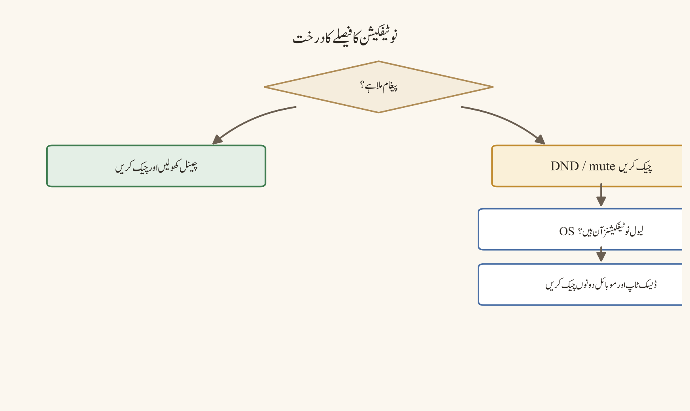
پیشگی ضروریات
اپنے ڈسکارڈ استعمال کا مقصد، وقت کی دستیابی، نوٹیفکیشن کی ترجیحات اور ذاتی حدود چاہیے۔ اسکول/دفتر کی پالیسیوں، خاندانی معاہدوں اور ذہنی صحت کی ضروریات کا احترام کریں۔ اگر ڈسکارڈ کا استعمال پریشانی، نیند کی کمی، مجبوریہ چیکنگ یا غیر محفوظ تعامل سے جڑا ہو تو قابلِ اعتماد شخص/پیشہ ورانہ سپورٹ پر غور کریں۔
ڈیسک ٹاپ، ویب اور موبائل کے فرق
ڈیسک ٹاپ/ویب پر کشادہ انٹرفیس، متعدد سرورز، وائس رومز اور ملٹی ٹاسکنگ لمبے سیشنز کی حوصلہ افزائی کر سکتے ہیں۔ براؤزر ٹیبز اور بیک گراؤنڈ آواز کا انتظام کرنا پڑتا ہے۔ موبائل پر مسلسل رسائی، پش نوٹیفکیشنز، لاک اسکرین الرٹس اور شارٹ فارم چیکنگ استعمال کو بڑھا سکتی ہے۔ موبائل Focus موڈز، ایپ لمٹس اور نوٹیفکیشن کنٹرولز ڈیسک ٹاپ کی دستی ضبط کا تکملہ ہو سکتے ہیں۔
نمبر وار UI ورک فلو
- اپنا بنیادی مقصد لکھیں: پڑھائی، پروجیکٹ، کمیونٹی، دوستی یا سپورٹ؛ بے مقصد اسکرولنگ کو ڈیفالٹ سیشن نہ بنائیں۔
- اپنا حقیقت پسندانہ روزانہ/ہفتہ وار ٹائم ونڈو طے کریں اور کیلنڈر یا ڈیوائس بہبود ٹول میں حد مقرر کریں۔
- چیپٹر 34 کی نوٹیفکیشن حکمت عملی لاگو کریں: اہم چینلز آن، کم قیمت الرٹس میوٹ، موبائل پریویو پرائیویسی کے مطابق۔
- پڑھائی/نیند/کام کے لیے
Do Not Disturbیا مساوی اسٹیٹس استعمال کریں؛ اسٹیٹس کو دوسروں کو کنٹرول کرنے کا آلہ نہ بنائیں۔ - وائس روم جوائن کرنے سے پہلے مقصد اور نکلنے کا وقت طے کریں؛ بیک گراؤنڈ روم کو خودکار پورا دن حاضری نہ بنائیں۔
- تنازعے یا جذباتی بڑھوتری پر پاز لیں، مسودہ محفوظ کریں، قابلِ اعتماد شخص سے جائزہ لیں اور پھر محترمانہ جواب یا جواب نہ دینے کا انتخاب کریں۔
- ہر سیشن کے اختتام پر غیر پڑھے/مینشنز کو اسکین کریں، ضروری اعمال مکمل کریں اور ایپ کلوز/میوٹ کریں۔
- رولز، سرورز اور چینلز کا وقتاً فوقتاً آڈٹ کریں؛ جو کمیونٹی اب آپ کی بہبود یا مقصد کی معاون نہیں کرتی اس کے ساتھ صحت مند حد بنائیں۔
- آن لائن اختلاف میں لہجہ، ثقافتی سیاق، معذوری، زبان اور طاقت کی حرکیات پر غور کریں۔
- مسلسل پریشانی، ہراسانی، نیند میں خلل یا مجبوریہ استعمال ہو تو قابلِ اعتماد بالغ، کاؤنسلر، صحت کے پیشہ ور یا پلیٹ فارم سیفٹی وسائل سے سپورٹ لیں۔
مثالیں
- امتحان کی روٹین: طالب علم دن میں دو مقررہ چیک اِن ونڈوز رکھتا ہے، اعلانات کا چینل آن رکھتا ہے اور رات کی دیر تک وائس لاؤنج سے بچتا ہے۔
- کمیونٹی ماڈریٹر: ڈیوٹی شفٹس واضح کرتا ہے، ایمرجنسی ایسکلیشن کا رابطہ رکھتا ہے اور ہر واقعے کو رات بھر ذاتی طور پر سنبھالنے کی توقعت نہیں بناتا۔
- تنازعے کی صورت حال: صارف غصے والا جواب ٹائپ کر کے سینڈ نہیں کرتا؛ حقائق، لہجہ اور مطلوبہ نتیجے کا جائزہ لے کر پبلک چینل میں مختصر جواب دیتا ہے۔
- موبائل حد: صارف لاک اسکرین پریویوز ہائیڈ کرتا ہے، ایپ لمٹ سیٹ کرتا ہے اور نیند کے وقت نوٹیفکیشنز میوٹ کرتا ہے۔
عام غلطیاں
- لامحدود وائس روم کو بیک گراؤنڈ حاضری سمجھ کر گھنٹوں تک کھلا چھوڑنا۔
- ہر مینشن کو فوری جواب سمجھنا۔
- نیند کے وقت فون بستر پر رکھ کر نوٹیفکیشنز چیک کرنا۔
- عوامی بحث کو ذاتی حملے، پائل آن یا پرفارمنس میں تبدیل کرنا۔
- آن لائن اسٹیٹس کو پیداواریت یا وفاداری کا ثبوت سمجھنا۔
- زہریلے سرور میں "صرف ایک اور اسکرول" کی روٹین بنانا۔
- وقفے کو سزا سمجھنا؛ آرام کو ذمہ دار حد نہ سمجھنا۔
- ذہنی صحت کی تشویش کو صرف ڈسکارڈ سیٹنگ سے حل کرنے کی کوشش کرنا اور پیشہ ورانہ مدد نظر انداز کرنا۔
سیفٹی اور پرائیویسی نوٹس
بہبود سیٹنگز پرائیویسی سیٹنگز بھی ہو سکتی ہیں: نوٹیفکیشن پریویو، ایکٹیویٹی اسٹیٹس، آن لائن حاضری اور کنیکٹڈ ایپس دوسروں کو آپ کی روٹین کے بارے میں بتا سکتی ہیں۔ بہبود ٹولز کسی کی دستیابی، اسٹیٹس یا جواب کے وقت کو نگرانی/کنٹرول کرنے کے لیے استعمال نہ کریں۔ وقفوں اور حدود کا احترام کریں؛ کسی ممبر کو عوامی شرمندگی یا دباؤ کے ذریعے مجبور نہ کریں۔ خودکو نقصان پہنچانے یا بحران کے اشارے کو عمومی بہبود ٹپ تک محدود نہ رکھیں؛ مناسب ایمرجنسی/قابلِ اعتماد سپورٹ راستہ استعمال کریں۔
پریکٹس ٹاسک
اپنے لیے سات دن کا ڈسکارڈ بہبود تجربہ ڈیزائن کریں: مقصد، چیک اِن ونڈوز، نوٹیفکیشن حد، وائس روم لمٹ، تنازع پاز رول اور دن کے اختتام کی شٹ ڈاؤن رسوم۔ ہر دن صرف قابلِ مشاہدہ نتیجہ نوٹ کریں — نیند، توجہ، دباؤ، اہم پیغامات سے محرومی — اور تجربے کے بعد پائیدار پلان منتخب کریں۔
چیپٹر چیک لسٹ
- ☐ مقصد پر مبنی استعمال اور بے شعور اسکرولنگ کا فرق سمجھ آ گیا۔
- ☐ نوٹیفکیشن، اسٹیٹس اور وائس روم کی حدیں سیٹ کیں۔
- ☐ تنازع پاز اور محترمانہ مواصلات کی روٹین لکھی۔
- ☐ موبائل/ڈیسک ٹاپ استعمال کے اشارے جائزہ لیے۔
- ☐ وقتاً فوقتاً سرور/رول آڈٹ کا پلان بنایا۔
- ☐ بہبود کی تشویش کے قابلِ اعتماد/پیشہ ورانہ سپورٹ راستے نوٹ کیے۔
حصہ 6 — سرور کی تخلیق اور انتظامیہ (حصہ اول)
سرور لانچ کی منصوبہ بندی
مقصد
اِس چیپٹر کا مقصد سرور بنانے سے پہلے مقصد، سامعین، حکمرانی، حفاظت اور عملی منصوبہ طے کرنا ہے۔ نیا سرور بنانا تکنیکی طور پر چند منٹ کا کام ہو سکتا ہے، لیکن پائیدار برادری بنانا باقصد منصوبہ بندی کا متقاضی ہے۔ مقصد اور حدود کے بغیر سرور جلد ہی نقل چینلز، غیر واضح پرمیشنز، غیر فعال کردار، موڈریشن کے بوجھ اور ارکان کی الجھن کا شکار ہو جاتا ہے۔
لانچ پلان کا مقصد ہر فیچر کو شامل کرنا نہیں ہے؛ بلکہ کم سے کم قابلِ عمل ڈھانچہ بنانا ہے جو ارکان کی استقبال، رہنمائی، شرکت اور مدد کی درخواست میں معاون ہو۔ منصوبہ بندی کے مرحلے میں ری اکٹ (rollback)، بیک اپ اونر اور واقعے کے جواب (incident response) کو بھی شامل کریں۔
پیشگی ضروریات
سرور اونر/ایڈمن کا اختیار، برادری کا واضح مقصد، ہدفی سامعین، ابتدائی موڈریٹر/اونر کے رابطے اور قابلِ اطلاق ادارتی اور پلیٹ فارم پالیسیز درکار ہیں۔ سرور تخلیق کی اہلیت، Community فیچرز، discovery، onboarding اور verification کا علاقہ، اکاؤنٹ کی حیثیت، سرور کا اسٹیٹس اور موجودہ ڈسکارڈ قواعد پر منحصر ہو سکتی ہے۔
ڈیسک ٹاپ، ویب اور موبائل کے فرق
سرور کی منصوبہ بندی کی دستاویزات کہیں بھی بنائی جا سکتی ہیں، لیکن چینل، کردار اور پرمیشنز کی تشکیل کشادہ لے آؤٹ کی وجہ سے ڈیسک ٹاپ یا ویب پر آسان ہوتی ہے۔ موبائل پر سرور تخلیق اور فوری چینل مینجمنٹ ممکن ہو سکتی ہے، مگر تفصیلی پرمیشن میٹرکس، ٹیمپلیٹس، onboarding اور انٹیگریشنز کا جائزہ ڈیسک ٹاپ یا ویب پر بہتر ہوتا ہے۔
نمبر وار UI ورک فلو
- سرور کا مقصد ایک جملے میں لکھیں: سامعین، ضرورت اور متوقع نتیجہ واضح ہو۔
- سامعین کا عمر گروپ، زبان، جغرافیہ/ٹائم زون، ادارتی حیثیت اور رسائی کی ضروریات متعین کریں۔
- جائز اور ممنوع موضوعات، پرائیویسی کی توقعات، ریکارڈنگ پالیسی، دعوت (invite) کی پالیسی اور موڈریشن کی حدود طے کریں۔
- مالک، شریک مالک/ایڈمن، موڈریٹرز اور مسئلے کو آگے بڑھانے (escalation) کے رابطوں کی ذمہ داریاں لکھیں؛ ہر ایڈمن کو مکمل اختیار دینے کے بجائے کم سے کم رسائی (least privilege) کا اصول لاگو کریں۔
- کرداروں کی میٹرکس بنائیں: کردار، مقصد، ارکان، پرمیشنز، چینل تک رسائی اور جائزہ لینے والے مالک۔
- چینل میپ بنائیں: welcome/rules/announcements، کمیونٹی، بنیادی سرگرمی، وسائل، وائس/اسٹیج/فورم، معاونت اور نجی موڈریشن۔
- onboarding فلو ڈیزائن کریں: پہلے اقدامات، دستیاب ہو تو قواعد کی تصدیق، کردار کا انتخاب، مدد کا راستہ اور متوقع رویہ۔
- موڈریشن ورک فلو متعین کریں: تنبیہات، پیغامات کی حذف گیری، timeout/kick/ban کا اختیار، ثبوت، اپیلز، واقعات اور بیک اپس۔
- دعوت کی پالیسی، نشوونما کی حدود، discovery کی اہلیت اور verification کے تقاضوں کو موجودہ پلیٹ فارم قواعد کے مطابق نوٹ کریں۔
- لانچ سے پہلے ٹیسٹ اکاؤنٹ یا قابلِ اعتماد ٹیسٹر سے جوائن، پڑھنا، پوسٹ کرنا، ری ایکٹ کرنا، کال، رپورٹ اور پرمیشن فلو ٹیسٹ کریں۔
- ملکیت کی منتقلی، ایڈمن کے ضیاع، ڈیٹا بیک اپ/ایکسپورٹ کی حدود اور ایمرجنسی رابطہ پلان کو دستاویز کریں۔
- لانچ کے بعد پہلے ہفتے، پہلے مہینے اور سہ ماہی جائزے کی تاریخیں شیڈول کریں۔
مثالیں
- تعلیمی سرور: مقصد داخل طلبہ کو announcements، سوال و جواب اور پروجیکٹ کوآرڈینیشن فراہم کرنا ہے؛ کردار Student، Teacher، Moderator؛ چینلز announcements، lectures، assignments، q-and-a، focus voice۔
- کریئیٹر برادری: مقصد اپڈیٹس اور محفوظ فینز کی گفتگو فراہم کرنا ہے؛ کردار Member، Creator، Moderator؛ چینلز announcements، introductions، resources، feedback، reports۔
- پروجیکٹ ٹیم: مقصد فراہم کردہ کام (deliverables) کو منظم کرنا ہے؛ کردار Owner، Leads، Contributors؛ چینلز brief، tasks، reviews، decisions، voice rooms۔
- چھوٹا دوستوں کا گروپ: welcome، general، plans، resources اور voice کے ساتھ کم سے کم لانچ؛ پیچیدہ کرداروں اور آٹومیشن سے گریز کیا جاتا ہے۔
عام غلطیاں
- سرور بنا کر پھر اس کا مقصد متعین کرنا۔
- لانچ کے دن ہر ممکن چینل اور کردار شامل کر دینا۔
@everyoneیا نئے ممبر کے کردار کو ایڈمن/موڈریٹر پرمیشنز دے دینا۔- مالکیت پر صرف ایک شخص کا انحصار اور بیک اپ/منتقلی کا پلان نہ رکھنا۔
- عوامی دعوتی لنک کو بغیر میعاد اور نگرانی کے شیئر کرنا۔
- قواعد مبہم رکھنا: "مہربان رہو" کے علاوہ قابلِ مشاہدہ رویہ متعین نہ کرنا۔
- موڈریشن ورک فلو، اپیل کا راستہ اور واقعے کا رابطہ نہ لکھنا۔
- ٹیمپلیٹ یا بوٹ کا بغیر جائزہ لیے پروڈکشن سرور میں انسٹال کرنا۔
- ٹیسٹ اکاؤنٹ سے پرمیشن چیک نہ کرنا۔
- نشوونما/Discovery کو کامیابی کا پہلا میٹرک سمجھنا جبکہ حفاظت اور شرکت کمزور ہو۔
سیفٹی اور پرائیویسی نوٹس
لانچ پلان میں ڈیٹا کی کم سے کمیت، نابالغین/سرپرست کے قواعد، ریکارڈنگ کی رضامندی، نجی رپورٹس چینل، ایڈمن ایکسیس کنٹرول اور استحصال کے جواب شامل ہونے چاہئیں۔ ممبر لسٹ، پیغامات، فائلیں اور وائس شرکت کو عوامی اینالٹکس یا تھرڈ پارٹی بوٹ کے لیے بے ضرورتی میں ظاہر نہ کریں۔ دعوتی لنک کو خفیہ سیکیورٹی گارنٹی نہ سمجھیں؛ لنک لیک، فوروارڈنگ اور اس کے غلط استعمال کی نگرانی کا پلان رکھیں۔ ایمرجنسی، ہراسانی، خودکو نقصان پہنچانا، استحصال یا قانونی تشویش کے لیے قابلِ اعتماد escalation روٹ متعین کریں۔
پریکٹس ٹاسک
اپنے تجویز کردہ سرور کے لیے ایک صفحہ کا لانچ بریف لکھیں: مقصد کا بیان، سامعین/حدود، کرداروں کی میٹرکس، چینل میپ، onboarding کے اقدامات، موڈریشن/escalation روٹ، دعوت کی پالیسی، ٹیسٹ پلان اور مالک کا بیک اپ۔ کسی قابلِ اعتماد جائزہ لینے والے سے وضاحت اور least-privilege چیک کروائیں۔
چیپٹر چیک لسٹ
- ☐ سرور کا مقصد ایک جملے میں لکھا۔
- ☐ سامعین، حدود اور پرائیویسی کی توقعات متعین کیں۔
- ☐ مالک/ایڈمن/موڈریٹر کی ذمہ داریوں اور least privilege کا پلان بنایا۔
- ☐ کرداروں، چینلز اور onboarding کا ابتدائی میپ تیار ہے۔
- ☐ موڈریشن، اپیلز، واقعات اور ایمرجنسی روٹس نوٹ کیے۔
- ☐ دعوت، نشوونما، ملکیت کی منتقلی اور جائزے کا پلان لکھا۔
- ☐ ٹیسٹ اکاؤنٹ اور لانچ چیک لسٹ طے کر لی۔
سرور بنانا اور ٹیمپلیٹ کا انتخاب
مقصد
اِس چیپٹر کا مقصد منصوبہ بند سرور کو ڈسکارڈ میں بنانا اور ٹیمپلیٹ کو صرف نقطۂ آغاز کے طور پر پرکھنا ہے۔ ٹیمپلیٹ چینلز، کیٹیگریز، کرداروں اور تفصیلات کا ایک سہل ابتدائی ڈھانچہ دے سکتا ہے، لیکن ٹیمپلیٹ کا مطلب یہ نہیں کہ وہ آپ کی برادری، پرمیشنز، حفاظت یا ورک فلو کے لیے تیار شدہ حتمی ڈیزائن ہے۔ ہر پیدا کردہ عنصر کا مقصد، سامعین اور least-privilege اصول کے خلاف جائزہ لینا پڑتا ہے۔
سرور بنانا مالک کا کردار تو بنا سکتا ہے، لیکن اونر ہونے کا مطلب ہر فیچر، کمیونٹی اسٹیٹس، discovery، onboarding یا انٹیگریشن تک رسائی نہیں۔ اکاؤنٹ کی اہلیت، verification، علاقہ، سرور کی قسم، سبسکرپشن/بوسٹ اور موجودہ ڈسکارڈ پالیسی کی واضحات کا احترام کریں۔
پیشگی ضروریات
چیپٹر 48 کا لانچ بریف، فعال اکاؤنٹ، سرور تخلیق کی اہلیت اور مالک کا اختیار درکار ہے۔ ٹیمپلیٹ کے انتخاب کے لیے کمیونٹی کی قسم، متوقع چینلز، کردار، موڈریشن کی ضروریات اور پرائیویسی کی حدود واضح ہوں۔ ایڈمن پرمیشنز کے بغیر کسی موجودہ سرور میں ٹیمپلیٹ لاگو یا سیٹنگز تبدیل نہ کریں۔
ڈیسک ٹاپ، ویب اور موبائل کے فرق
ڈیسک ٹاپ اور ویب پر Server Rail میں Add a Server / create کنٹرول، ٹیمپلیٹ گیلری، سرور کا نام، آئیکن، ابتدائی چینلز اور سیٹنگز پینلز کشادہ لے آؤٹ میں دستیاب ہو سکتے ہیں۔ ویب پر براؤزر سیشن اور اپلوڈ حدود کا خیال رکھنا ضروری ہے۔
موبائل پر plus/create آئیکن، کمپیکٹ ٹیمپلیٹ انتخابات، کی بورڈ اور فائل پیکر چھوٹے انٹرفیس میں ہوتے ہیں۔ ٹیمپلیٹ کی دستیابی، کیٹیگری/چینل ایڈیٹنگ، کردار/پرمیشنز اور Community سیٹ اپ آپشنز ڈیوائس/ورژن کے مطابق محدود یا نیسٹڈ ہو سکتے ہیں؛ تفصیلی تشکیل کی تصدیق ڈیسک ٹاپ/ویب پر کریں۔
نمبر وار UI ورک فلو
- Server Rail میں
Add a Serverیا plus/create آپشن منتخب کریں۔ Create My Ownاور دستیاب ٹیمپلیٹس میں سے اپنے لانچ بریف کے قریب ترین آپشن چنیں۔ ٹیمپلیٹ لیبلز/مثالیں موجودہ کلائنٹ اور علاقے کے مطابق بدل سکتی ہیں۔- سرور کا نام، مقصد/تفصیل اور آپشنل آئیکن درج کریں۔ نام مختصر، تلاش کے قابل اور کمیونٹی کے سیاق کے مطابق رکھیں۔
- ٹیمپلیٹ سے بننے والی کیٹیگریز، چینلز، کرداروں اور ڈیفالٹ پرمیشنز کا فوراً جائزہ لیں؛ غیر ضروری عناصر کو ڈیلیٹ/آرکائیو یا Rename کریں۔
- اگر ٹیمپلیٹ اسکول، اسٹڈی گروپ، کلب، گیمنگ یا کریئیٹر ڈھانچہ دیتا ہے تو اسے تخیل سمجھیں، لازمی خاکہ نہیں۔
- ابتدائی چینلز کے topics/descriptions لکھیں اور ایک چینل ایک مقصد کا اصول لاگو کریں۔
- مالک/ایڈمن سیکیورٹی سیٹنگز، verification لیول، موڈریشن/سیفٹی آپشنز اور دستیاب onboarding/کمیونٹی سیٹنگز کا موجودہ اہلیت کے مطابق جائزہ لیں۔
- کردار اور پرمیشنز سیٹ کریں: مالک/ایڈمن، موڈریٹرز، قابلِ اعتماد مددگار، ممبرز اور میوٹڈ/محدود کردار؛
Administratorکو کم سے کم ممبرز تک محدود رکھیں۔ - نجی موڈریشن/رپورٹس چینلز اور صرف مالک کے لیے ریکوری/ایڈمن رابطہ پلان کی تصدیق کریں۔
- دعوت کی پالیسی سیٹ کریں؛ عوامی دعوت، لنک کی میعاد، verification اور نگرانی کو سامعین کے مطابق چنیں۔
- قابلِ اعتماد ٹیسٹ اکاؤنٹ یا دوسرے کردار سے جوائن کر کے welcome، rules، read/send پرمیشنز، مینشنز، وائس، فائل اپلوڈ اور رپورٹ روٹ ٹیسٹ کریں۔
- ٹیسٹ کے بعد ٹیمپلیٹ کے بچے کھچے، نقل چینلز، غیر استعمال شدہ کردار اور زیادہ پرمیشنز صاف کریں؛ لانچ کے فیصلے کو نوٹس میں ریکارڈ کریں۔
مثالیں
- اسٹڈی ٹیمپلیٹ: ٹیمپلیٹ سے announcements، lectures، assignments اور general ملتے ہیں؛ مالک q-and-a اور focus voice شامل کرتا ہے اور غیر استعمال شدہ گیمنگ چینلز ہٹاتا ہے۔
- کلب ٹیمپلیٹ: introductions اور events مفید ہیں؛ مالک ممبر کردار کو ایڈمن پرمیشن دینے کے بجائے الگ موڈریٹر کردار بناتا ہے۔
- پروجیکٹ ٹیمپلیٹ: tasks اور reviews برقرار رہتے ہیں؛ حساس کلائنٹ چینل کو محدود کردار کے ساتھ بنایا جاتا ہے۔
- دوستوں کا سرور: سادہ
Create My Ownفلو بہتر ہوتا ہے؛ پیچیدہ ٹیمپلیٹ کرداروں اور آٹومیشن سے گریز کیا جاتا ہے۔
عام غلطیاں
- ٹیمپلیٹ کو حتمی سرور سمجھ کر اندھا دھند پبلش کرنا۔
- سرور کے نام میں ذاتی معلومات، الجھانے والے مخففات یا گمراہ کن سرکاری وابستگی استعمال کرنا۔
- ڈیفالٹ کرداروں/پرمیشنز کا بغیر جائزہ لیے ممبرز کو تفویض کرنا۔
- ہر ٹیمپلیٹ چینل کو برقرار رکھنا اور نقل کی معلومات کا ڈھانچہ بنانا۔
- مالک/ایڈمن سیکیورٹی، بیک اپ رابطہ اور ریکوری پلان چھوڑ دینا۔
- عوامی دعوت کو مستقل محفوظ لنک سمجھنا۔
- ٹیسٹ اکاؤنٹ سے جوائن/پرمیشن چیک نہ کرنا۔
- Community فیچرز، discovery، onboarding یا verification کو خودکار/حق سمجھنا۔
- ٹیمپلیٹ/بوٹ کے ڈیٹا ایکسیس اور پرائیویسی کے مضمرات کا جائزہ نہ لینا۔
سیفٹی اور پرائیویسی نوٹس
سرور تخلیق کے دوران ڈیفالٹ پرمیشنز، دعوتی لنک، چینل کی نمائش اور ایڈمن کردار سیکیورٹی کے لیے انتہائی اہم ہیں۔ نئے ممبرز کو نجی رپورٹس، ممبر ریکارڈز، موڈریشن لاگز یا ذاتی ڈیٹا تک رسائی نہ دیں۔ نابالغین، اسکول/دفتر یا حساس برادریوں میں سرپرست/ادارتی پالیسی، ریکارڈنگ کی رضامندی اور واقعے کا روٹ لانچ سے پہلے کنفیگر کریں۔ ٹیمپلیٹ یا بوٹ کی تھرڈ پارٹی ڈیٹا جمع کرنے کو کم سے کم ضروری سطح پر رکھیں۔ سرور آئیکن، تفصیل اور welcome ٹیکسٹ میں پتے، فون نمبرز، نجی ای میلز یا شناخت کے قابل طالبِ علم کی معلومات شیئر نہ کریں۔
پریکٹس ٹاسک
اپنے لانچ بریف کے مطابق ایک ٹیسٹ سرور بنائیں یا موجودہ ایڈمن-اپرووڈ ٹیسٹ سرور پر ٹیمپلیٹ لاگو کریں۔ ٹیمپلیٹ میں سے کم از کم دو مفید عناصر برقرار رکھیں، دو غیر ضروری عناصر ہٹائیں، ایک پرائیویسی-حساس چینل محدود کریں، اور ٹیسٹ اکاؤنٹ سے جوائن ورک فلو کی تصدیق کریں۔ حقیقی برادری پر براہِ راست لانچ نہ کریں۔
چیپٹر چیک لسٹ
- ☐ create فلو اور ٹیمپلیٹ انتخاب کا مقصد سمجھ آ گیا۔
- ☐ سرور کا نام، مقصد اور آئیکن پرائیویسی-محفوظ بنایا۔
- ☐ بننے والے چینلز/کرداروں/پرمیشنز کا انفرادی جائزہ لیا۔
- ☐ مالک/ایڈمن سیکیورٹی، بیک اپ اور دعوت کی پالیسی کنفیگر کی۔
- ☐ ٹیسٹ اکاؤنٹ سے پرمیشنز اور سیفٹی روٹس کی تصدیق کی۔
- ☐ ٹیمپلیٹ کے بچے کھچے عناصر اور زیادہ رسائی کو صاف کیا۔
کیٹیگریز اور چینل آرکیٹیکچر
مقصد
اِس چیپٹر کا مقصد سرور کو اس طرح منظم کرنا ہے کہ ارکان کو صحیح جگہ، صحیح سامعین اور صحیح پرمیشن کے ساتھ گفتگو کا پتہ چل سکے۔ کیٹیگریز اور چینلز معلومات کا ڈھانچہ بناتے ہیں: عام سے مخصوص گروپ بندی، واضح نام، ایک چینل ایک مقصد، کم نقل اور پھیلنے کے قابل (scalable) نشوونما۔ اچھی آرکیٹیکچر ارکان کی الجھن، نقل گفتگو، پرمیشن کی غلطیوں اور موڈریشن کے کام کے بوجھ کو کم کرتی ہے۔
چینل بنانا آسان ہے؛ چینل کو بامعنی، دریافت کے قابل اور قابلِ برقراری بنانا منصوبہ بندی چاہتا ہے۔ ہر نیا چینل ایک مسلسل ذمہ داری ہے: تفصیل، پرمیشنز، سامعین، موڈریشن مالک، زندگی کا دورانیہ اور آرکائیو/ڈیلیٹ کا فیصلہ۔
پیشگی ضروریات
چیپٹر 48 کا چینل میپ، سرور کا مقصد، سامعین، کرداروں/پرمیشنز کی میٹرکس اور ایڈمن اختیار درکار ہے۔ ٹیکسٹ، وائس، اسٹیج، فورم اور تھریڈ کی دستیابی سرور کی قسم، کلائنٹ، پرمیشنز اور موجودہ ڈسکارڈ فیچرز پر منحصر ہو سکتی ہے۔ چینل آرکیٹیکچر کو کمیونٹی کی نشوونما کے ساتھ تبدیل ہونا پڑتا ہے، لیکن ہر ہفتے ری ڈیزائن نہیں کرنا چاہیے۔
ڈیسک ٹاپ، ویب اور موبائل کے فرق
ڈیسک ٹاپ اور ویب پر کیٹیگریز بنانا/rename کرنا/ترتیب دینا، چینل سیٹنگز کھولنا، پرمیشنز کا موازنہ اور drag-and-drop تنظیم نسبتاً آسان ہوتی ہے۔ کشادہ لے آؤٹ میں چینل لسٹ اور سیٹنگز کا ساتھ ساتھ جائزہ لیا جا سکتا ہے۔
موبائل پر کیٹیگری/چینل تخلیق کمپیکٹ مینو سے ہوتی ہے اور پرمیشنز/تفصیلات نیسٹڈ اسکرینز میں ہو سکتی ہیں۔ drag/reorder، طویل تفصیلات اور پرمیشن میٹرکس کی حتمی تصدیق ڈیسک ٹاپ/ویب پر کریں۔ چینل آئیکنز اور قسم کے لیبلز کلائنٹ/ورژن کے مطابق الگ نظر آ سکتے ہیں؛ لیبل کے بجائے چینل کی قسم اور مقصد کی تصدیق کریں۔
نمبر وار UI ورک فلو
- ممبر کے سفر کا میپ بنائیں: جوائن → welcome/rules → رہنمائی → شرکت → مدد/معاونت → اعلی/نجی علاقے۔
- وسیع کیٹیگریز متعین کریں، مثلاً
START HERE،COMMUNITY،STUDY،PROJECTS،VOICE،RESOURCES،MODERATION؛ ہر کیٹیگری کے سامعین اور مقصد لکھیں۔ - ہر کیٹیگری کے اندر چینلز کو عام سے مخصوص ترتیب میں رکھیں اور نقل کے موضوعات کو ضم کریں۔
- چینل کے نام مختصر، لوور کیس/مستقل انداز اور موضوع کے مطابق رکھیں؛ مخففات صرف تب استعمال کریں جب سامعین انہیں سمجھتے ہو۔
- ہر چینل کے لیے قسم چنیں: جاری چیٹ کے لیے text، منظم موضوعات کے لیے forum، لائیو آڈیو کے لیے voice، اسپیکر/سامعین کے ایونٹ کے لیے stage؛ دستیابی کی تصدیق کریں۔
- چینل topic/description میں مقصد، متوقع مواد، سامعین اور مدد کا راستہ لکھیں۔
- پرمیشن میٹرکس لاگو کریں:
@everyone، ممبر کردار، مددگار/موڈریٹرز، نجی معاونت اور صرف-مالک علاقے؛ وراثت میں ملنے والی کیٹیگری پرمیشنز چیک کریں۔ - announcements، rules، reports اور صرف-ایڈمن چینلز کو مناسب محدود رسائی اور واضح ملکیت کے ساتھ کنفیگر کریں۔
- ٹیسٹ اکاؤنٹ اور موجودہ کردار سے ہر چینل کا view/read/send/react/call/thread/forum رویہ تصدیق کریں۔
- چینل کی زندگی کا ریکارڈ رکھیں: بنانا → تفصیل لکھنا → ٹیسٹ → اعلان → نگرانی → پرانی چیز ہونے پر آرکائیو/ڈیلیٹ۔
- نشوونما کا ٹرگر متعین کریں: نیا چینل تبھی شامل کریں جب بار بار الجھن، حجم یا الگ پرمیشن/مقصد کا ثبوت ہو، نہ کہ صرف ذاتی ترجیح پر۔
- ماہانہ آرکیٹیکچر آڈٹ میں غیر فعال، نقل، مبہم اور زیادہ پرمیشن والے چینلز کا جائزہ لیں۔
مثالیں
ابتدائی میپ:
START HERE
welcome
rules
announcements
COMMUNITY
introductions
general
STUDY
lectures
assignments
q-and-a
PROJECTS
project-1
project-2
VOICE
lounge
focus
office-hours
RESOURCES
links
files
MODERATION
reports
admin-only- چھوٹا تعلیمی سرور:
STUDYکے تین چینلز کافی ہوتے ہیں؛ ہر پروجیکٹ کے لیے الگ کیٹیگری لانچ کے دن نہیں بنانی چاہیے۔ - بڑی برادری: forum چینل سوالات کو عنوانز/ٹیگز کے ساتھ منظم کرتا ہے؛ عام
generalکو نقل کے سوال و جواب سے بچاتا ہے۔ - نجی معاونت:
reportsصرف موڈریٹرز اور مجاز مددگاروں کے لیے ہوتا ہے؛ عوامی ممبرز کے لیے رپورٹ کا راستہ واضح ہوتا ہے لیکن مواد نظر نہیں آتا۔ - عارضی ایونٹ: ایونٹ کیٹیگری کو وقت بند مالک اور آرکائیو کی تاریخ کے ساتھ بنایا جاتا ہے؛ ایونٹ کے بعد چینلز صاف کیے جاتے ہیں۔
عام غلطیاں
- ہر موضوع کے لیے الگ چینل بنا کر ٹکڑوں کی پیداوار کرنا۔
- ایک چینل کو announcements، چیٹ، فائلیں، معاونت اور شکایات سب کے لیے استعمال کرنا۔
- مبہم نام جیسے
stuff،new،chat-2یا نقلgeneral-1۔ - کیٹیگری پرمیشنز سیٹ کر کے چینل لیول override چیک نہ کرنا۔
- نجی چینل کو ایسا کردار دینا جس سے ممبرز کو یہ نہ پتہ ہو کہ رسائی کیوں ہے۔
- صرف-ایڈمن چینل میں مالک کے علاوہ ہر مددگار کو
Administratorدے دینا۔ - چینل کی تفصیل، مالک اور زندگی کا دورانیہ نہ لکھنا۔
- غیر فعال چینلز کو ڈیلیٹ کرنے کے بجائے غیر معینہ مدت تک جمع رکھنا۔
- موبائل پر صرف بصری ترتیب دیکھ کر ڈیسک ٹاپ پرمیشن میٹرکس کی تصدیق نہ کرنا۔
- نئے چینل کا اعلان کیے بغیر ممبرز سے استعمال کی توقع رکھنا۔
سیفٹی اور پرائیویسی نوٹس
چینل آرکیٹیکچر رسائی کنٹرول کا حصہ ہے۔ رپورٹس، واقعات، ممبر ڈیٹا، ریکارڈنگز، بلنگ، ایڈمن لاگز اور حساس پروجیکٹ مواد کو عوامی/ممبر-نمایاں چینلز میں نہ رکھیں۔ نجی چینل کا نام بھی حساس معلومات ظاہر کر سکتا ہے؛ غیر جانبدار نام اور کم سے کم ممبرشپ استعمال کریں۔ پرمیشنز کا جائزہ least privilege اور کردار کی ملکیت کے ساتھ لیں۔ کسی نابالغ یا کمزور ممبر کی معلومات کو نجی چینل میں بھی ضرورت سے زیادہ کاپی نہ کریں۔ آرکائیو/ڈیلیٹ سے پہلے قانونی، ادارتی، اپیل اور ثبوت کی-retention-ضروریات چیک کریں۔
پریکٹس ٹاسک
اپنے منصوبہ بند سرور کے لیے کیٹیگریز اور چینلز کا حتمی میپ بنائیں۔ ہر چینل کے ساتھ مقصد، سامعین، قسم، پرمیشنز، مالک، تفصیل اور زندگی کے فیصلے کا دورانیہ لکھیں۔ ٹیسٹ اکاؤنٹ سے کم از کم عوامی، ممبر، مددگار/موڈریٹر اور صرف-مالک راستوں کی تصدیق کریں؛ پھر ماہانہ آرکیٹیکچر-آڈٹ چیک لسٹ شیڈول کریں۔
چیپٹر چیک لسٹ
- ☐ عام سے مخصوص معلومات کا ڈھانچہ ڈیزائن کیا۔
- ☐ ایک-مقصد-فی-چینل اور کم-نقل کے اصول لاگو کیے۔
- ☐ چینل کے نام، تفصیلات اور اقسام واضح کیے۔
- ☐ کیٹیگیری inheritance اور چینل لیول پرمیشنز ٹیسٹ کیں۔
- ☐ عوامی، نجی، موڈریشن اور صرف-مالک راستوں کی تصدیق کی۔
- ☐ چینل کی زندگی، نشوونما کے ٹرگرز اور ماہانہ آڈٹ پلان لکھا۔
قواعد، استقبال اور آن بورڈنگ
مقصد
قواعد، استقبال اور آن بورڈنگ نئے ممبرز کو صرف سرور میں داخل نہیں کرتے؛ انہیں بتاتے ہیں کہ یہ برادری کیوں ہے، یہاں کیسے رویہ اپنانا ہے، مدد کہاں سے لینی ہے اور حفاظت کی تشویشات کی رپورٹ کیسے کرنی ہے۔ اچھے قواعد مخصوص، قابلِ مشاہدہ اور قابلِ نفاذ ہوتے ہیں: "احترام کریں" کے ساتھ یہ بھی واضح ہو کہ ہراسانی، نفرت، سپیم، scams، doxxing، نقلِ شخصیت، غیر مجاز ریکارڈنگ اور کاپی رائٹ کا غلط استعمال ممنوع ہے۔
پیشگی ضروریات
سرور کا مقصد، ہدفی سامعین، موڈریٹرز کی فہرست، رپورٹنگ روٹ اور اپیل کا عمل طے ہو۔ قواعد لکھنے سے پہلے قابلِ اطلاق پلیٹ فارم پالیسیز، ادارتی/کمیونٹی پالیسیز اور مقامی قانونی تقاضوں کا خیال رکھیں۔ کسی بھی سیٹنگ کو تبدیل کرنے سے پہلے مالک/ایڈمن سے اجازت لیں۔
ڈیسک ٹاپ، ویب اور موبائل کے فرق
ڈیسک ٹاپ اور ویب پر قواعد/onboarding سیٹنگز اکثر کشادہ نیویگیشن میں ملتی ہیں؛ موبائل پر مینوز کمپیکٹ اور لیبلز/ورژن کے مطابق الگ ہو سکتے ہیں۔ Community onboarding، rules screen، membership screening اور role-assignment آپشنز سرور کی اہلیت، علاقہ، اکاؤنٹ کی عمر، verification اور موجودہ ڈسکارڈ پالیسی پر منحصر ہو سکتے ہیں۔ UI لیبل یا درست مقام کو حتمی ذریعہ نہ سمجھیں؛ موجودہ سرور سیٹنگز چیک کریں۔
نمبر وار UI ورک فلو
- سرور کا مقصد ایک جملے میں لکھیں: تعلیمی مدد، کورس کوہورٹ، شوقیہ برادری یا پروجیکٹ کوآرڈینیشن۔
- قواعد کو مختصر عنوانات میں تقسیم کریں: مواصلات، پرائیویسی، حفاظت، مواد، چینلز، موڈریشن اور اپیلز۔
- ہر قاعدے کے لیے واضح مثال اور نتیجہ لکھیں؛ مبہم اصطلاحات کو قابلِ پیمائش رویت میں بدلیں۔
- welcome چینل میں سرور کا مقصد، پہلے تین اقدامات، قواعد کا لنک، role-selection روٹ، مدد کا چینل اور فوری رپورٹ روٹ شامل کریں۔
- onboarding سوالات صرف ضروری معلومات کے لیے رکھیں، جیسے کورس/سال، دلچسپیاں یا کمیونٹی گائیڈ لائنز کی قبولیت۔ حساس شناختی ڈیٹا جمع نہ کریں۔
- نئے ممبرز کو محدود ابتدائی رسائی دیں؛ قواعد قبول کرنے اور مطلوبہ کردار منتخب کرنے کے بعد متعلقہ چینلز کھلیں۔
- welcome پیغام اور onboarding کی تصدیق ٹیسٹ اکاؤنٹ سے کریں، پھر موڈریٹرز کو جواب دہی کی ذمہ داری تفویض کریں۔
مثالیں
نئے سمسٹر میں 120 طلبہ جوائن کرتے ہیں۔ welcome اسکرین انہیں #start-here، #rules، #introductions اور #help دکھاتی ہے۔ طالبِ علم اپنا کورس کردار منتخب کرتا ہے، قواعد قبول کرتا ہے اور پھر لیکچر سوال و جواب کے چینلز استعمال کر سکتا ہے۔ موڈریٹر کو تعارف میں ذاتی فون نمبر مانگنے والی پوسٹ نظر آتی ہے؛ وہ پوسٹ ہٹا کر پرائیویسی کے قاعدے کی نرم یاد دہانی کراتا ہے۔
عام غلطیاں
- قواعد کو بہت لمبا اور قانونی انداز کا بنانا۔
- ہر چینل کے لیے الگ متضاد قاعدہ لکھنا۔
- welcome میں صرف "خوش آمدید" لکھ کر اگلا قدم نہ بتانا۔
- نئے ممبرز کو فوراً وسیع پرمیشنز دے دینا۔
- عوامی چینل میں نجی شکایات مانگنا۔
- onboarding سوالات میں شناختی کارڈ، گھر کا پتہ یا مالی تفصیل لینا۔
- اپیلز کا راستہ نہ دینا۔
سیفٹی اور پرائیویسی نوٹس
ممبرز کو اسکرین شاٹ، فوروارڈنگ اور ریکارڈنگ کی حدیں سمجھائیں۔ غیر مجاز ذاتی ڈیٹا، کلاس ریکارڈز، طبی معلومات، مقام اور نجی گفتگویں شیئر نہ کریں۔ رپورٹ روٹ کو عوامی ثبوت کا ڈمپ نہ بنائیں؛ حساس رپورٹس کو محدود mod چینل یا منظور شدہ نجی نظام میں لیں۔ ریکارڈنگ سے پہلے رضامندی اور قابلِ اطلاق پالیسی کی تصدیق کریں۔
پریکٹس ٹاسک
اپنے اسٹڈی گروپ کے لیے 8 قواعد، 120–180 الفاظ کا welcome پیغام اور 3 onboarding سوالات ڈرافٹ کریں۔ ہر سوال کے ساتھ لکھیں کہ معلومات کیوں چاہیے، کون رسائی رکھے گا اور کتنی دیر برقرار رہے گی۔
چیپٹر چیک لسٹ
- ☐ مقصد اور سامعین واضح ہیں۔
- ☐ قواعد مخصوص، منصفانہ اور قابلِ نفاذ ہیں۔
- ☐ welcome میں پہلے اقدامات اور مدد کا روٹ ہے۔
- ☐ onboarding میں کم سے کم ضروری ڈیٹا ہے۔
- ☐ پرائیویسی، ریکارڈنگ اور اپیل کی پالیسی واضح ہے۔
- ☐ ٹیسٹ اکاؤنٹ سے فلو کی تصدیق ہو گئی ہے۔
کردار، رنگ، درجہ بندی اور پرمیشنز میٹرکس
مقصد
کردار شناخت اور بصری تنظیم کے ساتھ رسائی کنٹرول کی بنیاد ہیں۔ کردار کا رنگ صرف نمائش نہیں؛ یہ درجہ بندی، چینل تک رسائی اور اعمال کی پرمیشن کو متاثر کر سکتا ہے۔ Least privilege کا مطلب ہے کہ ہر کردار کو اتنی ہی رسائی دی جائے جتنی اس کی ذمہ داری کے لیے ضروری ہو، نہ کہ "ایڈمن" کو ڈیفالٹ بنایا جائے۔
پیشگی ضروریات
چینل کیٹیگریز، موڈریٹر کے فرائض، کورس/پروجیکٹ گروپس، قابلِ اعتماد ممبرز اور بیک اپ رابطے متعین ہوں۔ پرمیشن وراثت، کرداروں کی ترتیب اور ڈسکارڈ کے موجودہ پرمیشن لیبلز کا مالک/ایڈمن کے ساتھ جائزہ لیں۔
ڈیسک ٹاپ، ویب اور موبائل کے فرق
ڈیسک ٹاپ/ویب پر کرداروں کی درجہ بندی اور پرمیشن میٹرکس کو دیکھنا اور ٹیسٹ کرنا نسبتاً آسان ہوتا ہے۔ موبائل پر کردار ایڈیٹنگ، drag ترتیب اور باریک پرمیشنز محدود یا مختلف ترتیب میں ہو سکتی ہیں۔ سرور کے سائز، بوسٹ لیول، کمیونٹی اسٹیٹس اور پلیٹ فارم پالیسی کے مطابق کرداروں، آئیکنز، رنگوں اور پرمیشنز کے آپشنز بدل سکتے ہیں۔
نمبر وار UI ورک فلو
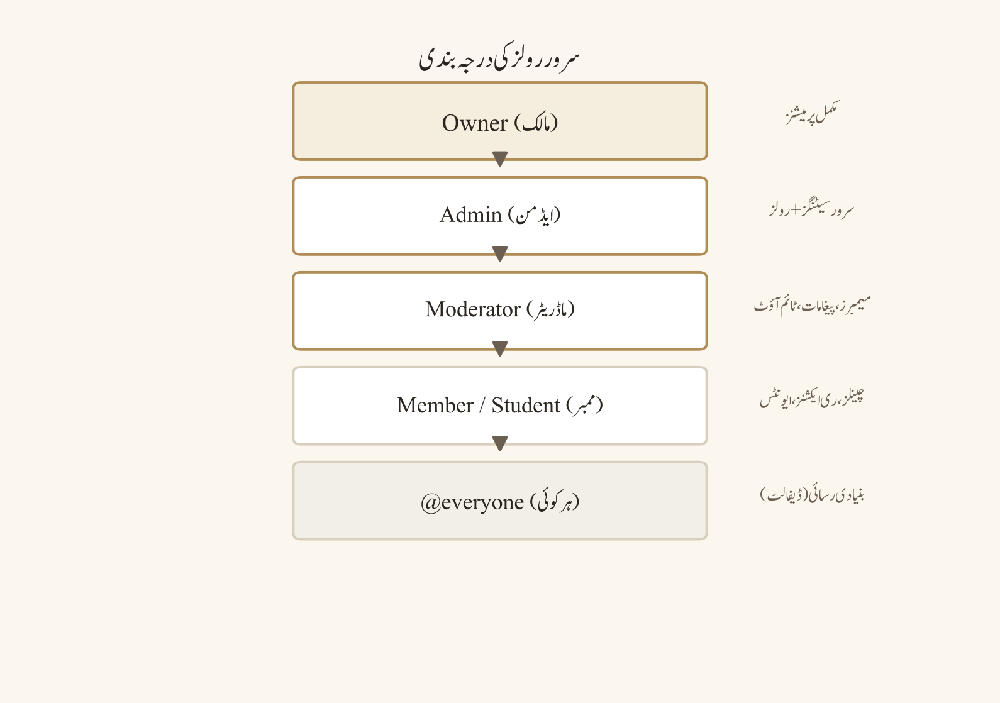
- کرداروں کو مقصد کے حساب سے ڈیزائن کریں:
Member،Student،Course-2026،Moderator،Event Volunteer،Bot،Admin،Owner۔ - ہر کردار کے لیے View، Send، Attach، Mention، Voice، Manage Channels، Manage Roles، Kick/Ban، Webhook اور Administrator پرمیشنز الگ سے طے کریں۔
- میٹرکس بنائیں: کردار، مقصد، جائز چینلز، ممنوع چینلز، وائس رسائی، مینجمنٹ حقوق، میعاد/جائزے کی تاریخ اور مالک۔
- درجہ بندی میں Owner سب سے اوپر، پھر محدود Admin، Moderator، خصوصی کردار اور Member رکھیں۔ رنگ کو رسائی کے لیے صرف ثانوی اشارہ بنائیں؛ ٹیکسٹ لیبل بھی ہو۔
- خطرناک پرمیشنز صرف نامزد، قابلِ اعتماد اکاؤنٹس کو دیں۔ Administrator، Manage Roles، Manage Server، Manage Webhooks، Ban اور Kick کو مشترکہ طالبِ علم کردار پر نہ لگائیں۔
- ہر تبدیلی کے بعد ٹیسٹ اکاؤنٹ یا low-privilege اکاؤنٹ سے چینل view، پیغام بھیجنا، فائل اپلوڈ، وائس جوائن، مینشن اور موڈریشن اعمال کی تصدیق کریں۔
- 30–90 دنوں میں کرداروں کا جائزہ لیں؛ کورس ختم ہونے پر عارضی کردار ہٹائیں یا آرکائیو کریں۔
مثالیں
کلاس سرور میں teaching assistants کو سوال و جواب موڈریٹ کرنا ہے، لیکن گریڈز یا ایڈمن سیٹنگز تک رسائی نہیں چاہیے۔ TA کردار کو متعلقہ چینلز، timeout/پیغام مینجمنٹ اور announcement view ملتی ہے؛ Student کردار صرف کورس چینلز کھولتا ہے۔ Event volunteer کو ایونٹ چینل اور عارضی وائس موڈریشن ملتی ہے، مگر سرور گنجائش کے قابل کردار مینجمنٹ نہیں۔
عام غلطیاں
- ہر فعال ممبر کو موڈریٹر رنگ دے دینا۔
- کردار درجہ بندی کو صرف سجاوٹ سمجھنا۔
@everyoneکو وسیع پرمیشنز دے دینا۔- بوٹ کو Administrator سکوپ دے دینا۔
- کرداروں کے ناموں سے اصل پرمیشنز کا گمان کر لینا۔
- پرمیشنز کی تبدیوں کا ٹیسٹ نہ کرنا۔
- سابقہ رضاکاروں کے کردار ہٹانا نہیں۔
- صرف رنگ پر مبنی اسٹیٹس استعمال کرنا۔
سیفٹی اور پرائیویسی نوٹس
کرداروں کی فہرست سے کورس کی داخلہ، معذوری کی حیثیت، عمر، مقام یا حساس شناخت ظاہر نہ کریں۔ حساس چینلز کو صرف ضرورت-پر-معلومات کی رسائی پر رکھیں۔ پرمیشن آڈٹ لاگ کا جائزہ محدود mod/admin چینل میں لیں۔ کسی ممبر کو عوامی رسوائی کے لیے کردار تبدیل یا تنزل نہ کریں۔
پریکٹس ٹاسک
اپنے سرور کے لیے 5 کردار اور 8 کالموں کی پرمیشنز میٹرکس بنائیں۔ ہر خطرناک پرمیشن کے لیے ایک سطر لکھیں کہ وہ کیوں چاہیے، کون منظور کرے گا اور جائزے کی تاریخ کیا ہوگی۔
چیپٹر چیک لسٹ
- ☐ ہر کردار کا مقصد اور مالک ہے۔
- ☐ least privilege میٹرکس بن چکا ہے۔
- ☐ خطرناک پرمیشنز محدود ہیں۔
- ☐ کرداروں کی ترتیب اور چینل inheritance ٹیسٹ ہو گئی۔
- ☐ عارضی کرداروں کی جائزے کی تاریخ ہے۔
- ☐ رسائی کے لیے ٹیکسٹ لیبلز بھی موجود ہیں۔
تصدیق کے لیولز اور ممبرشپ سکریننگ
مقصد
تصدیق اور سکریننگ سپیم، raids اور جعلی اکاؤنٹس کو روکنے کے لیے رکاوٹ اور رسائی کے درمیان توازن قائم کرتے ہیں۔ زیادہ سطح کی تصدیق سیکیورٹی تو بڑھا سکتی ہے، لیکن نئے جائز ممبرز، کم بینڈوڈتھ والے صارفین یا مشترکہ ڈیوائسز کے لیے مراحل مشکل ہو سکتے ہیں۔ مقصد ہر صارف کو سزا دینا نہیں، بلکہ خطرے کو متناسب طریقے سے منظم کرنا ہے۔
پیشگی ضروریات
سرور کا خطرے کا لیول، ممبر سامعین، موڈریٹر کی دستیابی، مدد کا روٹ اور متبادل رسائی کا عمل طے ہو۔ ای میل/فون verification، عمر سے متعلق تقاضے، CAPTCHA، قواعد کی قبولیت اور کردار تفویض جیسی چیزیں موجودہ پلیٹ فارم پالیسی اور سرور اہلیت پر منحصر ہو سکتی ہیں۔
ڈیسک ٹاپ، ویب اور موبائل کے فرق
ڈیسک ٹاپ، ویب اور موبائل پر verification پرامپٹس اور سکریننگ اسکرینز الگ ترتیب یا لیبلز میں آ سکتے ہیں۔ کچھ آپشنز صرف Community-فعال سرورز، اہل اکاؤنٹس، معاون علاقوں یا موجودہ ڈسکارڈ پالیسی پر دستیاب ہوتے ہیں۔ درست لیولز، دورانیوں اور UI کی تصدیق لائیو سرور سیٹنگز اور سرکاری موجودہ رہنمائی سے کریں؛ یہ گائیڈ تبدیل ہونے والی اہلیت کو مستقل وعدہ نہیں کرتی۔
نمبر وار UI ورک فلو
- سرور کے ممکنہ خطرات شناخت کریں: سپیم لنکس، raid جوائنز، نقلِ شخصیت، ہراسانی یا غیر متعلقہ دعوتیں۔
- کم سے کم سکریننگ چنیں: قواعد کی قبولیت، verified email، account-age check، onboarding سوالات اور مطلوبہ کردار۔
- زیادہ خطرے کے ادوار کے لیے عارضی سخت تر کنٹرولز کا پلان بنائیں، جیسے ایونٹ اعلان کے بعد دعوت کی حدود یا چینل lockdown۔
- سکریننگ سوالات مختصر، جہاں ممکن ہو آپشنل، اور مقصد-بند رکھیں۔ حساس دستاویزات یا نجی شناختی ثبوت نہ مانگیں۔
- مدد کا روٹ فراہم کریں تاکہ جائز ممبر تکنیکی verification کا مسئلہ رپورٹ کر سکے۔
- نئے ممبر کو محدود welcome علاقے میں رکھیں؛ موڈریٹر جائزہ یا کردار انتخاب کے بعد عام رسائی دیں۔
- false positives اور رسائی کی رکاوٹوں کی نگرانی کریں؛ متبادل انسانی verification روٹ منصفانہ اور دستاویز شدہ ہو۔
مثالیں
یونیورسٹی سوسائٹی کا ایونٹ وائرل ہو جاتا ہے اور 300 نئے اکاؤنٹس ایک گھنٹے میں جوائن ہوتے ہیں۔ مالک membership screening فعال کرتا ہے، قواعد کی قبولیت مطلوبہ کرتا ہے اور ایونٹ کردار کو محدود چینلز تک محدود رکھتا ہے۔ ایک طالبِ علم verified email کے باوجود CAPTCHA مکمل نہیں کر پاتا؛ موڈریٹر اسے عوامی چینل میں ذاتی تفصیل پوسٹ کرنے کے بجائے نجی مدد ٹکٹ سے دستیانہ چیک کرتا ہے۔
عام غلطیاں
- ہر سرور پر زیادہ سے زیادہ verification ڈیفالٹ کر دینا۔
- سکریننگ کو مستقل سزا بنانا۔
- سوالات میں قومیت، مذہب، معذوری یا فون نمبر جمع کرنا۔
- ناکام verification والوں کی عوامی شرمندگی کرنا۔
- مدد چینل کو کھلا سپیم بورڈ بنانا۔
- موڈریشن گنجائش کے بغیر discovery/دعوت مہم چلانا۔
- متبادل روٹ کو غیر دستاویز شدہ چھوڑ دینا۔
سیفٹی اور پرائیویسی نوٹس
Verification ڈیٹا کو صرف حفاظتی مقصد کے لیے استعمال کریں، ضرورت مند موڈریٹرز کے گروپ تک محدود رکھیں اور retention period متعین کریں۔ شناختی دستاویزات، بائیو میٹرک ڈیٹا، پاس ورڈز، 2FA کوڈز یا مالی تفصیلات کبھی نہ مانگیں۔ CAPTCHA یا تھرڈ پارٹی سکریننگ ٹول کی پرائیویسی پالیسی اور ڈیٹا ہینڈلنگ کا جائزہ لیں۔
پریکٹس ٹاسک
اپنے سرور کے لیے کم، درمیانے اور زیادہ خطرے کے سکریننگ پلانز لکھیں۔ ہر پلان میں مطلوبہ قدم، ممبر رکاوٹ، موڈریٹر کا کام کا بوجھ، false-positive علاج اور ڈیٹا-retention کا فیصلہ شامل کریں۔
چیپٹر چیک لسٹ
- ☐ خطرے اور سامعین کے مطابق سکریننگ ہے۔
- ☐ کم سے کم ضروری معلومات جمع ہوتی ہیں۔
- ☐ جائز صارفین کے لیے مدد کا روٹ ہے۔
- ☐ اہلیت/UI کی واضحات کی تصدیق کی گئی ہے۔
- ☐ false positives کا منصفانہ علاج ہے۔
- ☐ verification ڈیٹا کی retention اور رسائی واضح ہے۔
کمیونٹی این ایبلمنٹ، ڈسکوری اور انسائٹس
مقصد
کمیونٹی این ایبلمنٹ، discovery اور insights سرور کو ذمہ داری سے بڑھانے میں مدد دیتے ہیں، لیکن نمائش اور اینالٹکس کو حفاظت، پرائیویسی اور موڈریشن گنجائش کے بغیر ہدف نہیں بنانا چاہیے۔ discovery سے نئے ممبرز آ سکتے ہیں؛ insights سے شرکت کے پیٹرنز سمجھ آ سکتے ہیں۔ دونوں کو درست قواعد، واضح مقصد اور انسانی موڈریشن کے ساتھ استعمال کریں۔
پیشگی ضروریات
عوامی تفصیل، قواعد، موڈریٹر roster، رپورٹنگ ورک فلو، مواد کے معیارات، رسائی کے وعدے اور اینالٹکس جائزہ لینے والے مالک کی وضاحت ہو۔ Community فیچرز، discovery، Server Insights اور متعلقہ ٹولز اہلیت، گائیڈ لائنز، verification، موڈریشن گنجائش، علاقہ اور پلان کی شرائط کے پابند ہو سکتے ہیں۔
ڈیسک ٹاپ، ویب اور موبائل کے فرق
Discovery، کمیونٹی سیٹنگز، insights ڈیش بورڈز اور میٹرکس لیبلز موجودہ سرور اسٹیٹس، علاقہ، پلان، سامعین اور پلیٹ فارم پالیسی پر منحصر ہو سکتے ہیں۔ ڈیسک ٹاپ/ویب اور موبائل کے ڈسپلے الگ ہو سکتے ہیں۔ اگر کوئی میٹرک دکھائی دے تو اس کا مطلب یہ نہیں کہ ہر ممبر کی انفرادی سرگرمی عوامی طور پر دستیاب ہے؛ مجموعی (aggregate) اینالٹکس اور پرائیویسی کی حدود کا احترام کریں۔
نمبر وار UI ورک فلو
- سرور کا عوامی مقصد، سامعین، زبان، عمر کی مناسبیت اور سرگرمی کی توقع درست طریقے سے لکھیں۔
- قواعد، رپورٹ روٹ، موڈریٹر رابطے اور اپیل کے عمل کو عوامی یا تلاش آسان جگہ پر رکھیں۔
- موڈریٹر کوریج متعین کریں: ہفتے کے دن/ویک اینڈ، ایونٹ کے اوقات، ایمرجنسی رابطہ اور بیک اپ۔
- discovery کے لیے صرف فعال، پائیدار چینلز کو فروغ دیں؛ خالی شوکیس چینلز اور گمراہ کن دعووں سے گریز کریں۔
- insights کو ہفتہ وار/ماہانہ جائزے میں شرکت، غیر جواب شدہ سوالات، retention، حفاظتی واقعات اور رسائی کے فیڈ بیک کے لیے استعمال کریں۔
- میٹرکس کو انفرادی نگرانی یا درجہ بندی کے لیے استعمال نہ کریں۔ رجحانات کو مجموعی سطح پر بحث کریں۔
- نشوونما کی مہم سے پہلے raid response، دعوت کی حدود، AutoMod، welcome فلو اور موڈریٹر کی دستیابی ٹیسٹ کریں۔
مثالیں
پروگرامنگ کلب discovery listing میں "beginner-friendly weekly study room" لکھتا ہے۔ Listing درست ہے، قواعد میں no harassment اور no code plagiarism شامل ہیں، اور جمعے کے ایونٹ کے لیے دو موڈریٹرز مقرر ہیں۔ insights دکھاتے ہیں کہ announcements کھولے جاتے ہیں لیکن سوال و جواب میں جوابات دیر سے آتے ہیں؛ کلب ہر منگل کو رضاکارانه office hour شیڈول کرتا ہے اور رسائی کے فیڈ بیک کے لیے گمنام فارم کا لنک دیتا ہے۔
عام غلطیاں
- ممبرز کی تعداد کو صحت کا واحد میٹرک بنانا۔
- discovery listing میں مبہم دعوے کرنا۔
- insights سے انفرادی ممبرز کو ٹارگٹ کرنا۔
- موڈریٹر گنجائش کے بغیر عوامی تشہیر کرنا۔
- حساس آبادیاتی معلومات جمع کرنا۔
- غیر فعال چینلز کو فعال دکھانا۔
- رسائی کی ضروریات کو بعد میں آنے والی بات سمجھنا۔
- پالیسی کی تبدیلیوں کو موجودہ شرائط کے بغیر گمان کر لینا۔
سیفٹی اور پرائیویسی نوٹس
اینالٹکس ایکسپورٹس، اسکرین شاٹس اور رپورٹس کو محدود رسائی میں رکھیں۔ ممبرز کے نام، DMs، معذوری کی افشائی، مقام اور نجی رویہ کو عوامی ڈیش بورڈ میں شامل نہ کریں۔ discovery کے لیے دعوتی لنکوں کو ٹریک/منسوخ کرنے کے قابل بنائیں اور سمجھوتہ زدہ لنک فوراً ڈیسیبل کریں۔
پریکٹس ٹاسک
اپنے سرور کے لیے ایک صفحہ کا کمیونٹی ریڈینیس پلان بنائیں: مقصد، سامعین، موڈریٹر rota، سیفٹی روٹ، رسائی کا وعدہ، 5 مفید میٹرکس اور نشوونما روکنے کے معیارات۔
چیپٹر چیک لسٹ
- ☐ عوامی تفصیل درست اور جامع ہے۔
- ☐ قواعد/رپورٹ/اپیل روٹس تیار ہیں۔
- ☐ موڈریٹر کوریج حقیقت پسندانہ ہے۔
- ☐ insights مجموعی اور پرائیویسی محفوظ ہیں۔
- ☐ نشوونما سے پہلے سیفٹی کنٹرولز ٹیسٹ ہیں۔
- ☐ اہلیت اور پالیسی کی واضحات نوٹ ہو گئی ہیں۔
دعوتیں، ویینٹی URL اور سرور بوسٹس
مقصد
دعوتیں کنٹرول شدہ داخلے کے مقامات ہیں؛ vanity URL اور بوسٹس نمائش یا سرور perks فراہم کر سکتے ہیں، لیکن انہیں مارکیٹنگ کا شارٹ کٹ یا سیکیورٹی گارنٹی نہ سمجھیں۔ ہر دعوت کا مقصد، سامعین، میعاد، زیادہ سے زیادہ استعمال، ہدف چینل اور منسوخ کرنے والا مالک واضح ہونا چاہیے۔
پیشگی ضروریات
دعوت کی پالیسی، منظور شدہ پروموٹرز، ہدف چینلز، موڈریشن rota اور واقعے کا جواب طے ہو۔ vanity URL، کسٹم اثاثے، اپلوڈ/میڈیا perks، بوسٹ لیولز اور متعلقہ فوائد ڈسکارڈ کے موجودہ پروگرام، سرور لیول، علاقہ اور اہلیت پر منحصر ہیں؛ درست شرائط اور UI کی تصدیق موجودہ سرکاری سیٹنگز سے کریں۔
ڈیسک ٹاپ، ویب اور موبائل کے فرق
ڈیسک ٹاپ/ویب پر دعوت کی تخلیق، استعمال کے شمار، میعاد اور منسوخی اکثر زیادہ تفصیلی ہوتی ہے۔ موبائل پر کنٹرولز کمپیکٹ ہو سکتے ہیں اور عارضی دعوت کے آپشنز مختلف طریقے سے ظاہر ہو سکتے ہیں۔ vanity URL/بوسٹ کی دستیابی اور perks تبدیل ہونے والی پالیسی، سرور tier، علاقہ اور اہلیت پر منحصر ہیں؛ کسی تھرڈ پارٹی دعوے کو حتمی ذریعہ نہ بنائیں۔
نمبر وار UI ورک فلو
- دعوت کا مقصد لکھیں: کلاس کوہورٹ، ایونٹ مہمان، پارٹنر کمیونٹی یا عوامی discovery۔
- وہ ہدف چینل چنیں جو welcome/rules/onboarding فلو کی طرف لے جائے، براہِ راست حساس چینل نہ ہو۔
- میعاد اور زیادہ سے زیادہ استعمال سیٹ کریں؛ عوامی مہم کے لیے مختصر مدت کے، ٹریس کرنے کے قابل دعوتیں استعمال کریں۔
- دعوت کو صرف منظور شدہ چینلز/پروموٹرز پر شیئر کریں اور پیغام میں مقصد، قواعد اور رپورٹ روٹ شامل کریں۔
- جوائن سرگرمی کی نگرانی کریں؛ غیر متوقع اضافے پر دعوت کو روکیں/منسوخ کریں اور سکریننگ/raid کنٹرولز فعال کریں۔
- vanity URL یا بوسٹ perks کو تبھی فروغ دیں جب موجودہ اہلیت، فوائد اور موڈریشن گنجائش کی تصدیق ہو جائے۔
- پرانی، لیک شدہ، غیر استعمال شدہ اور ایونٹ مخصوص دعوتوں کو باقاعدگی سے منسوخ کریں۔
مثالیں
ڈیبیٹ سوسائٹی بین الکالج ایونٹ کے لیے ایک 48 گھنٹے کی دعوت بناتی ہے جو صرف #event-welcome کھولتی ہے۔ آرگنائزر دعوت کو رجسٹرڈ شرکاء کے گروپ میں شیئر کرتا ہے، زیادہ سے زیادہ استعمال سیٹ کرتا ہے اور ایونٹ کے بعد منسوخ کرتا ہے۔ کوئی شرکاء لنک کو عوامی فورم پر پوسٹ کر دیتا ہے؛ موڈریٹر استعمال کے شمار میں اضافہ دیکھ کر لنک منسوخ کرتا ہے اور سکریننگ سخت کرتا ہے۔
عام غلطیاں
- مستقل، لامحدود عوامی دعوت کو ہر جگہ پیسٹ کرنا۔
- دعوت کو نجی چینل یا براہِ راست ایڈمن علاقے کی طرف اشارہ کرنا۔
- لیک شدہ لنک کو فعال رہنے دینا۔
- vanity URL کو تصدیق شدہ اسٹیٹس یا سیفٹی گارنٹی سمجھنا۔
- بوسٹ perks کے لیے غیر ضروری ذاتی ڈیٹا جمع کرنا۔
- ایونٹ کے بعد مہمان کردار/دعوتیں نہ ہٹانا۔
- دعوت اینالٹکس کو انفرادی ٹریکنگ کے لیے استعمال کرنا۔
سیفٹی اور پرائیویسی نوٹس
دعوتی لنکس کو خفیہ کی طرح سمجھیں جب ان کا غلط استعمال ممکن ہو؛ عوامی ذخیروں، اسکرین شاٹس یا کھلی دستاویزات میں بے ضرورتی میں ظاہر نہ کریں۔ نئے ممبرز کو قواعد اور پرائیویسی کی توقعات واضح کریں۔ DMs، وائس رومز اور فائل چینلز کو دعوت کی رسائی کے ساتھ خود کار طور پر عوامی نہ ہونے دیں۔
پریکٹس ٹاسک
تین دعوت ٹیمپلیٹس بنائیں—کلاس کوہورٹ، عوامی ایونٹ اور پارٹنر کمیونٹی—ہر ایک کے لیے ہدف چینل، میعاد، زیادہ سے زیادہ استعمال، پروموٹر، منسوخی کا ٹرگر اور welcome پیغام لکھیں۔
چیپٹر چیک لسٹ
- ☐ ہر دعوت کا مقصد اور مالک ہے۔
- ☐ میعاد/زیادہ سے زیادہ استعمال/ہدف چینل سیٹ ہیں۔
- ☐ حساس چینلز براہِ راست ظاہر نہیں ہیں۔
- ☐ اضافے/لیک پر منسوخی کا ٹرگر ہے۔
- ☐ vanity/بوسٹ کے دعوے موجودہ شرائط سے تصدیق شدہ ہیں۔
- ☐ ایونٹ کے بعد رسائی صاف کرنے کا پلان ہے۔
حصہ 6 — سرور کی تخلیق اور انتظامیہ (حصہ دوم)
ماڈریشن ورک فلو: سلو موڈ، ٹائم آؤٹ، کک اور بین
مقصد
ماڈریشن کا مقصد کمیونٹی کو محفوظ، مفید اور منصفانہ رکھنا ہے، ماڈریٹر کا اقتدار دکھانا نہیں۔ کارروائی کے بڑھتے ہوئے درجات (escalation ladder) یاد دہانی، تعلیم، وارننگ، مواد ہٹانا، سلو موڈ، ٹائم آؤٹ، کک، بین اور پلیٹ فارم/ایمرجنسی رپورٹ تک جا سکتے ہیں۔ شدت، نیت، نقصان، سیاق اور بار بار دہرائے جانے والے رویے کے مطابق کارروائی کا درجہ مناسب ہونا چاہیے۔
پیشگی ضروریات
تحریری قواعد، ثبوت کا معیار، ماڈریٹر اتھارٹی میٹرکس، اپیل کا راستہ، واقعے کا لاگ اور ایمرجنسی رابطے تیار ہونے چاہئیں۔ سلو موڈ، ٹائم آؤٹ کی مدت، کک/بین کا دائرہ اور عین مطابق UI موجودہ پلیٹ فارم کنٹرولز پر منحصر ہوتے ہیں؛ کوئی کارروائی کرنے سے پہلے لائیو پرمیشنز اور پالیکی کی تصدیق کریں۔
ڈیسک ٹاپ، ویب اور موبائل کے فرق
ڈیسک ٹاپ اور ویب پر پیغام کا سیاق، آڈٹ انٹریز اور ماڈریشن مینوز اکثر تفصیلی ہوتے ہیں؛ موبائل پر آپشنز کمپیکٹ ہوتے ہیں اور لیبلز/ورژن کے مطابق مختلف ہو سکتے ہیں۔ ٹائم آؤٹ کی صلاحیتیں، پیغام مٹانے کی ہسٹری، بین کا دائرہ، سلو موڈ کی حدود اور متعلقہ کنٹرولز پلیٹ فارم اپڈیٹس کے ساتھ تبدیل ہو سکتے ہیں۔ کسی کارروائی کا سکرین شاٹ یا مینو کی پوزیشن حتمی دستاویز نہ سمجھیں۔
نمبر وار UI ورک فلو
- رپورٹ یا سیاق وصول کریں اور فوری نقصان کا اندازہ لگائیں: ہراسانی، دھمکی، سکیم، ڈاکسنگ، اسپیم رےڈ یا معمولی اختلاف۔
- متعلقہ قاعدہ اور ثبوت پہچانیں؛ پیغام کا لنک، ٹائم سٹیمپ، چینل، گواہ اور پچھلی ہسٹری محفوظ جگہ پر نوٹ کریں۔
- کم درجے کی پہلی خلاف ورزی پر واضح یاد دہانی یا تعلیم دیں؛ جان بوجھ کر نقصان، سیفٹی کی دھمکی یا مربوط استحصال پر براہِ راست اعلیٰ درجے کی کارروائی کر سکتے ہیں۔
- اسپیم یا گرم ہوئے چینل پر عارضی سلو موڈ یا چینل limit لگائیں اور وجہ کا اعلان کریں۔
- مسلسل بگاڑ پر مناسب درجے کا ٹائم آؤٹ دیں؛ عین مطابق مدت اور پابند صلاحیتیں موجودہ کنٹرولز کے مطابق چنیں۔
- سرور سے ہٹانا ضروری ہو تو کک اور بین کا فرق واضح کریں: کک واپسی کو لازمی طور پر مستقل بلاک نہیں کرتا؛ بین واپسی پر مضبوط تر پابندی ہے، جس کا عین مطابق دائرہ موجودہ پلیٹ فارم کنٹرولز پر منحصر ہے۔
- پلیٹ فارم کی خلاف ورزی، غیر قانونی مواد، فوری جسمانی خطرہ یا قابلِ اعتبار دھمکی پر آفیشل رپورٹ، ایمرجنسی سروسز یا مختص ادارتی اتھارٹی تک بھیجیں۔
- کارروائی کا لاگ، وجہ، ثبوت، ماڈریٹر، مدت، اپیل کا راستہ اور فالو اپ کی تاریخ ریکارڈ کریں؛ عوامی رسوائی سے بچیں۔
مثالیں
- پڑھائی کا چینل: ایک طالبِ علم بار بار ذاتی حملے کرتا ہے۔ ماڈریٹر پہلے قاعدے کی یاد دہانی اور نجی وارننگ دیتا ہے، پھر 24 گھنٹے کا ٹائم آؤٹ لگاتا ہے۔ جب وہ صارف آلٹرنیٹ اکاؤنٹ سے ہراسانی جاری رکھتا ہے، تو ماڈریٹر ثبوت محفوظ رکھ کر بین اور آفیشل رپورٹ کا عمل استعمال کرتا ہے۔
- موضوعاتی اختلاف: دوسری مثال میں طالبِ علم کسی علمی موضوع پر سخت اختلاف کرتے ہیں؛ ماڈریٹر سلو موڈ اور تھریڈ اسپلٹ استعمال کر کے بحث کو پرسکون کرتا ہے، بغیر کسی غیر ضروری بین کے۔
عام غلطیاں
- ہر اختلاف کو غلط رویہ سمجھ لینا۔
- ثبوت کے بغیر عوامی الزام لگانا۔
- غیر مستقل سزائیں دینا۔
- ٹائم آؤٹ کو غیر معینہ مدت کا بنا دینا۔
- کک اور بین کا فرق الجھانا۔
- اپیل کا راستہ چھپانا۔
- ماڈریٹر کا خود بحث میں حصہ لینا۔
- حساس رپورٹ کو عوامی چینل میں زیرِ بحث لانا۔
- ایکشن لاگ میں پاس ورڈز، شناختی دستاویزات یا غیر ضروری ذاتی ڈیٹا محفوظ کرنا۔
سیفٹی اور پرائیویسی نوٹس
ثبوت کو صرف ضرورت مند ماڈریٹرز تک محدود رکھیں۔ دھمکی، خود کو نقصان، ڈاکسنگ یا استحصال کی صورت میں پلیٹ فارم کے سیفٹی ٹولز اور مناسب ایمرجنسی/ادارتی راستہ استعمال کریں۔ ماڈریشن نوٹس حقیقت پسندانہ، غیر جانبدار اور کم سے کم ضروری ہونے چاہئیں۔ کسی ممبر کی معذوری، شناخت یا نجی ہسٹری کو کارروائی کی عوامی وجہ نہ بنائیں۔
پریکٹس ٹاسک
ایک ہراسانی رپورٹ، ایک اسپیم رےڈ اور ایک گرم علمی اختلاف کے لیے الگ الگ ماڈریشن ڈیسیژن ٹریز بنائیں۔ ہر شاخ میں قاعدہ، ثبوت، کارروائی، مدت، پرائیویسی کا طریقہ اور اپیل کا راستہ شامل کریں۔
چیپٹر چیک لسٹ
- ☐ بڑھتے ہوئے درجات تحریری اور مناسب درجے کے ہیں۔
- ☐ ثبوت اور قاعدے کا حوالہ ریکارڈ ہیں۔
- ☐ سلو موڈ/ٹائم آؤٹ موجودہ کنٹرولز کے مطابق تصدیق شدہ ہیں۔
- ☐ کک اور بین کا فرق ٹیم کے لیے واضح ہے۔
- ☐ ایمرجنسی/پلیٹ فارم ایسکلیشن کا راستہ تیار ہے۔
- ☐ اپیل، پرائیویسی اور واقعات کے لاگ کا عمل دستاویز شدہ ہے۔
AutoMod، رےڈ پروٹیکشن اور آڈٹ لاگ
مقصد
AutoMod، رےڈ پروٹیکشن اور آڈٹ لاگ تین الگ لیکن باہم جڑی ہوئی تہیں ہیں۔ AutoMod خطرناک مواد کو پیغام شائع ہونے سے پہلے یا شائع ہونے کے فوراً بعد روکنے کی کوشش کرتا ہے؛ رےڈ پروٹیکشن نئے ممبران، joins اور مربوط سرگرمی سے سرور کو مستحکم رکھتی ہے؛ آڈٹ لاگ بتاتا ہے کہ کس ایڈمنسٹریٹر نے کیا تبدیلی کی۔ ان تینوں کا مقصد آٹومیشن کو انسانی فیصلے کا متبادل بنانا نہیں، بلکہ ماڈریٹرز کو جلدی، مساوی اور ثبوت پر مبنی کارروائی لینے میں مدد دینا ہے۔ اچھا سیفٹی سسٹم prevention، detection، response اور review — ان چاروں پر محیط ہوتا ہے۔
پیشگی ضروریات
سرور کا مالک یا ایسا ماڈریٹر جسے سرور سیٹنگز اور ماڈریشن کنٹرولز منظم کرنے کی اجازت ہو، تحریری کمیونٹی قواعد، واضح ماڈریٹر ذمہ داریاں، محدود ایڈمن/ماڈریشن چینل، ٹیسٹ اکاؤنٹ اور واقعات کے جواب دہی کی رابطہ فہرست تیار ہونی چاہیے۔ AutoMod کے قواعد بنانے سے پہلے یہ طے کریں کہ کن چینلز کی حفاظت ہوگی، کن رولز کو exempt کیا جائے گا، کس ایکشن پر ایلرٹ بھیجا جائے گا اور false positive کا جائزہ کون لے گا۔ رےڈ پلان میں انوائٹ کنٹرول، تصدیق (verification)، چینل لاک ڈاؤن، ثبوت کا تحفظ اور پرسکون عوامی رابطہ شامل ہو۔ آڈٹ لاگ تک رسائی صرف ضرورت مند ایڈمنز تک محدود رکھیں۔
ڈیسک ٹاپ، ویب اور موبائل کے فرق
ڈیسک ٹاپ اور ویب کلائنٹس پر سرور سیٹنگز، AutoMod قواعد، ممبر لسٹس اور آڈٹ انٹریز اکثر کشادہ لے آؤٹ میں آسانی سے ملی جاتی ہیں۔ موبائل ایپ پر ایڈمن مینوز کمپیکٹ ہو سکتے ہیں، کچھ آپشنز الگ ترتیب میں آ سکتے ہیں اور bulک کا جائزہ مشکل ہو سکتا ہے۔ AutoMod کے قواعد کی اقسام، ایکشنز، exemptions، verification آپشنز، آڈٹ لاگ کی دستیابی اور ماڈریشن کنٹرولز سرور کی اہلیت، رول ہائرارکی، عمر/علاقہ/اکاؤنٹ کی شرائط، کمیونٹی کی حیثیت اور موجودہ Discord پالیکی پر منحصر ہو سکتے ہیں۔ UI لیبلز، پوزیشنز اور مدتوں کو بدلتے ہوئے انٹرفیس کا مستقل حوالہ نہ سمجھیں؛ کارروائی سے پہلے اپنے موجودہ سرور میں لائیو سیٹنگز اور پرمیشنز کی تصدیق کریں۔
نمبر وار UI ورک فلو
AutoMod
AutoMod پہلے سے طے شدہ یا کسٹم پیٹرنز پر کام کر سکتا ہے، جیسے دہرائے گئے پیغامات، مشکوک لنکس، بلاک شدہ کلیدی الفاظ، زیادہ مینشنز یا سرور پالیکی میں بیان کردہ کوئی بھی پیٹرن۔ قاعدے کا نام ایسا ہو کہ بعد میں جائزہ لینے والا فوراً سمجھ سکے کہ اس کا مقصد کیا ہے، مثال کے طور پر Protect links in lecture-chat۔ ہر قاعدے کے لیے trigger، متاثرہ چینلز، ایکشن، ایلرٹ کی منزل، exemptions اور جائزہ لینے والے کا نام ریکارڈ کریں۔ block ایکشن مواد روکنے، alert ایکشن ماڈریٹرز کو مطلع کرنے اور ٹائم آؤٹ جیسی کارروائی ممبر کی interaction کو محدود مدت تک روکنے میں مدد دے سکتی ہے؛ عین مطابق آپشنز موجودہ کلائنٹ اور سرور کنفیگریشن پر منحصر ہیں۔
- سرور کے قواعد سے مشاہدہ کے قابل خطرات نکالیں: فشنگ لنکس، اسپیم فریقز، نفرت آمیز کلام، ڈاکسنگ کی کوششیں، دہرائے گئے مینشنز یا آف ٹاپک فلڈنگ۔
- محفوظ چینلز کی فہرست بنائیں اور ہر چینل کا مقصد لکھیں؛ announcements، اسائنمنٹ جمع کرنے اور مدد کے چینلز کو الگ خطرے کا درجہ دیں۔
- AutoMod سیٹنگز میں موجودہ قواعد کا جائزہ لیں اور ڈپلیکیٹ یا متضاد قواعد کو ہٹائیں یا disable کریں۔
- ایک تنگ ٹیسٹ قاعدہ بنائیں۔ پہلے ایسا کلیدی لفظ یا پیٹرن چنیں جو عام گفتگو کو متاثر نہ کرے اور ایکشن کو alert یا block میں سے مناسب آپشن رکھیں۔
- متاثرہ چینلز، excluded رولز، allowed terms اور exemptions واضح کریں۔ کورس سے متعلق تکنیکی الفاظ جو false positive پیدا کر سکتے ہیں انہیں سوچ سمجھ کر allowlist میں شامل کریں۔
- ایلرٹ چینل کو محدود ماڈریشن چینل بنائیں تاکہ رپورٹ کا سکرین شاٹ یا لنک عوامی فید میں نہ جا پڑے۔
- ٹیسٹ اکاؤنٹ سے عام پیغام، بارڈر لائن پیغام اور واضح خلاف ورزی — تینوں آزمائیں؛ متوقع نتیجہ لکھیں۔
- قاعدے کو محدود دائرے میں enable کریں، ایک مختصر مشاہدے کی مدت رکھیں اور false positives نوٹ کریں۔
- جائزہ لینے والے کو ایلرٹ کا جواب دہی کا وقت، ثبوت اکٹھا کرنا، ممبر سے رابطہ اور اپیل کا راستہ assign کریں۔
- ہر 30–90 دن یا بڑی پالیکی تبدیلی کے بعد قاعدے، exemptions اور ایکشن کی تاثیر کا جائزہ لیں۔
رےڈ کا جواب (Raid response)
رےڈ صرف زیادہ joins کا نام نہیں؛ یہ مربوط اسپیم، خطرناک انوائٹس، نقلی بننا (impersonation)، ماس مینشنز، لنک فلڈنگ، ہراسانی یا چینل میں بگاڑ کا پیٹرن ہو سکتا ہے۔ جواب کا مقصد جلد سے جلد نقصان کم کرنا ہے، لیکن گھبراہٹ میں جائز ممبران کو مستقل نقصان نہ پہنچانا۔ ہر کارروائی کی وجہ، وقت اور ذمہ دار ماڈریٹر ریکارڈ کریں۔
- سگنل کی تصدیق کریں: joins میں اچھال، دہرائے گئے ایک جیسے پیغامات، ماس مینشنز، غیر معمولی لنک پیٹرن یا متعدد رپورٹس۔
- متاثرہ چینلز کو عارضی طور پر lock/limit کریں اور ضروری announcements چینل کو کنٹرول شدہ رسائی کے ساتھ کھلا رکھیں۔
- انوائٹ لنکس کو pause یا revoke کریں، membership screening/verification کو موجودہ کنٹرولز کے مطابق سخت کریں اور نئے joins کو محدود ویلکم ایریا میں رکھیں۔
- ماڈریٹر رولز کو تقسیم کریں: ایک joins کا جائزہ لے، ایک مواد/ثبوت محفوظ کرے، ایک عوامی اپڈیٹ لکھے اور ایک جائز ممبرز کی مدد سنبھالے۔
- خطرناک پیغامات، لنکس، منسلکات (attachments) اور متعلقہ آڈٹ انٹریز کو منظور شدہ ثبوت کی جگہ محفوظ کریں؛ عوامی چینل میں ثبوت کا ڈمپ نہ بنائیں۔
- مربوط اکاؤنٹس پر مناسب درجے کا ٹائم آؤٹ، کک یا بین لگائیں؛ آٹومیٹڈ کارروائی کے بعد بھی انسانی جائزہ ضروری ہے۔
- ممبران کو مختصر، حقیقت پسندانہ اپڈیٹ دیں: متاثرہ چینلز، عارضی پابندیاں، آفیشل مدد کا راستہ اور اگلے اپڈیٹ کا وقت۔ افواہ یا کسی فرد کی رسوائی شیئر نہ کریں۔
- خطرہ کم ہونے پر چینلز کو مرحلہ وار بحال کریں، انوائٹس اور رولز کا جائزہ لیں، false positives کو چھوڑیں اور واقعے کے بعد کی رپورٹ لکھ کر کنٹرولز بہتر کریں۔
آڈٹ لاگ
آڈٹ لاگ ایڈمنسٹریٹر اور سرور لیول کی تبدیلیوں کا احتسابی ریکارڈ ہو سکتا ہے، جیسے چینل بنانا/حذف کرنا، رول اپڈیٹ، پرمیشن کی تبدیلی، ban/kick، انوائٹ مینجمنٹ، webhook تبدیلیاں اور ماڈریشن ایکشنز۔ یہ ہر نجی گفتگو، ہر پیغام کی ترمیم یا مکمل مواد کے آرکائیو کا متبادل نہیں ہے۔ اِسی لیے آڈٹ لاگ کو ماڈریشن ریکارڈ اور منظور شدہ بیرونی ثبوت کے ساتھ مل کر استعمال کریں۔
- آڈٹ لاگ تک رسائی کو مالک، محدود ایڈمنز اور مختص آڈٹ ریویور تک محدود کریں۔
- جائزے کا شیڈول واضح کریں: زیادہ خطرناک تبدیلیوں کے فوراً بعد، ہفتہ وار پرمیشن جائزہ اور ماہانہ ownership/bot/webhook جائزہ۔
- انٹری کا ٹائم سٹیمپ، actor، ایکشن، ہدف، پرانی/نئی حالت اور متعلقہ واقعے کا ID نوٹ کریں؛ عین مطابق دستیاب fields موجودہ UI پر منحصر ہیں۔
- غیر متوقع ایڈمن ایکشن پر actor سے out-of-band تصدیق کریں؛ اکاؤنٹ کم پرومائزڈ بھی ہو سکتا ہے۔
- حساس انٹری کو عوامی چینل میں کاپی نہ کریں؛ ضرورت مند ثبوت کو اینکرپٹڈ/منظور شدہ محدود اسٹوریج میں رکھیں۔
- پرمیشن، رول، انوائٹ، webhook اور بوٹ کی تبدیلیوں کو بیرونی inventory سے موازنہ کریں۔
- جائزے کے نتائج، فیصلہ، درستی کی کارروائی اور فالو اپ کی تاریخ ریکارڈ کریں۔
مثالیں
- پروگرامنگ کی کلاس:
#code-helpچینل میں طالبِ علمrm -rfیا سیکیورٹی کی مثالیں زیرِ بحث لاتے ہیں۔ اگر AutoMod صرف لفظ کی سطح پر matching کرے تو جائز سبق بلاک ہو سکتا ہے؛ اِسی لیے ماڈریٹر تکنیکی allowlist اور انسانی جائزہ رکھتا ہے۔ - مربوط لنکس: ایونٹ کے اعلان کے بعد ایک ہی لنک متعدد اکاؤنٹس سے بار بار پوسٹ ہوتا ہے۔ AutoMod لنک کو بلاک کرتا ہے، ایلرٹ چینل میں ثبوت کا نمونہ چھوڑتا ہے اور ماڈریٹر مربوط اکاؤنٹس کو آڈٹ/ممبر ایکٹیویٹی سے موازنہ کر کے رےڈ جواب شروع کرتا ہے۔
- جمعہ کی شام کا رےڈ: ایک پڑھائی کے سرور میں 80 نئے اکاؤنٹس آتے ہیں اور ہر اکاؤنٹ ایک بیرونی گِیوے اوے لنک پوسٹ کرتا ہے۔ مالک
#generalاور#q-and-aکو عارضی lock کرتا ہے، ایونٹ انوائٹ revoke کرتا ہے، AutoMod ایلرٹس چیک کرتا ہے اور صرف تصدیق شدہ کلاس ممبران کو مدد کے چینل میں رسائی دیتا ہے۔ - جائز کیمپئن: دوسری طرف ایک جائز اورینٹیشن کیمپئن سے joins بڑھ جاتی ہیں؛ ماڈریٹر صرف joins کی تعداد دیکھ کر سب کو بین نہیں کرتا، بلکہ پیغام کے رویے، اکاؤنٹ کی عمر، انوائٹ کے ذریعے اور verification کے نتیجے کا موازنہ کرتا ہے۔
- رات 2:00 کی آڈٹ انٹری: ماڈریٹر دیکھتا ہے کہ رات 2:00 بجے ایک غیر جانچا ایڈمن اکاؤنٹ نے webhook بنایا ہے۔ وہ فوراً webhook disable کرتا ہے، سیشن/اکاؤنٹ سیکیورٹی کا جائزہ لیتا ہے، آڈٹ انٹری اور متعلقہ چینل پیغامات محفوظ کرتا ہے اور مالک کو out-of-band رابطہ کرتا ہے۔
- کورس کا اختتام: کورس ختم ہونے کے باوجود TA رول کی پرمیشنز ابھی فعال ہیں؛ ماہانہ آڈٹ سے مالک رول ہٹا کر ایکسیس میٹرکس اپڈیٹ کرتا ہے۔
عام غلطیاں
- AutoMod کو کسی چٹان ایڈمنسٹریٹر کی طرح کنفیگر کرنا۔
- ہر چینل پر ایک ہی سخت قاعدہ لگانا۔
- allowlist اور exemptions کا ٹیسٹ نہ کرنا۔
- ایلرٹ چینل کو عوامی رکھنا۔
- رےڈ کے وقت صرف بینز پر توجہ دے کر انوائٹس اور verification کو بھول جانا۔
- آڈٹ لاگ کو مکمل پیغام آرکائیو سمجھ لینا۔
- آڈٹ تک رسائی ہر ماڈریٹر کو دے دینا۔
- ثبوت کو عوامی سکرین شاٹس میں شیئر کرنا۔
- UI لیبل یا مدت کو بدلتے ہوئے پلیٹ فارم وعدہ سمجھ لینا۔
سیفٹی اور پرائیویسی نوٹس
AutoMod ایلرٹس، آڈٹ انٹریز، ممبر لسٹس، پیغام لنکس اور رےڈ کے ثبوت میں ذاتی ڈیٹا، نجی گفتگو، معذوری کا انکشاف، مقام، شناختی دستاویزات یا سیکیورٹی ٹوکنز آ سکتے ہیں۔ انہیں need-to-know رسائی، کم سے کم retention اور منظور شدہ اسٹوریج پر رکھیں۔ آٹومیٹڈ کارروائی کے بعد ممبر کو وجہ اور اپیل کا راستہ دیں جب پالیکی اور سیفٹی اجازت دیتی ہو۔ دھمکی، خود کو نقصان، ڈاکسنگ یا غیر قانونی مواد کی صورت میں پلیٹ فارم رپورٹنگ اور مناسب ادارتی/ایمرجنسی راستہ اپنائیں؛ Discord کی آٹومیشن کو قانونی یا طبی فیصلہ نہ سمجھیں۔
پریکٹس ٹاسک
ایک ٹیسٹ سرور میں تین AutoMod قواعد ڈرافٹ کریں: مشکوک لنک کنٹرول، دہرائے گئے پیغام کا کنٹرول اور کورس سے متعلق false-positive ٹیسٹ۔ ہر قاعدے کے لیے trigger، متاثرہ چینلز، exemptions، ایکشن، ایلرٹ منزل، ٹیسٹ کیس، جائزہ لینے والا اور جائزے کی تاریخ لکھیں۔ پھر ایک رےڈ ٹیبل ٹاپ مشق کریں جس میں joins کا اچھال، چینل لاک ڈاؤن، ثبوت کا تحفظ، ممبر اپڈیٹ اور مرحلہ وار بحالی شامل ہو۔
چیپٹر چیک لسٹ
- ☐ AutoMod قواعد کا مقصد، دائرہ اور مالک دستاویز شدہ ہے۔
- ☐ allowlist، exemptions اور false-positive جائزہ ٹیسٹ ہو چکے ہیں۔
- ☐ رےڈ جواب کے رولز اور رابطے کے راستے assign ہیں۔
- ☐ انوائٹ، verification اور چینل لاک کنٹرولز موجودہ UI میں تصدیق شدہ ہیں۔
- ☐ آڈٹ لاگ رسائی محدود اور جائزے کا شیڈول قائم ہے۔
- ☐ ثبوت، پرائیویسی، اپیل اور ایمرجنسی ایسکلیشن کے نوٹس مکمل ہیں۔
ماڈریشن ریکارڈ، اپیل اور ایسکلیشن
مقصد
ماڈریشن ریکارڈ، اپیل اور ایسکلیشن کا ورک فلو کمیونٹی کو مستقل، منصفانہ اور جواب دہ بناتے ہیں۔ ریکارڈ کا مقصد ممبر پر ڈاسیئر بنانا نہیں؛ یہ بتانا ہے کہ کس قاعدے، ثبوت، سیاق اور تناسب کی بنیاد پر فیصلہ لیا گیا۔ اپیل کا مقصد ممکنہ غلطی، نئے ثبوت یا بے تناسب کارروائی کو درست کرنا ہے۔ ایسکلیشن کا مقصد وہ مقدمات Discord ماڈریشن ٹیم، ادارے، ایمرجنسی سروسز یا قانونی عمل تک پہنچانا ہے جہاں سرور لیول کے ٹولز کافی نہیں۔
پیشگی ضروریات
تحریری قواعد، ماڈریشن اتھارٹی میٹرکس، غیر جانبدار ریکارڈ ٹیمپلیٹ، محفوظ ثبوت اسٹوریج، ٹائم سٹیمپ/ٹائم زون کا معیار، اپیل جائزہ لینے والا، جواب کی ڈیڈلائن، پلیٹ فارم رپورٹ کا راستہ، ادارتی safeguarding رابطہ اور ایمرجنسی پروٹوکول تیار ہونا چاہیے۔ ماڈریٹرز کو معلوم ہو کہ ریکارڈ کون لکھ سکتا ہے، حتمی فیصلہ کون لیتا ہے اور حساس ثبوت تک رسائی کسے ہے۔ ذاتی ڈیٹا کو کم سے کم رکھنے کا اصول ہر field پر لاگو ہو۔
ڈیسک ٹاپ، ویب اور موبائل کے فرق
Discord آڈٹ لاگ سرور کی تبدیلیوں اور کچھ ماڈریشن ایکشنز کا پلیٹ فارم سائیڈ سیاق دے سکتا ہے، لیکن یہ مکمل کیس فائل، اپیل کی ہسٹری یا ادارے کی منظور شدہ ریکارڈ سسٹم نہیں۔ ڈیسک ٹاپ/ویب پر پیغام لنکس، صارف سیاق اور سیٹنگز کا جائزہ نسبتاً آسان ہو سکتا ہے؛ موبائل پر ثبوت اکٹھا کرنا اور لمبے نوٹس لکھنا مشکل ہو سکتا ہے۔ پیغام retention، مٹانے کا رویہ، آڈٹ fields، ٹائم آؤٹ/بین کا دائرہ، رپورٹنگ آپشنز اور ڈیٹا تک رسائی موجودہ پلیٹ فارم پالیکی اور سرور کنفیگریشن پر منحصر ہیں۔ UI یا پالیکی تبدیل ہو سکتی ہے، اِسی لیے ریکارڈ میں عین مطابق مشاہدہ شدہ ایکشن اور تاریخ لکھیں، مستقل لیبل فرض نہ کریں۔
نمبر وار UI ورک فلو
ماڈریشن ریکارڈ کے fields
ہر ریکارڈ حقیقت پسندانہ، غیر جانبدار اور کم سے کم ضروری ہو۔ ٹائم سٹیمپ کے ساتھ ٹائم زون بھی لکھیں تاکہ دو ماڈریٹرز یا ادارے کا جائزہ لینے والا تسلسل سمجھ سکے۔ ممبر کی شناخت کے لیے صرف ضروری identifier استعمال کریں؛ حساس پروفائل تفصیلات کاپی نہ کریں۔ ثبوت کے لنک کو محدود اسٹوریج میں رکھیں اور عوامی چینل میں غیر ضروری سکرین شاٹس پیسٹ نہ کریں۔
- واقعے کا ID بنائیں اور وصول کا وقت/ٹائم زون ریکارڈ کریں۔
- رپورٹ کرنے والا، ملزم ممبر، گواہ اور ملوث چینلز کو کم سے کم ضروری سطح پر نوٹ کریں۔
- متعلقہ قاعدے کا نمبر اور عین مطابق مشاہدہ شدہ رویہ لکھیں؛ نیت کے بارے میں اندازہ نہ لگائیں۔
- ثبوت کو محفوظ جگہ پر محفوظ کریں: پیغام لنک، ٹائم سٹیمپ، منسلکات کا میٹا ڈیٹا، آڈٹ انٹری، رپورٹ کا متن اور پچھلے متعلقہ واقعات۔
- ماڈریٹر، جائزہ لینے والا، ایکشن، مدت، وجہ، اپیل کی ڈیڈلائن اور اگلے جائزے کی تاریخ درج کریں۔
- ممبر کو نجی یا پالیکی سے منظور شدہ راستے سے ایکشن اور وجہ بتائیں؛ عوامی رسوائی سے بچیں۔
- اپیل کی حیثیت کو open، under review، decided یا closed جیسے موجودہ ورک فلو سے ہم آہنگ لیبلز میں اپڈیٹ کریں۔
- ریکارڈ کو ایکسیس کنٹرول سسٹم میں اسٹور کریں اور retention/حذف شدگی کی تاریخ assign کریں۔
اپیل کے اصول
اپیل کا عمل قابلِ رسائی، وقت کے ساتھ بند ہونے والا (time-bound) اور انتقام سے پاک ہونا چاہیے۔ آزاد جائزہ لینے والا جہاں ممکن ہو فیصلے پر تازہ نظر ڈالے۔ نئے ثبوت پر غور کریں، لیکن ہر اپیل کا جائزہ اصل ثبوت کو حذف کیے بغیر لیں۔ حساس ڈیٹا صرف فیصلے کے لیے ضروری حصہ تک جمع کریں۔ اپیل کا مطلب خودکار طور پر سسپینشن واپس لینا نہیں؛ حیثیت اور متوقع جواب کا وقت واضح ہو۔
- اپیل چینل/فارم کے آفیشل راستے کو ویلکم، قواعد اور ایکشن نوٹس میں شائع کریں۔
- درخواست گزار سے واقعے کا ID، مختصر بیان اور نئے ثبوت مانگیں؛ پاس ورڈز، شناختی دستاویزات یا غیر متعلقہ نجی ہسٹری نہ مانگیں۔
- وصول کی تصدیق کریں اور متوقع جائزے کی کھڑی/ٹائم زون بتائیں۔
- اصل فیصلے سے مختلف جائزہ لینے والا assign کریں؛ interest کا تنازع ہو تو متبادل جائزہ لینے والا رکھیں۔
- قاعدہ، ثبوت، سیاق، تناسب، مستقل مزاجی اور نئی معلومات کا جائزہ لیں۔
- فیصلہ، وجہ، نافذ ہونے کی تاریخ، باقی پابندیاں اور اضافی جائزے کا راستہ دستاویز کریں۔
- درخواست گزار کو نتیجہ بتائیں اور انتقام، ہراسانی یا دہرائی گئی زیادتی کی پالیکی یاد دلائیں۔
- کوئی پیٹرن یا سسٹمک غلطی ہو تو قاعدہ، ٹریننگ یا AutoMod کنفیگریشن اپڈیٹ کریں۔
ایسکلیشن
ایسکلیشن میٹرکس پہلے سے لکھا ہوا ہو اور ہر ماڈریٹر کو معلوم ہو کہ کس سے رابطہ کرنا ہے۔ پلیٹ فارم کی خلاف ورزی کو آفیشل رپورٹ راستے سے رپورٹ کریں۔ فوری جسمانی خطرے، قابلِ اعتبار دھمکی، خود کو نقصان کے اشارے، استحصال یا طبی ایمرجنسی میں مقامی ایمرجنسی سروسز اور ادارے کی مختص safeguarding اتھارٹی کو ترجیح دیں؛ Discord ماڈریشن کو ایمرجنسی جواب کا متبادل نہ سمجھیں۔ سکول/دفتر کے معاملے کو ٹیچر، محکمے، HR یا مختص اتھارٹی کے منظور شدہ راستے پر بھیجیں۔ قانونی مطالبہ، subpoena یا law-enforcement کی درخواست کو تنظیم کے قانونی/پرائیویسی عمل کے ذریعے سنبھالیں، کسی انفرادی ماڈریٹر کے ذاتی فیصلے سے نہیں۔
مثالیں
- Q&A تھریڈ کا مذاق: ایک طالبِ علم نے Q&A تھریڈ میں دوسرے طالبِ علم کا مذاق اڑایا۔ ماڈریٹر پیغام لنک، ٹائم سٹیمپ، قاعدہ 3، وارننگ، 24 گھنٹے کا ٹائم آؤٹ اور اپیل کی ڈیڈلائن ریکارڈ کرتا ہے۔ بعد میں ملزم ممبر بتاتا ہے کہ اس کا اکاؤنٹ کم پرومائزڈ ہو گیا تھا؛ جائزہ لینے والا سیکیورٹی ثبوت اور آڈٹ لاگ چیک کر کے کارروائی کا جائزہ لیتا ہے۔
- غلط ممبر کو ٹائم آؤٹ: دوسری مثال میں ماڈریٹر نے غلط ممبر کو ٹائم آؤٹ دیا؛ مکمل ریکارڈ کی بدولت غلطی جلد واپس لی گئی اور متاثرہ ممبر کو واضح معافی دی جا سکی۔
- گھر کا ایڈریس پوسٹ کرنا: ایک ممبر نے دوسرے ممبر کے گھر کا ایڈریس پوسٹ کیا۔ ماڈریٹر مواد ہٹاتا ہے، ثبوت محفوظ رکھتا ہے، متاثرہ ممبر کو نجی مدد کا راستہ اور آفیشل رپورٹ ورک فلو استعمال کرتا ہے؛ عوامی چینل میں ایڈریس دہراتا نہیں۔
- اسائنمنٹ میں نقل کا الزام: ایک کلاس گروپ میں اسائنمنٹ میں نقل کا الزام آتا ہے؛ ماڈریٹر Discord سے گریڈ یا نظم و ضبط کا فیصلہ خود نہیں کرتا، بلکہ ثبوت کو انسٹرکٹر کے منظور شدہ academic-integrity راستے پر بھیجتا ہے۔
عام غلطیاں
- ریکارڈ میں "برا انسان" جیسے ذاتی لیبلز لکھنا۔
- ٹائم زون چھوڑ دینا۔
- ثبوت کو عوامی ماڈریشن چینل میں ڈمپ کرنا۔
- اپیل کی ڈیڈلائن نہ دینا۔
- اصل فیصلہ لینے والے ماڈریٹر کو اکیلا اپیل جائزہ لینے والا بنانا۔
- انتقام کو نظر انداز کرنا۔
- حساس شناختی/طبی تفصیلات جمع کرنا۔
- ایمرجنسی دھمکی کو صرف ٹائم آؤٹ سمجھ لینا۔
- قانونی درخواست پر ذاتی اکاؤنٹ سے دستاویزات فورورڈ کرنا۔
سیفٹی اور پرائیویسی نوٹس
ماڈریشن ریکارڈز کو role-based رسائی، اینکرپشن/منظور شدہ اسٹوریج، retention شیڈول اور حذف شدگی کا عمل دیں۔ ثبوت میں پاس ورڈز، 2FA کوڈز، ٹوکنز، شناختی دستاویزات، صحت کی معلومات، نجی DMs اور غیر متعلقہ گفتگو شامل نہ کریں۔ ممبر کو اپیل کے دوران ہراسانی یا عوامی ظاہری شکل سے تحفظ دیں۔ فوری سیفٹی کیسز میں قابلِ اطلاق قانون، ادارتی پالیکی اور مقامی ایمرجنسی طریقہ کار اپنائیں۔
پریکٹس ٹاسک
ایک نمونہ واقعے کے لیے مکمل ماڈریشن ریکارڈ، اپیل نوٹس اور ایسکلیشن ڈیسیژن ٹری بنائیں۔ ریکارڈ میں ٹائم سٹیمپ/ٹائم زون، قاعدہ، ثبوت کی جگہ، ایکشن، مدت، جائزہ لینے والا، اپیل کی ڈیڈلائن اور retention کی تاریخ شامل ہو۔ پھر ایک کم پرومائزڈ اکاؤنٹ کے منظرنامے کے لیے ایسکلیشن رابطے اور پہلے گھنٹے کا جواب لکھیں۔
چیپٹر چیک لسٹ
- ☐ ریکارڈ حقیقت پسندانہ، ٹائم زون کے ساتھ اور کم سے کم ضروری ہے۔
- ☐ ثبوت محدود جگہ اور retention کے اصول کے ساتھ محفوظ ہے۔
- ☐ اپیل کا راستہ، ڈیڈلائن اور آزاد جائزہ لینے والا واضح ہیں۔
- ☐ ایسکلیشن میٹرکس میں پلیٹ فارم، ادارتی، ایمرجنسی اور قانونی راستے موجود ہیں۔
- ☐ عوامی رسوائی، انتقام اور حساس ڈیٹا کی جمع کردگی سے بچا گیا ہے۔
- ☐ فیصلہ، وجہ اور فالو اپ کی حیثیت دستاویز شدہ ہیں۔
بوٹس اور انٹیگریشنز
مقصد
بوٹس اور انٹیگریشنز دہرائے جانے والے کام، structured کمانڈز اور بیرونی سسٹمز کے بقاعدہ کام کو آسان بنا سکتے ہیں، لیکن ہر آٹومیشن سرور کی سیفٹی، پرائیویسی اور احتساب کو متاثر کرتی ہے۔ بوٹ کا مقصد ماڈریٹر یا ٹیچر کے فیصلے کی جگہ لینا نہیں؛ اس کا مقصد ایک واضح، جائزہ کے قابل اور واپس لے جانے کے قابل کام کو قابلِ اعتماد طریقے سے سپورٹ کرنا ہے۔ ہر بوٹ کے لیے مقصد، مالک، پرمیشنز، ڈیٹا فلو، ناکامی کا طریقہ اور ہٹانے کا پلان ہونا چاہیے۔
پیشگی ضروریات
سرور ایڈمن/مالک کی منظوری، بوٹ/انٹیگریشن inventory، قابلِ اعتماد ڈیولپر یا اندرونی maintainer، پرائیویسی/ٹرمز کا جائزہ، درکار scopes اور پرمیشنز کی فہرست، ٹیسٹ سرور، rollback مالک، downtime رابطہ اور ڈیٹا-retention کا فیصلہ تیار ہونا چاہیے۔ بوٹ کو دعوت دینے سے پہلے یہ واضح ہو کہ کریڈینشل کون سنبھالے گا، تبدیلیاں کون منظور کرے گا اور بوٹ کیسے disable ہوگا۔
ڈیسک ٹاپ، ویب اور موبائل کے فرق
بوٹ کی سلیش کمانڈز، context مینوز، بٹنز، embeds اور نوٹیفیکیشنز ڈیسک ٹاپ، ویب اور موبائل پر الگ لے آؤٹ یا صلاحیتوں میں آ سکتی ہیں۔ کچھ بوٹس صرف منتخب چینلز، رولز، سرور کی قسم، اکاؤنٹ کی اہلیت یا موجودہ Discord API/پالیکی کی شرائط پر کام کرتے ہیں۔ میوزک/میڈیا، اینالٹکس، LMS/پروجیکٹ انٹیگریشن اور آٹومیٹڈ ماڈریشن کی دستیابی ڈیولپر، سبسکرپشن، پرمیشنز اور پلیٹ فارم پالیکی پر منحصر ہو سکتی ہے۔ UI لیبلز اور OAuth consent screen بدل سکتے ہیں؛ عین مطابق scopes اور پرمیشنز کو دعوت دینے سے پہلے موجودہ سکرین پر تصدیق کریں۔
نمبر وار UI ورک فلو
59.1 بوٹ کے استعمال کے کیسز
ماڈریشن بوٹ دہرائی گئی اسپیم کو flag یا محدود ایکشن دے سکتا ہے، لیکن سیاق، نیت اور اپیلز کا جائزہ انسان لے۔ ٹکٹ بوٹ رپورٹس کو structured قطار میں لا سکتا ہے، مگر حساس رپورٹ کا عوامی ٹکٹ کا متن محفوظ نہیں ہوتا۔ یاد دہانی، poll، ایونٹ، role-selection اور آن بورڈنگ بوٹس شرکت کو بہتر بنا سکتے ہیں۔ اینالٹکس بوٹ مجموعی رجحانات دے سکتا ہے، لیکن انفرادی نگرانی کا جواز نہیں بنتا۔ LMS/پروجیکٹ انٹیگریشن صرف منظور شدہ ڈیٹا اور کم سے کم scopes کے ساتھ استعمال کریں۔
- استعمال کے کیس کو ناپنے کے قابل مسئلے کے طور پر لکھیں: "جواب نہ دی گئی Q&A کو 24 گھنٹوں میں روٹ کرنا"، نہ کہ "کوئی کول بوٹ چاہیے"۔
- موجودہ Discord فیچرز اور مینوئل ورک فلو چیک کریں؛ بوٹ صرف تب شامل کریں جب قدرت واضح ہو۔
- ڈیولپر کی شناخت، آفیشل App Directory/listing، پرائیویسی پالیکی، ٹرمز، سپورٹ راستہ اور ڈیٹا-retention بیان کا جائزہ لیں۔
- درکار scopes، پرمیشنز، چینلز، رولز اور ڈیٹا inputs/outputs کی فہرست بنائیں؛ Administrator scope کو استثنائی کیس سمجھیں۔
- ٹیسٹ سرور میں عام، boundary اور ناکامی کے منظرنامے چلائیں: ڈپلیکیٹ کمانڈ، غائب پرمیشن، outage، خراب input اور کم پرومائزڈ کریڈینشل۔
- مالک/ایڈمن کی منظوری کے بعد production میں محدود چینل/رول دائرے پر enable کریں۔
- بوٹ آؤٹ پٹ کی نگرانی کریں اور آٹومیٹڈ ایکشنز کے لیے انسانی override/اپیل راستہ رکھیں۔
- inventory میں ورژن، مالک، منظوری کی تاریخ، پرمیشن جائزے کی تاریخ، downtime پلان اور ہٹانے کے قدم ریکارڈ کریں۔
59.2 دعوت کی سیفٹی (Invite safety)
بوٹ کو دعوت دینا ایک پرستیجڈ آپریشن ہو سکتا ہے۔ آفیشل App Directory یا قابلِ اعتماد ڈیولپر سے آغاز کریں، لیکن listing دیکھ کر اندھا اعتماد نہ کریں۔ صرف درکار scopes چنیں اور پرمیشن prompt کو سکرین شاٹ/ریکارڈ میں محفوظ رکھیں۔ بوٹ ٹوکن، client secret، webhook کریڈینشل اور لاگ ان تفصیلات کبھی پیغام، چینل، ریپوزیٹری، سکرین شاٹ یا عوامی issue tracker میں شیئر نہ کریں۔
- بوٹ کا عین مطابق نام، ڈیولپر، listing URL/source اور مقصود inventory میں نوٹ کریں۔
- درکار functionality کے لیے کم سے کم scopes اور چینل/رول پرمیشنز map کریں۔
- پرائیویسی پالیکی، جمع کردہ ڈیٹا، retention، subprocessors/processing کا مقام اور حذف شدگی کی درخواست کے راستے کا جائزہ لیں۔
- مالک/ایڈمن سے تحریری منظوری لیں اور ٹیسٹ سرور کا نتیجہ منسلک کریں۔
- دعوت کے وقت consent screen پر scopes، پرمیشنز اور ہدف سرور دوبارہ چیک کریں۔
- production میں محدود چینل/رول رسائی کے ساتھ انسٹال کریں؛ وسیع server-wide رسائی سے بچیں۔
- کریڈینشل کو منظور شدہ secret manager یا مجاز maintainer کے پاس رکھیں؛ plain text نوٹس اور چیٹ سے دور رکھیں۔
- انسٹالیشن کے بعد کمانڈ ٹیسٹ، لاگ جائزہ، پرمیشن آڈٹ اور rollback/disable ٹیسٹ کریں۔
59.3 بوٹ گورننس
بوٹ گورننس کا مطلب بوٹ کو مستقل، مالک کے بغیر انفراسٹرکچر نہ چھوڑنا ہے۔ ہر بوٹ کا نامزد مالک، بیک اپ مالک، مقصد، منظوری کی تاریخ، change log، پرمیشن جائزے کی تاریخ، واقعے کا رابطہ اور ریٹائرمنٹ پلان ہو۔ پرمیشن جائزہ 30–90 دن میں یا ڈیولپر/پالیکی تبدیلی پر کریں۔ بوٹ ڈاؤن ہو جائے تو مینوئل fallback اور صارف رابطہ تیار ہو۔
- inventory کی قطار بنائیں: بوٹ، مقصد، مالک، بیک اپ، ماحول، scopes، چینلز، ڈیٹا، ورژن اور جائزے کی تاریخ۔
- تبدیلی کی درخواست میں وجہ، خطرہ، ٹیسٹ کا نتیجہ، منظوری اور rollback پلان ریکارڈ کریں۔
- شیڈولڈ جائزے پر فعال کمانڈز، پرمیشنز، لاگس، خامیاں، ڈیٹا retention اور ڈیولپر کی حیثیت چیک کریں۔
- غیر استعمال شدہ، ڈپلیکیٹ یا خطرناک بوٹ کو disable/remove کریں؛ متعلقہ رولز، چینلز، webhooks اور کریڈینشلز صاف کریں۔
- outage پر سٹیٹس پیغام، مینوئل عمل اور recovery مالک فعال کریں۔
- سیکیورٹی کے واقعے پر کریڈینشلز rotate/revoke کریں، متاثرہ ایکشنز کا جائزہ لیں اور صارفین کو ضروری اپڈیٹ دیں۔
- کورس/پروجیکٹ کے اختتام پر بوٹ کی ضرورت دوبارہ جائزہ لیں اور ڈیٹا حذف شدگی/retention کا فیصلہ دستاویز کریں۔
مثالیں
- یاد دہانی اور پروجیکٹ بوٹ: کلاس سرور کا یاد دہانی بوٹ اسائنمنٹ کی ڈیڈلائن سے 24 گھنٹے پہلے
#assignmentsمیں پیغام بھیجتا ہے، لیکن گریڈز یا طالبِ علم کی شناخت تک رسائی نہیں لیتا۔ پروجیکٹ ٹیم کا بوٹ ریپوزیٹری کے commit لنک کو#buildsمیں پوسٹ کرتا ہے؛ ناکام build پر maintainer کو مینشن کرتا ہے، مگر پرائیویٹ ٹوکن چینل تک رسائی نہیں لیتا۔ ماڈریشن بوٹ mass mention detect کرتا ہے اور ایلرٹ بھیجتا ہے؛ حتمی بین ماڈریٹر ثبوت کے جائزے کے بعد کرتا ہے۔ - عارضی poll بوٹ: کسی ایونٹ کے لیے عارضی poll بوٹ انسٹال ہوتا ہے۔ ایونٹ کے بعد مالک اسے disable کرتا ہے، poll ڈیٹا retention چیک کرتا ہے اور رول/چینل پرمیشنز ہٹاتا ہے۔
- اپڈیٹ کے بعد غلط بلاک: ماڈریشن بوٹ اپڈیٹ کے بعد جائز کورس لنکس بلاک کرنے لگتا ہے؛ ماڈریٹر بوٹ قاعدہ disable کر کے مینوئل جائزہ بحال کرتا ہے اور ڈیولپر کو ٹیسٹ کیس بھیجتا ہے۔
عام غلطیاں
- بوٹ کو صرف مقبول ہونے کی وجہ سے انسٹال کرنا۔
- Administrator scope default دے دینا۔
- پرائیویسی پالیکی پڑھے بغیر طالبِ علم کا ڈیٹا بھیجنا۔
- ٹوکن چیٹ میں شیئر کرنا۔
- ٹیسٹ سرور کے بغیر production میں enable کرنا۔
- بوٹ کو مالک کے بغیر چھوڑ دینا۔
- downtime پر مینوئل fallback نہ ہونا۔
- ڈپلیکیٹ بوٹس سے متضاد ایکشنز۔
- پرانا بوٹ کورس کے اختتام کے بعد بھی فعال رکھنا۔
- آٹومیٹڈ سزا کو حتمی، اپیل سے محروم فیصلہ سمجھنا۔
سیفٹی اور پرائیویسی نوٹس
جو بوٹ پیغامات، ممبر IDs، وائس میٹا ڈیٹا، فائلیں، گریڈز، ای میلز یا پروجیکٹ secrets پڑھ سکتا ہو، اسے حساس ڈیٹا کی غیر ضروری رسائی نہ دیں۔ ڈیٹا فلو، retention، حذف شدگی اور breach جواب کی وضاحت ڈیولپر سے لیں۔ بوٹ لاگس کو عوامی چینل یا کھلی ریپوزیٹری میں پوسٹ نہ کریں۔ زیادہ خطرناک انٹیگریشن کے لیے ادارے/سیکیورٹی مالک کی منظوری اور وقتی آڈٹ ضروری ہو۔
پریکٹس ٹاسک
تین امیدوار بوٹس کا موازنہ کریں: یاد دہانی، ٹکٹ اور پروجیکٹ انٹیگریشن۔ ہر ایک کے لیے مقصد، درکار scopes، ممنوعہ ڈیٹا، ٹیسٹ کیسز، مالک، منظوری، جائزے کی تاریخ، outage fallback اور ہٹانے کا پلان لکھیں۔ پھر ٹیسٹ سرور پر ایک بوٹ دعوت کی consent screen کی کم سے کم پرمیشن والی چیک لسٹ تصدیق کریں۔
چیپٹر چیک لسٹ
- ☐ ہر بوٹ کا دستاویز شدہ مقصد اور نامزد مالک ہے۔
- ☐ ڈیولپر، پرائیویسی، ٹرمز اور ڈیٹا retention کا جائزہ لیا گیا ہے۔
- ☐ کم سے کم scopes/پرمیشنز ٹیسٹ سرور پر تصدیق شدہ ہیں۔
- ☐ کریڈینشلز کی secret ہینڈلنگ اور واقعے پر rotation کا پلان واضح ہے۔
- ☐ انسانی override، اپیل، downtime fallback اور rollback موجود ہیں۔
- ☐ وقتی گورننس جائزہ اور ریٹائرمنٹ پلان شیڈولڈ ہیں۔
Webhooks، سلیش کمانڈز اور OAuth پرمیشنز
مقصد
webhooks بیرونی سسٹمز سے کنٹرول شدہ پیغامات بھیجنے کا structured راستہ دیتے ہیں؛ سلیش کمانڈز صارفین کو app کی functionality کو واضح، دریافت کے قابل اور parameterized طریقے سے استعمال کرنے دیتے ہیں؛ OAuth scopes اور پرمیشنز انٹیگریشن کو صرف ضرورت کے برابر رسائی دیتی ہیں۔ ان تینوں کو محفوظ ڈیزائن کا حصہ سمجھیں: پیغام کا ذریعہ نظر آئے، ایکشن قابلِ پیش گوئی ہو، secret محفوظ ہو اور least privilege برقرار رہے۔
پیشگی ضروریات
چینل manage/webhook بنانے کی پرمیشن یا مناسب ایڈمن اتھارٹی، بیرونی سسٹم کا مالک، منظور شدہ پیغام کی شکل، secret اسٹوریج کا طریقہ، ٹیسٹ چینل، کمانڈ پیرامیٹرز کی فہرست، OAuth scope/پرمیشن میٹرکس، ڈیٹا کلاسیفیکیشن کا اصول اور rollback رابطہ تیار ہونا چاہیے۔ webhook URL، ٹوکن، client secret اور کریڈینشلز کو secret سمجھیں۔
ڈیسک ٹاپ، ویب اور موبائل کے فرق
webhook بنانے/ترمیم/حذف کرنے کے کنٹرولز ڈیسک ٹاپ، ویب اور موبائل پر الگ مینوز یا لیبلز میں ہو سکتے ہیں؛ سلیش کمانڈ رجسٹریشن، کمانڈ کی نمائش اور app authorization ڈیولپر/سرور کنفیگریشن پر منحصر ہے۔ OAuth consent screen، scopes، پرمیشن نام اور دستیاب انٹیگریشنز موجودہ Discord پلیٹ فارم/API پالیکی اور سرور اہلیت پر بدل سکتے ہیں۔ کوئی کمانڈ موبائل پر الگ طرح ظاہر ہو سکتی ہے یا بیرونی سروس کی اہلیت/سبسکرپشن تبدیل ہو سکتی ہے؛ موجودہ UI اور consent تفصیلات کو حتمی ذریعہ سمجھیں۔
نمبر وار UI ورک فلو
webhook ورک فلو
webhook کو ایک کنٹرول شدہ بھیجنے والا سمجھیں۔ اس کا نام، avatar، مجاز چینل، پیغام کی شکل اور بیرونی ذریعہ واضح ہو۔ جس کے پاس webhook URL ہو وہ اس چینل میں پیغام بھیج سکتا ہے، اِسی لیے URL کو پاس ورڈ کی طرح محفوظ رکھیں۔ عوامی ریپوزیٹری، paste site، سکرین شاٹ، ویڈیو ڈیمو یا کھلے issue میں URL expose نہ کریں۔
- وصول کنندہ چینل اور پیغام کا مقصد واضح کریں؛ حساس گفتگو کے لیے webhook چینل استعمال نہ کریں۔
- webhook کا تفصیلی نام رکھیں، جیسے
Build Notifications - ProjectAlpha۔ - بیرونی سسٹم میں destination، authentication/secret ہینڈلنگ اور retry/error رویہ کنفیگر کریں۔
- پیغام ٹیمپلیٹ میں ذریعہ، ٹائم سٹیمپ/ٹائم زون، اسٹیٹس، ایکشن لنک اور مالک شامل کریں۔
- ٹیسٹ چینل میں کامیابی، ناکامی، ڈپلیکیٹ، خراب ڈیٹا اور حساس field کے کیسز چلائیں۔
- webhook URL کو منظور شدہ secret store میں رکھیں اور رسائی لاگ/rotation کا مالک assign کریں۔
- production چینل میں enable کر کے پہلے پیغامات کا جائزہ لیں؛ غیر ضروری مینشنز سے بچیں۔
- وقتی طور پر غیر استعمال شدہ webhooks کو revoke کریں اور کم پرومائز ہونے کے شبے پر URL rotate/recreate کریں۔
سلیش کمانڈ ورک فلو
سلیش کمانڈز فری ٹیکسٹ کے الجھنے کو کم کر سکتی ہیں کیونکہ پیرامیٹرز structured ہوتے ہیں، لیکن کمانڈ پرمیشن اور آؤٹ پٹ پرائیویسی پھر بھی ڈیزائن کرنی پڑتی ہے۔ کمانڈ کا نام مقصد بتائے، درکار/اختیاری پیرامیٹرز واضح ہوں، اور نتیجے میں صرف صارف کے دیکھنے کے قابل ڈیٹا ہو۔
- کمانڈ کا صارف کام اور متوقع نتیجہ لکھیں۔
- درکار پیرامیٹرز، validation، مجاز رولز/چینلز اور rate limits واضح کریں۔
- کمانڈ آؤٹ پٹ میں حساس ڈیٹا، اندرونی IDs، ٹوکنز اور غیر متعلقہ ممبر معلومات exclude کریں۔
- ٹیسٹ اکاؤنٹ سے مجاز اور غیر مجاز کیسز چلائیں۔
- ایرر میسج مددگار مگر محفوظ بنائیں؛ stack trace یا secret expose نہ کریں۔
- کمانڈ استعمال، ناکامیوں اور پرمیشن تبدیلیوں کو محدود آڈٹ لاگ میں جائزہ لیں۔
- صارف کے سامنے کا help text اور fallback مینوئل راستہ شائع کریں۔
OAuth پرمیشنز ورک فلو
OAuth authorization ایک کنٹریکٹ ہے: app کو صرف اتنی رسائی دیں جتنی دستاویز شدہ مقصد کے لیے ضروری ہو۔ Administrator پرمیشن blanket grant نہ کریں جب تک قابلِ اعتماد ڈیولپر، تکنیکی ضرورت، جائزے کا عمل اور rollback واضح نہ ہوں۔
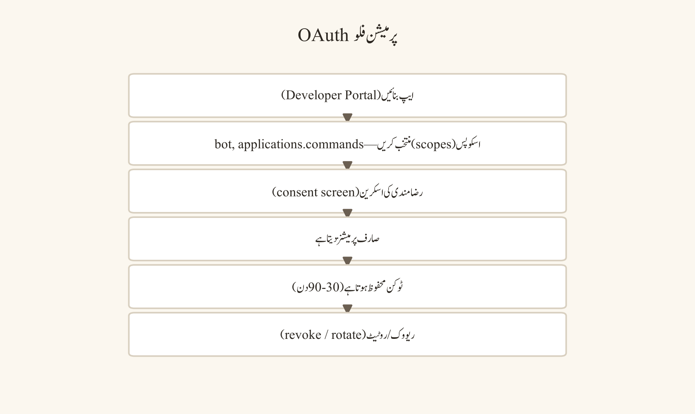
- app کا مقصد، ڈیولپر، ڈیٹا فلو اور درکار Discord صلاحیتوں کی دستاویز بنائیں۔
- scope-by-scope ضرورت کی میٹرکس بنائیں: کون سا فیچر کس scope کے بغیر ممکن نہیں۔
- پرمیشن prompt پر عین مطابق scopes، ہدف سرور اور رول/چینل کے اثرات دوبارہ چیک کریں۔
- مالک/ایڈمن کی منظوری اور ٹیسٹ کا نتیجہ ریکارڈ کریں۔
- محدود چینل/رول دائرے پر انسٹال کریں؛ وسیع پرمیشنز صرف استثنائی منظوری سے enable کریں۔
- انسٹالیشن کے بعد اصل رویہ، لاگس اور پرمیشن استعمال کی تصدیق کریں۔
- 30–90 دن میں scopes کا جائزہ لیں؛ غیر استعمال شدہ رسائی revoke کریں۔
- app کی ریٹائرمنٹ پر authorization revoke کریں، کریڈینشلز rotate کریں اور ڈیٹا حذف شدگی/retention کی تصدیق کریں۔
مثالیں
- deployment کا پیغام: پروجیکٹ ریپوزیٹری کامیاب deployment کا پیغام
#release-logمیں بھیجتی ہے؛ پیغام میں commit ID، ماحول، ٹائم زون اور rollback لنک ہوتا ہے، لیکن ٹوکن یا پرائیویٹ لاگ نہیں ہوتا۔ کلاس سرور میں حاضری کا سسٹم صرف مجموعی یاد دہانی بھیجتا ہے، انفرادی صحت/معذوری کا ڈیٹا نہیں۔ - کم پرومائز webhook URL: ایک webhook URL اتفاق سے سکرین شاٹ میں آ جاتا ہے؛ مالک اسے revoke/recreate کرتا ہے اور رسائی کا جائزہ لیتا ہے۔
- کم سے کم OAuth scopes: یاد دہانی app کو صرف منتخب announcements چینل میں پیغام بھیجنے کی پرمیشن چاہیے؛ اسے ممبر DMs، رول مینجمنٹ اور Administrator scope کی ضرورت نہیں۔ پروجیکٹ بوٹ کی سلیش کمانڈ
/task statusصرف پروجیکٹ چینل کے نظر آنے والے کامس دکھاتی ہے اور پرائیویٹ اسٹیک ہولڈر نوٹس چھپاتی ہے۔
عام غلطیاں
- webhook URL کو "عوامی نہیں ہے" سمجھ کر کوڈ ریپوزیٹری میں commit کرنا۔
- webhook کو حساس گفتگو کے چینل میں انسٹال کرنا۔
- سلیش کمانڈ کے ایرر میں secret/stack trace دکھانا۔
- OAuth consent screen کو پڑھے بغیر منظور کرنا۔
- Administrator پرمیشن سہولت کی وجہ سے grant کرنا۔
- app uninstall کے بعد authorization/کریڈینشلز فعال چھوڑ دینا۔
- کمانڈ آؤٹ پٹ میں غیر متعلقہ ممبر ڈیٹا شامل کرنا۔
- موبائل/ڈیسک ٹاپ رویہ فرض کر لینا۔
سیفٹی اور پرائیویسی نوٹس
secrets کو چیٹ، ٹکٹس، سکرین شاٹس، لاگس، براؤزر ہسٹری ایکسپورٹس اور عوامی ریپوزیٹریز میں اسٹور نہ کریں۔ webhook پیغامات میں ذاتی ڈیٹا، گریڈز، صحت کی معلومات، پرائیویٹ لنکس اور کریڈینشلز شامل نہ کریں۔ OAuth app کے ڈیٹا کلیکشن، retention، حذف شدگی، subprocessors اور واقعات کے جواب کا جائزہ لیں۔ کم پرومائز ہونے کے شبے پر secret rotate/revoke کریں اور متاثرہ پیغامات/ایکشنز کا آڈٹ کریں۔
پریکٹس ٹاسک
ایک ٹیسٹ سرور میں محفوظ webhook اور ایک سلیش کمانڈ ڈیزائن کریں۔ webhook کے لیے چینل، ٹیمپلیٹ، secret ہینڈلنگ، ٹیسٹ کیسز اور rotation پلان لکھیں۔ سلیش کمانڈ کے لیے پیرامیٹرز، رول/چینل پابندیاں، آؤٹ پٹ fields، انکار کا رویہ اور fallback راستہ دستاویز کریں۔ OAuth میٹرکس میں ہر scope کے لیے ضرورت اور جائزے کی تاریخ شامل کریں۔
چیپٹر چیک لسٹ
- ☐ webhook URL اور کریڈینشلز secret ہینڈلنگ کے تحت ہیں۔
- ☐ پیغام/کمانڈ آؤٹ پٹ کم سے کم ضروری ڈیٹا دکھاتا ہے۔
- ☐ سلیش کمانڈ پرمیشنز اور validation ٹیسٹ ہوئے ہیں۔
- ☐ OAuth scopes ضرورت کی میٹرکس کے مطابق grant ہوئے ہیں۔
- ☐ Administrator/blanket پرمیشنز استثنائی اور منظور شدہ ہیں۔
- ☐ rotation، revocation، آڈیٹ اور rollback کا پلان دستاویز شدہ ہے۔
ایونٹس، فورم، اعلانات اور شرکت (Engagement)
مقصد
ایونٹس، فورم اور اعلانات سرور کو فعال رکھنے کے structured ٹولز ہیں۔ ایونٹ ممبران کو ایک وقت اور مقصد پر اکٹھا کرتا ہے؛ فورم سوالات کو موضوع کے لحاظ سے منظم کرتا ہے؛ اعلان اہم معلومات کو قابلِ اعتماد راستے سے پہنچاتا ہے۔ شرکت کا مقصد صرف زیادہ پیغامات نہیں؛ معنی خیز شرکت، جواب دیے گئے سوالات، شمولیت کی رسائی اور پائیدار ماڈریٹر ورک لوڈ ہے۔
پیشگی ضروریات
ایونٹ کا مقصد، ہدف audience، تاریخ/وقت/ٹائم زون، host/ماڈریٹر، رسائی کا انتظام، announcements چینل، فورم گائیڈلائنز، ٹیگز، ڈپلیکیٹ پالیکی، ایسکلیشن راستہ اور فالو اپ مالک تیار ہونا چاہیے۔ ایونٹس، فورم چینلز، announcements پرمیشنز، یاد دہانیاں اور متعلقہ فیچرز سرور اہلیت، کمیونٹی حیثیت، رول پرمیشنز، علاقہ، اکاؤنٹ شرائط اور موجودہ Discord پالیکی پر منحصر ہو سکتے ہیں۔
ڈیسک ٹاپ، ویب اور موبائل کے فرق
ڈیسک ٹاپ/ویب پر ایونٹ تفصیلات، فورم ٹیگز، پنز، تھریڈز اور announcements کنٹرولز اکثر کشادہ سیاق میں منظم ہوتے ہیں؛ موبائل پر نوٹیفیکیشنز، تھریڈ نیویگیشن اور لمبے فورم جائزے کمپیکٹ ہو سکتے ہیں۔ ایونٹ کی تخلیق، یاد دہانیاں، فورم کی دستیابی، announcements follow/نوٹیفیکیشنز اور چینل کی اقسام موجودہ پلیٹ فارم/ورژن پر تبدیل ہو سکتی ہیں۔ کسی فیچر کا بٹن دکھائی دینا اہلیت یا پرمیشن کی ضمانت نہیں؛ لائیو سیٹنگز اور رول رسائی کی تصدیق کریں۔
نمبر وار UI ورک فلو
ایونٹ ورک فلو
منصوبہ → اعلان → یاد دہانی → میزبانی → ماڈریشن → آرکائیو → فالو اپ۔ ہر مرحلے کا مالک اور آؤٹ پٹ واضح ہو۔ ایونٹ سے پہلے agenda، متوقع رویہ، رسائی کا آپشن، ریکارڈنگ/رضامندی کی پالیکی اور مدد کا راستہ متن میں شائع کریں۔ ایونٹ کے دوران host گفتگو کو موضوع پر رکھے، بگاڑ دار رویے کو نجی طور پر سنبھالے اور اہم فیصلے notes چینل میں لکھے۔ ایونٹ کے بعد خلاصہ، وسائل، ایکشن آئٹمز اور فیڈبیک کا راستہ پوسٹ کریں۔
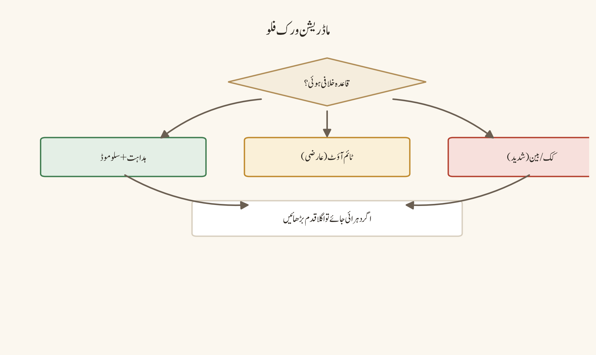
- ایونٹ کا ناپنے کے قابل مقصد، audience، تاریخ، شروع/ختم کا وقت، ٹائم زون اور host واضح کریں۔
- وائس/سٹیج/ٹیکسٹ/فورم فارمیٹ چنیں اور بیک اپ async راستہ پلان کریں۔
- agenda، شرکت کے قواعد، رسائی سپورٹ، ریکارڈنگ consent پالیکی اور ایمرجنسی رابطہ شائع کریں۔
- اعلان میں ایکشن، ڈیڈلائن، ٹائم زون، متعلقہ رول مینشن اور رجسٹریشن/join راستہ شامل کریں۔
- یاد دہانی کا شیڈول set کریں؛ زیادہ مینشنز سے بچنے کے لیے متعلقہ audience کو ٹارگٹ کریں۔
- host/ماڈریٹر رولز assign کریں: ویلکم، ٹائم کیپنگ، نوٹس، سیفٹی جواب اور تکنیکی مدد۔
- ایونٹ کے دوران حاضری/رسائی کے مسائل، چیٹ کے سوالات اور واقعات کو منظور شدہ راستے پر سنبھالیں۔
- اختتام پر فیصلے، وسائل، بغیر جواب سوالات اور اگلے ایکشن کا خلاصہ پوسٹ کریں۔
- ریکارڈنگ/transcript/نوٹس کو consent اور retention پالیکی کے مطابق محدود/منظور شدہ جگہ پر اسٹور کریں۔
- فیڈبیک اور شرکت کی میٹرکس کا جائزہ کر کے اگلا ایونٹ بہتر کریں۔
فورم ورک فلو
فورم ہر سوال یا موضوع کو آزاد پوسٹ میں منظم کرتا ہے۔ واضح عنوان، مفید ٹیگز، مختصر پہلی پوسٹ اور searchable جوابات ممبران کو ڈپلیکیٹ سوالات سے بچاتے ہیں۔ فورم کو کھلے چیٹ بورڈ کی طرح نہ بنائیں؛ مقصد، بند ہونے کا اصول اور ماڈریٹر اوورنشپ واضح کریں۔
- فورم کا مقصد اور قابلِ قبول پوسٹ کی اقسام لکھیں۔
- ٹیگز کو محدود، تفصیلی اور باہم قابلِ فہم رکھیں۔
- پہلی پوسٹ کے ٹیمپلیٹ میں مسئلہ، کوشش کردہ حل، کورس/پروجیکٹ سیاق اور مطلوبہ مدد واضح کریں۔
- ڈپلیکیٹ سوالات کو اصل پوسٹ سے link/redirect کریں؛ ڈپلیکیٹ حذف کرنے سے پہلے سیاق محفوظ کریں۔
- جوابات کو واضح، باوقار اور قابلِ تصدیق بنائیں؛ غیر مصدقہ دعوؤں کو mark کریں۔
- resolved/closed حیثیت کو موجودہ فورم کنٹرولز کے مطابق اپڈیٹ کریں۔
- اہم جواب کو pin/summary چینل میں cross-reference کریں۔
- پرانی پوسٹس کو archive/close پالیکی کے مطابق سنبھالیں۔
announcements ورک فلو
اعلان کا مقصد قابلِ اعتماد ایکشن کمیونیکیشن ہے۔ حقائق تصدیق کریں، صحیح چینل چنیں، صرف متعلقہ audience کو مینشن کریں، ایکشن/ڈیڈلائن/ٹائم زون واضح لکھیں اور pin/archive پالیکی کی پیروی کریں۔ "کل"، "ASAP" یا مبہم لنک الجھن پیدا کرتے ہیں۔
- حقیقت/ذریعہ اور منظور کرنے والے کی تصدیق کریں۔
- اعلان کا ایک لائن مقصد اور درکار ایکشن لکھیں۔
- تاریخ، ٹائم زون، ڈیڈلائن، مقام/لنک اور متوقع جواب واضح کریں۔
- متعلقہ چینل اور کم سے کم ضروری مینشن منتخب کریں۔
- تصویر/سکرین شاٹ ہو تو متن کا خلاصہ اور رسائی کا متبادل شامل کریں۔
- شائع کرنے سے پہلے موبائل/ڈیسک ٹاپ preview اور لنک پرمیشنز چیک کریں۔
- pin/archive کریں اور اہم اعلان کا مختصر تھریڈ/خلاصہ راستہ برقرار رکھیں۔
- تبدیلیوں یا درستگیوں کو اصل پیغام میں نظر آنے والے طریقے سے اپڈیٹ کریں۔
مثالیں
- ہفتہ وار پڑھائی کا سیشن: پڑھائی کا گروپ ہفتہ وار امتحان کی تیاری کا سیشن کرتا ہے۔ اعلان میں agenda، PKT/UTC وقت،
#questionsراستہ اور نوٹس کا وعدہ ہوتا ہے۔ ایک ممبر کم بینڈوڈتھ کی وجہ سے وائس join نہیں کر پاتا؛ host ٹیکسٹ تھریڈ میں سوالات قبول کرتا ہے اور سیشن کے بعد خلاصہ شیئر کرتا ہے۔ - عوامی Q&A ایونٹ: دو ممبران بحث کر رہے ہیں؛ ماڈریٹر انہیں تھریڈ یا نجی ماڈریٹڈ راستے پر لے جا کر ایونٹ کو ٹریک پر رکھتا ہے۔
- فورم کا واضح عنوان: اسائنمنٹ فورم میں "Question 3 help?" کے بجائے عنوان "Question 3: loop condition returns false" ہوتا ہے، ٹیگز
assignment-2اورdebuggingہوتے ہیں، اور طالبِ علم اپنا کوشش کردہ کوڈ محفوظ طریقے سے شیئر کرتا ہے۔ ماڈریٹر ڈپلیکیٹ پوسٹ کو اصل جواب سے جوڑ دیتا ہے، جس سے ہر ممبر کو ایک ہی حل مل جاتا ہے۔ - ڈیڈلائن کی تبدیلی: انسٹرکٹر ڈیڈلائن تبدیل کرتا ہے۔ اعلان
#announcementsمیں ذریعے، پرانی/نئی ڈیڈلائن، ٹائم زون، LMS لنک اور سوالات کے راستے کے ساتھ پوسٹ ہوتی ہے؛ انسٹرکٹر صرف@everyoneتب مینشن کرتا ہے جب تبدیلی ہر طالبِ علم پر لاگو ہو۔ ایونٹ یاد دہانی میں صرف متعلقہ@Event-Roleکو مینشن کیا جاتا ہے، پورے سرور کو نہیں۔
عام غلطیاں
- ایونٹ کو اعلان کیے بغیر کیلنڈر میں ڈال دینا۔
- ٹائم زون چھوڑ دینا۔
- ہر اعلان میں
@everyoneاستعمال کرنا۔ - فورم کے عنوانات مبہم رکھنا۔
- ڈپلیکیٹ سوالات کو بغیر لنک کیے حذف کرنا۔
- ایونٹ ریکارڈنگ کو consent کے بغیر شائع کرنا۔
- اعلان میں غیر مصدقہ افواہ شیئر کرنا۔
- pin کو مستقل آرکائیو سمجھ لینا۔
- موبائل/لنک پرمیشنز کا ٹیسٹ نہ کرنا۔
- شرکت کو صرف پیغاموں کی تعداد سے ناپنا۔
سیفٹی اور پرائیویسی نوٹس
ایونٹ رجسٹریشن، حاضری، ریکارڈنگز، transcripts، وائس چیٹ اور فورم پوسٹس میں ذاتی ڈیٹا آ سکتا ہے۔ consent، مقصد، رسائی اور retention واضح کریں۔ عوامی ایونٹ میں ممبر کی شناخت، مقام، معذوری کی سہولت یا نجی سوال expose نہ کریں۔ اعلان کے لنکس کو پرمیشن چیک کیے بغیر شیئر نہ کریں۔ ہر ایونٹ کے لیے ہراسانی/رپورٹ کا راستہ اور host کی دستیابی کا پلان ہو۔
پریکٹس ٹاسک
ایک کلاس ایونٹ کا شروع سے اختتام تک پلان بنائیں: مقصد، audience، agenda، تاریخ/ٹائم زون، رسائی آپشن، اعلان کا ڈرافٹ، یاد دہانی کا شیڈول، host/ماڈریٹر رولز، فورم پوسٹ ٹیمپلیٹ، واقعے کا راستہ اور ایونٹ کے بعد کا خلاصہ۔ پھر ایک ڈپلیکیٹ سوال کو فورم ورک فلو کے مطابق merge/redirect کریں۔
چیپٹر چیک لسٹ
- ☐ ایونٹ کا مقصد، ٹائم زون، host اور رسائی کا پلان واضح ہیں۔
- ☐ اعلان کے حقائق، audience، ایکشن اور ڈیڈلائن تصدیق شدہ ہیں۔
- ☐ فورم کے عنوانات، ٹیگز، ڈپلیکیٹ پالیکی اور بند ہونے کے قواعد متعین ہیں۔
- ☐ ریکارڈنگ/consent/retention پالیکی دستاویز شدہ ہے۔
- ☐ متعلقہ مینشنز اور نوٹیفیکیشن لوڈ کنٹرول شدہ ہیں۔
- ☐ آرکائیو، فالو اپ، فیڈبیک اور واقعات کے راستے تیار ہیں۔
سرور کی ترقی، برقراری اور تنازع کا انتظام
مقصد
سرور کی ترقی کو صرف ممبر کاؤنٹ سے ناپنا گمراہ کن ہے۔ صحت مند سرور میں ممبران معنی خیز شرکت کرتے ہیں، سوالات کے جوابات ملتے ہیں، نئے ممبران برقرار رہتے ہیں، ماڈریٹرز بروقت جواب دیتے ہیں، سیفٹی واقعات سنبھالے جاتے ہیں، رسائی کی رکاوٹیں کم ہوتی ہیں اور ممبر فیڈبیک سنجیدگی سے لی جاتی ہے۔ ترقی کا مقصد پائیدار قدر پیدا کرنا ہے، توجہ یا vanity میٹرکس نہیں۔
پیشگی ضروریات
سرور کا مقصد، ہدف audience، کامیابی کے اشارے، baseline میٹرکس، ماڈریٹر rota، فیڈبیک کا راستہ، تنازع پروٹوکول، سیفٹی واقعات کا عمل، رسائی کی پابندی اور ڈیٹا-retention/پرائیویسی قواعد تیار ہونے چاہئیں۔ Server Insights، اینالٹکس، discovery اور متعلقہ ٹولز اہلیت، سرور حیثیت، علاقہ، پلان، audience اور موجودہ Discord پالیکی پر منحصر ہو سکتے ہیں۔
ڈیسک ٹاپ، ویب اور موبائل کے فرق
ڈیسک ٹاپ/ویب اور موبائل پر شرکت کے پیٹرن الگ ہو سکتے ہیں؛ موبائل صارفین نوٹیفیکیشنز اور جلدی جوابات پر زیادہ منحصر ہو سکتے ہیں، ڈیسک ٹاپ صارفین لمبی بحث/فائلوں/وائس پر۔ Insights ڈیش بورڈز، discovery listing، ایونٹ/فورم میٹرکس اور ایکسپورٹ آپشنز موجودہ اہلیت اور پالیکی پر تبدیل ہو سکتے ہیں۔ اینالٹکس مجموعی ہونی چاہیے؛ انفرادی ممبر ایکٹیویٹی کو عوامی درجہ بندی یا نگرانی کی بنیاد نہ بنائیں۔
نمبر وار UI ورک فلو
ترقی اور برقراری کا ورک فلو
پہلے baseline واضح کریں: فعال شرکاء، جواب دیے گئے سوالات، نئے ممبر کی برقراری، ماڈریٹر جواب کا وقت، سیفٹی واقعات، رسائی فیڈبیک اور ممبر اطمینان۔ ہر میٹرک کا مقصد، مالک، جمع کرنے کا طریقہ، جائزے کی تعداد اور پرائیویسی کی حد لکھیں۔ ترقی کی مہم سے پہلے ماڈریشن کی گنجائش اور سیفٹی کنٹرولز ٹیسٹ کریں۔
- سرور کا مقصد اور آئیڈیل ممبر کا سفر واضح کریں: دریافت، join، سمجھ، شرکت، مدد حاصل کرنا، حصہ ڈالنا۔
- baseline میٹرکس منتخب کریں اور ذاتی ڈیٹا کو کم سے کم رکھنے والا جمع کرنے کا طریقہ چنیں۔
- نئے ممبر کی آن بورڈنگ، پہلے سوال کا جواب، رول selection اور مدد کے راستے کا ٹیسٹ کریں۔
- معنی خیز شرکت کو پیغاموں کی تعداد کے بجائے جواب دیے گئے سوالات، مفید حصہ داری، ایونٹ فالو تھرو اور ہم مرتبہ مدد سے ناپیں۔
- ماڈریٹر جواب کے وقت اور غیر حل شدہ آئٹمز کے backlog کا ہفتہ وار جائزہ لیں۔
- ممبر فیڈبیک کسی نامعلوم/کم رکاوٹ والے راستے سے جمع کریں اور تبدیلیوں کو نظر آنے والے طریقے سے بتائیں۔
- ترقی کی مہم سے پہلے انوائٹس، AutoMod، screening، رےڈ جواب، ماڈریٹر rota اور رسائی کا پلان ٹیسٹ کریں۔
- ترقی کے دوران میٹرکس اور واقعات کا بوجھ مانیٹر کریں؛ معیار گرنے پر مہم روک کر گنجائش کی مرمت کریں۔
- برقراری کی مداخلات کو چھوٹے تجربات کے طور پر چلائیں: office hours، ابتدائی تھریڈز، تسلیم، واضح موضوعات اور async شرکت۔
- ماہانہ جائزے میں جاری رکھنے، تبدیل کرنے یا روکنے کے فیصلے دستاویز کریں۔
تنازع پروٹوکول
تنازع عام ہو سکتا ہے؛ ہراسانی، دھمکیاں، ڈاکسنگ اور مربوط استحصال عام اختلاف نہیں۔ ماڈریٹر کا کام حقائق، قاعدہ اور نقصان کو الگ رکھ کر مناسب درجے کا جواب دینا ہے۔ عوامی بحث کو فوراً لاتنازعہ debate نہ بننے دیں۔
- عوامی بحث کو پرسکون pause یا عارضی سلو موڈ/تھریڈ راستے سے مستحکم کریں۔
- متعلقہ قاعدہ اور مشاہدہ شدہ رویہ پہچانیں؛ نیت کے بارے میں مفروضے سے بچیں۔
- فریقوں کو نجی/ماڈریٹڈ راستہ، ٹھنڈا ہونے کا وقت یا structured گفتگو کا آپشن دیں۔
- ثبوت، ٹائم سٹیمپس، سیاق، پچھلے واقعات اور متاثرہ ممبران کا جائزہ لیں۔
- شدت، نقصان، نیت، دہراؤ اور کمیونٹی اثر کے مطابق مناسب فیصلہ لیں۔
- فیصلہ اور وجہ ملوث فریقوں کو واضح بتائیں؛ عوامی اپڈیٹ صرف ضروری سطح پر دیں۔
- اپیل کا راستہ اور اگلے جائزے کی تاریخ پیش کریں۔
- پیٹرن کو روکنے کے لیے قواعد، چینل ڈیزائن، آن بورڈنگ، AutoMod یا ماڈریٹر ٹریننگ بہتر کریں۔
مثالیں
- 500 ممبران والا کلب: پروگرامنگ کلب کا ممبر کاؤنٹ 500 تک پہنچ جاتا ہے لیکن Q&A کے جوابات 72 گھنٹے لیٹ آتے ہیں اور نئے ممبران پہلے ہفتے میں چھوڑ جاتے ہیں۔ مالک ترقی کی مہم روکتا ہے، رضاکارانہ office hours شروع کرتا ہے، ابتدائی FAQ فورم بناتا ہے اور جواب کا ہدف 24 گھنٹے set کرتا ہے۔
- چھوٹا لیکن صحت مند سرور: ایک چھوٹا کلاس سرور 35 ممبران کے ساتھ صحت مند ہے کیونکہ ہر اسائنمنٹ سوال کا جواب، واضح رولز اور باوقار ماڈریشن موجود ہے؛ مالک صرف کاؤنٹ بڑھانے کے دباؤ میں عوامی discovery enable نہیں کرتا۔
- کوڈ ریویو کا اختلاف: دو طالبِ علم کوڈ ریویو پر سخت اختلاف کرتے ہیں۔ ماڈریٹر ذاتی حملے روک کر ثبوت پر مبنی تنقید کا ٹیمپلیٹ اور تھریڈ راستہ دیتا ہے۔
- targeted ہراسانی: کسی ممبر نے targeted ہراسانی کی؛ ماڈریٹر عوامی debate بند کر کے ثبوت محفوظ رکھتا ہے، ٹائم آؤٹ/بین اور مدد کے راستے پر عمل کرتا ہے۔
عام غلطیاں
- ممبر کاؤنٹ کو کامیابی کا اکیلا اشارہ بنانا۔
- ترقی کو ماڈریشن گنجائش سے پہلے دھکیلنا۔
- insights سے انفرادی درجہ بندی بنانا۔
- جواب نہ دیے گئے سوالات کو نظر انداز کرنا۔
- تنازع کو صرف "بحث نہ کرو" کہہ کر بند کرنا۔
- عوامی رسوائی۔
- ماڈریٹر کا طرف لینا۔
- ثبوت کے بغیر حتمی نتیجہ۔
- فیڈبیک جمع کر کے نظر آنے والی کارروائی نہ کرنا۔
- رسائی کو ترقی کے بعد سوچنا۔
سیفٹی اور پرائیویسی نوٹس
میٹرکس، فیڈبیک فارمز، واقعات کی رپورٹس اور اینالٹکس ایکسپورٹس کو محدود رسائی میں رکھیں۔ ممبر نام، DMs، معذوری کے انکشافات، مقام، شناخت، صحت کی معلومات اور نجی رویے کو عوامی ڈیش بورڈ میں شامل نہ کریں۔ ترقی کی مہم کے لیے انوائٹ لنکس traceable/revocable بنائیں۔ تنازع کے ریکارڈز حقیقت پسندانہ اور کم سے کم ضروری ہوں؛ حساس تفصیلات کو عوامی چینل میں زیرِ بحث نہ لائیں۔
پریکٹس ٹاسک
اپنے سرور کے لیے چھ میٹرکس کا ہیلتھ ڈیش بورڈ ڈرافٹ کریں: معنی خیز شرکت، جواب ریٹ، برقراری، ماڈریٹر جواب کا وقت، سیفٹی واقعات اور رسائی فیڈبیک۔ ہر میٹرک کے لیے مقصد، پرائیویسی کی حد، مالک، جائزے کی تعداد اور ایکشن ٹرگر لکھیں۔ پھر ایک عوامی اختلاف کے لیے تنازع ڈیسیژن ٹری بنائیں۔
چیپٹر چیک لسٹ
- ☐ کامیابی کی میٹرکس ممبر کاؤنٹ سے وسیع تر ہیں۔
- ☐ میٹرکس مجموعی، پرائیویسی محفوظ اور قابلِ عمل ہیں۔
- ☐ نئے ممبر کا سفر اور جواب کے اہداف ٹیسٹ شدہ ہیں۔
- ☐ ترقی سے پہلے سیفٹی/ماڈریشن/رسائی کی گنجائش تیار ہے۔
- ☐ تنازع پروٹوکول حقیقت پسندانہ، مناسب درجے کا اور اپیل سے آگاہ ہے۔
- ☐ فیڈبیک کے نتائج اور سسٹم میں بہتری دستاویز شدہ ہیں۔
بیک اپ، ایکسپورٹ کی حدود اور ملکیت کی منتقلی
مقصد
سرور کی برقراری کا مطلب صرف Discord اکاؤنٹ میں لاگ اِن رکھنا نہیں۔ رولز، پرمیشنز، قواعد، ماڈریٹر رابطے، واقعات کی ہسٹری، ایونٹ پلانز، بوٹ inventory اور ملکیت کے جانشین کو منظور، محفوظ اور ایکسیس کنٹرول شدہ سسٹم میں برقرار رکھنا پڑتا ہے کیونکہ Discord ہر سرور حالت کا سیدھا ون کلک مکمل بیک اپ فراہم نہیں کرتا۔ بیک اپ اور منتقلی کا مقصد علم کے نقصان، ایک شخص پر انحصار اور ایمرجنسی کے الجھنے کو کم کرنا ہے۔
پیشگی ضروریات
مالک/ایڈمن کی شناخت، منظور شدہ دستاویزی ریپوزیٹری/ڈرائیو، ایکسیس کنٹرول پالیکی، retention شیڈول، ماڈریٹر/رابطہ فہرست، رول-پرمیشن میٹرکس، بوٹ/انٹیگریشن inventory، واقعات کا رجسٹر، ایونٹ کیلنڈر اور جانشینی کا پلان تیار ہونا چاہیے۔ منتقلی سے پہلے وصول کنندہ کی شناخت، سیکیورٹی کا موقف، 2FA/ریکیوری کی تیاری اور ذمہ داریاں تصدیق کریں۔
ڈیسک ٹاپ، ویب اور موبائل کے فرق
Discord کی سیٹنگز، رولز، چینلز، پیغامات، پنز، فورم پوسٹس، آڈٹ انٹریز اور انٹیگریشنز کی الگ الگ ایکسپورٹ/نمائش کی حدود ہو سکتی ہیں؛ کوئی ایک ہی ایکسپورٹ ہر حالت، پرمیشن ہسٹری، حذف شدہ مواد یا بوٹ کنفیگریشن کو restore نہیں کرتا۔ ڈیسک ٹاپ/ویب اور موبائل پر سیٹنگز کا جائزہ اور ایکسپورٹ سے متعلق آپشنز مختلف ہو سکتے ہیں۔ پلیٹ فارم پالیکی، retention، اکاؤنٹ حیثیت اور فیچر اہلیت تبدیل ہو سکتی ہے؛ بیک اپ پلان کو موجودہ UI یا فرض شدہ ایکسپورٹ صلاحیت پر منحصر نہ کریں۔
نمبر وار UI ورک فلو
بیرونی سطح پر برقرار رکھنا (Maintain externally)
قواعد/ورژن ہسٹری، رول/پرمیشن میٹرکس، ماڈریٹر رابطے، واقعات کا رجسٹر، ایونٹ کیلنڈر، بوٹ inventory اور ملکیت کی جانشینی کے پلان کو structured بیرونی ریکارڈز میں رکھیں۔ ہر ریکارڈ کا مالک، آخری جائزے کی تاریخ، ایکسیس گروپ، retention مدت اور اگلا ایکشن ہو۔
- اہم سرور علم کی inventory بنائیں: مقصد، audience، قواعد، چینلز، رولز، پرمیشنز، رابطے، واقعات، ایونٹس، بوٹس، کریڈینشلز کی جگہیں اور ریکیوری کے قدم۔
- ہر آئٹم کے لیے مستند بیرونی جگہ چنیں؛ Discord پن/پیغام کو اکیلا ذریعہ نہ بنائیں۔
- ایکسیس گروپس واضح کریں: مالک، ایڈمنز، ماڈریٹرز، پروجیکٹ لیڈز اور read-only جائزہ لینے والے۔
- ورژن ہسٹری، تبدیلی کا مالک، منظوری کی تاریخ اور rollback نوٹ برقرار رکھیں۔
- حساس secrets کو دستاویز کے اندر plain text میں نہ لکھیں؛ صرف منظور شدہ secret manager/حوالہ ریکارڈ کریں۔
- بیک اپ کو شیڈولڈ وقفے پر جائزہ/اپڈیٹ کریں اور restoration ٹیسٹ پلان بنائیں۔
- retention/حذف شدگی پالیکی کے مطابق پرانے ورژنز کو archive یا محفوظ طریقے سے حذف کریں۔
- بیک اپ کی رسائی اور تکمیل کو سہ ماہی یا بڑی تبدیلی کے بعد آڈیٹ کریں۔
ملکیت کی منتقلی (Ownership transfer)
ملکیت کی منتقلی صرف آئیکن یا اکاؤنٹ کی تبدیلی نہیں؛ احتساب، سیکیورٹی، رسائی کا جائزہ اور علم کی منتقلی ہے۔ وصول کنندہ کو سرور کا مقصد، قواعد، سیفٹی کی ذمہ داریاں، واقعات کا راستہ، پرائیویسی کی توقعات، بوٹ انحصار اور rollback کی ذمہ داریاں سمجھائیں۔
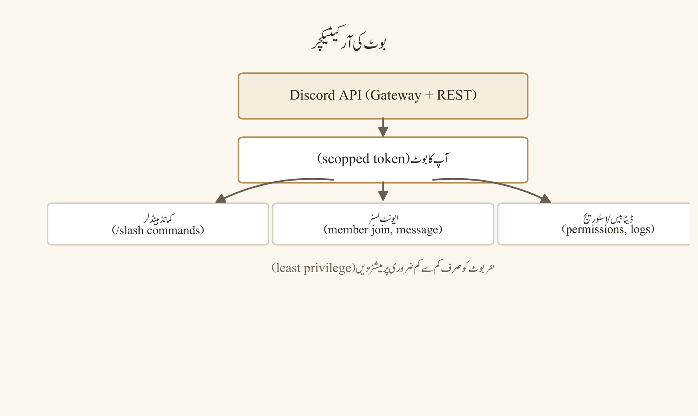
- وصول کنندہ کی شناخت اور اجازت کی تصدیق کریں؛ out-of-band تصدیق استعمال کریں۔
- وصول کنندہ کی اکاؤنٹ سیکیورٹی، ریکیوری طریقہ اور 2FA کی تیاری چیک کریں؛ کریڈینشلز شیئر نہ کریں۔
- ذمہ داریاں، فیصلے کا اختیار، ماڈریشن کے معیارات، پرائیویسی کے فرائض اور ایسکلیشن رابطے سمجھائیں۔
- موجودہ مالک/ایڈمن رولز، چینل پرمیشنز، انوائٹس، webhooks، بوٹس اور بیرونی انٹیگریشنز کا آڈیٹ کریں۔
- بیرونی ریکارڈز کی رسائی وصول کنندہ کو منظور شدہ گروپ کے ذریعے دیں؛ secrets علیحدہ سے rotate/transfer کریں۔
- ٹیسٹ ہینڈ اوور کریں: وصول کنندہ اعلان، رول تبدیلی، واقعے کا جواب اور بیک اپ restore کی پروسیڈر انجام دے۔
- منتقلی کی تاریخ، منظور کرنے والا، چیک لسٹ، باقی خطرات اور اگلے جائزے کی تاریخ دستاویز کریں۔
- پرانے مالک کی رسائی کو پالیکی کے مطابق ہٹائیں، کم کریں یا وقت کے ساتھ محدود رکھیں; یتیم ایڈمن اکاؤنٹ نہ چھوڑیں۔
- ممبران کو ضروری عملی اپڈیٹ دیں؛ نجی سیکیورٹی تفصیلات عوامی طور پر اعلان نہ کریں۔
مثالیں
- سمسٹر کا اختتام: کورس سرور کا مالک سمسٹر کے اختتام پر غیر دستیاب ہو جاتا ہے۔ منظور شدہ ڈرائیو میں قواعد v3، رول میٹرکس، TA رابطے، AutoMod قواعد کی فہرست، بوٹ inventory اور واقعات کا لاگ موجود ہوتے ہیں؛ نیا مالک دو گھنٹوں میں سرور کی عملی حالت سمجھ کر ماڈریٹر rota بحال کرتا ہے۔
- نامکمل پن ہسٹری: Discord پن ہسٹری نامکمل ہے، لیکن بیرونی ایونٹ کیلنڈر اور ملکیت کے پلان سے سالانہ سوسائٹی ایونٹ کا عمل زندہ رہتا ہے۔
- سوسائٹی کا نیا صدر: سٹوڈنٹ سوسائٹی کا صدر بدلتا ہے۔ ملکیت منتقل کرنے سے پہلے آؤٹ گوئنگ/اِنکمنگ افسران کا اجلاس ہوتا ہے، 2FA تصدیق ہوتی ہے، ایڈمن رولز کا جائزہ لیا جاتا ہے، ایونٹ بوٹ کا maintainer بدلتا ہے اور پرانے صدر کی ایڈمن رسائی کورس پالیکی کے مطابق ہٹائی جاتی ہے۔
- پروجیکٹ lead کا چھوڑنا: ایک پروجیکٹ میں lead چھوڑتا ہے؛ بیک اپ lead بیرونی ڈیسیژن لاگ اور ریپوزیٹری رسائی کی بدولت کام جاری رکھتا ہے۔
عام غلطیاں
- Discord کو مکمل بیک اپ سمجھ لینا۔
- پنز کو مستند ریکارڈ بنا لینا۔
- secrets کو بیک اپ دستاویز میں پیسٹ کرنا۔
- وصول کنندہ کی شناخت/2FA تصدیق نہ کرنا۔
- پرانے مالک کی رسائی غیر معینہ رکھنا۔
- بوٹ/webhook/انوائٹ کی صفائی بھول جانا۔
- منتقلی کے بعد اپیل اور واقعات کے رابطے اپڈیٹ نہ کرنا۔
- حساس ریکارڈز کو عوامی ڈرائیو/شیئر لنک پر رکھنا۔
- restoration ٹیسٹ نہ کرنا۔
سیفٹی اور پرائیویسی نوٹس
بیک اپ اور منتقلی کے ریکارڈز میں ذاتی ڈیٹا، واقعات کا ثبوت، طالبِ علم کی معلومات، نجی پیغامات، کریڈینشلز، ٹوکنز اور قانونی دستاویزات آ سکتے ہیں۔ منظور شدہ اینکرپٹڈ/ایکسیس کنٹرول شدہ اسٹوریج، least privilege، آڈٹ لاگ، retention/حذف شدگی کا شیڈول اور breach جواب استعمال کریں۔ ملکیت کی منتقلی کے دوران کریڈینشلز rotate کریں، شیئرڈ اکاؤنٹس سے بچیں اور وصول کنندہ کو سیکیورٹی کی ذمہ داری رسمی طور پر سونپیں۔
پریکٹس ٹاسک
اپنے سرور کے لیے برقراری کا پیکٹ بنائیں: قواعد/ورژن ہسٹری، رول-پرمیشن میٹرکس، ماڈریٹر رابطے، واقعات کا رجسٹر، ایونٹ کیلنڈر، بوٹ inventory، secret-reference پالیکی، ملکیت کی جانشینی کا پلان اور منتقلی کی چیک لسٹ۔ پھر ایک ٹیبل ٹاپ ہینڈ اوور کریں جس میں وصول کنندہ نے اعلان، پرمیشن آڈیٹ، واقعے کا ایسکلیشن اور پرانے مالک کی رسائی کی صفائی انجام دی ہو۔
چیپٹر چیک لسٹ
- ☐ اہم علم Discord کے بغیر بیرونی طور پر برقرار ہے۔
- ☐ ہر ریکارڈ کا مالک، ایکسیس گروپ اور retention کا اصول ہے۔
- ☐ secrets plain-text بیک اپ میں نہیں ہیں۔
- ☐ وصول کنندہ کی شناخت، سیکیورٹی اور 2FA تصدیق شدہ ہیں۔
- ☐ ایڈمن، بوٹ، webhook، انوائٹ اور رول رسائی آڈیٹ شدہ ہیں۔
- ☐ ٹیسٹ ہینڈ اوور، پرانے مالک کی صفائی اور جانشینی کا جائزہ دستاویز شدہ ہے۔
حصہ 7 — عملی طالبِ علم اور ٹیم ورک فلو
آن لائن کلاس سرور
مقصد
آن لائن کلاس سرور سیکھنے کے نظم و نسق، ہم درسی مدد، اعلانات، سوال و جواب، گروپ ورک اور آفس آورز کو ایک متوقع جگہ پر رکھتا ہے۔ یہ LMS، گریڈ بک، سرکاری سبمیشن سسٹم یا ادارتی ریکارڈ کا خودکار متبادل نہیں ہے۔ اچھا کلاس سرور طلبہ کو رہنمائی، رسائی اور مدد فراہم کرتا ہے اور استاد/ایڈمن کو پرائیویسی، جائزے کی سالمیت اور حدود برقرار رکھنے میں مدد دیتا ہے۔
پیشگی ضروریات
کورس کا مقصد، داخل شدہ سامعین/رسائی کی فہرست، نصاب، جائزے کی پالیسی، سرکاری سبمیشن/گریڈنگ کا راستہ، استاد/ایڈمن فہرست، ماڈریٹر/TA ذمہ داریاں، رسائی کا وعدہ، ریکارڈنگ/رضامندی کی پالیسی، رپورٹنگ کا راستہ اور رٹینشن کے قواعد تیار ہونے چاہئیں۔ سرور سیٹنگز تبدیل کرنے سے پہلے ادارے/استاد سے منظوری لیں۔
ڈیسک ٹاپ، ویب اور موبائل کے فرق
ڈیسک ٹاپ/ویب پر چینل کا ڈھانچہ، فائلیں، وائس/اسکرین شیئر اور ماڈریشن کا جائزہ کشادہ لے آؤٹ میں آسان ہوتا ہے؛ موبائل پر نوٹیفکیشنز، فوری جوابات اور وائس کنٹرولز نمایاں ہوتے ہیں۔ کلاس سرور کے فیچرز، فائل کی حدود، وائس/ویڈیو کی صلاحیتیں، ریکارڈنگ/کیپشنز، رولز، کمیونٹی سیٹنگز اور انٹیگریشنز ڈیوائس، اکاؤنٹ، علاقہ، سبسکرپشن، ادارتی پالیسی اور موجودہ ڈسکارڈ اہلیت پر منحصر ہو سکتی ہیں۔ UI لیبلز اور دستیابی تبدیل ہو رہی ہے؛ سرکاری LMS/ادارتی سسٹمز کو مستند ماخذ رکھیں۔
نمبر وار UI ورک فلو
64.1 کم سے کم چینلز
کم سے کم چینلز کا مقصد ہر طالبِ علم کو واضح راستہ دینا ہے، نہ کہ ہر موضوع کے لیے الگ چینل بنا دینا۔ اعلانات یکطرفہ اہم اپڈیٹس کے لیے، نصاب/ریسورسز مستند لنکس کے لیے، لیکچر کے سوالات عوامی سیکھنے کے لیے، اسبائنمنٹس ہدایات اور وضاحت کے لیے، گروپ ورک تعاون کے لیے، آفس آورز مدد کے لیے، اور تکنیکی مدد تک رسائی کے مسائل کے لیے استعمال ہونے چاہئیں۔
- کورس کے سیکھنے کے نتائج اور طالبِ علم کے سفر کا نقشہ بنائیں: تعارف، لیکچر، سوال، اسبائنمنٹ، گروپ ورک، مدد، رائے۔
- سفر کے ہر مرحلے کے لیے ایک بنیادی چینل مختص کریں اور چینل کا مقصد/موضوع لکھیں۔
- اعلانات کو صرف پڑھنے کے قابل یا کنٹرولڈ بھیجنے والی پرمیشنز پر رکھیں؛ متعلقہ رول مینشن پالیسی متعین کریں۔
- نصاب/ریسورسز چینل میں سرکاری لنکس، ورژن/تاریخ اور مستند ماخذ واضح کریں۔
- لیکچر سوال و جواب کو عوامی، تلاش کے قابل تھریڈ/فورم یا چینل میں منظم کریں؛ دوہرائے جانے والے سوالات کو ملا/ریڈائریکٹ کریں۔
- اسبائنمنٹ چینل میں ہدایات، ڈیڈ لائن/ٹائم زون، سبمیشن کا راستہ، لیٹ پالیسی اور وضاحتی عمل پن کریں۔
- گروپ ورک چینلز کو ٹیم/رول پرمیشنز سے محدود کریں اور پروجیکٹ مخصوص فائل/فیصلے کی جگہ متعین کریں۔
- آفس آورز چینل/وائس روم کا شیڈول، قطار، میزبان، رسائی کا آپشن اور ریکارڈنگ پالیسی شائع کریں۔
- تکنیکی مدد والے چینل میں لاگ اِن، پرمیشنز، مائیکروفون/کیمرہ/اسکرین شیئر اور رسائی کے مسائل کے لیے محفوظ ٹربل شوٹنگ راستہ رکھیں۔
- ٹیسٹ اکاؤنٹ سے طالبِ علم، TA اور استاد کے رولز کا اصل تجربہ تصدیق کریں۔
64.2 استاد/ایڈمن کی ذمہ داریاں
استاد/ایڈمن صرف چینل بنانے والا نہیں ہوتا؛ اُسے رسائی کی فہرست، رول ایسائنمنٹ، اعلانات کا نظم و ضبط، آفس آورز کی حدود، جائزے کی سالمیت، پرائیویسی، ریکارڈنگ رضامندی، ماڈریشن کوریج اور ایسکلیشن کا راستہ سنبھالنا ہوتا ہے۔ TA کو صرف کام کے لیے ضروری پرمیشنز دیں؛ گریڈز یا حساس ریکارڈز کو کھلی چیٹ میں بحث نہ کریں۔
- داخل شدہ طلبہ، TA، استاد، مہمان اسپیکرز اور مبصرین کے قواعدِ رسائی متعین کریں۔
- رولز کو کم سے کم پرمیشن (least privilege) کے ساتھ دیں اور کورس کی اختتام/جائزہ کی تاریخ ریکارڈ کریں۔
- اعلانات کی منظوری، مینشن پالیسی، اصلاحی عمل اور آرکائیو کی جگہ قائم کریں۔
- جائزے کے سوالات، جوابوں کے لیک، سرقہ نگاری اور غیر مجاز تعاون کی پالیسی واضح کریں۔
- نجی گریڈنگ/رائے کو سرکاری محفوظ راستے پر رکھیں؛ ڈسکارڈ DM کو بطور ڈیفالٹ گریڈ چینل نہ بنائیں۔
- وائس/ویڈیو/ریکارڈنگ/کیپشن پالیسی، رضامندی، ٹرانسکرپٹ اسٹوریج اور رسائی کے متبادل شائع کریں۔
- ماڈریٹر/TA کا روسٹر، جواب کا ہدف، واقعے کا راستہ اور بیک اپ رابطہ برقرار رکھیں۔
- ہفتہ وار چینل/رول/پرمیشن آڈٹ اور طلبہ کی رائے کا جائزہ لیں۔
مثالیں
- 80 طلبہ والا کورس:
#announcementsپر صرف اِنسٹرکٹر/TA پوسٹ کرتے ہیں،#lecture-questionsفورم ٹیگز استعمال کرتا ہے،#assignmentsڈیڈ لائن اور LMS لنک پن کرتا ہے، اور#tech-helpڈیوائس کے مسائل سنبھالتا ہے۔ - موبائل پر مائیک کی پرمیشن: ایک طالبِ علم موبائل پر مائیک پرمیشن نہیں دے پاتا؛ TA OS پرمیشن چیک کرتا ہے، متبادل ٹیکسٹ آفس آور راستہ اور رسائی کی مداد بتاتا ہے۔
- گروپ پروجیکٹ کی پرائیویسی: گروپ پروجیکٹ چینلز صرف مختص ٹیم اور TA کو نظر آتے ہیں، جس سے غیر متعلقہ طلبہ کا ڈیٹا ظاہر نہیں ہوتا۔
- استاد کی وضاحت کی اشاعت: استاد اسبائنمنٹ کی وضاحت پوسٹ کرتا ہے اور پرانے ڈرافٹ کو نظر آنے والی اصلاح کے ساتھ اپڈیٹ کرتا ہے۔
- TA کا نجی رائے کا راستہ: TA طالبِ علم کی گریڈ کے بارے میں عوامی چینل میں بحث کرنے کے بجائے سرکاری نجی رائے کا راستہ استعمال کرتا ہے۔
- مہمان اسپیکر کی رسائی: مہمان اسپیکر کو ایونٹ مخصوص رول اور وقت بند چینل رسائی ملتی ہے، جو ایونٹ کے بعد ہٹا دی جاتی ہے۔
عام غلطیاں
- ڈسکارڈ کو LMS/گریڈ بک کا متبادل سمجھنا۔
- اعلانات میں مبہم ڈیڈ لائن یا "کل" لکھنا۔
- ہر طالبِ علم کو TA/ایڈمن رول دے دینا۔
- اسبائنمنٹ کے جوابات عوامی چینل میں جمع کرنا۔
- گریڈنگ کو DM میں غیر رسمی طریقے سے کرنا۔
- ریکارڈنگ رضامندی پالیسی کا نہ ہونا۔
- مہمان/پرانے طلبہ کی رسائی ہٹا نہ کرنا۔
- سوال و جواب کو غیر منظم سپیم بورڈ بنا دینا۔
- موبائل/کم بینڈوڈتھ والے طلبہ کے لیے async متبادل نہ دینا۔
سیفٹی اور پرائیویسی نوٹس
طالبِ علم کی شناخت، داخلہ، معذوری کی رعایت، گریڈز، حاضری، ریکارڈنگز، نجی سوالات اور ذاتی رابطے کی تفصیلات کو ضرورت-سے-معلوم (need-to-know) رسائی پر رکھیں۔ ریکارڈنگ/ٹرانسکرپٹ سے پہلے رضامندی اور ادارتی پالیسی چیک کریں۔ عوامی چینلز میں ذاتی حالات، طبی معلومات یا جائزے کی تفصیلات شیئر نہ کریں۔ سمجھی ہوئی استاد/TA اکاؤنٹ پر سیشن ریووک، کرڈینشلز تبدیل اور واقعے کے پروٹوکول کی پیروی کریں۔
پریکٹس ٹاسک
ایک خیالی کورس کے لیے سات چینلز کا ڈھانچہ، طالبِ علم/TA/استاد رول میٹرکس، اعلانات کا ٹیمپلیٹ، سوال و جواب کا قاعدہ، اسبائنمنٹ پوسٹ کا ٹیمپلیٹ، آفس آورز پالیسی اور پرائیویسی/ریکارڈنگ نوٹس ڈرافٹ کریں۔ ٹیسٹ اکاؤنٹ سے ہر رول کی رسائی تصدیق کریں اور نتائج ریکارڈ کریں۔
چیپٹر چیک لسٹ
- ☐ کورس کا مقصد، سامعین اور سرکاری سسٹمز کی حدود واضح ہیں۔
- ☐ کم سے کم چینلز کا مقصد اور پرمیشنز ٹیسٹ ہو چکے ہیں۔
- ☐ استاد/TA کے رولز کم سے کم پرمیشن پر ہیں۔
- ☐ اسبائنمنٹ، سوال و جواب اور اعلانات کے ورک فلوز دستاویزی شکل میں ہیں۔
- ☐ جائزے کی سالمیت، پرائیویسی، ریکارڈنگ/رضامندی اور رسائی کی پالیسی واضح ہے۔
- ☐ رسائی کا جائزہ، ماڈریشن روسٹر اور کورس کے اختتام کی صفائی شیڈول ہو چکی ہے۔
اسبائنمنٹ اور سوال و جواب کا ورک فلو
مقصد
اسبائنمنٹ اور سوال و جواب کا ورک فلو طلبہ کو ایک ہی قابلِ اعتماد ماخذِ حقیقت، واضح ڈیڈ لائنز، تلاش کے قابل جوابات اور منصفانہ نجی رائے کا راستہ دیتا ہے۔ عوامی سوال و جواب سے عام الجھن سب تک پہنچ جاتی ہے؛ نجی گریڈنگ/رائے سرکاری محفوظ چینل میں رہتی ہے۔ ورک فلو کا مقصد دوہرائے جانے والے سوالات کم کرنا، جوابات کا معیار بہتر بنانا اور جائزے کی سالمیت برقرار رکھنا ہے۔
پیشگی ضروریات
اسبائنمنٹ کی تفصیل، مستند سبمیشن کا راستہ، ڈیڈ لائن/ٹائم زون، گریڈنگ ربرک، لیٹ/ایکسٹینشن پالیسی، تعلیمی سالمیت کے قواعد، سوال و جواب چینل/تھریڈ پرمیشنز، پن/آرکائیو کا عمل، ماڈریٹر/TA کوریج اور نجی رائے کا راستہ تیار ہونا چاہیے۔ ڈسکارڈ کو مستند گریڈ بک یا سبمیشن ریپوزیٹری نہ سمجھیں۔
ڈیسک ٹاپ، ویب اور موبائل کے فرق
ڈسکارڈ کے تھریڈز، فورمز، پنز، ری ایکشنز، فائل اپ لوڈز، نوٹیفکیشنز اور سرچ ڈیسک ٹاپ/ویب/موبائل پر مختلف تجربہ دے سکتی ہیں۔ فائل کے سائز/قسم کی حدود، اپ لوڈ رٹینشن، تھریڈ کنٹرولز، پن کی حدود، اعلانات کی پرمیشنز اور نوٹیفکیشن کا رویہ موجودہ پلیٹ فارم، سرور سیٹنگز، اکاؤنٹ/سبسکرپشن اور پالیسی پر منحصر ہو سکتا ہے۔ UI لیبلز اور فیچرز تبدیل ہو سکتے ہیں؛ سرکاری LMS/ادارتی ریپوزیٹری کو حتمی ماخذ رکھیں۔
نمبر وار UI ورک فلو
65.1 اسبائنمنٹ کا ورک فلو
- اسبائنمنٹ چینل/فورم میں عنوان، مقصد، سیکھنے کا نتیجہ اور مستند ہدایات کا لنک پوسٹ کریں۔
- ڈیڈ لائن کو مکمل تاریخ، وقت اور ٹائم زون میں لکھیں؛ "آج رات" یا "کل" سے بچیں۔
- سبمیشن کا راستہ، قبول کی جانے والی فائل کی اقسام، نام کی روایت، گروپ/انفرادی قاعدہ اور لیٹ پالیسی واضح کریں۔
- ربرک/جائزے کے معیارات اور تعلیمی سالمیت کی توقعات لنک یا مختصر خلاصے میں شیئر کریں۔
- اہم پوسٹ کو پن/آرکائیو پالیسی کے مطابق نشان زد کریں اور تبدیلیوں کو نظر آنے والی اصلاحی نوٹ کے ساتھ اپڈیٹ کریں۔
- سوالات کو مخصوص عوامی سوال و جواب چینل/تھریڈ میں جمع کریں؛ سوال کرنے والے کو کوشش/سیاق و سباق شامل کرنے کا ٹیمپلیٹ دیں۔
- دوہرائے جانے والے سوالات کو اصل جواب سے لنک/ریڈائریکٹ کریں؛ حل شدہ جواب کو تلاش کے قابل عنوان/ٹیگ کے ساتھ نشان زد کریں۔
- عام وضاحت کو اسبائنمنٹ پوسٹ یا پن کی گئی FAQ میں یکجا کریں۔
- نجی گریڈنگ، ایکسٹینشنز، رعایتیں اور حساس رائے سرکاری محفوظ راستے پر نمٹیں۔
- ڈیڈ لائن کے بعد سبمیشن کی حالت، رائے کا راستہ اور اپیل/اصلاح کی پالیسی اعلان کریں۔
65.2 سوال و جواب کا ورک فلو
سوال و جواب کا مقصد تدریس کو پیمانے دینا ہے، ہر طالبِ علم کا نجی ٹیوشن چینل نہیں۔ عوامی جواب سے دوسرے طلبہ بھی مستفید ہوتے ہیں، لیکن حساس معلومات، گریڈز، معذوری کے انکلاف اور ذاتی مسائل کو عوامی نہ بنائیں۔
- سوال کے عنوان میں موضوع، اسبائنمنٹ/سوال نمبر اور مخصوص مسئلہ لکھیں۔
- پہلی پوسٹ میں کی گئی کوشش، عین وہی ایرر، متعلقہ سیاق و سباق اور محفوظ نمونہ شامل کریں۔
- TA/ممبر کا جواب باوقار، قابلِ تصدیق اور ماخذ سے جڑا ہوا بنائیں؛ صرف حتمی جواب ڈمپ نہ کریں جب سیکھنے کا مقصد عمل ہو۔
- فالو اپ کو اسی تھریڈ میں رکھیں؛ متوازی دوہرے تھریڈز کو ملا/ریڈائریکٹ کریں۔
- اصلاح/اپڈیٹ شدہ جواب میں اصلاحی نوٹ شامل کریں۔
- حل شدہ تھریڈ کو موجودہ کنٹرول کے مطابق بند/نشان زد کریں اور اہم حل کو FAQ/پن میں حوالہ دیں۔
- حساس مسئلے کا پتہ چلنے پر عوامی بحث روک کر سرکاری نجی راستہ فراہم کریں۔
- ہفتہ وار بے جواب/کم معیار کے سوالات کا جائزہ لے کر FAQ، لیکچر وضاحت یا اسبائنمنٹ اصلاح کا فیصلہ کریں۔
مثالیں
- اسبائنمنٹ 2 کی ڈیڈ لائن: ڈیڈ لائن جمعہ 18:00 PKT ہے اور سبمیشن LMS پر ہو گی۔ طالبِ علم
#assignment-2-qaمیں ایرر کے اسکرین شاٹ کے ساتھ سوال پوسٹ کرتا ہے؛ TA دوہرے سوال کو اصل تھریڈ سے جوڑتا ہے اور محفوظ کوڈ اسنیپٹ کے ساتھ جواب دیتا ہے۔ - ایکسٹینشن کی درخواست: ایک طالبِ علم ایکسٹینشن کی درخواست کرتا ہے؛ TA اُسے عوامی تھریڈ میں طبی/ذاتی تفصیل لکھنے کے بجائے سرکاری نجی عمل استعمال کرنے کو کہتا ہے۔
- تھریڈز کا ملاپ: تین طلبہ ایک ہی لوپ ایرر رپورٹ کرتے ہیں۔ TA ایک تفصیلی جواب پوسٹ کر کے دوسرے تھریڈز کو اُس سے جوڑ دیتا ہے، جس سے دہرائو کم ہوتا ہے۔
- پرائیویسی کی یاد دہانی: ایک طالبِ علم اپنے ہم جماعت کا ذاتی ای میل اسکرین شاٹ میں شامل کر دیتا ہے؛ TA تصویر ہٹا/بدل کر پرائیویسی کی یاد دہانی کرتا ہے اور محفوظ ریڈیکٹڈ مثال شیئر کرتا ہے۔
عام غلطیاں
- اسبائنمنٹ کی ہدایات کو متعدد متضاد پوسٹس میں رکھنا۔
- ڈیڈ لائن/ٹائم زون کا ابہام۔
- ڈسکارڈ اٹیچمنٹ کو سرکاری سبمیشن سمجھنا۔
- سوال و جواب میں صرف "سلائیڈ دیکھیں" کہنا۔
- دوہرائے جانے والے سوالات کو جواب کے بغیر ڈیلیٹ کرنا۔
- گریڈز کو عوامی چینل/DM میں بحث کرنا۔
- نجی رعایتی تفصیلات عوامی تھریڈ میں مانگنا۔
- جواب دیے گئے حل کو پن/تلاش کے قابل بنانا بھول جانا۔
- TA کے جواب کی ملکیت کا غیر متعین ہونا۔
سیفٹی اور پرائیویسی نوٹس
اسبائنمنٹ فائلوں میں طلبہ کے نام، IDs، رابطے کی تفصیلات، صحت/معذوری کی معلومات، نجی رائے اور کاپی رائٹ شدہ مواد ہو سکتا ہے۔ رسائی/رٹینشن پالیسی کی پیروی کریں، حساس فائلیں سرکاری منظور شدہ سسٹمز میں رکھیں اور عوامی سوال و جواب میں ریڈیکٹ کریں۔ تعلیمی غلط کام کے الزام کو عوامی مقدمے کا روپ نہ دیں؛ مخصوص اِنسٹرکٹر/سالمیت کے راستے کا استعمال کریں۔ ریکارڈنگ، اسکرین شاٹس اور اگلی جانب بھیجے گئے جوابات کی حدیں واضح کریں۔
پریکٹس ٹاسک
ایک اسبائنمنٹ پوسٹ اور اُس سے متعلق چار سوال و جواب تھریڈز ڈرافٹ کریں: عام وضاحت، دوہرا سوال، محفوظ ڈیبگنگ سوال اور حساس نجی مسئلہ۔ ہر اشیاء کے لیے عنوان، مطلوبہ فیلڈز، روٹنگ کا فیصلہ، پن/آرکائیو ایکشن، پرائیویسی کا برتاؤ اور جواب کا ذمہ دار لکھیں۔
چیپٹر چیک لسٹ
- ☐ اسبائنمنٹ کا ماخذ، ڈیڈ لائن/ٹائم زون اور سبمیشن کا راستہ واضح ہیں۔
- ☐ ربرک، سالمیت کے قواعد اور لیٹ/ایکسٹینشن کا عمل نظر آتا ہے۔
- ☐ عوامی سوال و جواب کا ٹیمپلیٹ اور دوہرے سوال کی روٹنگ پالیسی متعین ہیں۔
- ☐ حل شدہ جوابات تلاش کے قابل/پن شدہ/حوالہ دینے کے قابل ہیں۔
- ☐ نجی گریڈنگ، رعایتیں اور حساس رائے سرکاری محفوظ راستے پر ہیں۔
- ☐ فائلیں، اسکرین شاٹس، رٹینشن اور تعلیمی سالمیت کے پرائیویسی قواعد دستاویزی شکل میں ہیں۔
پروجیکٹ ٹیم سرور
مقصد
پروجیکٹ ٹیم سرور مواصلات، ٹاسک کے نظم و نسق، ڈیزائن پر بحث، فیصلوں کی تاریخ، خطرات کی پیروی اور ڈیمو کے نظم و نسق کو منظم ساخت دیتا ہے۔ یہ سورس ریپوزیٹری، اِیو ٹریکر، ڈاکومنٹ ڈرائیو یا پروجیکٹ مینجمنٹ سسٹم کا متبادل نہیں ہے؛ یہ اُن ٹولز کے لنکس، سیاق و سباق اور فوری نظم و نسق کے لیے مواصلات کی پرت ہے۔ اچھا پروجیکٹ سرور فیصلوں کو ذاتی یادداشت سے نکال کر جائزے کے قابل ریکارڈ میں رکھتا ہے۔
پیشگی ضروریات
پروجیکٹ چارٹر/دائرہ کار، تسلیم شدہ مصنوعات (deliverables)، سنگِ میل، رول کی ملکیت، ریپوزیٹری/ڈرائیو لنکس، اِیو ٹریکر، فیصلے کے ریکارڈ کا ٹیمپلیٹ، مواصلات کے اصول، میٹنگ کی ترتیب، اسٹیک ہولڈر کی رسائی، سیکیورٹی کی درجہ بندی اور ایسکلیشن کا راستہ تیار ہونا چاہیے۔ ٹیم ممبرز کو پتہ ہو کہ ڈسکارڈ میں کون سی بات مستند ہے اور کون سی صرف بحث ہے۔
ڈیسک ٹاپ، ویب اور موبائل کے فرق
ڈیسک ٹاپ/ویب پر کوڈ اسنیپٹس، فائلیں، تھریڈز، وائس/اسکرین شیئر اور انٹیگریشن پریویوز کشادہ ورک فلو کی مدد کرتے ہیں؛ موبائل فوری اپڈیٹس اور منظوریوں کے لیے مفید ہے لیکن لمبے ڈیزائن جائزے/فائل مینجمنٹ محدود ہو سکتے ہیں۔ بوٹ/انٹیگریشن کی دستیابی، فائل کی حدود، وائس/اسکرین شیئر کا معیار، چینل کی اقسام اور پرمیشنز موجودہ پلیٹ فارم، سرور سیٹنگز، اکاؤنٹ/سبسکرپشن اور بیرونی ٹول کی پالیسی پر منحصر ہیں۔ UI/فیچرز تبدیل ہو سکتے ہیں؛ ریپوزیٹری/ڈرائیو کو مستند ماخذ رکھیں۔
نمبر وار UI ورک فلو
66.1 تجویز کردہ رولز
رولز کو کام کی فنکشن اور رسائی کی ضرورت کے حساب سے ڈیزائن کریں: پروجیکٹ لیڈ نظم و نسق اور حتمی ایسکلیشن، ڈویلپرز/ڈیزائنر/تحقیق کرنے والے معاونین، جائزہ لینے والا معیار/سیکیورٹی رائے، اسٹیک ہولڈر ضرورت کے مطابق پڑھنا/اپڈیٹ رسائی، اور بوٹ/انٹیگریشن محدود آٹومیشن۔ ایک شخص متعدد رولز رکھ سکتا ہے لیکن روزمرہ اکاؤنٹ پر غیر ضروری ایڈمن پرمیشن نہ ہو۔
- پروجیکٹ کے مراحل اور ذمہ داریوں کا نقشہ بنائیں: دریافت، ڈیزائن، تعمیر، جائزہ، ڈیمو، اختتام۔
- ہر رول کے لیے مقصد، چینلز، پرمیشنز، فیصلے کے حقوق، ختم ہونے/جائزہ کی تاریخ اور مالک لکھیں۔
- پروجیکٹ لیڈ، معاون، جائزہ لینے والا، اسٹیک ہولڈر اور بوٹ رولز کو کم سے کم پرمیشن پر کنفیگر کریں۔
- حساس ڈیزائن، سیکیورٹی، کلائنٹ ڈیٹا اور کرڈینشلز والے چینلز کو ضرورت-سے-معلوم رسائی پر رکھیں۔
- مہمان/اسٹیک ہولڈر کی رسائی کو وقت بند اور مقصد بند بنائیں۔
- ٹیسٹ اکاؤنٹ سے معاون/جائزہ لینے والا/اسٹیک ہولڈر کے تجربے کی تصدیق کریں۔
- سنگِ میل/پروجیکٹ کے اختتام پر رولز ہٹائیں/آرکائیو کریں اور بیرونی رسائی کا جائزہ لیں۔
66.2 تجویز کردہ چینلز
دائرہ کار، ٹاسکس، ڈیسیژنز، ڈیزائن، کوڈ/مدد، میٹنگ نوٹس، رسک اور ڈیمو چینلز پروجیکٹ کو زندگی کے چکر کے مطابق منظم کرتے ہیں۔ ہر چینل کا ایک لائن مقصد اور متوقع مواد کی قسم ہو۔ تھریڈز کو مختصر عمر کے موضوع کی بحث کے لیے استعمال کریں؛ مستقل فیصلوں کو ڈیسیژن لاگ/ڈرائیو میں محفوظ کریں۔
scopeمیں چارٹر، اہداف، غیر اہداف، تسلیم شدہ مصنوعات اور مستند لنکس پن کریں۔#tasksمیں اِیو ٹریکر لنک، مالک، حالت، واجب الادا تاریخ اور انحصار کی روایت متعین کریں۔decisionsمیں فیصلے کے ریکارڈ کا ٹیمپلیٹ اور حتمی منظور شدہ فیصلوں کا انڈیکس رکھیں۔designمیں متبادلات، ٹریڈ آفز، خاکوں کی ٹیکسٹ وضاحتیں اور جائزہ لینے والے کی رائے جمع کریں۔code-helpمیں محفوظ اسنیپٹس، ایررز، ٹیسٹ نتائج اور ریپوزیٹری لنکس شیئر کریں؛ اسرار (secrets) ممنوع کریں۔meeting-notesمیں ایجنڈا، شرکا/رولز، فیصلے، ایکشن آئٹمز، مالک اور واجب الادا تاریخ پوسٹ کریں۔#risksمیں خطرہ، اثر، امکان، تخفیف، مالک اور جائزہ کی تاریخ ٹریک کریں۔demoمیں ریہرسل شیڈول، ماحول، ٹیسٹ ڈیٹا، پریزینٹر، فال بیک اور رائے کا راستہ متعین کریں۔- پرانے/بے کار چینلز کو آرکائیو/ڈیلیٹ پالیسی کے مطابق سنبھالیں۔
66.3 فیصلے کا ریکارڈ (Decision record)
ہر اہم فیصلے کا عنوان، تاریخ، مالک، جواز اور نتیجہ ریکارڈ کریں۔ فیصلے کے ریکارڈ میں متبادلات، ٹریڈ آفز، منظوریاں، جڑے ہوئے شواہد، نفاذ کا مالک، جائزہ کی تاریخ اور واپسی (rollback) کی شرط بھی ہو سکتی ہے۔ "ہم متفق ہیں" لکھنا کافی نہیں؛ مستقبل کے ٹیم ممبر کو سیاق و سباق ملنا چاہیے۔
- فیصلے کا عنوان اور تاریخ لکھیں۔
- مسئلہ/سیاق و سباق اور غیر اہداف متعین کریں۔
- آپشنز اور ٹریڈ آفز کو مختصر بلٹس میں موازنہ کریں۔
- منتخب آپشن، جواز، منظور کنندہ/مالک اور نفاذ کی ایکشن ریکارڈ کریں۔
- خطرات، رسائی/سیکیورٹی/پرائیویسی کا اثر اور واپسی کی شرط نوٹ کریں۔
- مستند ڈاکومنٹ/اِیو کا لنک شامل کریں اور ڈسکارڈ تھریڈ کو انڈیکس سے جوڑیں۔
- جائزہ کی تاریخ اور نتیجے والا فیلڈ بعد میں اپڈیٹ کریں۔
مثالیں
- طالبِ علم کی کیپ اسٹون ٹیم: لیڈ نظم و نسق والے چینلز سنبھالتا ہے، ڈویلپرز
#code-helpاور ریپوزیٹری لنکس استعمال کرتے ہیں، جائزہ لینے والا سیکیورٹی کے نتائج کو محدود#reviewمیں رکھتا ہے، اسٹیک ہولڈر صرف#demo-updatesاور منظور شدہ دستاویزات دیکھتا ہے۔ - بوٹ کی محدود رسائی: بوٹ بلڈ کی حالت پوسٹ کرتا ہے لیکن نجی API کلید والے چینل کی رسائی نہیں رکھتا۔
- ڈیٹا بیس کا انتخاب: ٹیم ڈیٹا بیس کے انتخاب پر بحث کرتی ہے۔ فیصلے کے ریکارڈ میں آپشنز، لیٹینسی، ہوسٹنگ ک خرچ، ٹیم کی واقفیت، پرائیویسی کا اثر اور منتخب آپشن کا جواز ہوتا ہے؛ صرف وائس کال کا زبانی اتفاق نہیں۔
- ڈیمو سے ایک دن پہلے: رسک چینل میں API بندھن کی نشاندہی ہوتی ہے، مالک فال بیک ڈیٹا سیٹ مختص کرتا ہے اور ڈیمو چینل میں ٹیسٹ نتیجہ پوسٹ کرتا ہے۔
عام غلطیاں
- ڈسکارڈ پیغامات کو پروجیکٹ کا واحد ریکارڈ بنا لینا۔
- فیصلوں کو وائس کال کے بعد کہیں لکھنا نہیں۔
- ہر ممبر کو ایڈمن دے دینا۔
- اسٹیک ہولڈر کو حساس چینلز دکھانا۔
- کوڈ/مدد میں ٹوکنز/اسکرین شاٹس شیئر کرنا۔
- ٹاسکس کو چینل چیٹ میں کھو دینا۔
- دوہرے چینلز سے ملکیت کا الجھنا۔
- پرانے رولز/رسائی ہٹا نہ کرنا۔
- صرف موبائل پر کیے گئے فوری فیصلوں کو مستند سمجھنا۔
سیفٹی اور پرائیویسی نوٹس
سورس کوڈ، کلائنٹ ڈیٹا، کرڈینشلز، ذاتی معلومات، غیر مطبوعہ تحقیق اور سیکیورٹی کے نتائج کو درجہ بندی کے مطابق تحفظ دیں۔ اسرار کو کوڈ اسنیپٹس، لاگز، اسکرین شاٹس یا بوٹ پیغامات میں ظاہر نہ کریں۔ مہمان/اسٹیک ہولڈر کی رسائی وقت بند ہو اور آف بورڈنگ کا جائزہ ہو۔ ریکارڈنگ/اسکرین شیئر سے پہلے رضامندی اور ڈیٹا کے ظہور کی جانچ کریں۔
پریکٹس ٹاسک
چار ہفتوں کے طالبِ علم پروجیکٹ کے لیے رولز، آٹھ چینلز کا ڈھانچہ، پرمیشن میٹرکس، فیصلے کے ریکارڈ کا ٹیمپلیٹ، میٹنگ نوٹ کا ٹیمپلیٹ، رسک رجسٹر اور ڈیمو چیک لسٹ بنائیں۔ ایک نمونہ فیصلے کو ڈسکارڈ تھریڈ سے مستند پروجیکٹ ڈاکومنٹ تک لنک کریں اور مہمان کی آف بورڈنگ کا منصوبہ لکھیں۔
چیپٹر چیک لسٹ
- ☐ پروجیکٹ کا دائرہ کار، مستند ٹولز اور ڈسکارڈ کی حدود واضح ہیں۔
- ☐ رولز کم سے کم پرمیشن اور وقت بند رسائی پر ہیں۔
- ☐ چینلز کا مقصد، مالک اور زندگی کا چکر متعین ہیں۔
- ☐ اہم فیصلے عنوان/تاریخ/مالک/جواز/نتیجے کے ساتھ ریکارڈ ہوئے ہیں۔
- ☐ ٹاسکس، رسک، میٹنگ نوٹس اور ڈیمو کے ورک فلوز جڑے ہوئے ہیں۔
- ☐ کوڈ، کرڈینشلز، اسٹیک ہولڈر ڈیٹا، ریکارڈنگ اور آف بورڈنگ کے پرائیویسی کنٹرول موجود ہیں۔
آفس آورز اور وائس روم کے آداب
مقصد
آفس آورز اور وائس رومز حقیقی وقت کی مدد، وضاحت اور تعلقات بنانے کے لیے مفید ہیں، لیکن انہیں متوقع، باوقار اور قابلِ رسائی بنانا پڑتا ہے۔ مقررہ وقت، قطار، میزبان، موضوع، رضامندی، فالو اپ نوٹس اور غیر ہم وقت (asynchronous) متبادل ممبرز کو مساوی موقع دیتے ہیں۔ وائس میں حصہ لینے کو لازمی ڈیفالٹ نہ بنائیں جب تک کہ ٹیکسٹ متبادل دستیاب نہ ہو۔
پیشگی ضروریات
شیڈول/ٹائم زون، روم کا مقصد، میزبان/ماڈریٹر، قطار کا طریقہ، متوقع برتاؤ، ریکارڈنگ/رضامندی پالیسی، رسائی کی مدد، تکنیکی مدد کا راستہ، پرائیویسی کی حدود، فالو اپ نوٹس کا مالک اور ایسکلیشن رابطہ تیار ہونا چاہیے۔ وائس/ویڈیو/کیپشنز/اسکرین شیئر کے فیچرز ڈیوائس، OS پرمیشنز، نیٹ ورک، اکاؤنٹ، سرور سیٹنگز اور موجودہ ڈسکارڈ اہلیت پر منحصر ہو سکتے ہیں۔
ڈیسک ٹاپ، ویب اور موبائل کے فرق
ڈیسک ٹاپ/ویب پر وائس کنٹرولز، اسکرین شیئر، شرکا کی فہرست، کیپشنز/ٹرانسکرپٹ سے متعلق آپشنز اور ماڈریٹر کنٹرولز اکثر کشادہ لے آؤٹ میں ہوتے ہیں؛ موبائل پر مائیک/کیمرہ، ڈیٹا کا استعمال، بیٹری اور پینل نیویگیشن نمایاں ہوتے ہیں۔ کیپشنز، ٹرانسکرپٹس، اسٹیج/وائس فارمیٹس، اسکرین شیئر پرمیشنز، ریکارڈنگ کا رویہ اور روم کی حدود موجودہ پلیٹ فارم/ورژن/پالیسی پر تبدیل ہو سکتی ہیں۔ UI لیبلز اور دستیابی کو حتمی وعدہ نہ سمجھیں؛ سیشن سے پہلے موجودہ کلائنٹ اور OS پرمیشنز ٹیسٹ کریں۔
نمبر وار UI ورک فلو
67.1 آفس آورز کا ورک فلو
- ہفتہ وار شیڈول، شروع/اختتام کا وقت، ٹائم زون، میزبان، بیک اپ میزبان اور چھٹی/منسوخی کا قاعدہ شائع کریں۔
- روم کا موضوع اور قابلِ قبول سوالات متعین کریں؛ نجی گریڈز/صحت/رعایت کے مسائل کو سرکاری نجی راستے پر بھیجنے کا قاعدہ واضح کریں۔
- قطار کا نظام منتخب کریں: ٹیکسٹ قطار، اسٹیج پر ہاتھ اٹھانا، ماڈریٹر کی زیرِ انتظام فہرست یا اپوائنٹمنٹ سلاٹ۔
- شروع سے پہلے مائیک/کیمرہ/اسکرین شیئر، کیپشنز/نوٹس آپشن، نیٹ ورک فال بیک اور رضامندی پالیسی چیک کریں۔
- میزبان شرکاء کا استقبال کرے، موضوع/وقت کی حد اور باوقار باری لینے کی وضاحت کرے۔
- بولنے والا اپنا نام/سیاق و سباق بتائے؛ میزبان غیر متعلقہ ضمنی گفتگو اور مداخلتوں کو سنبھالے۔
- اہم وضاحت، فیصلہ، ریسورس لنک اور ایکشن آئٹم کو لائیو نوٹس/ٹیکسٹ چینل میں ریکارڈ کریں۔
- ریکارڈنگ یا ٹرانسکرپٹ صرف دستاویزی مقصد، رضامندی، رسائی کے گروپ اور رٹینشن پالیسی کے ساتھ بنائیں۔
- اختتام پر بے جواب سوالات، فالو اپ کا مالک، ڈیڈ لائن اور غیر ہم وقت راستہ پوسٹ کریں۔
- سیشن کے بعد نوٹس صاف کریں، شائع/مناسب حد تک محدود کریں اور رائے کا جائزہ لیں۔
67.2 وائس روم کے آداب
وائس روم میں واضح موضوع، میوٹ کا نظم و ضبط، باری لینا، مختصر اپڈیٹس، رضامندی اور شمولیت پسند رہنمائی ضروری ہے۔ میزبان کسی کو بار بار عوامی طور پر درست یا شرمندہ نہ کرے۔ پس منظر کی آواز، گونج، کم بینڈوڈتھ اور زبان کے فرق کو تکنیکی/آدابی ایڈجسٹمنٹ سے سنبھالے۔ اسکرین شیئر پر نوٹیفکیشنز، نجی ٹیبز، پاس ورڈز، ٹوکنز اور ذاتی ڈیٹا چھپائیں۔
- جوائن کرنے سے پہلے روم کا موضوع اور متوقع حصہ داری چیک کریں۔
- مائیک بطور ڈیفالٹ میوٹ رکھیں، ضرورت پر ان میوٹ کریں اور گونج/آواز ٹیسٹ کریں۔
- مختصر بولیں؛ دوسروں کی بات مت کاٹیں اور میزبان کے اشارے کی پیروی کریں۔
- کیمرہ اختیاری ہو جب تک پالیسی/سیفٹی کی ضرورت نہ ہو؛ پس منظر اور دکھائی دینے والی معلومات چیک کریں۔
- اسکرین شیئر سے پہلے حساس ٹیبز، نوٹیفکیشنز، فائلیں اور کرڈینشلز بند/ریڈیکٹ کریں۔
- سوالات کو ٹیکسٹ چینل/تھریڈ میں بھی قبول کریں۔
- ریکارڈنگ کی درخواست پر مقصد، سامعین، اسٹوریج، رٹینشن اور رضامندی واضح کریں؛ رضامندی نہ ہونے پر متبادل نوٹس فراہم کریں۔
- میزبان رسائی کے مسئلے، ہراسانی یا سیفٹی کے خدشے پر سیشن روکے/ریڈائریکٹ کرے/ایسکلیٹ کرے۔
مثالیں
- کورس کا آفس آور: 12 طلبہ ٹیکسٹ قطار میں شامل ہوتے ہیں۔ میزبان ہر طالبِ علم کو پانچ منٹ کا سلاٹ دیتا ہے، اسبائنمنٹ سوال کی عوامی وضاحت نوٹس چینل میں لکھتا ہے اور گریڈ سے متعلق نجی مسئلے کو سرکاری فارم راستے پر بھیجتا ہے۔
- ٹیکسٹ کے ذریعے حصہ داری: ایک طالبِ علم مائیک استعمال نہیں کر سکتا؛ وہ ٹیکسٹ قطار اور کیپشنز/نوٹس کے ذریعے شامل ہوتا ہے۔
- ڈیزائن کا جائزہ: پروجیکٹ ٹیم وائس روم میں ڈیزائن کا جائزہ لیتی ہے؛ اسکرین شیئر سے پہلے میزبان خفیہ ٹیبز بند کرتا ہے اور میٹنگ کے نوٹس ٹیکسٹ میں شائع کرتا ہے۔
عام غلطیاں
- "وائس جوائن کرو ورنہ تم حصہ نہیں لے رہے" کہنا۔
- شیڈول/ٹائم زون نہ بتانا۔
- قطار کے بغیر زور سے بولنے والے ممبرز کا غلبہ۔
- ریکارڈنگ رضامندی پالیسی کا نہ ہونا۔
- اسکرین شیئر پر نجی نوٹیفکیشنز دکھانا۔
- صرف وائس والے فیصلوں کو نوٹس کے بغیر چھوڑ دینا۔
- کم بینڈوڈتھ والے ممبرز کے لیے ٹیکسٹ متبادل نہ دینا۔
- آفس آور کو کھلے مشورتی/گریڈ تنازعہ فورم کا روپ دینا۔
- ماڈریٹر کی غیر موجودگی میں روم کو بغیر انتظام چھوڑ دینا۔
سیفٹی اور پرائیویسی نوٹس
وائس گفتگو، ریکارڈنگز، ٹرانسکرپٹس، اسکرین شیئرز، چیٹ پیغامات اور شرکا کی فہرستیں ذاتی/حساس ڈیٹا رکھ سکتی ہیں۔ رضامندی، مقصد، رسائی، رٹینشن اور حذف کرنے کی پالیسی کی پیروی کریں۔ نجی گریڈز، معذوری/رعایت کی تفصیلات، صحت کی معلومات، مقام، شناخت کے دستاویزات اور کرڈینشلز عوامی روم میں بحث نہ کریں۔ دھمکی/خود کو نقصان/ڈاکسنگ کی صورتحال میں میزبان سیفٹی پروٹوکول اور مناسب ہنگامی/ادارتی راستہ اختیار کرے۔
پریکٹس ٹاسک
ہفتہ وار آفس آور پیکیج ڈرافٹ کریں: شیڈول/ٹائم زون، روم کا موضوع، قطار کا طریقہ، میزبان/بیک اپ رولز، آداب کا اعلان، رسائی کے متبادل، ریکارڈنگ/رضامندی کا بیان، اسکرین شیئر چیک لسٹ، نوٹس کا ٹیمپلیٹ اور منسوخی/فالو اپ ورک فلو۔ پھر ٹیسٹ وائس سیشن میں مائیک، میوٹ، اسکرین شیئر پرائیویسی اور ٹیکسٹ فال بیک کی تصدیق کریں۔
چیپٹر چیک لسٹ
- ☐ شیڈول، ٹائم زون، میزبان، بیک اپ اور منسوخی کا قاعدہ واضح ہے۔
- ☐ روم کا موضوع، قطار اور حصہ داری کے آداب شائع ہو چکے ہیں۔
- ☐ ٹیکسٹ/غیر ہم وقت رسائی کا متبادل دستیاب ہے۔
- ☐ ریکارڈنگ/رضامندی/رٹینشن پالیسی دستاویزی شکل میں ہے۔
- ☐ اسکرین شیئر پرائیویسی اور تکنیکی فال بیک ٹیسٹ ہو چکے ہیں۔
- ☐ نوٹس، فالو اپ مالکان، واقعے کا راستہ اور رائے کا لوپ تیار ہیں۔
فائل کا انتظام اور ورژن کا نظم و ضبط
مقصد
ڈسکارڈ فائل چیٹ کے لیے سہولت کا ذریعہ ہو سکتی ہے، لیکن مستند دستاویزات کے ذخیرے کے لیے ادارے کی منظور شدہ ڈرائیو/ریپوزیٹری استعمال کریں۔ فائل کے انتظام کا مقصد یہ ہے کہ ممبرز کو تازہ ترین منظور شدہ ورژن، ملکیت، تبدیلی کی تاریخ اور محفوظ رسائی فوراً سمجھ آ جائے۔ ورژن کا نظم و ضبط الجھن، دوہری اپ لوڈز، حادثاتی اوور رائٹ، پرانی ہدایات اور حساس فائل کے سامنے آنے کو کم کرتا ہے۔
پیشگی ضروریات
منظور شدہ اسٹوریج کی جگہ، فائل کے نام کی روایت، رول/چینل رسائی، مالک/جائزہ لینے والا، ورژن ہسٹری، ڈرافٹ/حتمی حالت، رٹینشن/حذف کرنے کی پالیسی، بیک اپ/بحال کرنے کا عمل، حساس ڈیٹا کی درجہ بندی اور سرکاری سبمیشن/ریپوزیٹری کے قواعد تیار ہونا چاہیے۔ ڈسکارڈ اپ لوڈ کی حدود، فائل ٹائپ کی پابندیاں، رٹینشن رویہ، پیش نظارہ، پرمیشنز اور انٹیگریشنز موجودہ پلیٹ فارم، سرور سیٹنگز، اکاؤنٹ/سبسکرپشن اور پالیسی پر منحصر ہو سکتی ہیں؛ UI/فیچرز تبدیل ہو سکتے ہیں۔
ڈیسک ٹاپ، ویب اور موبائل کے فرق
ڈیسک ٹاپ ایپ/ویب پر فائل کا پیش نظارہ، ڈریگ اینڈ ڈراپ، متعدد اپ لوڈز اور ریپوزیٹری لنکس نسبتاً آسان ہو سکتے ہیں؛ موبائل پر اپ لوڈ کا انتخاب، بڑی فائل کا برتاؤ، پیش نظارہ اور پرمیشنز مختلف تجربہ دیتے ہیں۔ ڈسکارڈ اٹیچمنٹس کو مستند آرکائیو، ورژن کنٹرول سسٹم یا رسائی کنٹرول شدہ ادارتی ڈرائیو نہ سمجھیں۔ لنک کی پرمیشنز، میعاد، ڈاؤن لوڈ کنٹرولز اور بیرونی ریپوزیٹری کی اہلیت موجودہ سسٹمز پر منحصر ہیں؛ لنک شیئر کرنے سے پہلے وصول کنندہ کی رسائی ٹیسٹ کریں۔
نمبر وار UI ورک فلو
68.1 نام کی روایت
ہموار نام سے ممبر فائل کا کورس، پروجیکٹ، دستاویز کی قسم، ورژن اور تاریخ فوراً سمجھ سکتا ہے۔ تجویز کردہ روایت:
Course_Project_DocumentType_v01_YYYY-MM-DD
مثال: CS101_TeamA_ReportDraft_v03_2026-09-23۔ ڈرافٹ، جائزہ، منظور شدہ اور حتمی حالت کو فائل کے نام یا منظور شدہ میٹا ڈیٹا میں واضح رکھیں۔ "final-final"، "new"، "latest" اور مبہم مخففات سے بچیں۔
68.2 فائل کا ورک فلو
- ہر دستاویز کے لیے مستند اسٹوریج کی جگہ اور مالک مختص کریں۔
- نام کی روایت لاگو کریں؛ دستاویز کی قسم، ورژن نمبر اور ISO تاریخ شامل کریں۔
- ڈرافٹ کو کام کرنے کی جگہ پر رکھیں؛ جائزہ/منظوری کی حالت میٹا ڈیٹا یا منظور شدہ فولڈر میں واضح کریں۔
- جائزہ لینے والے کی تبدیلیوں کو ٹریک شدہ ہسٹری/کمنٹ کے ذریعے جمع کریں؛ متوازی کاپیاں ملانے سے پہلے مالک تصدیق کرے۔
- منظور شدہ/حتمی ورژن کو صرف پڑھنے کے قابل یا کنٹرول شدہ رسائی والی جگہ پر نشان زد کریں اور لنک ڈسکارڈ چینل میں شیئر کریں۔
- ڈسکارڈ پر دوہری اٹیچمنٹ کے بجائے مستند لنک پوسٹ کریں؛ عارضی اٹیچمنٹ صرف سہولت اور پرمیشن پالیسی کے تحت ہو۔
- پرانے ورژنز کو آرکائیو کی جگہ میں رکھیں یا رٹینشن پالیسی کے مطابق حذف کریں؛ تازہ ترین انڈیکس/پن شدہ پوسٹ اپڈیٹ کریں۔
- حساس فائلوں کے لیے رسائی گروپ، ڈاؤن لوڈ پرمیشن، شیئرنگ کی پابندی اور رٹینشن کا فیصلہ تصدیق کریں۔
- لنک شیئر کرنے سے پہلے کم پرمیشن/ٹیسٹ اکاؤنٹ سے دیکھیں/ڈاؤن لوڈ پرمیشن ٹیسٹ کریں۔
- بڑی تبدیلی کے بعد ورژن ہسٹری، مالک، جائزہ لینے والا، منظوری کی تاریخ اور واپسی کی کاپی کا آڈٹ کریں۔
68.3 قواعد
- ڈرافٹ بمقابلہ حتمی: ڈرافٹ ترمیم کے لیے ہے؛ حتمی/منظور شدہ ورژن کا مالک، تاریخ اور حالت واضح ہو۔
- آرکائیو: پرانے ورژنز کو جان بوجھ کر آرکائیو میں رکھیں، بے ترتیب چینل اپ لوڈز میں نہیں۔
- دوہرائو کے بجائے لنکس: مستند لنک شیئر کریں؛ دوہری اپ لوڈز الجھن اور رسائی کا فرق پیدا کرتی ہیں۔
- حساس فائلیں: گریڈز، شناخت کے دستاویزات، صحت/معذوری کی معلومات، نجی رائے، کلائنٹ ڈیٹا اور کرڈینشلز محدود منظور شدہ سسٹمز میں رکھیں۔
- رٹینشن: کورس/پروجیکٹ کے اختتام، قانونی/ادارتی ضرورت اور پرائیویسی کے مقصد کے مطابق رٹینشن/حذف کرنے کا شیڈول ہو۔
- رسائی کا جائزہ: سابق ممبرز، مہمانوں، بوٹس اور پرانے رولز کی ڈاؤن لوڈ/دیکھنے کی رسائی باقاعدگی سے ہٹائیں۔
- تبدیلی کا کنٹرول: بڑی دستاویزی تبدیلی کا منظور کنندہ، جواز، تاریخ اور اثر ریکارڈ ہو۔
مثالیں
- ڈیزائن دستاویز: ٹیم ڈیزائن دستاویز کو
TeamA_DesignSpec_v04_2026-09-23کے نام سے منظور شدہ ڈرائیو میں رکھتی ہے اور#designمیں صرف لنک پوسٹ کرتی ہے۔ - پرانی اٹیچمنٹ: ایک ممبر پرانی اٹیچمنٹ ڈاؤن لوڈ کر کے تبدیلیاں کرتا ہے؛ جائزہ لینے والا تازہ ترین انڈیکس چیک کر کے اُسے منظور شدہ ورژن پر ریڈائریکٹ کرتا ہے۔
- کلاس کی اسبائنمنٹ: سبمیشن سرکاری LMS پر ہوتی ہے؛ ڈسکارڈ فائل صرف نمونہ/ٹیمپلیٹ ہے اور واضح طور پر
Sampleلیبل رکھتی ہے۔
عام غلطیاں
- "final-final" جیسے فائل نام۔
- ایک ہی فائل کی متعدد متضاد اپ لوڈز۔
- ڈسکارڈ اٹیچمنٹ کو واحد ماخذ بنا لینا۔
- پرانا لنک پن پر رہنے دینا۔
- ڈرافٹ کو حتمی سمجھنا۔
- حساس فائل عوامی چینل میں اپ لوڈ کرنا۔
- لنک کی پرمیشنز ٹیسٹ نہ کرنا۔
- ورژن ہسٹری حذف کر دینا۔
- بیک اپ/بحال کرنا ٹیسٹ نہ کرنا۔
- کورس کے اختتام پر مہمان رسائی چھوڑ دینا۔
سیفٹی اور پرائیویسی نوٹس
فائلوں میں چھپی ہوئی میٹا ڈیٹا، کمنٹس، ٹریک شدہ تبدیلیاں، اسکرین شاٹس، نجی لنکس، ذاتی ڈیٹا اور کرڈینشلز ہو سکتے ہیں۔ شیئر کرنے سے پہلے صاف/ریڈیکٹ کریں، منظور شدہ اسٹوریج اور کم سے کم پرمیشن استعمال کریں، ڈاؤن لوڈ/شیئرنگ پرمیشنز ٹیسٹ کریں اور رٹینشن/حذف کرنے کی پالیسی کی پیروی کریں۔ عوامی لنک کو مستقل محفوظ لنک نہ سمجھیں؛ سمجھی ہوئی لنک کو منسوخ/بدلیں۔ فائل کے مواد اور میٹا ڈیٹا کو قابلِ اطلاق ادارے/پلیٹ فارم کی پالیسی کے مطابق سنبھالیں۔
پریکٹس ٹاسک
اپنے پروجیکٹ کے لیے پانچ دستاویزات کا سیٹ بنائیں: بریف، ڈرافٹ، جائزہ شدہ ورژن، منظور شدہ حتمی اور آرکائیو ریکارڈ۔ ہر فائل کے لیے نام کی روایت، مالک، جائزہ لینے والا، حالت، مستند لنک، ڈسکارڈ حوالہ، رسائی گروپ، رٹینشن کی تاریخ اور واپسی کی کاپی ریکارڈ کریں۔ پھر ٹیسٹ اکاؤنٹ سے تازہ ترین لنک اور پرانے ورژن کی پابندی کی تصدیق کریں۔
چیپٹر چیک لسٹ
- ☐ ہر دستاویز کے لیے مستند اسٹوریج کی جگہ واضح ہے۔
- ☐ نام کی روایت، ورژن حالت اور تاریخ مسلسل لاگو ہوئی ہیں۔
- ☐ ڈرافٹ/جائزہ/حتمی/آرکائیو کا زندگی کا چکر دستاویزی شکل میں ہے۔
- ☐ ڈسکارڈ پر دوہرائو کے بجائے کنٹرول شدہ مستند لنکس استعمال ہو رہے ہیں۔
- ☐ حساس فائلیں، میٹا ڈیٹا، رسائی، ڈاؤن لوڈ اور رٹینشن کے کنٹرول موجود ہیں۔
- ☐ لنک کی پرمیشنز، پرانے ورژن کی صفائی، بیک اپ اور بحال کرنا ٹیسٹ ہو چکے ہیں۔
قابلِ رسائی اور شمولیت پسند مواصلات
مقصد
شمولیت پسند مواصلات کا مقصد صرف مہذب بولنا نہیں ہوتا۔ مقصد یہ ہے کہ مختلف ڈیوائسز، صلاحیتوں، انٹرنیٹ کی رفتاروں، زبانوں، ٹائم زونز اور تکنیکی تجربے رکھنے والے ممبرز مساوی طور پر معلومات تک پہنچ سکیں۔ ڈسکارڈ پر رسائی کا فیصلہ اکثر چھوٹے چناؤ سے ہوتا ہے: ہیڈنگ کا انداز، لنک کا متن، تصویر کے ساتھ مختصر وضاحت، وائس سیشن کا ٹرانسکرپٹ، یا جواب دینے کا متوقع وقت۔
پیشگی ضروریات
ایک سرور یا چینل جہاں آپ اعلانات یا پیغامات پوسٹ کر سکتے ہیں، اور انٹرفیس کے بنیادی کنٹرولز (ہیڈنگز، بولڈ ٹیکسٹ، لنکس، اموجی، ری ایکشنز) کی سمجھ۔ آپ کو اپنے سامعین کی ساخت (زبان، ٹائم زونز، صلاحیتوں کی ضروریات، نیٹ ورک کی صورتحال) کا اندازہ ہونا چاہیے، اور اگر آپ ریکارڈنگ/ٹرانسکرپٹ کا ارادہ رکھتے ہیں تو رضامندی اور ادارتی پالیسی دستیاب ہونی چاہیے۔
ڈیسک ٹاپ، ویب اور موبائل کے فرق
سادہ زبان اور ڈھانچہ تینوں کلائنٹس پر مدد کرتا ہے، لیکن موبائل پر چھوٹی اسکرین کی وجہ سے لمبے پیراگرافس اور غیر واضح لنکس کا نقصان سب سے زیادہ ہوتا ہے۔ اسکرین ریڈر، کیپشنز اور زوم ڈیسک ٹاپ/ویب پر بہتر ٹیسٹ ہو سکتے ہیں۔ اموجی کی ترجمانی ہر کلائنٹ اور معاون ٹیکنالوجی پر مختلف ہو سکتی ہے، اس لیے اہم معلومات کے لیے رنگ یا اموجی پر ہی انحصار نہ کریں۔
نمبر وار UI ورک فلو
69.1 شمولیت پسند مواصلات کے بنیادی اصول
سادہ زبان استعمال کریں۔ لمبے، مبہم یا محاوراتی جملوں کے بجائے سیدھا مقصد لکھیں۔ اگر تکنیکی اصطلاح ضروری ہو تو پہلی بار اُس کا مطلب مختصر الفاظ میں لکھیں۔ مثال کے طور پر، "پرمیشن کی درجہ بندی کی تصدیق کریں" کے بجائے لکھیں: "پہلے چیک کریں کہ سینئر رول نے تو جونیئر رول کی پرمیشن اوور رائڈ نہیں کی ہوئی۔"
ڈھانچے سے اسکین کرنے میں مدد ملے۔ لمبے اعلان کو پیراگرافوں کی دیوار نہ بنائیں۔ ہیڈنگ، نمبر والے مراحل، مختصر بلٹس اور خالی لائنیں استعمال کریں۔ اسکرین ریڈر، موبائل اسکرین اور کم بینڈوڈتھ والے صارف — تینوں کے لیے ڈھانچے والا پیغام بہتر ہوتا ہے۔
وضاحتی لنکس لکھیں۔ "یہاں کلک کریں" کے بجائے لنک کے مقصد کو متن میں بیان کریں: "ڈسکارڈ سیفٹی سینٹر پر سیفٹی گائیڈنس پڑھیں۔" اگر لنک بدل جائے یا اسکرین ریڈر صرف لنکس کی فہرست پڑھ کر سنائے تو مقصد پھر بھی واضح رہے۔
تصویروں کے لیے ٹیکسٹ متبادل دیں۔ اسکرین شاٹ، میم، خاکہ یا ایونٹ پوسٹر کو صرف تصویر میں نہ چھوڑیں۔ ایک دو لائنوں میں بتائیں کہ تصویر میں کیا ہے اور ممبر کو کیا ایکشن لینا ہے۔ اگر تصویر کا مقصد صرف زینت ہے تو یہ بھی لکھ سکتے ہیں کہ "یہ صرف سجاوٹی بینر ہے۔" حساس معلومات کو اسکرین شاٹ سے کراپ کریں۔
کیپشنز اور ٹرانسکرپٹ کا انتظام کریں۔ وائس میٹنگ یا کلاس میں بولنے والے سے پہلے ہی طے کریں کہ نوٹس کون لکھے گا، ریکارڈنگ کی اجازت ضروری ہے یا نہیں، اور ٹرانسکرپٹ کہاں اسٹور ہوگا۔ ریکارڈنگ سے پہلے رضامندی اور ادارتی پالیسی چیک کریں۔ ریکارڈنگ دستیاب نہ ہو تو مختصر تحریری خلاصہ ضرور پوسٹ کریں۔
ٹائم زون واضح کریں۔ "میٹنگ کل شام 7 بجے ہے" ہر ممبر کے لیے مبہم ہے۔ UTC یا متعلقہ مقامی ٹائم زون لکھیں اور ممکن ہو تو دو مناسب سلاٹس دیں۔ سرور کے ویلکم چینل میں اپنا معیاری ٹائم زون پن کریں۔
رنگ کو واحد اشارہ نہ بنائیں۔ "سرخ والا رول فوری ہے" قابلِ رسائی نہیں۔ "فوری: 24 گھنٹوں میں جواب دیں" جیسا ٹیکسٹ لیبل بھی دیں۔ حالت، دستیابی اور ترجیح کو آئیکن یا رنگ کے ساتھ الفاظ سے بھی واضح کریں۔
مخففات کو پہلی بار کھولیں۔ OP، FAQ، ETA، PTT، MFA اور Admin جیسی اصطلاحات نئے ممبرز کے لیے رکاوٹ بن سکتی ہیں۔ پہلی بار مکمل اصطلاح اور معنی لکھیں، پھر بعد میں مخفف استعمال کریں۔
جواب کے وقت کی توقعات طے کریں۔ "ASAP" سے پریشانی اور الجھن دونوں بڑھتے ہیں۔ واضح توقع لکھیں: "ماڈریٹر کے جواب کا ہدف 24 گھنٹے ہیں؛ ہنگامی صورتحال میں رپورٹ چینل استعمال کریں۔" جواب کے وقت کو وعدہ نہ سمجھیں، بلکہ عملی ہدف سمجھیں۔
غیر ہم وقت آپشن ہمیشہ فراہم کریں۔ ہر ممبر وائس کال جوائن نہیں کر سکتا۔ اہم فیصلے کا مختصر تحریری خلاصہ، ڈیڈ لائن، متعلقہ لنکس اور رائے کا نجی راستہ ٹیکسٹ چینل میں موجود ہونا چاہیے۔
69.2 قابلِ رسائی اعلان بنانے کا ورک فلو
- پہلے ایک لائن میں اعلان کا مقصد لکھیں۔
- ہیڈنگ میں موضوع اور ایکشن واضح کریں۔
- اہم تفصیلات کو مختصر بلٹس میں تقسیم کریں۔
- ہر لنک کو وضاحتی ٹیکسٹ کے ساتھ لگائیں۔
- تصویر ہو تو اُس کی ٹیکسٹ وضاحت شامل کریں۔
- تاریخ، ٹائم زون، ڈیڈ لائن اور متوقع جواب لکھیں۔
- رسائی کا آپشن بتائیں: ٹرانسکرپٹ، نوٹس، کیپشنز، متبادل فارمیٹ یا غیر ہم وقت رائے۔
- حساس ڈیٹا، مقام، فون نمبر اور نجی ممبر تفصیلات ہٹائیں۔
- پیغام کو موبائل پیش نظارہ اور اسکرین ریڈر کی پڑھنے کی ترتیب کے حساب سے پڑھیں۔
- پن یا اعلان کے بعد ایک مختصر خلاصہ تھریڈ میں بھی پوسٹ کریں۔
مثال:
کلاس اپڈیٹ: اسبائنمنٹ 2 کی ڈیڈ لائن
ڈیڈ لائن: جمعہ، 28 ستمبر، 18:00 PKT
سبمٹ: LMS اسبائنمنٹ پیج
مدد: #questions چینل یا نجی رپورٹ کا راستہ
تبدیلیاں:
- سیکشن B کا سوال 3 اپڈیٹ ہو گیا ہے۔
- حتمی فائل PDF ہونی چاہیے۔
- لیٹ سبمیشن پالیسی ویلکم چینل میں موجود ہے۔
وائس ریکیپ کے نوٹس اور ٹرانسکرپٹ #class-notes میں مل جائیں گے۔یہ مثال رنگ، مبہم لنک، چھپی ہوئی ڈیڈ لائن اور "کل" جیسے ابہام سے بچتی ہے۔
69.3 وائس اور ویڈیو مواصلات کا ورک فلو
وائس سیشن سے پہلے ایجنڈا ٹیکسٹ میں پوسٹ کریں۔ شروع میں بولنے والا اپنا نام اور موضوع بتائے۔ ہر اہم فیصلے کو لائیو نوٹس چینل میں لکھا جائے۔ پس منظر کی آواز کم کرنے کے لیے میوٹ کا نظم و ضبط رکھیں، لیکن کسی کو بار بار عوامی طور پر شرمندہ نہ کریں۔ اگر کوئی ممبر بولنے میں دشواری رپورٹ کرے تو متبادل ٹیکسٹ آپشن دیں۔ ویڈیو میں بولنے والا اپنا چہرہ دکھانے پر مجبور نہ ہو جب تک کورس یا تنظیم کی دستاویزی پالیسی اور رضامندی موجود نہ ہو۔
مثالیں
- سادہ زبان: "پرمیشن ہائرارکی ویلیڈیٹ کریں" کو "پہلے چیک کریں کہ سینئر رول نے جونیئر رول کی پرمیشن اوور رائڈ تو نہیں کی" سے بدلیں۔
- وضاحتی لنک: "یہاں کلک کریں" کو "ڈسکارڈ سیفٹی سینٹر پر سیفٹی گائیڈنس پڑھیں" سے بدلیں۔
- ٹائم زون: "کل شام 7 بجے" کو "جمعہ 28 ستمبر، 18:00 PKT" سے بدلیں۔
- رنگ کے ساتھ ٹیکسٹ: "سرخ رول فوری ہے" کے ساتھ "فوری: 24 گھنٹوں میں جواب دیں" بھی لکھیں۔
- غیر ہم وقت آپشن: وائس فیصلے کے بعد مختصر تحریری خلاصہ اور ڈیڈ لائن ٹیکسٹ چینل میں پوسٹ کرنا۔
عام غلطیاں اور اصلاحات
| غلطی | بہتر طریقہ |
|---|---|
| صرف اسکرین شاٹ پوسٹ کرنا | اسکرین شاٹ کے ساتھ مختصر ٹیکسٹ خلاصہ اور ایکشن |
| "کل 7 بجے" لکھنا | تاریخ، وقت اور ٹائم زون لکھنا |
| "ASAP جواب دیں" | واضح ڈیڈ لائن اور فورییت کی سطح |
| ہر جگہ مخففات | پہلی بار مکمل اصطلاح اور معنی |
| رنگ سے حالت بتانا | رنگ کے ساتھ ٹیکسٹ لیبل |
| وائس فیصلے کو صرف زبانی رکھنا | تحریری فیصلے کا لاگ |
| عوامی چینل میں ذاتی مسئلہ بحث کرنا | نجی سرکاری ایسکلیشن کا راستہ |
سیفٹی اور پرائیویسی نوٹس
رسائی کے نام پر کسی ممبر کی معذوری، مقام، عمر، صنف، مذہب یا صحت کی معلومات کو عوامی چینل میں ظاہر نہ کریں۔ ٹرانسکرپٹ اور ریکارڈنگ میں ذاتی ڈیٹا، اسکرین نوٹیفکیشنز، ای میل ایڈریسز اور نجی لنکس چیک کریں۔ کسی ممبر کو معاون ٹیکنالوجی استعمال کرنے پر مجبور نہ کریں اور نہ ہی اُس کا مذاق بنائیں۔ رعایت کی درخواست کو ضرورت-سے-معلوم لاگ تک محدود رکھیں۔
پریکٹس ٹاسک
اپنے ٹیسٹ سرور میں ایک اعلان لکھیں جس میں ہیڈنگ، مختصر پیراگرافس، وضاحتی لنک، تاریخ/ٹائم زون، تصویر کا متبادل، جواب کی توقع اور غیر ہم وقت آپشن شامل ہوں۔ پھر موبائل اور ڈیسک ٹاپ دونوں پر پڑھ کر دیکھیں کہ کیا کوئی ممبر وائس کال جوائن کیے بغیر مطلوبہ ایکشن سمجھ سکتا ہے۔ کسی ہم جماعت سے کہیں کہ وہ صرف اعلان پڑھ کر تین سوالوں کے جواب دے: کیا کرنا ہے، کب تک کرنا ہے، اور مدد کہاں سے لینی ہے۔
چیپٹر چیک لسٹ
- ☐ مقصد پہلی دو لائنوں میں واضح ہے۔
- ☐ ہیڈنگز اور مختصر سیکشنز استعمال ہوئے ہیں۔
- ☐ لنکس وضاحتی ہیں۔
- ☐ تصویروں کا ٹیکسٹ متبادل ہے۔
- ☐ وائس/ویڈیو کے لیے نوٹس، کیپشنز یا ٹرانسکرپٹ کا راستہ ہے۔
- ☐ تاریخ، ڈیڈ لائن اور ٹائم زون واضح ہیں۔
- ☐ رنگ کے ساتھ ٹیکسٹ لیبل ہے۔
- ☐ مخففات واضح کیے گئے ہیں۔
- ☐ جواب کے وقت کی توقع لکھی گئی ہے۔
- ☐ غیر ہم وقت حصہ داری کا آپشن ہے۔
- ☐ حساس معلومات ہٹا دی گئی ہیں۔
- ☐ پیغام موبائل پر اسکین کیا گیا ہے۔
کیپ اسٹون: اپنا مکمل سرور بنائیں
مقصد
یہ چیپٹر پوری کتاب کے تصورات کو ایک عملی ڈیزائن میں جوڑتا ہے۔ مکمل سرور کا مطلب زیادہ چینلز یا زیادہ بوٹس نہیں ہے؛ اِس کا مطلب ہے کہ مقصد، سامعین، پرمیشنز، سیفٹی، رسائی، ٹیسٹنگ اور ملکیت آپس میں ہم آہنگ ہوں۔ چھوٹا سرور بھی مکمل ہو سکتا ہے اگر ہر فیصلے کی وجہ دستاویزی شکل میں ہو۔
پیشگی ضروریات
ایک ٹیسٹ/پریکٹس سرور جہاں آپ چینلز، رولز اور پرمیشنز بنا اور ٹیسٹ کر سکتے ہیں؛ کم از کم دو ٹیسٹ اکاؤنٹس (ممبر اور ایڈمن/ماڈریٹر تجربے کے لیے)؛ اور سرور کے مقصد، سامعین اور حدود کا مسودہ۔ اگر آپ کسی ادارے کے لیے سرور بنا رہے ہیں تو متعلقہ پالیسیاں (نابالغوں کی حفاظت، ریکارڈنگ، فائل شیئرنگ، ہنگامی ردعمل) پہلے سے دستیاب ہونی چاہئیں۔
ڈیسک ٹاپ، ویب اور موبائل کے فرق
سرور کی تعمیر اور پرمیشن میٹرکس کا کام ڈیسک ٹاپ/ویب پر سب سے آسان ہوتا ہے، جہاں چینل لسٹ، رولز اور پرمیشن اوور رائیڈز ایک ہی نظر میں آ جاتے ہیں۔ موبائل پر یہ کنٹرولز کمپیکٹ مینوز میں چھپ سکتے ہیں اور بڑی پرمیشن میٹرکس کا جائزہ مشکل ہو سکتا ہے۔ ٹیسٹنگ ضروری ہے کیونکہ کچھ آپشنز (جیسے سرکاری رپورٹ کے راستے، آٹو ماڈریشن کے قواعد، فائل اپ لوڈ کی حدود) پلیٹ فارم، اکاؤنٹ اور سرور سیٹنگز کے مطابق مختلف نظر آ سکتے ہیں۔
نمبر وار UI ورک فلو
70.1 کیپ اسٹون کا تجویز کردہ مرحلہ وار ورک فلو
مرحلہ 1: مقصد اور حدود متعین کریں۔ ایک جملے میں لکھیں کہ سرور کس لیے ہے، کون جوائن کرے گا، کون نہیں، اور کامیابی کیسے ناپی جائے گی۔ مثال: "یہ نجی اسٹڈی سرور پہلے سال کے طلبہ کو کورس کے سوالات، ہم درسی مدد اور اسبائنمنٹ کی یاد دہانیاں فراہم کرے گا؛ ادائیگی پر مبنی تشہیر، ذاتی ڈیٹا شیئرنگ اور غیر مجاز فائل کی تقسیم کی اجازت نہیں ہو گی۔"
مرحلہ 2: معلومات کا ڈھانچہ بنائیں۔ ہر چینل کا ایک بنیادی مقصد لکھیں۔ اگر کسی چینل کا مقصد ایک جملے میں واضح نہیں ہوتا تو اُسے ملانا، نام بدلنا یا ہٹانا غور کریں۔ کیٹگریز کو ممبر کے سفر کے حساب سے رکھیں: ویلکم، ایناؤنسمنٹس، اسٹڈی، سپورٹ، وائس، اسٹاف، آرکائیو۔
مرحلہ 3: رولز اور کم سے کم پرمیشن کا ڈیزائن کریں۔ پہلے ممبر، ماڈریٹر، ایڈمن اور اوونر جیسے کام کے رولز متعین کریں، پھر اُن کی کم سے کم پرمیشنز لکھیں۔ ہر رول کا مالک، استعمال کا کیس اور جائزہ کی تاریخ ہو۔ ایک ہی شخص متعدد رولز رکھ سکتا ہے، لیکن روزمرہ استعمال والے اکاؤنٹ پر غیر ضروری ایڈمن پرمیشن نہ ہو۔
مرحلہ 4: قواعد اور آن بورڈنگ لکھیں۔ قواعد قابلِ مشاہدہ اور قابلِ نفاذ ہوں۔ "باوقار رہیں" کے ساتھ مثالیں دیں کہ دھمکیاں، ڈاکسنگ، سپیم، غیر رضامندانہ ریکارڈنگ اور کاپی رائٹ کی خلاف ورزی ممنوع ہیں۔ ویلکم فلو میں قواعد، رولز، رپورٹ کا راستہ، پرائیویسی کی توقعات اور پہلا ایکشن بتائیں۔
مرحلہ 5: ماڈریشن اور سیفٹی ورک فلو بنائیں۔ کم، درمیانے، اونچے اور ہنگامی واقعات کے لیے الگ ردعمل لکھیں۔ شواہد کیسے محفوظ ہوں گے، فیصلہ کون لے گا، کسے ایسکلیٹ کرنا ہے، اور اپیل کہاں جائے گی — یہ سب پہلے سے دستاویزی شکل میں ہو۔
مرحلہ 6: بوٹس اور انٹیگریشنز کا جائزہ لیں۔ ہر بوٹ کے لیے مقصد، مطلوبہ اسکوپس، ڈیٹا تک رسائی، ایڈمن اکاؤنٹ، آڈیٹ مالک اور ہٹانے کا منصوبہ لکھیں۔ بوٹ کو بغیر کسی دستاویزی تکنیکی ضرورت کے مکمل Administrator پرمیشن نہ دیں۔
مرحلہ 7: رسائی اور مواصلات کا منصوبہ شامل کریں۔ اعلانات کا فارمیٹ، ٹائم زون کا معیار، ٹرانسکرپٹ/نوٹس پالیسی، تصویروں کی وضاحتیں اور غیر ہم وقت آپشن متعین کریں۔
مرحلہ 8: ٹیسٹ اکاؤنٹ سے تصدیق کریں۔ ممبر، ماڈریٹر اور ایڈمن ٹیسٹ اکاؤنٹس سے چینلز، رولز، دعوت نامے، اپ لوڈز، رپورٹس، AutoMod اور وائس پرمیشنز ٹیسٹ کریں۔ ہر ٹیسٹ کا متوقع نتیجہ اور اصل نتیجہ ریکارڈ کریں۔
مرحلہ 9: لانچ اور واپسی (rollback) کا منصوبہ۔ لانچ سے پہلے اوونر/ایڈمن اکاؤنٹس محفوظ کریں، ماڈریٹر کوریج کا شیڈول بنائیں، واقعات کے رابطوں کی تصدیق کریں، اور غلط پرمیشن یا بوٹ کنفیگریشن کو واپس کرنے کا راستہ لکھیں۔
70.2 نمونہ سرور کا بلیو پرنٹ
مقصد: نجی کورس اسٹڈی کمیونٹی۔
چینلز:
#welcome-and-rules: مقصد، قواعد، پہلے قدم۔#announcements: صرف تصدیق شدہ کورس اپڈیٹس۔#introductions: اختیاری مختصر تعارف۔#general: کورس سے متعلق عام بحث۔#questions: تلاش کے قابل سوال و جواب۔#study-groups: ہم درسی تعاون۔#resources: منظور شدہ لنکس اور فائلیں۔#voice-lobby: اختیاری وائس مدد۔#staff-only: نجی اسٹاف کی ہم آہنگی۔#reports: ممبرز کے لیے نجی رپورٹنگ کا راستہ، اگر دستیاب ہو تو کنفیگرڈ۔#incident-log: محدود واقعات کی ٹائم لائن۔#archive: پرانے ریسورسز اور فیصلے۔
رولز: Member، Verified Student، Study Lead، Moderator، Admin، Owner۔ Member کو عوامی پڑھیں/بھیجیں پرمیشنز ہوں۔ Study Lead صرف مختص چینلز سنبھالے۔ Moderator صرف ٹائم آؤٹ/پیغام کے انتظام تک محدود ہو۔ Admin ڈھانچہ اور انٹیگریشنز سنبھالے۔ Owner جانشینی اور بحالی کا منصوبہ رکھے۔
70.3 تسلیم شدہ مصنوعات کو قابلِ استعمال طریقے سے دستاویزی شکل دینا
ہر تسلیم شدہ مصنوعات کو صرف ہیڈنگ کے طور پر نہ چھوڑیں۔ مقصد کے بیان کے ساتھ سامعین، حدود اور کامیابی کا میٹرک لکھیں۔ چینل میپ میں چینل، سامعین، جائز عمل اور مالک شامل کریں۔ رول میٹرکس میں پرمیشن کے ساتھ کاروباری وجہ اور جائزہ کی تاریخ لکھیں۔ ماڈریشن ورک فلو میں شدت، شواہد، فیصلے کا مالک، ردعمل کا SLA اور اپیل کا راستہ ہو۔ بوٹ جائزے میں ڈیٹا تک رسائی، کم سے کم اسکوپس، مالک، ٹیسٹ کا نتیجہ اور ہٹانے کے مراحل ہوں۔
70.4 جائزہ ربرک کو عملی بنانا
- مقصد اور ڈھانچہ، 20%: کیا ہر چینل کا واضح مالک اور مقصد ہے؟ کیا ممبر کا سفر منطقی ہے؟
- پرمیشنز/سیکیورٹی، 20%: کیا
@everyoneاور بوٹس پر کم سے کم پرمیشن ہے؟ کیا ٹیسٹ اکاؤنٹس نے متوقع رسائی دکھائی؟ - سیفٹی/ماڈریشن، 20%: کیا رپورٹنگ، شواہد، ایسکلیشن، ہنگامی ردعمل اور اپیل دستاویزی شکل میں ہیں؟
- استعمال/رسائی، 15%: کیا ابتدائی صارف زبانی مدد کے بغیر نیویگیٹ کر سکتا ہے؟ کیا غیر ہم وقت اور متبادل فارمیٹس موجود ہیں؟
- دستاویزات، 15%: کیا فیصلے، ورژنز، رابطے اور واپسی تلاش کے قابل ہیں؟
- ٹیسٹنگ اور واپسی، 10%: کیا منفی ٹیسٹس، ٹیسٹ شواہد اور بحالی کے مراحل شامل ہیں؟
مثالیں
- نجی اسٹڈی سرور کا مقصد: "یہ نجی اسٹڈی سرور پہلے سال کے طلبہ کو کورس کے سوالات، ہم درسی مدد اور اسبائنمنٹ کی یاد دہانیاں فراہم کرے گا۔"
- چینل کا مقصد:
#questionsصرف تلاش کے قابل سوال و جواب کے لیے؛#generalمیں عام بحث الگ۔ - رول کی حد: Study Lead صرف
#study-groupsاور#questionsمیں ٹیمز سنبھالتا ہے، باقی چینلز میں ایڈمن کنٹرول نہیں۔ - آٹو ماڈریشن کا ٹیسٹ: ممبر ٹیسٹ اکاؤنٹ سے جان بوجھ کر سپیم پیغام بھیجا اور AutoMod نے بلاک کر دیا — متوقع اور اصل نتیجہ دونوں ریکارڈ ہوئے۔
- واپسی کا راستہ: لانچ سے پہلے غلط پرمیشن اوور رائیڈ کو واپس کرنے کا قدم لکھا گیا تھا۔
عام غلطیاں اور اصلاحات
| غلطی | اصلاح |
|---|---|
| ہر ممکن موضوع کے لیے نیا چینل | مقصد پر مبنی چینل میپ اور وقتی صفائی |
| اوونر اکاؤنٹ کا روزمرہ استعمال | الگ محفوظ اوونر/ایڈمن اکاؤنٹ اور بحالی کا منصوبہ |
| بوٹ کو Administrator دینا | مطلوبہ اسکوپس اور پرمیشن کا جواز |
| قواعد صرف "اچھے بنیں" | قابلِ مشاہدہ مثالیں اور متناسب نتائج |
| عوامی رپورٹ چینل | محدود سرکاری رپورٹ کا راستہ |
| لانچ کے بعد ٹیسٹنگ | لانچ سے پہلے ممبر/ماڈریٹر/ایڈمن ٹیسٹ اکاؤنٹس |
| پرمیشن میٹرکس بغیر وراثت کے جائزے | چینل اوور رائیڈ اور رول ہائرارکی ٹیسٹ |
| واقعات کا منصوبہ بغیر کوآرڈینیٹر | نامزد اِنسیڈنٹ کمانڈر اور بیک اپ |
سیفٹی اور پرائیویسی نوٹس
کیپ اسٹون کا سرور خیالی ہو تب بھی حقیقی ذاتی ڈیٹا، حقیقی فون نمبرز، پتے، نجی اسکرین شاٹس یا کاپی رائٹ شدہ کورس مواد اپ لوڈ نہ کریں۔ ٹیسٹ اکاؤنٹس کو حقیقی شناخت سے نہ جوڑیں۔ بوٹس ٹیسٹ کرتے وقت اُن کی ڈیٹا اکٹھا کرنے کی صلاحیت، بیرونی لنکس اور تھرڈ پارٹی پرائیویسی شرائط کو سرکاری دستاویزات سے تصدیق کریں۔ عوامی لانچ سے پہلے نابالغوں، ریکارڈنگ، فائل شیئرنگ اور ہنگامی ردعمل کے لیے تنظیمی پالیسی چیک کریں۔
پریکٹس ٹاسک
- ایک خیالی سرور کا ایک جملے کا مقصد، سامعین، اخراج کی حد اور کامیابی کا میٹرک لکھیں۔
- 12 چینلز کا میپ بنائیں اور ہر چینل کے لیے مالک، جائز عمل اور رٹینشن کی توقع لکھیں۔
- چھوٹا رول میٹرکس بنا کر ممبر ٹیسٹ اکاؤنٹ سے مثبت اور منفی پرمیشن ٹیسٹس چلائیں۔
- ایک scam رپورٹ اور ایک دہرائی جانے والی ہراسانی کے منظر نامے کے لیے واقعات کی ٹائم لائن ڈرافٹ کریں۔
- ایک بوٹ کو جان بوجھ کر مسترد کریں اگر اُسے ضرورت سے زیادہ ڈیٹا تک رسائی چاہیے؛ مسترد کرنے کی وجہ دستاویزی شکل دیں۔
چیپٹر چیک لسٹ
- ☐ مقصد، سامعین اور حدود ایک صفحے میں ہیں۔
- ☐ ہر چینل کا مقصد اور مالک ہے۔
- ☐ رولز کم سے کم پرمیشن پر ہیں۔
- ☐
@everyoneکی پرمیشنز کا جائزہ ہو چکا ہے۔ - ☐ قواعد قابلِ مشاہدہ اور قابلِ نفاذ ہیں۔
- ☐ ویلکم/آن بورڈنگ فلو ٹیسٹ ہو گیا ہے۔
- ☐ رپورٹ، ایسکلیشن اور اپیل کے راستے دستاویزی شکل میں ہیں۔
- ☐ AutoMod قواعد ٹیسٹ اکاؤنٹ پر تصدیق ہو چکے ہیں۔
- ☐ بوٹ پرمیشنز اور ڈیٹا تک رسائی کا جائزہ ہو چکا ہے۔
- ☐ رسائی کا منصوبہ شامل ہے۔
- ☐ ممبر، ماڈریٹر اور ایڈمن ٹیسٹس پاس ہو چکے ہیں۔
- ☐ واپسی اور ملکیت کی جانشینی دستاویزی شکل میں ہے۔
- ☐ لانچ ڈے کی ماڈریٹر کوریج تیار ہے۔
حصہ 8 — مسائل کا حل
لاگ اِن، تصدیق اور CAPTCHA کے مسائل
مقصد
اِس چیپٹر کا مقصد لاگ اِن کے مسائل میں اکاؤنٹ کی سیفٹی اور آفیشل روٹ کو ایک دوسرے سے الگ کرنا سکھانا ہے۔ پاس ورڈ ری سیٹ، تصدیقی ای میل، فون تصدیق اور CAPTCHA الگ الگ تہیں ہیں؛ انہیں آپس میں ملا کر بار بار کوشش کرنا یا کسی تھرڈ پارٹی bypass سروس کا استعمال اکاؤنٹ کو مزید کمزور کر سکتا ہے۔ ہر مسئلے کی اپنی جگہ ہے، اور درست تشخیص ہی محفوظ حل کی پہلی شرط ہے۔
عام علامات اور ممکنہ وجوہات:
- پاس ورڈ قبول نہیں ہو رہا: کی بورڈ لے آؤٹ، محفوظ شدہ پرانا پاس ورڈ، اکاؤنٹ پر غیر مجاز رسائی، لاک آؤٹ یا غلط اکاؤنٹ۔
- تصدیقی ای میل نہیں آ رہی: spam/junk فولڈر، غلط ای میل پتہ، ڈیلیوری میں تاخیر، یا ای میل پرووائیڈر کی فلٹرنگ۔
- فون تصدیق میں پھنسنا: غیر معاون خطہ، پہلے استعمال، کیرئیر کا مسئلہ، rate limit یا اکاؤنٹ کا رسک سگنل۔
- CAPTCHA لوڈ نہیں ہو رہا: براؤزر ایکسٹینشن، proxy/VPN، نیٹ ورک بلاک، پرانا کلائنٹ یا تھرڈ پارٹی چیلنج سروس۔
- مشکوک سرگرمی یا اکاؤنٹ لاک: ڈسکارڈ کے سیکیورٹی سسٹم نے کوئی غیر معمولی لاگ اِن یا رویہ دریافت کیا ہوگا۔
پیشگی ضروریات
آپ کے پاس ڈسکارڈ کا ایک ٹیسٹ اکاؤنٹ ہو (جو آپ کی اصل روزمرہ شناخت سے الگ ہو)، اور آفیشل ڈسکارڈ ڈومین یا آفیشل ایپ اسٹور/ڈاؤن لوڈ روٹ تک رسائی ہو۔ اپنے ریکوری ای میل تک مکمل رسائی (spam، junk اور promotions فولڈرز سمیت) ضروری ہے۔ 2FA ری کووری کوڈز کو محفوظ جگہ رکھیں — پاس ورڈ منیجر یا پرنٹ شدہ نوٹ — تاکہ مسائل کے دوران ہاتھ میں ہوں۔ اگر آپ اداراتی، اسکول یا مشترکہ ڈیوائس/نیٹ ورک پر ہیں تو VPN، proxy یا ڈی این ایس تبدیل کرنے سے پہلے نیٹ ورک ایڈمنسٹریٹر یا ڈیوائس کے مالک سے اجازت لیں۔ ٹائم اسٹیمپ، ڈیوائس کی نوعیت، آفیشل URL اور ایرر ٹیکسٹ نوٹ کرنے کا کوئی طریقہ (پیپر یا محفوظ ڈاکیومنٹ) پہلے سے تیار رکھیں۔
ڈیسک ٹاپ، ویب اور موبائل کے فرق
ڈیسک ٹاپ ایپ میں لاگ اِن کا مسئلہ عموماً کلائنٹ اپڈیٹ، کیچ، یا OS لیول کی رسائی سے جڑا ہوتا ہے۔ ڈیسک ٹاپ پر ایپ کے ورژن اور انسٹالیشن کی حالت کو الگ سے تصدیق کرنا آسان ہوتا ہے۔
ویب کلائنٹ میں براؤزر ایکسٹینشنز، کوکیز، براؤزر پالیسی اور proxy سیٹنگز CAPTCHA اور تصدیقی فلو کو براہ راست متاثر کرتی ہیں۔ اگر ڈیسک ٹاپ ایپ ناکام ہو تو سب سے پہلے ویب پر اسی اکاؤنٹ سے ٹیسٹ کریں — یہ بتاتا ہے کہ مسئلہ ایپ سے ہے یا براؤزر/نیٹ ورک سے۔
موبائل پر اسکرین لاک، بائیو میٹرک لاگ اِن، ایپ اسٹور اپڈیٹ اور سیلولر نیٹ ورک کا اثر الگ ہوتا ہے۔ موبائل OS کی سیٹنگز میں ڈسکارڈ ایپ کے لیے نوٹیفکیشن اور بیک گراؤنڈ ڈیٹا کی اجازت بھی لاگ اِن اسٹیٹ اور ٹوکن کی تازگی پر اثر انداز ہوتی ہے۔ ہر پلیٹ فارم پر ایرر میسج کا رویہ مختلف ہو سکتا ہے، اس لیے بالکل وہی ٹیکسٹ نوٹ کریں جو اسکرین پر نظر آتا ہے۔
نمبر وار UI ورک فلو
- URL اور ایپ کے ذریعے کی تصدیق کریں۔ صرف آفیشل ڈسکارڈ ڈومین یا آفیشل ایپ اسٹور/ڈاؤن لوڈ روٹ استعمال کریں۔
- نیٹ ورک کو سادھ کریں۔ VPN، proxy، غیر معمولی ڈی این ایس یا ادارتی فلٹر کو عارضی طور پر ڈیسیبل کر کے آفیشل روٹ پر ٹیسٹ کریں۔
- ڈیوائس، براؤزر اور ایپ کو اپڈیٹ کریں۔
- ای میل کے spam، junk، promotions اور quarantine فولڈرز چیک کریں۔
- ریکوری ای میل، فون اور 2FA ری کووری کوڈز تک صرف آفیشل فلو کے ذریعے پہنچیں۔
- ایک معقول انتظار کے بعد دوبارہ کوشش کریں؛ بار بار درخواستیں rate limits کو بڑھا سکتی ہیں۔
- مشکوک لاگ اِن ہو تو پاس ورڈ اور ریکوری آپشنز کو آفیشل سپورٹ کی رہنمائی کے مطابق محفوظ کریں۔
- آفیشل سپورٹ یا Help Center سے رابطہ کریں۔ bypass، ان لاک، captcha-solving یا اکاؤنٹ ریکوری سروس سے دور رہیں۔
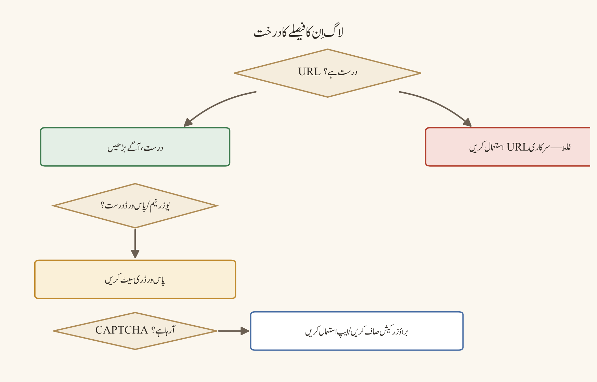
ایک فیصلہ درخت جو اِس ورک فلو کی رہنمائی کرتا ہے:
آفیشل ڈسکارڈ ڈومین/ایپ کی تصدیق ہو گئی؟
نہیں → آفیشل ذریعے پر جائیں؛ لینک شیئر کرنا بند کریں
ہاں
نیٹ ورک سادھ اور مستحکم ہے؟
نہیں → VPN/proxy/فلٹر ہٹا کر ٹیسٹ کریں
ہاں
ایرر میسج کی بالکل کونسی قسم نوٹ کی گئی؟
نہیں → سکرین شاٹ/ٹیکسٹ ایرر محفوظ جگہ ریکارڈ کریں
ہاں
پاس ورڈ کا مسئلہ؟
ہاں → آفیشل ری سیٹ/ریکوری فلو؛ پرانا محفوظ پاس ورڈ ہٹائیں
نہیں
تصدیقی ای میل کا مسئلہ؟
ہاں → spam/junk اور ای میل کی درستگی چیک کریں؛ آفیشل resend روٹ
نہیں
CAPTCHA لوڈ کا مسئلہ؟
ہاں → براؤزر ایکسٹینشنز/proxy ڈیسیبل؛ آفیشل کلائنٹ/ویب ٹیسٹ
نہیں
اکاؤنٹ لاک/مشکوک سرگرمی؟
ہاں → آفیشل سپورٹ/سیکیورٹی روٹ؛ credentials محفوظ کریںمثالیں
- طالبِ علم کی شکایت: اگر کوئی طالبِ علم کہتی ہے کہ "ای میل نہیں آ رہی"، تو سب سے پہلے اُس کا ای میل پتہ کھلے عام چینل میں دہرائیں نہیں۔ اُسے نجی، آفیشل ریکوری روٹ پر بھیجیں۔ اسٹاف صرف اتنا تصدیق کرے کہ ای میل کا ڈومین/قسم درست ہے اور spam/junk چیک ہو گیا ہے۔ کبھی پاس ورڈ، OTP، ری کووری کوڈ یا سکرین شاٹ میں موجود ٹوکن اسٹاف کے ساتھ شیئر نہ کروائیں۔
- CAPTCHA میں الجھن والا صارف: ایک بار CAPTCHA لوڈ نہ ہونے پر وہ فوراً کئی بار ری فریش کرتا ہے اور پھر کوئی پیچیدہ کیپچا حل سروس استعمال کرتا ہے — جو اکاؤنٹ کو bot سسپیشن اور rate limit دونوں کا شکار کرتا ہے۔ درست راستہ: ایکسٹینشنز بند کریں، نیٹ ورک سادھ کریں، اور آفیشل کلائنٹ سے دوبارہ کوشش کریں۔
- پرانا پاس ورڈ محفوظ والا: براؤزر یا پاس ورڈ منیجر میں پرانا پاس ورڈ محفوظ ہونے کی وجہ سے لاگ اِن بار بار ناکام ہوتا ہے؛ صارف اپنے اکاؤنٹ پر شک کرنے کے بجائے محفوظ شدہ انٹری ہی کو غلط سمجھتا ہے۔
عام غلطیاں
- ہر دو منٹ میں resend بٹن دبانا۔
- کسی نامعلوم "اکاؤنٹ ان لاک" ویب سائٹ پر credentials ڈالنا۔
- CAPTCHA کا سکرین شاٹ کھلے چینل میں پوسٹ کرنا۔
- ای میل پرووائیڈر کے spam فولڈر کو نظر انداز کرنا۔
- پاس ورڈ ری سیٹ کے بعد ری کووری کوڈز غیر محفوظ نوٹ میں رکھنا۔
- غیر مجاز رسائی کا شبہ ہونے پر سب سے پہلے عوامی اعلان کر دینا۔
- ایک ہی ناکام کوشش کے بعد ہی تھرڈ پارٹی bypass سروس تلاش کرنا۔
سیفٹی اور پرائیویسی نوٹس
لاگ اِن کی پریشانی میں سب سے بڑا رسک یہ ہے کہ صارف جلدی میں اپنے credentials کسی ایسی جگہ دے دے جو اصل میں ڈسکارڈ نہیں۔ ہر ری سیٹ، ریکوری اور تصدیقی عمل صرف آفیشل ڈومین/ایپ کے اندر مکمل کریں۔ پاس ورڈ، OTP، 2FA ری کووری کوڈ اور ٹوکن کبھی بھی کسی اسٹاف ممبر، چینل، یا "اکاؤنٹ ریکوری ہیلپر" کے ساتھ شیئر نہ کریں — آفیشل سپورٹ بھی انہیں نہیں مانگتا۔ مشترکہ یا عوامی ڈیوائس پر لاگ اِن اسٹیٹ چھوڑنے سے گریز کریں، اور اگر شبہ ہو کہ اکاؤنٹ سمجھوتے کا شکار ہوا ہے تو پہلے آفیشل سیکیورٹی فلو چلائیں، پھر احتیاطاً دوسرے اکاؤنٹس کے پاس ورڈز بدلیں۔ CAPTCHA کے سکرین شاٹس میں بعض اوقات سیشن کوکیز یا حساس URL پیرامیٹرز نظر آ سکتے ہیں، اس لیے انہیں عوامی جگہ نہ رکھیں۔
پریکٹس ٹاسک
اپنے ٹیسٹ اکاؤنٹ کے لیے ایک "لاگ اِن انسیڈنٹ فارم" بنائیے جس میں یہ خانے ہوں: ٹائم اسٹیمپ، ڈیوائس کی نوعیت، آفیشل URL، ایرر ٹیکسٹ، نیٹ ورک کی حالت، کیا اقدام اٹھایا گیا، اور اگلا آفیشل قدم۔ فارم میں واضح وارننگ لکھیں: "پاس ورڈ، OTP، ری کووری کوڈ اور پرائیویٹ ٹوکن کبھی اِس فارم میں درج نہ کریں"۔ پھر ایک نقلی ناکام لاگ اِن سیناریو پر وہ فارم بھر کر دیکھیں کہ کونسی معلومات واقعی ضبط ہو سکتی ہیں اور کن سے دستبردار ہونا پڑتا ہے۔
چیپٹر چیک لسٹ
- ☐ آفیشل ڈومین/ایپ کے ذریعے کی تصدیق ہو گئی۔
- ☐ VPN/proxy/فلٹر کی حالت نوٹ کی گئی۔
- ☐ ایرر ٹیکسٹ یا محفوظ سکرین شاٹ ریکارڈ ہو گیا۔
- ☐ ای میل کا spam/junk چیک ہو گیا۔
- ☐ ریکوری طریقہ آفیشل روٹ سے استعمال ہوا۔
- ☐ 2FA ری کووری کوڈز محفوظ ہیں۔
- ☐ rate limit کا انتظار قابلِ احترام طریقے سے کیا گیا۔
- ☐ تھرڈ پارٹی bypass سروس استعمال نہیں ہوئی۔
- ☐ مشکوک سرگرمی کو آفیشل سپورٹ روٹ پر بھیجا گیا۔
- ☐ کوئی پاس ورڈ/OTP/ریکوری کوڈ شیئر نہیں کیا گیا۔
ایپ لانچ، اپڈیٹ اور کیچ کے مسائل
مقصد
اِس چیپٹر کا مقصد یہ واضح کرنا ہے کہ ایپ کے لانچ یا اپڈیٹ میں ناکامی کا مطلب ہمیشہ خراب انسٹالیشن نہیں ہوتا۔ بعض اوقات OS کی اجازت، اسٹوریج، زیرِ التواء اپڈیٹ، ویب ایکسٹینشن، نیٹ ورک پالیسی یا عارضی سروس کا مسئلہ وجہ ہوتا ہے۔ صفائی (cleanup) شروع کرنے سے پہلے ڈیٹا ضائع ہونے کے رسک کو سمجھنا ضروری ہے، کیونکہ ایک جارحانہ فولڈر ڈیلیشن آپ کی لوکل سیٹنگز، لاگ اِن اسٹیٹ اور کام کے اکاؤنٹ کی ترتیبات سب ضائع کر سکتا ہے۔
عام علامات:
- ایپ کھلتے ہی بند ہو جاتی ہے۔
- سفید/سیاہ اسکرین یا لامتناہی لوڈنگ۔
- اپڈیٹ ڈاؤن لوڈ یا انسٹال ناکام ہوتا ہے۔
- ویب ورژن تو کام کرتا ہے لیکن ڈیسک ٹاپ ایپ نہیں۔
- لاگ اِن اسٹیٹ، لوکل سیٹنگز یا کیچ شدہ مواد غائب معلوم ہوتا ہے۔
- متعدد اکاؤنٹس میں سے صرف ایک اکاؤنٹ لوڈ نہیں ہوتا۔
پیشگی ضروریات
آپ کے پاس ڈیوائس پر ایڈمنسٹریٹر لیول کی رسائی یا کم از کم ایپ کو دوبارہ انسٹال کرنے کی اجازت ہونی چاہیے۔ اپنے اکاؤنٹ کا پاس ورڈ اور 2FA ری کووری کوڈ ہاتھ میں رکھیں، کیونکہ ری انسٹال کے بعد دوبارہ لاگ اِن کرنا پڑ سکتا ہے۔ اہم سرور سیٹنگز، رولس اور چینل فہرستوں کا نقشہ یا بیک اپ پہلے سے رکھنا بہتر ہے (سرور کا ڈیٹا سرور پر ہی محفوظ رہتا ہے، لیکن لوکل پریفرنسز نہیں)۔ آفیشل uninstall/reinstall روٹ اور موجودہ آفیشل ڈاکیومنٹیشن تک رسائی یقینی بنائیں۔ اگر ڈیوائس ادارے یا اسکول کا ہے تو انسٹالیشن تبدیلی سے پہلے ایڈمنسٹریٹر سے اجازت لیں۔
ڈیسک ٹاپ، ویب اور موبائل کے فرق
| مشاہدہ | ممکنہ سمت |
|---|---|
| ویب کام کرتا ہے، ڈیسک ٹاپ نہیں | ایپ کیچ، لوکل انسٹالیشن، OS اجازت |
| ڈیسک ٹاپ کام کرتا ہے، ویب نہیں | براؤزر ایکسٹینشن، کوکیز، براؤزر پالیسی |
| موبائل کام کرتا ہے، ڈیسک ٹاپ نہیں | ڈیوائس مخصوص ایپ/OS کا مسئلہ |
| ہر جگہ ایک ہی اکاؤنٹ ناکام | اکاؤنٹ، تصدیق، نیٹ ورک یا سروس کا مسئلہ |
| ایک ڈیوائس پر سبھی اکاؤنٹس ناکام | ڈیوائس/نیٹ ورک/ایپ کا مسئلہ |
یہ جدول اِس بات کا تیز ترین فلٹر ہے: پہلے یہ طے کریں کہ مسئلہ ایک ڈیوائس کا ہے، ایک اکاؤنٹ کا ہے، یا ساری پلیٹ فارمز پر ایک جیسا ہے۔ اس کے بعد ہی کسی بھی "صفائی" کے قدم کی طرف بڑھیں۔
نمبر وار UI ورک فلو
- ڈیوائس کو ری اسٹارٹ کریں اور نیٹ ورک بدل کر ٹیسٹ کریں۔
- آفیشل ایپ اپڈیٹ اور OS اپڈیٹ چیک کریں۔
- اسٹوریج کی جگہ اور OS لیول کی ایپ پرمیشنز تصدیق کریں۔
- ویب ورژن پر وہی اکاؤنٹ ٹیسٹ کریں تاکہ ایپ مخصوص مسئلہ الگ ہو سکے۔
- براؤزر پر کام کرتے ہوئے ایکسٹینشنز کو عارضی ڈیسیبل کر کے ٹیسٹ کریں؛ صرف قابلِ اعتماد ایکسٹینشنز واپس بحال کریں۔
- آفیشل uninstall/reinstall روٹ پر عمل کریں۔ نامعلوم انسٹالر یا ترمیم شدہ کلائنٹ استعمال نہ کریں۔
- کیچ کلیر صرف موجودہ آفیشل ڈاکیومنٹیشن یا دستاویز کردہ ایپ روٹ کے مطابق کریں۔ جارحانہ فولڈر ڈیلیشن لوکل ڈیٹا، لاگ اِن اسٹیٹ یا ورک/اکاؤنٹ سیٹنگز ہٹا سکتا ہے۔
- ری انسٹال کے بعد پہلے ٹیسٹ اکاؤنٹ سے لاگ اِن اور بنیادی چینل/وائس ٹیسٹ کریں۔
- مسئلہ برقرار رہے تو آفیشل status/سپورٹ روٹ استعمال کریں اور بالکل درست ڈیوائس/ورژن/ایرر نوٹ کریں۔
فیصلہ درخت:
ایپ لانچ/اپڈیٹ ناکام؟
↓
ڈیوائس ری اسٹارٹ + آفیشل اپڈیٹ چیک
↓
ویب ورژن پر اسی اکاؤنٹ کا ٹیسٹ
ویب کام کرتا ہے → ڈیسک ٹاپ انسٹال/کیچ/OS راستہ
ویب ناکام → براؤزر/نیٹ ورک/اکاؤنٹ راستہ
↓
اسٹوریج اور OS پرمیشنز کی جانچ
↓
آفیشل ری انسٹال صرف ضرورت ہونے پر
↓
کیچ صفائی صرف دستاویز کردہ روٹ سے
↓
ٹیسٹ اکاؤنٹ سے لاگ اِن، چینل، وائس
↓
آفیشل سپورٹ/status روٹمثالیں
- ویب تو چلتی ہے، ایپ نہیں: ایک صارف کی ویب کلاس روانی سے چلتی ہے مگر ڈیسک ٹاپ ایپ لانچ ہوتے ہی کریش ہوتی ہے۔ ری انسٹال سے پہلے اُس نے ایپ اپڈیٹ اور OS اجازت چیک کی — معاملہ پرانا انسٹالر پیکیج تھا، جسے آفیشل روٹ سے درست کیا گیا۔
- پھنسا ہوا اپڈیٹ: اپڈیٹ ڈاؤن لوڈ 50% پر رک جاتا ہے۔ جارحانہ کیچ ڈیلیٹ کرنے کے بجائے نیٹ ورک بدل کر اور آفیشل status پیج چیک کر کے دوبارہ کوشش کی گئی — سروس میں عارضی تاخیر تھی۔
- اسکول کا مشترکہ کمپیوٹر: طالبِ علم کی لوکل سیٹنگز ایک ہی ڈیوائس پر غائب معلوم ہوتی ہیں، کیونکہ پچھلے صارف نے فولڈر ڈیلیٹ کر دیا تھا۔ مشترکہ ڈیوائس پر ذاتی سیٹنگز کا انحصار نقصان دہ ثابت ہوا۔
عام غلطیاں
- مسئلہ دوبارہ پیش آنے پر بغیر آفیشل روٹ چیک کیے فوراً ری انسٹال کر بیٹھنا۔
- نامعلوم انسٹالر یا "آپٹیمائزڈ/ترمیم شدہ" ڈسکارڈ کلائنٹ انسٹال کرنا۔
- فولڈر ڈیلیٹ کر کے کیچ صاف کرنے کے نام پر لاگ اِن اسٹیٹ اور سیٹنگز گنوا دینا۔
- ایک ہی ڈیوائس پر سبھی اکاؤنٹس ناکام ہونے پر بھی صرف اکاؤنٹ کی طرف شک کرنا۔
- ویب اور ڈیسک ٹاپ کا موازنہ کیے بغیر "ڈسکارڈ خراب ہے" کہہ دینا۔
- ترمیم شدہ کلائنٹس، میموری ایڈیٹرز یا غیر سرکاری پلگ انس کو ٹربل شوٹنگ کا شارٹ کٹ بنانا۔
سیفٹی اور پرائیویسی نوٹس
کیچ عارضی پرفارمنس ڈیٹا ہو سکتی ہے، لیکن صارف کو ہر لوکل فولڈر کا مقصد معلوم نہیں ہوتا۔ کوئی فولڈر ڈیلیٹ کرنے سے پہلے آفیشل رہنمائی تصدیق کریں، اہم سیٹنگز بیک اپ/ریکارڈ کریں، اور یہ یقین بنا لیں کہ آپ لاگ آؤٹ اور ریکوری تک رسائی رکھتے ہیں۔ ترمیم شدہ کلائنٹس، میموری ایڈیٹرز اور غیر سرکاری پلگ انس سیکیورٹی رسک ہو سکتے ہیں — انہیں ٹربل شوٹنگ کا شارٹ کٹ نہ بنائیں۔ مشترکہ ڈیوائس پر اپنا لاگ اِن اور ذاتی سیٹنگز مستقل نہ چھوڑیں۔ اگر ری انسٹال کے بعد ٹوکن یا سیشن میں عجیب حرکت نظر آئے تو آفیشل سیکیورٹی چیک کرائیں۔
پریکٹس ٹاسک
ایک ٹیسٹ ڈیوائس پر محفوظ انسیڈنٹ ریکارڈ بنائیے: ایپ کا ورژن، OS کا ورژن، نیٹ ورک کی قسم، ویب کا نتیجہ، ڈیسک ٹاپ کا نتیجہ، اسٹوریج کی صورتحال، اقدامات کی ترتیب اور حتمی نتیجہ۔ یہ مشق کسی بھی فولڈر کو ڈیلیٹ کیے بغیر مکمل کریں — مقصد صرف مشاہدے اور نوٹ لینے کا عمل سیکھنا ہے، تباہی نہیں۔
چیپٹر چیک لسٹ
- ☐ ڈیوائس ری اسٹارٹ کیا گیا۔
- ☐ آفیشل ایپ اور OS اپڈیٹ چیک کیا گیا۔
- ☐ اسٹوریج اور پرمیشنز تصدیق ہوئیں۔
- ☐ ویب/موبائل/ڈیسک ٹاپ نتائج کا موازنہ ہوا۔
- ☐ براؤزر ایکسٹینشنز کو کنٹرولڈ طریقے سے ٹیسٹ کیا گیا۔
- ☐ آفیشل ری انسٹال روٹ استعمال ہوا۔
- ☐ کیچ صفائی آفیشل دستاویز کردہ روٹ پر ہے۔
- ☐ لوکل ڈیٹا ضائع ہونے کا رسک سمجھا گیا۔
- ☐ ترمیم شدہ کلائنٹ/پلگ ان استعمال نہیں ہوا۔
- ☐ حتمی نتیجہ ٹیسٹ اکاؤنٹ پر تصدیق ہوا۔
مائیکروفون اور سپیکر کے مسائل
مقصد
اِس چیپٹر کا مقصد آپ کو یہ سکھانا ہے کہ کسی بھی وائس مسئلے کو "ڈسکارڈ خراب ہے" کہنے سے پہلے اُس کے سگنل پاتھ کی نشاندہی کریں: فزیکل ڈیوائس، OS کی اجازت، ڈسکارڈ میں منتخب کردہ ڈیوائس، ان پٹ موڈ، چینل پرمیشن اور نیٹ ورک۔ ہر مرحلے کو الگ تھلگ کرنے سے غیر ضروری ری انسٹال سے بچا جا سکتا ہے اور اصل وجہ جلد سامنے آتی ہے۔
پیشگی ضروریات
آپ کے پاس ہیڈ سیٹ، USB ریسیور یا بلیو ٹوتھ ڈیوائس کے ساتھ مکمل فزیکل کنکشن ہونا چاہیے، اور OS کی ساؤنڈ اور پرائیویسی سیٹنگز تک رسائی (مائیکروفون کی اجازت شامل)۔ ڈسکارڈ میں User Settings کا وائس سیکشن تک پہنچنا ضروری ہے۔ ایک قابلِ اعتماد ٹیسٹ پارٹنر (جیسے اسٹاف یا ٹیسٹ اکاؤنٹ) سے مختصر آڈیو تبادلے کا انتظام کریں — اکیلے ٹیسٹ کرنا ممکن ہے مگر کسی دوسری تصدیق کے بغیر یقین نہیں ہوتا۔ اگر آپ کسی ادارے یا اسکول کے نیٹ ورک پر ہیں تو وائس چینل کی پرمیشن کی تصدیق پہلے کر لیں۔
ڈیسک ٹاپ، ویب اور موبائل کے فرق
ڈیسک ٹاپ پر OS کی ساؤنڈ سیٹنگز، ڈرائیورز اور USB/پورٹ کے مسائل غالب آتے ہیں؛ یہاں Voice Activity اور Push-to-Talk کی کی بائنڈنگ اور ان پٹ سینسٹیویٹی کا تجربہ آسان ہوتا ہے۔
ویب کلائنٹ میں براؤزر کی مائیکروفون اجازت (permission prompt) سب سے عام رکاوٹ ہے — OS نے اجازت دے دی ہو مگر براؤزر کے لیے علیحدہ اجازت درکار ہوتی ہے۔
موبائل پر بلیو ٹوتھ پیئرنگ، OS لیول مائیکروفون اجازت، بیٹری سیونگ موڈ اور بیک گراؤنڈ اپس کے خصوصی رسائی کا مسئلہ زیادہ ملتا ہے۔ موبائل پر ہیڈ فون جیک یا بلٹ اِن مائیکروفون کا انتخاب بھی الگ ڈیوائس کے طور پر ظاہر ہوتا ہے، اس لیے ڈسکارڈ میں منتخب ڈیوائس کی دوبارہ تصدیق کریں۔
نمبر وار UI ورک فلو
- ہیڈ سیٹ، USB ریسیور، بلیو ٹوتھ ڈیوائس یا پورٹ کو فزیکل طور پر چیک کریں۔
- OS کی ساؤنڈ سیٹنگز میں درست ان پٹ اور آؤٹ پٹ ڈیوائس منتخب کریں۔
- OS کی پرائیویسی سیٹنگز میں مائیکروفون تک رسائی allowed ہو۔
- ڈیوائس کا میوٹ بٹن، ہارڈویئر سوئچ اور والیوم لیول چیک کریں۔
- ڈسکارڈ کی وائس سیٹنگز میں وہی ان پٹ/آؤٹ پٹ ڈیوائس منتخب کریں۔
- ڈسکارڈ کا mic test اور speaker/headphone test چلائیں۔
Voice ActivityیاPush-to-Talkسیٹنگ اور ان پٹ سینسٹیویٹی چیک کریں۔- Noise suppression، echo cancellation اور automatic gain control کو ایک وقت میں صرف ایک تبدیل کر کے ٹیسٹ کریں۔
- دوسری اپس کا خصوصی رسائی یا ایکٹو کال چیک کریں۔
- USB پورٹ، بلیو ٹوتھ پیئرنگ یا ہیڈ سیٹ کو دوبارہ کنیکٹ کریں۔
- ڈرائیور/ایپ اپڈیٹ اور آفیشل ری انسٹال صرف ضرورت پڑنے پر کریں۔
ان پٹ موڈ کا عملی ٹیسٹ: Voice Activity میں عام بولنے، خاموشی اور بیک گراؤنڈ شور کے دوران ان پٹ میٹر کو دیکھیں۔ اگر میٹر ہمیشہ فل ہے تو سینسٹیویٹی یا شور کا مسئلہ ہو سکتا ہے۔ Push-to-Talk میں کی بائنڈنگ اور اصل کی پریس کا ٹیسٹ کریں؛ کی بورڈ فوکس یا گیم اوورلے کی وجہ سے کی کا تنازعہ نہ ہونے دیں۔ ٹیسٹ کے لیے کسی قابلِ اعتماد ممبر سے مختصر آڈیو تبادلہ کریں، صرف پبلک چینل میں زور دار ٹیسٹ نہ کریں۔
سپیکر اور ایکو ٹربل شوٹنگ: اگر آپ کی آواز ایکو ہو رہی ہے تو سب سے پہلے دوسرے شرکا کے سپیکرز اور مائیکروفون کے درمیان فاصلہ چیک کریں۔ ہیڈ فون استعمال کریں، echo cancellation کو enable/disable کر کے کنٹرولڈ ٹیسٹ کریں، اور ایک وقت میں صرف ایک سیٹنگ بدلیں۔ آؤٹ پٹ ڈیوائس غلط منتخب ہونے پر آواز کسی دوسرے سپیکر سے آ سکتی ہے۔
فیصلہ درخت:
مائیک/سپیکر کا مسئلہ؟
↓
فزیکل میوٹ/والیوم/کنکشن چیک
↓
OS میں درست ڈیوائس اور پرائیویسی اجازت
↓
ڈسکارڈ میں وہی ڈیوائس منتخب ہے؟
نہیں → منتخب کریں/ٹیسٹ کریں
ہاں
ڈسکارڈ ٹیسٹ میٹر/آواز کام کرتی ہے؟
نہیں → ان پٹ موڈ/سینسٹیویٹی/نائز سیٹنگز
ہاں
کسی دوسری ایپ کا خصوصی رسائی یا ایکٹو کال؟
ہاں → بند کریں/دوبارہ ترتیب دیں
نہیں
چینل کی وائس پرمیشن/یوزر میوٹ چیک
↓
ہارڈویئر دوبارہ کنیکٹ، ڈرائیور/ایپ اپڈیٹ، دوبارہ ٹیسٹمثالیں
- بلیو ٹوتھ ہیڈ سیٹ والا: ڈیوائس OS میں تو پیئرڈ ہے مگر ڈسکارڈ کی وائس سیٹنگز میں بطور ان پٹ ڈیوائس منتخب نہیں — آواز پرانی لیپ ٹاپ مائیک سے جا رہی ہے۔
- ہمیشہ فل میٹر:
Voice Activityمیں میٹر خاموشی میں بھی فل رہتا ہے کیونکہ سینسٹیویٹی بہت کم ہے اور کمر کے شور کی وجہ سے آواز اٹھ رہی ہے۔ - گیم کی تنازعہ والی کی: گیم اوورلے اور ڈسکارڈ دونوں نے ایک ہی کی کو
Push-to-Talkکے لیے استعمال کیا، جس سے بات بات پر ٹرانسمٹ رک جاتا ہے۔ - ایکو والا کلاس روم: سپیکرز اور مائیکروفون قریب ہونے سے ایکو پیدا ہوتی ہے؛ ہیڈ فون اور echo cancellation کے کنٹرولڈ ٹیسٹ سے حل ملا۔
عام غلطیاں
- بلیو ٹوتھ ہیڈ سیٹ کو پیئرڈ سمجھ کر ڈسکارڈ میں ان پٹ منتخب نہ کرنا۔
- OS کی اجازت کو ڈسکارڈ کی اجازت سمجھ لینا (یا اُلٹا)۔
- سینسٹیویٹی اور noise suppression کو ایک ساتھ بدل دینا۔
Push-to-Talkکی کی ٹیسٹ کیے بغیر میٹنگ شروع کر دینا۔- ہر مسئلے پر ایپ ری انسٹال کرنا۔
- پبلک وائس چینل میں "ڈیوائس ٹیسٹ" کے نام پر لمبا آڈیو چلانا۔
سیفٹی اور پرائیویسی نوٹس
وائس ٹیسٹ کرتے وقت آپ کی آواز اور آس پاس کے ماحول کی آوازیں بھی ریکارڈ یا ٹرانسمٹ ہو سکتی ہیں۔ کسی بھی لمبے یا زور دار "ٹیسٹ" سے پہلے چینل میں موجود لوگوں اور ریکارڈنگ کی صورتحال سے آگاہ رہیں۔ اگر آپ کسی نجی سپورٹ سیشن یا حساس کیس میں ہیں تو اسکرین شیئر اور وائس ٹیسٹ کو ڈیفالٹ آپشن نہ بنائیں۔ بلیو ٹوتھ اور USB ڈیوائسز کے ساتھ، آڈیو کبھی کسی دوسرے قابلِ سماعت ڈیوائس پر نکل سکتی ہے — عوامی جگہ پر ہیڈ فون کا استعمال محفوظ رہتا ہے۔ کسی بھی مشکوک لینک سے "آڈیو ڈرائیور" انسٹال نہ کریں؛ صرف آفیشل OS/ڈیوائس اپڈیٹ استعمال کریں۔
پریکٹس ٹاسک
ایک "وائس ٹیسٹ کارڈ" بنائیے جس میں یہ چیزیں درج ہوں: ڈیوائس کا نام، OS اجازت، ڈسکارڈ کا ان پٹ/آؤٹ پٹ، ان پٹ موڈ، سینسٹیویٹی ویلیو، میوٹ کی حالت، ٹیسٹ پارٹنر اور نتیجہ۔ تین چیزیں ریکارڈ کریں: ایک نارمل جملہ، دس سیکنڈ کی خاموشی، اور Push-to-Talk کا ٹیسٹ۔ آخر میں اِس جدول کو محفوظ جگہ رکھیں تاکہ اگلی بار مسئلہ آئے تو آپ کا نقشہ تیار ہو۔
چیپٹر چیک لسٹ
- ☐ درست فزیکل ڈیوائس کنیکٹڈ ہے۔
- ☐ ہارڈویئر میوٹ اور والیوم چیک ہوئے۔
- ☐ OS کا ان پٹ/آؤٹ پٹ انتخاب درست ہے۔
- ☐ OS میں مائیکروفون کی پرائیویسی اجازت allowed ہے۔
- ☐ ڈسکارڈ کا ان پٹ/آؤٹ پٹ انتخاب درست ہے۔
- ☐ mic meter اور سپیکر ٹیسٹ پاس ہوئے۔
- ☐
Voice Activity/Push-to-Talkتصدیق ہوا۔ - ☐ سینسٹیویٹی/نائز سیٹنگز کا کنٹرولڈ ٹیسٹ ہوا۔
- ☐ مقابل اپس/خصوصی رسائی چیک ہوا۔
- ☐ چینل کی وائس پرمیشن تصدیق ہوئی۔
- ☐ ری انسٹال/ڈرائیور اپڈیٹ صرف ضرورت پر کیا گیا۔
کیمرا، اسکرین شیئر اور ہارڈویئر ایکسلریشن
مقصد
اِس چیپٹر کا مقصد کیمرا اور اسکرین شیئر کے مسائل میں پرائیویسی اور ٹیکنیکل آئسولیشن، دونوں کا لحاظ رکھنا ہے۔ کیمرا بلیک اسکرین ہو تو اجازت اور مقابل ایپ چیک کریں۔ اسکرین شیئر میں مواد لیک ہونے کا رسک ہوتا ہے، اس لیے شیئر کرنے سے پہلے اپنے visible ڈیسک ٹاپ کا جائزہ لینا ضروری ہے — یہ ٹیکنیکل مسئلے سے زیادہ ایک پرائیویسی عادت ہے۔
پیشگی ضروریات
آپ کے پاس OS لیول پر کیمرا کی پرائیویسی اجازت تک رسائی اور ڈسکارڈ/براؤزر کو کیمرا تک رسائی دینے کا اختیار ہو۔ کیمرا کا فزیکل شٹر یا لینز کور موجود ہے تو اُسے استعمال کرنے کی عادت ڈالیں۔ ٹیسٹ کرنے کے لیے ایک محفوظ ٹیسٹ سرور اور قابلِ اعتماد شرکا درکار ہیں — کیمرا اور اسکرین شیئر کبھی بھی عوامی یا غیر جانچا ہوا سامعین کے سامنے ٹیسٹ نہ کریں۔ اگر آپ کسی ایسی جگہ ہیں جہاں ریکارڈنگ باقی رہتی ہے، تو پہلے رضامندی، اسٹوریج اور ڈیلیشن پالیسی واضح کریں۔
ڈیسک ٹاپ، ویب اور موبائل کے فرق
ڈیسک ٹاپ پر متعدد کیمراز (لیپ ٹاپ ویب کیم، external کیمرا، اور virtual camera) الگ الگ ڈیوائسز کے طور پر ظاہر ہوتے ہیں، اور ہارڈویئر ایکسلریشن کا تجربہ یہیں سب سے زیادہ متعلقہ ہوتا ہے۔
ویب کلائنٹ میں براؤزر کا کیمرا اجازت prompt اور ایکسٹینشنز سب سے عام رکاوٹیں ہیں؛ ویب پر کیمرا کی اجازت OS اور براؤزر دونوں سطح پر دی جاتی ہے۔
موبائل پر front/back کیمرا کا انتخاب، OS اجازت کا prompt، اور آپ کے ساتھ کیمرا استعمال کرنے والی دوسری اپس (جیسے کسی اور کال ایپ کا لائیو کیمرا) غالب مسائل ہیں۔ موبائل پر ہارڈویئر ایکسلریشن کا آپشن عموماً ڈیسک ٹاپ جیسا نہیں ہوتا، اس لیے ڈیسک ٹاپ کی سیٹنگ کو موبائل پر سراغ نہ سمجھیں۔
نمبر وار UI ورک فلو
کیمرا کا ورک فلو:
- OS کی کیمرا پرائیویسی اجازت چیک کریں۔
- درست کیمرا منتخب کریں؛ لیپ ٹاپ ویب کیم، external کیمرا اور virtual camera الگ ڈیوائسز ہو سکتے ہیں۔
- ڈسکارڈ/ایپ/براؤزر کو کیمرا تک رسائی allow کریں۔
- Zoom، Teams، براؤزر یا کسی دوسری کیمرا ایپ کو close/reconfigure کریں۔
- کیمرا کا انڈیکیٹر، لینز کور اور فزیکل شٹر چیک کریں۔
- ایپ اپڈیٹ اور گرافکس/کیمرا ڈرائیور چیک کریں۔
- ہارڈویئر ایکسلریشن کو کنٹرولڈ ٹیسٹ کے طور پر toggle کریں؛ تبدیلی کے بعد ایپ ری اسٹارٹ کریں۔
- Protected/DRM مواد اور بعض ونڈوز کی شیئرنگ کی پابندیوں کو فرض نہ کریں؛ specific window اور full-screen آپشن ٹیسٹ کریں۔
اسکرین شیئر کا پرائیویسی ورک فلو:
- شیئر کرنے سے پہلے notifications، ای میل پیش نظارے، پاس ورڈز، ذاتی چیٹس اور پرائیویٹ tabs hide کریں۔
- جب پورا ڈیسک ٹاپ ضروری نہ ہو تو specific application window شیئر کریں۔
- شیئر کردہ ونڈو کے اندر بھی کوئی confidential فائل، contact list یا براؤزر کا پتہ visible ہو سکتا ہے؛ مواد کی سطح پر جائزہ لیں۔
- Participants کی فہرست اور ریکارڈنگ انڈیکیٹر چیک کریں۔
- ریکارڈنگ یا سٹریم کا مقصد، رضامندی، اسٹوریج اور ڈیلیشن پالیسی تصدیق کریں۔
- شیئر بند کرنے کے بعد تصدیق کریں کہ اسکرین اب شیئر نہیں ہو رہی۔
- کسی حساس انسیڈنٹ یا نجی سپورٹ سیشن میں اسکرین شیئر کو ڈیفالٹ آپشن نہ بنائیں۔
ہارڈویئر ایکسلریشن کا کنٹرولڈ ٹیسٹ: ہارڈویئر ایکسلریشن گرافکس کے کام کو GPU کے حوالے کر سکتا ہے۔ بلیک اسکرین، جمی ہوئی شیئر یا زیادہ CPU کے مسئلے میں اِسے ایک متغیر کے طور پر toggle کریں، ایپ ری اسٹارٹ کریں، اور ایک ہی مواد کے ساتھ ٹیسٹ کریں۔ سیٹنگ کو بار بار تبدیل نہ کریں اور حتمی مستحکم حالت کو دستاویز کریں۔ گرافکس ڈرائیور اپ ڈیٹ کرنے سے پہلے ڈیوائس/وینڈر کی رہنمائی اور rollback آپشن چیک کریں۔
فیصلہ درخت:
کیمرا/اسکرین شیئر کا مسئلہ؟
↓
OS پرائیویسی + فزیکل شٹر/لینز چیک
↓
درست کیمرا/ونڈو منتخب ہے؟
نہیں → منتخب کریں اور دوبارہ ٹیسٹ کریں
ہاں
کوئی مقابل کیمرا ایپ/براؤزر اجازت؟
ہاں → بند کریں/دوبارہ ترتیب دیں
نہیں
specific window کا ٹیسٹ
↓
ہارڈویئر ایکسلریشن کنٹرولڈ toggle + ری اسٹارٹ
↓
گرافکس ڈرائیور/ایپ اپڈیٹ اگر جائز ہو
↓
DRM/protected contents کی محدودیت پر غورمثالیں
- بلیک اسکرین والا: کیمرا بلیک دکھاتا ہے کیونکہ کسی دوسری ایپ نے اجازت لے رکھی تھی اور وہ بیک گراؤنڈ میں چل رہی ہے — ایپ کلوز اور OS اجازت دیکھنے سے حل ملا۔
- پورا ڈیسک ٹاپ شیئر والا: استاد نے صرف سلائیڈ ونڈو شیئر کرنی تھی مگر پورا ڈیسک ٹاپ شیئر کر دیا؛ ای میل کا پیش نظارہ اور کچھ ذاتی فائلیں اسکرین پر آ گئیں۔ تب سے specific window کو ڈیفالٹ رکھتا ہے۔
- virtual camera کا الجھنا: کسی نے virtual camera سافٹ ویئر کو حقیقی کیمرا سمجھ کر ٹیسٹ کیا، جبکہ وہ سافٹ ویئر آف تھا — ڈیوائس کی فہرست میں درست ہارڈویئر کیمرا چننا پڑا۔
- جمی ہوئی شیئر: ہارڈویئر ایکسلریشن کے toggle اور ری اسٹارٹ کے بعد شیئر جمنے کا مسئلہ دور ہو گیا، اور حتمی حالت کو ڈاکیومنٹ کر دیا گیا۔
عام غلطیاں
- صرف سلائیڈ ونڈو چاہیے ہوں تو بھی پورا ڈیسک ٹاپ شیئر کر دینا۔
- کیمرا کی اجازت کو براؤزر/ایپ کی اجازت سمجھ لینا۔
- virtual camera کو حقیقی کیمرا سمجھ کر ٹیسٹ کرنا۔
- ہارڈویئر ایکسلریشن کو ری اسٹارٹ کیے بغیر ٹیسٹ کرنا۔
- اسکرین شیئر کے دوران notifications کھلے رکھنا۔
- ریکارڈنگ کو رضامندی اور retention plan کے بغیر شروع کر دینا۔
- ڈیسک ٹاپ کی ہارڈویئر ایکسلریشن سیٹنگ کا موبائل پر بھی یکساں ہونا فرض کر لینا۔
سیفٹی اور پرائیویسی نوٹس
کیمرا اور اسکرین شیئر ڈسکارڈ کی سب سے زیادہ "ظاہر ہونے والی" خصوصیات ہیں۔ شیئر کرنے سے پہلے ہر اُس چیز کا جائزہ لیں جو اسکرین پر نظر آ سکتی ہے: notifications، ای میل، کیلنڈر، براؤزر کی tabs، پاس ورڈ فیلڈز، اور ڈیسک ٹاپ پر پڑی فائلیں۔ "specific window" شیئر کو ڈیفالٹ بنائیں، اور جب بھی حساس سیشن ہو تو شیئر شروع ہونے سے پہلے شرکا، ریکارڈنگ کا نشان اور رضامندی کی صورتحال واضح کریں۔ ریکارڈنگ شروع کرنے سے پہلے قابلِ اطلاق سرور پالیسی، ادارے کے قواعد اور شرکا کی رضامندی چیک کریں؛ ریکارڈنگ کو کوئی واضح retention/deletion پلان کے بغیر نہ رکھیں۔ کیمرا کے فزیکل شٹر یا لینز کور کو استعمال کرنے کی عادت ڈالیں — یہ سافٹ ویئر اجازت سے زیادہ قابلِ اعتماد ہے۔
پریکٹس ٹاسک
ٹیسٹ سرور میں 3 منٹ کی اسکرین شیئر ری ہرسل کریں۔ ایک محفوظ سلائیڈ ونڈو شیئر کریں، جان بوجھ کر ایک نقلی notification preview کھولیں، پھر شیئر شروع کرنے سے پہلے اُسے چھپانے کا چیک لسٹ چلائیں۔ کیمرا کے لیے درست ڈیوائس، OS پرائیویسی اجازت اور مقابل ایپ کی حالت ریکارڈ کریں۔ آخر میں ایک مختصر نوٹ لکھیں: کیا visible تھا، کیا چھپ گیا، اور کس نے رضامندی دی۔
چیپٹر چیک لسٹ
- ☐ OS میں کیمرا کی پرائیویسی اجازت allowed ہے۔
- ☐ درست فزیکل/virtual کیمرا منتخب ہے۔
- ☐ ایپ/براؤزر کی اجازت تصدیق ہوئی۔
- ☐ مقابل کیمرا اپس چیک ہوئیں۔
- ☐ فزیکل شٹر/لینز چیک ہے۔
- ☐ شیئر سے پہلے notifications/پرائیویٹ tabs hidden ہیں۔
- ☐ specific window شیئر کو ڈیفالٹ بنایا گیا ہے۔
- ☐ ریکارڈنگ کی رضامندی/اسٹوریج پالیسی تصدیق ہے۔
- ☐ ہارڈویئر ایکسلریشن کا کنٹرولڈ ٹیسٹ ہوا۔
- ☐ گرافکس ڈرائیور/ایپ اپڈیٹ جائز ہے۔
- ☐ DRM/protected contents کی محدودیت نوٹ ہے۔
- ☐ شیئر کا اختتام تصدیق ہوا۔
نیٹ ورک، VPN، فائر وال اور لیٹنسی
مقصد
اِس چیپٹر کا مقصد آپ کو یہ بتانا ہے کہ نیٹ ورک ٹربل شوٹنگ کا مقصد speed test کا سب سے بڑا نمبر حاصل کرنا نہیں ہے۔ مقصد یہ سمجھنا ہے کہ packet delivery، latency، jitter، فائر وال کی پالیسی یا ایپلی کیشن سیٹنگ میں سے کس تہہ نے مواصلت کو متاثر کیا ہے۔ صرف download speed سے آواز کی کوالٹی کی پیش گوئی نہیں ہوتی۔
پیشگی ضروریات
آپ کے پاس اپنے نیٹ ورک کی بنیادی قسم (Wi-Fi، موبائل ڈیٹا، یا institutional) جاننے کا ذریعہ ہو، اور کم از کم دو قابلِ اعتماد نیٹ ورکس (جیسے گھر کا Wi-Fi اور موبائل ہاٹ اسپاٹ) تک رسائی ہو تاکہ موازنہ ممکن ہو۔ اگر آپ ڈسکارڈ سرور کے ایڈمن ہیں تو آپ وائس ریجن اور سرور لیول سیٹنگز تک پہنچ سکتے ہوں۔ اداراتی یا کیمپس نیٹ ورک پر ہوں تو نیٹ ورک ایڈمنسٹریٹر سے رابطے کا آفیشل روٹ پہلے سے تلاش کریں — پالیسی کو bypass کرنے کی کوشش نہ کریں۔ نوٹس لینے کا طریقہ (ٹائم اسٹیمپ، نیٹ ورک کی قسم، اور ہر ٹیسٹ کا نتیجہ) پہلے سے تیار رکھیں۔
ڈیسک ٹاپ، ویب اور موبائل کے فرق
ڈیسک ٹاپ پر فائر وال/اینٹی وائرس کے اصول، LAN کی کڑی اور کیبل کی حالت غالب عوامل ہیں؛ یہاں process-level allow rules کو درست طریقے سے تشکیل دینا ممکن ہوتا ہے۔
ویب کلائنٹ پر براؤزر کا اپنا نیٹ ورک اسٹیک، ایکسٹینشنز، اور براؤزر کی CDN/کیچ پالیسی مسائل میں حصہ لیتی ہے۔ ویب اور ڈیسک ٹاپ ایپ کے نتائج کا موازنہ ایک طاقتور تشخیصی اوزار ہے۔
موبائل پر سیلولر بمقابلہ Wi-Fi کا موازنہ سب سے پہلے کرنا چاہیے کیونکہ سیلولر نیٹ ورک کی NAT اور کیرئیر کی پالیسی کا اثر الگ ہوتا ہے۔ موبائل پر signal strength، بیٹری سیونگ موڈ اور بیک گراؤنڈ ڈیٹا کی پابندیاں بھی لیٹنسی کو متاثر کرتی ہیں۔ ہر پلیٹ فارم پر ایک ہی ٹیسٹ چلانے سے اصل تکلیف دہ تہہ تک رسائی ملتی ہے۔
نمبر وار UI ورک فلو
- مسئلے کا دائرہ نوٹ کریں: text، voice، video، upload، login یا سب کچھ۔
- ایک ہی وقت میں آفیشل status اور نیٹ ورک کی حالت چیک کریں۔
- Wi-Fi/موبائل ڈیٹا یا کسی دوسرے قابلِ اعتماد نیٹ ورک پر ٹیسٹ کریں۔
- speed کے ساتھ latency اور stability بھی دیکھیں؛ صرف download speed سے voice quality کی پیش گوئی نہیں ہوتی۔
- VPN/proxy کو عارضی ڈیسیبل کر کے کنٹرولڈ موازنہ کریں۔
- فائر وال/اینٹی وائرس میں صرف قابلِ اعتماد ڈسکارڈ process/ایپ کے لیے دستاویز کردہ allow route استعمال کریں؛ blanket internet exception نہ بنائیں۔
- Router/modem ری اسٹارٹ اور Wi-Fi channel/congestion کا بنیادی چیک کریں۔
- Voice/video سٹریم کوالٹی کم کر کے ٹیسٹ کریں۔
- ایڈمن ہوں تو متعلقہ voice/server region سیٹنگز اور ادارے کی پالیسی تصدیق کریں۔
- مسئلہ برقرار رہے تو نیٹ ورک ایڈمنسٹریٹر یا آفیشل سپورٹ کو دائرہ، ٹائم اسٹیمپ اور ٹیسٹ نتائج دیں۔
VPN، proxy اور فائر وال کی سیفٹی: VPN بعض اوقات کارپوریٹ، کیمپس یا علاقائی پالیسی کے مطابق محدود ہوتا ہے۔ اِسے سیکیورٹی bypass ٹول سمجھ کر استعمال نہ کریں۔ فائر وال کی allowlist میں کوئی نامعلوم executable، cracked کلائنٹ یا تھرڈ پارٹی پلگ ان شامل نہ کریں۔ اگر ادارے کے نیٹ ورک پر پالیسی کی خلاف ورزی کا رسک ہو تو ذاتی ٹربل شوٹنگ کے بجائے نیٹ ورک ایڈمنسٹریٹر کا آفیشل روٹ اپنائیں۔
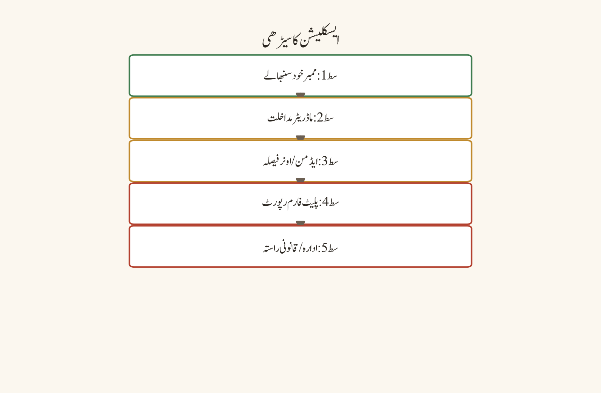
فیصلہ درخت:
ڈسکارڈ سست/ناقابلِ رسائی؟
↓
دائرہ: login/text/voice/video/upload؟
↓
آفیشل status + سادھ نیٹ ورک ٹیسٹ
↓
Wi-Fi/موبائل/دوسرے قابلِ اعتماد نیٹ ورک کا موازنہ
↓
VPN/proxy ڈیسیبل، کنٹرولڈ ٹیسٹ
↓
فائر وال/اینٹی وائرس کا قابلِ اعتماد ایپ رول چیک
↓
روٹر ری اسٹارٹ + کم سٹریم کوالٹی
↓
ایڈمن: وائس ریجن/پالیسی چیک
↓
نیٹ ورک ایڈمن/آفیشل سپورٹمثالیں
- ہمیشہ VPN والا: صارف ہر نیٹ ورک مسئلے پر VPN آن کرتا ہے، مگر اصل مسئلہ ادارتی فائر وال کی پالیسی تھا — VPN نے صورتحال کو مزید پیچیدہ کر دیا۔
- speed test فتح، آواز شکست: speed test میں 100 Mbps آ رہا ہے مگر آواز کاٹتی ہے۔ وجہ latency/jitter تھی، download speed نہیں — کم کوالٹی سٹریم سے آواز ٹھیک ہو گئی۔
- blanket exception والا: صارف نے فائر وال میں پورے فولڈر اور نامعلوم process کو allow کر دیا، جو ایک سیکیورٹی رسک ہے — صرف ڈسکارڈ کے قابلِ اعتماد process تک محدود رول درست تھا۔
- کیمپس نیٹ ورک والا کلاس: طالبِ علم کو کیمپس نیٹ ورک پر وائس نہیں ملتی۔ اُس نے ذاتی ٹربل شوٹنگ کے بجائے نیٹ ورک ایڈمنسٹریٹر کا آفیشل روٹ استعمال کیا، جہاں معلوم ہوا کہ پالیسی کے مطابق وائس ٹریفک محدود ہے۔
عام غلطیاں
- speed test کو آواز کی کوالٹی کا اکلوتا معیار بنا لینا۔
- VPN کو ہمیشہ حل سمجھنا۔
- فائر وال میں پورے فولڈر یا نامعلوم process کو allow کر دینا۔
- روٹر ری اسٹارٹ کیے بغیر ایک ساتھ متعدد سیٹنگز بدل دینا۔
- ادارے کی پالیسی کو bypass کرنے کی کوشش کرنا۔
- کمزور نیٹ ورک پر سٹریم کوالٹی high رکھ کر نقصان ایپ کا بتانا۔
سیفٹی اور پرائیویسی نوٹس
نیٹ ورک ٹربل شوٹنگ میں دو رسک نمایاں ہیں: پہلا، "فکس" کے نام پر کسی غیر معتبر VPN یا proxy سروس پر اپنا ٹریفک موڑ دینا — وہ سروس آپ کا ٹریفک دیکھ اور لاگ کر سکتی ہے، بشمول ڈسکارڈ کے سیشن کوکیز۔ دوسرا، فائر وال/اینٹی وائرس میں وسیع یا blanket exceptions کھول دینا، جو نہ صرف ڈسکارڈ بلکہ دیگر خطرات کے لیے بھی راستہ کھولتا ہے۔ اداروں کے نیٹ ورک پر پالیسی کی خلاف ورزی کے بجائے ہمیشہ آفیشل چینل استعمال کریں۔ اپنے speed/لیٹنسی ٹیسٹ کے نتائج کو کسی public رزلٹ کے طور پر ممبر کی شناخت کے ساتھ شیئر نہ کریں۔ اگر آپ کا نیٹ ورک پرووائیڈر یا ایڈمنسٹریٹر آپ کی سرگرمی دیکھ سکتا ہے، تو اسی وجہ سے حساس گفتگو کو نجی، قابلِ اعتماد چینلز میں رکھیں۔
پریکٹس ٹاسک
اپنے ٹیسٹ ماحول میں ایک "نیٹ ورک لاگ" بنائیے: نیٹ ورک کی قسم، تقریبی latency/stability کا مشاہدہ، VPN/proxy کی حالت، text/voice/video کا نتیجہ، سٹریم کوالٹی اور حتمی نتیجہ۔ یہ لاگ کم از کم دو مختلف نیٹ ورکس پر بھریں اور پھر موازنہ کریں۔ کسی بھی public speed-test رزلٹ کو ممبر کی شناخت کے ساتھ شیئر نہ کریں۔
چیپٹر چیک لسٹ
- ☐ مسئلے کا دائرہ واضح ہے۔
- ☐ آفیشل status چیک ہوا۔
- ☐ قابلِ اعتماد متبادل نیٹ ورک کا ٹیسٹ ہوا۔
- ☐ VPN/proxy کی حالت کا موازنہ ہوا۔
- ☐ فائر وال کا رول قابلِ اعتماد process تک محدود ہے۔
- ☐ روٹر/بنیادی Wi-Fi چیک ہوا۔
- ☐ کم سٹریم کوالٹی کا ٹیسٹ ہوا۔
- ☐ ایڈمن کا وائس ریجن/پالیسی چیک ہوا۔
- ☐ ادارے کی پالیسی کا احترام ہوا۔
- ☐ نتائج ٹائم اسٹیمپ کے ساتھ ریکارڈ ہوئے۔
notifications اور غائب پیغامات
مقصد
اِس چیپٹر کا مقصد یہ واضح کرنا ہے کہ notification نہ آنا اور message نہ دکھنا الگ الگ علامات ہیں۔ notification سیٹنگ، ڈیوائس کی اجازت، mute کی حالت، unread filter، سرچ، پرمیشنز، ڈیلیشن، retention اور sync کو الگ الگ نشاندہ کرنا ہوگا۔ غائب پیغام کا مطلب ہمیشہ اکاؤنٹ پر سمجھوتہ نہیں ہوتا — اکثر وجہ مٹا ہوا پیغام، moderation، یا کسی فلٹر کے پیچھے چھپا ہوا پیغام ہوتی ہے۔
پیشگی ضروریات
آپ کو اپنے اکاؤنٹ کی notification ترجیحات (User Settings کا notification سیکشن)، اپنے سرور/چینل کے notification override، اور موبائل OS کی notification اور بیٹری اجازت تک رسائی درکار ہے۔ ایک ٹیسٹ اکاؤنٹ اور ایک قابلِ اعتماد دوسرا ممبر (یا دوسرا ڈیوائس) ہو تاکہ "کیا آپ کو یہ پیغام نظر آ رہا ہے؟" جیسا تصدیقی سوال ممکن ہو۔ اگر آپ سرور ایڈمن/ماڈریٹر ہیں تو آپ کو audit log اور retention/AutoMod سیٹنگز تک پہنچ ہو۔
ڈیسک ٹاپ، ویب اور موبائل کے فرق
ڈیسک ٹاپ اور ویب پر notification کا انحصار OS کے notification سینٹر، ایپ کی کیچ/بیک اینڈ سینک، اور براؤزر کی notification اجازت (ویب کے لیے) پر ہوتا ہے۔
موبائل پر OS کی notification اجازت، بیٹری آپٹیمائزیشن/بیٹری سیونگ موڈ، اور بیک گراؤنڈ ڈیٹا کی پابندیاں push ڈیلیوری کو براہ راست روک سکتی ہیں — یہ ڈیسک ٹاپ سے بالکل الگ تہہ ہے۔
sync کا فرق: ایک ہی اکاؤنٹ کا ڈیٹا ویب اور موبائل پر ہمیشہ ایک ہی لمحے میں match نہیں کرتا۔ اگر ویب پر کوئی پیغام نظر آ رہا ہے مگر موبائل پر نہیں، تو یہ notification کا مسئلہ نہیں، sync کا مسئلہ ہے — مختلف مسئلہ، مختلف حل۔
نمبر وار UI ورک فلو
notification کی تہیں (layers):
- گلوبل ڈسکارڈ notification ترجیح۔
- سرور لیول notification ترجیح۔
- چینل لیول ترجیح اور mute کی حالت۔
- Role/channel mention اہلیت۔
- Do Not Disturb، invisible یا focus mode۔
- موبائل OS کی notification اجازت اور بیٹری آپٹیمائزیشن۔
- Email/push ڈیلیوری کی حالت۔
- ایپ اپڈیٹ، login اسٹیٹ اور sync۔
غائب پیغام کی تحقیقات:
- کیا پیغام درست channel/thread میں ہے؟
- کیا یوزر کے پاس read پرمیشن ہے؟
- کیا پیغام ڈیلیٹ، ماڈریٹ یا retention policy کے تحت remove ہوا؟
- کیا search/unread filter ایکٹو ہے؟
- کیا پیغام mention یا reply کے ذریعے قابلِ رسائی ہے؟
- کیا کسی دوسرے قابلِ اعتماد ممبر کو وہی پیغام نظر آ رہا ہے؟
- کیا ایپ/ویب/موبائل پر sync کا فرق ہے؟
- کیا پیغام کسی external tool/webhook سے آیا اور اُس کا format کلائنٹ میں مختلف طرح render ہو رہا ہے؟
فیصلہ درخت:
notification غائب/پیغام غائب؟
↓
DND/mute/global-server-channel سیٹنگز چیک
↓
موبائل OS notification/بیٹری اجازت چیک
↓
درست channel/thread/search/unread filter چیک
↓
read پرمیشن/role/channel override چیک
↓
ڈیلیشن/moderation/retention کا امکان چیک
↓
ویب/موبائل/ڈیسک ٹاپ sync کا موازنہ
↓
اپڈیٹ/ری لوگ اِن؛ اگر محدود ثبوت ہو تو آفیشل سپورٹمثالیں
- صرف موبائل دیکھ کر فیصلہ: صارف نے صرف موبائل کی notification دیکھ کر یہ طے کر لیا کہ پیغام موجود نہیں — ویب پر اُس کی سرچ میں وہ پیغام ابھی باقی تھا۔
- @everyone کی ضمانت کا گمان: کسی نے @everyone mention کر دیا تھا، مگر DND اور mute کی وجہ سے بہتوں تک نہیں پہنچا — mention ہر ممبر تک guaranteed ڈیلیوری نہیں۔
- غائب پیغام = ہیک کا الزام: ایک پیغام نظر نہ آیا تو صارف نے فوراً "اکاؤنٹ ہیک ہو گیا" کہہ دیا؛ بعد میں معلوم ہوا کہ ماڈریٹر نے retention policy کے تحت remove کیا تھا۔
- webhook کا تبدیل رینڈر: کسی external ٹول سے آیا پیغام موبائل کلائنٹ میں مختلف دکھا — ایپ خراب نہیں تھی، format کی وجہ سے render کا فرق تھا۔
- فلٹر کے پیچھے چھپا: صارف نے "پیغام غائب ہو گیا" کہا، مگر اُس کی unread/search میں کوئی پرانا فلٹر ایکٹو تھا — فلٹر صاف کرنے سے پیغام مل گیا۔
عام غلطیاں
- صرف موبائل کی notification دیکھ کر پیغام کی موجودگی کا گمان کر لینا۔
- @everyone mention کو ہر ممبر تک guaranteed ڈیلیوری سمجھنا۔
- ڈیلیٹ شدہ پیغام کو ہیک کا ثبوت قرار دینا۔
- search filter صاف کیے بغیر "پیغام غائب ہے" کہہ دینا۔
- notification سیٹنگز کا سکرین شاٹ public چینل میں لے کر ذاتی ڈیٹا ظاہر کرنا۔
- ہر غائب پیغام پر پاس ورڈ ری سیٹ کر بیٹھنا۔
سیفٹی اور پرائیویسی نوٹس
notification کے مسائل کی تشخیص میں سب سے بڑا رسک پرائیویسی کا ہے: اپنی notification ہسٹری، سکرین شاٹ، یا سرچ فلٹرز کو کھلے چینل میں شیئر کرنا آپ کی ذاتی چیٹس، رابطوں اور سرگرمی کے پیٹرن کو ظاہر کر سکتا ہے۔ کسی دوسرے ممبر کی notification ہسٹری یا unread queue تک رسائی کی کوشش نہ کریں۔ اگر پیغام واقعی غائب ہے اور آپ کو شک ہے کہ اکاؤنٹ سمجھوتے کا شکار ہوا ہے، تو پہلے آفیشل سیکیورٹی/سیشن چیک کریں — عوامی چینل میں چلانا خطرے کو بڑھاتا ہے، کم نہیں کرتا۔ اگر آپ ماڈریٹر ہیں تو retention/AutoMod ایکشنز کی وجوہات کو need-to-know تک محدود رکھیں۔
پریکٹس ٹاسک
ٹیسٹ سرور میں ایک ممبر اکاؤنٹ پر تین تہوں کا notification ٹیسٹ کریں: global، server اور channel۔ ایک نارمل پیغام، ایک role mention اور ایک reply تخلیق کریں؛ پھر unread/search/permission کی حالت ریکارڈ کریں۔ ساتھ ہی کسی دوسرے ڈیوائس (یا دوسرے ممبر) سے تصدیق کریں۔ کسی بھی اصلی ممبر کی پرائیویٹ notification ہسٹری capture نہ کریں — صرف اپنے ٹیسٹ اکاؤنٹ کا ڈیٹا استعمال کریں۔
چیپٹر چیک لسٹ
- ☐ global/server/channel notification کی تہیں چیک ہوئیں۔
- ☐ mute/DND/focus کی حالت چیک ہوئی۔
- ☐ موبائل OS اجازت اور بیٹری سیٹنگ چیک ہوئی۔
- ☐ درست channel/thread تصدیق ہوئی۔
- ☐ search/unread filter چیک ہوا۔
- ☐ role/channel mention اہلیت چیک ہوئی۔
- ☐ پرمیشن/ڈیلیشن/retention کے امکانات نوٹ ہوئے۔
- ☐ ڈیسک ٹاپ/ویب/موبائل sync کا موازنہ ہوا۔
- ☐ ایپ اپڈیٹ/ری لوگ اِن کنٹرولڈ طریقے سے کیا گیا۔
- ☐ غائب پیغام کو خود بخود سمجھوتہ قرار نہیں دیا گیا۔
upload، attachment اور media کے مسائل
مقصد
اِس چیپٹر کا مقصد یہ سمجھانا ہے کہ upload کی ناکامی میں چار تہیں ہوتی ہیں: فائل، پرمیشن، نیٹ ورک اور پالیسی۔ ہر تہہ کو الگ تھلگ کریں، اور کسی حساس فائل کو کسی متبادل جگہ upload کرنے سے پہلے منظور شدہ شیئرنگ روٹ کی تصدیق کریں۔ تیزی سے "کسی بھی ہوسٹ پر اپ لوڈ" کرنا سیکیورٹی اور پرائیویسی دونوں کے لیے نقصان دہ ہے۔
پیشگی ضروریات
آپ کے پاس ایک محفوظ ڈمی فائل (blank text file) اور ایک منظور شدہ تصویر ہو جس سے آپ upload/preview/download/permission کا ٹیسٹ کر سکیں۔ ایک ٹیسٹ چینل جہاں آپ Attach Files/Send Messages پرمیشن رکھتے ہوں، اور ساتھ ہی ایک ایسا اکاؤنٹ جو اُن پرمیشنز کے بغیر ہو (negative test کے لیے)۔ اگر آپ سرور ایڈمن ہیں تو آپ کے پاس plan/boost لیول اور limits تک پہنچ ہو، اور اگر ادارے سے وابستہ ہیں تو approved cloud storage یا LMS تک رسائی پہلے سے معلوم ہو۔
ڈیسک ٹاپ، ویب اور موبائل کے فرق
ڈیسک ٹاپ پر فائل سلیکٹر OS کا اپنا ڈائیلاگ ہوتا ہے اور drag-and-drop کا راستہ عام ہے — یہاں فائل کا size/type مشاہدے میں سیدھا آتا ہے۔
ویب پر براؤزر کی فائل تک رسائی کی اجازت (site permissions) اور ایکسٹینشنز upload کو روک سکتی ہیں۔ upload کی ناکامی کو ایپ/OS کی ناکامی سمجھنے سے پہلے کسی دوسرے براؤزر یا ڈیسک ٹاپ ایپ میں وہی فائل آزمائیں۔
موبائل پر photos/media تک رسائی کی اجازت (اور کچھ OS پر منتخب فائلز تک محدود انتخاب) اور اسٹوریج کی جگہ غالب عوامل ہیں۔ موبائل پر compressed/archive کے اندر کا مواد ڈیسک ٹاپ کے مقابلے میں زیادہ آسانی سے دھیان سے نکل جاتا ہے، اس لیے type/size کے ساتھ ساتھ فائل کے اندر کے مواد کا جائزہ بھی لیں۔
نمبر وار UI ورک فلو
- فائل کا نام، type، size اور format چیک کریں۔ compressed archive کے اندر بھی restricted content ہو سکتا ہے۔
- چینل کی send/attach پرمیشن تصدیق کریں۔
- نیٹ ورک کے استحکام اور upload کی سمت کا ٹیسٹ کریں۔
- سرور کے plan/boost یا قابلِ اطلاق limit caveat نوٹ کریں؛ UI اور limits تبدیل ہو سکتے ہیں۔
- براؤزر یا ایپ کی فائل تک رسائی کی اجازت چیک کریں۔
- اینٹی وائرس/quarantine نے فائل کو block تو نہیں کیا، قابلِ اعتماد روٹ سے تصدیق کریں۔
- ایپ/براؤزر اپڈیٹ کے بعد کنٹرولڈ retry کریں۔
- وہی محفوظ ٹیسٹ فائل کسی دوسرے منظور شدہ چینل یا منظور شدہ storage روٹ پر ٹیسٹ کریں۔
- Copyright، ذاتی ڈیٹا اور malware رسک کو scan/verify کریں۔
- مسلسل مسئلے پر بالکل درست فائل میٹا ڈیٹا، ٹائم اسٹیمپ، چینل پرمیشن اور ایرر آفیشل سپورٹ/ایڈمن کو دیں۔
محفوظ متبادل شیئرنگ روٹ: اگر ڈسکارڈ upload ناکام ہو رہا ہے تو کسی random file-hosting سائٹ پر حساس ڈاکیومنٹ upload نہ کریں۔ ادارے کا approved cloud storage، LMS یا encrypted منظور شدہ روٹ استعمال کریں۔ link شیئر کرتے وقت access audience، expiry، download permission اور حساس ڈیٹا کی درجہ بندی چیک کریں۔
فیصلہ درخت:
upload/attachment ناکام؟
↓
فائل type/size/format چیک
↓
چینل send/attach پرمیشن چیک
↓
نیٹ ورک استحکام ٹیسٹ
↓
plan/boost/limit caveat نوٹ
↓
براؤزر/ایپ فائل پرمیشن چیک
↓
اینٹی وائرس quarantine قابلِ اعتماد روٹ سے تصدیق
↓
اپڈیٹ + کنٹرولڈ retry
↓
منظور شدہ متبادل شیئرنگ روٹمثالیں
- پرائیویٹ ڈاکیومنٹ public چینل میں: ایک طالبِ علم نے اپنا assignment اپ لوڈ کرنے کی کوشش میں غلطی سے اپنی ذاتی تفصیلات والی فائل public چینل میں اپ لوڈ کر دی۔ ہر upload سے پہلے چینل کا نام اور فائل کا مشاہدہ ضروری ہے۔
- size تو ٹھیک، format گھنٹہ: فائل MB کے حساب سے limit کے اندر تھی مگر اُس کا format غیر معاون تھا — صرف size دیکھنا کافی نہیں۔
- نامعلوم ہوسٹ کا جلد حل: upload ناکام ہوا تو صارف نے کسی نامعلوم file host پر فائل اپ لوڈ کر دی، جو بعد میں پردے اور لاگ کا رسک ثابت ہوا۔
- archive کے اندر کا مواد: نقلی compressed archive میں copyright شدہ میڈیا چھپا ہوا تھا — باہر سے size اور extension صاف نظر آئیں۔
- اینٹی وائرس کی وارننگ: upload کے ساتھ ہی اینٹی وائرس نے quarantine کیا؛ صارف نے warning کو ڈیسیبل کرنے کے بجائے فائل کو دوبارہ scan کروایا۔
عام غلطیاں
- فائل کے size کو صرف MB میں دیکھ کر format/permission کو نظر انداز کرنا۔
- public چینل میں ذاتی ڈاکیومنٹ اپ لوڈ کر دینا۔
- کسی نامعلوم file host کو جلد حل بنا لینا۔
- اینٹی وائرس کی warning کو ڈیسیبل کر دینا۔
- ہر upload کی ناکامی کو bot یا ڈسکارڈ کی خرابی بتانا۔
- archive کے اندر copyright شدہ یا حساس مواد کو فرض کر کے اپ لوڈ کرنا۔
سیفٹی اور پرائیویسی نوٹس
upload کا مرکزی رسک یہ ہے کہ ایک بار اپ لوڈ ہونے کے بعد فائل کی کاپیز، link اور retention پر آپ کا کنٹرول محدود ہو جاتا ہے۔ کبھی بھی وہ فائل public چینل میں نہ اپ لوڈ کریں جس میں ذاتی ڈیٹا، credentials، یا کسی دوسرے شخص کی معلومات ہوں۔ حساس مواد کے لیے ہمیشہ approved، access-controlled اور expiry والا روٹ استعمال کریں۔ کسی نامعلوم file-hosting سروس کو "فکس" نہ بنائیں — وہ آپ کی فائل کو index، scan اور کہیں اور شیئر کر سکتی ہے۔ malware کا رسک بھی ساتھی ہے: فائل اپ لوڈ کرنے سے پہلے اُسے scan کریں، اور اگر خود فائل کسی غیر یقینی ذریعے سے آئی ہے تو اُسے کسی بھی چینل میں forward نہ کریں۔ اگر آپ ماڈریٹر ہیں تو quarantine/scan کی پیداوار کو need-to-know تک محدود رکھیں۔
پریکٹس ٹاسک
ایک محفوظ dummy text فائل اور ایک منظور شدہ تصویر استعمال کر کے ٹیسٹ چینل میں upload، preview، download اور permission negative ٹیسٹ کریں (یعنی وہ اکاؤنٹ جسے Attach Files کی اجازت نہیں، وہ کیا کردار ادا کرتا ہے)۔ ٹیسٹ ریکارڈ میں یہ چیزیں لکھیں: فائل type، size، چینل، متوقع نتیجہ، اصلی نتیجہ، اور متبادل روٹ۔ کسی بھی اصلی ذاتی فائل کو اِس مشق میں استعمال نہ کریں۔
چیپٹر چیک لسٹ
- ☐ فائل type/size/format تصدیق ہوئیں۔
- ☐ چینل کی پرمیشن چیک ہوئی۔
- ☐ نیٹ ورک استحکام کا ٹیسٹ ہوا۔
- ☐ قابلِ اطلاق plan/limit caveat نوٹ ہوا۔
- ☐ براؤزر/ایپ فائل پرمیشن چیک ہوئی۔
- ☐ اینٹی وائرس/quarantine قابلِ اعتماد روٹ سے تصدیق ہوا۔
- ☐ کنٹرولڈ retry اپڈیٹ کے بعد کی گئی۔
- ☐ منظور شدہ متبادل روٹ شناخت ہے۔
- ☐ copyright/پرائیویسی/malware ریویو ہوا۔
- ☐ حساس فائل random host پر اپ لوڈ نہیں ہوئی۔
پرمیشن، دعوت (invite) اور role کے مسائل
مقصد
اِس چیپٹر کا مقصد یہ سکھانا ہے کہ پرمیشن ٹربل شوٹنگ میں سب سے عام غلطی صرف role پر role شامل کرتے چلے جانا ہے۔ role hierarchy، channel override، verification حالت، invite پالیسی اور audit history — ان سب کو ملا کر دیکھنا پڑتا ہے۔ علامت کو role سے ڈھانپنا جڑ سے مسائل کو برقرار رکھتا ہے اور مستقبل میں خود کو نئے انداز میں ظاہر کرتا ہے۔
پیشگی ضروریات
آپ سرور کے مالک یا ایڈمن ہوں (یا کم از کم Manage Roles، Manage Channels اور View Audit Log پرمیشن رکھتے ہو)، کیونکہ پرمیشن کی تحقیقات کے لیے درج ذیل تک رسائی ضروری ہے: roles کی فہرست اور hierarchy، channel overrides، verification/membership screening سیٹنگز، invite کی فہرست، اور audit log۔ ایک (یا دو) ٹیسٹ اکاؤنٹس جنہیں آپ مختلف roles دیں گے — یہ چھوٹا نہ جائے: ٹیسٹ اکاؤنٹ کے بغیر "پرمیشن ٹھیک ہے" کہنا محض اندازہ ہے۔
ڈیسک ٹاپ، ویب اور موبائل کے فرق
ڈیسک ٹاپ اور ویب دونوں میں Server Settings، Roles، Channels اور Audit Log مکمل دستیاب ہیں — پرمیشن کی تشخیص کے لیے یہ سب سے بہتر پلیٹ فارمز ہیں۔
موبائل پر role/channel override کا UI زیادہ compressed ہوتا ہے اور audit log کا تجربہ محدود ترین ہے۔ موبائل سے پرمیشن ٹربل شوٹنگ شروع کرنا ٹھیک ہے، مگر حتمی جائزہ ہمیشہ ڈیسک ٹاپ/ویب پر لیں — خاص طور پر hierarchy اور overrides کا موازنہ۔
اگر آپ کے پاس ایک سے زیادہ ڈیوائس ہیں، تو ایک ہی ٹیسٹ اکاؤنٹ کو ڈیسک ٹاپ اور موبائل دونوں پر کھول کر تصدیق کریں کہ دونوں پر access کا رویہ یکساں ہے۔
نمبر وار UI ورک فلو
- یوزر کے assigned roles اور role hierarchy تصدیق کریں۔
- @everyone کی base پرمیشن اور channel-specific override کا موازنہ کریں۔
- Deny override کو priority میں consider کریں؛ exact UI/inheritance موجودہ کلائنٹ سے تصدیق کریں۔
- سرور verification level، membership screening اور account age/region restrictions چیک کریں۔
- invite link مکمل، active، unexpired اور max uses کے اندر ہے یا نہیں، تصدیق کریں۔
- invite تخلیق/استعمال کے لیے یوزر/ایڈمن پرمیشن چیک کریں۔
- Audit log میں role، channel، invite یا moderation action کی حالیہ تبدیلی دیکھیں۔
- ٹیسٹ اکاؤنٹ کے ساتھ متوقع positive اور negative access چلائیں۔
- جڑ سے مسئلہ حل کریں؛ اضافی roles شامل کر کے علامت کو ڈھانپیں نہیں۔
role hierarchy کی سادی مثال: Owner > Admin > Moderator > Verified Member > Member۔ اگر Moderator کو channel manage کرنا ہے لیکن اُس کا role hierarchy مطلوبہ channel role سے نیچے ہے تو متوقع action ناکام ہو سکتا ہے۔ ہر role کا مقصد، parent hierarchy اور review owner دستاویز کرے۔
invite ٹربل شوٹنگ: invite link کو کسی public forum میں دہرانے سے پہلے expiry، max uses، revocation اور target server تصدیق کریں۔ نیا invite تخلیق کرتے وقت duration اور use limit کو مقصد کے مطابق سیٹ کریں۔ age، region، verification اور سرور سیفٹی کی پابندیوں کو آفیشل ضروریات کے مطابق ہینڈل کریں؛ کسی bypass سروس کا استعمال نہ کریں۔
فیصلہ درخت:
پرمیشن/invite/role کا مسئلہ؟
↓
درست role assigned اور hierarchy درست ہے؟
نہیں → role design/ایڈمن ریویو
ہاں
channel override/@everyone deny چیک
↓
verification/membership screening/age/region چیک
↓
invite مکمل/active/unexpired/uses چیک
↓
audit log میں حالیہ تبدیلی چیک
↓
ٹیسٹ اکاؤنٹ positive/negative access
↓
جڑ سے حل؛ اگر حل نہ ہو تو آفیشل سپورٹمثالیں
| سیناریو | علامت | اصل وجہ | درست فکس |
|---|---|---|---|
| Moderator چینل manage نہیں کر سکتا | "بٹن کام نہیں کرتا" | role hierarchy مطلوبہ چینل role سے نیچے | hierarchy میں ترتیب دیں (Administrator role نہ دیں) |
| ممبر restricted چینل نہیں دیکھ سکتا | "چینل غائب ہے" | channel override میں View Channel deny ہے | override کو صرف ضرورت کے مطابق ایڈجسٹ کریں |
| invite link کام نہیں کرتا | "لینک ختم ہو گیا ہے" | expiry یا max uses ختم | مقصد کے مطابق duration/uses سیٹ کر کے نیا invite |
| نئے ممبر کو فوراً لکھنے کی اجازت نہیں | "باکس بند ہے" | verification level یا membership screening باقی | verification requirements کو واضح کریں |
| @everyone کو mention نہیں کر سکتے | "mention نہیں جا رہا" | mention اہلیت اور verification سطح | جڑ سے حل — role کا اضافہ نہ کریں |
عام غلطیاں
- ہر مسئلے پر
Administratorrole دے دینا۔ - channel override کو سرور role سمجھ لینا (یا اُلٹا)۔
- invite کی expiry/max uses کو نظر انداز کرنا۔
- audit log چیک کیے بغیر الزام لگا دینا۔
- ٹیسٹ اکاؤنٹ کے بغیر "پرمیشن ٹھیک ہے" کہہ دینا۔
- role hierarchy کو صرف visual order سمجھ کر technical hierarchy کو نظر انداز کرنا۔
- علامت کو ڈھانپنے کے لیے اضافی roles شامل کرتے چلے جانا۔
سیفٹی اور پرائیویسی نوٹس
پرمیشن کی خرابیاں عموماً "بہت زیادہ رسائی" کی شکل میں ظاہر ہوتی ہیں، اور یہ ایک سیکیورٹی رسک ہے۔ Administrator role کو کبھی سہولت کے طور پر نہ دیں — ہر بار جب کوئی مسئلہ آئے تو یہ رسک کو بڑھاتا ہے، کم نہیں کرتا۔ channel override میں deny کے مطلب کو سمجھیں: deny سب سے اوپر آتا ہے، اور کبھی کبھی allow کا مطلب "allow" نہیں ہوتا۔ invite link کو کسی public forum میں دہرانے سے پہلے expiry، max uses اور revocation کا پلان بنائیں — ایک leaked link کا مطلب ہے غیر مدعو لوگوں کی رسائی۔ audit log کو ایک functional ٹول کے طور پر استعمال کریں، لیکن audit log کی پیداوار کو صرف need-to-know ایڈمنز کے ساتھ شیئر کریں۔ حساس ممبر ڈیٹا (یوزرز کا IP، ای میل، شناخت) تک رسائی کو محدود اور قابلِ جائزہ رکھیں۔
پریکٹس ٹاسک
ٹیسٹ سرور میں Member، Moderator اور Admin اکاؤنٹس بنائیں۔ ایک public چینل، ایک restricted چینل اور ایک invite سینریو ٹیسٹ کریں۔ ہر اکاؤنٹ کے لیے read، send، attach، manage message اور restricted-channel access کا expected/actual نتائج کا table بنائیں۔ آخر میں ایک نوٹ لکھیں: کونسی پرمیشن کہاں تنازعہ کرتی ہے اور اصل جڑ کیا تھی۔ نوٹ: Administrator role کسی بھی ٹیسٹ ممبر کو نہ دیں — یہ مشق محدود رسائی کا تجربہ ہے۔
چیپٹر چیک لسٹ
- ☐ assigned roles اور hierarchy تصدیق ہوئیں۔
- ☐ @everyone کی base پرمیشن کا ریویو ہوا۔
- ☐ channel overrides چیک ہوئے۔
- ☐ verification/membership screening چیک ہوئی۔
- ☐ invite expiry/uses/revocation چیک ہوئے۔
- ☐ age/region restrictions نوٹ ہوئیں۔
- ☐ audit log کا ریویو ہوا۔
- ☐ ٹیسٹ اکاؤنٹ positive/negative ٹیسٹس پاس ہوئے۔
- ☐ اضافی ایڈمن پرمیشنز شامل نہیں کی گئیں۔
- ☐ جڑ سے مسئلہ دستاویز ہوا۔
موبائل بیٹری، ڈیٹا اور پرمیشنز
مقصد
اِس چیپٹر کا مقصد یہ سمجھانا ہے کہ موبائل پر ڈسکارڈ کا تجربہ OS، بیٹری سیور، بیک گراؤنڈ ڈیٹا، notification پالیسی اور اسٹوریج پر منحصر ہے۔ لیبلز اور menu paths Android/iOS اور ورژن کے مطابق تبدیل ہو سکتے ہیں؛ اس لیے موجودہ OS help اور ڈسکارڈ Help Center کی تصدیق کریں۔ یہاں تک کہ "کام کرتا ہے" کہنا کافی نہیں — یہ جاننا ضروری ہے کہ کونسی تہہ نے کس رفتار سے کیا اثر ڈالا۔
پیشگی ضروریات
آپ کے پاس موبائل ڈیوائس کی OS سیٹنگز (notification، بیٹری، ایپ پرمیشنز، اسٹوریج) تک مکمل رسائی ہو، اور آپ آفیشل ایپ اسٹور سے ڈسکارڈ کو اپڈیٹ کر سکتے ہو۔ دو نیٹ ورکس (Wi-Fi اور سیلولر) تک رسائی ضروری ہے تاکہ کنٹرولڈ سوئچ کا ٹیسٹ ممکن ہو۔ کسی مشترکہ/خاندانی ڈیوائس پر ہیں تو ایپ پرمیشنز بدلنے سے پہلے ڈیوائس کے مالک سے اجازت لیں — اور یاد رکھیں کہ photos تک رسائی کا مطلب آپ کی ذاتی البمز تک رسائی نہیں ہے۔
ڈیسک ٹاپ، ویب اور موبائل کے فرق
یہ چیپٹر خاص طور پر موبائل پر مبنی ہے کیونکہ ڈیسک ٹاپ/ویب میں یہ مسائل اُس شکل میں نہیں ہوتے:
| تہہ | ڈیسک ٹاپ/ویب | موبائل |
|---|---|---|
| بیٹری | متعلقہ نہیں | بیٹری سیور/low power mode push اور background data کو روکتا ہے |
| بیک گراؤنڈ ڈیٹا | عموماً غیر محدود | OS کی پابندی سے sync اور push متاثر |
| notification اجازت | OS/براؤزر کی اجازت | OS اجازت + بیٹری آپٹیمائزیشن کا اضافی تہہ |
| media auto-download | صارف کی ترجیح | اکثر نیٹ ورک کی قسم کے ساتھ منسلک (Wi-Fi بمقابلہ سیلولر) |
| اسٹوریج | زیادہ کشادہ | محدود؛ cache اور free space اکثر رکاوٹ بنتے ہیں |
| photos/media تک رسائی | فائل ڈائیلاگ | OS پرمیشن جو پوری ایپ کو تمام البمز دکھا سکتی ہے |
Android اور iOS کے درمیان لیبلز مختلف ہوتے ہیں (جیسے "Battery optimization" بمقابلہ "Background App Refresh")، اس لیے مقصد کو یاد رکھیں، صرف لیبل کو نہیں۔
نمبر وار UI ورک فلو
- بیک گراؤنڈ ڈیٹا allowed ہے یا restricted، چیک کریں۔
- push notification اجازت اور in-app notification ترجیح تصدیق کریں۔
- بیٹری آپٹیمائزیشن/low power mode کا اثر ٹیسٹ کریں۔
- media auto-download سیٹنگ کو نیٹ ورک کی قسم کے مطابق ریویو کریں۔
- voice/video کوالٹی کو نیٹ ورک کی حالت کے مطابق سیٹ کریں۔
- ایپ پرمیشنز: مائیکروفون، کیمرا، photos/media، notifications اور storage/متعلقہ رسائی چیک کریں۔
- OS اپڈیٹ اور ڈسکارڈ ایپ اپڈیٹ تصدیق کریں۔
- اسٹوریج/cache limit اور ڈیوائس کی خالی جگہ چیک کریں۔
- موبائل ڈیٹا/Wi-Fi سوئچ کر کے کنٹرولڈ ٹیسٹ کریں۔
- جارحانہ cache cleanup سے پہلے آفیشل روٹ اور ڈیٹا ضائع ہونے کے رسک تصدیق کریں۔
پرائیویسی نوٹ: photos/media کی پرمیشن کا مطلب یہ نہیں کہ آپ ہر ایپ کو ہر پرائیویٹ البم دکھائیں۔ صرف ضروری فائل سلیکٹ کریں، حساس سکرین شاٹس کو crop کریں، اور جب selected-file option available ہو تو ایپ کی پرمیشن کو broad access تک expand نہ کریں۔ location کی پرمیشن کو غیر ضروری ایپ رسائی کے طور پر enable نہ کریں۔
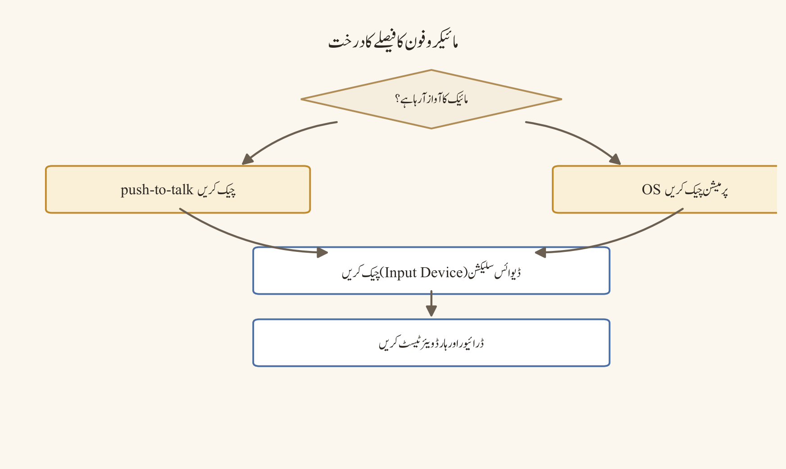
فیصلہ درخت:
موبائل notifications/ڈیٹا/وائس کا مسئلہ؟
↓
OS notification + ڈسکارڈ notification چیک
↓
بیک گراؤنڈ ڈیٹا/بیٹری آپٹیمائزیشن چیک
↓
Wi-Fi/موبائل ڈیٹا کنٹرولڈ سوئچ
↓
media auto-download + کوالٹی سیٹنگ چیک
↓
مائیکروفون/کیمرا/media پرمیشنز چیک
↓
اسٹوریج/cache/خالی جگہ چیک
↓
آفیشل ایپ/OS اپڈیٹ
↓
دستاویز کردہ cleanup/ری انسٹال/سپورٹمثالیں
- بیٹری سیور والا: طالبِ علم نے بیٹری سیور آن کر رکھا تھا اور notifications نہ آنے پر ڈسکارڈ کو موردِ الزام ٹھہرایا — بیٹری سیور بند کرنے سے push ڈیلیوری ٹھیک ہو گئی۔
- بیک گراؤنڈ ڈیٹا محدود: وائس کٹ کٹ کر سنائی دیتی تھی کیونکہ OS نے بیک گراؤنڈ ڈیٹا محدود کر رکھی تھی؛ وجہ نیٹ ورک کی رفتار نہیں تھی۔
- ہر البم کی وسیع اجازت: ایک صارف نے photos کی اجازت کے موقع پر "allow all" منتخب کر دیا، جبکہ اُسے صرف ایک سلائیڈ شیئر کرنی تھی — selected-file option زیادہ محفوظ تھا۔
- موبائل ڈیٹا پر auto-download: media auto-download موبائل ڈیٹا پر غیر محدود تھی، جس سے ڈیٹا کی کھپت اور بیٹری دونوں تیزی سے ختم ہوئیں۔
- OS اپڈیٹ کے بعد ری سیٹ: OS اپڈیٹ کے بعد notification اور photos کی پرمیشنز خودکار ری سیٹ ہو گئی تھیں اور صارف بھول گیا تھا کہ ایسا ہو سکتا ہے۔
عام غلطیاں
- بیٹری سیور آن ہونے پر push ڈیلیوری کو ڈسکارڈ کی خرابی بتانا۔
- بیک گراؤنڈ ڈیٹا restricted ہونے پر وائس کے مسئلے کو نیٹ ورک کی رفتار بتانا۔
- ہر photo البم کی وسیع اجازت دے دینا۔
- media auto-download کو موبائل ڈیٹا پر غیر محدود رکھنا۔
- cache clear کرتے وقت لوکل ڈیٹا کے نقصان کو نظر انداز کرنا۔
- OS اپڈیٹ کے بعد پرمیشنز کے خودکار ری سیٹ ہونے کا امکان بھول جانا۔
سیفٹی اور پرائیویسی نوٹس
موبائل پرمیشنز کی سب سے بڑی غلط فہمی یہ ہے کہ "photos/media کی اجازت" اور "ہر پرائیویٹ البم تک مکمل رسائی" کو ایک سمجھا جائے۔ جب ڈسکارڈ آپ کو selected files تک محدود انتخاب کی پیشکش کرتا ہے، تو وہی ترجیح دیں — کبھی بھی broad access کو ڈیفالٹ نہ بنائیں۔ location کی پرمیشن غیر ضروری ہے، جب تک آپ کو واقعی کسی feature کے لیے درکار نہ ہو۔ سکرین شاٹ شیئر کرنے سے پہلے حساس حصوں کو crop کریں — کچھ سکرین شاٹس میں status bar، notification preview یا کوئی API URL ہوتا ہے۔ اگر آپ مشترکہ/خاندانی ڈیوائس استعمال کرتے ہیں، تو اپنا ڈیٹا، ذاتی چیٹس اور آہستہ آہستہ جمع ہونے والی media cache کو مستقل نہ چھوڑیں۔ جارحانہ cache cleanup سے پہلے ہمیشہ آفیشل روٹ اور ڈیٹا ضائع ہونے کے رسک کی تصدیق کریں۔
پریکٹس ٹاسک
موبائل پر ایک کنٹرولڈ ٹیسٹ شیٹ بنائیے: Wi-Fi کا نتیجہ، موبائل ڈیٹا کا نتیجہ، notification کا نتیجہ، بیک گراؤنڈ ڈیٹا کی حالت، بیٹری موڈ، media سیٹنگ، پرمیشنز اور حتمی نتیجہ۔ ٹیسٹ کے دوران کسی بھی اصلی پرائیویٹ چیٹ یا photo کو شیئر نہ کریں — صرف ڈمی اور منظور شدہ مواد استعمال کریں۔ شیٹ کو کسی محفوظ جگہ رکھیں تاکہ مستقبل میں موبائل مسئلے کے سامنے آپ کا نقشہ تیار ہو۔
چیپٹر چیک لسٹ
- ☐ بیک گراؤنڈ ڈیٹا کی حالت چیک ہے۔
- ☐ push اور in-app notification سیٹنگز چیک ہیں۔
- ☐ بیٹری آپٹیمائزیشن/low power mode نوٹ ہے۔
- ☐ media auto-download پالیسی ریویو ہوئی۔
- ☐ voice/video کوالٹی سیٹنگ مناسب ہے۔
- ☐ مائیکروفون/کیمرا/media پرمیشنز چیک ہیں۔
- ☐ OS اور ایپ اپڈیٹ تصدیق ہیں۔
- ☐ اسٹوریج/cache/خالی جگہ چیک ہے۔
- ☐ Wi-Fi/موبائل ڈیٹا کا موازنہ ریکارڈ ہے۔
- ☐ photos/location کی وسیع رسائی غیر ضروری طور پر enable نہیں۔
سیفٹی انسیڈنٹس اور فوری ردعمل
مقصد
اِس چیپٹر کا مقصد یہ ہے کہ سیفٹی انسیڈنٹ میں رفتار اہم ہے، لیکن جلدی میں نقصان دہ مواد کو amplify کرنا، ثبوتوں کو تبدیل کرنا یا کسی غلط شخص کو کھلے طور پر موردِ الزام ٹھہرانا — یہ سب نقصان کو مزید بڑھا سکتے ہیں۔ ترتیب یہ ہے: پہلے سیفٹی، پھر containment، پھر ثبوت، اور پھر مواصلت۔ یہ ترتیب کبھی نہ بدلیں۔
پیشگی ضروریات
آپ سرور کے مالک/ایڈمن یا designated moderator ہوں، اور آپ کے پاس Manage Channels، Manage Messages، Ban/Kick، Timeout اور View Audit Log جیسی پرمیشنز ہوں۔ ایک لکھا ہوا انسیڈنٹ ریسپانس پلان پہلے سے موجود ہو جس میں یہ واضح ہو: کون انسیڈنٹ کمانڈر ہے، کون backup ہے، اور کس طرح براہ راست emergency سروسز تک پہنچا جائے (مقامی ایمرجنسی نمبر اور ادارے کی safeguarding پالیسی)۔ ایک پرائیویٹ اسٹاف چینل (سادہ ممبرز سے الگ) جہاں timestamped facts شیئر کیے جائیں۔ اور ایک post-incident ریویو ٹیمپلیٹ۔ یہ سب انسیڈنٹ کے دوران نہیں بلکہ اُس سے پہلے تیار کیا جاتا ہے۔
شدت کی سطحیں
| سطح | مثال | ردعمل |
|---|---|---|
| Low | الجھن، accidental spam، معمولی پالیسی کی غلط فہمی | یاد دہانی، چینل رہنمائی، کم سے کم لاگ |
| Medium | بار بار ہراسانی، scam کی کوشش، targeted disruption | ثبوت محفوظ، block/report، ماڈریٹر ایکشن، کوآرڈینیٹر ریویو |
| High | doxxing، exploitation، قابلِ اعتماد threat، مربوط raid | متاثرہ چینلز محدود، ثبوت محفوظ، آفیشل/ایمرجنسی ایسکلیشن، تصدیق شدہ مواصلت |
| Critical | فوری جسمانی خطرہ یا قابلِ اعتماد imminent نقصان | جہاں قابلِ اطلاق ہو وہاں سب سے پہلے مقامی emergency سروسز، پھر پلیٹ فارم/ادارے کا ردعمل |
شدت صرف الفاظ کے علاوہ context، target، credibility، repetition اور فوری رسک کی بنیاد پر طے ہوتی ہے۔ اسٹاف کو طبی/قانونی یقین کا دعویٰ نہیں کرنا؛ observable facts ریکارڈ کرنے ہیں۔
ڈیسک ٹاپ، ویب اور موبائل کے فرق
سیفٹی ردعمل میں پلیٹ فارم کا فرق ثانوی ہے، مگر پھر بھی عملی اثر رکھتا ہے:
ڈیسک ٹاپ/ویب پر audit log، role اور channel overrides کا مجموعی کنٹرول سب سے تیز اور مکمل ہوتا ہے — یہیں containment ایکشنز (چینل لاک، slowmode، role remove) سب سے آسانی سے لی جاتی ہیں۔
موبائل پر آپ notifications تیزی سے تو دیکھ سکتے ہیں، لیکن audit log اور bulk moderation ایکشنز کا تجربہ محدود اور سست ہے۔ اگر انسیڈنٹ موبائل پر نظر آئے، تو وہیں containment کا اہم قدم اٹھائیں، اور پھر فوراً ڈیسک ٹاپ/ویب پر منتقل ہوں۔
کسی بھی پلیٹ فارم پر، emergency سروسز کا کال ہمیشہ پہلے آتا ہے — یہ ڈسکارڈ رپورٹ سے پہلے یا بعد میں ہو سکتا ہے، مگر Critical سطح پر کبھی صرف ڈسکارڈ رپورٹ کا انتظار نہ کریں۔
نمبر وار UI ورک فلو
انسیڈنٹ کمانڈر کا ورک فلو:
- سیفٹی سب سے پہلے: فوری خطرے میں مقامی emergency سروسز اور ادارے کی پالیسی کو ترجیح دیں۔
- نقصان دہ مواد کو forward، quote یا public discussion سے amplify نہ کریں۔
- کم سے کم ضروری ثبوت محفوظ کریں: message ID/link، ٹائم اسٹیمپ، actor، چینل، action اور context۔ حساس ڈیٹا کو ضرورت سے زیادہ copy نہ کریں۔
- متاثرہ چینل کو lock، slowmode، restricted access یا temporary archive کریں۔
- ایک انسیڈنٹ کمانڈر اور backup assign کریں۔
- تصدیق شدہ facts کو اسٹاف چینل میں timestamped timeline کے ساتھ شیئر کریں۔
- ممبر مواصلت مختصر، پرسکون اور non-accusatory ہو۔
- آفیشل ڈسکارڈ رپورٹنگ، ادارے کی safeguarding، legal/institutional پالیسی اور emergency روٹ پر عمل کریں۔
- Action log اور decision owner ریکارڈ کریں۔
- Post-incident ریویو میں لکھیں کیا کام کیا، کیا نہیں، اور کیا تبدیل کرنا ہے۔
انسیڈنٹ مخصوص ورک فلو:
- Scam link: link کو click/open نہ کریں۔ پیغام کو نقصان دہ مواد کے طور پر محفوظ رکھیں، متاثرہ یوزرز کو وارننگ دیں، link/report روٹ استعمال کریں، compromised اکاؤنٹ کا امکان نوٹ کریں، اور public thread میں link دہراتے نہیں۔
- Doxxing: public post کو جلد از جلد restrict/remove کرنے کا authorized action لیں، متاثرہ شخص کو نجی، آفیشل روٹ پر سپورٹ دیں، ذاتی ڈیٹا کو کہیں اور copy نہ کریں، ثبوت کو کم سے کم اور restricted رکھیں، اور high-severity ایسکلیشن پر عمل کریں۔
- Harassment: متاثرہ شخص کو عوامی بحث میں شامل ہونے پر مجبور نہ کریں۔ screenshots/IDs، timestamps اور پچھلی رپورٹس محفوظ رکھیں، both alleged actor اور target کے لیے منصفانہ عمل برقرار رکھیں، proportional action لیں، اور appeal روٹ دستاویز کریں۔
- Credible threat: فوری جسمانی سیفٹی کو ترجیح دیں۔ مقامی emergency سروسز/ادارے کے safeguarding روٹ کو پلیٹ فارم رپورٹ سے پہلے یا parallel فالو کریں۔ اسٹاف خود investigation یا confrontation شروع نہ کرے۔
فیصلہ درخت:
سیفٹی انسیڈنٹ رپورٹ ہوا؟
↓
فوری جسمانی خطرہ؟
ہاں → سب سے پہلے مقامی emergency/ادارتی روٹ
نہیں
نقصان دہ مواد amplify ہو رہا ہے؟
ہاں → بغیر وسیع کاپی کیے restrict/remove
نہیں
ثبوت کم سے کم اور restricted محفوظ کریں
↓
شدت low/medium/high/critical assign کریں
↓
انسیڈنٹ کمانڈر + backup assign
↓
متاثرہ چینلز/اکاؤنٹس contain کریں
↓
آفیشل/پلیٹ فارم/ادارتی ایسکلیشن
↓
تصدیق شدہ ممبر مواصلت
↓
Timeline، action log، appeal/ریویومثالیں
- Scam link کا عوامی دہراؤ: ایک ممبر نے scam link کو " خبردار کرو" کے نام پر public چینل میں دہرا دیا — جو کہ amplify ہے۔ درست طریقہ: وارننگ بغیر link کے دی جائے اور نقصان دہ مواد آفیشل روٹ سے رپورٹ ہو۔
- Doxxing کا فوری containment: کسی نے ذاتی معلومات پوسٹ کر دیں۔ ماڈریٹر نے پہلے post restrict کیا، پھر متاثرہ شخص کو نجی روٹ پر سپورٹ دی، اور ذاتی ڈیٹا کو کہیں اور copy نہیں کیا۔
- Harassment میں منصفانہ عمل: کچھ ممبرز فوراً پابند لگانے کا مطالبہ کرتے ہیں، مگر کمانڈر نے screenshots، timestamps اور پچھلی رپورٹس کے ساتھ proportional action لیا اور appeal روٹ بھی لکھ دیا۔
- Credible threat میں ترتیب: خطرے کی اطلاع پر سب سے پہلے مقامی emergency سروسز کو کال کیا گیا، پھر پلیٹ فارم رپورٹ — اسٹاف نے خود تفتیش یا مقابلہ شروع نہیں کیا۔
عام غلطیاں
- scam link کو وارننگ کے لیے public چینل میں دہراؤ۔
- متاثرہ شخص سے public چینل میں سب کچھ بیان کرواؤ۔
- ثبوت کے نام پر ذاتی ڈیٹا ہر اسٹاف ممبر کو بھیج دینا۔
- Critical انسیڈنٹ میں صرف ڈسکارڈ رپورٹ کا انتظار کرنا۔
- ماڈریٹر کی ذاتی رائے کو حتمی حقیقت قرار دینا۔
- post-incident ریویو کے بغیر اُسی کنٹرول کی ناکامی کو دہرانا۔
سیفٹی اور پرائیویسی نوٹس
سیفٹی انسیڈنٹ کا سب سے بڑا رسک یہ ہے کہ جوابی کارروائی خود ہی دوسرا انسیڈنٹ بن جائے۔ نقصان دہ مواد کو کھلے عام دہرانا، screen capture کر کے پھیلانا یا quote کرنا — یہ سب amplify ہے، بھلے ہی ارادہ کتنا ہی اچھا کیوں نہ ہو۔ ثبوت کو ہمیشہ کم سے کم، need-to-know اسٹاف تک محدود رکھیں، اور ثبوت والی فائل کے access log اور retention period کو واضح کریں۔ screenshot کو edit/crop کرتے وقت original کو محفوظ رکھیں۔ متاثرہ شخص یا گواہ سے بار بار بیان لے کر انہیں دوبارہ صدمہ نہ دیں۔ public چینل میں "مجرم" کا لیبل استعمال نہ کریں؛ facts اور عمل کی زبان استعمال کریں — accountability اور الزام میں فرق ہے۔ Critical سطح پر کبھی بھی صرف پلیٹ فارم رپورٹ کا انتظار نہ کریں؛ مقامی emergency سروسز ہمیشہ پہلے آتی ہیں۔
پریکٹس ٹاسک
ایک tabletop exercise کریں: فرضی سرور میں ایک مربوط raid اور doxxing کی کوشش ہو رہی ہے۔ ٹیم کو 10 منٹ کی timeline، شدت، کمانڈر، containment ایکشنز، ثبوت کی فہرست، مواصلت کا ڈرافٹ اور ایسکلیشن روٹ لکھنا ہے۔ مشق کے بعد ہر ایکشن کو سیفٹی، تناسب (proportionality) اور ڈاکیومنٹیشن کی بنیاد پر ریویو کریں۔
چیپٹر چیک لسٹ
- ☐ فوری خطرے کے لیے مقامی/ادارتی روٹ شناخت ہے۔
- ☐ نقصان دہ مواد amplify نہیں ہوا۔
- ☐ کم سے کم ضروری ثبوت محفوظ ہوئے۔
- ☐ ثبوت تک رسائی restricted ہے۔
- ☐ متاثرہ چینلز/اکاؤنٹس contain ہوئے۔
- ☐ انسیڈنٹ کمانڈر اور backup assign ہوئے۔
- ☐ تصدیق شدہ facts کی ممبر مواصلت کا ڈرافٹ ہوا۔
- ☐ Timeline اور action log برقرار ہیں۔
- ☐ آفیشل/پلیٹ فارم/ادارتی ایسکلیشن پر عمل ہوا۔
- ☐ Appeal/post-incident ریویو کا پلان ہے۔
حصہ 9 — حوالہ جاتی مواد (حصہ اول)
فوری آغاز کی چیک لسٹس
فوری آغاز کی چیک لسٹ کا مقصد ممبر کو پہلے دس منٹ میں محفوظ اور پُراعتماد آغاز دینا ہے۔ ہر چیک لسٹ کو اپنے سرور کے اصل لیبلز، پالیسیوں اور دستیاب فیچرز کے مطابق اپنی بنائیں۔
مقصد
اِس چیپٹر کا مقصد نئے ممبر کو پہلے دس منٹ میں محفوظ، باوقار اور پُراعتماد آغاز فراہم کرنا ہے۔ یہ چیک لسٹس اکاؤنٹ سیکیورٹی، سرور کی تصدیق، پہلے پیغام، پہلے وائس سیشن اور ذاتی سیفٹی کے معمول کو ایک ترتیب وار سلسلے میں جوڑتی ہیں۔ ہر چیک لسٹ کو اپنے سرور کے اصل لیبلز، پالیسیوں اور دستیاب فیچرز کے مطابق اپنی بنائیں؛ یہ کسی بھی تبدیلی سے پہلے ایک نقطۂ آغاز ہیں، حتمی حوالہ نہیں۔
پیشگی ضروریات
آپ کے پاس سرکاری ڈسکارڈ ایپ یا ویب کلائنٹ اور ایک قابلِ اعتماد سرور جوائن لنک ہونا چاہیے۔ اکاؤنٹ بنانے کے لیے ایک درست ای میل یا فون نمبر، اور ریکوری و 2FA کے لیے محفوظ ذخیرہ ضروری ہے۔ اگر آپ مشترکہ ڈیوائس استعمال کر رہے ہیں تو ہر سیشن کے بعد لاگ آؤٹ کا منصوبہ پہلے بنائیں۔
ڈیسک ٹاپ، ویب اور موبائل کے فرق
ڈیسک ٹاپ اور ویب پر انسٹالیشن، کی بورڈ نیویگیشن اور مائیکروفون/کیمرہ کی پرمیشنز آسانی سے کنٹرول ہوتی ہیں۔ موبائل پر OS کی نوٹیفکیشن، بیٹری اور ڈیٹا کی ترجیحات زیادہ اثر انداز ہوتی ہیں، اور کچھ اختیارات نیسٹڈ مینوز میں چھپے ہو سکتے ہیں۔ ہر چیک لسٹ کو اپنے کلائنٹ کے لیبلز کے ساتھ چلائیں۔
81.1 نئے ممبر کی چیک لسٹ
- ☐ سرکاری ڈسکارڈ ایپ/ماخذ سے انسٹال کیا۔
- ☐ مضبوط اور منفرد پاس ورڈ سیٹ کیا۔
- ☐ ریکوری ای میل/فون اور 2FA/ریکوری کوڈز محفوظ کیے۔
- ☐ ڈسپلے نام اور پروفائل سے غیر ضروری ذاتی ڈیٹا ہٹایا۔
- ☐ سرور کے جوائن لنک کا ماخذ اور سرور کا مقصد تصدیق کیا۔
- ☐ ویلکم/قواعد چینل پڑھا۔
- ☐ ضروری رول سلیکشن یا تصدیق مکمل کی۔
- ☐ اپنے ڈیوائس پر نوٹیفکیشن، مائیکروفون اور کیمرہ کی پرمیشنز کا جائزہ لیا۔
- ☐ پبلک، صرف اسٹاف والے اور پرائیویٹ چینلز کا فرق سمجھا۔
- ☐ رپورٹ، بلاک اور مدد کا راستہ محفوظ کیا۔
- ☐ نامعلوم لنکس، Nitro scams اور غیر سرکاری بَٹس سے بچنے کا قاعدہ یاد رکھا۔
- ☐ پہلا پیغام مناسب چینل میں ٹیسٹ کیا۔
81.2 پہلی سرور پوسٹ کی چیک لسٹ
- ☐ چینل کے مقصد کی جانچ کی۔
- ☐ پیغام مختصر اور باوقار ہے۔
- ☐ حساس ڈیٹا، پاس ورڈ، OTP اور پرائیویٹ لنک شامل نہیں۔
- ☐ صرف متعلقہ رول/صارف کا مینشن استعمال کیا۔
- ☐ لنک کی منزل اور اعتماد کی تصدیق کی۔
- ☐ تاریخ/ٹائم زون اور آخری تاریخ واضح ہیں۔
- ☐ تصویر ہو تو متن میں سیاق و سباق شامل کیا۔
- ☐ جواب کی توقع حقیقت پسندانہ ہے۔
- ☐ لہجہ موبائل پر بھی واضح ہے۔
81.3 پہلے وائس سیشن کی چیک لسٹ
- ☐ درست ان پٹ/آؤٹ پٹ ڈیوائس منتخب ہے۔
- ☐ مائیکروفون/اسپیکر کا ٹیسٹ کسی قابلِ اعتماد ممبر کے ساتھ ہوا۔
- ☐ mute، deafen اور
Push-to-Talkکی حالت واضح ہے۔ - ☐ پس منظر کے شور اور نوٹیفکیشنز کا جائزہ ہوا۔
- ☐ وائس چینل کا مقصد اور آداب سمجھے۔
- ☐ ریکارڈنگ/رضامندی کی پالیسی چیک ہوئی۔
- ☐ متبادل ٹیکسٹ چینل کا راستہ پتہ ہے۔
81.4 ہفتہ وار ذاتی سیفٹی چیک لسٹ
- ☐ لاگ اِن ایکٹیویٹی اور ریکوری آپشنز کا جائزہ ہوا۔
- ☐ نامعلوم DMs/لنکس پر اعتماد نہیں کیا۔
- ☐ پبلک پروفائل میں کوئی ایسی ذاتی معلومات نہیں جو تبدیل ہو سکیں۔
- ☐ سرور قواعد/نوٹیفکیشن ترجیحات موجودہ ہیں۔
- ☐ اہم فائلز کا منظور شدہ بیک اپ/ریٹینشن راستہ پتہ ہے۔
- ☐ مشکوک رویے کا رپورٹ راستہ یاد ہے۔
نمبر وار UI ورک فلو
- سرکاری ڈسکارڈ ڈاؤن لوڈ پیج سے اپنے ڈیوائس کے لیے کلائنٹ انسٹال کریں۔
User Settingsمیں پاس ورڈ، ریکوری ای میل/فون اور 2FA سیٹ کریں۔- اپنا ڈسپلے نام اور پروفائل سیٹ کریں؛ غیر ضروری ذاتی ڈیٹا ہٹائیں۔
- قابلِ اعتماد جوائن لنک سے سرور جوائن کریں اور ویلکم/قواعد چینل پڑھیں۔
- ضروری رول سلیکشن یا تصدیق مکمل کریں۔
- ڈیوائس کی نوٹیفکیشن، مائیکروفون اور کیمرہ پرمیشنز کا جائزہ لیں۔
- پہلا پیغام مناسب چینل میں بھیجیں اور 81.2 کی چیک لسٹ سے تصدیق کریں۔
- پہلے وائس سیشن سے پہلے 81.3 کی چیک لسٹ چلائیں۔
- رپورٹ، بلاک اور مدد کا راستہ نوٹس میں محفوظ کریں۔
- 81.4 کی ہفتہ وار چیک لسٹ اپنے کیلنڈر میں مقرر کریں۔
مثالیں
| صارف | پہلے دس منٹ میں اقدام |
|---|---|
| نیا طالبِ علم | سرکاری ایپ انسٹال کرتا ہے، 2FA آن کرتا ہے، کلاس کا سرور جوائن کرتا ہے، #rules پڑھتا ہے، پھر #introductions میں پہلا پیغام |
| کمیونٹی ممبر | سرور کے مقصد کی تصدیق کرتا ہے، رول سلیکشن مکمل کرتا ہے، رپورٹ/بلاک کا راستہ نوٹ کرتا ہے |
| مشترکہ ڈیوائس صارف | پاس ورڈ مینیجر سے لاگ اِن کرتا ہے، ذاتی سیٹنگز عوامی نہیں چھوڑتا، سیشن ختم کرتا ہے |
عام غلطیاں
- 2FA اور ریکوری کوڈز کو بعد کے لیے ٹالنا۔
- جوائن لنک کو کسی بھی عوامی جگہ شیئر کرنا۔
- ویلکم/قواعد چینل پڑھے بغیر پہلا پیغام بھیج دینا۔
- پروفائل میں فون نمبر یا پتہ جیسی ذاتی معلومات رکھنا۔
- نامعلوم DM یا “مفت Nitro” جیسے پیغامات پر کلک کرنا۔
- مشترکہ ڈیوائس پر لاگ اِن چھوڑ کر چلے جانا۔
سیفٹی اور پرائیویسی نوٹس
پہلے دس منٹ کے اقدامات ہی آپ کے اکاؤنٹ کا سب سے مضبوط یا کمزور حصہ بنتے ہیں۔ پاس ورڈ، 2FA اور ریکوری کوڈز کبھی کسی چینل، DM یا عوامی نوٹ میں نہ لکھیں۔ پروفائل پر اتنی ہی معلومات رکھیں جتنی ضروری ہو؛ ظاہری معلومات آپ کو doxxing، فشنگ اور اسکام کا نشانہ بنا سکتی ہیں۔ رپورٹ اور بلاک کا راستہ جاننا خود سیفٹی کا حصہ ہے۔
پریکٹس ٹاسک
نئے ممبر کی حیثیت سے کسی ٹیسٹ سرور کو جوائن کریں اور اوپر کی چیک لسٹس کو ٹائم سٹیمپ شدہ نوٹس کے ساتھ مکمل کریں۔ ہر ناکام آئٹم کے لیے وجہ اور اگلا اقدام لکھیں۔ پھر ایک تجربہ کار ممبر کی حیثیت سے اسی چیک لسٹ کا جائزہ لیں اور مبہم الفاظ کو درست کریں۔
چیپٹر چیک لسٹ
- ☐ چیک لسٹس اپنے سرور کے لیبلز اور پالیسیوں کے مطابق ڈھال لیں۔
- ☐ اکاؤنٹ سیکیورٹی کی چیک لسٹ (81.1) کم از کم ایک بار چلائی۔
- ☐ پہلی پوسٹ، پہلے وائس سیشن اور ہفتہ وار چیک لسٹ آزمائیں۔
- ☐ ڈیسک ٹاپ/ویب/موبائل پر پرمیشن اور نوٹیفکیشن کے فرق نوٹ کیے۔
- ☐ رپورٹ/بلاک/مدد کا راستہ محفوظ کیا۔
- ☐ مشترکہ ڈیوائس کے لیے لاگ آؤٹ کا منصوبہ ہے۔
طالبِ علم کی چیک لسٹ
طالبِ علم کی چیک لسٹ کورس سرور کو سیکھنے کے ورک فلو کا حصہ بناتی ہے۔ اِس کا مقصد ہر طالبِ علم کو اعلانات، سوال و جواب (Q&A)، اسائنمنٹ، وائس سپورٹ اور مدد کے راستے کا ایک قابلِ پیشگوئی پیٹرن دینا ہے۔
مقصد
اِس چیپٹر کا مقصد ہر طالبِ علم کو معلومات، شرکت، اسائنمنٹس، وائس/ریکارڈنگ اور مدد کے لیے ایک مستقل اور قابلِ پیشگوئی پیٹرن دینا ہے۔ جب راستے واضح ہوں تو طالبِ علم گھومنے پھرنے، غلط چینل میں سوال پوچھنے یا آخری لمحے کے دباؤ میں کام کرنے کے بجائے سیکھنے پر توجہ دیتا ہے۔
پیشگی ضروریات
ایک سرکاری کلاس/کورس سرور کا قابلِ اعتماد جوائن لنک، اپنے ادارے کے مطابق ڈسپلے نام، اور اعلانات و اسائنمنٹس تک باقاعدہ رسائی کا وقت درکار ہے۔ اگر آپ کو رسائی، زبان یا کسی اور رکاوٹ کا سامنا ہے تو انسٹرکٹر یا نگران سے رابطے کا نجی راستہ پہلے معلوم کر لیں۔
ڈیسک ٹاپ، ویب اور موبائل کے فرق
کورس کے اعلانات اور فائلز ڈیسک ٹاپ/ویب پر بڑی اسکرین اور بہتر کی بورڈ نیویگیشن کے ساتھ پڑھے جا سکتے ہیں۔ موبائل پر اسائنمنٹ فائلز کا ڈاؤن لوڈ، اسٹوریج اور ڈیٹا کا استعمال محدود ہو سکتا ہے؛ اس لیے بڑی فائلز کے لیے Wi-Fi اور ڈیسک ٹاپ کو ترجیح دیں۔ وائس/ویڈیو میں شرکت اور کیمرے کی پالیسی پر ہر کلائنٹ ایک جیسی نہیں ہوتی۔
82.1 تعارف (Orientation)
- ☐ کلاس/کورس سرور کی شناخت اور سرکاری جوائن لنک کی تصدیق کی۔
- ☐ ڈسپلے نام کورس کی روایت کے مطابق سیٹ کیا۔
- ☐ ویلکم، اعلانات، Q&A، وسائل، اسائنمنٹس اور مدد کے چینلز تلاش کیے۔
- ☐ اعلانات کے چینل کا نوٹیفکیشن لیول کورس کی ضرورت کے مطابق سیٹ کیا۔
- ☐ Q&A تھریڈ کے استعمال، تلاش اور دہرائے گئے سوال کی پالیسی سمجھی۔
- ☐ انسٹرکٹر/نگران سے رابطے اور نجی مدد کا راستہ محفوظ کیا۔
82.2 شرکت
- ☐ سوال پوسٹ کرنے سے پہلے تلاش (search) کی۔
- ☐ چینل کے موضوع کے مطابق سوال لکھا۔
- ☐ کوڈ/فائل/اسکرین شاٹ سے حساس ڈیٹا ہٹایا۔
- ☐ ہم جماعت کے جواب کا باوقار طریقے سے اعتراف کیا۔
- ☐ اہم جواب کو تھریڈ/نوٹ میں منظم کیا۔
- ☐ گروپ ورک میں رضامندی، حصہ داری اور فائل کی ملکیت واضح کی۔
82.3 اسائنمنٹس اور وسائل
- ☐ اسائنمنٹ کے لنک کی سرکاری ماخذ سے تصدیق کی۔
- ☐ آخری تاریخ، ٹائم زون اور لیٹ پالیسی نوٹ کی۔
- ☐ فائل کی فارمیٹ، سائز اور جمع کروانے کے راستے کی جانچ کی۔
- ☐ کاپی رائیٹ شدہ مواد کو منظور شدہ راستے سے شیئر کیا۔
- ☐ ڈاؤن لوڈ کی گئی فائل کو میلویئر/پرائیویسی رسک کے لحاظ سے محتاط طریقے سے ہینڈل کیا۔
- ☐ جمع کروانے کی تصدیق/محفوظ ثبوت کو منظور شدہ جگہ پر رکھا۔
82.4 وائس، ریکارڈنگ اور رسائی
- ☐ وائس روم کے آداب اور mute کی نظم و ضبط سمجھی۔
- ☐ کیمرے کی اختیاری/لازمی پالیسی اور رضامندی کا راستہ واضح ہے۔
- ☐ ریکارڈنگ/ٹرانسکرپٹ/نوٹس کی پالیسی پڑھی۔
- ☐ async نوٹس یا متبادل شرکت کا راستہ پتہ ہے۔
- ☐ رسائی (accessibility) کی سہولت کے لیے سرکاری/نجی راستہ پتہ ہے۔
- ☐ ٹائم زون اور جواب کی متوقع مدت نوٹ ہے۔
82.5 مدد اور رپورٹنگ
- ☐ تعلیمی مدد کے چینل اور نجی انسٹرکٹر کے راستے میں فرق کیا۔
- ☐ ہراسمنٹ، scam، doxxing یا سیفٹی کے خدشے کا رپورٹ راستہ محفوظ کیا۔
- ☐ ثبوت کو محفوظ اور کم سے کم طریقے سے محفوظ کرنا سیکھا۔
- ☐ اپیل یا خدشے کی ایسکلیشن کا عمل پتہ ہے۔
- ☐ ایمرجنسی کے موقع پر مقامی/ادارتی راستے کو پلیٹ فارم رپورٹ پر ترجیح دینا یاد رکھا۔
نمبر وار UI ورک فلو
- سرکاری جوائن لنک سے کورس سرور جوائن کریں اور ڈسپلے نام کورس کے مطابق سیٹ کریں۔
- ویلکم، اعلانات، Q&A، وسائل، اسائنمنٹس اور مدد کے چینلز کو ایک بار نظر سے گزاریں۔
- اعلانات کے چینل کی نوٹیفکیشن کو اپنی ضرورت کے مطابق سیٹ کریں۔
- سوال پوچھنے سے پہلے Q&A چینل میں تلاش کریں۔
- اسائنمنٹ کی آخری تاریخ اور جمع کروانے کے راستے کو کیلنڈر میں نوٹ کریں۔
- وائس سیشن سے پہلے mute/ریکارڈنگ کی پالیسی اور متبادل شرکت کا راستہ چیک کریں۔
- کوئی سیفٹی کا خدشہ ہو تو نجی انسٹرکٹر/نگران کے راستے یا پلیٹ فارم رپورٹ استعمال کریں۔
مثالیں
- پہلا سوال پوچھنا: طالبِ علم پہلے
#q-and-aمیں تلاش کرتا ہے، پھر اپنے سوال میں کورس کا موضوع، اپنی کوشش اور مخصوص سوال شامل کرتا ہے۔ - اسائنمنٹ جمع کروانا: سرکاری لنک سے فارمیٹ/سائز چیک کرتا ہے، فائل سے اپنا نام/رول نمبر جیسی غیر ضروری معلومات ہٹاتا ہے، اور تصدیقی رسید کو محفوظ رکھتا ہے۔
- گروپ پراجیکٹ: حصہ داری، فائل کی ملکیت اور فیصلوں کی ٹائم لائن لکھتا ہے تاکہ تنازعہ نہ ہو۔
- ایمرجنسی: کسی بھی حقیقی خطرے کی صورت میں پہلے مقامی ایمرجنسی یا ادارتی سیفٹی رابطے کو ترجیح دیتا ہے۔
عام غلطیاں
- بغیر تلاش کیے بار بار وہی سوال پوچھنا۔
- اسائنمنٹ کی آخری تاریخ اور ٹائم زون کو نہ نوٹ کرنا۔
- اسکرین شاٹ یا کوڈ میں پاس ورڈ/کریڈینشلز یا نجی ڈیٹا چھوڑ دینا۔
- اجازت کے بغیر کیمرہ/ریکارڈنگ آن کر دینا۔
- کاپی رائیٹ شدہ مواد کو غیر منظور شدہ راستے سے شیئر کرنا۔
- سیفٹی کے خدشے کو عوامی چینل میں بحث کا موضوع بنانا بجائے نجی رپورٹ کے۔
سیفٹی اور پرائیویسی نوٹس
تعلیمی سرور میں آپ کا ڈسپلے نام، فائلز اور تعاملات استاد اور ہم جماعتوں کو نظر آتے ہیں۔ اسائنمنٹس اور اسکرین شاٹس سے کریڈینشلز، OTP اور نجی لنک ہمیشہ ہٹائیں۔ کیمرہ اور ریکارڈنگ کی پالیسی پڑھیں اور رضامندی کے بغیر کسی کی شناخت یا آواز کی ریکارڈنگ شیئر نہ کریں۔ کسی بھی ہراسمنٹ یا scam کی اطلاع نجی راستے سے دیں اور ثبوت کو کم سے کم ضروری مواد تک محدود رکھیں۔
پریکٹس ٹاسک
اپنے کورس سرور کے لیے ایک “طالبِ علم کا سفر” (student journey) لکھیں: جوائن، تصدیق، پہلا اعلان، پہلا سوال، اسائنمنٹ جمع کروانا، وائس سپورٹ، مدد کی درخواست اور سیفٹی رپورٹ۔ ہر مرحلے پر ضروری چینل، متوقع ایکشن اور fallback راستہ بیان کریں۔
چیپٹر چیک لسٹ
- ☐ تمام بنیادی کورس چینلز تلاش اور نوٹ کیے۔
- ☐ سوال پوچھنے سے پہلے تلاش کی عادت بنائی۔
- ☐ اسائنمنٹ کی آخری تاریخ/ٹائم زون اور جمع کروانے کا راستہ نوٹ کیا۔
- ☐ کیمرہ/ریکارڈنگ/رضامندی کی پالیسی پڑھی۔
- ☐ متبادل (async) شرکت اور رسائی کا راستہ پتہ ہے۔
- ☐ سیفٹی رپورٹ اور ایسکلیشن کا نجی راستہ محفوظ ہے۔
ممبر کی چیک لسٹ
ممبر کی چیک لسٹ کمیونٹی کے روزمرہ رویے کو قابلِ پیشگوئی اور محفوظ بناتی ہے۔ ممبر کو ایڈمن کے اختیارات کی ضرورت نہیں؛ اُسے واضح حدود، باوقار شرکت اور رپورٹ کا راستہ درکار ہے۔
مقصد
اِس چیپٹر کا مقصد ایک عام ممبر کے لیے روزمرہ شرکت، حدود اور سیفٹی کا مستقل معیار قائم کرنا ہے۔ یہ چیک لسٹ یہ فرض کرتی ہے کہ ممبر کے پاس ایڈمن اختیارات نہیں ہیں — اُس کی طاقت واضح حدود، باوقار رویے اور درست رپورٹنگ کے راستے میں ہے۔
پیشگی ضروریات
کمیونٹی سرور کی رکنیت اور قواعد کا صفحہ پڑھنا، اپنے رول/تصدیق کی حیثیت جاننا، اور رپورٹ/بلاک کے راستے سے واقفیت درکار ہے۔ ایڈمن پرمیشنز کی ضرورت نہیں۔
83.1 جوائننگ اور آن بورڈنگ
- ☐ قواعد اور پن شدہ (pinned) رہنمائی پڑھی۔
- ☐ رول سلیکشن/تصدیق مکمل کی۔
- ☐ چینلز کے موضوعات اور پابندی والی جگہیں سمجھیں۔
- ☐ ڈسپلے نام/کمیونٹی کی روایت کی پیروی کی۔
- ☐ پروفائل سے غیر ضروری حساس ڈیٹا ہٹایا۔
- ☐ DMs اور مینشن کی حدود کا جائزہ لیا۔
83.2 روزمرہ شرکت
- ☐ درست چینل/تھریڈ استعمال کیا۔
- ☐ صرف متعلقہ مینشن کیا؛ @everyone/@here سے گریز کیا۔
- ☐ پیغام مختصر، قابلِ تلاش اور باوقار ہے۔
- ☐ لنکس کی تصدیق کی اور غیر قابلِ اعتماد لنکس شیئر نہیں کیے۔
- ☐ فائلز میں ذاتی ڈیٹا، میلویئر کا رسک اور کاپی رائٹ چیک کیا۔
- ☐ اختلاف میں رویے کو مخاطب کیا، شناخت پر حملہ نہیں کیا۔
- ☐ وائس/ویڈیو میں رضامندی، mute اور ریکارڈنگ کے قواعد مانے۔
83.3 سیفٹی اور حدود
- ☐ نامعلوم DMs، تحفے اور Nitro طرز کے scams پر بغیر تصدیق اعتماد نہیں کیا۔
- ☐ ذاتی معلومات عوامی چینل میں شیئر نہیں کیں۔
- ☐ کسی اور کی شناخت، مقام یا نجی گفتگو ظاہر نہیں کی۔
- ☐ ہراسمنٹ یا scam کو عوامی بحث کے بجائے رپورٹ کے راستے پر بھیجا۔
- ☐ بلاک اور رپورٹ کے فرق کو سمجھا۔
- ☐ نگران کے فیصلے پر ثبوت اور اپیل کا راستہ استعمال کیا۔
83.4 چھوڑنا یا وقفہ لینا
- ☐ عارضی غیر حاضری کے لیے متوقع رابطے/رول کی پالیسی چیک کی۔
- ☐ نجی ڈیٹا اور شیئر کی گئی فائلز کا جائزہ لیا۔
- ☐ سرور چھوڑنے/میوٹ/نوٹیفکیشن ایکشن کے اثرات سمجھے۔
- ☐ واپسی پر قواعد/ورژن اپڈیٹ چیک کیا۔
نمبر وار UI ورک فلو
- جوائن کرنے کے بعد قواعد اور پن شدہ رہنمائی پڑھیں۔
- رول سلیکشن/تصدیق مکمل کریں اور ڈسپلے نام کمیونٹی کے مطابق رکھیں۔
- پروفائل سے غیر ضروری حساس ڈیٹا ہٹائیں اور DM/مینشن کی حدود سیٹ کریں۔
- پیغام بھیجنے سے پہلے درست چینل منتخب کریں اور مینشن کی ضرورت چیک کریں۔
- کوئی لنک یا فائل شیئر کرنے سے پہلے منزل اور مواد کی تصدیق کریں۔
- کسی بھی ہراسمنٹ یا scam میں عوامی جواب دینے کے بجائے رپورٹ کریں۔
- وقفہ لینے یا چھوڑنے سے پہلے اپنے شیئر کردہ ڈیٹا کا جائزہ لیں۔
مثالیں
| صورتحال | محفوظ تر متبادل |
|---|---|
| کسی نے DM پر خلل ڈالنے کی کوشش کی | بلاک کریں اور بغیر جواب دیے رپورٹ کریں |
| @everyone سے غیر مناسب میم | چینل کے موضوع کے مطابق جواب یا رپورٹ؛ عوامی جنگ نہیں |
| پرائیویٹ معلومات مانگنے والا “تحفے” والا scam | فوری طور پر رپورٹ اور بلاک؛ کچھ شیئر نہیں کریں |
| کسی تنازعے میں نگران کا فیصلہ | ثبوت کے ساتھ اپیل کے سرکاری راستے کا استعمال |
عام غلطیاں
- @everyone/@here کا بے دریغ استعمال۔
- غصے میں عوامی چینل پر جواب دینا بجائے نجی رپورٹ کے۔
- نامعلوم DM یا “مفت Nitro” پیغام پر اعتماد کرنا۔
- اپنا فون نمبر، پتہ یا پاس ورڈ کسی چینل میں لکھ دینا۔
- کسی اور کی نجی گفتگو یا شناخت شیئر کرنا۔
- نگران کے فیصلے کو بغیر ثبوت اور اپیل کے من مان لینا۔
سیفٹی اور پرائیویسی نوٹس
ممبر کی سب سے بڑی طاقت واضح حدود اور درست رپورٹنگ ہے۔ اپنی اور دوسروں کی ذاتی معلومات کو کبھی عوامی چینل میں نہ لائیں۔ بلاک اور رپورٹ کے فرق کو جانیں: بلاک آپ کے اپنے تجربے کو بہتر بناتا ہے، رپورٹ کمیونٹی کو محفوظ بناتا ہے۔ کسی بھی ثبوت کو محفوظ کرتے وقت صرف کم سے کم ضروری مواد ہی رکھیں اور اسے نجی، منظور شدہ جگہ پر محفوظ کریں۔
پریکٹس ٹاسک
اپنے سرور کے لیے “اچھا ممبر” اور “خطرناک ممبر” کے دو نمونہ منظرنامے لکھیں۔ ہر منظرنامے میں پیغام، ممکنہ اثر، محفوظ تر متبادل اور رپورٹ/نگرانی کا جواب شامل کریں۔
چیپٹر چیک لسٹ
- ☐ قواعد اور پن شدہ رہنمائی پڑھی۔
- ☐ رول/تصدیق اور ڈسپلے نام کی روایت مکمل کی۔
- ☐ درست چینل اور محدود مینشن کی عادت بنائی۔
- ☐ scam، DM اور پرائیویسی کی حدود سمجھیں۔
- ☐ بلاک بمقابلہ رپورٹ کا فرق واضح ہے۔
- ☐ چھوڑنے/وقفے کے اثرات اور واپسی کی چیک لسٹ پتہ ہے۔
نگران (Moderator) کی چیک لسٹ
نگران کی چیک لسٹ اختیار کو عمل میں تبدیل کرتی ہے۔ نگران کا کام صرف ڈیلیٹ/بین کرنا نہیں؛ اِس میں روک تھام، ترجیح بندی (triage)، ثبوت، تناسب، دستاویزات اور سیکھنا شامل ہے۔
مقصد
اِس چیپٹر کا مقصد نگرانی کے اختیار کو ایک دہرائے جانے والے، منصفانہ اور قابلِ جواب دہ عمل میں تبدیل کرنا ہے۔ نگران صرف ڈیلیٹ یا بین نہیں کرتا — اُس کے کردار میں روک تھام، رپورٹ کی ترجیح بندی، ثبوت کا تحفظ، متناسب کارروائی، دستاویزات اور مستقل سیکھنا شامل ہے۔
پیشگی ضروریات
نگران کا رول، پرمیشن میٹرکس، ایسکلیشن کے رابطے اور اِنسڈنٹ لاگ تک رسائی ہونی چاہیے۔ موجودہ قواعد/پالیسی ورژن اور AutoMod کی کنفیگریشن سے واقفیت درکار ہے۔ حساس ثبوت کے ذخیرے اور ریٹینشن پالیسی کا علم ضروری ہے۔
ڈیسک ٹاپ، ویب اور موبائل کے فرق
نگرانی کا مکمل ورک فلو (آڈٹ لاگ، پرمیشن ٹولز، پیغامات کا پورا سیاق) ڈیسک ٹاپ/ویب پر آسان ہوتا ہے۔ موبائل پر رپورٹ کی وصولداری اور فوری ایکشنز ممکن ہیں، مگر بڑی تحقیقات اور دستاویزات کے لیے ڈیسک ٹاپ کو ترجیح دیں۔ نگرانوں کے شفٹ ہاتھ اوور کے نوٹس دونوں جگہوں پر دستیاب ہوں۔
84.1 شفٹ کی تیاری
- ☐ موجودہ قواعد، پالیسی ورژن اور پن شدہ رہنمائی پڑھی۔
- ☐ رول/پرمیشن میٹرکس اور ایسکلیشن رابطوں کی تصدیق کی۔
- ☐ رپورٹ چینل، اِنسڈنٹ لاگ اور اپیل کا راستہ قابلِ رسائی ہے۔
- ☐ AutoMod کے قواعد اور حالیہ الرٹس کا جائزہ لیا۔
- ☐ نگرانوں کی کوریج، ہاتھ اوور نوٹس اور بیک اپ مالک چیک کیا۔
- ☐ حساس ثبوت کے ذخیرے اور ریٹینشن پالیسی یاد ہے۔
84.2 رپورٹ کی وصولداری
- ☐ رپورٹ کرنے والے کو محفوظ/نجی راستے پر تسلیم کیا۔
- ☐ میسج ID/لنک، ٹائم سٹیمپ، فاعل، چینل اور سیاق و سباق محفوظ کیے۔
- ☐ نقصان دہ مواد کو ضرورت سے زیادہ آگے نہیں بھیجا۔
- ☐ فوری سیفٹی رسک کو شدت کے فریم ورک پر پرکھا۔
- ☐ ذاتی مفاد کا تصادم ہو تو دوسرے نگران کو تفویض کیا۔
- ☐ رپورٹر/گواہ کو دہرائے گئے بیانات سے بچایا۔
84.3 فیصلے کا ورک فلو
- ☐ قاعدے کی خلاف ورزی مشاہدے کے قابل ثبوت سے میل کھاتی ہے۔
- ☐ سیاق و سباق، نیت، تکرار اور نقصان پر غور کیا۔
- ☐ کم سے کم پابندی والا مؤثر اقدام چنا۔
- ☐ وارننگ، ٹائم آؤٹ، ہٹانے، کک/بین یا ایسکلیشن کی وجہ لاگ کی۔
- ☐ ملتے جلتے معاملات میں مستقل مزاجی چیک کی۔
- ☐ اپیل/جائزے کا راستہ بتایا۔
- ☐ حساس ڈیٹا محدود لاگ میں رکھی۔
84.4 AutoMod اور آڈٹ
- ☐ AutoMod کے false positive کو دستی طور پر جائزہ لیا۔
- ☐ قاعدے کی تبدیلی کو ٹیسٹ اکاؤنٹ پر تصدیق کیا۔
- ☐ آڈٹ لاگ میں نگران/ایڈمن ایکشنز کا جائزہ لیا۔
- ☐ بَٹ/انٹیگریشن کی غیر معمولی باتوں کو مالک/ایڈمن پر ایسکلیٹ کیا۔
- ☐ پرمیشن کی تبدیلیوں کو چینج لاگ میں ریکارڈ کیا۔
84.5 اِنسڈنٹ کی منتقلی (handover)
- ☐ ٹائم لائن، ثبوت کی جگہ، اقدامات اور باقی خطرہ لکھا۔
- ☐ اگلا ذمہ دار اور آخری تاریخ تفویض کی۔
- ☐ عوامی رابطے کا مسودہ تصدیق شدہ حقائق تک محدود رکھا۔
- ☐ اِنسڈنٹ کے بعد کے جائزے کی تاریخ مقرر کی۔
- ☐ نگران کی خوشحالی/وقفے کی کوریج پر غور کیا۔
نمبر وار UI ورک فلو
- شفٹ شروع ہوتے ہی قواعد/پالیسی ورژن، AutoMod الرٹس اور ہاتھ اوور نوٹس پڑھیں۔
- رپورٹ موصول ہو تو پہلے رپورٹر کو نجی راستے پر تسلیم کریں۔
- میسج ID، ٹائم سٹیمپ، فاعل اور سیاق و سباب اکٹھا کریں؛ مواد کو آگے نہ بڑھائیں۔
- شدت کا تعین کریں اور ذاتی مفاد کے تصادم کی چیک کریں۔
- کم سے کم پابندی والا مؤثر اقدام چنیں اور وجہ لاگ کریں۔
- متاثرہ فرد کو اپیل کا راستہ بتائیں۔
- اِنسڈنٹ ختم ہونے پر ٹائم لائن، اگلا ذمہ دار اور جائزے کی تاریخ لکھ کر منتقل کریں۔
مثالیں
- کم شدت کی غلط فہمی: کسی نئے ممبر نے غلط چینل میں تعارف پوسٹ کیا۔ نگران پیغام ہٹا کر درست چینل بتاتا ہے اور وارننگ لاگ کرتا ہے، بین نہیں۔
- درمیانی شدت کا متواتر ہراسمنٹ: ایک ممبر بار بار کسی کا نشانہ بنا رہا ہے۔ ثبوت اکٹھا کر کے ٹائم آؤٹ، نجی اپیل کا راستہ اور فالو اپ کی تاریخ لاگ کی جاتی ہے۔
- AutoMod کا false positive: AutoMod نے کسی تعلیمی اصطلاح کو فلگ کر دیا۔ نگران دستی جائزہ لیتا ہے، پیغام بحال کرتا ہے، اور ضرورت ہو تو allowlist میں ترمیم کی تجویز دیتا ہے۔
- ذاتی مفاد کا تصادم: رپورٹ کسی دوست یا دشمن کے خلاف ہو تو کسی دوسرے نگران کو تفویض کریں۔
عام غلطیاں
- رپورٹ کو ذاتی توہین سمجھ کر جواب دینا۔
- ثبوت دیکھنے سے پہلے عوامی الزام لگانا۔
- ہر خلاف ورزی پر زیادہ سے زیادہ سزا دینا۔
- AutoMod الرٹ کو خود بخوت جرم سمجھ لینا۔
- اپیل کو نظر انداز کرنا۔
- اِنسڈنٹ لاگ میں حساس ڈیٹا کو وسیع اسٹاف چینل میں پوسٹ کرنا۔
سیفٹی اور پرائیویسی نوٹس
نگرانی میں متناسب ہونا سیفٹی کا حصہ ہے۔ ثبوت صرف ضروری حد تک محفوظ کریں اور اسے محدود، منظور شدہ لاگ میں رکھیں — کبھی وسیع اسٹاف یا عوامی چینل میں نہیں۔ رپورٹر اور گواہ کو دہرائے بیانات اور بدلے کی کارروائی سے بچائیں۔ جب کسی کو حقیقی جسمانی خطرہ ہو تو پلیٹ فارم رپورٹ سے پہلے مقامی/ادارتی ایمرجنسی کو ترجیح دیں۔ نگرانوں کے اپنے وقفے اور خوشحالی کو بھی دستاویز کریں۔
پریکٹس ٹاسک
دو نگرانی کے معاملات ڈرافٹ کریں: ایک کم شدت کی قاعدے کی غلط فہمی اور ایک درمیانی شدت کا متواتر ہراسمنٹ۔ ہر معاملے کے لیے ثبوت کی فہرست، شدت، کارروائی، الفاظ، اپیل کا راستہ اور فالو اپ کی تاریخ لکھیں۔
چیپٹر چیک لسٹ
- ☐ شفٹ کی تیاری، ہاتھ اوور اور کوریج کی چیک لسٹ چلائی۔
- ☐ رپورٹ کی وصولداری اور ثبوت کے کم سے کم اصول پر عمل کیا۔
- ☐ فیصلوں میں تناسب، مستقل مزاجی اور اپیل کا راستہ شامل ہے۔
- ☐ AutoMod الرٹس اور آڈٹ لاگ کا جائزہ لیا۔
- ☐ حساس ڈیٹا محدود لاگ میں رکھی۔
- ☐ اِنسڈنٹ کے بعد کا جائزہ اور نگران کی خوشحالی دستاویز ہے۔
سرور مالک کی لانچ چیک لسٹ
مالک کی چیک لسٹ تکنیکی کنفیگریشن اور حکمرانی دونوں پر احاطہ کرتی ہے۔ لانچ سے پہلے سرور کو سیکیورٹی، سیفٹی، استعمال میں آسانی اور تسلسل کے زاویے سے ٹیسٹ کریں۔
مقصد
اِس چیپٹر کا مقصد سرور کو عوامی طور پر لانچ کرنے سے پہلے تکنیکی کنفیگریشن اور حکمرانی دونوں کا مکمل جائزہ لینا ہے۔ یہ چیک لسٹ سیکیورٹی، سیفٹی، استعمال میں آسانی اور تسلسل کے چاروں زاویوں سے سرور کو پرکھتی ہے تاکہ لانچ کے دن کوئی حیرت نہ ہو۔
پیشگی ضروریات
مالک کا اکاؤنٹ اور کسی ایمرجنسی کی صورتحال میں بیک اپ مالک کی ضرورت ہے۔ ٹیسٹ اکاؤنٹس (ممبر، نگران، ایڈمن) اور ایک نجی ٹیسٹ انوائرنمنٹ درکار ہے۔ قواعد کا مسودہ، پالیسی مالک اور نظرثانی کی تاریخ پہلے سے طے ہونی چاہیے۔
ڈیسک ٹاپ، ویب اور موبائل کے فرق
ٹیسٹنگ ڈیسک ٹاپ/ویب پر مکمل پرمیشن اور آڈٹ ٹولز کے ساتھ کریں۔ ساتھ ہی موبائل، کم بینڈوڈتھ اور رسائی کے آپشنز کا بھی ٹیسٹ کریں کیونکہ اکثریت ممبرز موبائل پر آتے ہیں۔ ہر ٹیسٹ کا نتیجہ اپنے کلائنٹ کے ساتھ نوٹ کریں۔
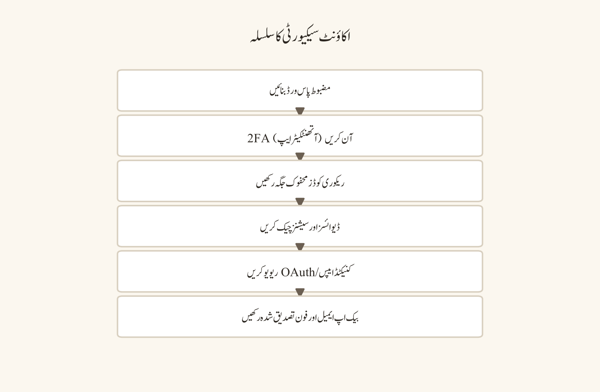
85.1 حکمت عملی اور حکمرانی
- ☐ مقصد، قارئین، استثنائات اور کامیابی کا میٹرک دستاویز ہے۔
- ☐ مالک، ایڈمنز، نگران اور بیک اپ رابطے نامزد ہیں۔
- ☐ قواعد کا ورژن، پالیسی مالک اور نظرثانی کی تاریخ سیٹ ہے۔
- ☐ ڈیٹا ریٹینشن، ریکارڈنگ، فائل شیئرنگ اور پرائیویسی کے اصول متعین ہیں۔
- ☐ ملکیت کی جانشینی اور ایمرجنسی رسائی کا منصوبہ دستاویز ہے۔
- ☐ لانچ کا دائرہ اور رول بیک کے معیار واضح ہیں۔
85.2 اکاؤنٹ سیکیورٹی
- ☐ مالک/ایڈمن اکاؤنٹس مضبوط اور منفرد پاس ورڈ استعمال کرتے ہیں۔
- ☐ 2FA/MFA فعال اور ریکوری کوڈز محفوظ ہیں۔
- ☐ روزانہ کے اکاؤنٹ اور اعلیٰ اختیار والے اکاؤنٹ کی علیحدگی کی پالیسی واضح ہے۔
- ☐ ریکوری ای میل/فون موجودہ اور رسائی میں ٹیسٹ شدہ ہیں۔
- ☐ سیشن/ڈیوائس جائزے کا معمول سیٹ ہے۔
85.3 تعمیر اور پرمیشنز
- ☐ چینل کا نقشہ مقصد پر مبنی ہے۔
- ☐ @everyone کی بنیادی پرمیشنز کم سے کم ہیں۔
- ☐ رولز کا لیسٹ پریویلیج اور درجہ بندی کا جائزہ ہوا۔
- ☐ چینل اوورائیڈز ٹیسٹ اکاؤنٹس سے تصدیق شدہ ہیں۔
- ☐ صرف اسٹاف، رپورٹ اور اِنسڈنٹ کی جگہیں محدود ہیں۔
- ☐ آرکائیو/ریٹینشن پالیسی واضح ہے۔
85.4 سیفٹی اور آپریشنز
- ☐ ویلکم/آن بورڈنگ فلو ٹیسٹ ہوا۔
- ☐ تصدیق، raid controls اور AutoMod ٹیسٹ ہوئے۔
- ☐ رپورٹ، بلاک، ایسکلیشن اور اپیل کے راستے کام کر رہے ہیں۔
- ☐ اِنسڈنٹ کمانڈر، بیک اپ اور ایمرجنسی رابطے موجودہ ہیں۔
- ☐ نگرانوں کی تربیت اور شفٹ کوریج تیار ہے۔
- ☐ بَٹ کی فہرست، پرمیشنز، ڈیٹا رسائی اور ہٹانے کا منصوبہ منظور ہے۔
85.5 لانچ ٹیسٹنگ
- ☐ ممبر ٹیسٹ اکاؤنٹ نے متوقع عوامی سفر پاس کیا۔
- ☐ نگران ٹیسٹ اکاؤنٹ نے رپورٹ/نگرانی کا ورک فلو پاس کیا۔
- ☐ ایڈمن ٹیسٹ اکاؤنٹ نے پرمیشن/آڈٹ/تبدیلی کا ورک فلو پاس کیا۔
- ☐ وائس، کیمرہ، اپ لوڈ، نوٹیفکیشن اور جوائن لنک ٹیسٹ پاس ہوئے۔
- ☐ رسائی، موبائل، کم بینڈوڈتھ اور async آپشنز ٹیسٹ ہوئے۔
- ☐ منفی ٹیسٹس نے محدود رسائی کو درست طریقے سے بلاک کیا۔
- ☐ رول بیک طریقہ کار کا ڈرائی رن ہوا۔
85.6 لانچ کے دن کی چیک لسٹ
- ☐ نگرانوں کی کوریج فعال ہے۔
- ☐ سرکاری status/سپورٹ کا راستہ قابلِ رسائی ہے۔
- ☐ ویلکم اعلان اور پن شدہ رہنمائی لائیو ہیں۔
- ☐ رپورٹ چینل/اِنسڈنٹ لاگ کی نگرانی ہو رہی ہے۔
- ☐ بَٹ الرٹس اور آڈٹ لاگ پر نظر رکھی جا رہی ہے۔
- ☐ ممبرز کے سوالات کے جواب کی SLA واضح ہے۔
- ☐ غیر متوقع پرمیشن/ڈیٹا کی نمائش پر رول بیک ٹرگر کی تعریف ہے۔
نمبر وار UI ورک فلو
Server Settingsمیں حکمت عملی، مالکان اور قواعد کا ورژن دستاویز کریں۔- اکاؤنٹ سیکیورٹی: پاس ورڈ، 2FA، ریکوری اور روزانہ بمقابلہ اعلیٰ اختیار والے اکاؤنٹ کی علیحدگی۔
- چینلز اور رولز کا نقشہ بنائیں؛ @everyone کو کم سے کم رکھیں۔
- AutoMod، تصدیق اور raid controls کو کنفیگر کر کے ٹیسٹ کریں۔
- تینوں ٹیسٹ اکاؤنٹس (ممبر/نگران/ایڈمن) سے مکمل سفر چلائیں۔
- منفی ٹیسٹس سے محدود جگہوں کی بلاکنگ تصدیق کریں۔
- رول بیک کا ڈرائی رن اور لانچ کے دن کی کوریج متعین کریں۔
مثالیں
| ٹیسٹ کا زاویہ | کون سا اکاؤنٹ | نمونہ نتیجہ |
|---|---|---|
| عوامی سفر | ممبر ٹیسٹ اکاؤنٹ | ویلکم پڑھا، رول منتخب، پہلا پیغام — سب کچھ متوقع |
| نگرانی کا سفر | نگران ٹیسٹ اکاؤنٹ | رپورٹ موصول، ثبوت محفوظ، ٹائم آؤٹ اور اپیل کا راستہ کام کیا |
| کنفیگریشن کا سفر | ایڈمن ٹیسٹ اکاؤنٹ | چینل/رول تبدیل، آڈٹ لاگ میں داخلہ، رول بیک کام کرتا ہے |
| رسائی/موبائل | کم بینڈوڈتھ موبائل کلائنٹ | نوٹیفکیشن اور میڈیا کا رویہ قابلِ قبول |
عام غلطیاں
- @everyone کو زیادہ پرمیشن دے کر لانچ کر دینا۔
- ٹیسٹنگ صرف مالک کے اکاؤنٹ سے کرنا۔
- پرمیشنز کو دستاویز کیے بغیر چینل اوورائیڈز کا اضافہ۔
- بَٹ کو انسانی نگران سے زیادہ وسیع رسائی دینا۔
- رول بیک یا جانشینی کا منصوبہ نہ ہونا۔
- لانچ کے دن نگران کوریج یا SLA کا فقدان۔
سیفٹی اور پرائیویسی نوٹس
لانچ سے پہلے ہر اُس جگہ کی نشاندی کریں جہاں ڈیٹا یا پیغامات محفوظ ہوتے ہیں: اِنسڈنٹ لاگ، رپورٹ چینلز، بیک اپس اور بَٹ کی ڈیٹا رسائی۔ ریٹینشن اور ریکارڈنگ کے اصول ممبرز کو واضح طور پر بتائیں۔ ایمرجنسی رسائی اور جانشینی کا منصوبہ محفوظ جگہ پر رکھیں، اور یہ یقینی بنائیں کہ عوامی رابطہ صرف تصدیق شدہ حقائق پر مبنی ہو۔
پریکٹس ٹاسک
اپنے فرضی سرور کے لیے لانچ ریڈینس ریویو بورڈ بنائیں۔ ہر چیک لسٹ آئٹم کو Green/Amber/Red سے نشان زد کریں، ذمہ دار تفویض کریں، ثبوت کا لنک شامل کریں اور لانچ کا go/no-go معیار لکھیں۔
چیپٹر چیک لسٹ
- ☐ حکمت عملی، حکمرانی اور جانشینی کا منصوبہ دستاویز ہے۔
- ☐ اکاؤنٹ سیکیورٹی اور 2FA/ریکوری کی علیحدگی مکمل ہے۔
- ☐ چینلز/رولز اور @everyone کی کم سے کم پرمیشن تصدیق شدہ ہے۔
- ☐ سیفٹی ٹولز (تصدیق، AutoMod، raid controls) ٹیسٹ ہوئے۔
- ☐ تینوں ٹیسٹ اکاؤنٹس سے پوزیٹو اور نیگٹو ٹیسٹ پاس ہوئے۔
- ☐ رول بیک ڈرائی رن اور لانچ ڈے کی کوریج تیار ہے۔
پرمیشن میٹرکس
پرمیشن میٹرکس پالیسی کو نفاذ سے جوڑتا ہے۔ میٹرکس کا مقصد ہر ایکشن کے لیے ایک طے شدہ جواب دینا ہے، لیکن عین مطابق لیبلز، وراثت (inheritance) اور UI کو موجودہ ڈسکارڈ ایڈمن کلائنٹ سے تصدیق کرنا چاہیے۔
مقصد
اِس چیپٹر کا مقصد “کسے کیا کرنے کی اجازت ہے” کے سوال کا ایک ڈھانچہ فراہم کرنا ہے۔ میٹرکس ہر ایکشن کے لیے ایک طے شدہ جواب دیتا ہے، لیکن عین مطابق لیبلز، وراثت اور UI کو موجودہ ڈسکارڈ ایڈمن کلائنٹ سے تصدیق کرنا چاہیے۔ یہ صرف نگرانوں/ایڈمنز کے لیے نہیں، بلکہ بَٹس اور انٹیگریشنز کی رسائی کو بھی کنٹرول کرتا ہے۔
پیشگی ضروریات
سرور کی ایڈمن/مالک پرمیشنز، رول ڈھانچے کا علم، اور کم از کم تین ٹیسٹ اکاؤنٹس (ممبر، نگران، ایڈمن) درکار ہیں۔ موجودہ ڈسکارڈ ایڈمن کلائنٹ کھلا ہونا چاہیے تاکہ لیبلز اور وراثت کی تصدیق ہو سکے۔
ڈیسک ٹاپ، ویب اور موبائل کے فرق
پرمیشن میٹرکس اور رول درجہ بندی کا مکمل نظم و ضبط ڈیسک ٹاپ/ویب کلائنٹ کے Server Settings > Roles اور Channels میں ہوتا ہے۔ موبائل پر صرف جائزہ ممکن ہے؛ تبدیلیاں ڈیسک ٹاپ سے کریں۔ ہر تبدیلی کے بعد آڈٹ لاگ کی تصدیق کریں۔
86.1 رول کے کردار (personas)
- Member: پبلک مواد پڑھتا ہے، متعلقہ چینلز میں حصہ لیتا ہے۔
- Verified Student/Member: تصدیق یا رول سلیکشن کے بعد معیاری شرکت کی رسائی۔
- Study Lead/Contributor: مخصوص تعلیمی چینلز میں مواد منظم کرتا ہے؛ وسیع ایڈمن نہیں۔
- Moderator: قواعد نافذ کرتا ہے، پیغامات/رپورٹس سنبھالتا ہے، محدود ممبر ایکشنز۔
- Admin: سرور کی تعمیر، رولز، انٹیگریشنز اور آپریشنل سیٹنگز سنبھالتا ہے۔
- Owner: حتمی حکمرانی، ریکیوری، جانشینی اور ایمرجنسی اختیار رکھتا ہے۔
86.2 مثال پرمیشن میٹرکس
| ایکشن | Member | Moderator | Admin | Owner |
|---|---|---|---|---|
| پبلک چینلز پڑھنا (View Channel) | جی ہاں | جی ہاں | جی ہاں | جی ہاں |
| منظور شدہ چینلز میں پیغام بھیجنا (Send Messages) | منتخب | جی ہاں | جی ہاں | جی ہاں |
| فائلز منسلک کرنا (Attach Files) | محدود | جی ہاں | جی ہاں | جی ہاں |
| پرائیویٹ تھریڈز بنانا (Create Private Threads) | پالیسی پر منحصر | جی ہاں | جی ہاں | جی ہاں |
| پیغامات کی نگرانی (Manage Messages) | نہیں | منتخب | جی ہاں | جی ہاں |
| ممبرز کو ٹائم آؤٹ کرنا (Timeout Members) | نہیں | جی ہاں | جی ہاں | جی ہاں |
| کک/بین (Kick Members/Ban Members) | نہیں | پالیسی پر منحصر | جی ہاں | جی ہاں |
| چینلز کی نگرانی (Manage Channels) | نہیں | نہیں/محدود | جی ہاں | جی ہاں |
| رولز کی نگرانی (Manage Roles) | نہیں | نہیں/محدود | جی ہاں | جی ہاں |
| سرور سیٹنگز کی نگرانی (Manage Server) | نہیں | نہیں | محدود | جی ہاں |
| آڈٹ لاگ دیکھنا (View Audit Log) | نہیں | نہیں/محدود | جی ہاں | جی ہاں |
| AutoMod کی کنفیگریشن (Configure AutoMod) | نہیں | نہیں/محدود | جی ہاں | جی ہاں |
| webhook/انٹیگریشنز کی نگرانی (Manage Webhooks) | نہیں | نہیں/محدود | جی ہاں | جی ہاں |
| صرف اسٹاف/رپورٹ چینلز تک رسائی | نہیں | جی ہاں | جی ہاں | جی ہاں |
| اِنسڈنٹ ثبوت اسٹور تک رسائی | نہیں | منتخب | محدود | جی ہاں |
86.3 میٹرکس ڈیزائن کے قواعد
- @everyone کو کم سے کم بیس لائن دیں۔
- ہر رول کا مقصد اور مالک لکھیں۔
- پرمیشن کو ذمہ داری سے جوازی دیں۔
- چینل اوورائیڈ کو استثنیٰ سمجھیں، طے شدہ نہیں۔
- deny/allow کی وراثت ٹیسٹ اکاؤنٹ سے تصدیق کریں۔
- ایڈمن اور Owner کی رسائی کو روزمرہ استعمال سے علیحدہ رکھیں۔
- بَٹ/انٹیگریشن کی پرمیشنز کو انسانی رول میٹرکس سے الگ جائزہ لیں۔
- ہر پرمیشن تبدیلی کا ٹائم سٹیمپ، وجہ، منظور کنندہ اور رول بیک نوٹ رکھیں۔
86.4 ٹیسٹ اکاؤنٹ ورک فلو
- ممبر اکاؤنٹ: پبلک read/send، restricted deny، اپ لوڈ کی حد، رپورٹ کا راستہ۔
- نگران اکاؤنٹ: رپورٹ رسائی، ٹائم آؤٹ/پیغام ایکشن، غیر ضروری سرور مینجمنٹ نہیں۔
- ایڈمن اکاؤنٹ: رول/چینل/انٹیگریشن تبدیلیاں، آڈٹ لاگ، رول بیک۔
- Owner اکاؤنٹ: ریکیوری، جانشینی، ایمرجنسی کنٹینمنٹ۔
- بَٹ/انٹیگریشن اکاؤنٹ: کم سے کم scopes، متوقع چینلز، ناکامی کا رویہ۔
نمبر وار UI ورک فلو
Server Settings>Rolesکھولیں اور موجودہ رولز کی فہرست بنائیں۔- ہر رول کا مقصد اور مالک لکھیں۔
@everyoneکی بنیادی پرمیشنز کم سے کم کریں۔- ہر رول کی پرمیشنز کو ذمہ داری سے جوازی دیں۔
- چینل لیول اوورائیڈز صرف استثنیٰ کے طور پر شامل کریں۔
- deny/allow کی وراثت ٹیسٹ اکاؤنٹ سے چیک کریں۔
- بَٹ/انٹیگریشن کی scopes کو الگ سے جائزہ لیں۔
- ہر تبدیلی کا ٹائم سٹیمپ، وجہ، منظور کنندہ اور رول بیک نوٹ ریکارڈ کریں۔
مثالیں
- نئی تعلیمی ٹیم: “Study Lead” رول صرف
#resourcesاور#assignmentsمیںManage Messagesرکھتا ہے، باقی چینلز میں نہیں۔ - نگران کی بھرتی: نگران رول میں
Timeout MembersاورManage Messagesہیں، مگرManage Rolesنہیں۔ - بَٹ کی انٹیگریشن: بَٹ کو صرف ضروری چینلز اور کم سے کم scopes دیے جاتے ہیں،
Administratorنہیں۔ - روزمرہ بمقابلہ اعلیٰ اختیار: مالک کا ایک علیدہ روزانہ کا اکاؤنٹ ہے؛ خطرناک ایکشنز صرف Owner اکاؤنٹ سے۔
عام غلطیاں
- “Admin” کو سہولت کا رول بنانا۔
- ہر چینل پر الگ الگ custom رول بنانا۔
- چینل اوورائیڈ کو دستاویز کیے بغیر شامل کرنا۔
- بَٹ کو انسانی نگران سے زیادہ وسیع رسائی دینا۔
- پرمیشن ٹیسٹ صرف Owner کے اکاؤنٹ پر کرنا۔
- رول ہائرارکی اور وراثت کو صرف بصری اندازے پر چھوڑنا۔
سیفٹی اور پرائیویسی نوٹس
پرمیشنز کا غلط ڈیزائن رپورٹس، ثبوت اور ممبرز کی پرائیویسی کو ظاہر کر سکتا ہے۔ ہمیشہ کم سے کم رسائی سے شروع کریں اور صرف جوازی کے ساتھ بڑھائیں۔ View Audit Log تک رسائی محدود رکھیں، کیونکہ اِس میں حساس عملی معلومات ہوتی ہیں۔ بَٹس کی ڈیٹا تک رسائی کے بارے میں ان کی پالیسی اور scopes پڑھیں۔
پریکٹس ٹاسک
اپنے سرور کے لیے دو میٹرکس بنائیں: desired-state matrix اور current-state matrix۔ فرق کو خطرہ، وجہ، مالک اور آخری تاریخ کے ساتھ ٹیبل میں ریکارڈ کریں۔ پھر ٹیسٹ اکاؤنٹ سے کم از کم ایک پوزیٹو اور ایک نیگٹو ٹیسٹ ہر اہم ایکشن پر چلائیں۔
چیپٹر چیک لسٹ
- ☐ ہر رول کا مقصد اور مالک دستاویز ہے۔
- ☐ @everyone کی بنیادی پرمیشنز کم سے کم ہیں۔
- ☐ چینل اوورائیڈز استثنیٰ کے طور پر دستاویز ہیں۔
- ☐ deny/allow وراثت ٹیسٹ اکاؤنٹ سے تصدیق شدہ ہے۔
- ☐ بَٹ/انٹیگریشن کی scopes کا علیحدہ جائزہ ہوا۔
- ☐ ہر تبدیلی کا ٹائم سٹیمپ/وجہ/منظور کنندہ/رول بیک نوٹ موجود ہے۔
ٹربل شوٹنگ کے فیصلے کے درخت
فیصلے کے درخت ٹربل شوٹنگ کو دہرائے جانے کے قابل بناتے ہیں۔ ہر شاخ میں مشاہدے کو ریکارڈ کریں، ایک وقت میں ایک تبدیلی کریں، اور سرکاری راستے کو حتمی ایسکلیشن رکھیں۔
مقصد
اِس چیپٹر کا مقصد عام ٹربل شوٹنگ مسائل کے لیے دہرائے جانے والے، ترتیب وار فیصلے کے درخت فراہم کرنا ہے۔ ہر شاخ میں مشاہدے کو ریکارڈ کریں، ایک وقت میں صرف ایک تبدیلی کریں، اور سرکاری سپورٹ کو حتمی ایسکلیشن کے طور پر رکھیں۔
پیشگی ضروریات
ایک ٹیسٹ سرور یا محفوظ ٹیسٹ چینل، مسائل کو نوٹ کرنے کا ذریعہ، اور سرکاری ڈسکارڈ سپورٹ/Help Center تک رسائی درکار ہے۔ کچھ شاخوں کے لیے OS لیول کی پرمیشنز (مائیکروفون، کیمرہ، نیٹ ورک) کو چیک کرنے کا اختیار ہونا چاہیے۔
ڈیسک ٹاپ، ویب اور موبائل کے فرق
شروعات میں ہی یہ طے کریں کہ مسئلہ صرف ایک کلائنٹ میں ہے یا سب میں: ڈیسک ٹاپ، ویب اور موبائل کا موازنہ کریں۔ موبائل پر OS کی بیٹری/ڈیٹا/اسٹوریج کی ترجیحات اور ایپ کی پرمیشنز سب سے عام وجوہات ہوتی ہیں۔ ہر مشاہدے کے ساتھ کلائنٹ اور ورژن نوٹ کریں۔
87.1 “مائیکروفون کام نہیں کر رہا”
فزیکل کنکشن/mute/والیم چیک
↓
OS کا درست ان پٹ + پرائیویسی پرمیشن
↓
ڈسکارڈ کا درست ان پٹ + مائیکروفون ٹیسٹ
↓
Voice Activity/Push-to-Talk + سینسٹیویٹی
↓
شور سپریشن/ایکو کا کنٹرولڈ ٹیسٹ
↓
دوسری ایپ/ایکسیکلوسیو رسائی
↓
ہارڈویئر/ڈرائیور/ایپ اپڈیٹ سے دوبارہ کنیکٹ
↓
چینل کی وائس پرمیشن/صارف کا mute87.2 “پیغام بھیجا نہیں جا رہا”
درست چینل/تھریڈ؟
نہیں → مناسب چینل منتقل کریں
جی ہاں
read/send پرمیشن؟
نہیں → رول/ایڈمن سے درخواست
جی ہاں
slowmode/timeout/restriction؟
جی ہاں → انتظار/پابندی کا احترام
نہیں
پیغام کی قسم/سائز/قاعدے کی خلاف ورزی؟
جی ہاں → ترمیم یا منظور شدہ راستہ
نہیں
نیٹ ورک/ایپ سنک/اپڈیٹ کا مسئلہ؟
جی ہاں → کنٹرولڈ دوبارہ کوشش/دوبارہ لاگ اِن/سپورٹ87.3 “جوائن لنک کام نہیں کر رہا”
سرکاری مکمل لنک؟
نہیں → نیا سرکاری جوائن لنک درخواست کریں
جی ہاں
ختم شدہ/منسوخ/زیادہ سے زیادہ استعمال؟
جی ہاں → مالک کنٹرولڈ جوائن لنک بناتا ہے
نہیں
عمر/علاقہ/تصدیق کی پابندی؟
جی ہاں → سرکاری متطلبات مکمل کریں
نہیں
پرمیشن/سرور/آڈٹ کا مسئلہ؟
جی ہاں → ایڈمن/آڈٹ/سپورٹ87.4 “لاگ اِن/تصدیق نہیں ہو رہا”
سرکاری ڈومین/ایپ؟
نہیں → رکیں اور سرکاری ماخذ استعمال کریں
جی ہاں
نیٹ ورک/VPN/proxy سادہ؟
نہیں → کنٹرولڈ نیٹ ورک ٹیسٹ
جی ہاں
پاس ورڈ/ریسیٹ/ریکوری راستہ؟
جی ہاں → سرکاری ریکوری
نہیں
ای میل spam/فون/CAPTCHA شاخ؟
جی ہاں → شاخ کے مطابق سرکاری مرحلہ
نہیں
اکاؤنٹ لاک/مشکوک ایکٹیویٹی؟
جی ہاں → سرکاری سپورٹ/سیکیورٹی راستہ87.5 “ایپ لانچ/اپڈیٹ ناکام”
دوبارہ شروع + سرکاری اپڈیٹ
↓
ویب/موبائل موازنہ
↓
اسٹوریج/OS پرمیشن
↓
براؤزر ایکسٹینشن/ایپ کا تصادم
↓
ضرورت ہو تو سرکاری دوبارہ انسٹالیشن
↓
صرف دستاویز شدہ کیشے کی صفائی
↓
ٹیسٹ اکاؤنٹ + سپورٹ87.6 “کیمرہ/اسکرین شیئر سیاہ”
OS پرائیویسی + فزیکل shutter
↓
درست کیمرہ/ونڈو
↓
متضاد ایپ/براؤزر پرمیشن
↓
مخصوص ونڈو ٹیسٹ
↓
ہارڈویئر ایکسیلریشن کا کنٹرولڈ ٹوگل
↓
گرافکس/ایپ اپڈیٹ
↓
DRM/محفوظ شدہ مواد کی حد87.7 “وائس/ویڈیو میں تاخیر (lag)”
دائرہ کار: ٹیکسٹ/وائس/ویڈیو؟
↓
سرکاری status + متبادل نیٹ ورک
↓
VPN/proxy موازنہ
↓
فائر وال کا قابلِ اعتماد ایپ قاعدہ
↓
سٹریم کوالٹی کم کریں
↓
ڈیوائس پر مائیکروفون/کیمرہ کا بوجھ
↓
ایڈمن: وائس علاقہ/پالیسی
↓
نیٹ ورک ایڈمن/سپورٹ87.8 “نوٹیفکیشن/پیغام غائب”
DND/mute/global-server-channel
↓
موبائل OS پرمیشن/بیٹری
↓
درست چینل/تھریڈ/سرچ فلٹر
↓
read پرمیشن/رول اوورائیڈ
↓
ڈیلیٹ/نگرانی/ریٹینشن
↓
سنک موازنہ/اپڈیٹ/دوبارہ لاگ اِن87.9 “اپ لوڈ ناکام”
فائل کی قسم/سائز/فارمیٹ
↓
چینل کی attach پرمیشن
↓
نیٹ ورک کا استحکام
↓
پلان/حد کی وضاحت
↓
براؤزر/ایپ فائل پرمیشن
↓
اینٹی وائرس کوارنٹیں قابلِ اعتماد چیک
↓
اپڈیٹ/دوبارہ کوشش
↓
منظور شدہ متبادل راستہ87.10 “موبائل کی بیٹری/ڈیٹا کا مسئلہ”
بیک گراؤنڈ ڈیٹا + نوٹیفکیشن
↓
بیٹری آپٹیمائزیشن/لو پاور
↓
Wi-Fi/موبائل ڈیٹا موازنہ
↓
میڈیا آٹو ڈاؤن لوڈ/کوالٹی
↓
OS ایپ پرمیشنز
↓
اسٹوریج/کیشے/فری سپیس
↓
سرکاری ایپ/OS اپڈیٹ87.11 “سیفٹی کا واقعہ”
فوری جسمانی خطرہ؟
جی ہاں → پہلے مقامی ایمرجنسی/ادارتی راستہ
نہیں
نقصان کو پھیلنے سے روکیں
↓
کم سے کم ثبوت محفوظ کریں
↓
شدت متعین کریں
↓
اِنسڈنٹ کمانڈر/کنٹینمنٹ
↓
سرکاری/پلیٹ فارم/ادارتی ایسکلیشن
↓
تصدیق شدہ رابطے + جائزہ87.12 ٹربل شوٹنگ ریکارڈ ٹیمپلیٹ
اِنسڈنٹ ID:
تاریخ/وقت/ٹائم زون:
رپورٹر/اکاؤنٹ رول:
ڈیوائس/ایپ/OS:
نیٹ ورک/VPN/proxy حالت:
مشاہدہ شدہ علامت:
محفوظ ترین ایرر ٹیکسٹ:
ترتیب سے آزمائے گئے اقدامات:
ہر اقدام کے بعد نتیجہ:
ممکنہ پرت (layer):
اپنائی گئی کارروائی:
رول بیک درکار:
ایسکلیشن مالک:
حتمی حالت:نمبر وار UI ورک فلو
- علامت کو واضح الفاظ اور سرکاری ایرر میسج کے ساتھ ریکارڈ کریں۔
- دائرہ کار طے کریں: ٹیکسٹ، وائس، ویڈیو، نیٹ ورک یا اکاؤنٹ۔
- ڈیسک ٹاپ/ویب/موبائل کا موازنہ کریں کہ مسئلہ کہاں ہے۔
- 87.x کے مناسب درخت کی پہلی شاخ سے شروع کریں۔
- ایک وقت میں صرف ایک تبدیلی کریں اور نتیجہ نوٹ کریں۔
- اگر کوئی تبدیلی بہتری نہ لائے تو اصل حالت پر واپس (rollback) جائیں۔
- آخری حوالہ ہمیشہ سرکاری سپورٹ/Help Center ہے۔
- پورے عمل کو 87.12 کے ٹیمپلیٹ میں درج کریں۔
مثالیں
- صرف ایک کلائنٹ میں مسئلہ: موبائل پر نوٹیفکیشن نہیں آ رہی مگر ڈیسک ٹاپ پر آ رہی ہے → مسئلہ OS کی پرمیشن/بیٹری کی ترجیحات میں ہے۔
- ایک وقت میں ایک تبدیلی: مائیکروفون خراب ہے تو ایک ساتھ ڈرائیور، ایپ سیٹنگز اور ہارڈویئر مت بدلیں — ایک کر کے نتیجہ دیکھیں۔
- غیر سرکاری گائیڈ سے نقصان: کچھ “فکس” کیشے یا اکاؤنٹ کو نقصان پہنچا سکتے ہیں — صرف دستاویز شدہ اقدامات کریں۔
- سیفٹی کا واقعہ: ہراسمنٹ کی اطلاع ملنے پر پہلے نقصان کو پھیلنے سے روکیں، کم سے کم ثبوت محفوظ کریں، پھر درست شدت کے ساتھ ایسکلیٹ کریں۔
عام غلطیاں
- ایک وقت میں کئی تبدیلیاں کر کے یہ نہ جاننا کہ کس نے فکس کیا۔
- backup/rollback کے بغیر تجربات کرنا۔
- اصل سرور/اکاؤنٹ پر نیگٹو ٹیسٹ کرنا۔
- غیر سرکاری ویب سائٹس/گائیڈز پر اعتماد کرنا۔
- سرکاری سپورٹ کو آخری حوالہ بنانے کے بجائے تھرڈ پارٹی ٹولز پر انحصار۔
- مشاہدے کو کلائنٹ/ورژن کے ساتھ دستاویز نہ کرنا۔
سیفٹی اور پرائیویسی نوٹس
ٹربل شوٹنگ کے دوران ڈیٹا کا نقصان یا رسائی کا رسک پیدا ہو سکتا ہے۔ کبھی اپنا پاس ورڈ، 2FA کوڈ یا ریکوری کوڈ کسی “فکس” کے لیے نہ دیں۔ کیشے کی صفائی یا دوبارہ انسٹالیشن سے پہلے اہم ڈیٹا کا بیک اپ لیں۔ نیگٹو ٹیسٹ ہمیشہ ٹیسٹ اکاؤنٹ/سرور پر کریں، کبھی اصل اکاؤنٹ پر نہیں۔ سیفٹی کے کسی واقعے میں ثبوت کو کم سے کم ضروری مواد تک محدود رکھیں اور نجی، منظور شدہ جگہ پر محفوظ کریں۔
پریکٹس ٹاسک
ہر فیصلے کے درخت کو ٹیسٹ سرور پر ایک محفوظ منظرنامے کے ساتھ چلائیں۔ ہر شاخ کے لیے متوقع مشاہدہ اور اگلا اقدام لکھیں۔ کسی حقیقی اکاؤنٹ کو لاک آؤٹ، بین یا ڈیٹا کے نقصان میں ڈالے بغیر نیگٹو ٹیسٹ انجام دیں۔
چیپٹر چیک لسٹ
- ☐ علامت، ایرر ٹیکسٹ اور کلائنٹ/ورژن ریکارڈ کیا۔
- ☐ ڈیسک ٹاپ/ویب/موبائل کا موازنہ کیا۔
- ☐ ایک وقت میں ایک تبدیلی کے اصول پر عمل کیا۔
- ☐ ہر تبدیلی کے بعد نتیجہ اور rollback نوٹ کیا۔
- ☐ نیگٹو ٹیسٹ صرف ٹیسٹ اکاؤنٹ پر کیے۔
- ☐ 87.12 کا ریکارڈ ٹیمپلیٹ استعمال کیا۔
- ☐ سرکاری سپورٹ کو آخری حوالہ رکھا۔
حصہ 9 — حوالہ جاتی مواد (حصہ دوم)
کی بورڈ شارٹ کٹس اور نیویگیشن حوالہ
کی بورڈ شارٹ کٹس کلائنٹ، OS، براؤزر، زبان کی سیٹنگز اور موجودہ فوکس کنٹیکسٹ کے مطابق تبدیل ہو سکتی ہیں۔ اِس چیپٹر میں کسی بھی کی کنبینیشن کو حقیقتِ مستقل نہ سمجھیں۔ پہلے موجودہ ڈسکارڈ کے شارٹ کٹ پینل یا سرکاری Help Center سے تصدیق کریں، پھر ٹیسٹ چینل میں محفوظ ایکشن کے ساتھ مشق کریں۔
مقصد
اِس چیپٹر کا مقصد ڈسکارڈ پر کی بورڈ اور نیویگیشن کے ذریعے تیزی سے اور محفوظ طریقے سے حرکت کرنے کا صحیح طریقہ سکھانا ہے۔ شارٹ کٹس صرف رفتار کا ذریعہ نہیں ہیں؛ یہ موٹر رسائی (motor accessibility) اور اسکرین ریڈر ورک فلو کا بھی حصہ ہیں، جس کی وجہ سے یہ ہر صارف کے لیے اہم ہیں۔ یہ چیپٹر آپ کو یہ سکھاتا ہے کہ کس طرح ہر کلائنٹ میں موجودہ شارٹ کٹ پینل تلاش کریں، غیر تباہ کن ایکشنز کو پہلے ٹیسٹ کریں، اور تبدیلیوں کا اندراج رکھیں۔
پیشگی ضروریات
آپ کے پاس ڈسکارڈ اکاؤنٹ اور کوئی ڈیسک ٹاپ ایپ، ویب کلائنٹ یا موبائل ایپ ہونی چاہیے۔ ایک نجی ٹیسٹ سرور یا محفوظ ٹیسٹ چینل دستیاب ہونا چاہیے جہاں آپ بغیر کسی کو نقصان پہنچائے ایکشنز آزماسکیں۔ اکاؤنٹ کی ایڈمن پرمیشنز کی ضرورت نہیں، سوائے اِس کے کہ آپ ایڈمن/تباہ کن شارٹ کٹس کو کسی آدمی آزمائشی مرحلے میں استعمال کرنا چاہتے ہوں۔ اپنے کلائنٹ کا ورژن، OS اور زبان کی سیٹنگ پہلے سے نوٹ کر لیں کیونکہ شارٹ کٹس اِن کے مطابق بدل سکتے ہیں۔
ڈیسک ٹاپ، ویب اور موبائل کے فرق
ڈیسک ٹاپ ایپ میں مکمل کی بورڈ نیویگیشن اور شارٹ کٹ پینل دستیاب ہوتا ہے۔ یہاں OS لیول شارٹ کٹس (جیسے ان پٹ لینگویج سوئچ یا سسٹم شارٹ کٹس) ڈسکارڈ کے اپنے شارٹ کٹس سے الگ ریکارڈ کرنے پڑتے ہیں۔
ویب کلائنٹ میں بہت سارے شارٹ کٹس براؤزر کی کنفیگریشن، زوم لیول اور ایکسٹینشنز سے متاثر ہو سکتے ہیں۔ کچھ کنبینیشنز براؤزر پہلے ہی استعمال کر رہا ہوتا ہے، اس لیے ویب پر ہر شارٹ کٹ کو علیحدہ طور پر تصدیق کرنی پڑتی ہے۔
موبائل ایپ میں کی بورڈ شارٹ کٹس کا تجربہ ڈیسک ٹاپ سے بالکل مختلف ہوتا ہے؛ زیادہ تر نیویگیشن ٹچ اور ہاتھ کے اشاروں پر مبنی ہے۔ موبائل پر کی بورڈ، ٹچ اور آواز کے متبادلوں کو الگ سے دستاویز کریں۔
نمبر وار UI ورک فلو
- موجودہ ڈسکارڈ کلائنٹ میں کی بورڈ شارٹ کٹس/مدد کا پینل تلاش کریں۔
- ڈیسک ٹاپ، ویب اور موبائل میں دستیاب نیویگیشن کے فرق نوٹ کریں۔
- OS لیول شارٹ کٹس اور ایپ کے شارٹ کٹس کو الگ الگ ریکارڈ کریں۔
- محفوظ ٹیسٹ چینل یا نجی ٹیسٹ سرور منتخب کریں۔
- پہلے غیر تباہ کن ایکشن ٹیسٹ کریں: تلاش (
search)، چینل سوئچ، کمپوزر پر فوکس۔ - پھر میسج ایڈٹ، جواب دینا، mute/deafen اور نیویگیشن ایکشنز ٹیسٹ کریں۔
- ایڈمن/تباہ کن ایکشن سے پہلے شارٹ کٹ کو دو بار تصدیق کریں۔
- ٹیسٹ شدہ کنبینیشن، کلائنٹ ورژن، تاریخ اور کنٹیکسٹ کو ٹیم کے حوالے میں ریکارڈ کریں۔
مثالیں
| تصور | محفوظ طریقہ کار |
|---|---|
| سرچ باکس | کیری (query) کو محفوظ ٹیسٹ چینل پر آزمائیں؛ نجی مواد کی تلاش عوامی طور پر شیئر نہ کریں |
| چینل کویک سوئچر | پہلے پبلک ٹیسٹ چینل منتخب کر کے نیویگیشن کی تصدیق کریں |
| میسج کمپوزر | فوکس اور ٹیکسٹ انٹری کو محفوظ ڈرافٹ پر ٹیسٹ کریں |
| آخری پیغام میں ترمیم | صرف اپنا ٹیسٹ پیغام ترمیم کریں؛ میسج ہسٹری/پالیسی چیک کریں |
| جواب/تھریڈ نیویگیشن | درست پیرنٹ پیغام/تھریڈ منتخب کریں |
| پڑھا/نہ پڑھا نشان | بصری اِنڈیکیٹر کو موجودہ کلائنٹ پر تصدیق کریں |
| وائس mute/deafen | ٹیسٹ کال میں حالت کے اِنڈیکیٹر کی تصدیق کریں |
| ایموجی/ری ایکشن نیویگیشن | محفوظ پیغام پر ٹیسٹ کریں؛ حادثاتی ری ایکشن کو ہٹانا سیکھیں |
عام غلطیاں
- کسی پرانی اسکرین شاٹ سے عین مطابق شارٹ کٹ کاپی کر لینا۔
- ایڈمن/تباہ کن ایکشن پر شارٹ کٹ پر اندھا اعتماد کرنا۔
- OS کے شارٹ کٹ اور ڈسکارڈ کے شارٹ کٹ کو آپس میں الجھا دینا۔
- کی بورڈ سے صرف ٹیسٹ کیے بغیر رسائی (accessibility) کا دعویٰ کرنا۔
- عوامی چینل میں ٹیسٹ پیغام بھیج دینا۔
- شارٹ کٹ کی فہرست کو ورژن/تاریخ کے بغیر دستاویز کرنا۔
سیفٹی اور پرائیویسی نوٹس
کی بورڈ نیویگیشن صرف رفتار کا فیچر نہیں؛ یہ موٹر رسائی اور اسکرین ریڈر ورک فلو کا بھی حصہ ہو سکتی ہے۔ فوکس آرڈر، ظاہری فوکس، قابلِ قرات لیبلز اور متبادل متن کو صرف کی بورڈ استعمال کر کے ٹیسٹ کریں۔ اگر کوئی شارٹ کٹ کام نہ کرے تو صارف کو ماؤس/ٹچ کا متبادل فراہم کرنا یقینی بنائیں۔ سرچ باکس سے حاصل ہونے والے نجی نتائج کبھی عوامی چینل میں شیئر نہ کریں، اور ٹیسٹ کرتے وقت ایسے پیغامات استعمال کریں جن میں کوئی حساس ذاتی معلومات نہ ہوں۔
پریکٹس ٹاسک
اپنے موجودہ کلائنٹ کے شارٹ کٹ پینل سے پانچ غیر تباہ کن شارٹ کٹس نوٹ کریں۔ انہیں ٹیسٹ سرور پر چلائیں اور ایک ٹیبل بنائیں: ایکشن، کنبینیشن، کنٹیکسٹ، متوقع نتیجہ، حقیقی نتیجہ، ورژن/تاریخ۔ اگر کوئی شارٹ کٹ مبہم ہو تو عین مطابق کی کنبینیشن لکھنے کے بجائے اُسے “موجودہ پینل سے تصدیق درکار” کے طور پر نشان زد کریں۔
چیپٹر چیک لسٹ
- ☐ موجودہ شارٹ کٹ پینل/سرکاری مدد سے تصدیق ہوئی۔
- ☐ کلائنٹ/OS/براؤزر کا کنٹیکسٹ نوٹ کر لیا۔
- ☐ غیر تباہ کن ایکشنز پہلے ٹیسٹ ہوئے۔
- ☐ ایڈمن/تباہ کن ایکشن اندھا دھند نہیں چلائی گئی۔
- ☐ صرف کی بورڈ سے نیویگیشن ٹیسٹ ہوئی۔
- ☐ ماؤس/ٹچ کا متبادل دستاویز کر دیا گیا۔
- ☐ ورژن/تاریخ کے ساتھ حوالہ اپڈیٹ ہوا۔
اصطلاحات کی فہرست: انگریزی سے اردو
اس فہرست کو تربیت اور نگرانی (moderation) میں مستقل مزاجی کے لیے استعمال کریں۔ تکنیکی انگریزی اصطلاح کو ہمیشہ ترجمہ کرنے کے بجائے پہلی بار مختصر اردو معنی کے ساتھ لکھیں؛ عین مطابق ڈسکارڈ لیبل موجودہ UI سے تصدیق کریں۔
مقصد
اِس چیپٹر کا مقصد کتاب بھر میں استعمال ہونے والی تکنیکی اور سیفٹی سے متعلق اصطلاحات کا ایک مستقل حوالہ فراہم کرنا ہے، تاکہ تربیت، دستاویزات اور نگرانی کے فیصلوں میں یکسانی رہے۔ یہ فہرست سیکھنے والوں اور نگرانی کرنے والوں دونوں کے لیے حوالہ جاتی ذریعہ ہے۔
پیشگی ضروریات
اصطلاحات کی درست تشریح کے لیے موجودہ ڈسکارڈ کلائنٹ کھلا ہونا چاہیے تاکہ لیبلز کی تصدیق کی جا سکے۔ سیفٹی سے متعلق اصطلاحات (جیسے doxxing، scam، consent) کے لیے ان کے عملی سیاق و سباق کو сервер کی پالیسی سے جوڑنا ضروری ہے۔
اصطلاحات کی فہرست
| انگریزی | اردو معنی / عملی نوٹ |
|---|---|
| Account | آپ کی لاگ اِن شناخت اور اُس سے جڑی ہوئی سیٹنگز |
| Account recovery | اکاؤنٹ کو دوبارہ محفوظ/قابلِ رسائی بنانے کا سرکاری عمل |
| Admin | سرور کے وسیع آپریشنل کنٹرول رکھنے والا مجاز رول |
| Allowlist | قابلِ اعتماد ایپ/پراسیس کے لیے محدود پرمیشن رول |
| Appeal | نگرانی کے فیصلے کا جائزہ کروانے کا دستاویزی راستہ |
| Attachment | پیغام کے ساتھ بھیجی گئی فائل یا میڈیا |
| Audit log | سرور پر ہونے والے اہم انتظامی عملوں کی محدود تاریخ |
| AutoMod | طے شدہ پیٹرنز/ایکشنز پر کام کرنے والا خودکار نگرانی کا ٹول |
| Ban | صارف کو سرور سے محدود/نکالنے کا عمل |
| Bot | خودکار اکاؤنٹ جو طے شدہ کام/انٹیگریشن انجام دیتا ہے |
| Cache | عارضی لوکل ڈیٹا جو کارکردگی کے لیے محفوظ کیا جاتا ہے |
| CAPTCHA | انسانی تصدیق کا چیلنج |
| Channel | موضوع کے لحاظ سے مخصوص رابطے کی جگہ |
| Channel override | سرور رول کی پرمیشن کو کسی مخصوص چینل کے لیے تبدیل کرنا |
| Consent | کسی ایکشن، ریکارڈنگ یا شیئرنگ کے لیے واضح رضاکارانہ رضامندی |
| DM | نجی براہِ راست گفتگو |
| Doxxing | کسی کی ذاتی/نجی معلومات کو بغیر اجازت شائع کرنا |
| Encryption | ڈیٹا کو محفوظ شکل میں رکھنے/منتقل کرنے کا طریقہ کار |
| Escalation | مسئلے کو مناسب سینئر/سرکاری راستے پر بھیجنا |
| Evidence | مشاہدے کے قابل پیغام کی شناخت، ٹائم سٹیمپ، سیاق و سباق اور عمل کا ریکارڈ |
| Firewall | نیٹ ورک/ایپ ٹریفک کو قواعد کے اندر کنٹرول کرنے والی سیکیورٹی پرت |
| Focus mode | نوٹیفکیشنز/مداخلت کو محدود کرنے والی ڈیوائس/ایپ کی حالت |
| Hardware acceleration | گرافکس کا ورک لوڈ GPU کے ذریعے سنبھالنا |
| Incident commander | سیفٹی کے کسی واقعے میں ربط و ترتیب کا نامزد ذمہ دار |
| Invite | سرور جوائن کرنے کا کنٹرولڈ لنک/کوڈ |
| Kick | صارف کو سرور سے نکالنا، عموماً دوبارہ جوائن کی ممکنہ صورت کے ساتھ |
| Least privilege | صرف کام کے لیے ضروری کم سے کم رسائی دینا |
| MFA/2FA | لاگ اِن کے لیے پاس ورڈ کے علاوہ اضافی تصدیق |
| Mention | صارف، رول یا چینل کو نوٹیفائی/حوالہ دینا |
| Moderator | قواعد نافذ کرنے والا مجاز صارف |
| Mute | آڈیو یا نوٹیفکیشنز کو عارضی طور پر بند کرنا |
| Onboarding | نئے ممبر کو سرور کے استعمال اور قواعد سکھانے کا عمل |
| Permission | کسی ایکشن کی تکنیکی اجازت |
| Pinned message | اہم پیغام کو چینل میں آسانی سے قابلِ رسائی رکھنا |
| Push notification | ڈیوائس پر ایپ کے باہر آنے والی الرٹ |
| Rate limit | بہت تیزی سے دہرائے جانے والے عملوں کو عارضی طور پر محدود کرنا |
| Retention | ڈیٹا/پیغام کو کتنی دیر تک محفوظ/رکھنا ہے |
| Role | ممبران کا گروہ اور اُس سے جڑی ہوئی پرمیشن لیبل |
| Rollback | تبدیلی کو پچھلی معلوم محفوظ حالت پر واپس لانا |
| Scam | دھوکے کے ذریعے کریڈینشلز، پیسے یا رسائی چرانے کی کوشش |
| Screen share | اپنی اسکرین/ونڈو دوسروں کو دکھانا |
| Server | کمیونٹی/ورک سپیس اور اُس کی سیٹنگز |
| Slowmode | چینل میں پیغامات کے درمیان انتظار کا وقفہ |
| Thread | مرکوز ذیلی بحث |
| Timeout | ممبر کو محدود مدت کے لیے تعامل سے روکنا |
| Transcript | وائس/ویڈیو بحث کا تحریری ریکارڈ |
| Verification | شناخت/سیفٹی کے مرحلے کی تصدیق کرنا |
| VPN | نیٹ ورک ٹریفک کو درمیانی سروس کے ذریعے روٹ کرنا |
| Webhook | بیرونی سسٹم سے چینل تک پیغام بھیجنے والی انٹیگریشن |
عام غلطیاں
- تکنیکی اصطلاح کو ہر بار ترجمہ کرنے کی کوشش کرنا، جس سے مستقل مزاجی ختم ہو جاتی ہے۔
- لیبل کو موجودہ UI سے تصدیق کیے بغیر پرانی دستاویز پر انحصار کرنا۔
- مختصر الفاظ (جیسے MFA، VPN، DM) کی مکمل شکل نہ دینا۔
- سیفٹی سے متعلق اصطلاحات (doxxing، scam، consent) کے ساتھ عملی مثال نہ دینا۔
- فہرست کا ورژن اور تاریخ برقرار نہ رکھنا۔
سیفٹی اور پرائیویسی نوٹس
سیفٹی سے متعلق اصطلاحات کی تشریح صرف لغوی معنی تک محدود نہ رکھیں۔ doxxing، scam، consent اور evidence جیسی اصطلاحات کے ساتھ عملی سیاق و سباق اور سرور کی پالیسی کا حوالہ دیں۔ یاد رکھیں کہ کسی کی ذاتی معلومات کو دوبارہ بیان کرنا (یہاں تک کہ وضاحت کے لیے بھی) تشہیر کو بڑھا سکتا ہے، اس لیے مثالوں میں فرضی ڈیٹا استعمال کریں۔
پریکٹس ٹاسک
اپنی ٹیم یا سرور کے لیے اس فہرست میں موجود پانچ سب سے اہم اصطلاحات منتخب کریں اور ہر ایک کے ساتھ ایک مختصر ورکشاپ سوال بنائیں۔ ہر سوال میں ممبران سے اصطلاح کا عین مطابق لیبل موجودہ UI میں تلاش کرنے اور اس کا درست استعمال دکھانے کا مطالبہ کریں۔
چیپٹر چیک لسٹ
- ☐ ہر تکنیکی اصطلاح کے ساتھ پہلی بار مختصر معنی دیا گیا۔
- ☐ عین مطابق UI لیبل موجودہ کلائنٹ سے تصدیق ہوا۔
- ☐ مخفف کی مکمل شکل دی گئی۔
- ☐ سیفٹی سے متعلق اصطلاحات (doxxing/scam/consent) کے ساتھ عملی مثال ہے۔
- ☐ فہرست کا ورژن/تاریخ برقرار ہے۔
سرکاری وسائل اور مزید سیکھنے کا ذریعہ
اِس کتاب میں UI کی تفصیلات کو موجودہ ڈسکارڈ کلائنٹ کے مطابق تصدیق کرنے کے لیے سرکاری وسائل سے رجوع کریں۔ UI لیبلز، پالیسیاں، علاقائی دستیابی، عمر کے قواعد، سبسکرپشن کی شرائط اور فیچر کا رویہ تبدیل ہو سکتا ہے؛ اس لیے کسی بھی سیکیورٹی، ادائیگی، رپورٹنگ یا ڈیولپر ایکشن سے پہلے سرکاری ڈومین اور موجودہ دستاویزات کی تصدیق کریں۔
مقصد
اِس چیپٹر کا مقصد قاری کو وہ قابلِ اعتماد سرکاری وسائل فراہم کرنا ہے جن کی مدد سے وہ کتاب کی ہدایات کو موجودہ ڈسکارڈ کے ساتھ تصدیق کر سکیں۔ یہ وسائل سیکیورٹی، پرائیویسی، اکاؤنٹ مینجمنٹ، کمیونٹی قواعد اور ڈیولپمنٹ کے معاملات میں حتمی حوالہ ہیں۔
پیشگی ضروریات
آپ کو سرکاری ڈومینز تک رسائی حاصل ہونی چاہیے اور اپنے اکاؤنٹ کی موجودہ حالت (عمر کی حد، علاقہ، سبسکرپشن) جاننی چاہیے، کیونکہ یہ چیزیں طے کرتی ہیں کہ آپ کو کون سے صفحات اور فیچرز دستیاب ہیں۔
وسائل کا نقشہ
- ڈسکارڈ سپورٹ / Help Center: https://support.discord.com/
- لاگ اِن، اکاؤنٹ ریکیوری، ایپ کا رویہ، سیفٹی رپورٹنگ اور موجودہ مددگار مضامین کے لیے نقطہ آغاز۔
- ڈسکارڈ سیفٹی: https://discord.com/safety
- سیفٹی کی تعلیم، رپورٹنگ کے تصورات اور ذمہ دارانہ استعمال کی رہنمائی کے لیے۔
- ڈسکارڈ پرائیویسی: https://discord.com/privacy
- پرائیویسی پالیسی، ڈیٹا ہینڈلنگ اور صارف کے حقوق کی معلومات کے لیے۔
- ڈسکارڈ شرائط: https://discord.com/terms
- سروس کی شرائط اور اکاؤنٹ/پلیٹ فارم کی ذمہ داریوں کے لیے۔
- ڈسکارڈ کمیونٹی گائیڈ لائنز: https://discord.com/guidelines
- پلیٹ فارم پر رویے کی توقعات اور ممنوعہ رویے کے لیے۔
- ڈسکارڈ ڈیولپر دستاویزات: https://discord.com/developers/docs/intro
- bots، انٹیگریشنز، scopes، پرمیشنز اور ڈیولپر ورک فلو کے لیے۔
- ڈسکارڈ اسٹیٹس: https://status.discord.com/
- سروس کے واقعات (incidents) اور آپریشنل حالت کے لیے۔
- ڈسکارڈ ڈاؤن لوڈ: https://discord.com/download
- سرکاری کلائنٹ ڈاؤن لوڈ کرنے کے لیے۔
نمبر وار UI ورک فلو
- کوئی وسط (resource) اوپر دیے گئے سرکاری ڈومین سے کھولیں۔
- صفحے کا عنوان، آخری اپڈیٹ کا اِنڈیکیٹر اور متعلقہ علاقہ/اکاؤنٹ کی شرائط نوٹ کریں۔
- UI راستے یا فیچر کے رویے کو موجودہ ڈیسک ٹاپ/ویب/موبائل کلائنٹ میں موازنہ کریں۔
- سیکیورٹی/ادائیگی/رپورٹنگ کے ایکشن سے پہلے ڈومین اور صفحے کے کنٹیکسٹ کی دو بار تصدیق کریں۔
- ڈیولپر انٹیگریشن سے پہلے scopes، پرمیشنز، ڈیٹا ہینڈلنگ اور منسوخی (revocation) کا عمل پڑھیں۔
- اگر پالیسی یا URL تبدیل ہو جائے تو مسودے، چیک لسٹ اور تربیتی مواد کا ورژن اپڈیٹ کریں۔
- سرکاری وسط کا مختصر مقصد اور رسائی کی تاریخ اندرونی حوالے میں ریکارڈ کریں۔
مثالیں
- نئے ممبر کی رپورٹنگ: کوئی ممبر غیر مناسب مواد سے نمٹتے وقت پہلے https://discord.com/safety پر سیفٹی کے تصورات پڑھتا ہے، پھر اپنے سرور کی رپورٹ کی پالیسی کے ساتھ جوڑتا ہے۔
- بَٹ کی انٹیگریشن سے پہلے: کوئی ایڈمن پہلے ڈیولپر دستاویزات میں scopes اور پرمیشنز کا جائزہ لیتا ہے، پھر اپنے سرور پر ٹیسٹ اکاؤنٹ سے تجربہ کرتا ہے۔
- سروس کی خرابی کا شبہ: جب کچھ کام نہ کرے تو صارف پہلے https://status.discord.com/ چیک کرتا ہے، اس سے پہلے کہ اپنی انٹرنیٹ کنکشن پر شبہ کرے۔
- اکاؤنٹ کی بحالی: لاگ اِن کے مسئلے پر صارف براہِ راست https://support.discord.com/ پر موجود سرکاری ریکیوری فلو استعمال کرتا ہے، کسی تھرڈ پارٹی سائٹ کا سہارا نہیں لیتا۔
عام غلطیاں
- پرانے بک مارک شدہ URLs پر انحصار کرنا، جو اب تک نہیں چل رہے۔
- تھرڈ پارٹی گائیڈز یا بلاگز کو سرکاری دستاویز تصور کرنا۔
- صفحے کا کنٹیکسٹ (علاقہ/عمر/سبسکرپشن) چیک کیے بغیر ہدایت پر عمل کرنا۔
- ڈیولپر scopes اور revocation عمل کو پڑھے بغیر بَٹ انسٹال کرنا۔
- تبدیل شدہ پالیسی کے بعد اپنے سرور کی دستاویزات اپڈیٹ نہ کرنا۔
- سرکاری وسائل کی رسائی کی تاریخ اور مقصد ریکارڈ نہ کرنا۔
سیفٹی اور پرائیویسی نوٹس
کوئی بھی سیکیورٹی، ادائیگی، رپورٹنگ یا ڈیٹا سے متعلق اقدام کرنے سے پہلے یہ یقینی بنا لیں کہ آپ واقعی سرکاری ڈومین پر ہیں۔ فشنگ (phishing) سائٹیں اکثر بصری طور پر حقیقی صفحات جیسی لگتی ہیں۔ ڈومین کی دو بار تصدیق کریں، خاص طور پر جب آپ اپنا پاس ورڈ، ریکنوری کوڈ یا کوئی ادائیگی داخل کرنے والے ہوں۔ پرائیویسی پالیسی اور شرائط کے صفحات سے اپنے حقوق اور ڈیٹا کے استعمال سے باخبر رہیں۔
پریکٹس ٹاسک
ہر سرکاری وسیلے کے لیے ایک کارڈ بنائیں: URL، مقصد، کب استعمال کرنا ہے، کن قارئین کے لیے ہے، آخری تصدیق کی تاریخ، اور UI/پالیسی کی وضاحت (caveat)۔ کوئی نیا URL خود وضع نہ کریں؛ صرف مسودے میں موجود سرکاری URLs استعمال کریں۔
چیپٹر چیک لسٹ
- ☐ صرف سرکاری ڈومینز استعمال ہوئیں۔
- ☐ ہر وسیلے کا مقصد دستاویز کر دیا گیا۔
- ☐ موجودہ UI/راستے کی تصدیق ہوئی۔
- ☐ علاقہ/عمر/سبسکرپشن کی وضاحتیں نوٹ کی گئیں۔
- ☐ سیکیورٹی/ادائیگی/رپورٹنگ ایکشن سے پہلے ڈومین دوبارہ چیک ہوا۔
- ☐ ڈیولپر scopes/پرمیشنز کا جائزہ ہوا۔
- ☐ URL/پالیسی تبدیلی کے لیے دیکھ بھال کا عمل موجود ہے۔
مشق کے سوالات اور جوابات کی کلید
مشق کے سوالات کو محض UI لیبلز کا رٹا ٹیسٹ نہ بنائیں۔ سیکھنے والے کو اصول، محفوظ فیصلے اور مسئلہ حل کرنے کی ترتیب پر جانچا جائے۔ ہر جواب کی کلید میں عین مطابق UI لیبل کے بجائے سیاق و سباق، پرمیشن، کم سے کم رسائی، ثبوت، رضامندی، سرکاری راستے، تناسب اور دستاویزات پر زور دیا جائے۔
مقصد
اِس چیپٹر کا مقصد پوری کتاب میں سیکھے گئے اصولوں کو محفوظ فیصلوں اور مسئلہ حل کرنے کی ترتیب میں ڈھال کر جانچنا ہے۔ یہ سوالات اس بات کی پیمائش کرتے ہیں کہ سیکھنے والا کس طرح سوچتا ہے، نہ کہ یہ کہ وہ کتنے بٹن کے نام یاد رکھتا ہے۔
پیشگی ضروریات
مشق کرنے والے کے پاس بنیادی ڈسکارڈ کا تجربہ ہونا چاہیے — سرور، چینل، رولز، پرمیشنز، سیفٹی رپورٹنگ اور نجی/عوامی رفتار کا فرق۔ اوپن بُک فارمیٹ کے لیے سرکی وسائل (چیپٹر 90) اور اپنے سرور کی دستاویز شدہ پالیسیاں دستیاب رکھیں۔
مشق الف: بنیادی باتیں
- سرور اور چینل کے درمیان عملی فرق کیا ہے؟
- رول اور پرمیشن کے تعلق کو کیسے سمجھیں؟
- mute اور سرور چھوڑنے میں صارف کے تجربے اور رسائی کا کیا فرق ہے؟
- نامعلوم Nitro طرز کے لنک کا محفوظ جواب کیا ہونا چاہیے؟
- کسی ایڈمن بَٹ کو مکمل (blanket) پرمیشن دینے سے پہلے کن تین باتوں کی جانچ کریں گے؟
- سادہ زبان میں اعلان کی تین خصوصیات لکھیں۔
- ٹائم زون واضح کرنا رسائی میں کیوں اہم ہے؟
- تصویر پوسٹ کرتے وقت متبادل متن کیوں ضروری ہے؟
- ہم وقتی نہ ہونے والے (asynchronous) آپشن کی سادہ مثال دیں۔
- کم سے کم رسائی (least privilege) کی ممبر لیول مثال دیں۔
مشق ب: سیفٹی
- رپورٹ کرنے سے پہلے کون سا کم سے کم ثبوت محفوظ رکھنا چاہیے؟
- بلاک اور رپورٹ کا مقصد کس طرح مختلف ہے؟
- اسکرین شیئر کرنے سے پہلے کن چیزوں کو چھپانا چاہیے؟
- کسی نابالغ/کمیونٹی سیفٹی کے مسئلے میں بالغ/ممبر کو کیا کرنا چاہیے؟
- اکاؤنٹ پر غیر مجاز رسائی کی صورت میں پہلے تین محفوظ اقدامات کیا ہیں؟
- doxxing کے واقعے میں نقصان دہ مواد کو دوبارہ کیوں نہیں چلانا چاہیے؟
- سنگین جسمانی خطرے میں پہلے ترجیح کیا ہے؟
- ثبوت کو محدود رکھنے کی دو وجوہات لکھیں۔
- غلط مثبت (false positive) AutoMod الرٹ پر نگرانی کرنے والے کا عمل کیا ہونا چاہیے؟
- اپیل کا راستہ کیوں دستاویز ہونا چاہیے؟
مشق ج: انتظامیہ
- کم سے کم رسائی کا عملی مطلب کیا ہے؟
- چینل اوور رائیڈ (override) خطرناک کیوں ہو سکتا ہے؟
- پرمیشن کے مسئلے کو بار بار رول شامل کر کے ٹھیک کرنا کیوں غلط ہے؟
- دعوت (invite) ناکام ہونے کی چار ممکنہ وجوہات لکھیں۔
- لانچ سے پہلے ٹیسٹ اکاؤنٹ سے کن تین منفی ٹیسٹس کو چلائیں گے؟
- بَٹ خطرے کی تشخیص میں کن چار اشیاء کو دستاویز کریں گے؟
- واقعے کے انچارج (incident commander) کی پہلے آپریشنل ترجیح کیا ہے؟
- رول بیک (rollback) پلان میں کیا کیا ہونا چاہیے؟
- ملکیت کی منتقلی سے پہلے کیا تصدیق کرنا چاہیے؟
- آڈٹ لاگ کو نگرانی کی تربیت کے لیے کیسے استعمال کریں گے؟
حالت کے لحاظ سے سوالات
حالت 1: ایک نیا ممبر کہتا ہے کہ تصدیقی ای میل نہیں آ رہی اور ایک تھرڈ پارٹی ویب سائٹ اُسے “فوری طور پر غیر مقفل” (instant unlock) کرنے کی پیشکش کرتی ہے۔ آپ کا جواب کیا ہوگا؟
حالت 2: کسی نگرانی کرنے والے نے ایک میم حذف کر دیا کیونکہ اُس میں کسی طالبِ علم کا نام اور کلاس کا شیڈول نظر آ رہا تھا۔ ممبر کہتا ہے کہ یہ صرف مذاق تھا۔ ثبوت، شدت اور تناسب کی بنیاد پر ورک فلو لکھیں۔
حالت 3: کسی عوامی سرور پر چھاپہ (raid) شروع ہوتی ہے اور ایک پیغام میں ذتی پتہ پوسٹ ہو جاتا ہے۔ پہلے دس منٹ کی ایکشن ٹائم لائن بنائیں۔
حالت 4: بَٹ انسٹالیشن کے بعد ممبران کے نجی پیغامات تک رسائی کی درخواست کی جاتی ہے، جبکہ بَٹ کا بتایا گیا مقصد صرف اعلانات ہے۔ آپ منظور، مسترد یا ترمیم کیسے کریں گے؟
جوابات کی کلید کی رہنمائی
- سرور/چینل: سرور کمیونٹی/ورک سپیس ہے؛ چینل اُس کے اندر موضوع کے لحاظ سے مخصوص جگہ ہے۔
- رول/پرمیشن: رول ممبران کو گروپ کرتا ہے؛ پرمیشن بتاتی ہے کہ وہ گروپ کون سا ایکشن کر سکتا ہے۔
- mute/چھوڑنا: mute عارضی آڈیو/نوٹیفکیشن کی پابندی ہے؛ سرور چھوڑنا ممبرشپ/رسائی کا ارادی خروج ہے۔
- نامعلوم لنک: کلک/کریڈینشل داخل نہیں؛ سرکاری ڈومین کی تصدیق، لنک رپورٹ/بلاک، اکاؤنٹ سیفٹی چیک۔
- بَٹ جائزہ: مقصد، کم سے کم scopes/پرمیشنز، ڈیٹا تک رسائی، اعتماد/مالک، ٹیسٹنگ اور ہٹانے کا منصوبہ۔
- سادہ زبان: مختصر جملے، واضح ایکشن، سمجھائے گئے الفاظ، ڈھانچہ، اور کوئی ابہام نہیں۔
- ٹائم زون: ممبران مختلف مقامات پر ہوتے ہیں؛ یہ ڈیڈ لائن/میٹنگ کو عالمی سطح پر قابلِ فہم بناتا ہے۔
- تصویر کا متبادل: بصری معلومات ٹیکسٹ صارفین اور کم بینڈوڈتھ والے صارفین تک پہنچاتا ہے۔
- ہم وقتی نہ ہونے کی مثال: وائس ریکیپ کے بعد تحریری نوٹس/ٹرانسکرپٹ اور ٹیکسٹ فیڈ بیک کی ڈیڈ لائن۔
- کم سے کم رسائی: ممبر کو صرف متعلقہ عوامی چینلز میں پڑھنا/بھیجنا، اسٹاف کنٹرول نہیں۔
- سیفٹی ثبوت: پیغام کی شناخت/لنک، ٹائم سٹیمپ، فاعل، چینل، سیاق و سباق؛ حساس ڈیٹا کم سے کم۔
- بلاک/رپورٹ: بلاک ذاتی نموداری کم کرتا ہے؛ رپورٹ پلیٹ فارم/اسٹاف جائزے کے لیے ثبوت بھیجتی ہے۔
- اسکرین شیئر: نوٹیفکیشنز، پاس ورڈز، نجی ٹیبز، رابطے، ذاتی فائلیں اور خفیہ ونڈوز۔
- نابالغ کا مسئلہ: عوامی مقابلہ نہیں؛ قابلِ اعتماد بالغ/ادارے کی سیف گارڈنگ/سرکاری راستہ، حقائق محفوظ۔
- غیر مجاز رسائی: سرکاری پاس ورڈ ری سیٹ، سیشنز/ڈیوائسز/ریکوری کا جائزہ، 2FA/ریکوری کوڈز محفوظ؛ ضرورت ہو تو سپورٹ۔
- doxxing: تشہیر اور مزید نموداری روکنا؛ محدود/ہٹانا، متاثرہ کی مدد، اور اعلیٰ شدت کی ایسکلیشن۔
- سنگین خطرہ: جہاں قابلِ اطلاق ہو، سب سے پہلے مقامی ایمرجنسی سروسز/ادارے کا سیفٹی راستہ۔
- محدود ثبوت: پرائیویسی کا تحفظ اور صرف ضرورتِ وقت رسائی (need-to-know)؛ غیر ضروری کاپیاں نقصان بڑھاتی ہیں۔
- غلط مثبت: الرٹ کا دستی جائزہ، سیاق و سباق/ثبوت، متناسب ایکشن، اور رول کی ٹیوننگ/ٹیسٹ۔
- اپیل: جواب دہی، غلطی کی اصلاح، اور مستقل مزاجی و اعتماد فراہم کرتی ہے۔
- ایڈمن میں کم سے کم رسائی: ہر کام کے لیے کم سے کم ضروری کنٹرول؛ وسیع ایڈمن رول صرف جائز صورت میں۔
- چینل اوور رائیڈ: یہ سرور گیر توقعات کو خاموشی سے توڑ سکتا ہے اور آڈیٹ/وراثت پیچیدہ ہو جاتی ہے۔
- رول شامل کرنا: یہ بنیادی وجہ چھپاتا ہے، اور privilege creep اور غیر مستقل رسائی پیدا کرتا ہے۔
- دعوت کی وجوہات: غلط/ختم شدہ/منسوخ لنک، زیادہ سے زیادہ استعمال کی حد، تصدیقی/عمر/علاقہ کی پابندی، اور پرمیشن/سرور کا مسئلہ۔
- منفی ٹیسٹس: محدود چینل میں پڑھنے سے انکار، ممبر کا ایڈمن ایکشن سے انکار، غیر منظور اپ لوڈ/مینشن سے انکار۔
- بَٹ کا خطرہ: مقصد، scopes، ڈیٹا تک رسائی، اعتماد/پرائیویسی، پرمیشنز، مالک، ٹیسٹ، اور ہٹانا/رول بیک۔
- واقعے کا انچارج: سیفٹی/کنٹینمنٹ کی ربط و ترتیب؛ حقائق اور عملوں کا واحد ذمہ دار۔
- رول بیک: پچھلی حالت، مراحل، ذمہ دار، ٹرگر، ٹیسٹ، رابطے اور ثبوت۔
- ملکیت کی منتقلی: جانشین کی شناخت/رسائی، 2FA/ریکوری، رولز، دستاویزات، ٹیسٹ اور تصدیق۔
- آڈٹ لاگ: تبدیلیوں/عملوں کا جائزہ، جواب دہی، واقعے کی ٹائم لائن اور تربیتی بہتریاں۔
نمبروں کی رہنمائی
- 0 = غیر محفوظ/غیر معاون ایکشن۔
- 1 = جزوی جواب، مگر اہم خطرہ غائب ہے۔
- 2 = محفوظ اصول اور عملی اگلا قدم واضح۔
- حالت کے سوالات میں نمبرات کو عوامی تشہیر روکنے، ثبوت کو کم سے کم رکھنے، اور سرکاری راستے و دستاویزات کے لیے دیں۔
- اگر UI لیبل عین مطابق نہ ہو تو نمبر نہ کاٹیں، بشرطیکہ اصول اور محفوظ ورک فلو درست ہوں۔
عام غلطیاں
- مشق کو محض UI لیبلز کے رٹا ٹیسٹ میں تبدیل کر دینا۔
- جوابات میں صرف “رپورٹ کریں” لکھ کر ثبوت اور ایسکلیشن کو چھوڑ دینا۔
- حالت کے سوالات میں عوامی تشہیر روکنے کی طرف توجہ نہ دینا۔
- اصول درست ہونے پر بھی لیبل کی غیر مطابقت پر نمبر کاٹنا۔
- اوپن بُک فارمیٹ میں سرکاری وسائل کا حوالہ لینے کی ضرورت کو نظر انداز کرنا۔
سیفٹی اور پرائیویسی نوٹس
مشق کے دوران سیکھنے والوں کو یہ واضح کرائیں کہ جوابات میں محفوظ فیصلے، ثبوت کا تحفظ، رضامندی، اور سرکاری راستے ہی اہم ہیں۔ کوئی بھی حقیقی صارف، حقیقی پیغام یا حقیقی سرور کا ڈیٹا مشق کے سوالات میں استعمال نہ ہو۔ حالت 3 جیسے سوالات میں تشہیر کو روکنے کی ترجیح پر خصوصی زور دیں۔
پریکٹس ٹاسک
مشق کو اوپن بُک فارمیٹ میں چلائیں۔ سیکھنے والا ہر جواب کے ساتھ ایک سرکاری وسائل کا حوالہ یا اپنے سرور کی دستاویز شدہ پالیسی کا حوالہ لکھے۔ پھر ایک جواب منتخب کر کے اُسے ٹیسٹ سرور پر محفوظ سیمولیشن کے ذریعے تصدیق کریں۔
چیپٹر چیک لسٹ
- ☐ مشق کے سوالات اصول اور محفوظ فیصلوں پر مبنی ہیں، نہ کہ صرف لیبلز پر۔
- ☐ تینوں مشق (بنیادی، سیفٹی، انتظامیہ) مکمل ہوئیں۔
- ☐ چاروں حالت کے سوالات کا جواب دیا گیا۔
- ☐ ہر جواب کے ساتھ سرکاری وسائل/پالیسی کا حوالہ ہے۔
- ☐ نمبروں کی رہنمائی کے مطابق درجہ بندی کی گئی۔
- ☐ کم از کم ایک جواب ٹیسٹ سرور پر سیمولیٹ کیا گیا۔
فائنل کیپ اسٹون جانچ
فائنل کیپ اسٹون کسی فرضی یا ایڈمن کی منظور شدہ مطالعاتی/کمیونٹی سرور کا شروع سے آخر تک ڈیزائن اور ثبوتوں کا مجموعہ ہے۔ سیکھنے والے کو صرف خاکہ نہیں، بلکہ آپریشنل فیصلے، سیفٹی کنٹرولز، رسائی، ٹیسٹنگ اور رول بیک جمع کرانا ہے۔
مقصد
اِس چیپٹر کا مقصد سیکھنے والے کو ایک مکمل، قابلِ عمل سرور ڈیزائن اور دستاویزاتی ثبوتوں کا مجموعہ تیار کروانا ہے۔ یہ اس بات کا ثبوت ہوتا ہے کہ وہ کتاب کے تمام اصولوں — کم سے کم رسائی، سیفٹی، رسائی، ٹیسٹنگ اور رول بیک — کو ایک جگہ جمع کر سکتا ہے۔
پیشگی ضروریات
کیپ اسٹون کے لیے ایک ٹیسٹ سرور، دو سے زیادہ ٹیسٹ اکاؤنٹس (ممبر، نگرانی کرنے والا، ایڈمن) اور ایک خالی وقت کا بلاک درکار ہے۔ حقیقی ذاتی ڈیٹا، حقیقی کریڈینشلز، غیر مجاز رسائی سے ادا شدہ فیچرز، اور غیر تصدیق شدہ تھرڈ پارٹی بَٹس کا استعمال نہیں کرنا۔
کیپ اسٹون کا خلاصہ
آپ کو ایک ایسا سرور ڈیزائن کرنا ہے جو نئے ممبران کو محفوظ آن بورڈنگ فراہم کرے، کورس/کمیونٹی کے رابطے کو منظم کرے، نگرانی اور سیفٹی کے واقعات کو سنبھالے، رسائی کی ضروریات کی معاونت کرے، اور مالک کی غیر موجودگی یا کنفیگریشن کی غلطی کی صورت میں دوبارہ ابھر سکے۔ حقیقی ذاتی ڈیٹا، حقیقی کریڈینشلز، ادا شدہ فیچرز تک غیر مجاز رسائی، اور تھرڈ پارٹی بَٹس کی غیر تصدیق شدہ پرمیشنز استعمال نہ کریں۔
ضروری جمع شدہ مواد
- مقصد اور قارئین کا بیان: مقصد، قارئین، استثناات، کامیابی کا پیمانہ اور حدود۔
- 12 چینلز کا ڈھانچہ: ہر چینل کا نام، مقصد، قارئین، ذمہ دار، جائز ایکشنز، retention اور متبادل۔
- چھ رولز کا میٹرکس: ممبر، تصدیق شدہ ممبر، معاون/مطالعاتی لیڈ، نگرانی کرنے والا، ایڈمن، مالک یا مساوی؛ ہر رول کا مقصد، پرمیشنز، ذمہ دار اور جائزے کی تاریخ۔
- دس قابلِ نافذ قواعد: مشاہدے کے قابل رویے، مثالیں، نتیجے کی حد، ثبوت کی ضرورت اور اپیل کا راستہ۔
- استقبال/آن بورڈنگ فلو: شامل ہونا، تصدیق، قواعد، رول کا انتخاب، پہلی پوسٹ، مدد کا راستہ، پرائیویسی/سیفٹی کی رہنمائی۔
- سیفٹی/رپورٹنگ ورک فلو: وصول، شدت، کنٹینمنٹ، ثبوت، ایسکلیشن، رابطے، اپیل اور واقعے کے بعد جائزہ۔
- AutoMod/چھاپہ پلان: قواعد، غلط مثبت کا جائزہ، ٹیسٹ کیسز، چھاپے کے اشارے، کنٹینمنٹ اور رول بیک۔
- بَٹ/انٹیگریشن خطرے کی تشخیص: مقصد، اعتماد/ذریعہ، scopes، ڈیٹا تک رسائی، پرمیشنز، ذمہ دار، ٹیسٹ، ہٹانا اور واقعے کا جواب۔
- رسائی کا منصوبہ: سادہ زبان، سرخیاں، تفصیلی لنکس، تصاویر کے متبادل، کیپشنز/ٹرانسکرپٹ، ٹائم زونز، ہم وقتی (async) آپشنز اور کی بورڈ/موبائل ٹیسٹنگ۔
- مسئلہ حل کرنے کی رن بُک: لاگ اِن، ایپ، مائیک، کیمرہ، نیٹ ورک، نوٹیفکیشنز، اپ لوڈ، پرمیشنز، موبائل اور سیفٹی ڈیسیژن ٹریز۔
- ٹیسٹ اکاؤنٹ نتائج: ممبر، نگرانی کرنے والے، ایڈمن اور بَٹ/انٹیگریشن ٹیسٹس کے متوقع/حقیقی نتائج، اسکرین شاٹس یا تحریری ثبوت۔
- ملکیت/بیک اپ پلان: محفوظ مالک/ایڈمن اکاؤنٹس، ریکیوری، جانشینی، چینج لاگ، رول بیک اور دستاویزات کی دیکھ بھال۔
کیپ اسٹون ورک فلو
قدم 1: سیاق و سباق منتخب کریں۔ فرضی سرور کا نام، مقصد اور قارئین لکھیں۔ اگر کسی حقیقی ادارے کا نام استعمال کریں تو صرف ایڈمن کی منظور شدہ غیر حساس تفصیلات استعمال کریں۔
قدم 2: ڈھانچہ ڈیزائن کریں۔ 12 چینلز کو کیٹگریز میں تقسیم کریں۔ ہر چینل کے لیے یہ ٹیسٹ کریں کہ “اگر یہ چینل نہ ہو تو کیا نقصان ہوگا؟”
قدم 3: رولز اور پرمیشنز ڈیزائن کریں۔ ہر پرمیشن کے لیے وجہ لکھیں۔ @everyone، چینل اوور رائیڈ، صرف اسٹاف اور بَٹ پرمیشنز کو علیحدہ جائزے کریں۔
قدم 4: پالیسی اور سیفٹی لکھیں۔ قواعد کو مثالوں کے ساتھ قابلِ نافذ بنائیں۔ واقعے کی شدت اور ایسکلیشن رابطوں کو ٹیبل میں رکھیں۔
قدم 5: رسائی اور ممبر کے سفر کو لکھیں۔ نئے ممبر، طالبِ علم، نگرانی کرنے والے اور مالک کے لیے پہلے دن کا ورک فلو بنائیں۔
قدم 6: ٹیسٹ پلان نافذ کریں۔ مثبت ٹیسٹس کے ساتھ منفی ٹیسٹس بھی ضرور شامل کریں: محدود چینل سے انکار، ممبر کے ایڈمن ایکشن سے انکار، غیر منظور اپ لوڈ سے انکار، ختم شدہ دعوت کی ناکامی، AutoMod غلط مثبت کا جائزہ۔
قدم 7: ثبوتوں کا مجموعہ ترتیب دیں۔ اسکرین شاٹس میں پاس ورڈز، ٹوکنز، نجی پیغامات اور ذاتی ڈیٹا کو کاٹ/ہٹا دیں۔ تحریری لاگز کو محدود راستے یا منظور شدہ جمع کرانے کے طریقے پر رکھیں۔
قدم 8: ہم عمر جائزہ اور ترمیم۔ ایک جائزہ کرنے والا صرف ممبر کا سفر پڑھ کر سرور استعمال کرنے کی کوشش کرے۔ دوسرا جائزہ کرنے والا سیفٹی اور پرمیشن کے خلا تلاش کرے۔ رائے کو چینج لاگ میں ریکارڈ کریں۔
قدم 9: فائنل جمع کرانا۔ مقصد، خاکے/ٹیبلز، پالیسیاں، ٹیسٹ ثبوت، وسائل کے حوالے، وضاحتیں اور رول بیک پلان ایک مستقل دستاویز میں جوڑیں۔
ٹیسٹ اکاؤنٹ ثبوتوں کا سانچہ
| ٹیسٹ آئی ڈی | اکاؤنٹ/رول | متوقع نتیجہ | حقیقی نتیجہ | ثبوت | پاس/فیل | اصلاح/ذمہ دار |
|---|---|---|---|---|---|---|
| T01 | ممبر | عوامی چینل میں پڑھنا/بھیجنا | | | | |
| T02 | ممبر | محدود چینل سے انکار | | | | |
| T03 | نگرانی کرنے والا | رپورٹ تک رسائی، سرور مینج نہیں | | | | |
| T04 | ایڈمن | آڈیٹ/تبدیلی ورک فلو | | | | |
| T05 | بَٹ | صرف منظور شدہ چینل/ایکشن | | | | |
| T06 | دعوت | ختم شدہ دعوت ناکام ہوتی ہے | | | | |
ربرک (Rubric)
| شعبہ | وزن | پاس ہونے کا ثبوت |
|---|---:|---|
| مقصد اور ڈھانچہ | 20% | واضح قارئین، 12 مقصدی چینلز، ملکیت اور لائف سائیکل |
| پرمیشنز/سیکیورٹی | 20% | کم سے کم رسائی، رول ہائی ارکی، اوور رائیڈز، ٹیسٹ ثبوت |
| سیفٹی/نگرانی | 20% | شدت، رپورٹنگ، ثبوت، ایسکلیشن، اپیل، واقعے کی مشق |
| استعمال/رسائی | 15% | ابتدائی صارف کا سفر، سادہ زبان، متبادلات، ہم وقتی معاونت |
| دستاویزات | 15% | ورژن والے قواعد، میٹرکسز، رن بُکس، وسائل اور وضاحتیں |
| ٹیسٹنگ اور رول بیک | 10% | مثبت/منفی ٹیسٹس، ثبوت، رول بیک ٹرگر اور ذمہ دار |
پاس کا معیار
جمع شدہ مواد اس وقت پاس ہوتی ہے جب:
- ہر چینل کا واضح مقصد اور ذمہ دار ہو،
- ممبر/ایڈمن کی رسائی کم سے کم رسائی پر ہو،
- حساس ایکشنز محدود ہوں،
- سیفٹی واقعے کا راستہ واضح اور قابلِ عمل ہو،
- صارف کا تجربہ ابتدائی صارف کے لیے آسان اور قابلِ رسائی ہو،
- ٹیسٹنگ کے ثبوت شامل ہوں،
- پرائیویسی، کاپی رائٹ، رضامندی اور ڈیٹا retention پر غور دستاویز ہو،
- بَٹ/انٹیگریشن خطرے کا جائزہ مکمل ہو،
- مسئلہ حل کرنے کی رن بُک محفوظ ڈیسیژن ٹریز فراہم کرے،
- ملکیت کی جانشینی اور رول بیک پلان ٹیسٹ ہوا ہو۔
عام غلطیاں
- 12 چینلز صرف نمبر پورے کرنے کے لیے بنانا۔
- قواعد کو مبہم قدرتی بیانات تک محدود رکھنا۔
- پرمیشن میٹرکس میں عین مطابق UI لیبلز کاپی کرنا مگر inheritance ٹیسٹ نہ کرنا۔
- سیفٹی ورک فلو میں صرف “رپورٹ کریں” لکھ کر ثبوت/ایسکلیشن چھوڑ دینا۔
- بَٹ خطرے کی تشخیص میں اسے “قابلِ اعتماد بَٹ” کہہ کر scopes/ڈیٹا تک رسائی نظر انداز کرنا۔
- رسائی کے منصوبے میں صرف کیپشنز لکھ کر متبادل متن/ٹائم زون/ہم وقتی آپشنز چھوڑ دینا۔
- ٹیسٹ ثبوتوں میں حقیقی نجی ڈیٹا یا کریڈینشلز شامل کرنا۔
- رول بیک پلان کو ذمہ دار/ٹرگر لکھے بغیر جمع کرانا۔
سیفٹی اور پرائیویسی نوٹس
ثبوتوں کے مجموعے میں کبھی بھی پاس ورڈز، ٹوکنز، نجی پیغامات یا ذاتی ڈیٹا شامل نہ کریں۔ اسکرین شاٹس میں ایسی معلومات کو ضرور کاٹ دیں۔ حقیقی ادارے کی تفصیلات استعمال کرتے وقت صرف ایڈمن کی منظور شدہ غیر حساس تفصیلات لیں۔ ٹیسٹ اکاؤنٹس کا استعمال کریں، حقیقی ممبران کا نہیں۔ اسکرین شاٹس میں دوسرے صارفین کی شناخت کو دھندلا کرنے کا معمول بنائیں۔
پریکٹس ٹاسک
اپنے کیپ اسٹون کو 30 منٹ کے جائزے کے چکر سے گزاریں: 10 منٹ ممبر کے سفر، 10 منٹ سیکیورٹی/سیفٹی، 10 منٹ ثبوت/رول بیک۔ ہر حصے میں ایک خلا، خطرہ، ذمہ دار اور اگلا ایکشن لکھیں۔ جائزے کے بعد دستاویز کا ورژن اور چینج لاگ اپڈیٹ کریں۔
چیپٹر چیک لسٹ
- ☐ مقصد/قارئین/استثناات واضح ہیں۔
- ☐ 12 چینلز مقصد اور ذمہ دار کے ساتھ ہیں۔
- ☐ چھ رولز کم سے کم رسائی کے اصول پر ہیں۔
- ☐ دس قواعد قابلِ نافذ اور جڑے ہوئے ہیں۔
- ☐ آن بورڈنگ ابتدائی صارف کے لیے آسان ہے۔
- ☐ رپورٹنگ/شدت/ایسکلیشن ورک فلو قابلِ استعمال ہے۔
- ☐ AutoMod/چھاپے کے لیے غلط مثبت کا عمل موجود ہے۔
- ☐ بَٹ scopes/ڈیٹا/ذمہ دار/ہٹانے کا جائزہ ہوا۔
- ☐ رسائی کے متبادلات دستاویز ہیں۔
- ☐ مسئلہ حل کرنے کے ڈیسیژن ٹریز شامل ہیں۔
- ☐ مثبت/منفی ٹیسٹ ثبوت شامل ہیں۔
- ☐ پرائیویسی/کاپی رائٹ/رضامندی/retention کا احاطہ ہوا۔
- ☐ ملکیت کی جانشینی/ریکیوری/رول بیک دستاویز ہے۔
- ☐ سرکاری وسائل کے URLs برقرار ہیں اور UI کی وضاحت شامل ہے۔
اضافہ الف — 30 منٹ کا ابتدائی کویک اسٹارٹ
- سرکاری ایپ انسٹال کریں۔
- اکاؤنٹ بنائیں/تصدیق کریں۔
- مضبوط پاس ورڈ اور ریکیوری طریقہ سیٹ کریں۔
- پروفائل کا جائزہ لیں۔
- کسی قابلِ اعتماد سرور میں شامل ہوں۔
- قواعد کا چینل پڑھیں۔
- ایک ٹیکسٹ پیغام پوسٹ کریں۔
- ایک ری ایکشن شامل کریں۔
- وائس سیٹنگز ٹیسٹ کریں۔
- نوٹیفکیشن سیٹنگز سیٹ کریں۔
- پرائیویسی/DM سیٹنگز کا جائزہ لیں۔
- نامعلوم لنک/scam کی علامات یاد رکھیں۔
اضافہ ب — سرور لانچ کا یک صفحہ منصوبہ
سرور کا نام:
مقصد:
قارئین:
مالک:
ایڈمنز:
نگرانی کرنے والے:
لانچ کی تاریخ:
قواعد کا ورژن:
چینلز:
رولز:
تصدیق:
AutoMod:
رپورٹ کا راستہ:
اپیل کا راستہ:
بَٹ کی فہرست:
ٹیسٹ اکاؤنٹ:
رول بیک/ملکیت کا پلان:اضافہ جیم — عام غلطیاں اور ان کی اصلاح
| غلطی | بہتر طریقہ کار |
|---|---|
| ہر چینل میں @everyone | متعلقہ رول/چینل کا مینشن |
| مالک/ایڈمن کے روزانہ کے اکاؤنٹ پر 2FA نہیں | MFA اور ریکیوری کوڈز محفوظ |
| بَٹ کو Administrator پرمیشن | کم سے کم ضروری scopes/پرمیشنز |
| قواعد مبہم | مشاہدے کے قابل، جڑے ہوئے، قابلِ نافذ قواعد |
| عوامی چینل میں حساس مسئلہ | سرکاری نجی/ایسکلیشن راستہ |
| مکمل ڈیسک ٹاپ اسکرین شیئر | مخصوص ونڈو اور نوٹیفکیشنز کی صفائی |
| پرمیشن کا اندازہ لگانا | ٹیسٹ اکاؤنٹ سے تصدیق |
| بغیر نگرانی کرنے والوں کے عوامی سرور | لانچ سے پہلے کوریج اور واقعے کا پلان |
| فائلوں کا مستقل آرکائیو فرض کرنا | منظور شدہ اسٹوریج اور retention پلان |
| ہر اختلاف میں ban | متناسب نگرانی اور اپیل |
اضافہ دال — ذمہ دارانہ استعمال کا عہد
میں ڈسکارڈ کو محفوظ، باوقار اور مقصدی طریقے سے استعمال کروں گا/کروں گی۔ میں دوسروں کی پرائیویسی، رضامندی، شناخت اور حدود کا خیال رکھوں گا/رکھوں گی۔ میں نامعلوم لنکس، scams اور غیر مجاز بَٹس سے بچوں گا/بچوں گی۔ میں نگرانی کے فیصلوں میں ثبوت، تناسب اور جواب دہی کو ترجیح دوں گا/دوں گی۔
اضافہ ہے — دستاویز کی دیکھ بھال
ڈسکارڈ ایک ارتقاء پذیر پلیٹ فارم ہے۔ اِس مسودے کو شائع کرنے سے پہلے:
- سرکاری Help Center سے مینو پاتھ کی تصدیق کریں،
- ڈیسک ٹاپ/ویب/موبائل اسکرین شاٹس موجودہ ورژن سے لیں،
- علاقہ/عمر/سبسکرپشن کی وضاحتیں دوبارہ چیک کریں،
- پالیسیاں اور سپورٹ URLs کو تصدیق کریں،
- مشقتوں کو ٹیسٹ سرور میں چلائیں،
- تکنیکی اصطلاحات کا مستقل اردو فہرست برقرار رکھیں۔
مسودہ نگاری کی نوٹ
یہ ایک کام کرنے والا مسودہ ہے۔ شائع کرنے سے پہلے موجودہ ڈسکارڈ کلائنٹ سے اسکرین شاٹس اور مینو پاتھ تصدیق کریں، سرکاری ماخذ کے حوالے شامل کریں، مشقتوں کو ٹیسٹ سرور میں چلائیں، اور علاقہ/عمر/سبسکرپشن کی وضاحتیں دوبارہ چیک کریں۔